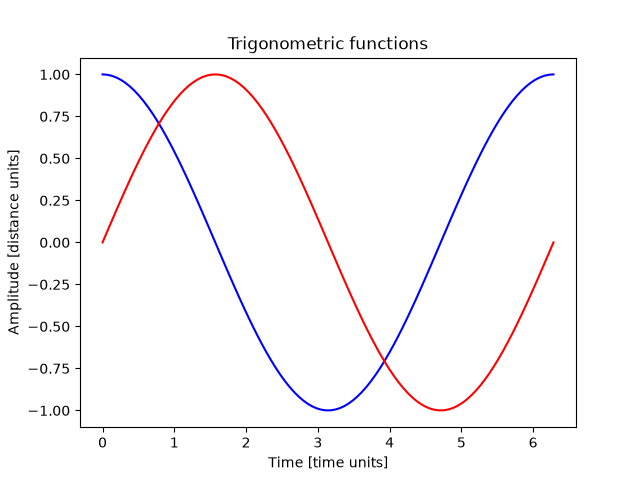

Note
Go to the end to download the full example code.
Sphinx-Gallery#
This example shows how to add a new example when using Sphinx-Gallery.
To use Sphinx-Gallery, first install the package with this command:
pip install sphinx-gallery
Then, add the package to the extensions variable in your Sphinx conf.py file:
extensions = [
"sphinx_gallery.gen_gallery",
]
Plot a simple sphere using PyVista#
This code plots a simple sphere using PyVista.
import pyvista as pv
pv.set_jupyter_backend("html")
sphere = pv.Sphere()
sphere.plot()

Plot a simple sphere using PyVista with a plotter
plotter = pv.Plotter(notebook=True)
plotter.add_mesh(sphere, color="white", show_edges=True)
plotter.title = "3D Sphere Visualization"
plotter.show()

EmbeddableWidget(value='<iframe srcdoc="<!doctype html>\n<html lang="en">\n <head>\n <meta charset="utf-8" />\n <meta name="viewport" content="width=device-width, initial-scale=1" />\n <title>VTK.js | Example - OfflineLocalView</title>\n <style>\n html, body { margin: 0; padding: 0; height: 100%; }\n body { font-family: sans-serif; }\n </style>\n </head>\n <body>\n <script>\n window.global = window.global || {};\n </script>\n <script type="module">if (typeof document !== \'undefined\') {\n var __vtkStyle = document.createElement(\'style\');\n __vtkStyle.textContent = "._fullScreen_13467_1{z-index:0;background:#000;justify-content:center;align-items:center;width:100vw;height:100vh;margin:0;padding:0;display:flex;position:absolute;top:0;left:0;overflow:hidden}._fullParentSize_13467_17{width:100%;height:100%;position:absolute;top:0;left:0;overflow:hidden}._bigFileDrop_13467_26{cursor:pointer;background-color:#fff;background-image:url();background-position:50%;background-repeat:no-repeat;background-size:contain;border-radius:10px;width:50px;padding:calc(50vh - 2em) calc(50vw - 25px - 2em);position:absolute;top:50%;left:50%;transform:translate(-50%,-50%)}._progress_13467_42{color:#000;z-index:1;-webkit-user-select:none;user-select:none;background:#80808080;border-radius:10px;flex:none;padding:20px;font-size:50px}body{margin:0}html{overflow:hidden}\\n";\n (document.head || document.getElementsByTagName(\'head\')[0]).appendChild(__vtkStyle);\n}\nvar ev=Object.create,oi=Object.defineProperty,tv=Object.getOwnPropertyDescriptor,nv=Object.getOwnPropertyNames,rv=Object.getPrototypeOf,av=Object.prototype.hasOwnProperty,ht=(t,e)=>()=>(e||(t((e={exports:{}}).exports,e),t=null),e.exports),So=(t,e)=>{let n={};for(var r in t)oi(n,r,{get:t[r],enumerable:!0});return e||oi(n,Symbol.toStringTag,{value:"Module"}),n},iv=(t,e,n,r)=>{if(e&&typeof e=="object"||typeof e=="function")for(var a=nv(e),i=0,s=a.length,o;i<s;i++)o=a[i],!av.call(t,o)&&o!==n&&oi(t,o,{get:(c=>e[c]).bind(null,o),enumerable:!(r=tv(e,o))||r.enumerable});return t},xo=(t,e,n)=>(n=t!=null?ev(rv(t)):{},iv(e||!t||!t.__esModule?oi(n,"default",{value:t,enumerable:!0}):n,t)),Mc=document.querySelector("head");Mc&&[16,32,96,160,196].forEach(t=>{const e=document.createElement("link");e.setAttribute("rel","icon"),e.setAttribute("href",`https://kitware.github.io/vtk-js/icon/favicon-${t}x${t}.png`),e.setAttribute("sizes",`${t}x${t}`),e.setAttribute("type","image/png"),Mc.appendChild(e)});var _e=typeof Float32Array<"u"?Float32Array:Array,sv=Math.PI/180;function ov(t){return t*sv}Math.hypot||(Math.hypot=function(){for(var t=0,e=arguments.length;e--;)t+=arguments[e]*arguments[e];return Math.sqrt(t)});var cv=So({add:()=>mv,adjoint:()=>lv,clone:()=>fv,copy:()=>uv,create:()=>Et,determinant:()=>pv,equals:()=>Lv,exactEquals:()=>Dv,frob:()=>Ev,fromMat2d:()=>Sv,fromMat4:()=>gn,fromQuat:()=>xv,fromRotation:()=>yv,fromScaling:()=>Cv,fromTranslation:()=>dv,fromValues:()=>gv,identity:()=>bt,invert:()=>kt,mul:()=>Fv,multiply:()=>or,multiplyScalar:()=>Mv,multiplyScalarAndAdd:()=>Vv,normalFromMat4:()=>wv,projection:()=>Ov,rotate:()=>vv,scale:()=>Tv,set:()=>wo,str:()=>Rv,sub:()=>_v,subtract:()=>hu,translate:()=>hv,transpose:()=>pr});function Et(){var t=new _e(9);return _e!=Float32Array&&(t[1]=0,t[2]=0,t[3]=0,t[5]=0,t[6]=0,t[7]=0),t[0]=1,t[4]=1,t[8]=1,t}function gn(t,e){return t[0]=e[0],t[1]=e[1],t[2]=e[2],t[3]=e[4],t[4]=e[5],t[5]=e[6],t[6]=e[8],t[7]=e[9],t[8]=e[10],t}function fv(t){var e=new _e(9);return e[0]=t[0],e[1]=t[1],e[2]=t[2],e[3]=t[3],e[4]=t[4],e[5]=t[5],e[6]=t[6],e[7]=t[7],e[8]=t[8],e}function uv(t,e){return t[0]=e[0],t[1]=e[1],t[2]=e[2],t[3]=e[3],t[4]=e[4],t[5]=e[5],t[6]=e[6],t[7]=e[7],t[8]=e[8],t}function gv(t,e,n,r,a,i,s,o,c){var f=new _e(9);return f[0]=t,f[1]=e,f[2]=n,f[3]=r,f[4]=a,f[5]=i,f[6]=s,f[7]=o,f[8]=c,f}function wo(t,e,n,r,a,i,s,o,c,f){return t[0]=e,t[1]=n,t[2]=r,t[3]=a,t[4]=i,t[5]=s,t[6]=o,t[7]=c,t[8]=f,t}function bt(t){return t[0]=1,t[1]=0,t[2]=0,t[3]=0,t[4]=1,t[5]=0,t[6]=0,t[7]=0,t[8]=1,t}function pr(t,e){if(t===e){var n=e[1],r=e[2],a=e[5];t[1]=e[3],t[2]=e[6],t[3]=n,t[5]=e[7],t[6]=r,t[7]=a}else t[0]=e[0],t[1]=e[3],t[2]=e[6],t[3]=e[1],t[4]=e[4],t[5]=e[7],t[6]=e[2],t[7]=e[5],t[8]=e[8];return t}function kt(t,e){var n=e[0],r=e[1],a=e[2],i=e[3],s=e[4],o=e[5],c=e[6],f=e[7],g=e[8],u=g*s-o*f,l=-g*i+o*c,p=f*i-s*c,T=n*u+r*l+a*p;return T?(T=1/T,t[0]=u*T,t[1]=(-g*r+a*f)*T,t[2]=(o*r-a*s)*T,t[3]=l*T,t[4]=(g*n-a*c)*T,t[5]=(-o*n+a*i)*T,t[6]=p*T,t[7]=(-f*n+r*c)*T,t[8]=(s*n-r*i)*T,t):null}function lv(t,e){var n=e[0],r=e[1],a=e[2],i=e[3],s=e[4],o=e[5],c=e[6],f=e[7],g=e[8];return t[0]=s*g-o*f,t[1]=a*f-r*g,t[2]=r*o-a*s,t[3]=o*c-i*g,t[4]=n*g-a*c,t[5]=a*i-n*o,t[6]=i*f-s*c,t[7]=r*c-n*f,t[8]=n*s-r*i,t}function pv(t){var e=t[0],n=t[1],r=t[2],a=t[3],i=t[4],s=t[5],o=t[6],c=t[7],f=t[8];return e*(f*i-s*c)+n*(-f*a+s*o)+r*(c*a-i*o)}function or(t,e,n){var r=e[0],a=e[1],i=e[2],s=e[3],o=e[4],c=e[5],f=e[6],g=e[7],u=e[8],l=n[0],p=n[1],T=n[2],h=n[3],d=n[4],v=n[5],C=n[6],y=n[7],S=n[8];return t[0]=l*r+p*s+T*f,t[1]=l*a+p*o+T*g,t[2]=l*i+p*c+T*u,t[3]=h*r+d*s+v*f,t[4]=h*a+d*o+v*g,t[5]=h*i+d*c+v*u,t[6]=C*r+y*s+S*f,t[7]=C*a+y*o+S*g,t[8]=C*i+y*c+S*u,t}function hv(t,e,n){var r=e[0],a=e[1],i=e[2],s=e[3],o=e[4],c=e[5],f=e[6],g=e[7],u=e[8],l=n[0],p=n[1];return t[0]=r,t[1]=a,t[2]=i,t[3]=s,t[4]=o,t[5]=c,t[6]=l*r+p*s+f,t[7]=l*a+p*o+g,t[8]=l*i+p*c+u,t}function vv(t,e,n){var r=e[0],a=e[1],i=e[2],s=e[3],o=e[4],c=e[5],f=e[6],g=e[7],u=e[8],l=Math.sin(n),p=Math.cos(n);return t[0]=p*r+l*s,t[1]=p*a+l*o,t[2]=p*i+l*c,t[3]=p*s-l*r,t[4]=p*o-l*a,t[5]=p*c-l*i,t[6]=f,t[7]=g,t[8]=u,t}function Tv(t,e,n){var r=n[0],a=n[1];return t[0]=r*e[0],t[1]=r*e[1],t[2]=r*e[2],t[3]=a*e[3],t[4]=a*e[4],t[5]=a*e[5],t[6]=e[6],t[7]=e[7],t[8]=e[8],t}function dv(t,e){return t[0]=1,t[1]=0,t[2]=0,t[3]=0,t[4]=1,t[5]=0,t[6]=e[0],t[7]=e[1],t[8]=1,t}function yv(t,e){var n=Math.sin(e),r=Math.cos(e);return t[0]=r,t[1]=n,t[2]=0,t[3]=-n,t[4]=r,t[5]=0,t[6]=0,t[7]=0,t[8]=1,t}function Cv(t,e){return t[0]=e[0],t[1]=0,t[2]=0,t[3]=0,t[4]=e[1],t[5]=0,t[6]=0,t[7]=0,t[8]=1,t}function Sv(t,e){return t[0]=e[0],t[1]=e[1],t[2]=0,t[3]=e[2],t[4]=e[3],t[5]=0,t[6]=e[4],t[7]=e[5],t[8]=1,t}function xv(t,e){var n=e[0],r=e[1],a=e[2],i=e[3],s=n+n,o=r+r,c=a+a,f=n*s,g=r*s,u=r*o,l=a*s,p=a*o,T=a*c,h=i*s,d=i*o,v=i*c;return t[0]=1-u-T,t[3]=g-v,t[6]=l+d,t[1]=g+v,t[4]=1-f-T,t[7]=p-h,t[2]=l-d,t[5]=p+h,t[8]=1-f-u,t}function wv(t,e){var n=e[0],r=e[1],a=e[2],i=e[3],s=e[4],o=e[5],c=e[6],f=e[7],g=e[8],u=e[9],l=e[10],p=e[11],T=e[12],h=e[13],d=e[14],v=e[15],C=n*o-r*s,y=n*c-a*s,S=n*f-i*s,w=r*c-a*o,x=r*f-i*o,m=a*f-i*c,R=g*h-u*T,M=g*d-l*T,L=g*v-p*T,V=u*d-l*h,E=u*v-p*h,N=l*v-p*d,D=C*N-y*E+S*V+w*L-x*M+m*R;return D?(D=1/D,t[0]=(o*N-c*E+f*V)*D,t[1]=(c*L-s*N-f*M)*D,t[2]=(s*E-o*L+f*R)*D,t[3]=(a*E-r*N-i*V)*D,t[4]=(n*N-a*L+i*M)*D,t[5]=(r*L-n*E-i*R)*D,t[6]=(h*m-d*x+v*w)*D,t[7]=(d*S-T*m-v*y)*D,t[8]=(T*x-h*S+v*C)*D,t):null}function Ov(t,e,n){return t[0]=2/e,t[1]=0,t[2]=0,t[3]=0,t[4]=-2/n,t[5]=0,t[6]=-1,t[7]=1,t[8]=1,t}function Rv(t){return"mat3("+t[0]+", "+t[1]+", "+t[2]+", "+t[3]+", "+t[4]+", "+t[5]+", "+t[6]+", "+t[7]+", "+t[8]+")"}function Ev(t){return Math.hypot(t[0],t[1],t[2],t[3],t[4],t[5],t[6],t[7],t[8])}function mv(t,e,n){return t[0]=e[0]+n[0],t[1]=e[1]+n[1],t[2]=e[2]+n[2],t[3]=e[3]+n[3],t[4]=e[4]+n[4],t[5]=e[5]+n[5],t[6]=e[6]+n[6],t[7]=e[7]+n[7],t[8]=e[8]+n[8],t}function hu(t,e,n){return t[0]=e[0]-n[0],t[1]=e[1]-n[1],t[2]=e[2]-n[2],t[3]=e[3]-n[3],t[4]=e[4]-n[4],t[5]=e[5]-n[5],t[6]=e[6]-n[6],t[7]=e[7]-n[7],t[8]=e[8]-n[8],t}function Mv(t,e,n){return t[0]=e[0]*n,t[1]=e[1]*n,t[2]=e[2]*n,t[3]=e[3]*n,t[4]=e[4]*n,t[5]=e[5]*n,t[6]=e[6]*n,t[7]=e[7]*n,t[8]=e[8]*n,t}function Vv(t,e,n,r){return t[0]=e[0]+n[0]*r,t[1]=e[1]+n[1]*r,t[2]=e[2]+n[2]*r,t[3]=e[3]+n[3]*r,t[4]=e[4]+n[4]*r,t[5]=e[5]+n[5]*r,t[6]=e[6]+n[6]*r,t[7]=e[7]+n[7]*r,t[8]=e[8]+n[8]*r,t}function Dv(t,e){return t[0]===e[0]&&t[1]===e[1]&&t[2]===e[2]&&t[3]===e[3]&&t[4]===e[4]&&t[5]===e[5]&&t[6]===e[6]&&t[7]===e[7]&&t[8]===e[8]}function Lv(t,e){var n=t[0],r=t[1],a=t[2],i=t[3],s=t[4],o=t[5],c=t[6],f=t[7],g=t[8],u=e[0],l=e[1],p=e[2],T=e[3],h=e[4],d=e[5],v=e[6],C=e[7],y=e[8];return Math.abs(n-u)<=1e-6*Math.max(1,Math.abs(n),Math.abs(u))&&Math.abs(r-l)<=1e-6*Math.max(1,Math.abs(r),Math.abs(l))&&Math.abs(a-p)<=1e-6*Math.max(1,Math.abs(a),Math.abs(p))&&Math.abs(i-T)<=1e-6*Math.max(1,Math.abs(i),Math.abs(T))&&Math.abs(s-h)<=1e-6*Math.max(1,Math.abs(s),Math.abs(h))&&Math.abs(o-d)<=1e-6*Math.max(1,Math.abs(o),Math.abs(d))&&Math.abs(c-v)<=1e-6*Math.max(1,Math.abs(c),Math.abs(v))&&Math.abs(f-C)<=1e-6*Math.max(1,Math.abs(f),Math.abs(C))&&Math.abs(g-y)<=1e-6*Math.max(1,Math.abs(g),Math.abs(y))}var Fv=or,_v=hu,Kr=So({add:()=>Qv,adjoint:()=>Gv,clone:()=>Nv,copy:()=>be,create:()=>hr,determinant:()=>Uv,equals:()=>n1,exactEquals:()=>t1,frob:()=>Zv,fromQuat:()=>cr,fromQuat2:()=>Wv,fromRotation:()=>vu,fromRotationTranslation:()=>Tu,fromRotationTranslationScale:()=>yu,fromRotationTranslationScaleOrigin:()=>Av,fromScaling:()=>Gi,fromTranslation:()=>ki,fromValues:()=>Bv,fromXRotation:()=>bv,fromYRotation:()=>zv,fromZRotation:()=>$v,frustum:()=>Hv,getRotation:()=>js,getScaling:()=>du,getTranslation:()=>Iv,identity:()=>K,invert:()=>Fe,lookAt:()=>wu,mul:()=>Ru,multiply:()=>Y,multiplyScalar:()=>Jv,multiplyScalarAndAdd:()=>e1,ortho:()=>xu,orthoNO:()=>Su,orthoZO:()=>Xv,perspective:()=>jv,perspectiveFromFieldOfView:()=>Pv,perspectiveNO:()=>Cu,perspectiveZO:()=>Kv,rotate:()=>at,rotateX:()=>Ni,rotateY:()=>Pr,rotateZ:()=>Bi,scale:()=>Yt,set:()=>kv,str:()=>qv,sub:()=>r1,subtract:()=>Ou,targetTo:()=>Yv,translate:()=>Le,transpose:()=>fe});function hr(){var t=new _e(16);return _e!=Float32Array&&(t[1]=0,t[2]=0,t[3]=0,t[4]=0,t[6]=0,t[7]=0,t[8]=0,t[9]=0,t[11]=0,t[12]=0,t[13]=0,t[14]=0),t[0]=1,t[5]=1,t[10]=1,t[15]=1,t}function Nv(t){var e=new _e(16);return e[0]=t[0],e[1]=t[1],e[2]=t[2],e[3]=t[3],e[4]=t[4],e[5]=t[5],e[6]=t[6],e[7]=t[7],e[8]=t[8],e[9]=t[9],e[10]=t[10],e[11]=t[11],e[12]=t[12],e[13]=t[13],e[14]=t[14],e[15]=t[15],e}function be(t,e){return t[0]=e[0],t[1]=e[1],t[2]=e[2],t[3]=e[3],t[4]=e[4],t[5]=e[5],t[6]=e[6],t[7]=e[7],t[8]=e[8],t[9]=e[9],t[10]=e[10],t[11]=e[11],t[12]=e[12],t[13]=e[13],t[14]=e[14],t[15]=e[15],t}function Bv(t,e,n,r,a,i,s,o,c,f,g,u,l,p,T,h){var d=new _e(16);return d[0]=t,d[1]=e,d[2]=n,d[3]=r,d[4]=a,d[5]=i,d[6]=s,d[7]=o,d[8]=c,d[9]=f,d[10]=g,d[11]=u,d[12]=l,d[13]=p,d[14]=T,d[15]=h,d}function kv(t,e,n,r,a,i,s,o,c,f,g,u,l,p,T,h,d){return t[0]=e,t[1]=n,t[2]=r,t[3]=a,t[4]=i,t[5]=s,t[6]=o,t[7]=c,t[8]=f,t[9]=g,t[10]=u,t[11]=l,t[12]=p,t[13]=T,t[14]=h,t[15]=d,t}function K(t){return t[0]=1,t[1]=0,t[2]=0,t[3]=0,t[4]=0,t[5]=1,t[6]=0,t[7]=0,t[8]=0,t[9]=0,t[10]=1,t[11]=0,t[12]=0,t[13]=0,t[14]=0,t[15]=1,t}function fe(t,e){if(t===e){var n=e[1],r=e[2],a=e[3],i=e[6],s=e[7],o=e[11];t[1]=e[4],t[2]=e[8],t[3]=e[12],t[4]=n,t[6]=e[9],t[7]=e[13],t[8]=r,t[9]=i,t[11]=e[14],t[12]=a,t[13]=s,t[14]=o}else t[0]=e[0],t[1]=e[4],t[2]=e[8],t[3]=e[12],t[4]=e[1],t[5]=e[5],t[6]=e[9],t[7]=e[13],t[8]=e[2],t[9]=e[6],t[10]=e[10],t[11]=e[14],t[12]=e[3],t[13]=e[7],t[14]=e[11],t[15]=e[15];return t}function Fe(t,e){var n=e[0],r=e[1],a=e[2],i=e[3],s=e[4],o=e[5],c=e[6],f=e[7],g=e[8],u=e[9],l=e[10],p=e[11],T=e[12],h=e[13],d=e[14],v=e[15],C=n*o-r*s,y=n*c-a*s,S=n*f-i*s,w=r*c-a*o,x=r*f-i*o,m=a*f-i*c,R=g*h-u*T,M=g*d-l*T,L=g*v-p*T,V=u*d-l*h,E=u*v-p*h,N=l*v-p*d,D=C*N-y*E+S*V+w*L-x*M+m*R;return D?(D=1/D,t[0]=(o*N-c*E+f*V)*D,t[1]=(a*E-r*N-i*V)*D,t[2]=(h*m-d*x+v*w)*D,t[3]=(l*x-u*m-p*w)*D,t[4]=(c*L-s*N-f*M)*D,t[5]=(n*N-a*L+i*M)*D,t[6]=(d*S-T*m-v*y)*D,t[7]=(g*m-l*S+p*y)*D,t[8]=(s*E-o*L+f*R)*D,t[9]=(r*L-n*E-i*R)*D,t[10]=(T*x-h*S+v*C)*D,t[11]=(u*S-g*x-p*C)*D,t[12]=(o*M-s*V-c*R)*D,t[13]=(n*V-r*M+a*R)*D,t[14]=(h*y-T*w-d*C)*D,t[15]=(g*w-u*y+l*C)*D,t):null}function Gv(t,e){var n=e[0],r=e[1],a=e[2],i=e[3],s=e[4],o=e[5],c=e[6],f=e[7],g=e[8],u=e[9],l=e[10],p=e[11],T=e[12],h=e[13],d=e[14],v=e[15];return t[0]=o*(l*v-p*d)-u*(c*v-f*d)+h*(c*p-f*l),t[1]=-(r*(l*v-p*d)-u*(a*v-i*d)+h*(a*p-i*l)),t[2]=r*(c*v-f*d)-o*(a*v-i*d)+h*(a*f-i*c),t[3]=-(r*(c*p-f*l)-o*(a*p-i*l)+u*(a*f-i*c)),t[4]=-(s*(l*v-p*d)-g*(c*v-f*d)+T*(c*p-f*l)),t[5]=n*(l*v-p*d)-g*(a*v-i*d)+T*(a*p-i*l),t[6]=-(n*(c*v-f*d)-s*(a*v-i*d)+T*(a*f-i*c)),t[7]=n*(c*p-f*l)-s*(a*p-i*l)+g*(a*f-i*c),t[8]=s*(u*v-p*h)-g*(o*v-f*h)+T*(o*p-f*u),t[9]=-(n*(u*v-p*h)-g*(r*v-i*h)+T*(r*p-i*u)),t[10]=n*(o*v-f*h)-s*(r*v-i*h)+T*(r*f-i*o),t[11]=-(n*(o*p-f*u)-s*(r*p-i*u)+g*(r*f-i*o)),t[12]=-(s*(u*d-l*h)-g*(o*d-c*h)+T*(o*l-c*u)),t[13]=n*(u*d-l*h)-g*(r*d-a*h)+T*(r*l-a*u),t[14]=-(n*(o*d-c*h)-s*(r*d-a*h)+T*(r*c-a*o)),t[15]=n*(o*l-c*u)-s*(r*l-a*u)+g*(r*c-a*o),t}function Uv(t){var e=t[0],n=t[1],r=t[2],a=t[3],i=t[4],s=t[5],o=t[6],c=t[7],f=t[8],g=t[9],u=t[10],l=t[11],p=t[12],T=t[13],h=t[14],d=t[15],v=e*s-n*i,C=e*o-r*i,y=e*c-a*i,S=n*o-r*s,w=n*c-a*s,x=r*c-a*o,m=f*T-g*p,R=f*h-u*p,M=f*d-l*p,L=g*h-u*T,V=g*d-l*T;return v*(u*d-l*h)-C*V+y*L+S*M-w*R+x*m}function Y(t,e,n){var r=e[0],a=e[1],i=e[2],s=e[3],o=e[4],c=e[5],f=e[6],g=e[7],u=e[8],l=e[9],p=e[10],T=e[11],h=e[12],d=e[13],v=e[14],C=e[15],y=n[0],S=n[1],w=n[2],x=n[3];return t[0]=y*r+S*o+w*u+x*h,t[1]=y*a+S*c+w*l+x*d,t[2]=y*i+S*f+w*p+x*v,t[3]=y*s+S*g+w*T+x*C,y=n[4],S=n[5],w=n[6],x=n[7],t[4]=y*r+S*o+w*u+x*h,t[5]=y*a+S*c+w*l+x*d,t[6]=y*i+S*f+w*p+x*v,t[7]=y*s+S*g+w*T+x*C,y=n[8],S=n[9],w=n[10],x=n[11],t[8]=y*r+S*o+w*u+x*h,t[9]=y*a+S*c+w*l+x*d,t[10]=y*i+S*f+w*p+x*v,t[11]=y*s+S*g+w*T+x*C,y=n[12],S=n[13],w=n[14],x=n[15],t[12]=y*r+S*o+w*u+x*h,t[13]=y*a+S*c+w*l+x*d,t[14]=y*i+S*f+w*p+x*v,t[15]=y*s+S*g+w*T+x*C,t}function Le(t,e,n){var r=n[0],a=n[1],i=n[2],s,o,c,f,g,u,l,p,T,h,d,v;return e===t?(t[12]=e[0]*r+e[4]*a+e[8]*i+e[12],t[13]=e[1]*r+e[5]*a+e[9]*i+e[13],t[14]=e[2]*r+e[6]*a+e[10]*i+e[14],t[15]=e[3]*r+e[7]*a+e[11]*i+e[15]):(s=e[0],o=e[1],c=e[2],f=e[3],g=e[4],u=e[5],l=e[6],p=e[7],T=e[8],h=e[9],d=e[10],v=e[11],t[0]=s,t[1]=o,t[2]=c,t[3]=f,t[4]=g,t[5]=u,t[6]=l,t[7]=p,t[8]=T,t[9]=h,t[10]=d,t[11]=v,t[12]=s*r+g*a+T*i+e[12],t[13]=o*r+u*a+h*i+e[13],t[14]=c*r+l*a+d*i+e[14],t[15]=f*r+p*a+v*i+e[15]),t}function Yt(t,e,n){var r=n[0],a=n[1],i=n[2];return t[0]=e[0]*r,t[1]=e[1]*r,t[2]=e[2]*r,t[3]=e[3]*r,t[4]=e[4]*a,t[5]=e[5]*a,t[6]=e[6]*a,t[7]=e[7]*a,t[8]=e[8]*i,t[9]=e[9]*i,t[10]=e[10]*i,t[11]=e[11]*i,t[12]=e[12],t[13]=e[13],t[14]=e[14],t[15]=e[15],t}function at(t,e,n,r){var a=r[0],i=r[1],s=r[2],o=Math.hypot(a,i,s),c,f,g,u,l,p,T,h,d,v,C,y,S,w,x,m,R,M,L,V,E,N,D,F;return o<1e-6?null:(o=1/o,a*=o,i*=o,s*=o,c=Math.sin(n),f=Math.cos(n),g=1-f,u=e[0],l=e[1],p=e[2],T=e[3],h=e[4],d=e[5],v=e[6],C=e[7],y=e[8],S=e[9],w=e[10],x=e[11],m=a*a*g+f,R=i*a*g+s*c,M=s*a*g-i*c,L=a*i*g-s*c,V=i*i*g+f,E=s*i*g+a*c,N=a*s*g+i*c,D=i*s*g-a*c,F=s*s*g+f,t[0]=u*m+h*R+y*M,t[1]=l*m+d*R+S*M,t[2]=p*m+v*R+w*M,t[3]=T*m+C*R+x*M,t[4]=u*L+h*V+y*E,t[5]=l*L+d*V+S*E,t[6]=p*L+v*V+w*E,t[7]=T*L+C*V+x*E,t[8]=u*N+h*D+y*F,t[9]=l*N+d*D+S*F,t[10]=p*N+v*D+w*F,t[11]=T*N+C*D+x*F,e!==t&&(t[12]=e[12],t[13]=e[13],t[14]=e[14],t[15]=e[15]),t)}function Ni(t,e,n){var r=Math.sin(n),a=Math.cos(n),i=e[4],s=e[5],o=e[6],c=e[7],f=e[8],g=e[9],u=e[10],l=e[11];return e!==t&&(t[0]=e[0],t[1]=e[1],t[2]=e[2],t[3]=e[3],t[12]=e[12],t[13]=e[13],t[14]=e[14],t[15]=e[15]),t[4]=i*a+f*r,t[5]=s*a+g*r,t[6]=o*a+u*r,t[7]=c*a+l*r,t[8]=f*a-i*r,t[9]=g*a-s*r,t[10]=u*a-o*r,t[11]=l*a-c*r,t}function Pr(t,e,n){var r=Math.sin(n),a=Math.cos(n),i=e[0],s=e[1],o=e[2],c=e[3],f=e[8],g=e[9],u=e[10],l=e[11];return e!==t&&(t[4]=e[4],t[5]=e[5],t[6]=e[6],t[7]=e[7],t[12]=e[12],t[13]=e[13],t[14]=e[14],t[15]=e[15]),t[0]=i*a-f*r,t[1]=s*a-g*r,t[2]=o*a-u*r,t[3]=c*a-l*r,t[8]=i*r+f*a,t[9]=s*r+g*a,t[10]=o*r+u*a,t[11]=c*r+l*a,t}function Bi(t,e,n){var r=Math.sin(n),a=Math.cos(n),i=e[0],s=e[1],o=e[2],c=e[3],f=e[4],g=e[5],u=e[6],l=e[7];return e!==t&&(t[8]=e[8],t[9]=e[9],t[10]=e[10],t[11]=e[11],t[12]=e[12],t[13]=e[13],t[14]=e[14],t[15]=e[15]),t[0]=i*a+f*r,t[1]=s*a+g*r,t[2]=o*a+u*r,t[3]=c*a+l*r,t[4]=f*a-i*r,t[5]=g*a-s*r,t[6]=u*a-o*r,t[7]=l*a-c*r,t}function ki(t,e){return t[0]=1,t[1]=0,t[2]=0,t[3]=0,t[4]=0,t[5]=1,t[6]=0,t[7]=0,t[8]=0,t[9]=0,t[10]=1,t[11]=0,t[12]=e[0],t[13]=e[1],t[14]=e[2],t[15]=1,t}function Gi(t,e){return t[0]=e[0],t[1]=0,t[2]=0,t[3]=0,t[4]=0,t[5]=e[1],t[6]=0,t[7]=0,t[8]=0,t[9]=0,t[10]=e[2],t[11]=0,t[12]=0,t[13]=0,t[14]=0,t[15]=1,t}function vu(t,e,n){var r=n[0],a=n[1],i=n[2],s=Math.hypot(r,a,i),o,c,f;return s<1e-6?null:(s=1/s,r*=s,a*=s,i*=s,o=Math.sin(e),c=Math.cos(e),f=1-c,t[0]=r*r*f+c,t[1]=a*r*f+i*o,t[2]=i*r*f-a*o,t[3]=0,t[4]=r*a*f-i*o,t[5]=a*a*f+c,t[6]=i*a*f+r*o,t[7]=0,t[8]=r*i*f+a*o,t[9]=a*i*f-r*o,t[10]=i*i*f+c,t[11]=0,t[12]=0,t[13]=0,t[14]=0,t[15]=1,t)}function bv(t,e){var n=Math.sin(e),r=Math.cos(e);return t[0]=1,t[1]=0,t[2]=0,t[3]=0,t[4]=0,t[5]=r,t[6]=n,t[7]=0,t[8]=0,t[9]=-n,t[10]=r,t[11]=0,t[12]=0,t[13]=0,t[14]=0,t[15]=1,t}function zv(t,e){var n=Math.sin(e),r=Math.cos(e);return t[0]=r,t[1]=0,t[2]=-n,t[3]=0,t[4]=0,t[5]=1,t[6]=0,t[7]=0,t[8]=n,t[9]=0,t[10]=r,t[11]=0,t[12]=0,t[13]=0,t[14]=0,t[15]=1,t}function $v(t,e){var n=Math.sin(e),r=Math.cos(e);return t[0]=r,t[1]=n,t[2]=0,t[3]=0,t[4]=-n,t[5]=r,t[6]=0,t[7]=0,t[8]=0,t[9]=0,t[10]=1,t[11]=0,t[12]=0,t[13]=0,t[14]=0,t[15]=1,t}function Tu(t,e,n){var r=e[0],a=e[1],i=e[2],s=e[3],o=r+r,c=a+a,f=i+i,g=r*o,u=r*c,l=r*f,p=a*c,T=a*f,h=i*f,d=s*o,v=s*c,C=s*f;return t[0]=1-(p+h),t[1]=u+C,t[2]=l-v,t[3]=0,t[4]=u-C,t[5]=1-(g+h),t[6]=T+d,t[7]=0,t[8]=l+v,t[9]=T-d,t[10]=1-(g+p),t[11]=0,t[12]=n[0],t[13]=n[1],t[14]=n[2],t[15]=1,t}function Wv(t,e){var n=new _e(3),r=-e[0],a=-e[1],i=-e[2],s=e[3],o=e[4],c=e[5],f=e[6],g=e[7],u=r*r+a*a+i*i+s*s;return u>0?(n[0]=(o*s+g*r+c*i-f*a)*2/u,n[1]=(c*s+g*a+f*r-o*i)*2/u,n[2]=(f*s+g*i+o*a-c*r)*2/u):(n[0]=(o*s+g*r+c*i-f*a)*2,n[1]=(c*s+g*a+f*r-o*i)*2,n[2]=(f*s+g*i+o*a-c*r)*2),Tu(t,e,n),t}function Iv(t,e){return t[0]=e[12],t[1]=e[13],t[2]=e[14],t}function du(t,e){var n=e[0],r=e[1],a=e[2],i=e[4],s=e[5],o=e[6],c=e[8],f=e[9],g=e[10];return t[0]=Math.hypot(n,r,a),t[1]=Math.hypot(i,s,o),t[2]=Math.hypot(c,f,g),t}function js(t,e){var n=new _e(3);du(n,e);var r=1/n[0],a=1/n[1],i=1/n[2],s=e[0]*r,o=e[1]*a,c=e[2]*i,f=e[4]*r,g=e[5]*a,u=e[6]*i,l=e[8]*r,p=e[9]*a,T=e[10]*i,h=s+g+T,d=0;return h>0?(d=Math.sqrt(h+1)*2,t[3]=.25*d,t[0]=(u-p)/d,t[1]=(l-c)/d,t[2]=(o-f)/d):s>g&&s>T?(d=Math.sqrt(1+s-g-T)*2,t[3]=(u-p)/d,t[0]=.25*d,t[1]=(o+f)/d,t[2]=(l+c)/d):g>T?(d=Math.sqrt(1+g-s-T)*2,t[3]=(l-c)/d,t[0]=(o+f)/d,t[1]=.25*d,t[2]=(u+p)/d):(d=Math.sqrt(1+T-s-g)*2,t[3]=(o-f)/d,t[0]=(l+c)/d,t[1]=(u+p)/d,t[2]=.25*d),t}function yu(t,e,n,r){var a=e[0],i=e[1],s=e[2],o=e[3],c=a+a,f=i+i,g=s+s,u=a*c,l=a*f,p=a*g,T=i*f,h=i*g,d=s*g,v=o*c,C=o*f,y=o*g,S=r[0],w=r[1],x=r[2];return t[0]=(1-(T+d))*S,t[1]=(l+y)*S,t[2]=(p-C)*S,t[3]=0,t[4]=(l-y)*w,t[5]=(1-(u+d))*w,t[6]=(h+v)*w,t[7]=0,t[8]=(p+C)*x,t[9]=(h-v)*x,t[10]=(1-(u+T))*x,t[11]=0,t[12]=n[0],t[13]=n[1],t[14]=n[2],t[15]=1,t}function Av(t,e,n,r,a){var i=e[0],s=e[1],o=e[2],c=e[3],f=i+i,g=s+s,u=o+o,l=i*f,p=i*g,T=i*u,h=s*g,d=s*u,v=o*u,C=c*f,y=c*g,S=c*u,w=r[0],x=r[1],m=r[2],R=a[0],M=a[1],L=a[2],V=(1-(h+v))*w,E=(p+S)*w,N=(T-y)*w,D=(p-S)*x,F=(1-(l+v))*x,B=(d+C)*x,U=(T+y)*m,G=(d-C)*m,k=(1-(l+h))*m;return t[0]=V,t[1]=E,t[2]=N,t[3]=0,t[4]=D,t[5]=F,t[6]=B,t[7]=0,t[8]=U,t[9]=G,t[10]=k,t[11]=0,t[12]=n[0]+R-(V*R+D*M+U*L),t[13]=n[1]+M-(E*R+F*M+G*L),t[14]=n[2]+L-(N*R+B*M+k*L),t[15]=1,t}function cr(t,e){var n=e[0],r=e[1],a=e[2],i=e[3],s=n+n,o=r+r,c=a+a,f=n*s,g=r*s,u=r*o,l=a*s,p=a*o,T=a*c,h=i*s,d=i*o,v=i*c;return t[0]=1-u-T,t[1]=g+v,t[2]=l-d,t[3]=0,t[4]=g-v,t[5]=1-f-T,t[6]=p+h,t[7]=0,t[8]=l+d,t[9]=p-h,t[10]=1-f-u,t[11]=0,t[12]=0,t[13]=0,t[14]=0,t[15]=1,t}function Hv(t,e,n,r,a,i,s){var o=1/(n-e),c=1/(a-r),f=1/(i-s);return t[0]=i*2*o,t[1]=0,t[2]=0,t[3]=0,t[4]=0,t[5]=i*2*c,t[6]=0,t[7]=0,t[8]=(n+e)*o,t[9]=(a+r)*c,t[10]=(s+i)*f,t[11]=-1,t[12]=0,t[13]=0,t[14]=s*i*2*f,t[15]=0,t}function Cu(t,e,n,r,a){var i=1/Math.tan(e/2),s;return t[0]=i/n,t[1]=0,t[2]=0,t[3]=0,t[4]=0,t[5]=i,t[6]=0,t[7]=0,t[8]=0,t[9]=0,t[11]=-1,t[12]=0,t[13]=0,t[15]=0,a!=null&&a!==1/0?(s=1/(r-a),t[10]=(a+r)*s,t[14]=2*a*r*s):(t[10]=-1,t[14]=-2*r),t}var jv=Cu;function Kv(t,e,n,r,a){var i=1/Math.tan(e/2),s;return t[0]=i/n,t[1]=0,t[2]=0,t[3]=0,t[4]=0,t[5]=i,t[6]=0,t[7]=0,t[8]=0,t[9]=0,t[11]=-1,t[12]=0,t[13]=0,t[15]=0,a!=null&&a!==1/0?(s=1/(r-a),t[10]=a*s,t[14]=a*r*s):(t[10]=-1,t[14]=-r),t}function Pv(t,e,n,r){var a=Math.tan(e.upDegrees*Math.PI/180),i=Math.tan(e.downDegrees*Math.PI/180),s=Math.tan(e.leftDegrees*Math.PI/180),o=Math.tan(e.rightDegrees*Math.PI/180),c=2/(s+o),f=2/(a+i);return t[0]=c,t[1]=0,t[2]=0,t[3]=0,t[4]=0,t[5]=f,t[6]=0,t[7]=0,t[8]=-((s-o)*c*.5),t[9]=(a-i)*f*.5,t[10]=r/(n-r),t[11]=-1,t[12]=0,t[13]=0,t[14]=r*n/(n-r),t[15]=0,t}function Su(t,e,n,r,a,i,s){var o=1/(e-n),c=1/(r-a),f=1/(i-s);return t[0]=-2*o,t[1]=0,t[2]=0,t[3]=0,t[4]=0,t[5]=-2*c,t[6]=0,t[7]=0,t[8]=0,t[9]=0,t[10]=2*f,t[11]=0,t[12]=(e+n)*o,t[13]=(a+r)*c,t[14]=(s+i)*f,t[15]=1,t}var xu=Su;function Xv(t,e,n,r,a,i,s){var o=1/(e-n),c=1/(r-a),f=1/(i-s);return t[0]=-2*o,t[1]=0,t[2]=0,t[3]=0,t[4]=0,t[5]=-2*c,t[6]=0,t[7]=0,t[8]=0,t[9]=0,t[10]=f,t[11]=0,t[12]=(e+n)*o,t[13]=(a+r)*c,t[14]=i*f,t[15]=1,t}function wu(t,e,n,r){var a,i,s,o,c,f,g,u,l,p,T=e[0],h=e[1],d=e[2],v=r[0],C=r[1],y=r[2],S=n[0],w=n[1],x=n[2];return Math.abs(T-S)<1e-6&&Math.abs(h-w)<1e-6&&Math.abs(d-x)<1e-6?K(t):(g=T-S,u=h-w,l=d-x,p=1/Math.hypot(g,u,l),g*=p,u*=p,l*=p,a=C*l-y*u,i=y*g-v*l,s=v*u-C*g,p=Math.hypot(a,i,s),p?(p=1/p,a*=p,i*=p,s*=p):(a=0,i=0,s=0),o=u*s-l*i,c=l*a-g*s,f=g*i-u*a,p=Math.hypot(o,c,f),p?(p=1/p,o*=p,c*=p,f*=p):(o=0,c=0,f=0),t[0]=a,t[1]=o,t[2]=g,t[3]=0,t[4]=i,t[5]=c,t[6]=u,t[7]=0,t[8]=s,t[9]=f,t[10]=l,t[11]=0,t[12]=-(a*T+i*h+s*d),t[13]=-(o*T+c*h+f*d),t[14]=-(g*T+u*h+l*d),t[15]=1,t)}function Yv(t,e,n,r){var a=e[0],i=e[1],s=e[2],o=r[0],c=r[1],f=r[2],g=a-n[0],u=i-n[1],l=s-n[2],p=g*g+u*u+l*l;p>0&&(p=1/Math.sqrt(p),g*=p,u*=p,l*=p);var T=c*l-f*u,h=f*g-o*l,d=o*u-c*g;return p=T*T+h*h+d*d,p>0&&(p=1/Math.sqrt(p),T*=p,h*=p,d*=p),t[0]=T,t[1]=h,t[2]=d,t[3]=0,t[4]=u*d-l*h,t[5]=l*T-g*d,t[6]=g*h-u*T,t[7]=0,t[8]=g,t[9]=u,t[10]=l,t[11]=0,t[12]=a,t[13]=i,t[14]=s,t[15]=1,t}function qv(t){return"mat4("+t[0]+", "+t[1]+", "+t[2]+", "+t[3]+", "+t[4]+", "+t[5]+", "+t[6]+", "+t[7]+", "+t[8]+", "+t[9]+", "+t[10]+", "+t[11]+", "+t[12]+", "+t[13]+", "+t[14]+", "+t[15]+")"}function Zv(t){return Math.hypot(t[0],t[1],t[2],t[3],t[4],t[5],t[6],t[7],t[8],t[9],t[10],t[11],t[12],t[13],t[14],t[15])}function Qv(t,e,n){return t[0]=e[0]+n[0],t[1]=e[1]+n[1],t[2]=e[2]+n[2],t[3]=e[3]+n[3],t[4]=e[4]+n[4],t[5]=e[5]+n[5],t[6]=e[6]+n[6],t[7]=e[7]+n[7],t[8]=e[8]+n[8],t[9]=e[9]+n[9],t[10]=e[10]+n[10],t[11]=e[11]+n[11],t[12]=e[12]+n[12],t[13]=e[13]+n[13],t[14]=e[14]+n[14],t[15]=e[15]+n[15],t}function Ou(t,e,n){return t[0]=e[0]-n[0],t[1]=e[1]-n[1],t[2]=e[2]-n[2],t[3]=e[3]-n[3],t[4]=e[4]-n[4],t[5]=e[5]-n[5],t[6]=e[6]-n[6],t[7]=e[7]-n[7],t[8]=e[8]-n[8],t[9]=e[9]-n[9],t[10]=e[10]-n[10],t[11]=e[11]-n[11],t[12]=e[12]-n[12],t[13]=e[13]-n[13],t[14]=e[14]-n[14],t[15]=e[15]-n[15],t}function Jv(t,e,n){return t[0]=e[0]*n,t[1]=e[1]*n,t[2]=e[2]*n,t[3]=e[3]*n,t[4]=e[4]*n,t[5]=e[5]*n,t[6]=e[6]*n,t[7]=e[7]*n,t[8]=e[8]*n,t[9]=e[9]*n,t[10]=e[10]*n,t[11]=e[11]*n,t[12]=e[12]*n,t[13]=e[13]*n,t[14]=e[14]*n,t[15]=e[15]*n,t}function e1(t,e,n,r){return t[0]=e[0]+n[0]*r,t[1]=e[1]+n[1]*r,t[2]=e[2]+n[2]*r,t[3]=e[3]+n[3]*r,t[4]=e[4]+n[4]*r,t[5]=e[5]+n[5]*r,t[6]=e[6]+n[6]*r,t[7]=e[7]+n[7]*r,t[8]=e[8]+n[8]*r,t[9]=e[9]+n[9]*r,t[10]=e[10]+n[10]*r,t[11]=e[11]+n[11]*r,t[12]=e[12]+n[12]*r,t[13]=e[13]+n[13]*r,t[14]=e[14]+n[14]*r,t[15]=e[15]+n[15]*r,t}function t1(t,e){return t[0]===e[0]&&t[1]===e[1]&&t[2]===e[2]&&t[3]===e[3]&&t[4]===e[4]&&t[5]===e[5]&&t[6]===e[6]&&t[7]===e[7]&&t[8]===e[8]&&t[9]===e[9]&&t[10]===e[10]&&t[11]===e[11]&&t[12]===e[12]&&t[13]===e[13]&&t[14]===e[14]&&t[15]===e[15]}function n1(t,e){var n=t[0],r=t[1],a=t[2],i=t[3],s=t[4],o=t[5],c=t[6],f=t[7],g=t[8],u=t[9],l=t[10],p=t[11],T=t[12],h=t[13],d=t[14],v=t[15],C=e[0],y=e[1],S=e[2],w=e[3],x=e[4],m=e[5],R=e[6],M=e[7],L=e[8],V=e[9],E=e[10],N=e[11],D=e[12],F=e[13],B=e[14],U=e[15];return Math.abs(n-C)<=1e-6*Math.max(1,Math.abs(n),Math.abs(C))&&Math.abs(r-y)<=1e-6*Math.max(1,Math.abs(r),Math.abs(y))&&Math.abs(a-S)<=1e-6*Math.max(1,Math.abs(a),Math.abs(S))&&Math.abs(i-w)<=1e-6*Math.max(1,Math.abs(i),Math.abs(w))&&Math.abs(s-x)<=1e-6*Math.max(1,Math.abs(s),Math.abs(x))&&Math.abs(o-m)<=1e-6*Math.max(1,Math.abs(o),Math.abs(m))&&Math.abs(c-R)<=1e-6*Math.max(1,Math.abs(c),Math.abs(R))&&Math.abs(f-M)<=1e-6*Math.max(1,Math.abs(f),Math.abs(M))&&Math.abs(g-L)<=1e-6*Math.max(1,Math.abs(g),Math.abs(L))&&Math.abs(u-V)<=1e-6*Math.max(1,Math.abs(u),Math.abs(V))&&Math.abs(l-E)<=1e-6*Math.max(1,Math.abs(l),Math.abs(E))&&Math.abs(p-N)<=1e-6*Math.max(1,Math.abs(p),Math.abs(N))&&Math.abs(T-D)<=1e-6*Math.max(1,Math.abs(T),Math.abs(D))&&Math.abs(h-F)<=1e-6*Math.max(1,Math.abs(h),Math.abs(F))&&Math.abs(d-B)<=1e-6*Math.max(1,Math.abs(d),Math.abs(B))&&Math.abs(v-U)<=1e-6*Math.max(1,Math.abs(v),Math.abs(U))}var Ru=Y,r1=Ou;function Ui(){var t=new _e(3);return _e!=Float32Array&&(t[0]=0,t[1]=0,t[2]=0),t}function Xr(t){var e=t[0],n=t[1],r=t[2];return Math.hypot(e,n,r)}function Ks(t,e,n){var r=new _e(3);return r[0]=t,r[1]=e,r[2]=n,r}function a1(t,e){return t[0]=e[0],t[1]=e[1],t[2]=e[2],t}function Vt(t,e,n,r){return t[0]=e,t[1]=n,t[2]=r,t}function da(t,e,n){return t[0]=e[0]+n[0],t[1]=e[1]+n[1],t[2]=e[2]+n[2],t}function un(t,e,n){return t[0]=e[0]-n[0],t[1]=e[1]-n[1],t[2]=e[2]-n[2],t}function i1(t,e,n){return t[0]=e[0]*n[0],t[1]=e[1]*n[1],t[2]=e[2]*n[2],t}function At(t,e,n){return t[0]=e[0]*n,t[1]=e[1]*n,t[2]=e[2]*n,t}function s1(t,e){var n=e[0]-t[0],r=e[1]-t[1],a=e[2]-t[2];return Math.hypot(n,r,a)}function ci(t,e){return t[0]=1/e[0],t[1]=1/e[1],t[2]=1/e[2],t}function _t(t,e){var n=e[0],r=e[1],a=e[2],i=n*n+r*r+a*a;return i>0&&(i=1/Math.sqrt(i)),t[0]=e[0]*i,t[1]=e[1]*i,t[2]=e[2]*i,t}function bi(t,e){return t[0]*e[0]+t[1]*e[1]+t[2]*e[2]}function fr(t,e,n){var r=e[0],a=e[1],i=e[2],s=n[0],o=n[1],c=n[2];return t[0]=a*c-i*o,t[1]=i*s-r*c,t[2]=r*o-a*s,t}function re(t,e,n){var r=e[0],a=e[1],i=e[2],s=n[3]*r+n[7]*a+n[11]*i+n[15];return s=s||1,t[0]=(n[0]*r+n[4]*a+n[8]*i+n[12])/s,t[1]=(n[1]*r+n[5]*a+n[9]*i+n[13])/s,t[2]=(n[2]*r+n[6]*a+n[10]*i+n[14])/s,t}function vr(t,e,n){var r=e[0],a=e[1],i=e[2];return t[0]=r*n[0]+a*n[3]+i*n[6],t[1]=r*n[1]+a*n[4]+i*n[7],t[2]=r*n[2]+a*n[5]+i*n[8],t}function o1(t){return t[0]=0,t[1]=0,t[2]=0,t}function Vc(t,e){return t[0]===e[0]&&t[1]===e[1]&&t[2]===e[2]}function Dc(t,e){var n=t[0],r=t[1],a=t[2],i=e[0],s=e[1],o=e[2];return Math.abs(n-i)<=1e-6*Math.max(1,Math.abs(n),Math.abs(i))&&Math.abs(r-s)<=1e-6*Math.max(1,Math.abs(r),Math.abs(s))&&Math.abs(a-o)<=1e-6*Math.max(1,Math.abs(a),Math.abs(o))}var Lc=un,c1=s1,f1=Xr,S_=(function(){var t=Ui();return function(e,n,r,a,i,s){var o,c;for(n||(n=3),r||(r=0),a?c=Math.min(a*n+r,e.length):c=e.length,o=r;o<c;o+=n)t[0]=e[o],t[1]=e[o+1],t[2]=e[o+2],i(t,t,s),e[o]=t[0],e[o+1]=t[1],e[o+2]=t[2];return e}})();function u1(){var t=new _e(4);return _e!=Float32Array&&(t[0]=0,t[1]=0,t[2]=0,t[3]=0),t}function g1(t,e,n,r){var a=new _e(4);return a[0]=t,a[1]=e,a[2]=n,a[3]=r,a}function l1(t,e){var n=e[0],r=e[1],a=e[2],i=e[3],s=n*n+r*r+a*a+i*i;return s>0&&(s=1/Math.sqrt(s)),t[0]=n*s,t[1]=r*s,t[2]=a*s,t[3]=i*s,t}function Nn(t,e,n){var r=e[0],a=e[1],i=e[2],s=e[3];return t[0]=n[0]*r+n[4]*a+n[8]*i+n[12]*s,t[1]=n[1]*r+n[5]*a+n[9]*i+n[13]*s,t[2]=n[2]*r+n[6]*a+n[10]*i+n[14]*s,t[3]=n[3]*r+n[7]*a+n[11]*i+n[15]*s,t}var x_=(function(){var t=u1();return function(e,n,r,a,i,s){var o,c;for(n||(n=4),r||(r=0),a?c=Math.min(a*n+r,e.length):c=e.length,o=r;o<c;o+=n)t[0]=e[o],t[1]=e[o+1],t[2]=e[o+2],t[3]=e[o+3],i(t,t,s),e[o]=t[0],e[o+1]=t[1],e[o+2]=t[2],e[o+3]=t[3];return e}})();function ln(){var t=new _e(4);return _e!=Float32Array&&(t[0]=0,t[1]=0,t[2]=0),t[3]=1,t}function zi(t,e,n){n=n*.5;var r=Math.sin(n);return t[0]=r*e[0],t[1]=r*e[1],t[2]=r*e[2],t[3]=Math.cos(n),t}function p1(t,e){var n=Math.acos(e[3])*2,r=Math.sin(n/2);return r>1e-6?(t[0]=e[0]/r,t[1]=e[1]/r,t[2]=e[2]/r):(t[0]=1,t[1]=0,t[2]=0),n}function Fc(t,e,n){var r=e[0],a=e[1],i=e[2],s=e[3],o=n[0],c=n[1],f=n[2],g=n[3];return t[0]=r*g+s*o+a*f-i*c,t[1]=a*g+s*c+i*o-r*f,t[2]=i*g+s*f+r*c-a*o,t[3]=s*g-r*o-a*c-i*f,t}function Ya(t,e,n,r){var a=e[0],i=e[1],s=e[2],o=e[3],c=n[0],f=n[1],g=n[2],u=n[3],l,p=a*c+i*f+s*g+o*u,T,h,d;return p<0&&(p=-p,c=-c,f=-f,g=-g,u=-u),1-p>1e-6?(l=Math.acos(p),T=Math.sin(l),h=Math.sin((1-r)*l)/T,d=Math.sin(r*l)/T):(h=1-r,d=r),t[0]=h*a+d*c,t[1]=h*i+d*f,t[2]=h*s+d*g,t[3]=h*o+d*u,t}function h1(t,e){return t[0]=-e[0],t[1]=-e[1],t[2]=-e[2],t[3]=e[3],t}function v1(t,e){var n=e[0]+e[4]+e[8],r;if(n>0)r=Math.sqrt(n+1),t[3]=.5*r,r=.5/r,t[0]=(e[5]-e[7])*r,t[1]=(e[6]-e[2])*r,t[2]=(e[1]-e[3])*r;else{var a=0;e[4]>e[0]&&(a=1),e[8]>e[a*3+a]&&(a=2);var i=(a+1)%3,s=(a+2)%3;r=Math.sqrt(e[a*3+a]-e[i*3+i]-e[s*3+s]+1),t[a]=.5*r,r=.5/r,t[3]=(e[i*3+s]-e[s*3+i])*r,t[i]=(e[i*3+a]+e[a*3+i])*r,t[s]=(e[s*3+a]+e[a*3+s])*r}return t}var _c=g1,Eu=l1,w_=(function(){var t=Ui(),e=Ks(1,0,0),n=Ks(0,1,0);return function(r,a,i){var s=bi(a,i);return s<-.999999?(fr(t,e,a),f1(t)<1e-6&&fr(t,n,a),_t(t,t),zi(r,t,Math.PI),r):s>.999999?(r[0]=0,r[1]=0,r[2]=0,r[3]=1,r):(fr(t,a,i),r[0]=t[0],r[1]=t[1],r[2]=t[2],r[3]=1+s,Eu(r,r))}})(),O_=(function(){var t=ln(),e=ln();return function(n,r,a,i,s,o){return Ya(t,r,s,o),Ya(e,a,i,o),Ya(n,t,e,2*o*(1-o)),n}})(),R_=(function(){var t=Et();return function(e,n,r,a){return t[0]=r[0],t[3]=r[1],t[6]=r[2],t[1]=a[0],t[4]=a[1],t[7]=a[2],t[2]=-n[0],t[5]=-n[1],t[8]=-n[2],Eu(e,v1(e,t))}})(),T1=ht(((t,e)=>{e.exports=function n(r,a){if(r===a)return!0;if(r&&a&&typeof r=="object"&&typeof a=="object"){if(r.constructor!==a.constructor)return!1;var i,s,o;if(Array.isArray(r)){if(i=r.length,i!=a.length)return!1;for(s=i;s--!==0;)if(!n(r[s],a[s]))return!1;return!0}if(r.constructor===RegExp)return r.source===a.source&&r.flags===a.flags;if(r.valueOf!==Object.prototype.valueOf)return r.valueOf()===a.valueOf();if(r.toString!==Object.prototype.toString)return r.toString()===a.toString();if(o=Object.keys(r),i=o.length,i!==Object.keys(a).length)return!1;for(s=i;s--!==0;)if(!Object.prototype.hasOwnProperty.call(a,o[s]))return!1;for(s=i;s--!==0;){var c=o[s];if(!n(r[c],a[c]))return!1}return!0}return r!==r&&a!==a}})),Oo=xo(T1()),mu={vtkObject:()=>null};function gt(t){if(t==null||t.isA)return t;if(!t.vtkClass)return globalThis.console&&globalThis.console.error&&globalThis.console.error("Invalid VTK object"),null;const e=mu[t.vtkClass];if(!e)return globalThis.console&&globalThis.console.error&&globalThis.console.error(`No vtk class found for Object of type ${t.vtkClass}`),null;const n={...t};Object.keys(n).forEach(a=>{n[a]&&typeof n[a]=="object"&&n[a].vtkClass&&(n[a]=gt(n[a]))});const r=e(n);return r&&r.modified&&r.modified(),r}function d1(t,e){mu[t]=e}gt.register=d1;var cs=class extends Array{push(){for(let t=0;t<arguments.length;t++)this.includes(arguments[t])||super.push(arguments[t]);return this.length}},Ne=So({EVENT_ABORT:()=>Mo,TYPED_ARRAYS:()=>ke,VOID:()=>Vu,_capitalize:()=>Se,algo:()=>mo,capitalize:()=>aa,chain:()=>Cn,debounce:()=>$u,default:()=>O,event:()=>ui,formatBytesToProperUnit:()=>ku,formatNumbersWithThousandSeparator:()=>Gu,get:()=>$e,getArray:()=>sa,isVtkObject:()=>Vo,keystore:()=>Do,measurePromiseExecution:()=>bu,moveToProtected:()=>oa,newInstance:()=>oe,newTypedArray:()=>hn,newTypedArrayFrom:()=>Wi,normalizeWheel:()=>ju,obj:()=>ve,proxy:()=>Iu,proxyPropertyMapping:()=>Au,proxyPropertyState:()=>Hu,requiredParam:()=>Mu,set:()=>ia,setArray:()=>Eo,setGet:()=>de,setGetArray:()=>Ii,setImmediateVTK:()=>Ro,setLoggerFunction:()=>Lu,throttle:()=>Wu,traverseInstanceTree:()=>Yr,uncapitalize:()=>Bu,vtkDebugMacro:()=>fi,vtkErrorMacro:()=>ie,vtkInfoMacro:()=>_u,vtkLogMacro:()=>Fu,vtkOnceErrorMacro:()=>Nu,vtkWarningMacro:()=>$i}),Ps=0,Mu=t=>{throw new Error(`Named parameter \'${t}\' is missing`)},Vu=Symbol("void");function y1(){return Ps}var Du={};function Bn(){}["log","debug","info","warn","error","time","timeEnd","group","groupEnd"].forEach(t=>{Du[t]=Bn});var ya=globalThis.console&&globalThis.console.hasOwnProperty("log")?globalThis.console:Du,pn={debug:Bn,error:ya.error||Bn,info:ya.info||Bn,log:ya.log||Bn,warn:ya.warn||Bn};function Lu(t,e){pn[t]&&(pn[t]=e||Bn)}function Fu(...t){pn.log(...t)}function _u(...t){pn.info(...t)}function fi(...t){pn.debug(...t)}function ie(...t){pn.error(...t)}function $i(...t){pn.warn(...t)}var Nc={};function Nu(t){Nc[t]||(pn.error(t),Nc[t]=!0)}var ke=Object.create(null);ke.Float32Array=Float32Array;ke.Float64Array=Float64Array;ke.Uint8Array=Uint8Array;ke.Int8Array=Int8Array;ke.Uint16Array=Uint16Array;ke.Int16Array=Int16Array;ke.Uint32Array=Uint32Array;ke.Int32Array=Int32Array;ke.Uint8ClampedArray=Uint8ClampedArray;try{ke.BigInt64Array=BigInt64Array,ke.BigUint64Array=BigUint64Array}catch{}function hn(t,...e){return new(ke[t]||Float64Array)(...e)}function Wi(t,...e){return(ke[t]||Float64Array).from(...e)}function aa(t){return t.charAt(0).toUpperCase()+t.slice(1)}function Se(t){return aa(t[0]==="_"?t.slice(1):t)}function Bu(t){return t.charAt(0).toLowerCase()+t.slice(1)}function ku(t,e=2,n=1e3){const r=["TB","GB","MB","KB"];let a=Number(t),i="B";for(;a>n;)a/=n,i=r.pop();return`${a.toFixed(e)} ${i}`}function Gu(t,e=" "){const n=[];let r=t;for(;r>1e3;)n.push(`000${r%1e3}`.slice(-3)),r=Math.floor(r/1e3);return r>0&&n.push(r),n.reverse(),n.join(e)}function Uu(t){Object.keys(t).forEach(e=>{Array.isArray(t[e])&&(t[e]=[].concat(t[e]))})}function C1(t){return Object.values(ke).some(e=>t instanceof e)}function S1(t,e){if(t===e)return!0;if(Array.isArray(t)&&Array.isArray(e)){if(t.length!==e.length)return!1;for(let n=0;n<t.length;n++)if(t[n]!==e[n])return!1;return!0}return!1}function x1(t,e){return Object.keys(t).find(n=>t[n]===e)}function Ro(t){setTimeout(t,0)}function bu(t,e){const n=performance.now();t.finally(()=>{e(performance.now()-n)})}function ve(t={},e={}){Uu(e);const n=[];if(Number.isInteger(e.mtime)||(e.mtime=++Ps),!("classHierarchy"in e))e.classHierarchy=new cs("vtkObject");else if(!(e.classHierarchy instanceof cs)){const i=new cs;for(let s=0;s<e.classHierarchy.length;s++)i.push(e.classHierarchy[s]);e.classHierarchy=i}function r(i){n[i]=null}function a(i){function s(){r(i)}return Object.freeze({unsubscribe:s})}return t.isDeleted=()=>!!e.deleted,t.modified=i=>{if(e.deleted){ie("instance deleted - cannot call any method");return}i&&i<t.getMTime()||(e.mtime=++Ps,n.forEach(s=>s&&s(t)))},t.onModified=i=>{if(e.deleted)return ie("instance deleted - cannot call any method"),null;const s=n.length;return n.push(i),a(s)},t.getMTime=()=>e.mtime,t.isA=i=>{let s=e.classHierarchy.length;for(;s--;)if(e.classHierarchy[s]===i)return!0;return!1},t.getClassName=(i=0)=>e.classHierarchy[e.classHierarchy.length-1-i],t.set=(i={},s=!1,o=!1)=>{let c=!1;return Object.keys(i).forEach(f=>{const g=o?null:t[`set${aa(f)}`];g&&Array.isArray(i[f])&&g.length>1?c=g(...i[f])||c:g?c=g(i[f])||c:(["mtime"].indexOf(f)===-1&&!s&&$i(`Warning: Set value to model directly ${f}, ${i[f]}`),c=e[f]!==i[f]||c,e[f]=i[f])}),c},t.get=(...i)=>{if(!i.length)return e;const s={};return i.forEach(o=>{s[o]=e[o]}),s},t.getReferenceByName=i=>e[i],t.delete=()=>{Object.keys(e).forEach(i=>delete e[i]),n.forEach((i,s)=>r(s)),e.deleted=!0},t.getState=({preserveTypedArrays:i=!1}={})=>{if(e.deleted)return null;const s={preserveTypedArrays:i},o={...e,vtkClass:t.getClassName()};Object.keys(o).forEach(f=>{o[f]===null||o[f]===void 0||f[0]==="_"?delete o[f]:o[f].isA?o[f]=o[f].getState(s):Array.isArray(o[f])?o[f]=o[f].map(g=>g&&g.isA?g.getState(s):g):C1(o[f])&&(i||(o[f]=Array.from(o[f])))});const c={};return Object.keys(o).sort().forEach(f=>{c[f]=o[f]}),c.mtime&&delete c.mtime,c},t.shallowCopy=(i,s=!1)=>{if(i.getClassName()!==t.getClassName())throw new Error(`Cannot ShallowCopy ${i.getClassName()} into ${t.getClassName()}`);const o=i.get(),c=Object.keys(e).sort();Object.keys(o).sort().forEach(f=>{const g=c.indexOf(f);g===-1?s&&fi(`add ${f} in shallowCopy`):c.splice(g,1),e[f]=o[f]}),c.length&&s&&fi(`Untouched keys: ${c.join(", ")}`),t.modified()},t.toJSON=function(){return t.getState()},t}var w1={object(t,e,n){return function(){return{...e[n.name]}}}};function $e(t,e,n){n.forEach(r=>{if(typeof r=="object"){const a=w1[r.type];a?t[`get${Se(r.name)}`]=a(t,e,r):t[`get${Se(r.name)}`]=()=>e[r.name]}else t[`get${Se(r)}`]=()=>e[r]})}var zu={enum(t,e,n){const r=`_on${Se(n.name)}Changed`;return a=>{if(typeof a=="string"){if(n.enum[a]!==void 0)return e[n.name]!==n.enum[a]?(e[n.name]=n.enum[a],t.modified(),!0):!1;throw ie(`Set Enum with invalid argument ${n}, ${a}`),new RangeError("Set Enum with invalid string argument")}if(typeof a=="number"){if(e[n.name]!==a){if(Object.keys(n.enum).map(i=>n.enum[i]).indexOf(a)!==-1){const i=e[n.name];return e[n.name]=a,e[r]?.(t,e,a,i),t.modified(),!0}throw ie(`Set Enum outside numeric range ${n}, ${a}`),new RangeError("Set Enum outside numeric range")}return!1}throw ie(`Set Enum with invalid argument (String/Number) ${n}, ${a}`),new TypeError("Set Enum with invalid argument (String/Number)")}},object(t,e,n){n.params?.length===1&&$i(\'Setter of type "object" with a single "param" field is not supported\');const r=`_on${Se(n.name)}Changed`;return(...a)=>{let i;if(a.length>1&&n.params?.length?i=n.params.reduce((s,o,c)=>Object.assign(s,{[o]:a[c]}),{}):i=a[0],!(0,Oo.default)(e[n.name],i)){const s=e[n.name];return e[n.name]=i,e[r]?.(t,e,i,s),t.modified(),!0}return!1}}};function Bc(t){if(typeof t=="object"){const e=zu[t.type];if(e)return(n,r)=>e(n,r,t);throw ie(`No setter for field ${t}`),new TypeError("No setter for field")}return function(n,r){const a=`_on${Se(t)}Changed`;return function(s){if(r.deleted)return ie("instance deleted - cannot call any method"),!1;if(r[t]!==s){const o=r[t.name];return r[t]=s,r[a]?.(n,r,s,o),n.modified(),!0}return!1}}}function ia(t,e,n){n.forEach(r=>{typeof r=="object"?t[`set${Se(r.name)}`]=Bc(r)(t,e):t[`set${Se(r)}`]=Bc(r)(t,e)})}function de(t,e,n){$e(t,e,n),ia(t,e,n)}function sa(t,e,n){n.forEach(r=>{t[`get${Se(r)}`]=()=>e[r]?Array.from(e[r]):e[r],t[`get${Se(r)}ByReference`]=()=>e[r]})}function Eo(t,e,n,r,a=void 0){n.forEach(i=>{if(e[i]&&r&&e[i].length!==r)throw new RangeError(`Invalid initial number of values for array (${i})`);const s=`_on${Se(i)}Changed`;t[`set${Se(i)}`]=(...o)=>{if(e.deleted)return ie("instance deleted - cannot call any method"),!1;let c=o,f,g=!1;if(c.length===1&&(c[0]==null||c[0].length>=0)&&(c=c[0],g=!0),c==null)f=e[i]!==c;else{if(r&&c.length!==r)if(c.length<r&&a!==void 0)for(c=Array.from(c),g=!1;c.length<r;)c.push(a);else throw new RangeError(`Invalid number of values for array setter (${i})`);f=e[i]==null||e[i].length!==c.length;for(let u=0;!f&&u<c.length;++u)f=e[i][u]!==c[u];f&&g&&(c=Array.from(c))}if(f){const u=e[i.name];e[i]=c,e[s]?.(t,e,c,u),t.modified()}return f},t[`set${Se(i)}From`]=o=>{const c=e[i];o.forEach((f,g)=>{c[g]=f})}})}function Ii(t,e,n,r,a=void 0){sa(t,e,n),Eo(t,e,n,r,a)}function oa(t,e,n){for(let r=0;r<n.length;r++){const a=n[r];e[a]!==void 0&&(e[`_${a}`]=e[a],delete e[a])}}function mo(t,e,n,r){e.inputData?e.inputData=e.inputData.map(gt):e.inputData=[],e.inputConnection?e.inputConnection=e.inputConnection.map(gt):e.inputConnection=[],e.output?e.output=e.output.map(gt):e.output=[],e.inputArrayToProcess?e.inputArrayToProcess=e.inputArrayToProcess.map(gt):e.inputArrayToProcess=[],e.numberOfInputs=n;function a(p,T=0){if(e.deleted){ie("instance deleted - cannot call any method");return}if(T>=e.numberOfInputs){ie(`algorithm ${t.getClassName()} only has ${e.numberOfInputs} input ports. To add more input ports, use addInputData()`);return}(e.inputData[T]!==p||e.inputConnection[T])&&(e.inputData[T]=p,e.inputConnection[T]=null,t.modified&&t.modified())}function i(p=0){return e.inputConnection[p]&&(e.inputData[p]=e.inputConnection[p]()),e.inputData[p]}function s(p,T=0){if(e.deleted){ie("instance deleted - cannot call any method");return}if(T>=e.numberOfInputs){let h=`algorithm ${t.getClassName()} only has `;h+=`${e.numberOfInputs}`,h+=" input ports. To add more input ports, use addInputConnection()",ie(h);return}e.inputData[T]=null,e.inputConnection[T]=p}function o(p=0){return e.inputConnection[p]}function c(){let p=e.numberOfInputs;for(;p&&!e.inputData[p-1]&&!e.inputConnection[p-1];)p--;return p===e.numberOfInputs&&e.numberOfInputs++,p}function f(p){if(e.deleted){ie("instance deleted - cannot call any method");return}s(p,c())}function g(p){if(e.deleted){ie("instance deleted - cannot call any method");return}a(p,c())}function u(p=0){return e.deleted?(ie("instance deleted - cannot call any method"),null):(t.shouldUpdate()&&t.update(),e.output[p])}t.shouldUpdate=()=>{const p=t.getMTime();let T=1/0,h=r;for(;h--;){if(!e.output[h]||e.output[h].isDeleted())return!0;const d=e.output[h].getMTime();if(d<p)return!0;d<T&&(T=d)}for(h=e.numberOfInputs;h--;)if(e.inputConnection[h]?.filter.shouldUpdate()||t.getInputData(h)?.getMTime()>T)return!0;return!1};function l(p=0){const T=()=>u(p);return T.filter=t,T}if(e.numberOfInputs){let p=e.numberOfInputs;for(;p--;)e.inputData.push(null),e.inputConnection.push(null);t.setInputData=a,t.setInputConnection=s,t.addInputData=g,t.addInputConnection=f,t.getInputData=i,t.getInputConnection=o}r&&(t.getOutputData=u,t.getOutputPort=l),t.update=()=>{const p=[];if(e.numberOfInputs){let T=0;for(;T<e.numberOfInputs;)p[T]=t.getInputData(T),T++}t.requestData&&!t.isDeleted()&&t.shouldUpdate()&&t.requestData(p,e.output)},t.getNumberOfInputPorts=()=>e.numberOfInputs,t.getNumberOfOutputPorts=()=>r||e.output.length,t.getInputArrayToProcess=p=>{const T=e.inputArrayToProcess[p],h=e.inputData[p];return T&&h?h[`get${T.fieldAssociation}`]().getArray(T.arrayName):null},t.setInputArrayToProcess=(p,T,h,d="Scalars")=>{for(;e.inputArrayToProcess.length<p;)e.inputArrayToProcess.push(null);e.inputArrayToProcess[p]={arrayName:T,fieldAssociation:h,attributeType:d}}}var Mo=Symbol("Event abort");function ui(t,e,n){const r=[],a=t.delete;let i=1;function s(f){for(let g=0;g<r.length;++g){const[u]=r[g];if(u===f){r.splice(g,1);return}}}function o(f){function g(){s(f)}return Object.freeze({unsubscribe:g})}function c(){if(e.deleted){ie("instance deleted - cannot call any method");return}const f=r.slice();for(let g=0;g<f.length;++g){const[,u,l]=f[g];if(u){if(l<0)setTimeout(()=>u.apply(t,arguments),1-l);else if(u.apply(t,arguments)===Mo)break}}}t[`invoke${Se(n)}`]=c,t[`on${Se(n)}`]=(f,g=0)=>{if(!f.apply)return console.error(`Invalid callback for event ${n}`),null;if(e.deleted)return ie("instance deleted - cannot call any method"),null;const u=i++;return r.push([u,f,g]),r.sort((l,p)=>p[2]-l[2]),o(u)},t.delete=()=>{a(),r.forEach(([f])=>s(f))}}function oe(t,e){const n=(r={})=>{const a={},i={};return t(i,a,r),Object.freeze(i)};return e&&gt.register(e,n),n}function Cn(...t){return(...e)=>t.filter(n=>!!n).map(n=>n(...e))}function Vo(t){return t&&t.isA&&t.isA("vtkObject")}function Yr(t,e,n=[],r=[]){if(Vo(t)){if(r.indexOf(t)>=0)return n;r.push(t);const a=e(t);a!==void 0&&n.push(a);const i=t.get();Object.keys(i).forEach(s=>{const o=i[s];Array.isArray(o)?o.forEach(c=>{Yr(c,e,n,r)}):Yr(o,e,n,r)})}return n}function $u(t,e,n){let r;const a=(...i)=>{const s=this,o=()=>{r=null,n||t.apply(s,i)},c=n&&!r;clearTimeout(r),r=setTimeout(o,e),c&&t.apply(s,i)};return a.cancel=()=>clearTimeout(r),a}function Wu(t,e){let n=!1,r=null;function a(){n=!1,r!==null&&(i(...r),r=null)}function i(...s){if(n){r=s;return}n=!0,t(...s),setTimeout(a,e)}return i}function Do(t,e,n={}){e.keystore=Object.assign(e.keystore||{},n),t.setKey=(r,a)=>{e.keystore[r]=a},t.getKey=r=>e.keystore[r],t.getAllKeys=()=>Object.keys(e.keystore),t.deleteKey=r=>delete e.keystore[r],t.clearKeystore=()=>t.getAllKeys().forEach(r=>delete e.keystore[r])}var O1=1,Ca="__root__";function Iu(t,e){Do(t,e);const n=t.delete;e.proxyId=`${O1++}`,e.ui=JSON.parse(JSON.stringify(e.ui||[])),$e(t,e,["proxyId","proxyGroup","proxyName"]),de(t,e,["proxyManager"]);const r={},a={};function i(f,g){a[g]||(a[g]=[]);const u=a[g];for(let l=0;l<f.length;l++)u.push(f[l].name),r[f[l].name]=f[l],f[l].children&&f[l].children.length&&i(f[l].children,f[l].name)}i(e.ui,Ca),t.updateUI=f=>{e.ui=JSON.parse(JSON.stringify(f||[])),Object.keys(r).forEach(g=>delete r[g]),Object.keys(a).forEach(g=>delete a[g]),i(e.ui,Ca),t.modified()};function s(f=Ca){return a[f]}t.updateProxyProperty=(f,g)=>{const u=r[f];u?Object.assign(u,g):r[f]={...g}},t.activate=()=>{if(e.proxyManager){const f=`setActive${Se(t.getProxyGroup().slice(0,-1))}`;e.proxyManager[f]&&e.proxyManager[f](t)}},e.propertyLinkSubscribers={},t.registerPropertyLinkForGC=(f,g)=>{g in e.propertyLinkSubscribers||(e.propertyLinkSubscribers[g]=[]),e.propertyLinkSubscribers[g].push(f)},t.gcPropertyLinks=f=>{const g=e.propertyLinkSubscribers[f]||[];for(;g.length;)g.pop().unbind(t)},e.propertyLinkMap={},t.getPropertyLink=(f,g=!1)=>{if(e.propertyLinkMap[f])return e.propertyLinkMap[f];let u=null;const l=[];let p=0,T=!1;function h(S,w=!1){if(T)return null;const x=[];let m=null;for(p=l.length;p--;){const M=l[p];M.instance===S?m=M:x.push(M)}if(!m)return null;const R=m.instance[`get${Se(m.propertyName)}`]();if(!S1(R,u)||w){for(u=R,T=!0;x.length;){const M=x.pop();M.instance.set({[M.propertyName]:u})}T=!1}return e.propertyLinkMap[f].persistent&&(e.propertyLinkMap[f].value=R),R}function d(S,w){const x=[];for(p=l.length;p--;){const m=l[p];m.instance===S&&(m.propertyName===w||w===void 0)&&(m.subscription.unsubscribe(),x.push(p))}for(;x.length;)l.splice(x.pop(),1)}function v(S,w,x=!1){const m=S.onModified(h),R=l[0];return l.push({instance:S,propertyName:w,subscription:m}),x&&(e.propertyLinkMap[f].persistent&&e.propertyLinkMap[f].value!==void 0?S.set({[w]:e.propertyLinkMap[f].value}):R&&h(R.instance,!0)),{unsubscribe:()=>d(S,w)}}function C(){for(;l.length;)l.pop().subscription.unsubscribe()}const y={bind:v,unbind:d,unsubscribe:C,persistent:g};return e.propertyLinkMap[f]=y,y};function o(f=Ca){const g=[],u=e.proxyId,l=s(f)||[];for(let p=0;p<l.length;p++){const T=l[p],h=t[`get${Se(T)}`],d={id:u,name:T,value:h?h():void 0},v=o(T);v.length&&(d.children=v),g.push(d)}return g}t.listPropertyNames=()=>o().map(f=>f.name),t.getPropertyByName=f=>o().find(g=>g.name===f),t.getPropertyDomainByName=f=>(r[f]||{}).domain,t.getProxySection=()=>({id:e.proxyId,name:e.proxyGroup,ui:e.ui,properties:o()}),t.delete=()=>{const f=Object.keys(e.propertyLinkMap);let g=f.length;for(;g--;)e.propertyLinkMap[f[g]].unsubscribe();Object.keys(e.propertyLinkSubscribers).forEach(t.gcPropertyLinks),n()},t.getState=()=>null;function c(){if(e.links)for(let f=0;f<e.links.length;f++){const{link:g,property:u,persistent:l,updateOnBind:p,type:T}=e.links[f];if(T==="application"){const h=e.proxyManager.getPropertyLink(g,l);t.registerPropertyLinkForGC(h,"application"),h.bind(t,u,p)}}}Ro(c)}function Au(t,e,n){const r=t.delete,a=[],i=Object.keys(n);let s=i.length;for(;s--;){const o=i[s],{modelKey:c,property:f,modified:g=!0}=n[o],u=Se(f),l=Se(o);t[`get${l}`]=e[c][`get${u}`],t[`set${l}`]=e[c][`set${u}`],g&&a.push(e[c].onModified(t.modified))}t.delete=()=>{for(;a.length;)a.pop().unsubscribe();r()}}function Hu(t,e,n={},r={}){e.this=t;function a(o){const c=Object.keys(o);let f=c.length;for(;f--;){const g=c[f];e[g].set(o[g])}}const i=Object.keys(r);let s=i.length;for(;s--;){const o=i[s];e[o]=r[o];const c=n[o];t[`set${Se(o)}`]=f=>{if(f!==e[o]){e[o]=f;const g=c[f];a(g),t.modified()}}}i.length&&$e(t,e,i)}var kc=10,Gc=40,Uc=800;function ju(t){let e=0,n=0,r=0,a=0;return"detail"in t&&(n=t.detail),"wheelDelta"in t&&(n=-t.wheelDelta/120),"wheelDeltaY"in t&&(n=-t.wheelDeltaY/120),"wheelDeltaX"in t&&(e=-t.wheelDeltaX/120),"axis"in t&&t.axis===t.HORIZONTAL_AXIS&&(e=n,n=0),r=e*kc,a=n*kc,"deltaY"in t&&(a=t.deltaY),"deltaX"in t&&(r=t.deltaX),(r||a)&&t.deltaMode&&(t.deltaMode===1?(r*=Gc,a*=Gc):(r*=Uc,a*=Uc)),r&&!e&&(e=r<1?-1:1),a&&!n&&(n=a<1?-1:1),{spinX:e,spinY:n||e,pixelX:r,pixelY:a||r}}var O={algo:mo,capitalize:aa,chain:Cn,debounce:$u,enumToString:x1,event:ui,EVENT_ABORT:Mo,formatBytesToProperUnit:ku,formatNumbersWithThousandSeparator:Gu,get:$e,getArray:sa,getCurrentGlobalMTime:y1,isVtkObject:Vo,keystore:Do,measurePromiseExecution:bu,moveToProtected:oa,newInstance:oe,newTypedArray:hn,newTypedArrayFrom:Wi,normalizeWheel:ju,obj:ve,proxy:Iu,proxyPropertyMapping:Au,proxyPropertyState:Hu,safeArrays:Uu,set:ia,setArray:Eo,setGet:de,setGetArray:Ii,setImmediate:Ro,setLoggerFunction:Lu,throttle:Wu,traverseInstanceTree:Yr,TYPED_ARRAYS:ke,uncapitalize:Bu,VOID:Vu,vtkDebugMacro:fi,vtkErrorMacro:ie,vtkInfoMacro:_u,vtkLogMacro:Fu,vtkOnceErrorMacro:Nu,vtkWarningMacro:$i,objectSetterMap:zu,requiredParam:Mu},{vtkErrorMacro:R1}=O,E1=["Build","Render"];function m1(t,e){e.classHierarchy.push("vtkViewNode");function n(a,i){for(let s=0;s<e.children.length;++s){const o=(i+1+s)%e.children.length;if(e.children[o]===a)return e.children[o]=e.children[i],e.children[i]=a,!0}return!1}t.build=a=>{},t.render=a=>{},t.traverse=a=>{const i=t[a.getTraverseOperation()];if(i){i(a);return}t.apply(a,!0);for(let s=0;s<e.children.length;s++)e.children[s].traverse(a);t.apply(a,!1)},t.apply=(a,i)=>{const s=t[a.getOperation()];s&&s(i,a)},t.getViewNodeFor=(a,i=null)=>{if(i&&i.renderable===a)return i;if(e.renderable===a)return t;for(let s=0;s<e.children.length;++s){const o=e.children[s].getViewNodeFor(a);if(o)return o}},t.getFirstAncestorOfType=a=>e._parent?e._parent.isA(a)?e._parent:e._parent.getFirstAncestorOfType(a):null,t.getLastAncestorOfType=a=>{if(!e._parent)return null;const i=e._parent.getLastAncestorOfType(a);return i||(e._parent.isA(a)?e._parent:null)},t.addMissingNode=a=>{if(!a)return;const i=e._renderableChildMap.get(a);if(i!==void 0)return i.setVisited(!0),i;const s=t.createViewNode(a);if(s)return s.setParent(t),s.setVisited(!0),e._renderableChildMap.set(a,s),e.children.push(s),s},t.addMissingNodes=(a,i=!1)=>{if(!a||!a.length)return;let s;for(let o=0;o<a.length;++o){const c=a[o],f=t.addMissingNode(c);i&&f!==void 0&&(s===void 0?s=e.children.lastIndexOf(f):e.children[s]!==f&&n(e.children,f,s),s++)}},t.addMissingChildren=a=>{if(!(!a||!a.length))for(let i=0;i<a.length;++i){const s=a[i];if(e.children.indexOf(s)===-1){s.setParent(t),e.children.push(s);const o=s.getRenderable();o&&e._renderableChildMap.set(o,s)}s.setVisited(!0)}},t.removeNode=a=>{const i=e.children.findIndex(o=>o===a);if(i<0)return!1;const s=a.getRenderable();return s&&e._renderableChildMap.delete(s),a.delete(),e.children.splice(i,1),!0},t.prepareNodes=()=>{for(let a=0;a<e.children.length;++a)e.children[a].setVisited(!1)},t.setVisited=a=>{e.visited=a},t.removeUnusedNodes=()=>{let a=0;for(let i=0;i<e.children.length;++i){const s=e.children[i];if(s.getVisited())e.children[a++]=s,s.setVisited(!1);else{const o=s.getRenderable();o&&e._renderableChildMap.delete(o),s.delete()}}e.children.length=a},t.createViewNode=a=>{if(!e.myFactory)return R1("Cannot create view nodes without my own factory"),null;const i=e.myFactory.createNode(a);return i&&i.setRenderable(a),i};const r=t.delete;t.delete=()=>{for(let a=0;a<e.children.length;a++)e.children[a].delete();r()}}var M1={renderable:null,myFactory:null,children:[],visited:!1};function Ku(t,e,n={}){Object.assign(e,M1,n),O.obj(t,e),O.event(t,e,"event"),e._renderableChildMap=new Map,O.get(t,e,["visited"]),O.setGet(t,e,["_parent","renderable","myFactory"]),O.getArray(t,e,["children"]),O.moveToProtected(t,e,["parent"]),m1(t,e)}var V1=O.newInstance(Ku,"vtkViewNode"),De={newInstance:V1,extend:Ku,PASS_TYPES:E1},{vtkWarningMacro:D1}=O;function L1(t){const e=[];let n=0,r=t.getClassName(n++);for(;r;)e.push(r),r=t.getClassName(n++);return e}function F1(t,e){const n=e.join(" → ");return[`No ${t} implementation found for ${e[0]}.`,`Class hierarchy: ${n}.`,`A rendering Profile is likely missing for ${e[0]}.`,"Try importing \'@kitware/vtk.js/Rendering/Profiles/All\' or \'vtk.js/Sources/Rendering/Profiles/All\',","or import the specific rendering profile needed by this renderable if known.","See https://kitware.github.io/vtk-js/docs/concepts_profile.html for details."].join(`\n`)}function _1(t){return t.includes("vtkAbstractWidget")||t.includes("vtkWidgetRepresentation")}function N1(t,e){e.overrides||(e.overrides={}),e.classHierarchy.push("vtkViewNodeFactory"),t.createNode=n=>{if(n.isDeleted())return null;const r=L1(n);let a=0,i=r[a++],s=!1;const o=Object.keys(e.overrides);for(;i&&!s;)o.indexOf(i)!==-1?s=!0:i=n.getClassName(a++);if(!s)return _1(r)||D1(F1(t.getClassName(),r)),null;const c=e.overrides[i]();return c.setMyFactory(t),c}}var B1={};function Pu(t,e,n={}){Object.assign(e,B1,n),O.obj(t,e),N1(t,e)}var k1=O.newInstance(Pu,"vtkViewNodeFactory"),Xu={newInstance:k1,extend:Pu},Yu=Object.create(null);function xe(t,e){Yu[t]=e}function G1(t,e){e.classHierarchy.push("vtkOpenGLViewNodeFactory")}var U1={};function qu(t,e,n={}){Object.assign(e,U1,n),e.overrides=Yu,Xu.extend(t,e,n),G1(t,e)}var b1=O.newInstance(qu,"vtkOpenGLViewNodeFactory"),z1={newInstance:b1,extend:qu};function $1(t,e){e.classHierarchy.push("vtkOpenGLCamera"),t.buildPass=n=>{n&&(e._openGLRenderer=t.getFirstAncestorOfType("vtkOpenGLRenderer"),e._openGLRenderWindow=e._openGLRenderer.getParent(),e.context=e._openGLRenderWindow.getContext())},t.opaquePass=n=>{if(n){const r=e._openGLRenderer.getTiledSizeAndOrigin();e.context.viewport(r.lowerLeftU,r.lowerLeftV,r.usize,r.vsize),e.context.scissor(r.lowerLeftU,r.lowerLeftV,r.usize,r.vsize)}},t.translucentPass=t.opaquePass,t.zBufferPass=t.opaquePass,t.opaqueZBufferPass=t.opaquePass,t.volumePass=t.opaquePass,t.getKeyMatrices=n=>{if(n!==e.lastRenderer||e._openGLRenderWindow.getMTime()>e.keyMatrixTime.getMTime()||t.getMTime()>e.keyMatrixTime.getMTime()||n.getMTime()>e.keyMatrixTime.getMTime()||e.renderable.getMTime()>e.keyMatrixTime.getMTime()){e.renderable.getViewMatrix(e.keyMatrices.wcvc),gn(e.keyMatrices.normalMatrix,e.keyMatrices.wcvc),kt(e.keyMatrices.normalMatrix,e.keyMatrices.normalMatrix),fe(e.keyMatrices.wcvc,e.keyMatrices.wcvc);const r=e._openGLRenderer.getAspectRatio();be(e.keyMatrices.vcpc,e.renderable.getProjectionMatrix(r,-1,1)),fe(e.keyMatrices.vcpc,e.keyMatrices.vcpc),Y(e.keyMatrices.wcpc,e.keyMatrices.vcpc,e.keyMatrices.wcvc),e.keyMatrixTime.modified(),e.lastRenderer=n}return e.keyMatrices}}var W1={context:null,lastRenderer:null,keyMatrixTime:null,keyMatrices:null};function I1(t,e,n={}){Object.assign(e,W1,n),De.extend(t,e,n),e.keyMatrixTime={},ve(e.keyMatrixTime),e.keyMatrices={normalMatrix:new Float64Array(9),vcpc:new Float64Array(16),wcvc:new Float64Array(16),wcpc:new Float64Array(16)},de(t,e,["context","keyMatrixTime"]),$1(t,e)}var A1=oe(I1);xe("vtkCamera",A1);var{vtkDebugMacro:H1}=Ne;function j1(t,e){e.classHierarchy.push("vtkOpenGLRenderer"),t.buildPass=n=>{if(n){if(!e.renderable)return;t.updateLights(),t.prepareNodes(),t.addMissingNode(e.renderable.getActiveCamera()),t.addMissingNodes(e.renderable.getViewPropsWithNestedProps(),!0),t.removeUnusedNodes()}},t.updateLights=()=>{let n=0;const r=e.renderable.getLightsByReference();for(let a=0;a<r.length;++a)r[a].getSwitch()>0&&n++;return n||(H1("No lights are on, creating one."),e.renderable.createLight()),n},t.zBufferPass=n=>{if(n){let r=0;const a=e.context;e.renderable.getTransparent()||(e.context.clearColor(1,0,0,1),r|=a.COLOR_BUFFER_BIT),e.renderable.getPreserveDepthBuffer()||(a.clearDepth(1),r|=a.DEPTH_BUFFER_BIT,e.context.depthMask(!0));const i=t.getTiledSizeAndOrigin();a.enable(a.SCISSOR_TEST),a.scissor(i.lowerLeftU,i.lowerLeftV,i.usize,i.vsize),a.viewport(i.lowerLeftU,i.lowerLeftV,i.usize,i.vsize),a.colorMask(!0,!0,!0,!0),r&&a.clear(r),a.enable(a.DEPTH_TEST)}},t.opaqueZBufferPass=n=>t.zBufferPass(n),t.cameraPass=n=>{n&&t.clear()},t.getAspectRatio=()=>{const n=e._parent.getSizeByReference(),r=e.renderable.getViewportByReference();return n[0]*(r[2]-r[0])/((r[3]-r[1])*n[1])},t.getTiledSizeAndOrigin=()=>{const n=e.renderable.getViewportByReference(),r=[0,0,1,1],a=n[0]-r[0],i=n[1]-r[1],s=e._parent.normalizedDisplayToDisplay(a,i),o=Math.round(s[0]),c=Math.round(s[1]),f=n[2]-r[0],g=n[3]-r[1],u=e._parent.normalizedDisplayToDisplay(f,g);let l=Math.round(u[0])-o,p=Math.round(u[1])-c;return l<0&&(l=0),p<0&&(p=0),{usize:l,vsize:p,lowerLeftU:o,lowerLeftV:c}},t.clear=()=>{let n=0;const r=e.context;if(!e.renderable.getTransparent()){const i=e.renderable.getBackgroundByReference();r.clearColor(i[0],i[1],i[2],i[3]),n|=r.COLOR_BUFFER_BIT}e.renderable.getPreserveDepthBuffer()||(r.clearDepth(1),n|=r.DEPTH_BUFFER_BIT,r.depthMask(!0)),r.colorMask(!0,!0,!0,!0);const a=t.getTiledSizeAndOrigin();r.enable(r.SCISSOR_TEST),r.scissor(a.lowerLeftU,a.lowerLeftV,a.usize,a.vsize),r.viewport(a.lowerLeftU,a.lowerLeftV,a.usize,a.vsize),n&&r.clear(n),r.enable(r.DEPTH_TEST)},t.releaseGraphicsResources=()=>{e.selector!==null&&e.selector.releaseGraphicsResources(),e.renderable&&e.renderable.getViewProps().forEach(n=>{n.modified()})},t.setOpenGLRenderWindow=n=>{e._openGLRenderWindow!==n&&(t.releaseGraphicsResources(),e._openGLRenderWindow=n,e.context=null,n&&(e.context=e._openGLRenderWindow.getContext()))}}var K1={context:null,_openGLRenderWindow:null,selector:null};function P1(t,e,n={}){Object.assign(e,K1,n),De.extend(t,e,n),$e(t,e,["shaderCache"]),de(t,e,["selector"]),oa(t,e,["openGLRenderWindow"]),j1(t,e)}var X1=oe(P1,"vtkOpenGLRenderer");xe("vtkRenderer",X1);function Y1(t,e){e.classHierarchy.push("vtkOpenGLActor"),t.buildPass=n=>{if(n){e._openGLRenderWindow=t.getLastAncestorOfType("vtkOpenGLRenderWindow"),e._openGLRenderer=t.getFirstAncestorOfType("vtkOpenGLRenderer"),e.context=e._openGLRenderWindow.getContext(),t.prepareNodes(),t.addMissingNodes(e.renderable.getTextures()),t.addMissingNode(e.renderable.getMapper()),t.removeUnusedNodes(),e.ogltextures=null,e.activeTextures=null;for(let r=0;r<e.children.length;r++){const a=e.children[r];a.isA("vtkOpenGLTexture")?(e.ogltextures||(e.ogltextures=[]),e.ogltextures.push(a)):e.oglmapper=a}}},t.traverseZBufferPass=n=>{!e.renderable||!e.renderable.getNestedVisibility()||e._openGLRenderer.getSelector()&&!e.renderable.getNestedPickable()||(t.apply(n,!0),e.oglmapper.traverse(n),t.apply(n,!1))},t.traverseOpaqueZBufferPass=n=>t.traverseOpaquePass(n),t.traverseOpaquePass=n=>{!e.renderable||!e.renderable.getNestedVisibility()||!e.renderable.getIsOpaque()||e._openGLRenderer.getSelector()&&!e.renderable.getNestedPickable()||(t.apply(n,!0),e.oglmapper.traverse(n),t.apply(n,!1))},t.traverseTranslucentPass=n=>{!e.renderable||!e.renderable.getNestedVisibility()||e.renderable.getIsOpaque()||e._openGLRenderer.getSelector()&&!e.renderable.getNestedPickable()||(t.apply(n,!0),e.oglmapper.traverse(n),t.apply(n,!1))},t.activateTextures=()=>{if(e.ogltextures){e.activeTextures=[];for(let n=0;n<e.ogltextures.length;n++){const r=e.ogltextures[n];r.render(),r.getHandle()&&e.activeTextures.push(r)}}},t.queryPass=(n,r)=>{if(n){if(!e.renderable||!e.renderable.getVisibility())return;e.renderable.getIsOpaque()?r.incrementOpaqueActorCount():r.incrementTranslucentActorCount()}},t.zBufferPass=(n,r)=>t.opaquePass(n,r),t.opaqueZBufferPass=(n,r)=>t.opaquePass(n,r),t.opaquePass=(n,r)=>{if(n)e.context.depthMask(!0),t.activateTextures();else{if(e.activeTextures)for(let a=0;a<e.activeTextures.length;a++)e.activeTextures[a].deactivate();e._openGLRenderWindow.disableCullFace()}},t.translucentPass=(n,r)=>{if(n)e.context.depthMask(e._openGLRenderer.getSelector()&&e.renderable.getNestedPickable()),t.activateTextures();else{if(e.activeTextures)for(let a=0;a<e.activeTextures.length;a++)e.activeTextures[a].deactivate();e._openGLRenderWindow.disableCullFace()}},t.getKeyMatrices=()=>(e.renderable.getMTime()>e.keyMatrixTime.getMTime()&&(e.renderable.computeMatrix(),be(e.keyMatrices.mcwc,e.renderable.getMatrix()),fe(e.keyMatrices.mcwc,e.keyMatrices.mcwc),e.renderable.getIsIdentity()?bt(e.keyMatrices.normalMatrix):(gn(e.keyMatrices.normalMatrix,e.keyMatrices.mcwc),kt(e.keyMatrices.normalMatrix,e.keyMatrices.normalMatrix),pr(e.keyMatrices.normalMatrix,e.keyMatrices.normalMatrix)),e.keyMatrixTime.modified()),e.keyMatrices)}var q1={context:null,keyMatrixTime:null,keyMatrices:null,activeTextures:null};function Z1(t,e,n={}){Object.assign(e,q1,n),De.extend(t,e,n),e.keyMatrixTime={},ve(e.keyMatrixTime,{mtime:0}),e.keyMatrices={normalMatrix:bt(new Float64Array(9)),mcwc:K(new Float64Array(16))},de(t,e,["context"]),$e(t,e,["activeTextures"]),Y1(t,e)}var Q1=oe(Z1);xe("vtkActor",Q1);function J1(t,e){e.classHierarchy.push("vtkOpenGLActor2D"),t.buildPass=n=>{if(n){if(!e.renderable)return;e._openGLRenderWindow=t.getLastAncestorOfType("vtkOpenGLRenderWindow"),e._openGLRenderer=t.getFirstAncestorOfType("vtkOpenGLRenderer"),e.context=e._openGLRenderWindow.getContext(),t.prepareNodes(),t.addMissingNodes(e.renderable.getTextures()),t.addMissingNode(e.renderable.getMapper()),t.removeUnusedNodes(),e.ogltextures=null,e.activeTextures=null;for(let r=0;r<e.children.length;r++){const a=e.children[r];a.isA("vtkOpenGLTexture")?(e.ogltextures||(e.ogltextures=[]),e.ogltextures.push(a)):e.oglmapper=a}}},t.queryPass=(n,r)=>{if(n){if(!e.renderable||!e.renderable.getVisibility())return;r.incrementOverlayActorCount()}},t.traverseOpaquePass=n=>{!e.oglmapper||!e.renderable||!e.renderable.getNestedVisibility()||!e.renderable.getIsOpaque()||e._openGLRenderer.getSelector()&&!e.renderable.getNestedPickable()||(t.apply(n,!0),e.oglmapper.traverse(n),t.apply(n,!1))},t.traverseTranslucentPass=n=>{!e.oglmapper||!e.renderable||!e.renderable.getNestedVisibility()||e.renderable.getIsOpaque()||e._openGLRenderer.getSelector()&&!e.renderable.getNestedPickable()||(t.apply(n,!0),e.oglmapper.traverse(n),t.apply(n,!1))},t.traverseOverlayPass=n=>{!e.oglmapper||!e.renderable||!e.renderable.getNestedVisibility()||e._openGLRenderer.getSelector()&&!e.renderable.getNestedPickable||(t.apply(n,!0),e.oglmapper.traverse(n),t.apply(n,!1))},t.activateTextures=()=>{if(e.ogltextures){e.activeTextures=[];for(let n=0;n<e.ogltextures.length;n++){const r=e.ogltextures[n];r.render(),r.getHandle()&&e.activeTextures.push(r)}}},t.opaquePass=(n,r)=>{if(n)e.context.depthMask(!0),t.activateTextures();else{if(e.activeTextures)for(let a=0;a<e.activeTextures.length;a++)e.activeTextures[a].deactivate();e._openGLRenderWindow.disableCullFace()}},t.translucentPass=(n,r)=>{if(n)e.context.depthMask(!1),t.activateTextures();else{if(e.activeTextures)for(let a=0;a<e.activeTextures.length;a++)e.activeTextures[a].deactivate();e._openGLRenderWindow.disableCullFace()}},t.overlayPass=(n,r)=>{if(n)e.context.depthMask(!0),t.activateTextures();else{if(e.activeTextures)for(let a=0;a<e.activeTextures.length;a++)e.activeTextures[a].deactivate();e._openGLRenderWindow.disableCullFace()}}}var eT={context:null,activeTextures:null};function tT(t,e,n={}){Object.assign(e,eT,n),De.extend(t,e,n),de(t,e,["context"]),$e(t,e,["activeTextures"]),J1(t,e)}var nT=oe(tT);xe("vtkActor2D",nT);function qa(t,e){return t==null||e==null?NaN:t<e?-1:t>e?1:t>=e?0:NaN}function rT(t,e){return t==null||e==null?NaN:e<t?-1:e>t?1:e>=t?0:NaN}function Zu(t){let e,n,r;t.length!==2?(e=qa,n=(o,c)=>qa(t(o),c),r=(o,c)=>t(o)-c):(e=t===qa||t===rT?t:aT,n=t,r=t);function a(o,c,f=0,g=o.length){if(f<g){if(e(c,c)!==0)return g;do{const u=f+g>>>1;n(o[u],c)<0?f=u+1:g=u}while(f<g)}return f}function i(o,c,f=0,g=o.length){if(f<g){if(e(c,c)!==0)return g;do{const u=f+g>>>1;n(o[u],c)<=0?f=u+1:g=u}while(f<g)}return f}function s(o,c,f=0,g=o.length){const u=a(o,c,f,g-1);return u>f&&r(o[u-1],c)>-r(o[u],c)?u-1:u}return{left:a,center:s,right:i}}function aT(){return 0}function iT(t){return t===null?NaN:+t}var Qu=Zu(qa),sT=Qu.right,E_=Qu.left,m_=Zu(iT).center,oT=Math.sqrt(50),cT=Math.sqrt(10),fT=Math.sqrt(2);function gi(t,e,n){const r=(e-t)/Math.max(0,n),a=Math.floor(Math.log10(r)),i=r/Math.pow(10,a),s=i>=oT?10:i>=cT?5:i>=fT?2:1;let o,c,f;return a<0?(f=Math.pow(10,-a)/s,o=Math.round(t*f),c=Math.round(e*f),o/f<t&&++o,c/f>e&&--c,f=-f):(f=Math.pow(10,a)*s,o=Math.round(t/f),c=Math.round(e/f),o*f<t&&++o,c*f>e&&--c),c<o&&.5<=n&&n<2?gi(t,e,n*2):[o,c,f]}function uT(t,e,n){if(e=+e,t=+t,n=+n,!(n>0))return[];if(t===e)return[t];const r=e<t,[a,i,s]=r?gi(e,t,n):gi(t,e,n);if(!(i>=a))return[];const o=i-a+1,c=new Array(o);if(r)if(s<0)for(let f=0;f<o;++f)c[f]=(i-f)/-s;else for(let f=0;f<o;++f)c[f]=(i-f)*s;else if(s<0)for(let f=0;f<o;++f)c[f]=(a+f)/-s;else for(let f=0;f<o;++f)c[f]=(a+f)*s;return c}function Xs(t,e,n){return e=+e,t=+t,n=+n,gi(t,e,n)[2]}function gT(t,e,n){e=+e,t=+t,n=+n;const r=e<t,a=r?Xs(e,t,n):Xs(t,e,n);return(r?-1:1)*(a<0?1/-a:a)}function lT(t,e){switch(arguments.length){case 0:break;case 1:this.range(t);break;default:this.range(e).domain(t);break}return this}function Lo(t,e,n){t.prototype=e.prototype=n,n.constructor=t}function Ju(t,e){var n=Object.create(t.prototype);for(var r in e)n[r]=e[r];return n}function ca(){}var qr=.7,li=1/qr,ur="\\\\s*([+-]?\\\\d+)\\\\s*",Zr="\\\\s*([+-]?(?:\\\\d*\\\\.)?\\\\d+(?:[eE][+-]?\\\\d+)?)\\\\s*",Nt="\\\\s*([+-]?(?:\\\\d*\\\\.)?\\\\d+(?:[eE][+-]?\\\\d+)?)%\\\\s*",pT=/^#([0-9a-f]{3,8})$/,hT=new RegExp(`^rgb\\\\(${ur},${ur},${ur}\\\\)$`),vT=new RegExp(`^rgb\\\\(${Nt},${Nt},${Nt}\\\\)$`),TT=new RegExp(`^rgba\\\\(${ur},${ur},${ur},${Zr}\\\\)$`),dT=new RegExp(`^rgba\\\\(${Nt},${Nt},${Nt},${Zr}\\\\)$`),yT=new RegExp(`^hsl\\\\(${Zr},${Nt},${Nt}\\\\)$`),CT=new RegExp(`^hsla\\\\(${Zr},${Nt},${Nt},${Zr}\\\\)$`),bc={aliceblue:15792383,antiquewhite:16444375,aqua:65535,aquamarine:8388564,azure:15794175,beige:16119260,bisque:16770244,black:0,blanchedalmond:16772045,blue:255,blueviolet:9055202,brown:10824234,burlywood:14596231,cadetblue:6266528,chartreuse:8388352,chocolate:13789470,coral:16744272,cornflowerblue:6591981,cornsilk:16775388,crimson:14423100,cyan:65535,darkblue:139,darkcyan:35723,darkgoldenrod:12092939,darkgray:11119017,darkgreen:25600,darkgrey:11119017,darkkhaki:12433259,darkmagenta:9109643,darkolivegreen:5597999,darkorange:16747520,darkorchid:10040012,darkred:9109504,darksalmon:15308410,darkseagreen:9419919,darkslateblue:4734347,darkslategray:3100495,darkslategrey:3100495,darkturquoise:52945,darkviolet:9699539,deeppink:16716947,deepskyblue:49151,dimgray:6908265,dimgrey:6908265,dodgerblue:2003199,firebrick:11674146,floralwhite:16775920,forestgreen:2263842,fuchsia:16711935,gainsboro:14474460,ghostwhite:16316671,gold:16766720,goldenrod:14329120,gray:8421504,green:32768,greenyellow:11403055,grey:8421504,honeydew:15794160,hotpink:16738740,indianred:13458524,indigo:4915330,ivory:16777200,khaki:15787660,lavender:15132410,lavenderblush:16773365,lawngreen:8190976,lemonchiffon:16775885,lightblue:11393254,lightcoral:15761536,lightcyan:14745599,lightgoldenrodyellow:16448210,lightgray:13882323,lightgreen:9498256,lightgrey:13882323,lightpink:16758465,lightsalmon:16752762,lightseagreen:2142890,lightskyblue:8900346,lightslategray:7833753,lightslategrey:7833753,lightsteelblue:11584734,lightyellow:16777184,lime:65280,limegreen:3329330,linen:16445670,magenta:16711935,maroon:8388608,mediumaquamarine:6737322,mediumblue:205,mediumorchid:12211667,mediumpurple:9662683,mediumseagreen:3978097,mediumslateblue:8087790,mediumspringgreen:64154,mediumturquoise:4772300,mediumvioletred:13047173,midnightblue:1644912,mintcream:16121850,mistyrose:16770273,moccasin:16770229,navajowhite:16768685,navy:128,oldlace:16643558,olive:8421376,olivedrab:7048739,orange:16753920,orangered:16729344,orchid:14315734,palegoldenrod:15657130,palegreen:10025880,paleturquoise:11529966,palevioletred:14381203,papayawhip:16773077,peachpuff:16767673,peru:13468991,pink:16761035,plum:14524637,powderblue:11591910,purple:8388736,rebeccapurple:6697881,red:16711680,rosybrown:12357519,royalblue:4286945,saddlebrown:9127187,salmon:16416882,sandybrown:16032864,seagreen:3050327,seashell:16774638,sienna:10506797,silver:12632256,skyblue:8900331,slateblue:6970061,slategray:7372944,slategrey:7372944,snow:16775930,springgreen:65407,steelblue:4620980,tan:13808780,teal:32896,thistle:14204888,tomato:16737095,turquoise:4251856,violet:15631086,wheat:16113331,white:16777215,whitesmoke:16119285,yellow:16776960,yellowgreen:10145074};Lo(ca,Qr,{copy(t){return Object.assign(new this.constructor,this,t)},displayable(){return this.rgb().displayable()},hex:zc,formatHex:zc,formatHex8:ST,formatHsl:xT,formatRgb:$c,toString:$c});function zc(){return this.rgb().formatHex()}function ST(){return this.rgb().formatHex8()}function xT(){return eg(this).formatHsl()}function $c(){return this.rgb().formatRgb()}function Qr(t){var e,n;return t=(t+"").trim().toLowerCase(),(e=pT.exec(t))?(n=e[1].length,e=parseInt(e[1],16),n===6?Wc(e):n===3?new Xe(e>>8&15|e>>4&240,e>>4&15|e&240,(e&15)<<4|e&15,1):n===8?Sa(e>>24&255,e>>16&255,e>>8&255,(e&255)/255):n===4?Sa(e>>12&15|e>>8&240,e>>8&15|e>>4&240,e>>4&15|e&240,((e&15)<<4|e&15)/255):null):(e=hT.exec(t))?new Xe(e[1],e[2],e[3],1):(e=vT.exec(t))?new Xe(e[1]*255/100,e[2]*255/100,e[3]*255/100,1):(e=TT.exec(t))?Sa(e[1],e[2],e[3],e[4]):(e=dT.exec(t))?Sa(e[1]*255/100,e[2]*255/100,e[3]*255/100,e[4]):(e=yT.exec(t))?Hc(e[1],e[2]/100,e[3]/100,1):(e=CT.exec(t))?Hc(e[1],e[2]/100,e[3]/100,e[4]):bc.hasOwnProperty(t)?Wc(bc[t]):t==="transparent"?new Xe(NaN,NaN,NaN,0):null}function Wc(t){return new Xe(t>>16&255,t>>8&255,t&255,1)}function Sa(t,e,n,r){return r<=0&&(t=e=n=NaN),new Xe(t,e,n,r)}function wT(t){return t instanceof ca||(t=Qr(t)),t?(t=t.rgb(),new Xe(t.r,t.g,t.b,t.opacity)):new Xe}function pi(t,e,n,r){return arguments.length===1?wT(t):new Xe(t,e,n,r??1)}function Xe(t,e,n,r){this.r=+t,this.g=+e,this.b=+n,this.opacity=+r}Lo(Xe,pi,Ju(ca,{brighter(t){return t=t==null?li:Math.pow(li,t),new Xe(this.r*t,this.g*t,this.b*t,this.opacity)},darker(t){return t=t==null?qr:Math.pow(qr,t),new Xe(this.r*t,this.g*t,this.b*t,this.opacity)},rgb(){return this},clamp(){return new Xe(An(this.r),An(this.g),An(this.b),hi(this.opacity))},displayable(){return-.5<=this.r&&this.r<255.5&&-.5<=this.g&&this.g<255.5&&-.5<=this.b&&this.b<255.5&&0<=this.opacity&&this.opacity<=1},hex:Ic,formatHex:Ic,formatHex8:OT,formatRgb:Ac,toString:Ac}));function Ic(){return`#${bn(this.r)}${bn(this.g)}${bn(this.b)}`}function OT(){return`#${bn(this.r)}${bn(this.g)}${bn(this.b)}${bn((isNaN(this.opacity)?1:this.opacity)*255)}`}function Ac(){const t=hi(this.opacity);return`${t===1?"rgb(":"rgba("}${An(this.r)}, ${An(this.g)}, ${An(this.b)}${t===1?")":`, ${t})`}`}function hi(t){return isNaN(t)?1:Math.max(0,Math.min(1,t))}function An(t){return Math.max(0,Math.min(255,Math.round(t)||0))}function bn(t){return t=An(t),(t<16?"0":"")+t.toString(16)}function Hc(t,e,n,r){return r<=0?t=e=n=NaN:n<=0||n>=1?t=e=NaN:e<=0&&(t=NaN),new ut(t,e,n,r)}function eg(t){if(t instanceof ut)return new ut(t.h,t.s,t.l,t.opacity);if(t instanceof ca||(t=Qr(t)),!t)return new ut;if(t instanceof ut)return t;t=t.rgb();var e=t.r/255,n=t.g/255,r=t.b/255,a=Math.min(e,n,r),i=Math.max(e,n,r),s=NaN,o=i-a,c=(i+a)/2;return o?(e===i?s=(n-r)/o+(n<r)*6:n===i?s=(r-e)/o+2:s=(e-n)/o+4,o/=c<.5?i+a:2-i-a,s*=60):o=c>0&&c<1?0:s,new ut(s,o,c,t.opacity)}function RT(t,e,n,r){return arguments.length===1?eg(t):new ut(t,e,n,r??1)}function ut(t,e,n,r){this.h=+t,this.s=+e,this.l=+n,this.opacity=+r}Lo(ut,RT,Ju(ca,{brighter(t){return t=t==null?li:Math.pow(li,t),new ut(this.h,this.s,this.l*t,this.opacity)},darker(t){return t=t==null?qr:Math.pow(qr,t),new ut(this.h,this.s,this.l*t,this.opacity)},rgb(){var t=this.h%360+(this.h<0)*360,e=isNaN(t)||isNaN(this.s)?0:this.s,n=this.l,r=n+(n<.5?n:1-n)*e,a=2*n-r;return new Xe(fs(t>=240?t-240:t+120,a,r),fs(t,a,r),fs(t<120?t+240:t-120,a,r),this.opacity)},clamp(){return new ut(jc(this.h),xa(this.s),xa(this.l),hi(this.opacity))},displayable(){return(0<=this.s&&this.s<=1||isNaN(this.s))&&0<=this.l&&this.l<=1&&0<=this.opacity&&this.opacity<=1},formatHsl(){const t=hi(this.opacity);return`${t===1?"hsl(":"hsla("}${jc(this.h)}, ${xa(this.s)*100}%, ${xa(this.l)*100}%${t===1?")":`, ${t})`}`}}));function jc(t){return t=(t||0)%360,t<0?t+360:t}function xa(t){return Math.max(0,Math.min(1,t||0))}function fs(t,e,n){return(t<60?e+(n-e)*t/60:t<180?n:t<240?e+(n-e)*(240-t)/60:e)*255}function tg(t,e,n,r,a){var i=t*t,s=i*t;return((1-3*t+3*i-s)*e+(4-6*i+3*s)*n+(1+3*t+3*i-3*s)*r+s*a)/6}function ET(t){var e=t.length-1;return function(n){var r=n<=0?n=0:n>=1?(n=1,e-1):Math.floor(n*e),a=t[r],i=t[r+1],s=r>0?t[r-1]:2*a-i,o=r<e-1?t[r+2]:2*i-a;return tg((n-r/e)*e,s,a,i,o)}}function mT(t){var e=t.length;return function(n){var r=Math.floor(((n%=1)<0?++n:n)*e),a=t[(r+e-1)%e],i=t[r%e],s=t[(r+1)%e],o=t[(r+2)%e];return tg((n-r/e)*e,a,i,s,o)}}var Fo=t=>()=>t;function MT(t,e){return function(n){return t+n*e}}function VT(t,e,n){return t=Math.pow(t,n),e=Math.pow(e,n)-t,n=1/n,function(r){return Math.pow(t+r*e,n)}}function DT(t){return(t=+t)==1?ng:function(e,n){return n-e?VT(e,n,t):Fo(isNaN(e)?n:e)}}function ng(t,e){var n=e-t;return n?MT(t,n):Fo(isNaN(t)?e:t)}var Kc=(function t(e){var n=DT(e);function r(a,i){var s=n((a=pi(a)).r,(i=pi(i)).r),o=n(a.g,i.g),c=n(a.b,i.b),f=ng(a.opacity,i.opacity);return function(g){return a.r=s(g),a.g=o(g),a.b=c(g),a.opacity=f(g),a+""}}return r.gamma=t,r})(1);function rg(t){return function(e){var n=e.length,r=new Array(n),a=new Array(n),i=new Array(n),s,o;for(s=0;s<n;++s)o=pi(e[s]),r[s]=o.r||0,a[s]=o.g||0,i[s]=o.b||0;return r=t(r),a=t(a),i=t(i),o.opacity=1,function(c){return o.r=r(c),o.g=a(c),o.b=i(c),o+""}}}var M_=rg(ET),V_=rg(mT);function LT(t,e){e||(e=[]);var n=t?Math.min(e.length,t.length):0,r=e.slice(),a;return function(i){for(a=0;a<n;++a)r[a]=t[a]*(1-i)+e[a]*i;return r}}function FT(t){return ArrayBuffer.isView(t)&&!(t instanceof DataView)}function _T(t,e){var n=e?e.length:0,r=t?Math.min(n,t.length):0,a=new Array(r),i=new Array(n),s;for(s=0;s<r;++s)a[s]=_o(t[s],e[s]);for(;s<n;++s)i[s]=e[s];return function(o){for(s=0;s<r;++s)i[s]=a[s](o);return i}}function NT(t,e){var n=new Date;return t=+t,e=+e,function(r){return n.setTime(t*(1-r)+e*r),n}}function vi(t,e){return t=+t,e=+e,function(n){return t*(1-n)+e*n}}function BT(t,e){var n={},r={},a;(t===null||typeof t!="object")&&(t={}),(e===null||typeof e!="object")&&(e={});for(a in e)a in t?n[a]=_o(t[a],e[a]):r[a]=e[a];return function(i){for(a in n)r[a]=n[a](i);return r}}var Ys=/[-+]?(?:\\d+\\.?\\d*|\\.?\\d+)(?:[eE][-+]?\\d+)?/g,us=new RegExp(Ys.source,"g");function kT(t){return function(){return t}}function GT(t){return function(e){return t(e)+""}}function UT(t,e){var n=Ys.lastIndex=us.lastIndex=0,r,a,i,s=-1,o=[],c=[];for(t=t+"",e=e+"";(r=Ys.exec(t))&&(a=us.exec(e));)(i=a.index)>n&&(i=e.slice(n,i),o[s]?o[s]+=i:o[++s]=i),(r=r[0])===(a=a[0])?o[s]?o[s]+=a:o[++s]=a:(o[++s]=null,c.push({i:s,x:vi(r,a)})),n=us.lastIndex;return n<e.length&&(i=e.slice(n),o[s]?o[s]+=i:o[++s]=i),o.length<2?c[0]?GT(c[0].x):kT(e):(e=c.length,function(f){for(var g=0,u;g<e;++g)o[(u=c[g]).i]=u.x(f);return o.join("")})}function _o(t,e){var n=typeof e,r;return e==null||n==="boolean"?Fo(e):(n==="number"?vi:n==="string"?(r=Qr(e))?(e=r,Kc):UT:e instanceof Qr?Kc:e instanceof Date?NT:FT(e)?LT:Array.isArray(e)?_T:typeof e.valueOf!="function"&&typeof e.toString!="function"||isNaN(e)?BT:vi)(t,e)}function bT(t,e){return t=+t,e=+e,function(n){return Math.round(t*(1-n)+e*n)}}function zT(t){return function(){return t}}function $T(t){return+t}var Pc=[0,1];function ar(t){return t}function qs(t,e){return(e-=t=+t)?function(n){return(n-t)/e}:zT(isNaN(e)?NaN:.5)}function WT(t,e){var n;return t>e&&(n=t,t=e,e=n),function(r){return Math.max(t,Math.min(e,r))}}function IT(t,e,n){var r=t[0],a=t[1],i=e[0],s=e[1];return a<r?(r=qs(a,r),i=n(s,i)):(r=qs(r,a),i=n(i,s)),function(o){return i(r(o))}}function AT(t,e,n){var r=Math.min(t.length,e.length)-1,a=new Array(r),i=new Array(r),s=-1;for(t[r]<t[0]&&(t=t.slice().reverse(),e=e.slice().reverse());++s<r;)a[s]=qs(t[s],t[s+1]),i[s]=n(e[s],e[s+1]);return function(o){var c=sT(t,o,1,r)-1;return i[c](a[c](o))}}function HT(t,e){return e.domain(t.domain()).range(t.range()).interpolate(t.interpolate()).clamp(t.clamp()).unknown(t.unknown())}function jT(){var t=Pc,e=Pc,n=_o,r,a,i,s=ar,o,c,f;function g(){var l=Math.min(t.length,e.length);return s!==ar&&(s=WT(t[0],t[l-1])),o=l>2?AT:IT,c=f=null,u}function u(l){return l==null||isNaN(l=+l)?i:(c||(c=o(t.map(r),e,n)))(r(s(l)))}return u.invert=function(l){return s(a((f||(f=o(e,t.map(r),vi)))(l)))},u.domain=function(l){return arguments.length?(t=Array.from(l,$T),g()):t.slice()},u.range=function(l){return arguments.length?(e=Array.from(l),g()):e.slice()},u.rangeRound=function(l){return e=Array.from(l),n=bT,g()},u.clamp=function(l){return arguments.length?(s=l?!0:ar,g()):s!==ar},u.interpolate=function(l){return arguments.length?(n=l,g()):n},u.unknown=function(l){return arguments.length?(i=l,u):i},function(l,p){return r=l,a=p,g()}}function KT(){return jT()(ar,ar)}function PT(t){return Math.abs(t=Math.round(t))>=1e21?t.toLocaleString("en").replace(/,/g,""):t.toString(10)}function Ti(t,e){if(!isFinite(t)||t===0)return null;var n=(t=e?t.toExponential(e-1):t.toExponential()).indexOf("e"),r=t.slice(0,n);return[r.length>1?r[0]+r.slice(2):r,+t.slice(n+1)]}function Tr(t){return t=Ti(Math.abs(t)),t?t[1]:NaN}function XT(t,e){return function(n,r){for(var a=n.length,i=[],s=0,o=t[0],c=0;a>0&&o>0&&(c+o+1>r&&(o=Math.max(1,r-c)),i.push(n.substring(a-=o,a+o)),!((c+=o+1)>r));)o=t[s=(s+1)%t.length];return i.reverse().join(e)}}function YT(t){return function(e){return e.replace(/[0-9]/g,function(n){return t[+n]})}}var qT=/^(?:(.)?([<>=^]))?([+\\-( ])?([$#])?(0)?(\\d+)?(,)?(\\.\\d+)?(~)?([a-z%])?$/i;function di(t){if(!(e=qT.exec(t)))throw new Error("invalid format: "+t);var e;return new No({fill:e[1],align:e[2],sign:e[3],symbol:e[4],zero:e[5],width:e[6],comma:e[7],precision:e[8]&&e[8].slice(1),trim:e[9],type:e[10]})}di.prototype=No.prototype;function No(t){this.fill=t.fill===void 0?" ":t.fill+"",this.align=t.align===void 0?">":t.align+"",this.sign=t.sign===void 0?"-":t.sign+"",this.symbol=t.symbol===void 0?"":t.symbol+"",this.zero=!!t.zero,this.width=t.width===void 0?void 0:+t.width,this.comma=!!t.comma,this.precision=t.precision===void 0?void 0:+t.precision,this.trim=!!t.trim,this.type=t.type===void 0?"":t.type+""}No.prototype.toString=function(){return this.fill+this.align+this.sign+this.symbol+(this.zero?"0":"")+(this.width===void 0?"":Math.max(1,this.width|0))+(this.comma?",":"")+(this.precision===void 0?"":"."+Math.max(0,this.precision|0))+(this.trim?"~":"")+this.type};function ZT(t){e:for(var e=t.length,n=1,r=-1,a;n<e;++n)switch(t[n]){case".":r=a=n;break;case"0":r===0&&(r=n),a=n;break;default:if(!+t[n])break e;r>0&&(r=0);break}return r>0?t.slice(0,r)+t.slice(a+1):t}var yi;function QT(t,e){var n=Ti(t,e);if(!n)return yi=void 0,t.toPrecision(e);var r=n[0],a=n[1],i=a-(yi=Math.max(-8,Math.min(8,Math.floor(a/3)))*3)+1,s=r.length;return i===s?r:i>s?r+new Array(i-s+1).join("0"):i>0?r.slice(0,i)+"."+r.slice(i):"0."+new Array(1-i).join("0")+Ti(t,Math.max(0,e+i-1))[0]}function Xc(t,e){var n=Ti(t,e);if(!n)return t+"";var r=n[0],a=n[1];return a<0?"0."+new Array(-a).join("0")+r:r.length>a+1?r.slice(0,a+1)+"."+r.slice(a+1):r+new Array(a-r.length+2).join("0")}var Yc={"%":(t,e)=>(t*100).toFixed(e),b:t=>Math.round(t).toString(2),c:t=>t+"",d:PT,e:(t,e)=>t.toExponential(e),f:(t,e)=>t.toFixed(e),g:(t,e)=>t.toPrecision(e),o:t=>Math.round(t).toString(8),p:(t,e)=>Xc(t*100,e),r:Xc,s:QT,X:t=>Math.round(t).toString(16).toUpperCase(),x:t=>Math.round(t).toString(16)};function qc(t){return t}var Zc=Array.prototype.map,Qc=["y","z","a","f","p","n","µ","m","","k","M","G","T","P","E","Z","Y"];function JT(t){var e=t.grouping===void 0||t.thousands===void 0?qc:XT(Zc.call(t.grouping,Number),t.thousands+""),n=t.currency===void 0?"":t.currency[0]+"",r=t.currency===void 0?"":t.currency[1]+"",a=t.decimal===void 0?".":t.decimal+"",i=t.numerals===void 0?qc:YT(Zc.call(t.numerals,String)),s=t.percent===void 0?"%":t.percent+"",o=t.minus===void 0?"−":t.minus+"",c=t.nan===void 0?"NaN":t.nan+"";function f(u,l){u=di(u);var p=u.fill,T=u.align,h=u.sign,d=u.symbol,v=u.zero,C=u.width,y=u.comma,S=u.precision,w=u.trim,x=u.type;x==="n"?(y=!0,x="g"):Yc[x]||(S===void 0&&(S=12),w=!0,x="g"),(v||p==="0"&&T==="=")&&(v=!0,p="0",T="=");var m=(l&&l.prefix!==void 0?l.prefix:"")+(d==="$"?n:d==="#"&&/[boxX]/.test(x)?"0"+x.toLowerCase():""),R=(d==="$"?r:/[%p]/.test(x)?s:"")+(l&&l.suffix!==void 0?l.suffix:""),M=Yc[x],L=/[defgprs%]/.test(x);S=S===void 0?6:/[gprs]/.test(x)?Math.max(1,Math.min(21,S)):Math.max(0,Math.min(20,S));function V(E){var N=m,D=R,F,B,U;if(x==="c")D=M(E)+D,E="";else{E=+E;var G=E<0||1/E<0;if(E=isNaN(E)?c:M(Math.abs(E),S),w&&(E=ZT(E)),G&&+E==0&&h!=="+"&&(G=!1),N=(G?h==="("?h:o:h==="-"||h==="("?"":h)+N,D=(x==="s"&&!isNaN(E)&&yi!==void 0?Qc[8+yi/3]:"")+D+(G&&h==="("?")":""),L){for(F=-1,B=E.length;++F<B;)if(U=E.charCodeAt(F),48>U||U>57){D=(U===46?a+E.slice(F+1):E.slice(F))+D,E=E.slice(0,F);break}}}y&&!v&&(E=e(E,1/0));var k=N.length+E.length+D.length,b=k<C?new Array(C-k+1).join(p):"";switch(y&&v&&(E=e(b+E,b.length?C-D.length:1/0),b=""),T){case"<":E=N+E+D+b;break;case"=":E=N+b+E+D;break;case"^":E=b.slice(0,k=b.length>>1)+N+E+D+b.slice(k);break;default:E=b+N+E+D;break}return i(E)}return V.toString=function(){return u+""},V}function g(u,l){var p=Math.max(-8,Math.min(8,Math.floor(Tr(l)/3)))*3,T=Math.pow(10,-p),h=f((u=di(u),u.type="f",u),{suffix:Qc[8+p/3]});return function(d){return h(T*d)}}return{format:f,formatPrefix:g}}var wa,ag,ig;ed({thousands:",",grouping:[3],currency:["$",""]});function ed(t){return wa=JT(t),ag=wa.format,ig=wa.formatPrefix,wa}function td(t){return Math.max(0,-Tr(Math.abs(t)))}function nd(t,e){return Math.max(0,Math.max(-8,Math.min(8,Math.floor(Tr(e)/3)))*3-Tr(Math.abs(t)))}function rd(t,e){return t=Math.abs(t),e=Math.abs(e)-t,Math.max(0,Tr(e)-Tr(t))+1}function ad(t,e,n,r){var a=gT(t,e,n),i;switch(r=di(r??",f"),r.type){case"s":var s=Math.max(Math.abs(t),Math.abs(e));return r.precision==null&&!isNaN(i=nd(a,s))&&(r.precision=i),ig(r,s);case"":case"e":case"g":case"p":case"r":r.precision==null&&!isNaN(i=rd(a,Math.max(Math.abs(t),Math.abs(e))))&&(r.precision=i-(r.type==="e"));break;case"f":case"%":r.precision==null&&!isNaN(i=td(a))&&(r.precision=i-(r.type==="%")*2);break}return ag(r)}function id(t){var e=t.domain;return t.ticks=function(n){var r=e();return uT(r[0],r[r.length-1],n??10)},t.tickFormat=function(n,r){var a=e();return ad(a[0],a[a.length-1],n??10,r)},t.nice=function(n){n==null&&(n=10);var r=e(),a=0,i=r.length-1,s=r[a],o=r[i],c,f,g=10;for(o<s&&(f=s,s=o,o=f,f=a,a=i,i=f);g-- >0;){if(f=Xs(s,o,n),f===c)return r[a]=s,r[i]=o,e(r);if(f>0)s=Math.floor(s/f)*f,o=Math.ceil(o/f)*f;else if(f<0)s=Math.ceil(s*f)/f,o=Math.floor(o*f)/f;else break;c=f}return t},t}function Bo(){var t=KT();return t.copy=function(){return HT(t,Bo())},lT.apply(t,arguments),id(t)}var sd=ht(((t,e)=>{(function(n,r,a){function i(f){var g=this,u=c();g.next=function(){var l=2091639*g.s0+g.c*23283064365386963e-26;return g.s0=g.s1,g.s1=g.s2,g.s2=l-(g.c=l|0)},g.c=1,g.s0=u(" "),g.s1=u(" "),g.s2=u(" "),g.s0-=u(f),g.s0<0&&(g.s0+=1),g.s1-=u(f),g.s1<0&&(g.s1+=1),g.s2-=u(f),g.s2<0&&(g.s2+=1),u=null}function s(f,g){return g.c=f.c,g.s0=f.s0,g.s1=f.s1,g.s2=f.s2,g}function o(f,g){var u=new i(f),l=g&&g.state,p=u.next;return p.int32=function(){return u.next()*4294967296|0},p.double=function(){return p()+(p()*2097152|0)*11102230246251565e-32},p.quick=p,l&&(typeof l=="object"&&s(l,u),p.state=function(){return s(u,{})}),p}function c(){var f=4022871197,g=function(u){u=String(u);for(var l=0;l<u.length;l++){f+=u.charCodeAt(l);var p=.02519603282416938*f;f=p>>>0,p-=f,p*=f,f=p>>>0,p-=f,f+=p*4294967296}return(f>>>0)*23283064365386963e-26};return g}r&&r.exports?r.exports=o:a&&a.amd?a(function(){return o}):this.alea=o})(t,typeof e=="object"&&e,typeof define=="function"&&define)})),od=ht(((t,e)=>{(function(n,r,a){function i(c){var f=this,g="";f.x=0,f.y=0,f.z=0,f.w=0,f.next=function(){var l=f.x^f.x<<11;return f.x=f.y,f.y=f.z,f.z=f.w,f.w^=f.w>>>19^l^l>>>8},c===(c|0)?f.x=c:g+=c;for(var u=0;u<g.length+64;u++)f.x^=g.charCodeAt(u)|0,f.next()}function s(c,f){return f.x=c.x,f.y=c.y,f.z=c.z,f.w=c.w,f}function o(c,f){var g=new i(c),u=f&&f.state,l=function(){return(g.next()>>>0)/4294967296};return l.double=function(){do var p=((g.next()>>>11)+(g.next()>>>0)/4294967296)/(1<<21);while(p===0);return p},l.int32=g.next,l.quick=l,u&&(typeof u=="object"&&s(u,g),l.state=function(){return s(g,{})}),l}r&&r.exports?r.exports=o:a&&a.amd?a(function(){return o}):this.xor128=o})(t,typeof e=="object"&&e,typeof define=="function"&&define)})),cd=ht(((t,e)=>{(function(n,r,a){function i(c){var f=this,g="";f.next=function(){var l=f.x^f.x>>>2;return f.x=f.y,f.y=f.z,f.z=f.w,f.w=f.v,(f.d=f.d+362437|0)+(f.v=f.v^f.v<<4^(l^l<<1))|0},f.x=0,f.y=0,f.z=0,f.w=0,f.v=0,c===(c|0)?f.x=c:g+=c;for(var u=0;u<g.length+64;u++)f.x^=g.charCodeAt(u)|0,u==g.length&&(f.d=f.x<<10^f.x>>>4),f.next()}function s(c,f){return f.x=c.x,f.y=c.y,f.z=c.z,f.w=c.w,f.v=c.v,f.d=c.d,f}function o(c,f){var g=new i(c),u=f&&f.state,l=function(){return(g.next()>>>0)/4294967296};return l.double=function(){do var p=((g.next()>>>11)+(g.next()>>>0)/4294967296)/(1<<21);while(p===0);return p},l.int32=g.next,l.quick=l,u&&(typeof u=="object"&&s(u,g),l.state=function(){return s(g,{})}),l}r&&r.exports?r.exports=o:a&&a.amd?a(function(){return o}):this.xorwow=o})(t,typeof e=="object"&&e,typeof define=="function"&&define)})),fd=ht(((t,e)=>{(function(n,r,a){function i(c){var f=this;f.next=function(){var u=f.x,l=f.i,p=u[l],T;return p^=p>>>7,T=p^p<<24,p=u[l+1&7],T^=p^p>>>10,p=u[l+3&7],T^=p^p>>>3,p=u[l+4&7],T^=p^p<<7,p=u[l+7&7],p=p^p<<13,T^=p^p<<9,u[l]=T,f.i=l+1&7,T};function g(u,l){var p,T=[];if(l===(l|0))T[0]=l;else for(l=""+l,p=0;p<l.length;++p)T[p&7]=T[p&7]<<15^l.charCodeAt(p)+T[p+1&7]<<13;for(;T.length<8;)T.push(0);for(p=0;p<8&&T[p]===0;++p);for(p==8?T[7]=-1:T[p],u.x=T,u.i=0,p=256;p>0;--p)u.next()}g(f,c)}function s(c,f){return f.x=c.x.slice(),f.i=c.i,f}function o(c,f){c==null&&(c=+new Date);var g=new i(c),u=f&&f.state,l=function(){return(g.next()>>>0)/4294967296};return l.double=function(){do var p=((g.next()>>>11)+(g.next()>>>0)/4294967296)/(1<<21);while(p===0);return p},l.int32=g.next,l.quick=l,u&&(u.x&&s(u,g),l.state=function(){return s(g,{})}),l}r&&r.exports?r.exports=o:a&&a.amd?a(function(){return o}):this.xorshift7=o})(t,typeof e=="object"&&e,typeof define=="function"&&define)})),ud=ht(((t,e)=>{(function(n,r,a){function i(c){var f=this;f.next=function(){var u=f.w,l=f.X,p=f.i,T,h;return f.w=u=u+1640531527|0,h=l[p+34&127],T=l[p=p+1&127],h^=h<<13,T^=T<<17,h^=h>>>15,T^=T>>>12,h=l[p]=h^T,f.i=p,h+(u^u>>>16)|0};function g(u,l){var p,T,h,d,v,C=[],y=128;for(l===(l|0)?(T=l,l=null):(l=l+"\\0",T=0,y=Math.max(y,l.length)),h=0,d=-32;d<y;++d)l&&(T^=l.charCodeAt((d+32)%l.length)),d===0&&(v=T),T^=T<<10,T^=T>>>15,T^=T<<4,T^=T>>>13,d>=0&&(v=v+1640531527|0,p=C[d&127]^=T+v,h=p==0?h+1:0);for(h>=128&&(C[(l&&l.length||0)&127]=-1),h=127,d=512;d>0;--d)T=C[h+34&127],p=C[h=h+1&127],T^=T<<13,p^=p<<17,T^=T>>>15,p^=p>>>12,C[h]=T^p;u.w=v,u.X=C,u.i=h}g(f,c)}function s(c,f){return f.i=c.i,f.w=c.w,f.X=c.X.slice(),f}function o(c,f){c==null&&(c=+new Date);var g=new i(c),u=f&&f.state,l=function(){return(g.next()>>>0)/4294967296};return l.double=function(){do var p=((g.next()>>>11)+(g.next()>>>0)/4294967296)/(1<<21);while(p===0);return p},l.int32=g.next,l.quick=l,u&&(u.X&&s(u,g),l.state=function(){return s(g,{})}),l}r&&r.exports?r.exports=o:a&&a.amd?a(function(){return o}):this.xor4096=o})(t,typeof e=="object"&&e,typeof define=="function"&&define)})),gd=ht(((t,e)=>{(function(n,r,a){function i(c){var f=this,g="";f.next=function(){var l=f.b,p=f.c,T=f.d,h=f.a;return l=l<<25^l>>>7^p,p=p-T|0,T=T<<24^T>>>8^h,h=h-l|0,f.b=l=l<<20^l>>>12^p,f.c=p=p-T|0,f.d=T<<16^p>>>16^h,f.a=h-l|0},f.a=0,f.b=0,f.c=-1640531527,f.d=1367130551,c===Math.floor(c)?(f.a=c/4294967296|0,f.b=c|0):g+=c;for(var u=0;u<g.length+20;u++)f.b^=g.charCodeAt(u)|0,f.next()}function s(c,f){return f.a=c.a,f.b=c.b,f.c=c.c,f.d=c.d,f}function o(c,f){var g=new i(c),u=f&&f.state,l=function(){return(g.next()>>>0)/4294967296};return l.double=function(){do var p=((g.next()>>>11)+(g.next()>>>0)/4294967296)/(1<<21);while(p===0);return p},l.int32=g.next,l.quick=l,u&&(typeof u=="object"&&s(u,g),l.state=function(){return s(g,{})}),l}r&&r.exports?r.exports=o:a&&a.amd?a(function(){return o}):this.tychei=o})(t,typeof e=="object"&&e,typeof define=="function"&&define)})),ld=ht(((t,e)=>{e.exports={}})),pd=ht(((t,e)=>{(function(n,r,a){var i=256,s=6,o=52,c="random",f=a.pow(i,s),g=a.pow(2,o),u=g*2,l=i-1,p;function T(w,x,m){var R=[];x=x==!0?{entropy:!0}:x||{};var M=C(v(x.entropy?[w,S(r)]:w??y(),3),R),L=new h(R),V=function(){for(var E=L.g(s),N=f,D=0;E<g;)E=(E+D)*i,N*=i,D=L.g(1);for(;E>=u;)E/=2,N/=2,D>>>=1;return(E+D)/N};return V.int32=function(){return L.g(4)|0},V.quick=function(){return L.g(4)/4294967296},V.double=V,C(S(L.S),r),(x.pass||m||function(E,N,D,F){return F&&(F.S&&d(F,L),E.state=function(){return d(L,{})}),D?(a[c]=E,N):E})(V,M,"global"in x?x.global:this==a,x.state)}function h(w){var x,m=w.length,R=this,M=0,L=R.i=R.j=0,V=R.S=[];for(m||(w=[m++]);M<i;)V[M]=M++;for(M=0;M<i;M++)V[M]=V[L=l&L+w[M%m]+(x=V[M])],V[L]=x;(R.g=function(E){for(var N,D=0,F=R.i,B=R.j,U=R.S;E--;)N=U[F=l&F+1],D=D*i+U[l&(U[F]=U[B=l&B+N])+(U[B]=N)];return R.i=F,R.j=B,D})(i)}function d(w,x){return x.i=w.i,x.j=w.j,x.S=w.S.slice(),x}function v(w,x){var m=[],R=typeof w,M;if(x&&R=="object")for(M in w)try{m.push(v(w[M],x-1))}catch{}return m.length?m:R=="string"?w:w+"\\0"}function C(w,x){for(var m=w+"",R,M=0;M<m.length;)x[l&M]=l&(R^=x[l&M]*19)+m.charCodeAt(M++);return S(x)}function y(){try{var w;return p&&(w=p.randomBytes)?w=w(i):(w=new Uint8Array(i),(n.crypto||n.msCrypto).getRandomValues(w)),S(w)}catch{var x=n.navigator,m=x&&x.plugins;return[+new Date,n,m,n.screen,S(r)]}}function S(w){return String.fromCharCode.apply(0,w)}if(C(a.random(),r),typeof e=="object"&&e.exports){e.exports=T;try{p=ld()}catch{}}else typeof define=="function"&&define.amd?define(function(){return T}):a["seed"+c]=T})(typeof self<"u"?self:t,[],Math)})),hd=ht(((t,e)=>{var n=sd(),r=od(),a=cd(),i=fd(),s=ud(),o=gd(),c=pd();c.alea=n,c.xor128=r,c.xorwow=a,c.xorshift7=i,c.xor4096=s,c.tychei=o,e.exports=c})),sg=xo(hd()),ko=[1,0,0,0,0,1,0,0,0,0,1,0,0,0,0,1],vd=[1,0,0,0,1,0,0,0,1],Go=1e-6;var{vtkErrorMacro:og,vtkWarningMacro:jn}=O,cg=0,Jc=20;function fa(t){return()=>og(`vtkMath::${t} - NOT IMPLEMENTED`)}function Ir(t,e,n,r){let a;for(let i=0;i<e;i++)a=t[n*e+i],t[n*e+i]=t[r*e+i],t[r*e+i]=a}function _r(t,e,n,r){let a;for(let i=0;i<e;i++)a=t[i*e+n],t[i*e+n]=t[i*e+r],t[i*e+r]=a}function pe(t=3){const e=Array(t);for(let n=0;n<t;++n)e[n]=0;return e}var Td=()=>Math.PI;function dd(t,e){return e>1023?t*2**1023*2**(e-1023):e<-1074?t*2**-1074*2**(e+1074):t*2**e}function Oe(t){return t/180*Math.PI}function dr(t){return t*180/Math.PI}var{round:Nr,floor:Uo,ceil:yd,min:Cd,max:Sd}=Math;function xd(t,e=0,n=1){let r=1/0;for(let a=e,i=t.length;a<i;a+=n)t[a]<r&&(r=t[a]);return r}function wd(t,e=0,n=1){let r=-1/0;for(let a=e,i=t.length;a<i;a+=n)r<t[a]&&(r=t[a]);return r}function Od(t,e=0,n=1){let r=1/0,a=-1/0;for(let i=e,s=t.length;i<s;i+=n)t[i]<r&&(r=t[i]),a<t[i]&&(a=t[i]);return[r,a]}var Rd=fa("ceilLog2"),Ed=fa("factorial");function vn(t){let e=1;for(;e<t;)e*=2;return e}function md(t){return t===vn(t)}function Md(t,e){let n=1;for(let r=1;r<=e;++r)n*=(t-r+1)/r;return Math.floor(n)}function Vd(t,e){if(t<e)return 0;const n=pe(e);for(let r=0;r<e;++r)n[r]=r;return n}function Dd(t,e,n){let r=0;for(let a=e-1;a>=0;--a)if(n[a]<t-e+a){let i=n[a]+1;for(;a<e;)n[a++]=i++;r=1;break}return r}function Ld(t){(0,sg.default)(`${t}`,{global:!0}),cg=t}function Fd(){return cg}function _d(t=0,e=1){return t+(e-t)*Math.random()}var Nd=fa("gaussian");function yr(t,e,n){return n[0]=t[0]+e[0],n[1]=t[1]+e[1],n[2]=t[2]+e[2],n}function Ve(t,e,n){return n[0]=t[0]-e[0],n[1]=t[1]-e[1],n[2]=t[2]-e[2],n}function fg(t,e){return t[0]*=e,t[1]*=e,t[2]*=e,t}function ug(t,e){return t[0]*=e,t[1]*=e,t}function Zs(t,e,n,r){return r[0]=t[0]+e[0]*n,r[1]=t[1]+e[1]*n,r[2]=t[2]+e[2]*n,r}function Bd(t,e,n,r){return r[0]=t[0]+e[0]*n,r[1]=t[1]+e[1]*n,r}function X(t,e){return t[0]*e[0]+t[1]*e[1]+t[2]*e[2]}function kd(t,e,n){n[0]=t[0]*e[0],n[1]=t[0]*e[1],n[2]=t[0]*e[2],n[3]=t[1]*e[0],n[4]=t[1]*e[1],n[5]=t[1]*e[2],n[6]=t[2]*e[0],n[7]=t[2]*e[1],n[8]=t[2]*e[2]}function je(t,e,n){const r=t[1]*e[2]-t[2]*e[1],a=t[2]*e[0]-t[0]*e[2],i=t[0]*e[1]-t[1]*e[0];return n[0]=r,n[1]=a,n[2]=i,n}function He(t,e=3){switch(e){case 1:return Math.abs(t);case 2:return Math.sqrt(t[0]*t[0]+t[1]*t[1]);case 3:return Math.sqrt(t[0]*t[0]+t[1]*t[1]+t[2]*t[2]);default:{let n=0;for(let r=0;r<e;r++)n+=t[r]*t[r];return Math.sqrt(n)}}}function Ye(t){const e=He(t);return e!==0&&(t[0]/=e,t[1]/=e,t[2]/=e),e}function Gd(t){const e=He(t,3);return e!==0&&(t[0]/=e,t[1]/=e,t[2]/=e,t[3]/=e),e}function Ud(t,e,n,r){const a=t[0]*t[0],i=t[1]*t[1],s=t[2]*t[2],o=Math.sqrt(a+i+s);let c,f,g;a>i&&a>s?(c=0,f=1,g=2):i>s?(c=1,f=2,g=0):(c=2,f=0,g=1);const u=t[c]/o,l=t[f]/o,p=t[g]/o,T=Math.sqrt(u*u+p*p);if(r!==0){const h=Math.sin(r),d=Math.cos(r);e&&(e[c]=(p*d-u*l*h)/T,e[f]=h*T,e[g]=(-(u*d)-l*p*h)/T),n&&(n[c]=(-(p*h)-u*l*d)/T,n[f]=d*T,n[g]=(u*h-l*p*d)/T)}else e&&(e[c]=p/T,e[f]=0,e[g]=-u/T),n&&(n[c]=-u*l/T,n[f]=T,n[g]=-l*p/T)}function bd(t,e,n){const r=X(e,e);if(r===0)return n[0]=0,n[1]=0,n[2]=0,!1;const a=X(t,e)/r;for(let i=0;i<3;i++)n[i]=e[i];return fg(n,a),!0}function Qs(t,e){return t[0]*e[0]+t[1]*e[1]}function zd(t,e,n){const r=Qs(e,e);if(r===0)return n[0]=0,n[1]=0,!1;const a=Qs(t,e)/r;for(let i=0;i<2;i++)n[i]=e[i];return ug(n,a),!0}function Ke(t,e){return(t[0]-e[0])*(t[0]-e[0])+(t[1]-e[1])*(t[1]-e[1])+(t[2]-e[2])*(t[2]-e[2])}function $d(t,e){const n=[0,0,0];return je(t,e,n),Math.atan2(He(n),X(t,e))}function Wd(t,e,n){const r=Math.abs(t-n);return 1/Math.sqrt(2*Math.PI*e)*Math.exp(-(r**2)/(2*e))}function Id(t,e,n){const r=Math.abs(t-n);return Math.exp(-(r**2)/(2*e))}function Ad(t,e,n){n[0]=t[0]*e[0],n[1]=t[0]*e[1],n[2]=t[1]*e[0],n[3]=t[1]*e[1]}function gg(t){return Math.sqrt(t[0]*t[0]+t[1]*t[1])}function lg(t){const e=gg(t);return e!==0&&(t[0]/=e,t[1]/=e),e}function ye(...t){return t.length===2?t[0][0]*t[1][1]-t[1][0]*t[0][1]:t.length===4?t[0]*t[3]-t[1]*t[2]:NaN}function Hd(t,e){let n,r,a;const i=[0,0,0];for(let s=0;s<3;s++)a=Math.abs(t[s*3]),(r=Math.abs(t[s*3+1]))>a&&(a=r),(r=Math.abs(t[s*3+2]))>a&&(a=r),i[s]=1/a;a=i[0]*Math.abs(t[0]),n=0,(r=i[1]*Math.abs(t[3]))>=a&&(a=r,n=1),(r=i[2]*Math.abs(t[6]))>=a&&(n=2),n!==0&&(Ir(t,3,n,0),i[n]=i[0]),e[0]=n,t[3]/=t[0],t[6]/=t[0],t[4]-=t[3]*t[1],t[7]-=t[6]*t[1],a=i[1]*Math.abs(t[4]),n=1,(r=i[2]*Math.abs(t[7]))>=a&&(n=2,Ir(t,3,1,2),i[2]=i[1]),e[1]=n,t[7]/=t[4],t[5]-=t[3]*t[2],t[8]-=t[6]*t[2]+t[7]*t[5],e[2]=2}function jd(t,e,n){let r=n[e[0]];n[e[0]]=n[0],n[0]=r,r=n[e[1]],n[e[1]]=n[1],n[1]=r-t[3]*n[0],r=n[e[2]],n[e[2]]=n[2],n[2]=r-t[6]*n[0]-t[7]*n[1],n[2]/=t[8],n[1]=(n[1]-t[5]*n[2])/t[4],n[0]=(n[0]-t[1]*n[1]-t[2]*n[2])/t[0]}function Kd(t,e,n){const r=t[0],a=t[1],i=t[2],s=t[3],o=t[4],c=t[5],f=t[6],g=t[7],u=t[8],l=+ye(o,g,c,u),p=-ye(s,f,c,u),T=+ye(s,f,o,g),h=-ye(a,g,i,u),d=+ye(r,f,i,u),v=-ye(r,f,a,g),C=+ye(a,o,i,c),y=-ye(r,s,i,c),S=+ye(r,s,a,o),w=r*l+a*p+i*T,x=l*e[0]+h*e[1]+C*e[2],m=p*e[0]+d*e[1]+y*e[2],R=T*e[0]+v*e[1]+S*e[2];n[0]=x/w,n[1]=m/w,n[2]=R/w}function Za(t,e,n){const r=t[0]*e[0]+t[1]*e[1]+t[2]*e[2],a=t[3]*e[0]+t[4]*e[1]+t[5]*e[2],i=t[6]*e[0]+t[7]*e[1]+t[8]*e[2];n[0]=r,n[1]=a,n[2]=i}function Js(t,e,n){const r=[...t],a=[...e];for(let i=0;i<3;i++)n[i]=r[0]*a[i]+r[1]*a[i+3]+r[2]*a[i+6],n[i+3]=r[3]*a[i]+r[4]*a[i+3]+r[5]*a[i+6],n[i+6]=r[6]*a[i]+r[7]*a[i+3]+r[8]*a[i+6]}function Pd(t,e,n,r,a,i,s){r!==a&&og("Number of columns of A must match number of rows of B.");const o=[...t],c=[...e];for(let f=0;f<n;f++)for(let g=0;g<i;g++){s[f*i+g]=0;for(let u=0;u<r;u++)s[f*i+g]+=o[f*r+u]*c[g+i*u]}}function gr(t,e){let n;n=t[3],e[3]=t[1],e[1]=n,n=t[6],e[6]=t[2],e[2]=n,n=t[7],e[7]=t[5],e[5]=n,e[0]=t[0],e[4]=t[4],e[8]=t[8]}function Xd(t,e){const n=t[0],r=t[1],a=t[2],i=t[3],s=t[4],o=t[5],c=t[6],f=t[7],g=t[8],u=+ye(s,f,o,g),l=-ye(i,c,o,g),p=+ye(i,c,s,f),T=-ye(r,f,a,g),h=+ye(n,c,a,g),d=-ye(n,c,r,f),v=+ye(r,s,a,o),C=-ye(n,i,a,o),y=+ye(n,i,r,s),S=n*u+r*l+a*p;S===0&&jn("Matrix has 0 determinant"),e[0]=u/S,e[3]=l/S,e[6]=p/S,e[1]=T/S,e[4]=h/S,e[7]=d/S,e[2]=v/S,e[5]=C/S,e[8]=y/S}function Ai(t){return t[0]*t[4]*t[8]+t[3]*t[7]*t[2]+t[6]*t[1]*t[5]-t[0]*t[7]*t[5]-t[3]*t[1]*t[8]-t[6]*t[4]*t[2]}function pg(t,e,n=Go){if(t.length!==e.length)return!1;function r(a,i){return Math.abs(a-e[i])<=n}return t.every(r)}var Cr=pg;function hg(t){for(let e=0;e<3;e++)t[e*3]=t[e*3+1]=t[e*3+2]=0,t[e*3+e]=1}function vg(t,e){for(let n=0;n<t;n++){for(let r=0;r<t;r++)e[n*t+r]=0;e[n*t+n]=1}return e}function Yd(t,e=Go){return Cr(t,ko,e)}function qd(t,e=Go){return Cr(t,vd,e)}function Tg(t,e){const n=t[0]*t[0],r=t[0]*t[1],a=t[0]*t[2],i=t[0]*t[3],s=t[1]*t[1],o=t[2]*t[2],c=t[3]*t[3],f=t[1]*t[2],g=t[1]*t[3],u=t[2]*t[3],l=s+o+c;let p=1/(n+l);const T=(n-l)*p;p*=2,e[0]=s*p+T,e[3]=(f+i)*p,e[6]=(g-a)*p,e[1]=(f-i)*p,e[4]=o*p+T,e[7]=(u+r)*p,e[2]=(g+a)*p,e[5]=(u-r)*p,e[8]=c*p+T}function Qa(t,e=0){if(!`${t}`.includes("e"))return+`${Math.round(`${t}e+${e}`)}e-${e}`;const n=`${t}`.split("e");let r="";return+n[1]+e>0&&(r="+"),+`${Math.round(`${+n[0]}e${r}${+n[1]+e}`)}e-${e}`}function eo(t,e=[0,0,0],n=0){return e[0]=Qa(t[0],n),e[1]=Qa(t[1],n),e[2]=Qa(t[2],n),e}function ua(t,e,n,r){let a,i,s,o,c,f,g,u,l,p,T,h,d,v,C,y;const S=pe(e),w=pe(e),x=(R,M,L)=>{v=R[M],d=R[L],R[M]=v-h*(d+v*p),R[L]=d+h*(v-d*p)};for(vg(e,r),c=0;c<e;c++)S[c]=n[c]=t[c+c*e],w[c]=0;for(a=0;a<Jc;a++){for(T=0,c=0;c<e-1;c++)for(o=c+1;o<e;o++)T+=Math.abs(t[c*e+o]);if(T===0)break;for(a<3?g=.2*T/(e*e):g=0,c=0;c<e-1;c++)for(o=c+1;o<e;o++)if(v=100*Math.abs(t[c*e+o]),a>3&&Math.abs(n[c])+v===Math.abs(n[c])&&Math.abs(n[o])+v===Math.abs(n[o]))t[c*e+o]=0;else if(Math.abs(t[c*e+o])>g){for(d=n[o]-n[c],Math.abs(d)+v===Math.abs(d)?l=t[c*e+o]/d:(u=.5*d/t[c*e+o],l=1/(Math.abs(u)+Math.sqrt(1+u*u)),u<0&&(l=-l)),C=1/Math.sqrt(1+l*l),h=l*C,p=h/(1+C),d=l*t[c*e+o],w[c]-=d,w[o]+=d,n[c]-=d,n[o]+=d,t[c*e+o]=0,i=0;i<=c-1;i++)x(t,i*e+c,i*e+o);for(i=c+1;i<=o-1;i++)x(t,c*e+i,i*e+o);for(i=o+1;i<e;i++)x(t,c*e+i,o*e+i);for(i=0;i<e;i++)x(r,i*e+c,i*e+o)}for(c=0;c<e;c++)S[c]+=w[c],n[c]=S[c],w[c]=0}if(a>=Jc)return jn("vtkMath::Jacobi: Error extracting eigenfunctions"),0;for(i=0;i<e-1;i++){for(s=i,y=n[s],a=i+1;a<e;a++)(n[a]>=y||Math.abs(n[a]-y)<1e-12)&&(s=a,y=n[s]);s!==i&&(n[s]=n[i],n[i]=y,_r(r,e,i,s))}const m=(e>>1)+(e&1);for(f=0,a=0;a<e*e;a++)r[a]>=0&&f++;if(f<m)for(a=0;a<e;a++)r[a*e+i]*=-1;return 1}function dg(t,e){const n=[0,0,0,0,0,0,0,0,0,0,0,0,0,0,0,0];n[0]=t[0]+t[4]+t[8],n[5]=t[0]-t[4]-t[8],n[10]=-t[0]+t[4]-t[8],n[15]=-t[0]-t[4]+t[8],n[1]=n[4]=t[7]-t[5],n[2]=n[8]=t[2]-t[6],n[3]=n[12]=t[3]-t[1],n[6]=n[9]=t[3]+t[1],n[7]=n[13]=t[2]+t[6],n[11]=n[14]=t[7]+t[5];const r=[0,0,0,0,0,0,0,0,0,0,0,0,0,0,0,0],a=[0,0,0,0];ua([...n],4,a,r),e[0]=r[0],e[1]=r[4],e[2]=r[8],e[3]=r[12]}function Zd(t,e,n){const r=t[0]*e[0],a=t[0]*e[1],i=t[0]*e[2],s=t[0]*e[3],o=t[1]*e[0],c=t[1]*e[1],f=t[1]*e[2],g=t[1]*e[3],u=t[2]*e[0],l=t[2]*e[1],p=t[2]*e[2],T=t[2]*e[3],h=t[3]*e[0],d=t[3]*e[1],v=t[3]*e[2],C=t[3]*e[3];n[0]=r-c-p-C,n[1]=a+o+T-v,n[2]=i-g+u+d,n[3]=s+f-l+h}function yg(t,e){for(let l=0;l<9;l++)e[l]=t[l];const n=pe(3),r=pe(3);let a;for(let l=0;l<3;l++){const p=Math.abs(e[l*3]),T=Math.abs(e[l*3+1]),h=Math.abs(e[l*3+2]);a=T>p?T:p,a=h>a?h:a,n[l]=1,a!==0&&(n[l]/=a)}const i=Math.abs(e[0])*n[0],s=Math.abs(e[3])*n[1],o=Math.abs(e[6])*n[2];r[0]=0,a=i,s>=a&&(a=s,r[0]=1),o>=a&&(r[0]=2),r[0]!==0&&(_r(e,3,r[0],0),n[r[0]]=n[0]);const c=Math.abs(e[4])*n[1],f=Math.abs(e[7])*n[2];r[1]=1,a=c,f>=a&&(r[1]=2,_r(e,3,1,2)),r[2]=2;let g=0;if(Ai(e)<0){g=1;for(let l=0;l<9;l++)e[l]=-e[l]}const u=pe(4);if(dg(e,u),Tg(u,e),g)for(let l=0;l<9;l++)e[l]=-e[l];r[1]!==1&&_r(e,3,r[1],1),r[0]!==0&&_r(e,3,r[0],0)}function Cg(t,e,n){let r,a,i,s,o,c;if(ua([...t],3,e,n),e[0]===e[1]&&e[0]===e[2]){hg(n);return}for(gr(n,n),r=0;r<3;r++)if(e[(r+1)%3]===e[(r+2)%3]){for(c=Math.abs(n[r*3]),s=0,a=1;a<3;a++)c<(o=Math.abs(n[r*3+a]))&&(c=o,s=a);s!==r&&(o=e[s],e[s]=e[r],e[r]=o,Ir(n,3,r,s)),n[s*3+s]<0&&(n[s*3]=-n[s*3],n[s*3+1]=-n[s*3+1],n[s*3+2]=-n[s*3+2]),a=(s+1)%3,i=(s+2)%3,n[a*3]=0,n[a*3+1]=0,n[a*3+2]=0,n[a*3+a]=1;const f=je([n[s*3],n[s*3+1],n[s*3+2]],[n[a*3],n[a*3+1],n[a*3+2]],[]);Ye(f);const g=je(f,[n[s*3],n[s*3+1],n[s*3+2]],[]);for(let u=0;u<3;u++)n[i*3+u]=f[u],n[a*3+u]=g[u];gr(n,n);return}for(c=Math.abs(n[0]),s=0,r=1;r<3;r++)c<(o=Math.abs(n[r*3]))&&(c=o,s=r);if(s!==0){const f=e[s];e[s]=e[0],e[0]=f,Ir(n,3,s,0)}if(Math.abs(n[4])<Math.abs(n[7])){const f=e[2];e[2]=e[1],e[1]=f,Ir(n,3,1,2)}for(r=0;r<2;r++)n[r*3+r]<0&&(n[r*3]=-n[r*3],n[r*3+1]=-n[r*3+1],n[r*3+2]=-n[r*3+2]);Ai(n)<0&&(n[6]=-n[6],n[7]=-n[7],n[8]=-n[8]),gr(n,n)}function Qd(t,e,n,r){let a;const i=[...t],s=Ai(i);if(s<0)for(a=0;a<9;a++)i[a]=-i[a];yg(i,e),gr(i,i),Js(i,e,r),Cg(r,n,r),Js(e,r,e),gr(r,r),s<0&&(n[0]=-n[0],n[1]=-n[1],n[2]=-n[2])}function bo(t,e,n){let r,a,i,s,o=0,c,f,g;const u=pe(n);for(r=0;r<n;r++){for(s=0,a=0;a<n;a++)(g=Math.abs(t[r*n+a]))>s&&(s=g);if(s===0)return jn("Unable to factor linear system"),0;u[r]=1/s}for(a=0;a<n;a++){for(r=0;r<a;r++){for(c=t[r*n+a],i=0;i<r;i++)c-=t[r*n+i]*t[i*n+a];t[r*n+a]=c}for(s=0,r=a;r<n;r++){for(c=t[r*n+a],i=0;i<a;i++)c-=t[r*n+i]*t[i*n+a];t[r*n+a]=c,(f=u[r]*Math.abs(c))>=s&&(s=f,o=r)}if(a!==o){for(i=0;i<n;i++)f=t[o*n+i],t[o*n+i]=t[a*n+i],t[a*n+i]=f;u[o]=u[a]}if(e[a]=o,Math.abs(t[a*n+a])<=1e-12)return jn("Unable to factor linear system"),0;if(a!==n-1)for(f=1/t[a*n+a],r=a+1;r<n;r++)t[r*n+a]*=f}return 1}function zo(t,e,n,r){let a,i,s,o,c;for(s=-1,a=0;a<r;a++){if(o=e[a],c=n[o],n[o]=n[a],s>=0)for(i=s;i<=a-1;i++)c-=t[a*r+i]*n[i];else c!==0&&(s=a);n[a]=c}for(a=r-1;a>=0;a--){for(c=n[a],i=a+1;i<r;i++)c-=t[a*r+i]*n[i];n[a]=c/t[a*r+a]}}function Sg(t,e,n){if(n===2){const a=pe(2),i=ye(t[0],t[1],t[2],t[3]);return i===0?0:(a[0]=(t[3]*e[0]-t[1]*e[1])/i,a[1]=(-(t[2]*e[0])+t[0]*e[1])/i,e[0]=a[0],e[1]=a[1],1)}if(n===1)return t[0]===0?0:(e[0]/=t[0],1);const r=pe(n);return bo(t,r,n)===0?0:(zo(t,r,e,n),1)}function $o(t,e,n,r=null,a=null){const i=r||pe(n),s=a||pe(n);if(bo(t,i,n,s)===0)return null;for(let o=0;o<n;o++){for(let c=0;c<n;c++)s[c]=0;s[o]=1,zo(t,i,s,n);for(let c=0;c<n;c++)e[c*n+o]=s[c]}return e}function Jd(t,e){let n=+Number.MAX_VALUE,r=-Number.MAX_VALUE;for(let a=0;a<e;a++)for(let i=a;i<e;i++)Math.abs(t[a*e+i])>r&&(r=Math.abs(t[a*e+i]));for(let a=0;a<e;a++)Math.abs(t[a*e+a])<n&&(n=Math.abs(t[a*e+a]));return n===0?Number.MAX_VALUE:r/n}function ey(t,e,n){return ua(t,3,e,n)}function to(t,e,n,r){if(t<n)return jn("Insufficient number of samples. Underdetermined."),0;let a,i,s;const o=pe(n*n),c=pe(n),f=pe(n*n);for(s=0;s<t;s++)for(a=0;a<n;a++)for(i=a;i<n;i++)o[a*n+i]+=e[s*n+a]*e[s*n+i];for(a=0;a<n;a++)for(i=0;i<a;i++)o[a*n+i]=o[i*n+a];for(ua(o,n,c,f),a=0;a<n;a++)r[a]=f[a*n+n-1];return 1}function ty(t,e,n,r,a,i,s=!0){if(t<n||t<a)return jn("Insufficient number of samples. Underdetermined."),0;const o=pe(a);let c=1,f,g=0,u,l,p,T=0;if(s){for(l=0;l<a;l++)o[l]=1;for(u=0;u<t;u++)for(l=0;l<a;l++)Math.abs(r[u*a+l])>1e-12&&(c=0,o[l]=0);if(c&&a===1)return jn("Detected homogeneous system (Y=0), calling SolveHomogeneousLeastSquares()"),to(t,e,n,i);if(c)T=1;else for(l=0;l<a;l++)o[l]&&(T=1)}T&&(f=pe(n),g=to(t,e,n,f));const h=pe(n*n),d=pe(n*n),v=pe(n*a);for(p=0;p<t;p++)for(u=0;u<n;u++){for(l=u;l<n;l++)h[u*n+l]+=e[p*n+u]*e[p*n+l];for(l=0;l<a;l++)v[u*a+l]+=e[p*n+u]*r[p*a+l]}for(u=0;u<n;u++)for(l=0;l<u;l++)h[u*n+l]=h[l*n+u];const C=$o(h,d,n);if(C)for(u=0;u<n;u++)for(l=0;l<a;l++)for(i[u*a+l]=0,p=0;p<n;p++)i[u*a+l]+=d[u*n+p]*v[p*a+l];if(T){for(l=0;l<a;l++)if(o[l])for(u=0;u<n;u++)i[u*a+l]=f[u*a]}return T?g&&C:C}function ny(t,e=[0,.5,1]){switch(t.length){case 3:return e[0]=parseInt(t[0],16)*17/255,e[1]=parseInt(t[1],16)*17/255,e[2]=parseInt(t[2],16)*17/255,e;case 4:return e[0]=parseInt(t[1],16)*17/255,e[1]=parseInt(t[2],16)*17/255,e[2]=parseInt(t[3],16)*17/255,e;case 6:return e[0]=parseInt(t.substr(0,2),16)/255,e[1]=parseInt(t.substr(2,2),16)/255,e[2]=parseInt(t.substr(4,2),16)/255,e;case 7:return e[0]=parseInt(t.substr(1,2),16)/255,e[1]=parseInt(t.substr(3,2),16)/255,e[2]=parseInt(t.substr(5,2),16)/255,e;case 9:return e[0]=parseInt(t.substr(1,2),16)/255,e[1]=parseInt(t.substr(3,2),16)/255,e[2]=parseInt(t.substr(5,2),16)/255,e[3]=parseInt(t.substr(7,2),16)/255,e;default:return e}}function Br(t,e){let n,r;const[a,i,s]=t,o=1/3,c=1/6,f=2/3;let g=a,u=a;i>g?g=i:i<u&&(u=i),s>g?g=s:s<u&&(u=s);const l=g;l>0?r=(g-u)/g:r=0,r>0?(a===g?n=c*(i-s)/(g-u):i===g?n=o+c*(s-a)/(g-u):n=f+c*(a-i)/(g-u),n<0&&(n+=1)):n=0,e[0]=n,e[1]=r,e[2]=l}function kn(t,e){const[n,r,a]=t,i=1/3,s=1/6,o=2/3,c=5/6;let f,g,u;n>s&&n<=i?(g=1,f=(i-n)/s,u=0):n>i&&n<=.5?(g=1,u=(n-i)/s,f=0):n>.5&&n<=o?(u=1,g=(o-n)/s,f=0):n>o&&n<=c?(u=1,f=(n-o)/s,g=0):n>c&&n<=1?(f=1,u=(1-n)/s,g=0):(f=1,g=n/s,u=0),f=r*f+(1-r),g=r*g+(1-r),u=r*u+(1-r),f*=a,g*=a,u*=a,e[0]=f,e[1]=g,e[2]=u}function xg(t,e){const[n,r,a]=t;let i=(n+16)/116,s=r/500+i,o=i-a/200;i**3>.008856?i**=3:i=(i-16/116)/7.787,s**3>.008856?s**=3:s=(s-16/116)/7.787,o**3>.008856?o**=3:o=(o-16/116)/7.787;const c=.9505,f=1,g=1.089;e[0]=c*s,e[1]=f*i,e[2]=g*o}function wg(t,e){const[n,r,a]=t,i=.9505,s=1,o=1.089;let c=n/i,f=r/s,g=a/o;c>.008856?c**=1/3:c=7.787*c+16/116,f>.008856?f**=1/3:f=7.787*f+16/116,g>.008856?g**=1/3:g=7.787*g+16/116,e[0]=116*f-16,e[1]=500*(c-f),e[2]=200*(f-g)}function Og(t,e){const[n,r,a]=t;let i=n*3.2406+r*-1.5372+a*-.4986,s=n*-.9689+r*1.8758+a*.0415,o=n*.0557+r*-.204+a*1.057;i>.0031308?i=1.055*i**(1/2.4)-.055:i*=12.92,s>.0031308?s=1.055*s**(1/2.4)-.055:s*=12.92,o>.0031308?o=1.055*o**(1/2.4)-.055:o*=12.92;let c=i;c<s&&(c=s),c<o&&(c=o),c>1&&(i/=c,s/=c,o/=c),i<0&&(i=0),s<0&&(s=0),o<0&&(o=0),e[0]=i,e[1]=s,e[2]=o}function Rg(t,e){let[n,r,a]=t;n>.04045?n=((n+.055)/1.055)**2.4:n/=12.92,r>.04045?r=((r+.055)/1.055)**2.4:r/=12.92,a>.04045?a=((a+.055)/1.055)**2.4:a/=12.92,e[0]=n*.4124+r*.3576+a*.1805,e[1]=n*.2126+r*.7152+a*.0722,e[2]=n*.0193+r*.1192+a*.9505}function zn(t,e){const n=[0,0,0];Rg(t,n),wg(n,e)}function Ci(t,e){const n=[0,0,0];xg(t,n),Og(n,e)}function Wo(t){return t[0]=1,t[1]=-1,t[2]=1,t[3]=-1,t[4]=1,t[5]=-1,t}function Ja(t){return!(t[1]-t[0]<0)}function ry(t,e,n){return n[0]=Math.min(t[0],e[0]),n[1]=Math.max(t[0],e[0]),n[2]=Math.min(t[1],e[1]),n[3]=Math.max(t[1],e[1]),n[4]=Math.min(t[2],e[2]),n[5]=Math.max(t[2],e[2]),n}function lt(t,e,n){return t<e?e:t>n?n:t}function no(t,e,n,r=[0,0,0]){return r[0]=lt(t[0],e[0],n[0]),r[1]=lt(t[1],e[1],n[1]),r[2]=lt(t[2],e[2],n[2]),r}function ay(t,e){let n=0;return e[0]!==e[1]&&(t<e[0]?n=e[0]:t>e[1]?n=e[1]:n=t,n=(n-e[0])/(e[1]-e[0])),n}var iy=fa("GetScalarTypeFittingRange"),sy=fa("GetAdjustedScalarRange");function oy(t,e){if(!t||!e)return 0;for(let n=0;n<6;n+=2)if(t[n]<e[n]||t[n]>e[n+1]||t[n+1]<e[n]||t[n+1]>e[n+1])return 0;return 1}function cy(t,e,n){if(!t||!e)return 0;for(let r=0;r<6;r+=2)if(t[r]+n[r/2]<e[r]||t[r]-n[r/2]>e[r+1]||t[r+1]+n[r/2]<e[r]||t[r+1]-n[r/2]>e[r+1])return 0;return 1}function fy(t,e,n){if(!t||!e||!n)return 0;for(let r=0;r<3;r++)if(t[r]+n[r]<e[2*r]||t[r]-n[r]>e[2*r+1])return 0;return 1}function uy(t,e,n,r){const a=pe(3),i=pe(3),s=pe(3),o=pe(3),c=pe(3),f=pe(3);for(let S=0;S<3;++S)a[S]=t[S]-e[S],i[S]=e[S]-n[S],s[S]=n[S]-t[S],o[S]=-a[S],c[S]=-i[S],f[S]=-s[S];const g=He(o),u=He(c),l=He(s),p=pe(3);je(a,i,p);const T=He(p),h=g*u*l/(2*T),d=2*T*T,v=u*u*X(a,f)/d,C=l*l*X(o,i)/d,y=g*g*X(s,c)/d;for(let S=0;S<3;++S)r[S]=v*t[S]+C*e[S]+y*n[S];return h}var gy=1/0,ly=-1/0,Eg=t=>!Number.isFinite(t),{isFinite:py,isNaN:ro}=Number,Si=ro;function Hi(){return[].concat([Number.MAX_VALUE,-Number.MAX_VALUE,Number.MAX_VALUE,-Number.MAX_VALUE,Number.MAX_VALUE,-Number.MAX_VALUE])}function hy(t){let e=-1,n=-1;for(let r=0;r<t.length;r++){const a=Math.abs(t[r]);a>e&&(n=r,e=a)}return n}function vy(t){let e=1/0,n=-1;for(let r=0;r<t.length;r++){const a=Math.abs(t[r]);a<e&&(n=r,e=a)}return n}function mg(t,e=3){const n=new Array(e),r=new Array(e);for(let i=0;i<e;++i)n[i]=i,r[i]=i;for(let i=e-1;i>0;i--){let s=-1/0,o=0,c=0;for(let f=0;f<=i;++f){const g=n[f];for(let u=0;u<=i;++u){const l=r[u],p=Math.abs(t[g+e*l]);p>s&&(s=p,o=f,c=u)}}[n[i],n[o]]=[n[o],n[i]],[r[i],r[c]]=[r[c],r[i]]}const a=new Array(e*e).fill(0);for(let i=0;i<e;++i){const s=n[i]+e*r[i];a[s]=t[s]<0?-1:1}return a}function Mg(t){const e=Math.floor(t*255);return e>15?e.toString(16):`0${e.toString(16)}`}function Ty(t,e="#"){return`${e}${t.map(Mg).join("")}`}function Oa(t){return Math.round(t*255)}function dy(t){return t.length===3?`rgb(${t.map(Oa).join(", ")})`:`rgba(${Oa(t[0]||0)}, ${Oa(t[1]||0)}, ${Oa(t[2]||0)}, ${t[3]||0})`}var Me={Pi:Td,ldexp:dd,radiansFromDegrees:Oe,degreesFromRadians:dr,round:Nr,floor:Uo,ceil:yd,ceilLog2:Rd,min:Cd,max:Sd,arrayMin:xd,arrayMax:wd,arrayRange:Od,isPowerOfTwo:md,nearestPowerOfTwo:vn,factorial:Ed,binomial:Md,beginCombination:Vd,nextCombination:Dd,randomSeed:Ld,getSeed:Fd,random:_d,gaussian:Nd,add:yr,subtract:Ve,multiplyScalar:fg,multiplyScalar2D:ug,multiplyAccumulate:Zs,multiplyAccumulate2D:Bd,dot:X,outer:kd,cross:je,norm:He,normalize:Ye,perpendiculars:Ud,projectVector:bd,projectVector2D:zd,distance2BetweenPoints:Ke,angleBetweenVectors:$d,gaussianAmplitude:Wd,gaussianWeight:Id,dot2D:Qs,outer2D:Ad,norm2D:gg,normalize2D:lg,determinant2x2:ye,LUFactor3x3:Hd,LUSolve3x3:jd,linearSolve3x3:Kd,multiply3x3_vect3:Za,multiply3x3_mat3:Js,multiplyMatrix:Pd,transpose3x3:gr,invert3x3:Xd,identity3x3:hg,identity:vg,isIdentity:Yd,isIdentity3x3:qd,determinant3x3:Ai,quaternionToMatrix3x3:Tg,areEquals:pg,areMatricesEqual:Cr,roundNumber:Qa,roundVector:eo,matrix3x3ToQuaternion:dg,multiplyQuaternion:Zd,orthogonalize3x3:yg,diagonalize3x3:Cg,singularValueDecomposition3x3:Qd,solveLinearSystem:Sg,invertMatrix:$o,luFactorLinearSystem:bo,luSolveLinearSystem:zo,estimateMatrixCondition:Jd,jacobi:ey,jacobiN:ua,solveHomogeneousLeastSquares:to,solveLeastSquares:ty,hex2float:ny,rgb2hsv:Br,hsv2rgb:kn,lab2xyz:xg,xyz2lab:wg,xyz2rgb:Og,rgb2xyz:Rg,rgb2lab:zn,lab2rgb:Ci,uninitializeBounds:Wo,areBoundsInitialized:Ja,computeBoundsFromPoints:ry,clampValue:lt,clampVector:no,clampAndNormalizeValue:ay,getScalarTypeFittingRange:iy,getAdjustedScalarRange:sy,extentIsWithinOtherExtent:oy,boundsIsWithinOtherBounds:cy,pointIsWithinBounds:fy,solve3PointCircle:uy,inf:gy,negInf:ly,isInf:Eg,isNan:ro,isNaN:ro,isFinite:py,createUninitializedBounds:Hi,getMajorAxisIndex:hy,getMinorAxisIndex:vy,getSparseOrthogonalMatrix:mg,floatToHex2:Mg,floatRGB2HexCode:Ty,float2CssRGBA:dy};function yy(t,e){e.classHierarchy.push("vtkImplicitFunction"),t.functionValue=n=>{if(!e.transform)return t.evaluateFunction(n);const r=[];return e.transform.transformPoint(n,r),t.evaluateFunction(r)},t.evaluateFunction=n=>{O.vtkErrorMacro("not implemented")}}var Cy={};function Vg(t,e,n={}){Object.assign(e,Cy,n),O.obj(t,e),O.setGet(t,e,["transform"]),yy(t,e)}var Sy=O.newInstance(Vg,"vtkImplicitFunction"),xy={newInstance:Sy,extend:Vg},ao=1e-6,Dg="coincide",Lg="disjoint";function wy(t,e,n){return t[0]*(n[0]-e[0])+t[1]*(n[1]-e[1])+t[2]*(n[2]-e[2])}function Fg(t,e,n){const r=n[0]*(t[0]-e[0])+n[1]*(t[1]-e[1])+n[2]*(t[2]-e[2]);return Math.abs(r)}function _g(t,e,n,r){const a=[];Ve(t,e,a);const i=X(n,a);r[0]=t[0]-i*n[0],r[1]=t[1]-i*n[1],r[2]=t[2]-i*n[2]}function Ng(t,e,n){const r=X(t,e);let a=X(e,e);return a===0&&(a=1),n[0]=t[0]-r*e[0]/a,n[1]=t[1]-r*e[1]/a,n[2]=t[2]-r*e[2]/a,n}function Bg(t,e,n,r){const a=[];Ve(t,e,a);const i=X(n,a),s=X(n,n);s!==0?(r[0]=t[0]-i*n[0]/s,r[1]=t[1]-i*n[1]/s,r[2]=t[2]-i*n[2]/s):(r[0]=t[0],r[1]=t[1],r[2]=t[2])}function kg(t,e,n,r){const a={intersection:!1,betweenPoints:!1,t:Number.MAX_VALUE,x:[]},i=[],s=[];Ve(e,t,i),Ve(n,t,s);const o=X(r,s),c=X(r,i);let f,g;return c<0?f=-c:f=c,o<0?g=-o*ao:g=o*ao,f<=g||(a.t=o/c,a.x[0]=t[0]+a.t*i[0],a.x[1]=t[1]+a.t*i[1],a.x[2]=t[2]+a.t*i[2],a.intersection=!0,a.betweenPoints=a.t>=0&&a.t<=1),a}function Gg(t,e,n,r){const a={intersection:!1,l0:[],l1:[],error:null},i=[];je(e,r,i);const s=i.map(u=>Math.abs(u));if(s[0]+s[1]+s[2]<ao){const u=[];return Ve(t,n,u),X(e,u)===0?a.error=Dg:a.error=Lg,a}let o;s[0]>s[1]&&s[0]>s[2]?o="x":s[1]>s[2]?o="y":o="z";const c=[],f=-X(e,t),g=-X(r,n);switch(o){case"x":c[0]=0,c[1]=(g*e[2]-f*r[2])/i[0],c[2]=(f*r[1]-g*e[1])/i[0];break;case"y":c[0]=(f*r[2]-g*e[2])/i[1],c[1]=0,c[2]=(g*e[0]-f*r[0])/i[1];break;case"z":c[0]=(g*e[1]-f*r[1])/i[2],c[1]=(f*r[0]-g*e[0])/i[2],c[2]=0;break}return a.l0=c,yr(c,i,a.l1),a.intersection=!0,a}var Oy={evaluate:wy,distanceToPlane:Fg,projectPoint:_g,projectVector:Ng,generalizedProjectPoint:Bg,intersectWithLine:kg,intersectWithPlane:Gg,DISJOINT:Lg,COINCIDE:Dg};function Ry(t,e){e.classHierarchy.push("vtkPlane"),t.distanceToPlane=n=>Fg(n,e.origin,e.normal),t.projectPoint=(n,r)=>{_g(n,e.origin,e.normal,r)},t.projectVector=(n,r)=>Ng(n,e.normal,r),t.push=n=>{if(n!==0)for(let r=0;r<3;r++)e.origin[r]+=n*e.normal[r]},t.generalizedProjectPoint=(n,r)=>{Bg(n,e.origin,e.normal,r)},t.evaluateFunction=(n,r,a)=>Array.isArray(n)?e.normal[0]*(n[0]-e.origin[0])+e.normal[1]*(n[1]-e.origin[1])+e.normal[2]*(n[2]-e.origin[2]):e.normal[0]*(n-e.origin[0])+e.normal[1]*(r-e.origin[1])+e.normal[2]*(a-e.origin[2]),t.evaluateGradient=n=>[e.normal[0],e.normal[1],e.normal[2]],t.intersectWithLine=(n,r)=>kg(n,r,e.origin,e.normal),t.intersectWithPlane=(n,r)=>Gg(n,r,e.origin,e.normal)}var Ey={normal:[0,0,1],origin:[0,0,0]};function Ug(t,e,n={}){Object.assign(e,Ey,n),xy.extend(t,e,n),O.setGetArray(t,e,["normal","origin"],3),Ry(t,e)}var my=O.newInstance(Ug,"vtkPlane"),Gt={newInstance:my,extend:Ug,...Oy},ji=[Number.MAX_VALUE,-Number.MAX_VALUE,Number.MAX_VALUE,-Number.MAX_VALUE,Number.MAX_VALUE,-Number.MAX_VALUE];function bg(t,e){return t[0]===e[0]&&t[1]===e[1]&&t[2]===e[2]&&t[3]===e[3]&&t[4]===e[4]&&t[5]===e[5]}function qt(t){return t?.length>=6&&t[0]<=t[1]&&t[2]<=t[3]&&t[4]<=t[5]}function Io(t,e){return t[0]=e[0],t[1]=e[1],t[2]=e[2],t[3]=e[3],t[4]=e[4],t[5]=e[5],t}function Ao(t){return Io(t,ji)}function xi(t,e,n,r){const[a,i,s,o,c,f]=t;return typeof e=="number"?(t[0]=a<e?a:e,t[1]=i>e?i:e,t[2]=s<n?s:n,t[3]=o>n?o:n,t[4]=c<r?c:r,t[5]=f>r?f:r):(t[0]=a<e[0]?a:e[0],t[1]=i>e[0]?i:e[0],t[2]=s<e[1]?s:e[1],t[3]=o>e[1]?o:e[1],t[4]=c<e[2]?c:e[2],t[5]=f>e[2]?f:e[2]),t}function Ho(t,e){if(e.length===0)return t;if(Array.isArray(e[0]))for(let n=0;n<e.length;++n)xi(t,...e[n]);else for(let n=0;n<e.length;n+=3)xi(t,...e.slice(n,n+3));return t}function zg(t,e,n,r,a,i,s){const[o,c,f,g,u,l]=t;return s===void 0?(t[0]=Math.min(e[0],o),t[1]=Math.max(e[1],c),t[2]=Math.min(e[2],f),t[3]=Math.max(e[3],g),t[4]=Math.min(e[4],u),t[5]=Math.max(e[5],l)):(t[0]=Math.min(e,o),t[1]=Math.max(n,c),t[2]=Math.min(r,f),t[3]=Math.max(a,g),t[4]=Math.min(i,u),t[5]=Math.max(s,l)),t}function $g(t,e,n,r){const[a,i,s,o,c,f]=t;return t[0]=e,t[1]=e>i?e:i,t[2]=n,t[3]=n>o?n:o,t[4]=r,t[5]=r>f?r:f,a!==e||s!==n||c!==r}function Wg(t,e,n,r){const[a,i,s,o,c,f]=t;return t[0]=e<a?e:a,t[1]=e,t[2]=n<s?n:s,t[3]=n,t[4]=r<c?r:c,t[5]=r,i!==e||o!==n||f!==r}function jo(t,e){return e==null?My(t):(t[0]-=e,t[1]+=e,t[2]-=e,t[3]+=e,t[4]-=e,t[5]+=e,t)}function My(t){const e=[0,0,0];let n=-1,r=0,a=0;for(let i=0;i<3;++i)a=t[i*2+1]-t[i*2],a>r&&(r=a,n=i),e[i]=a>0?1:0;if(n<0)return jo(t,.5);for(let i=0;i<3;++i)if(!e[i]){const s=.005*r;t[i*2]-=s,t[i*2+1]+=s}return t}function Ko(t,e,n,r){return qt(t)?(e>=0?(t[0]*=e,t[1]*=e):(t[0]=e*t[1],t[1]=e*t[0]),n>=0?(t[2]*=n,t[3]*=n):(t[2]=n*t[3],t[3]=n*t[2]),r>=0?(t[4]*=r,t[5]*=r):(t[4]=r*t[5],t[5]=r*t[4]),!0):!1}function Po(t){return[.5*(t[0]+t[1]),.5*(t[2]+t[3]),.5*(t[4]+t[5])]}function Vy(t,e,n,r){if(!qt(t))return!1;const a=Po(t);return t[0]-=a[0],t[1]-=a[0],t[2]-=a[1],t[3]-=a[1],t[4]-=a[2],t[5]-=a[2],Ko(t,e,n,r),t[0]+=a[0],t[1]+=a[0],t[2]+=a[1],t[3]+=a[1],t[4]+=a[2],t[5]+=a[2],!0}function Ar(t,e){return t[e*2+1]-t[e*2]}function ga(t){return[Ar(t,0),Ar(t,1),Ar(t,2)]}function Ig(t){return t.slice(0,2)}function Ag(t){return t.slice(2,4)}function Hg(t){return t.slice(4,6)}function jg(t){const e=ga(t);return e[0]>e[1]?e[0]>e[2]?e[0]:e[2]:e[1]>e[2]?e[1]:e[2]}function Xo(t){if(qt(t)){const e=ga(t);return e[0]*e[0]+e[1]*e[1]+e[2]*e[2]}return null}function Kg(t){const e=Xo(t);return e!==null?Math.sqrt(e):null}function Ki(t){return[t[0],t[2],t[4]]}function Pi(t){return[t[1],t[3],t[5]]}function Ra(t,e){return t<=0&&e>=0||t>=0&&e<=0}function Yo(t,e){return e[0]=[t[0],t[2],t[4]],e[1]=[t[0],t[2],t[5]],e[2]=[t[0],t[3],t[4]],e[3]=[t[0],t[3],t[5]],e[4]=[t[1],t[2],t[4]],e[5]=[t[1],t[2],t[5]],e[6]=[t[1],t[3],t[4]],e[7]=[t[1],t[3],t[5]],e}function Pg(t,e,n){return e[0]=t[0],e[1]=t[2],e[2]=t[4],n[0]=t[1],n[1]=t[3],n[2]=t[5],e}function Xg(t,e,n=[]){const r=Yo(t,[]);for(let a=0;a<r.length;++a)re(r[a],r[a],e);return Ao(n),Ho(n,r)}function Yg(t,e=[]){return e[0]=.5*(t[1]-t[0]),e[1]=.5*(t[3]-t[2]),e[2]=.5*(t[5]-t[4]),e}function qg(t,e,n,r){const a=[].concat(ji),i=t.getData();for(let s=0;s<i.length;s+=3){const o=[i[s],i[s+1],i[s+2]],c=X(o,e);a[0]=Math.min(c,a[0]),a[1]=Math.max(c,a[1]);const f=X(o,n);a[2]=Math.min(f,a[2]),a[3]=Math.max(f,a[3]);const g=X(o,r);a[4]=Math.min(g,a[4]),a[5]=Math.max(g,a[5])}return a}function Zg(t,e,n,r,a){let i=!0;const s=[];let o=0;const c=[],f=[0,0,0],g=0,u=1,l=2;for(let p=0;p<3;p++)e[p]<t[2*p]?(s[p]=u,f[p]=t[2*p],i=!1):e[p]>t[2*p+1]?(s[p]=g,f[p]=t[2*p+1],i=!1):s[p]=l;if(i)return r[0]=e[0],r[1]=e[1],r[2]=e[2],a[0]=0,1;for(let p=0;p<3;p++)s[p]!==l&&n[p]!==0?c[p]=(f[p]-e[p])/n[p]:c[p]=-1;for(let p=0;p<3;p++)c[o]<c[p]&&(o=p);if(c[o]>1||c[o]<0)return 0;a[0]=c[o];for(let p=0;p<3;p++)if(o!==p){if(r[p]=e[p]+c[o]*n[p],r[p]<t[2*p]||r[p]>t[2*p+1])return 0}else r[p]=f[p];return 1}function Qg(t,e,n){const r=[];let a=0,i=1,s=1;for(let o=4;o<=5;++o){r[2]=t[o];for(let c=2;c<=3;++c){r[1]=t[c];for(let f=0;f<=1;++f)if(r[0]=t[f],a=Gt.evaluate(n,e,r),s&&(i=a>=0?1:-1,s=0),a===0||i>0&&a<0||i<0&&a>0)return 1}}return 0}function Jg(t,e){if(!(qt(t)&&qt(e)))return!1;const n=[0,0,0,0,0,0];let r;for(let a=0;a<3;a++)if(r=!1,e[a*2]>=t[a*2]&&e[a*2]<=t[a*2+1]?(r=!0,n[a*2]=e[a*2]):t[a*2]>=e[a*2]&&t[a*2]<=e[a*2+1]&&(r=!0,n[a*2]=t[a*2]),e[a*2+1]>=t[a*2]&&e[a*2+1]<=t[a*2+1]?(r=!0,n[a*2+1]=e[2*a+1]):t[a*2+1]>=e[a*2]&&t[a*2+1]<=e[a*2+1]&&(r=!0,n[a*2+1]=t[a*2+1]),!r)return!1;return t[0]=n[0],t[1]=n[1],t[2]=n[2],t[3]=n[3],t[4]=n[4],t[5]=n[5],!0}function wi(t,e){if(!(qt(t)&&qt(e)))return!1;for(let n=0;n<3;n++)if(!(e[n*2]>=t[n*2]&&e[n*2]<=t[n*2+1])&&!(t[n*2]>=e[n*2]&&t[n*2]<=e[n*2+1])&&!(e[n*2+1]>=t[n*2]&&e[n*2+1]<=t[n*2+1])&&!(t[n*2+1]>=e[n*2]&&t[n*2+1]<=e[n*2+1]))return!1;return!0}function Oi(t,e,n,r){return!(e<t[0]||e>t[1]||n<t[2]||n>t[3]||r<t[4]||r>t[5])}function Dy(t,e){return!(!wi(t,e)||!Oi(t,...Ki(e))||!Oi(t,...Pi(e)))}function el(t,e,n){const r=[[0,1,2,3,4,5,6,7],[0,1,4,5,2,3,6,7],[0,2,4,6,1,3,5,7]],a=[0,0,0,0,0,0,0,0];let i=0;for(let u=0;u<2;u++)for(let l=2;l<4;l++)for(let p=4;p<6;p++){const T=[t[u],t[l],t[p]];a[i++]=Gt.evaluate(n,e,T)}let s=2;for(;s--&&!(Ra(a[r[s][0]],a[r[s][4]])&&Ra(a[r[s][1]],a[r[s][5]])&&Ra(a[r[s][2]],a[r[s][6]])&&Ra(a[r[s][3]],a[r[s][7]])););if(s<0)return!1;const o=Math.sign(n[s]),c=Math.abs((t[s*2+1]-t[s*2])*n[s]);let f=o>0?1:0;for(let u=0;u<4;u++){if(c===0)continue;const l=Math.abs(a[r[s][u]])/c;o>0&&l<f&&(f=l),o<0&&l>f&&(f=l)}const g=(1-f)*t[s*2]+f*t[s*2+1];return o>0?t[s*2]=g:t[s*2+1]=g,!0}function tl(t,e){for(let r=0;r<3;++r)e[r]=e[r]<1?1:e[r];let n=e[0]*e[1]*e[2];for(;n>t;){for(let r=0;r<3;++r)e[r]=e[r]>1?e[r]-1:1;n=e[0]*e[1]*e[2]}}function nl(t,e,n,r=[]){e=e<=0?1:e;let a=0;const i=[0,0,0];let s=-1,o=0;const c=ga(t),f=c[0]+c[1]+c[2],g=f*(.001/3);for(let h=0;h<3;++h)c[h]>o&&(s=h,o=c[h]),c[h]>g?(i[h]=1,a++):i[h]=0;const u=Ki(t),l=Pi(t);if(a<1)return n[0]=1,n[1]=1,n[2]=1,r[0]=u[0]-.5,r[1]=l[0]+.5,r[2]=u[1]-.5,r[3]=l[1]+.5,r[4]=u[2]-.5,r[5]=l[2]+.5,1;let p=e;p/=i[0]?c[0]/f:1,p/=i[1]?c[1]/f:1,p/=i[2]?c[2]/f:1,p**=1/a;for(let h=0;h<3;++h)n[h]=i[h]?Math.floor(p*c[h]/f):1,n[h]=n[h]<1?1:n[h];tl(e,n);const T=.5*c[s]/n[s];for(let h=0;h<3;++h)i[h]?(r[2*h]=u[h],r[2*h+1]=l[h]):(r[2*h]=u[h]-T,r[2*h+1]=l[h]+T);return n[0]*n[1]*n[2]}function rl(t,e){if(t[0]>=e[0]&&t[0]<=e[1]&&t[1]>=e[2]&&t[1]<=e[3]&&t[2]>=e[4]&&t[2]<=e[5])return 0;const n=[0,0,0];return t[0]<e[0]?n[0]=e[0]-t[0]:t[0]>e[1]&&(n[0]=t[0]-e[1]),t[1]<e[2]?n[1]=e[2]-t[1]:t[1]>e[3]&&(n[1]=t[1]-e[3]),t[2]<e[4]?n[2]=e[4]-t[2]:t[2]>e[5]&&(n[2]=t[2]-e[5]),X(n,n)}var Ly=class{constructor(t){this.bounds=t,this.bounds||(this.bounds=new Float64Array(ji))}getBounds(){return this.bounds}equals(t){return bg(this.bounds,t)}isValid(){return qt(this.bounds)}setBounds(t){return Io(this.bounds,t)}reset(){return Ao(this.bounds)}addPoint(...t){return xi(this.bounds,...t)}addPoints(t){return Ho(this.bounds,t)}addBounds(t,e,n,r,a,i){return zg(this.bounds,t,e,n,r,a,i)}setMinPoint(t,e,n){return $g(this.bounds,t,e,n)}setMaxPoint(t,e,n){return Wg(this.bounds,t,e,n)}inflate(t){return jo(this.bounds,t)}scale(t,e,n){return Ko(this.bounds,t,e,n)}getCenter(){return Po(this.bounds)}getLength(t){return Ar(this.bounds,t)}getLengths(){return ga(this.bounds)}getMaxLength(){return jg(this.bounds)}getDiagonalLength(){return Kg(this.bounds)}getDiagonalLength2(){return Xo(this.bounds)}getMinPoint(){return Ki(this.bounds)}getMaxPoint(){return Pi(this.bounds)}getXRange(){return Ig(this.bounds)}getYRange(){return Ag(this.bounds)}getZRange(){return Hg(this.bounds)}getCorners(t){return Yo(this.bounds,t)}computeCornerPoints(t,e){return Pg(this.bounds,t,e)}computeLocalBounds(t,e,n){return qg(this.bounds,t,e,n)}transformBounds(t,e=[]){return Xg(this.bounds,t,e)}computeScale3(t){return Yg(this.bounds,t)}cutWithPlane(t,e){return el(this.bounds,t,e)}intersectBox(t,e,n,r){return Zg(this.bounds,t,e,n,r)}intersectPlane(t,e){return Qg(this.bounds,t,e)}intersect(t){return Jg(this.bounds,t)}intersects(t){return wi(this.bounds,t)}containsPoint(t,e,n){return Oi(this.bounds,t,e,n)}contains(t){return wi(this.bounds,t)}computeDivisions(t,e,n=[]){return nl(this.bounds,t,e,n)}distance2ToBounds(t){return rl(t,this.bounds)}};function Fy(t){return new Ly(t&&t.bounds)}var _y={equals:bg,isValid:qt,setBounds:Io,reset:Ao,addPoint:xi,addPoints:Ho,addBounds:zg,setMinPoint:$g,setMaxPoint:Wg,inflate:jo,scale:Ko,scaleAboutCenter:Vy,getCenter:Po,getLength:Ar,getLengths:ga,getMaxLength:jg,getDiagonalLength:Kg,getDiagonalLength2:Xo,getMinPoint:Ki,getMaxPoint:Pi,getXRange:Ig,getYRange:Ag,getZRange:Hg,getCorners:Yo,computeCornerPoints:Pg,computeLocalBounds:qg,transformBounds:Xg,computeScale3:Yg,cutWithPlane:el,intersectBox:Zg,intersectPlane:Qg,intersect:Jg,intersects:wi,containsPoint:Oi,contains:Dy,computeDivisions:nl,clampDivisions:tl,distance2ToBounds:rl,INIT_BOUNDS:ji},H={newInstance:Fy,..._y},Ny={DISPLAY:0,WORLD:1},al={CoordinateSystem:Ny},{CoordinateSystem:io}=al;function ef(t){return()=>O.vtkErrorMacro(`vtkProp::${t} - NOT IMPLEMENTED`)}function By(t,e){e.classHierarchy.push("vtkProp"),t.getMTime=()=>{let n=e.mtime;for(let r=0;r<e.textures.length;++r){const a=e.textures[r].getMTime();a>n&&(n=a)}return n},t.processSelectorPixelBuffers=(n,r)=>{},t.getNestedProps=()=>null,t.getActors=()=>[],t.getActors2D=()=>[],t.getVolumes=()=>[],t.pick=ef("pick"),t.hasKey=ef("hasKey"),t.getNestedVisibility=()=>e.visibility&&(!e._parentProp||e._parentProp.getNestedVisibility()),t.getNestedPickable=()=>e.pickable&&(!e._parentProp||e._parentProp.getNestedPickable()),t.getNestedDragable=()=>e.dragable&&(!e._parentProp||e._parentProp.getNestedDragable()),t.getRedrawMTime=()=>e.mtime,t.setEstimatedRenderTime=n=>{e.estimatedRenderTime=n,e.savedEstimatedRenderTime=n},t.restoreEstimatedRenderTime=()=>{e.estimatedRenderTime=e.savedEstimatedRenderTime},t.addEstimatedRenderTime=n=>{e.estimatedRenderTime+=n},t.setAllocatedRenderTime=n=>{e.allocatedRenderTime=n,e.savedEstimatedRenderTime=e.estimatedRenderTime,e.estimatedRenderTime=0},t.getSupportsSelection=()=>!1,t.getTextures=()=>e.textures,t.hasTexture=n=>e.textures.indexOf(n)!==-1,t.addTexture=n=>{n&&!t.hasTexture(n)&&(e.textures=e.textures.concat(n),t.modified())},t.removeTexture=n=>{const r=e.textures.filter(a=>a!==n);e.textures.length!==r.length&&(e.textures=r,t.modified())},t.removeAllTextures=()=>{e.textures=[],t.modified()},t.setCoordinateSystemToWorld=()=>t.setCoordinateSystem(io.WORLD),t.setCoordinateSystemToDisplay=()=>t.setCoordinateSystem(io.DISPLAY)}var ky={allocatedRenderTime:10,coordinateSystem:io.WORLD,dragable:!0,estimatedRenderTime:0,paths:null,pickable:!0,renderTimeMultiplier:1,savedEstimatedRenderTime:0,textures:[],useBounds:!0,visibility:!0};function il(t,e,n={}){Object.assign(e,ky,n),O.obj(t,e),O.get(t,e,["estimatedRenderTime","allocatedRenderTime"]),O.setGet(t,e,["_parentProp","coordinateSystem","dragable","pickable","renderTimeMultiplier","useBounds","visibility"]),O.moveToProtected(t,e,["parentProp"]),By(t,e)}var Gy=O.newInstance(il,"vtkProp"),sl={newInstance:Gy,extend:il,...al},Uy=1e-6;function by(t,e){e.classHierarchy.push("vtkProp3D"),t.addPosition=i=>{e.position=e.position.map((s,o)=>s+i[o]),t.modified()},t.getOrientationWXYZ=()=>{const i=ln();js(i,e.rotation);const s=new Float64Array(3),o=p1(s,i);return[dr(o),s[0],s[1],s[2]]},t.getOrientationQuaternion=(i=[])=>js(i,e.rotation),t.rotateX=i=>{i!==0&&(Ni(e.rotation,e.rotation,Oe(i)),t.modified())},t.rotateY=i=>{i!==0&&(Pr(e.rotation,e.rotation,Oe(i)),t.modified())},t.rotateZ=i=>{i!==0&&(Bi(e.rotation,e.rotation,Oe(i)),t.modified())},t.rotateWXYZ=(i,s,o,c)=>{if(i===0||s===0&&o===0&&c===0)return;const f=Oe(i),g=ln();zi(g,[s,o,c],f);const u=new Float64Array(16);cr(u,g),Y(e.rotation,e.rotation,u),t.modified()},t.rotateQuaternion=i=>{if(Math.abs(i[3])>=1-Uy)return;const s=cr(new Float64Array(16),i);Y(e.rotation,e.rotation,s),t.modified()},t.setOrientation=(i,s,o)=>i===e.orientation[0]&&s===e.orientation[1]&&o===e.orientation[2]?!1:(e.orientation=[i,s,o],K(e.rotation),t.rotateZ(o),t.rotateX(i),t.rotateY(s),t.modified(),!0),t.setOrientationFromQuaternion=i=>{const s=hr();return cr(s,i),Cr(s,e.rotation)?!1:(e.rotation=s,t.modified(),!0)},t.setUserMatrix=i=>Cr(e.userMatrix,i)?!1:(be(e.userMatrix,i),t.modified(),!0),t.getMatrix=()=>(t.computeMatrix(),e.matrix),t.computeMatrix=()=>{if(t.getMTime()>e.matrixMTime.getMTime()){K(e.matrix),e.userMatrix&&Y(e.matrix,e.matrix,e.userMatrix),Le(e.matrix,e.matrix,e.origin),Le(e.matrix,e.matrix,e.position),Y(e.matrix,e.matrix,e.rotation),Yt(e.matrix,e.matrix,e.scale),Le(e.matrix,e.matrix,[-e.origin[0],-e.origin[1],-e.origin[2]]),fe(e.matrix,e.matrix),e.isIdentity=!0;for(let i=0;i<4;++i)for(let s=0;s<4;++s)(i===s?1:0)!==e.matrix[i+s*4]&&(e.isIdentity=!1);e.matrixMTime.modified()}},t.computeBounds=()=>{if(e.mapper===null){H.reset(e.bounds);return}const i=e.mapper.getBounds();if(!i||i.length!==6||!H.isValid(i)){e.mapperBounds=i,H.reset(e.bounds),e.boundsMTime.modified();return}if(!e.mapperBounds||!i.every((s,o)=>i[o]===e.mapperBounds[o])||t.getMTime()>e.boundsMTime.getMTime()){O.vtkDebugMacro("Recomputing bounds..."),e.mapperBounds=i,t.computeMatrix();const s=new Float64Array(16);fe(s,e.matrix),H.transformBounds(i,s,e.bounds),e.boundsMTime.modified()}};const n=t.getBounds;t.getBounds=()=>(t.computeBounds(),n());const r=t.getBoundsByReference;t.getBoundsByReference=()=>(t.computeBounds(),r()),t.getCenter=()=>H.getCenter(t.getBoundsByReference()),t.getLength=()=>H.getLength(t.getBoundsByReference()),t.getXRange=()=>H.getXRange(t.getBoundsByReference()),t.getYRange=()=>H.getYRange(t.getBoundsByReference()),t.getZRange=()=>H.getZRange(t.getBoundsByReference()),t.getUserMatrix=()=>e.userMatrix;function a(){t.computeMatrix()}t.onModified(a),t.getProperty=(i=0)=>(e.properties[i]==null&&(e.properties[i]=t.makeProperty?.()),e.properties[i]),t.getProperties=()=>(e.properties.length===0&&(e.properties[0]=t.makeProperty?.()),e.properties),t.setProperty=(i,s)=>{const[o,c]=Number.isInteger(i)?[i,s]:[0,i];return e.properties[o]===c?!1:(e.properties[o]=c,!0)},t.getMTime=()=>{let i=e.mtime;return e.properties.forEach(s=>{if(s!==null){const o=s.getMTime();i=o>i?o:i}}),i}}var zy={bounds:[...H.INIT_BOUNDS],origin:[0,0,0],position:[0,0,0],orientation:[0,0,0],rotation:null,scale:[1,1,1],properties:[],userMatrix:null,userMatrixMTime:null,cachedProp3D:null,isIdentity:!0,matrixMTime:null};function ol(t,e,n={}){Object.assign(e,zy,n),sl.extend(t,e,n),e.matrixMTime={},O.obj(e.matrixMTime),O.get(t,e,["isIdentity"]),O.getArray(t,e,["orientation"]),O.setGetArray(t,e,["origin","position","scale"],3),O.setGet(t,e,["properties"]),O.getArray(t,e,["bounds"],6),e.matrix=K(new Float64Array(16)),e.rotation=K(new Float64Array(16)),e.userMatrix=K(new Float64Array(16)),e.transform=null,by(t,e)}var $y=O.newInstance(ol,"vtkProp3D"),qo={newInstance:$y,extend:ol},cl={FLAT:0,GOURAUD:1,PHONG:2},pt={POINTS:0,WIREFRAME:1,SURFACE:2},Wy=cl,fl={Shading:cl,Representation:pt,Interpolation:Wy},{Representation:kr,Interpolation:Gr}=fl;function tf(t){return()=>O.vtkErrorMacro(`vtkProperty::${t} - NOT IMPLEMENTED`)}function Iy(t,e){e.classHierarchy.push("vtkProperty"),t.setColor=(n,r,a)=>{Array.isArray(n)?(e.color[0]!==n[0]||e.color[1]!==n[1]||e.color[2]!==n[2])&&(e.color[0]=n[0],e.color[1]=n[1],e.color[2]=n[2],t.modified()):(e.color[0]!==n||e.color[1]!==r||e.color[2]!==a)&&(e.color[0]=n,e.color[1]=r,e.color[2]=a,t.modified()),t.setDiffuseColor(e.color),t.setAmbientColor(e.color),t.setSpecularColor(e.color)},t.computeCompositeColor=tf("ComputeCompositeColor"),t.getColor=()=>{let n=0;e.ambient+e.diffuse+e.specular>0&&(n=1/(e.ambient+e.diffuse+e.specular));for(let r=0;r<3;r++)e.color[r]=n*(e.ambient*e.ambientColor[r]+e.diffuse*e.diffuseColor[r]+e.specular*e.specularColor[r]);return[].concat(e.color)},t.addShaderVariable=tf("AddShaderVariable"),t.setInterpolationToFlat=()=>t.setInterpolation(Gr.FLAT),t.setInterpolationToGouraud=()=>t.setInterpolation(Gr.GOURAUD),t.setInterpolationToPhong=()=>t.setInterpolation(Gr.PHONG),t.getInterpolationAsString=()=>O.enumToString(Gr,e.interpolation),t.setRepresentationToWireframe=()=>t.setRepresentation(kr.WIREFRAME),t.setRepresentationToSurface=()=>t.setRepresentation(kr.SURFACE),t.setRepresentationToPoints=()=>t.setRepresentation(kr.POINTS),t.getRepresentationAsString=()=>O.enumToString(kr,e.representation)}var Ay={color:[1,1,1],ambientColor:[1,1,1],diffuseColor:[1,1,1],specularColor:[1,1,1],edgeColor:[0,0,0],ambient:0,diffuse:1,metallic:0,roughness:.6,normalStrength:1,emission:1,baseIOR:1.45,specular:0,specularPower:1,opacity:1,edgeOpacity:1,interpolation:Gr.GOURAUD,representation:kr.SURFACE,edgeVisibility:!1,backfaceCulling:!1,frontfaceCulling:!1,pointSize:1,lineWidth:1,lighting:!0,shading:!1,materialName:null,ORMTexture:null,RMTexture:null};function ul(t,e,n={}){Object.assign(e,Ay,n),O.obj(t,e),O.setGet(t,e,["lighting","interpolation","ambient","diffuse","metallic","roughness","normalStrength","emission","baseIOR","specular","specularPower","opacity","edgeOpacity","edgeVisibility","lineWidth","pointSize","backfaceCulling","frontfaceCulling","representation","diffuseTexture","metallicTexture","roughnessTexture","normalTexture","ambientOcclusionTexture","emissionTexture","ORMTexture","RMTexture"]),O.setGetArray(t,e,["ambientColor","specularColor","diffuseColor","edgeColor"],3),Iy(t,e)}var Hy=O.newInstance(ul,"vtkProperty"),Qt={newInstance:Hy,extend:ul,...fl};function jy(t,e){e.classHierarchy.push("vtkActor");const n={...t};t.getActors=()=>[t],t.getIsOpaque=()=>{if(e.forceOpaque)return!0;if(e.forceTranslucent)return!1;e.properties[0]||t.getProperty();let r=e.properties[0].getOpacity()>=1;return r=r&&(!e.texture||!e.texture.isTranslucent()),r=r&&(!e.mapper||e.mapper.getIsOpaque()),r},t.hasTranslucentPolygonalGeometry=()=>e.mapper===null?!1:(e.properties[0]||t.getProperty(),!t.getIsOpaque()),t.makeProperty=Qt.newInstance,t.getMTime=()=>{let r=n.getMTime();if(e.backfaceProperty!==null){const a=e.backfaceProperty.getMTime();r=a>r?a:r}return r},t.getRedrawMTime=()=>{let r=e.mtime;if(e.mapper!==null){let a=e.mapper.getMTime();r=a>r?a:r,e.mapper.getInput()!==null&&(e.mapper.getInputAlgorithm().update(),a=e.mapper.getInput().getMTime(),r=a>r?a:r)}return r},t.getSupportsSelection=()=>e.mapper?e.mapper.getSupportsSelection():!1,t.processSelectorPixelBuffers=(r,a)=>{e.mapper&&e.mapper.processSelectorPixelBuffers&&e.mapper.processSelectorPixelBuffers(r,a)}}var Ky={mapper:null,backfaceProperty:null,forceOpaque:!1,forceTranslucent:!1};function gl(t,e,n={}){Object.assign(e,Ky,n),qo.extend(t,e,n),e.boundsMTime={},O.obj(e.boundsMTime),O.setGet(t,e,["backfaceProperty","forceOpaque","forceTranslucent","mapper"]),jy(t,e)}var Py=O.newInstance(gl,"vtkActor"),Tn={newInstance:Py,extend:gl},Xi={Int8Array:1,Uint8Array:1,Uint8ClampedArray:1,Int16Array:2,Uint16Array:2,Int32Array:4,Uint32Array:4,Float32Array:4,Float64Array:8},ee={VOID:"",CHAR:"Int8Array",SIGNED_CHAR:"Int8Array",UNSIGNED_CHAR:"Uint8Array",UNSIGNED_CHAR_CLAMPED:"Uint8ClampedArray",SHORT:"Int16Array",UNSIGNED_SHORT:"Uint16Array",INT:"Int32Array",UNSIGNED_INT:"Uint32Array",FLOAT:"Float32Array",DOUBLE:"Float64Array"},Xy=ee.FLOAT,ll={DefaultDataType:Xy,DataTypeByteSize:Xi,VtkDataTypes:ee},{vtkErrorMacro:Yy}=Ne,{DefaultDataType:qy}=ll,Zy=1e-6;function so(t,e,n){const r=t.length;let a=Number.MAX_VALUE,i=-Number.MAX_VALUE,s,o;for(o=e;o<r;o+=n)if(!Number.isNaN(t[o])){a=t[o],i=a;break}for(;o<r;o+=n)s=t[o],s<a?a=s:s>i&&(i=s);return{min:a,max:i}}function Qy(){let t=Number.MAX_VALUE,e=-Number.MAX_VALUE,n=0,r=0;return{add(a){t>a&&(t=a),e<a&&(e=a),n++,r+=a},get(){return{min:t,max:e,count:n,sum:r,mean:r/n}},getRange(){return{min:t,max:e}}}}function pl(t,e=0,n=1){if(e<0&&n>1){const r=t.length/n,a=new Float64Array(r);for(let i=0,s=0;i<r;++i){for(let o=s+n;s<o;++s)a[i]+=t[s]*t[s];a[i]**=.5}return so(a,0,1)}return so(t,e<0?0:e,n)}function nf(t,e=0){const n=t||[];for(;n.length<=e;)n.push(null);return n}function Zo(t){return Object.prototype.toString.call(t).slice(8,-1)}function Jy(t){const e=t.getNumberOfComponents();let n=0;const r=new Array(e);for(let a=0;a<t.getNumberOfTuples();++a){t.getTuple(a,r);const i=He(r,e);i>n&&(n=i)}return n}var eC={computeRange:pl,createRangeHelper:Qy,fastComputeRange:so,getDataType:Zo,getMaxNorm:Jy};function tC(t,e){e.classHierarchy.push("vtkDataArray");function n(r){if(r<0)return!1;const a=t.getNumberOfComponents(),i=e.values.length/(a>0?a:1);if(r===i)return!0;if(r>i){const s=e.values;return e.values=hn(e.dataType,(r+i)*a),e.values.set(s),!0}return e.size>r*a&&(e.size=r*a,t.dataChange()),!0}t.dataChange=()=>{e.ranges=null,t.modified()},t.allocate=r=>{n(t.getNumberOfTuples()+r)},t.resize=r=>{n(r);const a=r*t.getNumberOfComponents();return e.size!==a?(e.size=a,t.dataChange(),!0):!1},t.initialize=()=>(t.resize(0),t),t.getElementComponentSize=()=>e.values.BYTES_PER_ELEMENT,t.getComponent=(r,a=0)=>e.values[r*e.numberOfComponents+a],t.setComponent=(r,a,i)=>{i!==e.values[r*e.numberOfComponents+a]&&(e.values[r*e.numberOfComponents+a]=i,t.dataChange())},t.getValue=r=>{const a=r/e.numberOfComponents,i=r%e.numberOfComponents;return t.getComponent(a,i)},t.setValue=(r,a)=>{const i=r/e.numberOfComponents,s=r%e.numberOfComponents;t.setComponent(i,s,a)},t.getData=()=>e.size===e.values.length?e.values:e.values.subarray(0,e.size),t.getRange=(r=-1)=>{let a=r;a<0&&(a=e.numberOfComponents===1?0:e.numberOfComponents);let i=null;return e.ranges||(e.ranges=nf(e.ranges,e.numberOfComponents)),i=e.ranges[a],i?(e.rangeTuple[0]=i.min,e.rangeTuple[1]=i.max,e.rangeTuple):(i=pl(t.getData(),r,e.numberOfComponents),e.ranges[a]=i,e.rangeTuple[0]=i.min,e.rangeTuple[1]=i.max,e.rangeTuple)},t.setRange=(r,a)=>{e.ranges||(e.ranges=nf(e.ranges,e.numberOfComponents));const i={min:r.min,max:r.max};return e.ranges[a]=i,e.rangeTuple[0]=i.min,e.rangeTuple[1]=i.max,e.rangeTuple},t.getRanges=(r=!0)=>{if(!r)return structuredClone(e.ranges);const a=[];for(let i=0;i<e.numberOfComponents;i++){const[s,o]=t.getRange(i),c={min:s,max:o};a.push(c)}if(e.numberOfComponents>1){const[i,s]=t.getRange(-1),o={min:i,max:s};a.push(o)}return a},t.setTuple=(r,a)=>{const i=r*e.numberOfComponents;for(let s=0;s<e.numberOfComponents;s++)e.values[i+s]=a[s]},t.setTuples=(r,a)=>{let i=r*e.numberOfComponents;const s=Math.min(a.length,e.size-i);for(let o=0;o<s;)e.values[i++]=a[o++]},t.insertTuple=(r,a)=>(e.size<=r*e.numberOfComponents&&(e.size=(r+1)*e.numberOfComponents,n(r+1)),t.setTuple(r,a),r),t.insertTuples=(r,a)=>{const i=r+a.length/e.numberOfComponents;return e.size<i*e.numberOfComponents&&(e.size=i*e.numberOfComponents,n(i)),t.setTuples(r,a),i},t.insertNextTuple=r=>{const a=e.size/e.numberOfComponents;return t.insertTuple(a,r)},t.insertNextTuples=r=>{const a=e.size/e.numberOfComponents;return t.insertTuples(a,r)},t.findTuple=(r,a=Zy)=>{for(let i=0;i<e.size;i+=e.numberOfComponents)if(Math.abs(r[0]-e.values[i])<=a){let s=!0;for(let o=1;o<e.numberOfComponents;++o)if(Math.abs(r[o]-e.values[i+o])>a){s=!1;break}if(s)return i/e.numberOfComponents}return-1},t.getTuple=(r,a=[])=>{const i=e.numberOfComponents||1,s=r*i;switch(i){case 4:a[3]=e.values[s+3];case 3:a[2]=e.values[s+2];case 2:a[1]=e.values[s+1];case 1:a[0]=e.values[s];break;default:for(let o=i-1;o>=0;--o)a[o]=e.values[s+o]}return a},t.getTuples=(r,a)=>{const i=(r??0)*e.numberOfComponents,s=(a??t.getNumberOfTuples())*e.numberOfComponents,o=t.getData().subarray(i,s);return o.length>0?o:null},t.getTupleLocation=(r=1)=>r*e.numberOfComponents,t.getNumberOfComponents=()=>e.numberOfComponents,t.getNumberOfValues=()=>e.size,t.getNumberOfTuples=()=>e.size/e.numberOfComponents,t.getDataType=()=>e.dataType,t.newClone=()=>vl({empty:!0,name:e.name,dataType:e.dataType,numberOfComponents:e.numberOfComponents}),t.getName=()=>(e.name||(t.modified(),e.name=`vtkDataArray${t.getMTime()}`),e.name),t.setData=(r,a)=>{e.values=r,e.size=r.length,e.dataType=Zo(r),a&&(e.numberOfComponents=a),e.size%e.numberOfComponents!==0&&(e.numberOfComponents=1),t.dataChange()},t.getState=({preserveTypedArrays:r=!1}={})=>{if(e.deleted)return null;const a={...e,vtkClass:t.getClassName()};r||(a.values=Array.from(a.values)),delete a.buffer,Object.keys(a).forEach(s=>{a[s]||delete a[s]});const i={};return Object.keys(a).sort().forEach(s=>{i[s]=a[s]}),i.mtime&&delete i.mtime,i},t.deepCopy=r=>{const a=t.getDataType(),i=e.values;t.shallowCopy(r),e.ranges=structuredClone(r.getRanges()),i?.length>=r.getNumberOfValues()&&a===r.getDataType()?(i.set(r.getData()),e.values=i,t.dataChange()):t.setData(r.getData().slice())},t.interpolateTuple=(r,a,i,s,o,c)=>{const f=e.numberOfComponents||1;(f!==a.getNumberOfComponents()||f!==s.getNumberOfComponents())&&Yy("numberOfComponents must match");const g=a.getTuple(i),u=s.getTuple(o),l=[];switch(l.length=f,f){case 4:l[3]=g[3]+(u[3]-g[3])*c;case 3:l[2]=g[2]+(u[2]-g[2])*c;case 2:l[1]=g[1]+(u[1]-g[1])*c;case 1:l[0]=g[0]+(u[0]-g[0])*c;break;default:for(let p=0;p<f;p++)l[p]=g[p]+(u[p]-g[p])*c}return t.insertTuple(r,l)}}var nC={name:"",numberOfComponents:1,dataType:qy,rangeTuple:[0,0]};function hl(t,e,n={}){if(Object.assign(e,nC,n),Array.isArray(n.values)&&n.dataType===void 0&&console.warn("vtkDataArray.newInstance: no dataType provided, converting to Float32Array"),!e.empty&&!e.values&&!e.size)throw new TypeError("Cannot create vtkDataArray object without: size > 0, values");if(e.values?Array.isArray(e.values)&&(e.values=Wi(e.dataType,e.values)):e.values=hn(e.dataType,e.size),e.values&&(e.size=e.size??e.values.length,e.dataType=Zo(e.values)),ve(t,e),ia(t,e,["name","numberOfComponents"]),e.size%e.numberOfComponents!==0)throw new RangeError("model.size is not a multiple of model.numberOfComponents");tC(t,e)}var vl=oe(hl,"vtkDataArray"),q={newInstance:vl,extend:hl,...eC,...ll},{vtkErrorMacro:rf}=O,Ea=new Float64Array(16),ma=new Float64Array(4);function af(t,e){const n=t.getNormalByReference(),r=t.getOriginByReference();return e[0]=n[0],e[1]=n[1],e[2]=n[2],e[3]=-(n[0]*r[0]+n[1]*r[1]+n[2]*r[2]),e}function rC(t,e){e.classHierarchy.push("vtkAbstractMapper"),t.update=()=>{t.getInputData()},t.addClippingPlane=n=>n.isA("vtkPlane")?e.clippingPlanes.includes(n)?!1:(e.clippingPlanes.push(n),t.modified(),!0):!1,t.getNumberOfClippingPlanes=()=>e.clippingPlanes.length,t.removeAllClippingPlanes=()=>e.clippingPlanes.length===0?!1:(e.clippingPlanes.length=0,t.modified(),!0),t.removeClippingPlane=n=>{const r=e.clippingPlanes.indexOf(n);return r===-1?!1:(e.clippingPlanes.splice(r,1),t.modified(),!0)},t.getClippingPlanes=()=>e.clippingPlanes,t.getClippingPlanesMTime=()=>{let n=0;for(let r=0;r<e.clippingPlanes.length;r++)n=Math.max(n,e.clippingPlanes[r].getMTime());return n},t.setClippingPlanes=n=>{if(n)if(!Array.isArray(n))t.addClippingPlane(n);else{const r=n.length;for(let a=0;a<r&&a<6;a++)t.addClippingPlane(n[a])}},t.getClippingPlaneInCoords=(n,r,a)=>{if(r<0||r>=e.clippingPlanes?.length){rf(`Clipping plane index ${r} is out of range.`);return}const i=a||new Float64Array(4);return af(e.clippingPlanes[r],ma),Fe(Ea,n),fe(Ea,Ea),Nn(i,ma,Ea),i},t.getClippingPlaneInDataCoords=(n,r,a)=>{const i=e.clippingPlanes;if(i){const s=i.length;if(r>=0&&r<s){af(i[r],ma),Nn(a,ma,n);return}}rf(`Clipping plane index ${r} is out of range.`)}}var aC={clippingPlanes:[]};function iC(t,e,n={}){Object.assign(e,aC,n),O.obj(t,e),O.algo(t,e,1,0),e.clippingPlanes||(e.clippingPlanes=[]),rC(t,e)}var sC={extend:iC};function oC(t,e){t.computeBounds=()=>{O.vtkErrorMacro("vtkAbstractMapper3D.computeBounds - NOT IMPLEMENTED")};const n=t.getBounds;t.getBounds=()=>(t.computeBounds(),n());const r=t.getBoundsByReference;t.getBoundsByReference=()=>(t.computeBounds(),r()),t.getCenter=()=>{const a=t.getBoundsByReference();return e.center=H.isValid(a)?H.getCenter(a):null,e.center?.slice()},t.getLength=()=>{const a=t.getBoundsByReference();return H.getDiagonalLength(a)}}var cC=t=>({bounds:[...H.INIT_BOUNDS],center:[0,0,0],viewSpecificProperties:{},...t});function fC(t,e,n={}){Object.assign(e,cC(n)),sC.extend(t,e,n),O.setGet(t,e,["viewSpecificProperties"]),O.getArray(t,e,["bounds"],6),oC(t,e)}var Qo={extend:fC},{vtkErrorMacro:sf,vtkWarningMacro:uC}=O;function gC(t,e){e.classHierarchy.push("vtkFieldData");const n=t.getState;e.arrays&&(e.arrays=e.arrays.map(r=>({data:gt(r.data)}))),t.initialize=()=>{t.initializeFields(),t.copyAllOn(),t.clearFieldFlags()},t.initializeFields=()=>{e.arrays=[],e.copyFieldFlags={},t.modified()},t.copyStructure=r=>{t.initializeFields(),e.copyFieldFlags=r.getCopyFieldFlags().map(a=>a),e.arrays=r.getArrays().map(a=>({data:a}))},t.getNumberOfArrays=()=>e.arrays.length,t.getNumberOfActiveArrays=()=>e.arrays.length,t.addArray=r=>{const a=r.getName(),{array:i,index:s}=t.getArrayWithIndex(a);return i!=null?(e.arrays[s]={data:r},s):(e.arrays=[].concat(e.arrays,{data:r}),e.arrays.length-1)},t.removeAllArrays=()=>{e.arrays=[]},t.removeArray=r=>{const a=e.arrays.findIndex(i=>i.data.getName()===r);return t.removeArrayByIndex(a)},t.removeArrayByIndex=r=>r!==-1&&r<e.arrays.length?(e.arrays.splice(r,1),!0):!1,t.getArrays=()=>e.arrays.map(r=>r.data),t.getArray=r=>typeof r=="number"?t.getArrayByIndex(r):t.getArrayByName(r),t.getArrayByName=r=>e.arrays.reduce((a,i,s)=>i.data.getName()===r?i.data:a,null),t.getArrayWithIndex=r=>{const a=e.arrays.findIndex(i=>i.data.getName()===r);return{array:a!==-1?e.arrays[a].data:null,index:a}},t.getArrayByIndex=r=>r>=0&&r<e.arrays.length?e.arrays[r].data:null,t.hasArray=r=>t.getArrayWithIndex(r).index>=0,t.getArrayName=r=>{const a=e.arrays[r];return a?a.data.getName():""},t.getCopyFieldFlags=()=>e.copyFieldFlags,t.getFlag=r=>e.copyFieldFlags[r],t.passData=(r,a=-1,i=-1)=>{r.getArrays().forEach(s=>{const o=t.getFlag(s.getName());if(o!==!1&&!(e.doCopyAllOff&&o!==!0)&&s){let c=t.getArrayByName(s.getName());if(c)if(s.getNumberOfComponents()===c.getNumberOfComponents())if(a>-1&&a<s.getNumberOfTuples()){const f=i>-1?i:a;c.insertTuple(f,s.getTuple(a))}else c.insertTuples(0,s.getTuples());else sf("Unhandled case in passData");else if(a<0||a>s.getNumberOfTuples())t.addArray(s),r.getAttributes(s).forEach(f=>{t.setAttribute(s,f)});else{const f=s.getNumberOfComponents();let g=s.getNumberOfValues();const u=i>-1?i:a;g<=u*f&&(g=(u+1)*f),c=q.newInstance({name:s.getName(),dataType:s.getDataType(),numberOfComponents:f,values:O.newTypedArray(s.getDataType(),g),size:0}),c.insertTuple(u,s.getTuple(a)),t.addArray(c),r.getAttributes(s).forEach(l=>{t.setAttribute(c,l)})}}})},t.interpolateData=(r,a=-1,i=-1,s=-1,o=.5)=>{r.getArrays().forEach(c=>{const f=t.getFlag(c.getName());if(f!==!1&&!(e.doCopyAllOff&&f!==!0)&&c){let g=t.getArrayByName(c.getName());if(g)if(c.getNumberOfComponents()===g.getNumberOfComponents())if(a>-1&&a<c.getNumberOfTuples()){const u=s>-1?s:a;g.interpolateTuple(u,c,a,c,i,o),uC("Unexpected case in interpolateData")}else g.insertTuples(c.getTuples());else sf("Unhandled case in interpolateData");else if(a<0||i<0||a>c.getNumberOfTuples())t.addArray(c),r.getAttributes(c).forEach(u=>{t.setAttribute(c,u)});else{const u=c.getNumberOfComponents();let l=c.getNumberOfValues();const p=s>-1?s:a;l<=p*u&&(l=(p+1)*u),g=q.newInstance({name:c.getName(),dataType:c.getDataType(),numberOfComponents:u,values:O.newTypedArray(c.getDataType(),l),size:0}),g.interpolateTuple(p,c,a,c,i,o),t.addArray(g),r.getAttributes(c).forEach(T=>{t.setAttribute(g,T)})}}})},t.copyFieldOn=r=>{e.copyFieldFlags[r]=!0},t.copyFieldOff=r=>{e.copyFieldFlags[r]=!1},t.copyAllOn=()=>{(!e.doCopyAllOn||e.doCopyAllOff)&&(e.doCopyAllOn=!0,e.doCopyAllOff=!1,t.modified())},t.copyAllOff=()=>{(e.doCopyAllOn||!e.doCopyAllOff)&&(e.doCopyAllOn=!1,e.doCopyAllOff=!0,t.modified())},t.clearFieldFlags=()=>{e.copyFieldFlags={}},t.deepCopy=r=>{e.arrays=r.getArrays().map(a=>{const i=a.newClone();return i.deepCopy(a),{data:i}})},t.copyFlags=r=>r.getCopyFieldFlags().map(a=>a),t.reset=()=>e.arrays.forEach(r=>r.data.reset()),t.getMTime=()=>e.arrays.reduce((r,a)=>a.data.getMTime()>r?a.data.getMTime():r,e.mtime),t.getNumberOfComponents=()=>e.arrays.reduce((r,a)=>r+a.data.getNumberOfComponents(),0),t.getNumberOfTuples=()=>e.arrays.length>0?e.arrays[0].getNumberOfTuples():0,t.getState=r=>{const a=n(r);return a&&(a.arrays=e.arrays.map(i=>({data:i.data.getState(r)}))),a}}var lC={arrays:[],copyFieldFlags:[],doCopyAllOn:!0,doCopyAllOff:!1};function Tl(t,e,n={}){Object.assign(e,lC,n),O.obj(t,e),gC(t,e)}var pC=O.newInstance(Tl,"vtkFieldData"),hC={newInstance:pC,extend:Tl},vC={SCALARS:0,VECTORS:1,NORMALS:2,TCOORDS:3,TENSORS:4,GLOBALIDS:5,PEDIGREEIDS:6,EDGEFLAG:7,NUM_ATTRIBUTES:8},TC={MAX:0,EXACT:1,NOLIMIT:2},dC={DUPLICATECELL:1,HIGHCONNECTIVITYCELL:2,LOWCONNECTIVITYCELL:4,REFINEDCELL:8,EXTERIORCELL:16,HIDDENCELL:32},yC={DUPLICATEPOINT:1,HIDDENPOINT:2},CC={COPYTUPLE:0,INTERPOLATE:1,PASSDATA:2,ALLCOPY:3},SC="vtkGhostType",Ri={DEFAULT:0,SINGLE:1,DOUBLE:2},dl={AttributeCopyOperations:CC,AttributeLimitTypes:TC,AttributeTypes:vC,CellGhostTypes:dC,DesiredOutputPrecision:Ri,PointGhostTypes:yC,ghostArrayName:SC},{AttributeTypes:en,AttributeCopyOperations:xn}=dl,{vtkWarningMacro:Ma}=O;function xC(t,e){const n=["Scalars","Vectors","Normals","TCoords","Tensors","GlobalIds","PedigreeIds"];function r(s){let o=n.find(c=>en[c.toUpperCase()]===s||typeof s!="number"&&c.toLowerCase()===s.toLowerCase());return typeof o>"u"&&(o=null),o}e.classHierarchy.push("vtkDataSetAttributes");const a={...t};t.checkNumberOfComponents=s=>!0,t.setAttribute=(s,o)=>{const c=r(o);if(s&&c.toUpperCase()==="PEDIGREEIDS"&&!s.isA("vtkDataArray"))return Ma(`Cannot set attribute ${c}. The attribute must be a vtkDataArray.`),-1;if(s&&!t.checkNumberOfComponents(s,c))return Ma(`Cannot set attribute ${c}. Incorrect number of components.`),-1;if(s){const f=t.addArray(s);e[`active${c}`]=f}else e[`active${c}`]=-1;return t.modified(),e[`active${c}`]},t.getAttributes=s=>n.filter(o=>t[`get${o}`]()===s),t.setActiveAttributeByName=(s,o)=>t.setActiveAttributeByIndex(t.getArrayWithIndex(s).index,o),t.setActiveAttributeByIndex=(s,o)=>{const c=r(o);if(s>=0&&s<e.arrays.length){if(c.toUpperCase()!=="PEDIGREEIDS"){const f=t.getArrayByIndex(s);if(!f.isA("vtkDataArray"))return Ma(`Cannot set attribute ${c}. Only vtkDataArray subclasses can be set as active attributes.`),-1;if(!t.checkNumberOfComponents(f,c))return Ma(`Cannot set attribute ${c}. Incorrect number of components.`),-1}return e[`active${c}`]=s,t.modified(),s}return s===-1&&(e[`active${c}`]=s,t.modified()),-1},t.getActiveAttribute=s=>t[`get${r(s)}`](),t.removeAllArrays=()=>{n.forEach(s=>{e[`active${s}`]=-1}),a.removeAllArrays()},t.removeArrayByIndex=s=>(s!==-1&&n.forEach(o=>{s===e[`active${o}`]?e[`active${o}`]=-1:s<e[`active${o}`]&&(e[`active${o}`]-=1)}),a.removeArrayByIndex(s)),n.forEach(s=>{const o=`active${s}`;t[`get${s}`]=()=>t.getArrayByIndex(e[o]),t[`set${s}`]=c=>t.setAttribute(c,s),t[`setActive${s}`]=c=>t.setActiveAttributeByIndex(t.getArrayWithIndex(c).index,s),t[`copy${s}Off`]=()=>{const c=s.toUpperCase();e.copyAttributeFlags[xn.PASSDATA][en[c]]=!1},t[`copy${s}On`]=()=>{const c=s.toUpperCase();e.copyAttributeFlags[xn.PASSDATA][en[c]]=!0}}),t.initializeAttributeCopyFlags=()=>{e.copyAttributeFlags=[],Object.keys(xn).filter(s=>s!=="ALLCOPY").forEach(s=>{e.copyAttributeFlags[xn[s]]=Object.keys(en).filter(o=>o!=="NUM_ATTRIBUTES").reduce((o,c)=>(o[en[c]]=!0,o),[])}),e.copyAttributeFlags[xn.COPYTUPLE][en.GLOBALIDS]=!1,e.copyAttributeFlags[xn.INTERPOLATE][en.GLOBALIDS]=!1,e.copyAttributeFlags[xn.COPYTUPLE][en.PEDIGREEIDS]=!1},t.initialize=O.chain(t.initialize,t.initializeAttributeCopyFlags),e.dataArrays&&Object.keys(e.dataArrays).length&&Object.keys(e.dataArrays).forEach(s=>{!e.dataArrays[s].ref&&e.dataArrays[s].type==="vtkDataArray"&&t.addArray(q.newInstance(e.dataArrays[s]))});const i=t.shallowCopy;t.shallowCopy=(s,o)=>{i(s,o),e.arrays=s.getArrays().map(c=>{const f=c.newClone();return f.shallowCopy(c,o),{data:f}})},t.initializeAttributeCopyFlags()}var wC={activeScalars:-1,activeVectors:-1,activeTensors:-1,activeNormals:-1,activeTCoords:-1,activeGlobalIds:-1,activePedigreeIds:-1};function yl(t,e,n={}){Object.assign(e,wC,n),hC.extend(t,e,n),O.setGet(t,e,["activeScalars","activeNormals","activeTCoords","activeVectors","activeTensors","activeGlobalIds","activePedigreeIds"]),e.arrays||(e.arrays={}),xC(t,e)}var OC=O.newInstance(yl,"vtkDataSetAttributes"),of={newInstance:OC,extend:yl,...dl},RC={UNIFORM:0,DATA_OBJECT_FIELD:0,COORDINATE:1,POINT_DATA:1,POINT:2,POINT_FIELD_DATA:2,CELL:3,CELL_FIELD_DATA:3,VERTEX:4,VERTEX_FIELD_DATA:4,EDGE:5,EDGE_FIELD_DATA:5,ROW:6,ROW_DATA:6},EC={FIELD_ASSOCIATION_POINTS:0,FIELD_ASSOCIATION_CELLS:1,FIELD_ASSOCIATION_NONE:2,FIELD_ASSOCIATION_POINTS_THEN_CELLS:3,FIELD_ASSOCIATION_VERTICES:4,FIELD_ASSOCIATION_EDGES:5,FIELD_ASSOCIATION_ROWS:6,NUMBER_OF_ASSOCIATIONS:7},mC={FieldDataTypes:RC,FieldAssociations:EC},Ur=["pointData","cellData","fieldData"];function MC(t,e){e.classHierarchy.push("vtkDataSet"),Ur.forEach(a=>{e[a]?e[a]=gt(e[a]):e[a]=of.newInstance()}),t.computeBounds=()=>{if(e.modifiedTime&&e.computeTime&&e.modifiedTime>e.computeTime||!e.computeTime){const a=t.getPoints();a?.getNumberOfPoints()?H.setBounds(e.bounds,a.getBoundsByReference()):e.bounds=Me.createUninitializedBounds(),e.computeTime=O.getCurrentGlobalMTime()}},t.getLength2=()=>{const a=t.getBoundsByReference();return!a||a.length!==6?0:H.getDiagonalLength2(a)},t.getLength=()=>Math.sqrt(t.getLength2()),t.getCenter=()=>{const a=t.getBoundsByReference();return!a||a.length!==6?[0,0,0]:H.getCenter(a)},t.getCellBounds=a=>{const i=t.getCell(a);return i?i.getBounds():Me.createUninitializedBounds()},t.getBounds=O.chain(()=>t.computeBounds,t.getBounds),t.getBoundsByReference=O.chain(()=>t.computeBounds,t.getBoundsByReference);const n=t.shallowCopy;t.shallowCopy=(a,i=!1)=>{n(a,i),Ur.forEach(s=>{e[s]=of.newInstance(),e[s].shallowCopy(a.getReferenceByName(s))})};const r=t.getMTime;t.getMTime=()=>Ur.reduce((a,i)=>Math.max(a,e[i]?.getMTime()??a),r()),t.initialize=()=>(Ur.forEach(a=>e[a]?.initialize()),t)}var VC={};function Cl(t,e,n={}){Object.assign(e,VC,n),O.obj(t,e),O.setGet(t,e,Ur),O.getArray(t,e,["bounds"],6),MC(t,e)}var DC=O.newInstance(Cl,"vtkDataSet"),Yn={newInstance:DC,extend:Cl,...mC},nt={UNCHANGED:0,SINGLE_POINT:1,X_LINE:2,Y_LINE:3,Z_LINE:4,XY_PLANE:5,YZ_PLANE:6,XZ_PLANE:7,XYZ_GRID:8,EMPTY:9},Sl={StructuredType:nt},{StructuredType:zt}=Sl;function LC(t){let e=0;for(let n=0;n<3;++n)t[n*2]<t[n*2+1]&&e++;return t[0]>t[1]||t[2]>t[3]||t[4]>t[5]?zt.EMPTY:e===3?zt.XYZ_GRID:e===2?t[0]===t[1]?zt.YZ_PLANE:t[2]===t[3]?zt.XZ_PLANE:zt.XY_PLANE:e===1?t[0]<t[1]?zt.X_LINE:t[2]<t[3]?zt.Y_LINE:zt.Z_LINE:zt.SINGLE_POINT}var FC={getDataDescriptionFromExtent:LC,...Sl},{vtkErrorMacro:wn}=O;function _C(t,e){e.classHierarchy.push("vtkImageData"),t.setExtent=(...r)=>{if(e.deleted)return wn("instance deleted - cannot call any method"),!1;const a=r.length===1?r[0]:r;if(a.length!==6)return!1;const i=e.extent.some((s,o)=>s!==a[o]);return i&&(e.extent=a.slice(),e.dataDescription=FC.getDataDescriptionFromExtent(e.extent),t.modified()),i},t.setDimensions=(...r)=>{let a,i,s;if(e.deleted){wn("instance deleted - cannot call any method");return}if(r.length===1){const o=r[0];a=o[0],i=o[1],s=o[2]}else if(r.length===3)a=r[0],i=r[1],s=r[2];else{wn("Bad dimension specification");return}t.setExtent(0,a-1,0,i-1,0,s-1)},t.getDimensions=()=>[e.extent[1]-e.extent[0]+1,e.extent[3]-e.extent[2]+1,e.extent[5]-e.extent[4]+1],t.getNumberOfCells=()=>{const r=t.getDimensions();let a=1;for(let i=0;i<3;i++){if(r[i]===0)return 0;r[i]>1&&(a*=r[i]-1)}return a},t.getNumberOfPoints=()=>{const r=t.getDimensions();return r[0]*r[1]*r[2]},t.getPoint=r=>{const a=t.getDimensions();if(a[0]===0||a[1]===0||a[2]===0)return wn("Requesting a point from an empty image."),null;const i=new Float64Array(3);switch(e.dataDescription){case nt.EMPTY:return null;case nt.SINGLE_POINT:break;case nt.X_LINE:i[0]=r;break;case nt.Y_LINE:i[1]=r;break;case nt.Z_LINE:i[2]=r;break;case nt.XY_PLANE:i[0]=r%a[0],i[1]=r/a[0];break;case nt.YZ_PLANE:i[1]=r%a[1],i[2]=r/a[1];break;case nt.XZ_PLANE:i[0]=r%a[0],i[2]=r/a[0];break;case nt.XYZ_GRID:i[0]=r%a[0],i[1]=r/a[0]%a[1],i[2]=r/(a[0]*a[1]);break;default:wn("Invalid dataDescription");break}const s=[0,0,0];return t.indexToWorld(i,s),s},t.getBounds=()=>t.extentToBounds(t.getSpatialExtent()),t.extentToBounds=r=>H.transformBounds(r,e.indexToWorld),t.getSpatialExtent=()=>H.inflate([...e.extent],.5),t.computeTransforms=()=>{ki(e.indexToWorld,e.origin),e.indexToWorld[0]=e.direction[0],e.indexToWorld[1]=e.direction[1],e.indexToWorld[2]=e.direction[2],e.indexToWorld[4]=e.direction[3],e.indexToWorld[5]=e.direction[4],e.indexToWorld[6]=e.direction[5],e.indexToWorld[8]=e.direction[6],e.indexToWorld[9]=e.direction[7],e.indexToWorld[10]=e.direction[8],Yt(e.indexToWorld,e.indexToWorld,e.spacing),Fe(e.worldToIndex,e.indexToWorld)},t.indexToWorld=(r,a=[])=>(re(a,r,e.indexToWorld),a),t.indexToWorldVec3=t.indexToWorld,t.worldToIndex=(r,a=[])=>(re(a,r,e.worldToIndex),a),t.worldToIndexVec3=t.worldToIndex,t.indexToWorldBounds=(r,a=[])=>H.transformBounds(r,e.indexToWorld,a),t.worldToIndexBounds=(r,a=[])=>H.transformBounds(r,e.worldToIndex,a),e._onOriginChanged=t.computeTransforms,e._onDirectionChanged=t.computeTransforms,e._onSpacingChanged=t.computeTransforms,t.computeTransforms(),t.getCenter=()=>H.getCenter(t.getBounds()),t.computeHistogram=(r,a=null)=>{const i=[0,0,0,0,0,0];t.worldToIndexBounds(r,i);const s=[0,0,0],o=[0,0,0];H.computeCornerPoints(i,s,o),eo(s,s),eo(o,o);const c=t.getDimensions();no(s,[0,0,0],[c[0]-1,c[1]-1,c[2]-1],s),no(o,[0,0,0],[c[0]-1,c[1]-1,c[2]-1],o);const f=c[0],g=c[0]*c[1],u=t.getPointData().getScalars().getData();let l=-1/0,p=1/0,T=0,h=0,d=0;for(let y=s[2];y<=o[2];y++)for(let S=s[1];S<=o[1];S++){let w=s[0]+S*f+y*g;for(let x=s[0];x<=o[0];x++){if(!a||a([x,S,y],i)){const m=u[w];m>l&&(l=m),m<p&&(p=m),T+=m*m,h+=m,d+=1}++w}}const v=d>0?h/d:0,C=d?Math.abs(T/d-v*v):0;return{minimum:p,maximum:l,average:v,variance:C,sigma:Math.sqrt(C),count:d}},t.computeIncrements=(r,a=1)=>{const i=[];let s=a;for(let o=0;o<3;++o)i[o]=s,s*=r[o*2+1]-r[o*2]+1;return i},t.computeOffsetIndex=([r,a,i])=>{const s=t.getExtent(),o=t.getPointData().getScalars().getNumberOfComponents(),c=t.computeIncrements(s,o);return Math.floor((Math.round(r)-s[0])*c[0]+(Math.round(a)-s[2])*c[1]+(Math.round(i)-s[4])*c[2])},t.getOffsetIndexFromWorld=r=>{const a=t.getExtent(),i=t.worldToIndex(r);for(let s=0;s<3;++s)if(i[s]<a[s*2]||i[s]>a[s*2+1])return wn(`GetScalarPointer: Pixel ${i} is not in memory. Current extent = ${a}`),NaN;return t.computeOffsetIndex(i)},t.getScalarValueFromWorld=(r,a=0)=>{const i=t.getPointData().getScalars().getNumberOfComponents();if(a<0||a>=i)return wn(`GetScalarPointer: Scalar Component ${a} is not within bounds. Current Scalar numberOfComponents: ${i}`),NaN;const s=t.getOffsetIndexFromWorld(r);return Number.isNaN(s)?s:t.getPointData().getScalars().getComponent(s,a)};const n=t.initialize;t.initialize=()=>(t.set({direction:bt(e.direction),spacing:[1,1,1],origin:[0,0,0],extent:[0,-1,0,-1,0,-1],dataDescription:nt.EMPTY}),n())}var NC={direction:null,indexToWorld:null,worldToIndex:null,spacing:[1,1,1],origin:[0,0,0],extent:[0,-1,0,-1,0,-1],dataDescription:nt.EMPTY};function xl(t,e,n={}){Object.assign(e,NC,n),Yn.extend(t,e,n),e.direction?Array.isArray(e.direction)&&(e.direction=new Float64Array(e.direction.slice(0,9))):e.direction=bt(new Float64Array(9)),e.indexToWorld=new Float64Array(16),e.worldToIndex=new Float64Array(16),O.get(t,e,["indexToWorld","worldToIndex"]),O.setGetArray(t,e,["origin","spacing"],3),O.setGetArray(t,e,["direction"],9),O.getArray(t,e,["extent"],6),_C(t,e)}var BC=O.newInstance(xl,"vtkImageData"),wl={newInstance:BC,extend:xl},kC={MAGNITUDE:0,COMPONENT:1,RGBCOLORS:2},oo={LUMINANCE:1,LUMINANCE_ALPHA:2,RGB:3,RGBA:4},GC={LINEAR:0,LOG10:1},Jo={VectorMode:kC,ScalarMappingTarget:oo,Scale:GC},UC={DEFAULT:0,MAP_SCALARS:1,DIRECT_SCALARS:2},bC={DEFAULT:0,USE_POINT_DATA:1,USE_CELL_DATA:2,USE_POINT_FIELD_DATA:3,USE_CELL_FIELD_DATA:4,USE_FIELD_DATA:5},zC={BY_ID:0,BY_NAME:1},ec={ColorMode:UC,GetArray:zC,ScalarMode:bC},{ScalarMappingTarget:cf,Scale:$C,VectorMode:Ot}=Jo,{VtkDataTypes:tn}=q,{ColorMode:Va}=ec,{vtkErrorMacro:ff}=O;function WC(t){return t}function uf(t){return Math.floor(t*255+.5)}function IC(t,e){e.classHierarchy.push("vtkScalarsToColors"),t.setVectorModeToMagnitude=()=>t.setVectorMode(Ot.MAGNITUDE),t.setVectorModeToComponent=()=>t.setVectorMode(Ot.COMPONENT),t.setVectorModeToRGBColors=()=>t.setVectorMode(Ot.RGBCOLORS),t.build=()=>{},t.isOpaque=()=>!0,t.setAnnotations=(n,r)=>{if(!(n&&!r||!n&&r)){if(n&&r&&n.length!==r.length){ff("Values and annotations do not have the same number of tuples so ignoring");return}if(e.annotationArray=[],r&&n){const a=r.length;for(let i=0;i<a;i++)e.annotationArray.push({value:n[i],annotation:String(r[i])})}t.updateAnnotatedValueMap(),t.modified()}},t.setAnnotation=(n,r)=>{let a=t.checkForAnnotatedValue(n),i=!1;return a>=0?e.annotationArray[a].annotation!==r&&(e.annotationArray[a].annotation=r,i=!0):(e.annotationArray.push({value:n,annotation:r}),a=e.annotationArray.length-1,i=!0),i&&(t.updateAnnotatedValueMap(),t.modified()),a},t.getNumberOfAnnotatedValues=()=>e.annotationArray.length,t.getAnnotatedValue=n=>n<0||n>=e.annotationArray.length?null:e.annotationArray[n].value,t.getAnnotation=n=>e.annotationArray[n]===void 0?null:e.annotationArray[n].annotation,t.getAnnotatedValueIndex=n=>e.annotationArray.length?t.checkForAnnotatedValue(n):-1,t.removeAnnotation=n=>{const r=t.checkForAnnotatedValue(n),a=r>=0;return a&&(e.annotationArray.splice(r,1),t.updateAnnotatedValueMap(),t.modified()),a},t.resetAnnotations=()=>{e.annotationArray=[],e.annotatedValueMap=[],t.modified()},t.getAnnotationColor=(n,r)=>{if(e.indexedLookup){const a=t.getAnnotatedValueIndex(n);t.getIndexedColor(a,r)}else t.getColor(parseFloat(n),r),r[3]=1},t.checkForAnnotatedValue=n=>t.getAnnotatedValueIndexInternal(n),t.getAnnotatedValueIndexInternal=n=>{if(e.annotatedValueMap[n]!==void 0){const r=e.annotationArray.length;return e.annotatedValueMap[n]%r}return-1},t.getIndexedColor=(n,r)=>{r[0]=0,r[1]=0,r[2]=0,r[3]=0},t.updateAnnotatedValueMap=()=>{e.annotatedValueMap=[];const n=e.annotationArray.length;for(let r=0;r<n;r++)e.annotatedValueMap[e.annotationArray[r].value]=r},t.mapScalars=(n,r,a)=>{const i=n.getNumberOfComponents();let s=null;if(r===Va.DEFAULT&&(n.getDataType()===tn.UNSIGNED_CHAR||n.getDataType()===tn.UNSIGNED_CHAR_CLAMPED)||r===Va.DIRECT_SCALARS&&n)s=t.convertToRGBA(n,i,n.getNumberOfTuples());else{const o={type:"vtkDataArray",name:"temp",numberOfComponents:4,dataType:tn.UNSIGNED_CHAR},c=O.newTypedArray(o.dataType,4*n.getNumberOfTuples());o.values=c,o.size=c.length,s=q.newInstance(o);let f=a;f<0&&i>1?t.mapVectorsThroughTable(n,s,cf.RGBA,-1,-1):(f<0&&(f=0),f>=i&&(f=i-1),t.mapScalarsThroughTable(n,s,cf.RGBA,f))}return s},t.mapVectorsToMagnitude=(n,r,a)=>{const i=n.getNumberOfTuples(),s=n.getNumberOfComponents(),o=r.getData(),c=n.getData();for(let f=0;f<i;f++){let g=0;for(let u=0;u<a;u++)g+=c[f*s+u]*c[f*s+u];o[f]=Math.sqrt(g)}},t.mapVectorsThroughTable=(n,r,a,i,s)=>{let o=t.getVectorMode(),c=s,f=i;const g=n.getNumberOfComponents();o===Ot.COMPONENT?(f===-1&&(f=t.getVectorComponent()),f<0&&(f=0),f>=g&&(f=g-1)):(c===-1&&(c=t.getVectorSize()),c<=0?(f=0,c=g):(f<0&&(f=0),f>=g&&(f=g-1),f+c>g&&(c=g-f)),o===Ot.MAGNITUDE&&(g===1||c===1)&&(o=Ot.COMPONENT));let u=0;switch(f>0&&(u=f),o){case Ot.COMPONENT:t.mapScalarsThroughTable(n,r,a,u);break;case Ot.RGBCOLORS:break;case Ot.MAGNITUDE:default:{const l=q.newInstance({numberOfComponents:1,values:new Float32Array(n.getNumberOfTuples())});t.mapVectorsToMagnitude(n,l,c),t.mapScalarsThroughTable(l,r,a,0);break}}},t.luminanceToRGBA=(n,r,a,i)=>{const s=i(a),o=r.getData(),c=n.getData(),f=o.length,g=0,u=1;let l=0;for(let p=g;p<f;p+=u){const T=i(o[p]);c[l*4]=T,c[l*4+1]=T,c[l*4+2]=T,c[l*4+3]=s,l++}},t.luminanceAlphaToRGBA=(n,r,a,i)=>{const s=r.getData(),o=n.getData(),c=s.length,f=0,g=2;let u=0;for(let l=f;l<c;l+=g){const p=i(s[l]);o[u]=p,o[u+1]=p,o[u+2]=p,o[u+3]=i(s[l+1])*a,u+=4}},t.rGBToRGBA=(n,r,a,i)=>{const s=uf(a),o=r.getData(),c=n.getData(),f=o.length,g=0,u=3;let l=0;for(let p=g;p<f;p+=u)c[l*4]=i(o[p]),c[l*4+1]=i(o[p+1]),c[l*4+2]=i(o[p+2]),c[l*4+3]=s,l++},t.rGBAToRGBA=(n,r,a,i)=>{const s=r.getData(),o=n.getData(),c=s.length,f=0,g=4;let u=0;for(let l=f;l<c;l+=g)o[u*4]=i(s[l]),o[u*4+1]=i(s[l+1]),o[u*4+2]=i(s[l+2]),o[u*4+3]=i(s[l+3])*a,u++},t.convertToRGBA=(n,r,a)=>{let{alpha:i}=e;if(r===4&&i>=1&&n.getDataType()===tn.UNSIGNED_CHAR)return n;const s=q.newInstance({numberOfComponents:4,empty:!0,size:4*a,dataType:tn.UNSIGNED_CHAR});if(a<=0)return s;i=i>0?i:0,i=i<1?i:1;let o=WC;switch((n.getDataType()===tn.FLOAT||n.getDataType()===tn.DOUBLE)&&(o=uf),r){case 1:t.luminanceToRGBA(s,n,i,o);break;case 2:t.luminanceAlphaToRGBA(s,n,o);break;case 3:t.rGBToRGBA(s,n,i,o);break;case 4:t.rGBAToRGBA(s,n,i,o);break;default:return ff("Cannot convert colors"),null}return s},t.usingLogScale=()=>!1,t.getNumberOfAvailableColors=()=>256*256*256,t.setRange=(n,r)=>t.setMappingRange(n,r),t.getRange=()=>t.getMappingRange(),t.areScalarsOpaque=(n,r,a)=>{if(!n)return t.isOpaque();const i=n.getNumberOfComponents();return r===Va.DEFAULT&&n.getDataType()===tn.UNSIGNED_CHAR||r===Va.DIRECT_SCALARS?i===3||i===1?e.alpha>=1:n.getRange(i-1)[0]===255:!0}}var AC={alpha:1,vectorComponent:0,vectorSize:-1,vectorMode:Ot.COMPONENT,mappingRange:null,annotationArray:null,annotatedValueMap:null,indexedLookup:!1,scale:$C.LINEAR};function Ol(t,e,n={}){Object.assign(e,AC,n),O.obj(t,e),e.mappingRange=[0,255],e.annotationArray=[],e.annotatedValueMap=[],O.setGet(t,e,["vectorSize","vectorComponent","vectorMode","alpha","indexedLookup"]),O.setArray(t,e,["mappingRange"],2),O.getArray(t,e,["mappingRange"]),IC(t,e)}var HC=O.newInstance(Ol,"vtkScalarsToColors"),Yi={newInstance:HC,extend:Ol,...Jo},{vtkErrorMacro:gf}=O,lf=0,pf=1,gs=2;function jC(t,e){e.classHierarchy.push("vtkLookupTable"),t.isOpaque=()=>{if(e.opaqueFlagBuildTime.getMTime()<t.getMTime()){let n=!0;e.nanColor[3]<1&&(n=0),e.useBelowRangeColor&&e.belowRangeColor[3]<1&&(n=0),e.useAboveRangeColor&&e.aboveRangeColor[3]<1&&(n=0);for(let r=3;r<e.table.length&&n;r+=4)e.table[r]<255&&(n=!1);e.opaqueFlag=n,e.opaqueFlagBuildTime.modified()}return e.opaqueFlag},t.usingLogScale=()=>!1,t.getNumberOfAvailableColors=()=>e.table.length/4-3,t.linearIndexLookup=(n,r)=>{let a=0;const i=Number(n);return i<r.range[0]?a=r.maxIndex+lf+1.5:i>r.range[1]?a=r.maxIndex+pf+1.5:(a=(i+r.shift)*r.scale,a=a<r.maxIndex?a:r.maxIndex),Math.floor(a)},t.linearLookup=(n,r,a)=>{let i=0;Si(n)?i=Math.floor(a.maxIndex+1.5+gs):i=t.linearIndexLookup(n,a);const s=4*i;return r.slice(s,s+4)},t.indexedLookupFunction=(n,r,a)=>{let i=t.getAnnotatedValueIndexInternal(n);i===-1&&(i=e.numberOfColors+gs);const s=4*i;return[r[s],r[s+1],r[s+2],r[s+3]]},t.lookupShiftAndScale=(n,r)=>{r.shift=-n[0],r.scale=Number.MAX_VALUE,n[1]>n[0]&&(r.scale=(r.maxIndex+1)/(n[1]-n[0]))},t.mapScalarsThroughTable=(n,r,a,i)=>{let s=t.linearLookup;e.indexedLookup&&(s=t.indexedLookupFunction);const o=t.getMappingRange(),c={maxIndex:t.getNumberOfColors()-1,range:o,shift:0,scale:0};t.lookupShiftAndScale(o,c);const f=t.getAlpha(),g=n.getNumberOfTuples(),u=n.getNumberOfComponents(),l=r.getData(),p=n.getData();if(f>=1){if(a===oo.RGBA)for(let T=0;T<g;T++){const h=s(p[T*u+i],e.table,c);l[T*4]=h[0],l[T*4+1]=h[1],l[T*4+2]=h[2],l[T*4+3]=h[3]}}else if(a===oo.RGBA)for(let T=0;T<g;T++){const h=s(p[T*u+i],e.table,c);l[T*4]=h[0],l[T*4+1]=h[1],l[T*4+2]=h[2],l[T*4+3]=Math.floor(h[3]*f+.5)}},t.forceBuild=()=>{let n=0,r=0,a=0,i=0;const s=e.numberOfColors-1;s&&(n=(e.hueRange[1]-e.hueRange[0])/s,r=(e.saturationRange[1]-e.saturationRange[0])/s,a=(e.valueRange[1]-e.valueRange[0])/s,i=(e.alphaRange[1]-e.alphaRange[0])/s),e.table.length=4*s+16;const o=[],c=[];for(let f=0;f<=s;f++)o[0]=e.hueRange[0]+f*n,o[1]=e.saturationRange[0]+f*r,o[2]=e.valueRange[0]+f*a,kn(o,c),c[3]=e.alphaRange[0]+f*i,e.table[f*4]=c[0]*255+.5,e.table[f*4+1]=c[1]*255+.5,e.table[f*4+2]=c[2]*255+.5,e.table[f*4+3]=c[3]*255+.5;t.buildSpecialColors(),e.buildTime.modified()},t.setTable=n=>{if(Array.isArray(n)){const a=n[0].length;e.numberOfColors=n.length;const i=4-a;let s=0;for(let o=0;o<e.numberOfColors;o++)e.table[o*4]=255,e.table[o*4+1]=255,e.table[o*4+2]=255,e.table[o*4+3]=255;for(let o=0;o<n.length;o++){const c=n[o];for(let f=0;f<a;f++)e.table[s++]=c[f];s+=i}return t.buildSpecialColors(),e.insertTime.modified(),t.modified(),!0}if(n.getNumberOfComponents()!==4)return gf("Expected 4 components for RGBA colors"),!1;if(n.getDataType()!==ee.UNSIGNED_CHAR)return gf("Expected unsigned char values for RGBA colors"),!1;e.numberOfColors=n.getNumberOfTuples();const r=n.getData();e.table.length=r.length;for(let a=0;a<r.length;a++)e.table[a]=r[a];return t.buildSpecialColors(),e.insertTime.modified(),t.modified(),!0},t.buildSpecialColors=()=>{const{numberOfColors:n}=e,r=e.table;let a=(n+lf)*4;e.useBelowRangeColor||n===0?(r[a]=e.belowRangeColor[0]*255+.5,r[a+1]=e.belowRangeColor[1]*255+.5,r[a+2]=e.belowRangeColor[2]*255+.5,r[a+3]=e.belowRangeColor[3]*255+.5):(r[a]=r[0],r[a+1]=r[1],r[a+2]=r[2],r[a+3]=r[3]),a=(n+pf)*4,e.useAboveRangeColor||n===0?(r[a]=e.aboveRangeColor[0]*255+.5,r[a+1]=e.aboveRangeColor[1]*255+.5,r[a+2]=e.aboveRangeColor[2]*255+.5,r[a+3]=e.aboveRangeColor[3]*255+.5):(r[a]=r[4*(n-1)+0],r[a+1]=r[4*(n-1)+1],r[a+2]=r[4*(n-1)+2],r[a+3]=r[4*(n-1)+3]),a=(n+gs)*4,r[a]=e.nanColor[0]*255+.5,r[a+1]=e.nanColor[1]*255+.5,r[a+2]=e.nanColor[2]*255+.5,r[a+3]=e.nanColor[3]*255+.5},t.build=()=>{(e.table.length<1||t.getMTime()>e.buildTime.getMTime()&&e.insertTime.getMTime()<=e.buildTime.getMTime())&&t.forceBuild()},e.table.length>0&&(t.buildSpecialColors(),e.insertTime.modified())}var KC={numberOfColors:256,hueRange:[0,.66667],saturationRange:[1,1],valueRange:[1,1],alphaRange:[1,1],nanColor:[.5,0,0,1],belowRangeColor:[0,0,0,1],aboveRangeColor:[1,1,1,1],useAboveRangeColor:!1,useBelowRangeColor:!1,alpha:1};function Rl(t,e,n={}){Object.assign(e,KC,n),Yi.extend(t,e,n),e.table||(e.table=[]),e.buildTime={},O.obj(e.buildTime),e.opaqueFlagBuildTime={},O.obj(e.opaqueFlagBuildTime,{mtime:0}),e.insertTime={},O.obj(e.insertTime,{mtime:0}),O.get(t,e,["buildTime"]),O.setGet(t,e,["numberOfColors","useAboveRangeColor","useBelowRangeColor"]),O.setArray(t,e,["alphaRange","hueRange","saturationRange","valueRange"],2),O.setArray(t,e,["nanColor","belowRangeColor","aboveRangeColor"],4),O.getArray(t,e,["hueRange","saturationRange","valueRange","alphaRange","nanColor","belowRangeColor","aboveRangeColor"]),jC(t,e)}var PC=O.newInstance(Rl,"vtkLookupTable"),El={newInstance:PC,extend:Rl},vt={Off:0,PolygonOffset:1},co=vt.PolygonOffset,Ei=vt.Off,XC=["VTK_RESOLVE_OFF","VTK_RESOLVE_POLYGON_OFFSET"];function YC(){return co}function qC(t){const e=co===t;return co=t,e}function ZC(){return Ei}function qi(t=0){const e=Ei===t;return Ei=t,e}function QC(){return qi(vt.Off)}function JC(){return qi(vt.Off)}function eS(){return qi(vt.PolygonOffset)}function tS(){return XC[Ei]}var fo={Resolve:vt,getResolveCoincidentTopologyAsString:tS,getResolveCoincidentTopologyPolygonOffsetFaces:YC,getResolveCoincidentTopology:ZC,setResolveCoincidentTopology:qi,setResolveCoincidentTopologyPolygonOffsetFaces:qC,setResolveCoincidentTopologyToDefault:QC,setResolveCoincidentTopologyToOff:JC,setResolveCoincidentTopologyToPolygonOffset:eS};function ml(t,e,n){n.forEach(r=>{t[`get${r.method}`]=()=>e[r.key],t[`set${r.method}`]=O.objectSetterMap.object(t,e,{name:r.key,params:["factor","offset"]})})}var tc=["Polygon","Line","Point"],nS={Polygon:{factor:2,offset:0},Line:{factor:1,offset:-1},Point:{factor:0,offset:-2}},rS=()=>{},Gn={modified:rS};ml(Gn,nS,tc.map(t=>({key:t,method:`ResolveCoincidentTopology${t}OffsetParameters`})));function aS(t,e){e.resolveCoincidentTopology===void 0&&(e.resolveCoincidentTopology=!1),O.setGet(t,e,["resolveCoincidentTopology"]),e.topologyOffset={Polygon:{factor:0,offset:0},Line:{factor:0,offset:0},Point:{factor:0,offset:0}},Object.keys(fo).forEach(n=>{t[n]=fo[n]}),Object.keys(Gn).filter(n=>n!=="modified").forEach(n=>{t[n]=Gn[n]}),ml(t,e.topologyOffset,tc.map(n=>({key:n,method:`RelativeCoincidentTopology${n}OffsetParameters`}))),t.getCoincidentTopologyPolygonOffsetParameters=()=>{const n=Gn.getResolveCoincidentTopologyPolygonOffsetParameters(),r=t.getRelativeCoincidentTopologyPolygonOffsetParameters();return{factor:n.factor+r.factor,offset:n.offset+r.offset}},t.getCoincidentTopologyLineOffsetParameters=()=>{const n=Gn.getResolveCoincidentTopologyLineOffsetParameters(),r=t.getRelativeCoincidentTopologyLineOffsetParameters();return{factor:n.factor+r.factor,offset:n.offset+r.offset}},t.getCoincidentTopologyPointOffsetParameter=()=>{const n=Gn.getResolveCoincidentTopologyPointOffsetParameters(),r=t.getRelativeCoincidentTopologyPointOffsetParameters();return{factor:n.factor+r.factor,offset:n.offset+r.offset}}}var Zi={implementCoincidentTopologyMethods:aS,staticOffsetAPI:Gn,otherStaticMethods:fo,CATEGORIES:tc,Resolve:vt},Ae={MIN_KNOWN_PASS:0,ACTOR_PASS:0,COMPOSITE_INDEX_PASS:1,ID_LOW24:2,ID_HIGH24:3,MAX_KNOWN_PASS:3},Ml={PassTypes:Ae},{FieldAssociations:hf}=Yn,{staticOffsetAPI:iS,otherStaticMethods:sS}=Zi,{ColorMode:Da,ScalarMode:On,GetArray:ls}=ec,{VectorMode:oS}=Jo,{VtkDataTypes:cS}=q;function Rr(t){return()=>O.vtkErrorMacro(`vtkMapper::${t} - NOT IMPLEMENTED`)}function fS(t,e){const n=t[1]%2===0?1:-1;if(t[0]+=n,t[0]>=e[0]||t[0]<0){const r=t[2]%2===0?1:-1;t[0]-=n,t[1]+=r,(t[1]>=e[1]||t[1]<0)&&(t[1]-=r,t[2]++)}}function uS(t,e){return t[0]+e[0]*(t[1]+e[1]*t[2])}function vf(t,e,n){const r=Math.floor(e),a=r%(2*n[0]);let i,s;a<n[0]?(t[0]=a,i=1,s=t[0]===n[0]-1):(t[0]=2*n[0]-1-a,i=-1,s=t[0]===0);const o=Math.floor(r/n[0]),c=o%(2*n[1]);let f,g;c<n[1]?(t[1]=c,f=1,g=t[1]===n[1]-1):(t[1]=2*n[1]-1-c,f=-1,g=t[1]===0),t[2]=Math.floor(o/n[1]);const u=e-r;s?g?t[2]+=u:t[1]+=f*u:t[0]+=i*u,t[0]=(t[0]+.5)/n[0],t[1]=(t[1]+.5)/n[1],t[2]=(t[2]+.5)/n[2]}var Tf=new WeakMap;function gS(t,e,n,r,a,i,s){const o=new Array(arguments.length);for(let E=0;E<arguments.length;++E){const N=arguments[E];o[E]=N.getMTime?.()??N}const c=o.join("/"),f=Tf.get(t);if(f&&f.stringHash===c)return f.textureCoordinates;const g=(n[1]-n[0])/(a-1),[u,l]=[n[0]-g,n[1]+g],p=u-.5*g,T=1/(l-u+g),h=u,d=(a+1)/(l-u),v=t.getData(),C=t.getNumberOfTuples(),y=t.getNumberOfComponents(),S=e<0||e>=y,w=i[2]<=1?2:3,x=q.newInstance({numberOfComponents:w,values:new Float32Array(C*w)}),m=x.getData(),R=[0,0,0];vf(R,a+2,i);let M=0,L=0;const V=[.5,.5,.5];for(let E=0;E<C;++E){let N;if(S){let D=0;for(let F=0;F<y;++F){const B=Number(v[M+F]);D+=B*B}N=Math.sqrt(D)}else N=Number(v[M+e]);if(r&&(N=Math.log10(N)),M+=y,Si(N))V[0]=R[0],V[1]=R[1],V[2]=R[2];else if(s){let D=(N-h)*d;D<1?D=0:D>a&&(D=a+1),vf(V,D,i)}else{V[1]=.49;const D=(N-p)*T;D>1e3?V[0]=1e3:D<-1e3?V[0]=-1e3:V[0]=D}for(let D=0;D<w;++D)m[L++]=V[D]}return Tf.set(t,{stringHash:c,textureCoordinates:x}),x}function lS(t,e){e.classHierarchy.push("vtkMapper"),t.computeBounds=()=>{const n=t.getInputData();n?(e.static||t.update(),H.setBounds(e.bounds,n.getBounds())):H.reset(e.bounds)},t.setForceCompileOnly=n=>{e.forceCompileOnly=n},t.setSelectionWebGLIdsToVTKIds=n=>{e.selectionWebGLIdsToVTKIds=n},t.createDefaultLookupTable=()=>{e.lookupTable=El.newInstance()},t.getColorModeAsString=()=>O.enumToString(Da,e.colorMode),t.setColorModeToDefault=()=>t.setColorMode(0),t.setColorModeToMapScalars=()=>t.setColorMode(1),t.setColorModeToDirectScalars=()=>t.setColorMode(2),t.getScalarModeAsString=()=>O.enumToString(On,e.scalarMode),t.setScalarModeToDefault=()=>t.setScalarMode(0),t.setScalarModeToUsePointData=()=>t.setScalarMode(1),t.setScalarModeToUseCellData=()=>t.setScalarMode(2),t.setScalarModeToUsePointFieldData=()=>t.setScalarMode(3),t.setScalarModeToUseCellFieldData=()=>t.setScalarMode(4),t.setScalarModeToUseFieldData=()=>t.setScalarMode(5),t.getAbstractScalars=(n,r,a,i,s)=>{if(!n||!e.scalarVisibility)return{scalars:null,cellFlag:!1};let o=null,c=!1;if(r===On.DEFAULT)o=n.getPointData().getScalars(),o||(o=n.getCellData().getScalars(),c=!0);else if(r===On.USE_POINT_DATA)o=n.getPointData().getScalars();else if(r===On.USE_CELL_DATA)o=n.getCellData().getScalars(),c=!0;else if(r===On.USE_POINT_FIELD_DATA){const f=n.getPointData();a===ls.BY_ID?o=f.getArrayByIndex(i):o=f.getArrayByName(s)}else if(r===On.USE_CELL_FIELD_DATA){const f=n.getCellData();c=!0,a===ls.BY_ID?o=f.getArrayByIndex(i):o=f.getArrayByName(s)}else if(r===On.USE_FIELD_DATA){const f=n.getFieldData();a===ls.BY_ID?o=f.getArrayByIndex(i):o=f.getArrayByName(s)}return{scalars:o,cellFlag:c}},t.mapScalars=(n,r)=>{const{scalars:a,cellFlag:i}=t.getAbstractScalars(n,e.scalarMode,e.arrayAccessMode,e.arrayId,e.colorByArrayName);if(e.areScalarsMappedFromCells=i,!a){e.colorCoordinates=null,e.colorTextureMap=null,e.colorMapColors=null;return}const s=`${t.getMTime()}${a.getMTime()}${r}`;if(e.colorBuildString!==s){if(e.useLookupTableScalarRange||t.getLookupTable().setRange(e.scalarRange[0],e.scalarRange[1]),t.canUseTextureMapForColoring(a,i))e.mapScalarsToTexture(a,i,r);else{e.colorCoordinates=null,e.colorTextureMap=null;const o=t.getLookupTable();o&&(o.build(),e.colorMapColors=o.mapScalars(a,e.colorMode,e.fieldDataTupleId))}e.colorBuildString=`${t.getMTime()}${a.getMTime()}${r}`}},e.mapScalarsToTexture=(n,r,a)=>{const i=e.lookupTable.getRange(),s=e.lookupTable.usingLogScale(),o=e.lookupTable.getAlpha(),c=s?[Math.log10(i[0]),Math.log10(i[1])]:i;if(e.colorMapColors=null,e.colorTextureMap==null||t.getMTime()>e.colorTextureMap.getMTime()||e.lookupTable.getMTime()>e.colorTextureMap.getMTime()||e.lookupTable.getAlpha()!==a){e.lookupTable.setAlpha(a),e.colorTextureMap=null,e.lookupTable.build();const f=e.lookupTable.getNumberOfAvailableColors(),g=2048;e.numberOfColorsInRange=Math.min(Math.max(f,2),r?g**3-3:4094);const u=e.numberOfColorsInRange+3,l=e.numberOfColorsInRange+2,p=r?[Math.min(Math.ceil(u/g**0),g),Math.min(Math.ceil(u/g**1),g),Math.min(Math.ceil(u/g**2),g)]:[l,2,1],T=p[0]*p[1]*p[2],h=new Float64Array(T);h.fill(NaN);const d=e.numberOfColorsInRange,v=d+2,C=[0,0,0],y=c[0],S=c[1]-c[0];for(let m=0;m<v;++m){const R=uS(C,p),M=y+S*(m-1)/(d-1);h[R]=s?10**M:M,fS(C,p)}const w=q.newInstance({numberOfComponents:1,values:h}),x=e.lookupTable.mapScalars(w,e.colorMode,0);e.colorTextureMap=wl.newInstance(),e.colorTextureMap.setDimensions(p),e.colorTextureMap.getPointData().setScalars(x),e.lookupTable.setAlpha(o)}e.colorCoordinates=gS(n,e.lookupTable.getVectorMode()===oS.MAGNITUDE&&n.getNumberOfComponents()>1?-1:e.lookupTable.getVectorComponent(),c,s,e.numberOfColorsInRange,e.colorTextureMap.getDimensions(),r)},t.getIsOpaque=()=>{const n=t.getInputData(),r=t.getAbstractScalars(n,e.scalarMode,e.arrayAccessMode,e.arrayId,e.colorByArrayName).scalars;if(!e.scalarVisibility||r==null)return!0;const a=t.getLookupTable();return a?(a.build(),a.areScalarsOpaque(r,e.colorMode,-1)):!0},t.canUseTextureMapForColoring=(n,r)=>r&&e.colorMode!==Da.DIRECT_SCALARS?!0:!(!e.interpolateScalarsBeforeMapping||e.lookupTable&&e.lookupTable.getIndexedLookup()||!n||e.colorMode===Da.DEFAULT&&n.getDataType()===cS.UNSIGNED_CHAR||e.colorMode===Da.DIRECT_SCALARS),t.clearColorArrays=()=>{e.colorMapColors=null,e.colorCoordinates=null,e.colorTextureMap=null},t.getLookupTable=()=>(e.lookupTable||t.createDefaultLookupTable(),e.lookupTable),t.getMTime=()=>{let n=e.mtime;if(e.lookupTable!==null){const r=e.lookupTable.getMTime();n=r>n?r:n}return n},t.getPrimitiveCount=()=>{const n=t.getInputData();return{points:n.getPoints().getNumberOfValues()/3,verts:n.getVerts().getNumberOfValues()-n.getVerts().getNumberOfCells(),lines:n.getLines().getNumberOfValues()-2*n.getLines().getNumberOfCells(),triangles:n.getPolys().getNumberOfValues()-3*n.getPolys().getNumberOfCells()}},t.acquireInvertibleLookupTable=Rr("AcquireInvertibleLookupTable"),t.valueToColor=Rr("ValueToColor"),t.colorToValue=Rr("ColorToValue"),t.useInvertibleColorFor=Rr("UseInvertibleColorFor"),t.clearInvertibleColor=Rr("ClearInvertibleColor"),t.processSelectorPixelBuffers=(n,r)=>{if(!n||!e.selectionWebGLIdsToVTKIds||!e.populateSelectionSettings)return;const a=n.getRawPixelBuffer(Ae.ID_LOW24),i=n.getRawPixelBuffer(Ae.ID_HIGH24),s=n.getCurrentPass(),o=n.getFieldAssociation();let c=null;o===hf.FIELD_ASSOCIATION_POINTS?c=e.selectionWebGLIdsToVTKIds.points:o===hf.FIELD_ASSOCIATION_CELLS&&(c=e.selectionWebGLIdsToVTKIds.cells),c&&r.forEach(f=>{if(s===Ae.ID_LOW24){let g=0;i&&(g+=i[f],g*=256),g+=a[f+2],g*=256,g+=a[f+1],g*=256,g+=a[f];const u=c[g],l=n.getPixelBuffer(Ae.ID_LOW24);l[f]=u&255,l[f+1]=(u&65280)>>8,l[f+2]=(u&16711680)>>16}else if(s===Ae.ID_HIGH24&&i){let g=0;g+=i[f],g*=256,g+=a[f+2],g*=256,g+=a[f+1],g*=256,g+=a[f];const u=c[g],l=n.getPixelBuffer(Ae.ID_HIGH24);l[f]=(u&4278190080)>>24}})}}var pS={colorMapColors:null,areScalarsMappedFromCells:!1,static:!1,lookupTable:null,scalarVisibility:!0,scalarRange:[0,1],useLookupTableScalarRange:!1,colorMode:0,scalarMode:0,arrayAccessMode:1,renderTime:0,colorByArrayName:null,fieldDataTupleId:-1,populateSelectionSettings:!0,selectionWebGLIdsToVTKIds:null,interpolateScalarsBeforeMapping:!1,colorCoordinates:null,colorTextureMap:null,numberOfColorsInRange:0,forceCompileOnly:0,useInvertibleColors:!1,invertibleScalars:null,customShaderAttributes:[]};function Vl(t,e,n={}){Object.assign(e,pS,n),Qo.extend(t,e,n),O.get(t,e,["areScalarsMappedFromCells","colorCoordinates","colorMapColors","colorTextureMap","numberOfColorsInRange","selectionWebGLIdsToVTKIds"]),O.setGet(t,e,["colorByArrayName","arrayAccessMode","colorMode","fieldDataTupleId","interpolateScalarsBeforeMapping","lookupTable","populateSelectionSettings","renderTime","scalarMode","scalarVisibility","static","useLookupTableScalarRange","customShaderAttributes"]),O.setGetArray(t,e,["scalarRange"],2),Zi.implementCoincidentTopologyMethods(t,e),lS(t,e)}var hS=O.newInstance(Vl,"vtkMapper"),dn={newInstance:hS,extend:Vl,...iS,...sS,...ec},{isVtkObject:vS}=O;function Dl(t){const e=[];for(let n=0;n<t.length;n+=t[n]+1)e.push(t[n]);return e}function Ll(t){let e=0;for(let n=0;n<t.length;)n+=t[n]+1,e++;return e}var TS={extractCellSizes:Dl,getNumberOfCells:Ll};function dS(t,e){e.classHierarchy.push("vtkCellArray");const n={...t};t.getNumberOfCells=r=>(e.numberOfCells!==void 0&&!r||(e.cellSizes?e.numberOfCells=e.cellSizes.length:e.numberOfCells=Ll(t.getData())),e.numberOfCells),t.getCellSizes=r=>(e.cellSizes!==void 0&&!r||(e.cellSizes=Dl(t.getData())),e.cellSizes),t.resize=r=>{const a=t.getNumberOfTuples();n.resize(r);const i=t.getNumberOfTuples();i<a&&(i===0?(e.numberOfCells=0,e.cellSizes=[]):(e.numberOfCells=void 0,e.cellSizes=void 0))},t.setData=r=>{n.setData(r,1),e.numberOfCells=void 0,e.cellSizes=void 0},t.getCell=r=>{let a=r;const i=e.values[a++];return e.values.subarray(a,a+i)},t.insertNextCell=r=>{let a;vS(r)?a=r.getPointsIds():a=r;const i=t.getNumberOfCells(),s=a.length,o=new Array(s+1);o[0]=s;for(let c=0;c<s;++c)o[c+1]=a[c];return t.insertNextTuples(o),++e.numberOfCells,e.cellSizes!=null&&e.cellSizes.push(a.length),i},t.getMaxCellSize=()=>t.getCellSizes().reduce((r,a)=>Math.max(r,a),0)}function yS(t){return{empty:!0,numberOfComponents:1,dataType:ee.UNSIGNED_INT,...t}}function Fl(t,e,n={}){q.extend(t,e,yS(n)),dS(t,e)}var CS=O.newInstance(Fl,"vtkCellArray"),qe={newInstance:CS,extend:Fl,...TS},{vtkErrorMacro:SS}=O;function xS(t,e){let n=0;e.classHierarchy.push("vtkPoints"),t.getNumberOfPoints=t.getNumberOfTuples,t.setNumberOfPoints=(i,s=3)=>{t.getNumberOfPoints()!==i&&(e.size=i*s,e.values=O.newTypedArray(e.dataType,e.size),t.setNumberOfComponents(s),t.modified())},t.setPoint=(i,...s)=>{t.setTuple(i,s)},t.getPoint=t.getTuple,t.findPoint=t.findTuple,t.insertNextPoint=(i,s,o)=>t.insertNextTuple([i,s,o]),t.insertPoint=(i,s)=>t.insertTuple(i,s);const r=t.getBounds;t.getBounds=()=>(n<e.mtime&&t.computeBounds(),r());const a=t.getBoundsByReference;t.getBoundsByReference=()=>(n<e.mtime&&t.computeBounds(),a()),t.computeBounds=()=>{if(t.getNumberOfComponents()===3){const i=t.getRange(0);e.bounds[0]=i[0],e.bounds[1]=i[1];const s=t.getRange(1);e.bounds[2]=s[0],e.bounds[3]=s[1];const o=t.getRange(2);e.bounds[4]=o[0],e.bounds[5]=o[1]}else if(t.getNumberOfComponents()===2){const i=t.getRange(0);e.bounds[0]=i[0],e.bounds[1]=i[1];const s=t.getRange(1);e.bounds[2]=s[0],e.bounds[3]=s[1],e.bounds[4]=0,e.bounds[5]=0}else SS(`getBounds called on an array with components of ${t.getNumberOfComponents()}`),Wo(e.bounds);n=O.getCurrentGlobalMTime()},t.setNumberOfComponents(e.numberOfComponents<2?3:e.numberOfComponents)}var wS={empty:!0,numberOfComponents:3,dataType:ee.FLOAT,bounds:[1,-1,1,-1,1,-1]};function _l(t,e,n={}){Object.assign(e,wS,n),q.extend(t,e,n),O.getArray(t,e,["bounds"],6),xS(t,e)}var OS=O.newInstance(_l,"vtkPoints"),Kn={newInstance:OS,extend:_l};function RS(t,e){e.classHierarchy.push("vtkCell"),t.initialize=(n,r=null)=>{if(r){e.pointsIds=r;let a=e.points.getData();a.length!==3*e.pointsIds.length&&(a=O.newTypedArray(n.getDataType(),3*e.pointsIds.length));const i=n.getData();e.pointsIds.forEach((s,o)=>{let c=3*s,f=3*o;a[f]=i[c],a[++f]=i[++c],a[++f]=i[++c]}),e.points.setData(a)}else{e.points=n,e.pointsIds=new Array(n.getNumberOfPoints());for(let a=n.getNumberOfPoints()-1;a>=0;--a)e.pointsIds[a]=a}},t.getBounds=()=>e.points.getBounds(),t.getLength2=()=>{const n=H.getLengths(t.getBounds());return n[0]*n[0]+n[1]*n[1]+n[2]*n[2]},t.getParametricDistance=n=>{let r,a=0;for(let i=0;i<3;i++)n[i]<0?r=-n[i]:n[i]>1?r=n[i]-1:r=0,r>a&&(a=r);return a},t.getNumberOfPoints=()=>e.points.getNumberOfPoints(),t.deepCopy=n=>{n.initialize(e.points,e.pointsIds)},t.getCellDimension=()=>{},t.intersectWithLine=(n,r,a,i,s,o,c)=>{},t.evaluatePosition=(n,r,a,i,s,o)=>{O.vtkErrorMacro("vtkCell.evaluatePosition is not implemented.")}}var ES={bounds:[-1,-1,-1,-1,-1,-1],pointsIds:[]};function Nl(t,e,n={}){Object.assign(e,ES,n),O.obj(t,e),e.points||(e.points=Kn.newInstance()),O.get(t,e,["points","pointsIds"]),RS(t,e)}var mS=O.newInstance(Nl,"vtkCell"),Pn={newInstance:mS,extend:Nl};function MS(t,e){let n=e;for(e>=t.array.length&&(n+=t.array.length);n>t.array.length;)t.array.push({ncells:0,cells:null});t.array.length=n}function VS(t,e){e.classHierarchy.push("vtkCellLinks"),t.buildLinks=n=>{const r=n.getPoints().getNumberOfPoints(),a=n.getNumberOfCells(),i=new Uint32Array(r);if(n.isA("vtkPolyData")){for(let s=0;s<a;++s){const{cellPointIds:o}=n.getCellPoints(s);o.forEach(c=>{t.incrementLinkCount(c)})}t.allocateLinks(r),e.maxId=r-1;for(let s=0;s<a;++s){const{cellPointIds:o}=n.getCellPoints(s);o.forEach(c=>{t.insertCellReference(c,i[c]++,s)})}}else{for(let s=0;s<a;s++)Pn.newInstance().getPointsIds().forEach(o=>{t.incrementLinkCount(o)});t.allocateLinks(r),e.maxId=r-1;for(let s=0;s<a;++s)Pn.newInstance().getPointsIds().forEach(o=>{t.insertCellReference(o,i[o]++,s)})}},t.allocate=(n,r=1e3)=>{const a=new Array(n);for(let i=0;i<n;++i)a[i]={ncells:0,cells:null};e.array=a,e.extend=r,e.maxId=-1},t.initialize=()=>{e.array=null},t.getLink=n=>e.array[n],t.getNcells=n=>e.array[n].ncells,t.getCells=n=>e.array[n].cells,t.insertNextPoint=n=>{e.array.push({ncells:n,cells:Array(n)}),++e.maxId},t.insertNextCellReference=(n,r)=>{e.array[n].cells[e.array[n].ncells++]=r},t.deletePoint=n=>{e.array[n].ncells=0,e.array[n].cells=null},t.removeCellReference=(n,r)=>{e.array[r].cells=e.array[r].cells.filter(a=>a!==n),e.array[r].ncells=e.array[r].cells.length},t.addCellReference=(n,r)=>{e.array[r].cells[e.array[r].ncells++]=n},t.resizeCellList=(n,r)=>{e.array[n].cells.length=r},t.squeeze=()=>{MS(e,e.maxId+1)},t.reset=()=>{e.maxId=-1},t.deepCopy=n=>{e.array=[...n.array],e.extend=n.extend,e.maxId=n.maxId},t.incrementLinkCount=n=>{++e.array[n].ncells},t.allocateLinks=n=>{for(let r=0;r<n;++r)e.array[r].cells=new Array(e.array[r].ncells)},t.insertCellReference=(n,r,a)=>{e.array[n].cells[r]=a}}var DS={array:null,maxId:0,extend:0};function Bl(t,e,n={}){Object.assign(e,DS,n),O.obj(t,e),VS(t,e)}var LS=O.newInstance(Bl,"vtkCellLinks"),FS={newInstance:LS,extend:Bl},ce={VTK_EMPTY_CELL:0,VTK_VERTEX:1,VTK_POLY_VERTEX:2,VTK_LINE:3,VTK_POLY_LINE:4,VTK_TRIANGLE:5,VTK_TRIANGLE_STRIP:6,VTK_POLYGON:7,VTK_PIXEL:8,VTK_QUAD:9,VTK_TETRA:10,VTK_VOXEL:11,VTK_HEXAHEDRON:12,VTK_WEDGE:13,VTK_PYRAMID:14,VTK_PENTAGONAL_PRISM:15,VTK_HEXAGONAL_PRISM:16,VTK_QUADRATIC_EDGE:21,VTK_QUADRATIC_TRIANGLE:22,VTK_QUADRATIC_QUAD:23,VTK_QUADRATIC_POLYGON:36,VTK_QUADRATIC_TETRA:24,VTK_QUADRATIC_HEXAHEDRON:25,VTK_QUADRATIC_WEDGE:26,VTK_QUADRATIC_PYRAMID:27,VTK_BIQUADRATIC_QUAD:28,VTK_TRIQUADRATIC_HEXAHEDRON:29,VTK_QUADRATIC_LINEAR_QUAD:30,VTK_QUADRATIC_LINEAR_WEDGE:31,VTK_BIQUADRATIC_QUADRATIC_WEDGE:32,VTK_BIQUADRATIC_QUADRATIC_HEXAHEDRON:33,VTK_BIQUADRATIC_TRIANGLE:34,VTK_CUBIC_LINE:35,VTK_CONVEX_POINT_SET:41,VTK_POLYHEDRON:42,VTK_PARAMETRIC_CURVE:51,VTK_PARAMETRIC_SURFACE:52,VTK_PARAMETRIC_TRI_SURFACE:53,VTK_PARAMETRIC_QUAD_SURFACE:54,VTK_PARAMETRIC_TETRA_REGION:55,VTK_PARAMETRIC_HEX_REGION:56,VTK_HIGHER_ORDER_EDGE:60,VTK_HIGHER_ORDER_TRIANGLE:61,VTK_HIGHER_ORDER_QUAD:62,VTK_HIGHER_ORDER_POLYGON:63,VTK_HIGHER_ORDER_TETRAHEDRON:64,VTK_HIGHER_ORDER_WEDGE:65,VTK_HIGHER_ORDER_PYRAMID:66,VTK_HIGHER_ORDER_HEXAHEDRON:67,VTK_LAGRANGE_CURVE:68,VTK_LAGRANGE_TRIANGLE:69,VTK_LAGRANGE_QUADRILATERAL:70,VTK_LAGRANGE_TETRAHEDRON:71,VTK_LAGRANGE_HEXAHEDRON:72,VTK_LAGRANGE_WEDGE:73,VTK_LAGRANGE_PYRAMID:74,VTK_NUMBER_OF_CELL_TYPES:75},uo=["vtkEmptyCell","vtkVertex","vtkPolyVertex","vtkLine","vtkPolyLine","vtkTriangle","vtkTriangleStrip","vtkPolygon","vtkPixel","vtkQuad","vtkTetra","vtkVoxel","vtkHexahedron","vtkWedge","vtkPyramid","vtkPentagonalPrism","vtkHexagonalPrism","UnknownClass","UnknownClass","UnknownClass","UnknownClass","vtkQuadraticEdge","vtkQuadraticTriangle","vtkQuadraticQuad","vtkQuadraticTetra","vtkQuadraticHexahedron","vtkQuadraticWedge","vtkQuadraticPyramid","vtkBiQuadraticQuad","vtkTriQuadraticHexahedron","vtkQuadraticLinearQuad","vtkQuadraticLinearWedge","vtkBiQuadraticQuadraticWedge","vtkBiQuadraticQuadraticHexahedron","vtkBiQuadraticTriangle","vtkCubicLine","vtkQuadraticPolygon","UnknownClass","UnknownClass","UnknownClass","UnknownClass","vtkConvexPointSet","UnknownClass","UnknownClass","UnknownClass","UnknownClass","UnknownClass","UnknownClass","UnknownClass","UnknownClass","UnknownClass","vtkParametricCurve","vtkParametricSurface","vtkParametricTriSurface","vtkParametricQuadSurface","vtkParametricTetraRegion","vtkParametricHexRegion","UnknownClass","UnknownClass","UnknownClass","vtkHigherOrderEdge","vtkHigherOrderTriangle","vtkHigherOrderQuad","vtkHigherOrderPolygon","vtkHigherOrderTetrahedron","vtkHigherOrderWedge","vtkHigherOrderPyramid","vtkHigherOrderHexahedron"];function _S(t){return t<uo.length?uo[t]:"UnknownClass"}function NS(t){return uo.findIndex(t)}function BS(t){return t<ce.VTK_QUADRATIC_EDGE||t===ce.VTK_CONVEX_POINT_SET||t===ce.VTK_POLYHEDRON}function kS(t){return t===ce.VTK_TRIANGLE_STRIP||t===ce.VTK_POLY_LINE||t===ce.VTK_POLY_VERTEX}var GS={getClassNameFromTypeId:_S,getTypeIdFromClassName:NS,isLinear:BS,hasSubCells:kS};function US(t,e){e.classHierarchy.push("vtkCellTypes"),t.allocate=(n=512,r=1e3)=>{e.size=n>0?n:1,e.extend=r>0?r:1,e.maxId=-1,e.typeArray=new Uint8Array(n),e.locationArray=new Uint32Array(n)},t.insertCell=(n,r,a)=>{e.typeArray[n]=r,e.locationArray[n]=a,n>e.maxId&&(e.maxId=n)},t.insertNextCell=(n,r)=>(t.insertCell(++e.maxId,n,r),e.maxId),t.setCellTypes=(n,r,a)=>{e.size=n,e.typeArray=r,e.locationArray=a,e.maxId=n-1},t.getCellLocation=n=>e.locationArray[n],t.deleteCell=n=>{e.typeArray[n]=ce.VTK_EMPTY_CELL},t.getNumberOfTypes=()=>e.maxId+1,t.isType=n=>{const r=t.getNumberOfTypes();for(let a=0;a<r;++a)if(n===t.getCellType(a))return!0;return!1},t.insertNextType=n=>t.insertNextCell(n,-1),t.getCellType=n=>e.typeArray[n],t.reset=()=>{e.maxId=-1},t.deepCopy=n=>{t.allocate(n.getSize(),n.getExtend()),e.typeArray.set(n.getTypeArray()),e.locationArray.set(n.getLocationArray()),e.maxId=n.getMaxId()}}var bS={size:0,maxId:-1,extend:1e3};function kl(t,e,n={}){Object.assign(e,bS,n),O.obj(t,e),O.get(t,e,["size","maxId","extend"]),O.getArray(t,e,["typeArray","locationArray"]),US(t,e)}var zS=O.newInstance(kl,"vtkCellTypes"),$S={newInstance:zS,extend:kl,...GS},Gl={NO_INTERSECTION:0,YES_INTERSECTION:1,ON_LINE:2},Ul={IntersectionState:Gl},{IntersectionState:ei}=Ul;function ir(t,e,n,r=null){const a={t:Number.MIN_VALUE,distance:0},i=[];let s;i[0]=n[0]-e[0],i[1]=n[1]-e[1],i[2]=n[2]-e[2];const o=i[0]*(t[0]-e[0])+i[1]*(t[1]-e[1])+i[2]*(t[2]-e[2]),c=X(i,i);let f=1e-5*o;return c!==0&&(a.t=o/c),f<0&&(f=-f),-f<c&&c<f||c<=0||a.t<0?s=e:a.t>1?s=n:(s=i,i[0]=e[0]+a.t*i[0],i[1]=e[1]+a.t*i[1],i[2]=e[2]+a.t*i[2]),r&&(r[0]=s[0],r[1]=s[1],r[2]=s[2]),a.distance=Ke(s,t),a}function bl(t,e,n,r,a,i){const s=[],o=[],c=[];a[0]=0,i[0]=0,Ve(e,t,s),Ve(r,n,o),Ve(n,t,c);const f=[X(s,s),-X(s,o),-X(s,o),X(o,o)],g=[];if(g[0]=X(s,c),g[1]=-X(o,c),Sg(f,g,2)===0){let u=Number.MAX_VALUE;const l=[t,e,n,r],p=[n,n,t,t],T=[r,r,e,e],h=[i[0],i[0],a[0],a[0]],d=[a[0],a[0],i[0],i[0]];let v;for(let C=0;C<4;C++)v=ir(l[C],p[C],T[C]),v.distance<u&&(u=v.distance,h[C]=v.t,d[C]=C%2);return ei.ON_LINE}return a[0]=g[0],i[0]=g[1],a[0]>=0&&a[0]<=1&&i[0]>=0&&i[0]<=1?ei.YES_INTERSECTION:ei.NO_INTERSECTION}var WS={distanceToLine:ir,intersection:bl};function IS(t,e){e.classHierarchy.push("vtkLine");function n(r){return r>=0&&r<=1}t.getCellDimension=()=>1,t.intersectWithLine=(r,a,i,s,o)=>{const c={intersect:0,t:Number.MAX_VALUE,subId:0,betweenPoints:null};o[1]=0,o[2]=0;const f=[],g=[],u=[];e.points.getPoint(0,g),e.points.getPoint(1,u);const l=[],p=[],T=bl(r,a,g,u,l,p);if(c.t=l[0],c.betweenPoints=n(c.t),o[0]=p[0],T===ei.YES_INTERSECTION){for(let h=0;h<3;h++)s[h]=g[h]+o[0]*(u[h]-g[h]),f[h]=r[h]+c.t*(a[h]-r[h]);if(Ke(s,f)<=i*i)return c.intersect=1,c}else{let h;if(c.t<0)return h=ir(r,g,u,s),h.distance<=i*i&&(c.t=0,c.intersect=1,c.betweenPoints=!0),c;if(c.t>1)return h=ir(a,g,u,s),h.distance<=i*i&&(c.t=1,c.intersect=1,c.betweenPoints=!0),c;if(o[0]<0)return o[0]=0,h=ir(g,r,a,s),c.t=h.t,h.distance<=i*i&&(c.intersect=1),c;if(o[0]>1)return o[0]=1,h=ir(u,r,a,s),c.t=h.t,h.distance<=i*i&&(c.intersect=1),c}return c},t.evaluateLocation=(r,a,i)=>{const s=[],o=[];e.points.getPoint(0,s),e.points.getPoint(1,o);for(let c=0;c<3;c++)a[c]=s[c]+r[0]*(o[c]-s[c]);i[0]=1-r[0],i[1]=r[0]},t.evaluateOrientation=(r,a,i)=>e.orientations?(Ya(a,e.orientations[0],e.orientations[1],r[0]),i[0]=1-r[0],i[1]=r[0],!0):!1}var AS={orientations:null};function zl(t,e,n={}){Object.assign(e,AS,n),Pn.extend(t,e,n),O.setGet(t,e,["orientations"]),IS(t,e)}var HS=O.newInstance(zl,"vtkLine"),Ge={newInstance:HS,extend:zl,...WS,...Ul};function jS(t,e){e.classHierarchy.push("vtkPointSet"),e.points?e.points=gt(e.points):e.points=Kn.newInstance(),t.getNumberOfPoints=()=>e.points.getNumberOfPoints(),t.getBounds=()=>e.points?.getBounds(),t.computeBounds=()=>{e.points?.computeBounds()};const n=t.shallowCopy;t.shallowCopy=(i,s=!1)=>{n(i,s),e.points=Kn.newInstance(),e.points.shallowCopy(i.getPoints())};const r=t.getMTime;t.getMTime=()=>{const i=r();return Math.max(i,e.points?.getMTime()??i)};const a=t.initialize;t.initialize=()=>(e.points?.initialize(),a())}var KS={};function $l(t,e,n={}){Object.assign(e,KS,n),Yn.extend(t,e,n),O.setGet(t,e,["points"]),jS(t,e)}var PS=O.newInstance($l,"vtkPointSet"),XS={newInstance:PS,extend:$l};function YS(t,e){e.classHierarchy.push("vtkPolyLine");const n=Ge.newInstance();n.getPoints().setNumberOfPoints(2),t.getCellDimension=()=>1,t.intersectWithLine=(r,a,i,s,o,c,f)=>{const g={intersect:0,t:Number.MAX_VALUE,subId:0,betweenPoints:null},u=t.getNumberOfPoints()-1;let l=Number.MAX_VALUE;const p=[0,0,0],T=[0,0,0];for(let h=0;h<u;h++){const d=[0,0,0];n.getPoints().getData().set(e.points.getData().subarray(3*h,3*(h+2)));const v=n.intersectWithLine(i,s,o,c,f);if(v.intersect===1&&v.t<=g.t+o&&v.t>=r&&v.t<=a){g.intersect=1;const C=n.getParametricDistance(d);if(C<l||C===l&&v.t<g.t){g.subId=h,g.t=v.t,l=C;for(let y=0;y<3;y++)p[y]=c[y],T[y]=d[y]}}}return g},t.evaluateLocation=(r,a,i,s)=>(n.getPoints().getData().set(e.points.getData().subarray(3*r,3*(r+2))),n.evaluateLocation(a,i,s)),t.evaluateOrientation=(r,a,i,s)=>(e.orientations?n.setOrientations([e.orientations[r],e.orientations[r+1]]):n.setOrientations(null),n.evaluateOrientation(a,i,s)),t.getDistancesToFirstPoint=()=>{const r=e.distancesTime.getMTime();if(r<e.points.getMTime()||r<t.getMTime()){const a=t.getNumberOfPoints();if(e.distances?e.distances.length=a:e.distances=new Array(a),a>0){const i=new Array(3),s=new Array(3);let o=0;e.distances[0]=o,e.points.getPoint(0,i);for(let c=1;c<a;++c)e.points.getPoint(c,s),o+=e.distanceFunction(i,s),e.distances[c]=o,a1(i,s)}e.distancesTime.modified()}return e.distances},t.findPointIdAtDistanceFromFirstPoint=r=>{const a=t.getDistancesToFirstPoint();if(a.length<2)return-1;let i=0,s=a.length-1;if(r<a[i]||r>a[s]||a[s]===0)return-1;for(;s-i>1;){const o=Math.floor((i+s)/2);a[o]<=r?i=o:s=o}return i}}var qS={orientations:null,distanceFunction:c1};function Wl(t,e,n={}){Object.assign(e,qS,n),Pn.extend(t,e,n),O.setGet(t,e,["orientations","distanceFunction"]),e.distancesTime={},O.obj(e.distancesTime,{mtime:0}),YS(t,e)}var ZS=O.newInstance(Wl,"vtkPolyLine"),QS={newInstance:ZS,extend:Wl};function JS(t,e){e.classHierarchy.push("vtkPriorityQueue"),t.push=(n,r)=>{const a=e.elements.findIndex(i=>i.priority>n);e.elements.splice(a,0,{priority:n,element:r})},t.pop=()=>e.elements.length>0?e.elements.shift().element:null,t.deleteById=n=>{e.elements=e.elements.filter(({element:r})=>r.id!==n)},t.length=()=>e.elements.length}var ex={elements:[]};function Il(t,e,n={}){Object.assign(e,ex,n),O.obj(t,e),JS(t,e)}var tx=O.newInstance(Il,"vtkPriorityQueue"),nx={newInstance:tx,extend:Il};var rx=11920929e-14,ax=1e-8,Fn={FAILURE:-1,OUTSIDE:0,INSIDE:1,INTERSECTION:2,ON_LINE:3};function df(t,e,n,r,a){return(r[t]-n[t])*(a[e]-n[e])-(a[t]-n[t])*(r[e]-n[e])}function ix(t,e,n,r){if(t[0]<n[0]||t[0]>n[1]||t[1]<n[2]||t[1]>n[3]||t[2]<n[4]||t[2]>n[5])return Fn.OUTSIDE;if(Ye(r)<=11920929e-14)return Fn.FAILURE;let a=ax*((n[1]-n[0])*(n[1]-n[0])+(n[3]-n[2])*(n[3]-n[2])+(n[5]-n[4])*(n[5]-n[4]));a*=a,a=a===0?rx:a;const i=[],s=[];for(let g=0;g<e.length;){if(i[0]=e[g++],i[1]=e[g++],i[2]=e[g++],Ke(t,i)<=a)return Fn.INSIDE;const{distance:u,t:l}=Ge.distanceToLine(t,i,s);if(u<=a&&l>0&&l<1)return Fn.INSIDE}let o,c;Math.abs(r[0])>Math.abs(r[1])?Math.abs(r[0])>Math.abs(r[2])?(o=1,c=2):(o=0,c=1):Math.abs(r[1])>Math.abs(r[2])?(o=0,c=2):(o=0,c=1);let f=0;for(let g=0;g<e.length;)i[0]=e[g++],i[1]=e[g++],i[2]=e[g++],g<e.length?(s[0]=e[g],s[1]=e[g+1],s[2]=e[g+2]):(s[0]=e[0],s[1]=e[1],s[2]=e[2]),i[c]<=t[c]?s[c]>t[c]&&df(o,c,i,s,t)>0&&++f:s[c]<=t[c]&&df(o,c,i,s,t)<0&&--f;return f===0?Fn.OUTSIDE:Fn.INSIDE}function sx(t,e,n){const r=t.length,a=[];e.getPoint(t[0],a),n[0]=a[0],n[1]=a[0],n[2]=a[1],n[3]=a[1],n[4]=a[2],n[5]=a[2];for(let s=1;s<r;s++)e.getPoint(t[s],a),H.addPoint(n,...a);const i=H.getLengths(n);return X(i,i)}function ox(t,e,n){n.length=3,n[0]=0,n[1]=0,n[2]=0;const r=[];let a=[],i=[];const s=[],o=[];e.getPoint(t[0],r),e.getPoint(t[1],a);for(let c=2;c<t.length;c++){e.getPoint(t[c],i),Ve(i,a,s),Ve(r,a,o);const f=[0,0,0];je(s,o,f),yr(n,f,n),[a,i]=[i,a]}return Ye(n)}function cx(t,e,n=[0,0,0]){n[0]=0,n[1]=0,n[2]=0;const r=t.length,a=[];for(let i=0;i<r;i++)e.getPoint(t[i],a),n[0]+=a[0],n[1]+=a[1],n[2]+=a[2];return n[0]/=r,n[1]/=r,n[2]/=r,n}var fx={PolygonWithPointIntersectionState:Fn,pointInPolygon:ix,getBounds:sx,getNormal:ox,computeCentroid:cx};function ux(t,e){e.classHierarchy.push("vtkPolygon");function n(){const o=[0,0,0],c=[0,0,0];e.normal=[0,0,0];const f=[...e.firstPoint.point];let g=e.firstPoint;for(let u=0;u<e.pointCount;u++){Ve(g.point,f,o),Ve(g.next.point,f,c);const l=[0,0,0];je(o,c,l),yr(e.normal,l,e.normal),g=g.next}return Ye(e.normal)}function r(o){const c=[0,0,0],f=[0,0,0],g=[0,0,0],u=[0,0,0];Ve(o.point,o.previous.point,c),Ve(o.next.point,o.point,f),Ve(o.previous.point,o.next.point,g),je(c,f,u);const l=X(u,e.normal);if(l<=0)return-1;const p=He(c)+He(f)+He(g);return p*p/l}function a(o){if(e.pointCount<=3)return!0;const c=o.previous,f=o.next,g=[0,0,0];Ve(f.point,c.point,g);const u=[0,0,0];if(je(g,e.normal,u),Ye(u),He(u)===0)return!1;let l=Gt.evaluate(u,c.point,f.next.point),p=l>1e-6?1:l<-1e-6?-1:0,T=p<0?1:0;for(let h=f.next.next;h.id!==c.id;h=h.next){const d=h.previous;l=Gt.evaluate(u,c.point,h.point);const v=l>1e-6?1:l<-1e-6?-1:0;if(v!==p){if(T||(T=v<=0?1:0),Ge.intersection(c.point,f.point,h.point,d.point,[0],[0])===Gl.YES_INTERSECTION)return!1;p=v}}return T===1}function i(o,c){e.pointCount-=1;const f=o.previous,g=o.next;e.tris=e.tris.concat(o.point),e.tris=e.tris.concat(g.point),e.tris=e.tris.concat(f.point),f.next=g,g.previous=f,c.deleteById(f.id),c.deleteById(g.id);const u=r(f);u>0&&c.push(u,f);const l=r(g);l>0&&c.push(l,g),o.id===e.firstPoint.id&&(e.firstPoint=g)}function s(){n();const o=nx.newInstance();let c=e.firstPoint;for(let f=0;f<e.pointCount;f++){const g=r(c);g>0&&o.push(g,c),c=c.next}for(;e.pointCount>2&&o.length()>0;)if(e.pointCount===o.length())i(o.pop(),o);else{const f=o.pop();a(f)&&i(f,o)}return e.pointCount<=2}t.triangulate=()=>e.firstPoint?s():null,t.setPoints=o=>{e.pointCount=o.length,e.firstPoint={id:0,point:o[0],next:null,previous:null};let c=e.firstPoint;for(let f=1;f<e.pointCount;f++)c.next={id:f,point:o[f],next:null,previous:c},c=c.next;e.firstPoint.previous=c,c.next=e.firstPoint},t.getPointArray=()=>e.tris}var gx={firstPoint:null,pointCount:0,tris:[]};function Al(t,e,n={}){Object.assign(e,gx,n),O.obj(t,e),ux(t,e)}var lx=O.newInstance(Al,"vtkPolygon"),px={newInstance:lx,extend:Al,...fx};function nc(t,e,n,r){const a=n[0]-e[0],i=n[1]-e[1],s=n[2]-e[2],o=t[0]-e[0],c=t[1]-e[1],f=t[2]-e[2];r[0]=i*f-s*c,r[1]=s*o-a*f,r[2]=a*c-i*o}function Jr(t,e,n,r){nc(t,e,n,r);const a=Math.sqrt(r[0]*r[0]+r[1]*r[1]+r[2]*r[2]);a!==0&&(r[0]/=a,r[1]/=a,r[2]/=a)}function Hl(t){t[0]=-1,t[1]=1,t[2]=0,t[3]=-1,t[4]=0,t[5]=1}function hx(t,e,n,r,a,i,s=1e-6){let o=!1;const c=[],f=[],g=[],u=[],l=[];Jr(t,e,n,u),Jr(r,a,i,l);const p=-X(u,t),T=-X(l,r),h=[X(l,t)+T,X(l,e)+T,X(l,n)+T];if(h[0]*h[1]>s&&h[0]*h[2]>s)return{intersect:!1,coplanar:o,pt1:c,pt2:f,surfaceId:g};const d=[X(u,r)+p,X(u,a)+p,X(u,i)+p];if(d[0]*d[1]>s&&d[0]*d[2]>s)return{intersect:!1,coplanar:o,pt1:c,pt2:f,surfaceId:g};if(Math.abs(u[0]-l[0])<1e-9&&Math.abs(u[1]-l[1])<1e-9&&Math.abs(u[2]-l[2])<1e-9&&Math.abs(p-T)<1e-9)return o=!0,{intersect:!1,coplanar:o,pt1:c,pt2:f,surfaceId:g};const v=[t,e,n],C=[r,a,i],y=X(u,l),S=(p-T*y)/(y*y-1),w=(T-p*y)/(y*y-1),x=[S*u[0]+w*l[0],S*u[1]+w*l[1],S*u[2]+w*l[2]],m=je(u,l,[]);Ye(m);let R=0,M=0;const L=[],V=[];let E=50,N=50;for(let B=0;B<3;B++){const U=B,G=(B+1)%3,k=Gt.intersectWithLine(v[U],v[G],r,l);k.intersection&&k.t>0-s&&k.t<1+s&&(k.t<1+s&&k.t>1-s&&(E=R),L[R++]=X(k.x,m)-X(x,m));const b=Gt.intersectWithLine(C[U],C[G],t,u);b.intersection&&b.t>0-s&&b.t<1+s&&(b.t<1+s&&b.t>1-s&&(N=M),V[M++]=X(b.x,m)-X(x,m))}if(R>2){R--;const B=L[2];L[2]=L[E],L[E]=B}if(M>2){M--;const B=V[2];V[2]=V[N],V[N]=B}if(R!==2||M!==2)return{intersect:!1,coplanar:o,pt1:c,pt2:f,surfaceId:g};if(Number.isNaN(L[0])||Number.isNaN(L[1])||Number.isNaN(V[0])||Number.isNaN(V[1]))return{intersect:!1,coplanar:o,pt1:c,pt2:f,surfaceId:g};if(L[0]>L[1]){const B=L[1];L[1]=L[0],L[0]=B}if(V[0]>V[1]){const B=V[1];V[1]=V[0],V[0]=B}let D,F;return L[1]<V[0]||V[1]<L[0]?{intersect:!1,coplanar:o,pt1:c,pt2:f,surfaceId:g}:(L[0]<V[0]?L[1]<V[1]?(g[0]=2,g[1]=1,D=V[0],F=L[1]):(g[0]=2,g[1]=2,D=V[0],F=V[1]):L[1]<V[1]?(g[0]=1,g[1]=1,D=L[0],F=L[1]):(g[0]=1,g[1]=2,D=L[0],F=V[1]),Zs(x,m,D,c),Zs(x,m,F,f),{intersect:!0,coplanar:o,pt1:c,pt2:f,surfaceId:g})}var vx=[[0,1],[1,2],[2,0]],Tx=[1,2,4],dx=[[-1,-1,-1,-1,-1,-1,-1],[0,2,100,-1,-1,-1,-1],[1,0,101,-1,-1,-1,-1],[1,2,100,1,100,101,-1],[2,1,102,-1,-1,-1,-1],[0,1,102,102,100,0,-1],[0,101,2,2,101,102,-1],[100,101,102,-1,-1,-1,-1]],yx={computeNormalDirection:nc,computeNormal:Jr,interpolationDerivs:Hl,intersectWithTriangle:hx};function Cx(t,e){e.classHierarchy.push("vtkTriangle"),t.getCellDimension=()=>2,t.intersectWithLine=(n,r,a,i,s)=>{const o={subId:0,t:Number.MAX_VALUE,intersect:0,betweenPoints:!1};s[2]=0;const c=[],f=a*a,g=[],u=[],l=[];e.points.getPoint(0,g),e.points.getPoint(1,u),e.points.getPoint(2,l);const p=[],T=[];if(Jr(g,u,l,p),p[0]!==0||p[1]!==0||p[2]!==0){const y=Gt.intersectWithLine(n,r,g,p);if(o.betweenPoints=y.betweenPoints,o.t=y.t,i[0]=y.x[0],i[1]=y.x[1],i[2]=y.x[2],!y.intersection)return s[0]=0,s[1]=0,o.intersect=0,o;const S=t.evaluatePosition(i,c,s,T);if(S.evaluation>=0)return S.dist2<=f?(o.intersect=1,o):(o.intersect=S.evaluation,o)}const h=Ke(g,u),d=Ke(u,l),v=Ke(l,g);e.line||(e.line=Ge.newInstance()),h>d&&h>v?(e.line.getPoints().setPoint(0,g),e.line.getPoints().setPoint(1,u)):d>v&&d>h?(e.line.getPoints().setPoint(0,u),e.line.getPoints().setPoint(1,l)):(e.line.getPoints().setPoint(0,l),e.line.getPoints().setPoint(1,g));const C=e.line.intersectWithLine(n,r,a,i,s);if(o.betweenPoints=C.betweenPoints,o.t=C.t,C.intersect){const y=[],S=[],w=[];for(let x=0;x<3;x++)y[x]=g[x]-l[x],S[x]=u[x]-l[x],w[x]=i[x]-l[x];return s[0]=X(w,y)/v,s[1]=X(w,S)/d,o.intersect=1,o}return s[0]=0,s[1]=0,o.intersect=0,o},t.evaluatePosition=(n,r,a,i)=>{const s={subId:0,dist2:0,evaluation:-1};let o,c;const f=[],g=[],u=[],l=[];let p;const T=[],h=[],d=[];let v=0,C=0;const y=[];let S,w,x,m=[];const R=[],M=[],L=[];s.subId=0,a[2]=0,e.points.getPoint(1,f),e.points.getPoint(2,g),e.points.getPoint(0,u),nc(f,g,u,l),Gt.generalizedProjectPoint(n,f,l,L);let V=0;for(o=0;o<3;o++)l[o]<0?p=-l[o]:p=l[o],p>V&&(V=p,C=o);for(c=0,o=0;o<3;o++)o!==C&&(y[c++]=o);for(o=0;o<2;o++)T[o]=L[y[o]]-u[y[o]],h[o]=f[y[o]]-u[y[o]],d[o]=g[y[o]]-u[y[o]];if(v=ye(h,d),v===0)return a[0]=0,a[1]=0,s.evaluation=-1,s;if(a[0]=ye(T,d)/v,a[1]=ye(h,T)/v,i[0]=1-(a[0]+a[1]),i[1]=a[0],i[2]=a[1],i[0]>=0&&i[0]<=1&&i[1]>=0&&i[1]<=1&&i[2]>=0&&i[2]<=1)r&&(s.dist2=Ke(L,n),r[0]=L[0],r[1]=L[1],r[2]=L[2]),s.evaluation=1;else{let E;if(r)if(i[1]<0&&i[2]<0)for(S=Ke(n,u),w=Ge.distanceToLine(n,f,u,E,R),x=Ge.distanceToLine(n,u,g,E,M),S<w?(s.dist2=S,m=u):(s.dist2=w,m=R),x<s.dist2&&(s.dist2=x,m=M),o=0;o<3;o++)r[o]=m[o];else if(i[2]<0&&i[0]<0)for(S=Ke(n,f),w=Ge.distanceToLine(n,f,u,E,R),x=Ge.distanceToLine(n,f,g,E,M),S<w?(s.dist2=S,m=f):(s.dist2=w,m=R),x<s.dist2&&(s.dist2=x,m=M),o=0;o<3;o++)r[o]=m[o];else if(i[1]<0&&i[0]<0)for(S=Ke(n,g),w=Ge.distanceToLine(n,g,u,E,R),x=Ge.distanceToLine(n,f,g,E,M),S<w?(s.dist2=S,m=g):(s.dist2=w,m=R),x<s.dist2&&(s.dist2=x,m=M),o=0;o<3;o++)r[o]=m[o];else i[0]<0?s.dist2=Ge.distanceToLine(n,f,g,r).distance:i[1]<0?s.dist2=Ge.distanceToLine(n,g,u,r).distance:i[2]<0&&(s.dist2=Ge.distanceToLine(n,f,u,r).distance);s.evaluation=0}return s},t.evaluateLocation=(n,r,a)=>{const i=[],s=[],o=[];e.points.getPoint(0,i),e.points.getPoint(1,s),e.points.getPoint(2,o);const c=1-n[0]-n[1];for(let f=0;f<3;f++)r[f]=i[f]*c+s[f]*n[0]+o[f]*n[1];a[0]=c,a[1]=n[0],a[2]=n[1]},t.getParametricDistance=n=>{let r,a=0;const i=[];i[0]=n[0],i[1]=n[1],i[2]=1-n[0]-n[1];for(let s=0;s<3;s++)i[s]<0?r=-i[s]:i[s]>1?r=i[s]-1:r=0,r>a&&(a=r);return a},t.derivatives=(n,r,a,i,s)=>{const o=e.points.getPoint(0),c=e.points.getPoint(1),f=e.points.getPoint(2),g=[],u=[],l=[],p=[];Jr(o,c,f,g),Ve(c,o,u),Ve(f,o,p),je(g,u,l);const T=Ye(u);if(T<=0||Ye(l)<=0){for(let w=0;w<i;w++)for(let x=0;x<3;x++)s[w*i+x]=0;return}const h=[0,0],d=[T,0],v=[X(p,u),X(p,l)],C=new Array(6);Hl(C);const y=[d[0]-h[0],d[1]-h[1],v[0]-h[0],v[1]-h[1]],S=O.newTypedArray(ke.Float64Array,4);$o(y,S,2);for(let w=0;w<i;w++){let x=0,m=0;for(let L=0;L<3;L++)x+=C[L]*a[i*L+w],m+=C[3+L]*a[i*L+w];const R=x*S[0]+m*S[1],M=x*S[2]+m*S[3];s[3*w]=R*u[0]+M*l[0],s[3*w+1]=R*u[1]+M*l[1],s[3*w+2]=R*u[2]+M*l[2]}},t.cellBoundary=(n,r,a)=>{const i=r[0]-r[1],s=.5*(1-r[0])-r[1],o=2*r[0]+r[1]-1;return i>=0&&s>=0?(a[0]=e.pointsIds[0],a[1]=e.pointsIds[1]):s<0&&o>=0?(a[0]=e.pointsIds[1],a[1]=e.pointsIds[2]):(a[0]=e.pointsIds[2],a[1]=e.pointsIds[0]),!(r[0]<0||r[1]<0||r[0]>1||r[1]>1||1-r[0]-r[1]<0)},t.clip=(n,r,a,i,s,o,c,f,g,u)=>{let l=0;for(let C=0;C<3;C++){const y=r.getComponent(C,0);(u&&y<=n||!u&&y>n)&&(l+=Tx[C])}const p=dx[l],T=[0,0,0],h=[0,0,0],d=[0,0,0],v=[0,0,0];for(let C=0;p[C]>-1;C+=3){v[0]=0,v[1]=0,v[2]=0;for(let y=0;y<3;y++){const S=p[C+y];if(S>=100){const w=S-100;e.points.getPoint(w,T);const{inserted:x,id:m}=a.insertUniquePoint(T);v[y]=m,x&&o.passData(s,e.pointsIds[w],m)}else{const w=vx[S];let x=w[0],m=w[1],R=r.getComponent(w[1],0)-r.getComponent(w[0],0);R<=0&&(x=w[1],m=w[0],R=-R);const M=R===0?0:(n-r.getComponent(x,0))/R;e.points.getPoint(x,h),e.points.getPoint(m,d);for(let E=0;E<3;E++)T[E]=h[E]+M*(d[E]-h[E]);const{inserted:L,id:V}=a.insertUniquePoint(T);v[y]=V,L&&o.interpolateData(s,e.pointsIds[x],e.pointsIds[m],V,M)}}if(!(v[0]===v[1]||v[0]===v[2]||v[1]===v[2])){const y=i.insertNextCell(v);g.passData(c,f,y)}}}}var Sx={};function jl(t,e,n={}){Object.assign(e,Sx,n),Pn.extend(t,e,n),Cx(t,e)}var xx=O.newInstance(jl,"vtkTriangle"),rc={newInstance:xx,extend:jl,...yx};function yf(){return{intersected:!1,subId:-1,x:[0,0,0],pCoords:[0,0,0],t:-1}}function wx(t,e){e.classHierarchy.push("vtkQuad"),t.getCellDimension=()=>2,t.getCellType=()=>ce.VTK_QUAD,t.getNumberOfEdges=()=>4,t.getNumberOfFaces=()=>0,t.intersectWithLine=(n,r,a,i,s)=>{let o={subId:0,t:Number.MAX_VALUE,intersect:0,betweenPoints:!1},c;const f=e.points.getPoint(0,[]),g=e.points.getPoint(1,[]),u=e.points.getPoint(2,[]),l=e.points.getPoint(3,[]),p=Ke(f,u),T=Ke(g,l);if(p===T){let x,m=0,R=0;for(let M=0;M<4;M++)x=e.pointsIds[M],x>m&&(m=x,R=M);R===0||R===2?c=0:c=1}else p<T?c=0:c=1;let h=null;e.triangle?h=e.triangle.getPoints():(e.triangle=rc.newInstance(),h=Kn.newInstance(),h.setNumberOfPoints(3),e.triangle.initialize(h));let d;const v=yf();let C;const y=yf();let S,w;switch(c){case 0:h.setPoint(0,...f),h.setPoint(1,...g),h.setPoint(2,...u),d=e.triangle.intersectWithLine(n,r,a,v.x,v.pCoords),h.setPoint(0,...u),h.setPoint(1,...l),h.setPoint(2,...f),C=e.triangle.intersectWithLine(n,r,a,y.x,y.pCoords),S=d.intersect&&C.intersect?d.t<=C.t:d.intersect,w=d.intersect&&C.intersect?C.t<d.t:C.intersect,S?(o=d,i[0]=v.x[0],i[1]=v.x[1],i[2]=v.x[2],s[0]=v.pCoords[0]+v.pCoords[1],s[1]=v.pCoords[1],s[2]=v.pCoords[2]):w&&(o=C,i[0]=y.x[0],i[1]=y.x[1],i[2]=y.x[2],s[0]=1-(y.pCoords[0]+y.pCoords[1]),s[1]=1-y.pCoords[1],s[2]=y.pCoords[2]);break;case 1:h.setPoint(0,...f),h.setPoint(1,...g),h.setPoint(2,...l),d=e.triangle.intersectWithLine(n,r,a,v.x,v.pCoords),h.setPoint(0,...u),h.setPoint(1,...l),h.setPoint(2,...g),C=e.triangle.intersectWithLine(n,r,a,y.x,y.pCoords),S=d.intersect&&C.intersect?d.t<=C.t:d.intersect,w=d.intersect&&C.intersect?C.t<d.t:C.intersect,S?(o=d,i[0]=v.x[0],i[1]=v.x[1],i[2]=v.x[2],s[0]=v.pCoords[0],s[1]=v.pCoords[1],s[2]=v.pCoords[2]):w&&(o=C,i[0]=y.x[0],i[1]=y.x[1],i[2]=y.x[2],s[0]=1-y.pCoords[0],s[1]=1-y.pCoords[1],s[2]=y.pCoords[2]);break;default:break}return o},t.interpolationFunctions=(n,r)=>{const a=1-n[0],i=1-n[1];r[0]=a*i,r[1]=n[0]*i,r[2]=n[0]*n[1],r[3]=a*n[1]},t.evaluateLocation=(n,r,a)=>{const i=[];t.interpolationFunctions(n,a),r[0]=0,r[1]=0,r[2]=0;for(let s=0;s<4;s++){e.points.getPoint(s,i);for(let o=0;o<3;o++)r[o]+=i[o]*a[s]}}}var Ox={};function Kl(t,e,n={}){Object.assign(e,Ox,n),Pn.extend(t,e,n),wx(t,e)}var Rx=O.newInstance(Kl,"vtkQuad"),Ex={newInstance:Rx,extend:Kl},{vtkErrorMacro:Pl}=O;function mx(t){return()=>Pl(`vtkTriangleStrip.${t} - NOT IMPLEMENTED`)}function Mx(t,e){if(!Array.isArray(t)||t.length<3){Pl("decomposeStrip - Invalid points array");return}let n=t[0],r=t[1];for(let a=0;a<t.length-2;a++){const i=t[a+2];a%2?e.insertNextCell([r,n,i]):e.insertNextCell([n,r,i]),n=r,r=i}}var Vx={decomposeStrip:Mx};function Dx(t,e){e.classHierarchy.push("vtkTriangleStrip");const n=t.initialize;t.initialize=(r,a)=>{e.triangle.initialize(r,a),n(r,a)},t.getCellType=()=>ce.VTK_TRIANGLE_STRIP,t.getCellDimension=()=>2,t.getNumberOfEdges=()=>e.pointsIds.length,t.getNumberOfFaces=()=>0,t.evaluatePosition=(r,a,i,s,o)=>{const c=[0,0,0];let f=Number.MAX_VALUE,g=0;const u=[],l=[],p=[];i[2]=0,l[0]=0,l[1]=0,l[2]=0;const T=e.triangle.getPoints();T.setNumberOfPoints(3);const h=e.triangle.getPointsIds().length;for(let d=0;d<h;d++)o[d]=0;for(let d=0;d<h-2;d++){const v=[];T.getPoint(d,v);const C=[];T.getPoint(d+1,C);const y=[];T.getPoint(d+2,y),T.setData(Float32Array.from([...v,...C,...y]),3);const S=e.triangle.evaluatePosition(r,p,c,u),w=S.dist2;S.evaluation>=0&&(w<f||w===f&&g===0)&&(g=S,a&&(a[0]=p[0],a[1]=p[1],a[2]=p[2]),i[0]=c[0],i[1]=c[1],f=w,l[0]=u[0],l[1]=u[1],l[2]=u[2])}return s[0]=f,o[0]=l[0],o[1]=l[1],o[2]=l[2],g},t.evaluateLocation=(r,a,i,s)=>{const o=[[0,1,2],[1,0,2]],c=r%2,f=e.pointsIds.length;for(let p=0;p<f;p++)s[p]=0;s[r]=1-a[0]-a[1],s[r+1]=a[0],s[r+2]=a[1];const g=[];e.points.getPoint(r+o[c][0],g);const u=[];e.points.getPoint(r+o[c][1],u);const l=[];e.points.getPoint(r+o[c][2],l);for(let p=0;p<3;p++)i[p]=g[p]*s[r]+u[p]*s[r+1]+l[p]*s[r+2]},t.cellBoundary=(r,a,i)=>{const s=[[0,1,2],[1,0,2]],o=r%2,c=e.triangle.getPointsIds();return c[0]=e.pointsIds[s[o][0]],c[1]=e.pointsIds[s[o][1]],c[2]=e.pointsIds[s[o][2]],e.triangle.cellBoundary(0,a,i)},t.getEdge=r=>{let a,i;const s=e.pointsIds.length;return r===0?(a=0,i=1):r===s-1?(a=r-1,i=r):(a=r-1,i=r+1),e.line.getPointsIds()[0]=e.pointsIds[a],e.line.getPointsIds()[1]=e.pointsIds[i],e.line.getPoints().setPoint(0,e.points.getPoint(a)),e.line.getPoints().setPoint(1,e.points.getPoint(i)),e.line},t.intersectWithLine=(r,a,i,s,o)=>{const c=e.pointsIds.length-2,f=e.triangle.getPoints();f.setNumberOfPoints(3);for(let g=0;g<c;g++){const u=[];e.points.getPoint(e.pointsIds[g],u);const l=[];e.points.getPoint(e.pointsIds[g+1],l);const p=[];e.points.getPoint(e.pointsIds[g+2],p),f.setData(Float32Array.from([...u,...l,...p]),3);const T=e.triangle.intersectWithLine(r,a,i,s,o);if(T.intersect)return T}return!1},t.triangulate=()=>{const r=e.points.getNumberOfPoints()-2;e.tris=new Array(3*r);const a=[[0,1,2],[1,0,2]];for(let i=0;i<r;i++){const s=i%2;for(let o=0;o<3;o++)e.tris[i*3+o]=i+a[s][o]}return!0},t.getPointArray=()=>e.tris,t.derivatives=(r,a,i,s,o)=>{const c=[];e.points.getPoint(r,c);const f=[];e.points.getPoint(r+1,f);const g=[];e.points.getPoint(r+2,g);const u=e.triangle.getPoints();u.setPoint(0,...c),u.setPoint(1,...f),u.setPoint(2,...g),e.triangle.derivatives(0,a,i,s,o)},t.getParametricCenter=r=>(r[0]=.333333,r[1]=.333333,r[2]=0,Math.floor((e.pointsIds.length-2)/2)),t.contour=(r,a,i,s,o,c,f,g,u,l,p)=>mx("contour")(),t.clip=(r,a,i,s,o,c,f,g,u,l)=>{const p=e.points.getNumberOfPoints()-2,T=new Float32Array(3),h=a.newClone();h.setNumberOfComponents(a.getNumberOfComponents()),h.setData(T,a.getNumberOfComponents());const d=e.triangle.getPoints();d.setNumberOfPoints(3);const v=e.triangle.getPointsIds(),C=[0,0,0];for(let y=0;y<p;y++){let S=y,w=y+1,x=y+2;y%2&&(S=y+2,w=y+1,x=y),d.setPoint(0,...e.points.getPoint(S,C)),d.setPoint(1,...e.points.getPoint(w,C)),d.setPoint(2,...e.points.getPoint(x,C)),v[0]=e.pointsIds[S],v[1]=e.pointsIds[w],v[2]=e.pointsIds[x],T[0]=a.getComponent(S,0),T[1]=a.getComponent(w,0),T[2]=a.getComponent(x,0),e.triangle.clip(r,h,i,s,o,c,f,g,u,l)}}}var Lx={line:null,triangle:null,tris:null};function Xl(t,e,n={}){Object.assign(e,Lx,n),Pn.extend(t,e,n),e.line||(e.line=Ge.newInstance()),e.triangle||(e.triangle=rc.newInstance()),Dx(t,e)}var Fx=O.newInstance(Xl,"vtkTriangleStrip"),_x={newInstance:Fx,extend:Xl,...Vx},qn=["verts","lines","polys","strips"],{vtkWarningMacro:Cf}=O,Nx={[ce.VTK_LINE]:Ge,[ce.VTK_QUAD]:Ex,[ce.VTK_POLY_LINE]:Ge,[ce.VTK_TRIANGLE]:rc,[ce.VTK_TRIANGLE_STRIP]:_x,[ce.VTK_POLY_LINE]:QS,[ce.VTK_POLYGON]:px};function Bx(t,e){e.classHierarchy.push("vtkPolyData");function n(o){return o.replace(/(?:^\\w|[A-Z]|\\b\\w)/g,c=>c.toUpperCase()).replace(/\\s+/g,"")}function r(){e.cells=void 0,e.links=void 0}qn.forEach(o=>{t[`getNumberOf${n(o)}`]=()=>e[o].getNumberOfCells(),e[o]?e[o]=gt(e[o]):e[o]=qe.newInstance(),e[`_on${n(o)}Changed`]=r}),t.getNumberOfCells=()=>qn.reduce((o,c)=>o+e[c].getNumberOfCells(),0);const a=t.shallowCopy;t.shallowCopy=(o,c=!1)=>{a(o,c),qn.forEach(f=>{e[f]=qe.newInstance(),e[f].shallowCopy(o.getReferenceByName(f))})};const i=t.getMTime;t.getMTime=()=>qn.reduce((o,c)=>Math.max(o,e[c]?.getMTime()??o),i());const s=t.initialize;t.initialize=()=>(qn.forEach(o=>e[o]?.initialize()),r(),s()),t.buildCells=()=>{const o=t.getNumberOfVerts(),c=t.getNumberOfLines(),f=t.getNumberOfPolys(),g=t.getNumberOfStrips(),u=o+c+f+g,l=new Uint8Array(u);let p=l;const T=new Uint32Array(u);let h=T;if(o){let d=0;e.verts.getCellSizes().forEach((v,C)=>{h[C]=d,p[C]=v>1?ce.VTK_POLY_VERTEX:ce.VTK_VERTEX,d+=v+1}),h=h.subarray(o),p=p.subarray(o)}if(c){let d=0;e.lines.getCellSizes().forEach((v,C)=>{h[C]=d,p[C]=v>2?ce.VTK_POLY_LINE:ce.VTK_LINE,v===1&&Cf("Building VTK_LINE ",C," with only one point, but VTK_LINE needs at least two points. Check the input."),d+=v+1}),h=h.subarray(c),p=p.subarray(c)}if(f){let d=0;e.polys.getCellSizes().forEach((v,C)=>{switch(h[C]=d,v){case 3:p[C]=ce.VTK_TRIANGLE;break;case 4:p[C]=ce.VTK_QUAD;break;default:p[C]=ce.VTK_POLYGON;break}v<3&&Cf("Building VTK_TRIANGLE ",C," with less than three points, but VTK_TRIANGLE needs at least three points. Check the input."),d+=v+1}),h+=h.subarray(f),p+=p.subarray(f)}if(g){let d=0;p.fill(ce.VTK_TRIANGLE_STRIP,0,g),e.strips.getCellSizes().forEach((v,C)=>{h[C]=d,d+=v+1})}e.cells=$S.newInstance(),e.cells.setCellTypes(u,l,T)},t.buildLinks=(o=0)=>{e.cells==null&&t.buildCells(),e.links=FS.newInstance(),o>0?e.links.allocate(o):e.links.allocate(t.getPoints().getNumberOfPoints()),e.links.buildLinks(t)},t.getCellType=o=>e.cells.getCellType(o),t.getCellPoints=o=>{const c=t.getCellType(o);let f=null;switch(c){case ce.VTK_VERTEX:case ce.VTK_POLY_VERTEX:f=e.verts;break;case ce.VTK_LINE:case ce.VTK_POLY_LINE:f=e.lines;break;case ce.VTK_TRIANGLE:case ce.VTK_QUAD:case ce.VTK_POLYGON:f=e.polys;break;case ce.VTK_TRIANGLE_STRIP:f=e.strips;break;default:return f=null,{type:0,cellPointIds:null}}const g=e.cells.getCellLocation(o);return{cellType:c,cellPointIds:f.getCell(g)}},t.getPointCells=o=>e.links.getCells(o),t.getCellEdgeNeighbors=(o,c,f)=>{const g=e.links.getLink(c),u=e.links.getLink(f);return g.cells.filter(l=>l!==o&&u.cells.indexOf(l)!==-1)},t.getCell=(o,c=null)=>{const f=t.getCellPoints(o),g=c||Nx[f.cellType].newInstance();return g.initialize(t.getPoints(),f.cellPointIds),g},t.getMaxCellSize=()=>qn.reduce((o,c)=>Math.max(o,e[c]?.getMaxCellSize?.()??0),0)}var kx={};function Yl(t,e,n={}){Object.assign(e,kx,n),XS.extend(t,e,n),O.get(t,e,["cells","links"]),O.setGet(t,e,["verts","lines","polys","strips"]),Bx(t,e)}var Gx=O.newInstance(Yl,"vtkPolyData"),ze={newInstance:Gx,extend:Yl};function Ux(t,e){e.classHierarchy.push("vtkTexture"),t.imageLoaded=()=>{e.image.removeEventListener("load",t.imageLoaded),e.imageLoaded=!0,t.modified()},t.setJsImageData=n=>{e.jsImageData!==n&&(n!==null&&(t.setInputData(null),t.setInputConnection(null),e.image=null,e.canvas=null,e.imageBitmap=null),e.jsImageData=n,e.imageLoaded=!0,t.modified())},t.setImageBitmap=n=>{e.imageBitmap!==n&&(n!==null&&(t.setInputData(null),t.setInputConnection(null),e.image=null,e.canvas=null,e.jsImageData=null),e.imageBitmap=n,e.imageLoaded=!0,t.modified())},t.setCanvas=n=>{e.canvas!==n&&(n!==null&&(t.setInputData(null),t.setInputConnection(null),e.image=null,e.imageBitmap=null,e.jsImageData=null),e.canvas=n,t.modified())},t.setImage=n=>{e.image!==n&&(n!==null&&(t.setInputData(null),t.setInputConnection(null),e.canvas=null,e.jsImageData=null,e.imageBitmap=null),e.image=n,e.imageLoaded=!1,n.complete?t.imageLoaded():n.addEventListener("load",t.imageLoaded),t.modified())},t.getDimensionality=()=>{let n=0,r=0,a=1;if(t.getInputData()){const i=t.getInputData();n=i.getDimensions()[0],r=i.getDimensions()[1],a=i.getDimensions()[2]}return e.jsImageData&&(n=e.jsImageData.width,r=e.jsImageData.height),e.canvas&&(n=e.canvas.width,r=e.canvas.height),e.image&&(n=e.image.width,r=e.image.height),e.imageBitmap&&(n=e.imageBitmap.width,r=e.imageBitmap.height),(n>1)+(r>1)+(a>1)},t.getInputAsJsImageData=()=>{if(!e.imageLoaded||t.getInputData())return null;if(e.jsImageData)return e.jsImageData;if(e.imageBitmap)return e.imageBitmap;if(e.canvas)return e.canvas.getContext("2d").getImageData(0,0,e.canvas.width,e.canvas.height);if(e.image){const n=e.image.width,r=e.image.height,a=new OffscreenCanvas(n,r).getContext("2d");return a.translate(0,r),a.scale(1,-1),a.drawImage(e.image,0,0,n,r),a.getImageData(0,0,n,r)}return null}}var bx=(t,e,n)=>{const r=t.createShaderModule({code:`\n @group(0) @binding(0) var inputTexture: texture_2d<f32>;\n @group(0) @binding(1) var outputTexture: texture_storage_2d<rgba8unorm, write>;\n\n @compute @workgroup_size(8, 8)\n fn main(@builtin(global_invocation_id) global_id: vec3<u32>) {\n let texelCoord = vec2<i32>(global_id.xy);\n let outputSize = textureDimensions(outputTexture);\n\n if (texelCoord.x >= i32(outputSize.x) || texelCoord.y >= i32(outputSize.y)) {\n return;\n }\n\n let inputSize = textureDimensions(inputTexture);\n let scale = vec2<f32>(inputSize) / vec2<f32>(outputSize);\n\n // Compute the floating-point source coordinate\n let srcCoord = (vec2<f32>(texelCoord) + 0.5) * scale - 0.5;\n\n // Get integer coordinates for the four surrounding texels\n let x0 = i32(floor(srcCoord.x));\n let x1 = min(x0 + 1, i32(inputSize.x) - 1);\n let y0 = i32(floor(srcCoord.y));\n let y1 = min(y0 + 1, i32(inputSize.y) - 1);\n\n // Compute the weights\n let wx = srcCoord.x - f32(x0);\n let wy = srcCoord.y - f32(y0);\n\n // Fetch the four texels\n let c00 = textureLoad(inputTexture, vec2<i32>(x0, y0), 0);\n let c10 = textureLoad(inputTexture, vec2<i32>(x1, y0), 0);\n let c01 = textureLoad(inputTexture, vec2<i32>(x0, y1), 0);\n let c11 = textureLoad(inputTexture, vec2<i32>(x1, y1), 0);\n\n // Bilinear interpolation\n let color = mix(\n mix(c00, c10, wx),\n mix(c01, c11, wx),\n wy\n );\n\n textureStore(outputTexture, texelCoord, color);\n }\n `}),a=t.createBindGroupLayout({entries:[{binding:0,visibility:GPUShaderStage.COMPUTE,texture:{sampleType:"float"}},{binding:1,visibility:GPUShaderStage.COMPUTE,storageTexture:{format:"rgba8unorm",access:"write-only"}},{binding:2,visibility:GPUShaderStage.COMPUTE,sampler:{type:"filtering"}}]}),i=t.createPipelineLayout({bindGroupLayouts:[a]}),s=t.createComputePipeline({label:"ComputeMipmapPipeline",layout:i,compute:{module:r,entryPoint:"main"}}),o=t.createSampler({magFilter:"linear",minFilter:"linear"});for(let c=1;c<n;c++){const f=e.createView({baseMipLevel:c-1,mipLevelCount:1}),g=e.createView({baseMipLevel:c,mipLevelCount:1}),u=t.createBindGroup({layout:s.getBindGroupLayout(0),entries:[{binding:0,resource:f},{binding:1,resource:g},{binding:2,resource:o}]}),l=t.createCommandEncoder({label:"MipmapGenerateCommandEncoder"}),p=l.beginComputePass();p.setPipeline(s),p.setBindGroup(0,u);const T=Math.max(1,e.width>>c),h=Math.max(1,e.height>>c),d=Math.ceil(T/8),v=Math.ceil(h/8);p.dispatchWorkgroups(d,v),p.end(),t.queue.submit([l.finish()])}},zx={image:null,canvas:null,jsImageData:null,imageBitmap:null,imageLoaded:!1,repeat:!1,interpolate:!1,edgeClamp:!1,mipLevel:0,resizable:!1};function ql(t,e,n={}){Object.assign(e,zx,n),O.obj(t,e),O.algo(t,e,6,0),O.get(t,e,["canvas","image","jsImageData","imageBitmap","imageLoaded","resizable"]),O.setGet(t,e,["repeat","edgeClamp","interpolate","mipLevel"]),Ux(t,e)}var $x=O.newInstance(ql,"vtkTexture"),Wx={generateMipmaps:bx},lr={newInstance:$x,extend:ql,...Wx},Ix=[[-1,0,0],[1,0,0],[0,-1,0],[0,1,0],[0,0,-1],[0,0,1]],Sf=[[8,7,11,3],[9,1,10,5],[4,9,0,8],[2,11,6,10],[0,3,2,1],[4,5,6,7]],La=[[0,1],[1,3],[2,3],[0,2],[4,5],[5,7],[6,7],[4,6],[0,4],[1,5],[3,7],[2,6]],xf=[0,1,0,1,0,1,0,1,2,2,2,2],Te=[[1,2],[1,2],[0,2],[0,2],[0,1],[0,1]],Z=new Float64Array(3),Fa=new Float64Array(3),ge=new Float64Array(3),Un=new Float64Array(3),Rn=new Float64Array(3),_a=new Float64Array(3),ps=new Float64Array(16);function hs(t,e){t.strokeStyle=e.strokeColor,t.lineWidth=e.strokeSize,t.fillStyle=e.fontColor,t.font=`${e.fontStyle} ${e.fontSize}px ${e.fontFamily}`}function Zl(t){const e=[],n=[];for(let r=0;r<3;r++){const a=Bo().domain([t[r*2],t[r*2+1]]);e[r]=a.ticks(5);const i=a.tickFormat(5);n[r]=e[r].map(i)}return{ticks:e,tickStrings:n}}function Ax(t,e){e.classHierarchy.push("vtkCubeAxesActorHelper"),t.setRenderable=n=>{e.renderable!==n&&(e.renderable=n,e.tmActor.addTexture(e.renderable.getTmTexture()),e.tmActor.setProperty(n.getProperty()),e.tmActor.setParentProp(n),t.modified())},t.createPolyDataForOneLabel=(n,r,a,i,s,o,c)=>{const f=e.renderable.get_tmAtlas().get(n);if(!f)return;const g=e.renderable.getTextPolyData().getPoints().getData(),u=e.lastSize;Z[0]=g[r*3],Z[1]=g[r*3+1],Z[2]=g[r*3+2],re(ge,Z,a),ge[0]+=.1,re(Fa,ge,i),un(Rn,Fa,Z),ge[0]-=.1,ge[1]+=.1,re(Fa,ge,i),un(_a,Fa,Z);for(let T=0;T<3;T++)Rn[T]/=.5*.1*u[0],_a[T]/=.5*.1*u[1];let l=c.ptIdx,p=c.cellIdx;Z[0]=g[r*3],Z[1]=g[r*3+1],Z[2]=g[r*3+2],s[0]<-.5?At(ge,Rn,s[0]*o-f.width):s[0]>.5?At(ge,Rn,s[0]*o):At(ge,Rn,s[0]*o-f.width/2),da(Z,Z,ge),At(ge,_a,s[1]*o-f.height/2),da(Z,Z,ge),c.points[l*3]=Z[0],c.points[l*3+1]=Z[1],c.points[l*3+2]=Z[2],c.tcoords[l*2]=f.tcoords[0],c.tcoords[l*2+1]=f.tcoords[1],l++,At(ge,Rn,f.width),da(Z,Z,ge),c.points[l*3]=Z[0],c.points[l*3+1]=Z[1],c.points[l*3+2]=Z[2],c.tcoords[l*2]=f.tcoords[2],c.tcoords[l*2+1]=f.tcoords[3],l++,At(ge,_a,f.height),da(Z,Z,ge),c.points[l*3]=Z[0],c.points[l*3+1]=Z[1],c.points[l*3+2]=Z[2],c.tcoords[l*2]=f.tcoords[4],c.tcoords[l*2+1]=f.tcoords[5],l++,At(ge,Rn,f.width),un(Z,Z,ge),c.points[l*3]=Z[0],c.points[l*3+1]=Z[1],c.points[l*3+2]=Z[2],c.tcoords[l*2]=f.tcoords[6],c.tcoords[l*2+1]=f.tcoords[7],l++,c.polys[p*4]=3,c.polys[p*4+1]=l-4,c.polys[p*4+2]=l-3,c.polys[p*4+3]=l-2,p++,c.polys[p*4]=3,c.polys[p*4+1]=l-4,c.polys[p*4+2]=l-2,c.polys[p*4+3]=l-1,c.ptIdx+=4,c.cellIdx+=2},t.updateTexturePolyData=()=>{const n=e.camera.getCompositeProjectionMatrix(e.lastAspectRatio,-1,1);fe(n,n);const r=e.renderable.getTextValues().length,a=r*4,i=r*2,s=new Float64Array(a*3),o=new Uint16Array(i*4),c=new Float32Array(a*2);Fe(ps,n);const f={ptIdx:0,cellIdx:0,polys:o,points:s,tcoords:c};let g=0,u=0,l=0;const p=e.renderable.getTextPolyData().getPoints().getData(),T=e.renderable.getTextValues();for(;g<p.length/3;){Z[0]=p[g*3],Z[1]=p[g*3+1],Z[2]=p[g*3+2],re(ge,Z,n),Z[0]=p[g*3+3],Z[1]=p[g*3+4],Z[2]=p[g*3+5],re(Un,Z,n),un(ge,ge,Un);const d=[ge[0],ge[1]];lg(d),t.createPolyDataForOneLabel(T[u],g,n,ps,d,e.renderable.getAxisTitlePixelOffset(),f),g+=2,u++;for(let v=0;v<e.renderable.getTickCounts()[l];v++)t.createPolyDataForOneLabel(T[u],g,n,ps,d,e.renderable.getTickLabelPixelOffset(),f),g++,u++;l++}const h=q.newInstance({numberOfComponents:2,values:c,name:"TextureCoordinates"});e.tmPolyData.getPointData().setTCoords(h),e.tmPolyData.getPoints().setData(s,3),e.tmPolyData.getPoints().modified(),e.tmPolyData.getPolys().setData(o,1),e.tmPolyData.getPolys().modified(),e.tmPolyData.modified()},t.updateAPISpecificData=(n,r,a)=>{(e.lastSize[0]!==n[0]||e.lastSize[1]!==n[1])&&(e.lastSize[0]=n[0],e.lastSize[1]=n[1],e.lastAspectRatio=n[0]/n[1],e.forceUpdate=!0),e.camera=r,t.updateTexturePolyData()}}var Hx=O.newInstance((t,e,n={renderable:null})=>{Object.assign(e,{},n),O.obj(t,e),e.tmPolyData=ze.newInstance(),e.tmMapper=dn.newInstance(),e.tmMapper.setInputData(e.tmPolyData),e.tmActor=Tn.newInstance({parentProp:t}),e.tmActor.setMapper(e.tmMapper),O.setGet(t,e,["renderable"]),O.get(t,e,["lastSize","lastAspectRatio","axisTextStyle","tickTextStyle","tmActor","ticks"]),e.forceUpdate=!1,e.lastRedrawTime={},O.obj(e.lastRedrawTime,{mtime:0}),e.lastRebuildTime={},O.obj(e.lastRebuildTime,{mtime:0}),e.lastSize=[-1,-1],e.lastTickBounds=[],Ax(t,e)},"vtkCubeAxesActorHelper");function jx(t,e){e.classHierarchy.push("vtkCubeAxesActor"),t.setCamera=r=>{e.camera!==r&&(e.cameraModifiedSub&&(e.cameraModifiedSub.unsubscribe(),e.cameraModifiedSub=null),e.camera=r,r&&(e.cameraModifiedSub=r.onModified(t.update)),t.update(),t.modified())},t.computeFacesToDraw=()=>{const r=e.camera.getViewMatrix();fe(r,r);let a=!1;const i=H.getDiagonalLength(e.dataBounds),s=Math.sin(e.faceVisibilityAngle*Math.PI/180);for(let o=0;o<6;o++){let c=!1;const f=Math.floor(o/2),g=(f+1)%3,u=(f+2)%3;e.dataBounds[g*2]!==e.dataBounds[g*2+1]&&e.dataBounds[u*2]!==e.dataBounds[u*2+1]&&(Z[f]=e.dataBounds[o]-.1*i*Ix[o][f],Z[g]=.5*(e.dataBounds[g*2]+e.dataBounds[g*2+1]),Z[u]=.5*(e.dataBounds[u*2]+e.dataBounds[u*2+1]),re(ge,Z,r),Z[f]=e.dataBounds[o],re(Un,Z,r),un(ge,Un,ge),_t(ge,ge),c=ge[2]>s,e.camera.getParallelProjection()||(_t(Un,Un),c=bi(Un,ge)>s)),c!==e.lastFacesToDraw[o]&&(e.lastFacesToDraw[o]=c,a=!0)}return a},t.updatePolyData=(r,a,i)=>{let s=0,o=0;s+=8;let c=0;for(let p=0;p<12;p++)a[p]>0&&c++;if(o+=c,e.gridLines)for(let p=0;p<6;p++)r[p]&&(s+=i[Te[p][0]].length*2+i[Te[p][1]].length*2,o+=i[Te[p][0]].length+i[Te[p][1]].length);const f=new Float64Array(s*3),g=new Uint32Array(o*3);let u=0,l=0;for(let p=0;p<2;p++)for(let T=0;T<2;T++)for(let h=0;h<2;h++)f[u*3]=e.dataBounds[h],f[u*3+1]=e.dataBounds[2+T],f[u*3+2]=e.dataBounds[4+p],u++;for(let p=0;p<12;p++)a[p]>0&&(g[l*3]=2,g[l*3+1]=La[p][0],g[l*3+2]=La[p][1],l++);if(e.gridLines){for(let p=0;p<6;p++)if(r[p]){const T=Math.floor(p/2);let h=i[Te[p][0]];for(let d=0;d<h.length;d++)f[u*3+T]=e.dataBounds[p],f[u*3+Te[p][0]]=h[d],f[u*3+Te[p][1]]=e.dataBounds[Te[p][1]*2],u++,f[u*3+T]=e.dataBounds[p],f[u*3+Te[p][0]]=h[d],f[u*3+Te[p][1]]=e.dataBounds[Te[p][1]*2+1],u++,g[l*3]=2,g[l*3+1]=u-2,g[l*3+2]=u-1,l++;h=i[Te[p][1]];for(let d=0;d<h.length;d++)f[u*3+T]=e.dataBounds[p],f[u*3+Te[p][1]]=h[d],f[u*3+Te[p][0]]=e.dataBounds[Te[p][0]*2],u++,f[u*3+T]=e.dataBounds[p],f[u*3+Te[p][1]]=h[d],f[u*3+Te[p][0]]=e.dataBounds[Te[p][0]*2+1],u++,g[l*3]=2,g[l*3+1]=u-2,g[l*3+2]=u-1,l++}}e.polyData.getPoints().setData(f,3),e.polyData.getPoints().modified(),e.polyData.getLines().setData(g,1),e.polyData.getLines().modified(),e.polyData.modified()},t.updateTextData=(r,a,i,s)=>{let o=0;for(let p=0;p<12;p++)a[p]===1&&(o+=2,o+=i[xf[p]].length);const c=e.polyData.getPoints().getData(),f=new Float64Array(o*3);let g=0,u=0,l=0;for(let p=0;p<6;p++)if(r[p])for(let T=0;T<4;T++){const h=Sf[p][T];if(a[h]===1){const d=xf[h],v=La[h][0]*3,C=La[h][1]*3;f[g*3]=.5*(c[v]+c[C]),f[g*3+1]=.5*(c[v+1]+c[C+1]),f[g*3+2]=.5*(c[v+2]+c[C+2]),g++;const y=Math.floor(p/2);f[g*3+y]=e.dataBounds[p],f[g*3+Te[p][0]]=.5*(e.dataBounds[Te[p][0]*2]+e.dataBounds[Te[p][0]*2+1]),f[g*3+Te[p][1]]=.5*(e.dataBounds[Te[p][1]*2]+e.dataBounds[Te[p][1]*2+1]),g++,e.textValues[u]=e.axisLabels[d],u++;const S=(d+1)%3,w=(d+2)%3,x=i[d],m=s[d];e.tickCounts[l]=x.length;for(let R=0;R<x.length;R++)f[g*3+d]=x[R],f[g*3+S]=c[v+S],f[g*3+w]=c[v+w],g++,e.textValues[u]=m[R],u++;l++}}e.textPolyData.getPoints().setData(f,3),e.textPolyData.modified()},t.update=()=>{if(!e.camera)return;const r=t.computeFacesToDraw(),a=e.lastFacesToDraw;let i=!1;for(let s=0;s<6;s++)e.dataBounds[s]!==e.lastTickBounds[s]&&(i=!0,e.lastTickBounds[s]=e.dataBounds[s]);if(r||i||e.forceUpdate){const s=new Array(12).fill(0);for(let c=0;c<6;c++)if(a[c])for(let f=0;f<4;f++)s[Sf[c][f]]++;const o=e.generateTicks(e.dataBounds);t.updatePolyData(a,s,o.ticks),t.updateTextData(a,s,o.ticks,o.tickStrings),(i||e.forceUpdate)&&t.updateTextureAtlas(o.tickStrings)}e.forceUpdate=!1},t.updateTextureAtlas=r=>{e.tmContext.textBaseline="bottom",e.tmContext.textAlign="left",e._tmAtlas.clear();let a=0,i=1;for(let s=0;s<3;s++){if(!e._tmAtlas.has(e.axisLabels[s])){hs(e.tmContext,e.axisTextStyle);const o=e.tmContext.measureText(e.axisLabels[s]),c={height:o.actualBoundingBoxAscent+2,startingHeight:i,width:o.width+2,textStyle:e.axisTextStyle};e._tmAtlas.set(e.axisLabels[s],c),i+=c.height,a<c.width&&(a=c.width)}hs(e.tmContext,e.tickTextStyle);for(let o=0;o<r[s].length;o++)if(!e._tmAtlas.has(r[s][o])){const c=e.tmContext.measureText(r[s][o]),f={height:c.actualBoundingBoxAscent+2,startingHeight:i,width:c.width+2,textStyle:e.tickTextStyle};e._tmAtlas.set(r[s][o],f),i+=f.height,a<f.width&&(a=f.width)}}a=vn(a),i=vn(i),e._tmAtlas.forEach(s=>{s.tcoords=[0,(i-s.startingHeight-s.height)/i,s.width/a,(i-s.startingHeight-s.height)/i,s.width/a,(i-s.startingHeight)/i,0,(i-s.startingHeight)/i]}),e.tmCanvas.width=a,e.tmCanvas.height=i,e.tmContext.textBaseline="bottom",e.tmContext.textAlign="left",e.tmContext.clearRect(0,0,a,i),e._tmAtlas.forEach((s,o)=>{hs(e.tmContext,s.textStyle),e.tmContext.fillText(o,1,s.startingHeight+s.height-1)}),e.tmTexture.setCanvas(e.tmCanvas),e.tmTexture.modified()},t.onModified(()=>{e.forceUpdate=!0,t.update()}),t.setTickTextStyle=r=>{e.tickTextStyle={...e.tickTextStyle,...r},t.modified()},t.setAxisTextStyle=r=>{e.axisTextStyle={...e.axisTextStyle,...r},t.modified()},t.get_tmAtlas=()=>e._tmAtlas,t.computeBounds=()=>{t.update(),H.setBounds(e.bounds,e.gridActor.getBounds()),H.scaleAboutCenter(e.bounds,e.boundsScaleFactor,e.boundsScaleFactor,e.boundsScaleFactor)};const n=t.setProperty;t.setProperty=r=>{const a=n(r);return e.gridActor.setProperty(r),a}}function Kx(t,e,n){return{boundsScaleFactor:1.3,camera:null,dataBounds:[...H.INIT_BOUNDS],faceVisibilityAngle:8,gridLines:!0,axisLabels:null,axisTitlePixelOffset:35,tickLabelPixelOffset:12,generateTicks:Zl,...n,axisTextStyle:{fontColor:"white",fontStyle:"normal",fontSize:18,fontFamily:"serif",...n?.axisTextStyle},tickTextStyle:{fontColor:"white",fontStyle:"normal",fontSize:14,fontFamily:"serif",...n?.tickTextStyle}}}function Ql(t,e,n={}){Tn.extend(t,e,Kx(t,e,n)),e.lastFacesToDraw=[!1,!1,!1,!1,!1,!1],e.axisLabels=["X-Axis","Y-Axis","Z-Axis"],e.tickCounts=[],e.textValues=[],e.lastTickBounds=[],e.tmCanvas=document.createElement("canvas"),e.tmContext=e.tmCanvas.getContext("2d"),e._tmAtlas=new Map,e.tmTexture=lr.newInstance({resizable:!0}),e.tmTexture.setInterpolate(!1),t.getProperty().setDiffuse(0),t.getProperty().setAmbient(1),e.gridMapper=dn.newInstance(),e.polyData=ze.newInstance(),e.gridMapper.setInputData(e.polyData),e.gridActor=Tn.newInstance(),e.gridActor.setMapper(e.gridMapper),e.gridActor.setProperty(t.getProperty()),e.gridActor.setParentProp(t),e.textPolyData=ze.newInstance(),O.setGet(t,e,["axisTitlePixelOffset","boundsScaleFactor","faceVisibilityAngle","gridLines","tickLabelPixelOffset","generateTicks"]),O.setGetArray(t,e,["dataBounds"],6),O.setGetArray(t,e,["axisLabels"],3),O.get(t,e,["axisTextStyle","tickTextStyle","camera","tmTexture","textValues","textPolyData","tickCounts","gridActor"]),jx(t,e)}var Px=O.newInstance(Ql,"vtkCubeAxesActor"),Jl={newInstance:Px,extend:Ql,newCubeAxesActorHelper:Hx,defaultGenerateTicks:Zl};function Xx(t,e){e.classHierarchy.push("vtkOpenGLCubeAxesActor"),t.buildPass=n=>{n&&(e._openGLRenderer=t.getFirstAncestorOfType("vtkOpenGLRenderer"),e._openGLRenderWindow=e._openGLRenderer.getParent(),e.CubeAxesActorHelper.getRenderable()||e.CubeAxesActorHelper.setRenderable(e.renderable),t.prepareNodes(),t.addMissingNode(e.CubeAxesActorHelper.getTmActor()),t.addMissingNode(e.renderable.getGridActor()),t.removeUnusedNodes())},t.opaquePass=(n,r)=>{if(n){const a=e._openGLRenderer?e._openGLRenderer.getRenderable().getActiveCamera():null,i=e._openGLRenderer.getTiledSizeAndOrigin();e.CubeAxesActorHelper.updateAPISpecificData([i.usize,i.vsize],a,e._openGLRenderWindow.getRenderable())}}}var Yx={};function qx(t,e,n={}){Object.assign(e,Yx,n),De.extend(t,e,n),e.CubeAxesActorHelper=Jl.newCubeAxesActorHelper(),Xx(t,e)}var Zx=oe(qx,"vtkOpenGLCubeAxesActor");xe("vtkCubeAxesActor",Zx);var it={ARRAY_BUFFER:0,ELEMENT_ARRAY_BUFFER:1,TEXTURE_BUFFER:2},ep={ObjectType:it},{ObjectType:ti}=ep,Qx={};function Jx(t,e){e.classHierarchy.push("vtkOpenGLBufferObject");function n(o){switch(o){case ti.ELEMENT_ARRAY_BUFFER:return e.context.ELEMENT_ARRAY_BUFFER;case ti.TEXTURE_BUFFER:if("TEXTURE_BUFFER"in e.context)return e.context.TEXTURE_BUFFER;case ti.ARRAY_BUFFER:default:return e.context.ARRAY_BUFFER}}let r=null,a=null,i=!0,s="";t.getType=()=>r,t.setType=o=>{r=o},t.getHandle=()=>a,t.isReady=()=>i===!1,t.generateBuffer=o=>{const c=n(o);return a===null&&(a=e.context.createBuffer(),r=o),n(r)===c},t.upload=(o,c)=>t.generateBuffer(c)?(e.context.bindBuffer(n(r),a),e.context.bufferData(n(r),o,e.context.STATIC_DRAW),e.allocatedGPUMemoryInBytes=o.length*o.BYTES_PER_ELEMENT,i=!1,!0):(s="Trying to upload array buffer to incompatible buffer.",!1),t.bind=()=>a?(e.context.bindBuffer(n(r),a),!0):!1,t.release=()=>a?(e.context.bindBuffer(n(r),null),!0):!1,t.releaseGraphicsResources=()=>{a!==null&&(e.context.bindBuffer(n(r),null),e.context.deleteBuffer(a),a=null,e.allocatedGPUMemoryInBytes=0)},t.setOpenGLRenderWindow=o=>{e._openGLRenderWindow!==o&&(t.releaseGraphicsResources(),e._openGLRenderWindow=o,e.context=null,o&&(e.context=e._openGLRenderWindow.getContext()))},t.getError=()=>s}var e2={objectType:ti.ARRAY_BUFFER,context:null,allocatedGPUMemoryInBytes:0};function tp(t,e,n={}){Object.assign(e,e2,n),O.obj(t,e),O.get(t,e,["_openGLRenderWindow","allocatedGPUMemoryInBytes"]),O.moveToProtected(t,e,["openGLRenderWindow"]),Jx(t,e)}var t2=O.newInstance(tp),Ft={newInstance:t2,extend:tp,...Qx,...ep};function mi(t){let e=0,n=0;for(let a=0;a<3;++a){const i=t.getRange(a),s=i[1]-i[0];e+=s*s;const o=.5*(i[1]+i[0]);n+=o*o}const r=e>0&&(Math.abs(n)/e>1e6||Math.abs(Math.log10(e))>3||e===0&&n>1e6);if(r){const a=new Float64Array(3),i=new Float64Array(3);for(let s=0;s<3;++s){const o=t.getRange(s),c=o[1]-o[0];a[s]=.5*(o[1]+o[0]),i[s]=c>0?1/c:1}return{useShiftAndScale:r,coordShift:a,coordScale:i}}return{useShiftAndScale:r,coordShift:new Float32Array([0,0,0]),coordScale:new Float32Array([1,1,1])}}function np(t,e){const n=new Float64Array(3);ci(n,e);const r=new Float64Array(16);return yu(r,ln(),t,n),r}var{vtkErrorMacro:wf}=O;function n2(t,e){return t===null||e===null?!1:!(Vc(t,[0,0,0])&&Vc(e,[1,1,1]))}function r2(t){return!t.forceFlatten&&!t.haveCellScalars&&!t.haveCellNormals&&!t.useTCoordsPerCell}var vs={anythingToPoints(t,e,n,r,a){for(let i=0;i<t;++i)a(e[n+i],r)},linesToWireframe(t,e,n,r,a){for(let i=0;i<t-1;++i)a(e[n+i],r),a(e[n+i+1],r)},polysToWireframe(t,e,n,r,a){if(t>2)for(let i=0;i<t;++i)a(e[n+i],r),a(e[n+(i+1)%t],r)},stripsToWireframe(t,e,n,r,a){if(t>2){for(let i=0;i<t-1;++i)a(e[n+i],r),a(e[n+i+1],r);for(let i=0;i<t-2;i++)a(e[n+i],r),a(e[n+i+2],r)}},polysToSurface(t,e,n,r,a){for(let i=0;i<t-2;i++)a(e[n],r),a(e[n+i+1],r),a(e[n+i+2],r)},stripsToSurface(t,e,n,r,a){for(let i=0;i<t-2;i++)a(e[n+i],r),a(e[n+i+1+i%2],r),a(e[n+i+1+(i+1)%2],r)}},Ts={anythingToPoints(t){return t},linesToWireframe(t){return t>1?(t-1)*2:0},polysToWireframe(t){return t>2?t*2:0},stripsToWireframe(t){return t>2?t*4-6:0},polysToSurface(t){return t>2?(t-2)*3:0},stripsToSurface(t){return t>2?(t-2)*3:0}};function rp(t,e){return e===pt.POINTS||t==="verts"?{build:vs.anythingToPoints,count:Ts.anythingToPoints}:e===pt.WIREFRAME||t==="lines"?{build:vs[`${t}ToWireframe`],count:Ts[`${t}ToWireframe`]}:{build:vs[`${t}ToSurface`],count:Ts[`${t}ToSurface`]}}function ap(t,e){let n=0;for(let r=0;r<t.length;r+=t[r]+1)n+=e(t[r]);return n}function ip(t,e,n,r){let a=e;for(let i=0;i<t.length;i+=t[i]+1)n(t[i],t,i+1,a,r),a++;return a}function a2(t,e,n,r){const a=t.getData(),{build:i,count:s}=rp(e,n),o=ap(a,s),c=r.points.getNumberOfPoints()<=65535?new Uint16Array(o):new Uint32Array(o);let f=0;return{indices:c,cellCount:ip(a,0,i,g=>{c[f++]=g})}}function i2(t,e){e.classHierarchy.push("vtkOpenGLCellArrayBufferObject"),t.setType(it.ARRAY_BUFFER),t.createVBO=(a,i,s,o,c=null)=>{if(!a.getData()||!a.getData().length)return e.elementCount=0,e.indexed=!1,0;e.blockSize=3,e.vertexOffset=0,e.normalOffset=0,e.tCoordOffset=0,e.tCoordComponents=0,e.colorComponents=0,e.colorOffset=0,e.customData=[];const f=o.points.getData();let g=null,u=null,l=null;const p=o.colors?o.colors.getNumberOfComponents():0,T=o.tcoords?o.tcoords.getNumberOfComponents():0;o.normals&&(e.normalOffset=4*e.blockSize,e.blockSize+=3,g=o.normals.getData()),o.customAttributes&&o.customAttributes.forEach(U=>{U&&(e.customData.push({data:U.getData(),offset:4*e.blockSize,components:U.getNumberOfComponents(),name:U.getName()}),e.blockSize+=U.getNumberOfComponents())}),o.tcoords&&(e.tCoordOffset=4*e.blockSize,e.tCoordComponents=T,e.blockSize+=T,u=o.tcoords.getData()),o.colors?(e.colorComponents=o.colors.getNumberOfComponents(),e.colorOffset=0,l=o.colors.getData(),e.colorBO||(e.colorBO=Ft.newInstance()),e.colorBO.setOpenGLRenderWindow(e._openGLRenderWindow)):e.colorBO=null,e.stride=4*e.blockSize;let h=0,d=0,v=0,C=0,y=0;if(r2(o)){const{indices:U,cellCount:G}=a2(a,i,s,o);e.indexBO||(e.indexBO=Ft.newInstance()),e.indexBO.setOpenGLRenderWindow(e._openGLRenderWindow),e.indexBO.upload(U,it.ELEMENT_ARRAY_BUFFER),U instanceof Uint16Array?e.indexElementType=e.context.UNSIGNED_SHORT:e.indexElementType=e.context.UNSIGNED_INT;const k=o.points.getNumberOfPoints(),b=new Float32Array(k*e.blockSize);let z=0;const{useShiftAndScale:P,coordShift:$,coordScale:te}=mi(o.points);P?t.setCoordShiftAndScale($,te):e.coordShiftAndScaleEnabled===!0&&t.setCoordShiftAndScale(null,null);for(let A=0;A<k;A++)if(h=A*3,e.coordShiftAndScaleEnabled?(b[z++]=(f[h++]-e.coordShift[0])*e.coordScale[0],b[z++]=(f[h++]-e.coordShift[1])*e.coordScale[1],b[z++]=(f[h++]-e.coordShift[2])*e.coordScale[2]):(b[z++]=f[h++],b[z++]=f[h++],b[z++]=f[h++]),g!==null&&(d=A*3,b[z++]=g[d++],b[z++]=g[d++],b[z++]=g[d++]),e.customData.forEach(J=>{y=A*J.components;for(let se=0;se<J.components;++se)b[z++]=J.data[y++]}),u!==null){v=A*T;for(let J=0;J<T;++J)b[z++]=u[v++]}if(t.upload(b,it.ARRAY_BUFFER),e.colorBO){const A=new Uint8Array(k*4);let J=0;for(let se=0;se<k;se++)C=se*p,A[J++]=l[C++],A[J++]=l[C++],A[J++]=l[C++],p===4?A[J++]=l[C++]:A[J++]=255;e.colorBOStride=4,e.colorBO.upload(A,it.ARRAY_BUFFER)}return e.elementCount=U.length,e.indexed=!0,G}e.indexBO&&e.indexBO.releaseGraphicsResources(),e.indexed=!1,e.indexElementType=null;let S;const{build:w,count:x}=rp(i,s),m=a.getData(),R=ap(m,x);let M=null;const L=new Float32Array(R*e.blockSize);l&&(M=new Uint8Array(R*4));let V=0,E=0;const{useShiftAndScale:N,coordShift:D,coordScale:F}=mi(o.points);if(N?t.setCoordShiftAndScale(D,F):e.coordShiftAndScaleEnabled===!0&&t.setCoordShiftAndScale(null,null),c)if(!c.points&&!c.cells)c.points=new Int32Array(R),c.cells=new Int32Array(R);else{const U=new Int32Array(R+c.points.length);U.set(c.points),c.points=U;const G=new Int32Array(R+c.cells.length);G.set(c.cells),c.cells=G}let B=o.vertexOffset;return S=function(G,k){if(c&&(c.points[B]=G,c.cells[B]=k),++B,h=G*3,e.coordShiftAndScaleEnabled?(L[V++]=(f[h++]-e.coordShift[0])*e.coordScale[0],L[V++]=(f[h++]-e.coordShift[1])*e.coordScale[1],L[V++]=(f[h++]-e.coordShift[2])*e.coordScale[2]):(L[V++]=f[h++],L[V++]=f[h++],L[V++]=f[h++]),g!==null&&(o.haveCellNormals?d=k*3:d=G*3,L[V++]=g[d++],L[V++]=g[d++],L[V++]=g[d++]),e.customData.forEach(b=>{y=G*b.components;for(let z=0;z<b.components;++z)L[V++]=b.data[y++]}),u!==null){o.useTCoordsPerCell?v=k*T:v=G*T;for(let b=0;b<T;++b)L[V++]=u[v++]}l!==null&&(o.haveCellScalars?C=k*p:C=G*p,M[E++]=l[C++],M[E++]=l[C++],M[E++]=l[C++],M[E++]=p===4?l[C++]:255)},ip(m,o.cellOffset,w,S),e.elementCount=R,t.upload(L,it.ARRAY_BUFFER),e.colorBO&&(e.colorBOStride=4,e.colorBO.upload(M,it.ARRAY_BUFFER)),a.getNumberOfCells()},t.setCoordShiftAndScale=(a,i)=>{if(a!==null&&(a.constructor!==Float64Array||a.length!==3)){wf("Wrong type for coordShift, expected vec3 or null");return}if(i!==null&&(i.constructor!==Float64Array||i.length!==3)){wf("Wrong type for coordScale, expected vec3 or null");return}(e.coordShift===null||a===null||!Dc(a,e.coordShift))&&(e.coordShift=a),(e.coordScale===null||i===null||!Dc(i,e.coordScale))&&(e.coordScale=i),e.coordShiftAndScaleEnabled=n2(e.coordShift,e.coordScale),e.coordShiftAndScaleEnabled?e.inverseShiftAndScaleMatrix=np(e.coordShift,e.coordScale):e.inverseShiftAndScaleMatrix=null};const n=t.releaseGraphicsResources;t.releaseGraphicsResources=()=>{n(),e.indexBO&&e.indexBO.releaseGraphicsResources(),e.colorBO&&e.colorBO.releaseGraphicsResources(),e.indexed=!1};const r=t.getAllocatedGPUMemoryInBytes;t.getAllocatedGPUMemoryInBytes=()=>r()+(e.indexBO?e.indexBO.getAllocatedGPUMemoryInBytes():0)+(e.colorBO?e.colorBO.getAllocatedGPUMemoryInBytes():0)}var s2={elementCount:0,indexed:!1,indexBO:null,indexElementType:null,stride:0,colorBOStride:0,vertexOffset:0,normalOffset:0,tCoordOffset:0,tCoordComponents:0,colorOffset:0,colorComponents:0,tcoordBO:null,customData:[],coordShift:null,coordScale:null,coordShiftAndScaleEnabled:!1,inverseShiftAndScaleMatrix:null};function sp(t,e,n={}){Object.assign(e,s2,n),Ft.extend(t,e,n),O.setGet(t,e,["colorBO","elementCount","stride","colorBOStride","vertexOffset","normalOffset","tCoordOffset","tCoordComponents","colorOffset","colorComponents","customData","indexed","indexBO","indexElementType"]),O.get(t,e,["coordShift","coordScale","coordShiftAndScaleEnabled","inverseShiftAndScaleMatrix"]),i2(t,e)}var o2=O.newInstance(sp),c2={newInstance:o2,extend:sp},{vtkErrorMacro:f2}=O;function u2(t,e){e.classHierarchy.push("vtkShader"),t.compile=()=>{let n=e.context.VERTEX_SHADER;if(!e.source||!e.source.length||e.shaderType==="Unknown")return!1;if(e.handle!==0&&(e.context.deleteShader(e.handle),e.handle=0),e.shaderType==="Fragment"?n=e.context.FRAGMENT_SHADER:n=e.context.VERTEX_SHADER,e.handle=e.context.createShader(n),e.context.shaderSource(e.handle,e.source),e.context.compileShader(e.handle),!e.context.getShaderParameter(e.handle,e.context.COMPILE_STATUS)){const r=e.context.getShaderInfoLog(e.handle);return f2(`Error compiling shader \'${e.source}\': ${r}`),e.context.deleteShader(e.handle),e.handle=0,!1}return!0},t.cleanup=()=>{e.shaderType==="Unknown"||e.handle===0||(e.context.deleteShader(e.handle),e.handle=0,e.dirty=!0)}}var g2={shaderType:"Unknown",source:"",error:"",handle:0,dirty:!1,context:null};function op(t,e,n={}){Object.assign(e,g2,n),O.obj(t,e),O.setGet(t,e,["shaderType","source","error","handle","context"]),u2(t,e)}var l2=O.newInstance(op,"vtkShader"),ds={newInstance:l2,extend:op},{vtkErrorMacro:dt}=O;function p2(t,e,n,r){const a=typeof n=="string"?n:n.join(`\n`),i=r===!1?e:new RegExp(e,"g"),s=t.replace(i,a);return{replace:s!==a,result:s}}function h2(t,e){e.classHierarchy.push("vtkShaderProgram"),t.compileShader=()=>e.vertexShader.compile()?e.fragmentShader.compile()?!t.attachShader(e.vertexShader)||!t.attachShader(e.fragmentShader)?(dt(e.error),0):t.link()?(t.setCompiled(!0),1):(dt(`Links failed: ${e.error}`),0):(dt(e.fragmentShader.getSource().split(`\n`).map((n,r)=>`${r}: ${n}`).join(`\n`)),dt(e.fragmentShader.getError()),0):(dt(e.vertexShader.getSource().split(`\n`).map((n,r)=>`${r}: ${n}`).join(`\n`)),dt(e.vertexShader.getError()),0),t.cleanup=()=>{e.shaderType==="Unknown"||e.handle===0||(t.release(),e.vertexShaderHandle!==0&&(e.context.detachShader(e.handle,e.vertexShaderHandle),e.vertexShaderHandle=0),e.fragmentShaderHandle!==0&&(e.context.detachShader(e.handle,e.fragmentShaderHandle),e.fragmentShaderHandle=0),e.context.deleteProgram(e.handle),e.handle=0,t.setCompiled(!1))},t.bind=()=>!e.linked&&!t.link()?!1:(e.context.useProgram(e.handle),t.setBound(!0),!0),t.isBound=()=>!!e.bound,t.release=()=>{e.context.useProgram(null),t.setBound(!1)},t.setContext=n=>{e.vertexShader.setContext(n),e.fragmentShader.setContext(n),e.geometryShader.setContext(n)},t.link=()=>e.linked?!0:e.handle===0?(e.error="Program has not been initialized, and/or does not have shaders.",!1):(e.uniformLocs={},e.context.linkProgram(e.handle),e.context.getProgramParameter(e.handle,e.context.LINK_STATUS)?(t.setLinked(!0),e.attributeLocs={},!0):(dt(`Error linking shader ${e.context.getProgramInfoLog(e.handle)}`),e.handle=0,!1)),t.setUniformMatrix=(n,r)=>{const a=t.findUniform(n);if(a===-1)return e.error=`Could not set uniform ${n} . No such uniform.`,!1;const i=new Float32Array(r);return e.context.uniformMatrix4fv(a,!1,i),!0},t.setUniformMatrix3x3=(n,r)=>{const a=t.findUniform(n);if(a===-1)return e.error=`Could not set uniform ${n} . No such uniform.`,!1;const i=new Float32Array(r);return e.context.uniformMatrix3fv(a,!1,i),!0},t.setUniformf=(n,r)=>{const a=t.findUniform(n);return a===-1?(e.error=`Could not set uniform ${n} . No such uniform.`,!1):(e.context.uniform1f(a,r),!0)},t.setUniformfv=(n,r)=>{const a=t.findUniform(n);return a===-1?(e.error=`Could not set uniform ${n} . No such uniform.`,!1):(e.context.uniform1fv(a,r),!0)},t.setUniformi=(n,r)=>{const a=t.findUniform(n);return a===-1?(e.error=`Could not set uniform ${n} . No such uniform.`,!1):(e.context.uniform1i(a,r),!0)},t.setUniformiv=(n,r)=>{const a=t.findUniform(n);return a===-1?(e.error=`Could not set uniform ${n} . No such uniform.`,!1):(e.context.uniform1iv(a,r),!0)},t.setUniform2f=(n,r,a)=>{const i=t.findUniform(n);if(i===-1)return e.error=`Could not set uniform ${n} . No such uniform.`,!1;if(a===void 0)throw new RangeError("Invalid number of values for array");return e.context.uniform2f(i,r,a),!0},t.setUniform2fv=(n,r)=>{const a=t.findUniform(n);return a===-1?(e.error=`Could not set uniform ${n} . No such uniform.`,!1):(e.context.uniform2fv(a,r),!0)},t.setUniform2i=(n,r,a)=>{const i=t.findUniform(n);if(i===-1)return e.error=`Could not set uniform ${n} . No such uniform.`,!1;if(a===void 0)throw new RangeError("Invalid number of values for array");return e.context.uniform2i(i,r,a),!0},t.setUniform2iv=(n,r)=>{const a=t.findUniform(n);return a===-1?(e.error=`Could not set uniform ${n} . No such uniform.`,!1):(e.context.uniform2iv(a,r),!0)},t.setUniform3f=(n,r,a,i)=>{const s=t.findUniform(n);if(s===-1)return e.error=`Could not set uniform ${n} . No such uniform.`,!1;if(i===void 0)throw new RangeError("Invalid number of values for array");return e.context.uniform3f(s,r,a,i),!0},t.setUniform3fArray=(n,r)=>{const a=t.findUniform(n);if(a===-1)return e.error=`Could not set uniform ${n} . No such uniform.`,!1;if(!Array.isArray(r)||r.length!==3)throw new RangeError("Invalid number of values for array");return e.context.uniform3f(a,r[0],r[1],r[2]),!0},t.setUniform3fv=(n,r)=>{const a=t.findUniform(n);return a===-1?(e.error=`Could not set uniform ${n} . No such uniform.`,!1):(e.context.uniform3fv(a,r),!0)},t.setUniform3i=(n,...r)=>{const a=t.findUniform(n);if(a===-1)return e.error=`Could not set uniform ${n} . No such uniform.`,!1;let i=r;if(i.length===1&&Array.isArray(i[0])&&(i=i[0]),i.length!==3)throw new RangeError("Invalid number of values for array");return e.context.uniform3i(a,i[0],i[1],i[2]),!0},t.setUniform3iv=(n,r)=>{const a=t.findUniform(n);return a===-1?(e.error=`Could not set uniform ${n} . No such uniform.`,!1):(e.context.uniform3iv(a,r),!0)},t.setUniform4f=(n,...r)=>{const a=t.findUniform(n);if(a===-1)return e.error=`Could not set uniform ${n} . No such uniform.`,!1;let i=r;if(i.length===1&&Array.isArray(i[0])&&(i=i[0]),i.length!==4)throw new RangeError("Invalid number of values for array");return e.context.uniform4f(a,i[0],i[1],i[2],i[3]),!0},t.setUniform4fv=(n,r)=>{const a=t.findUniform(n);return a===-1?(e.error=`Could not set uniform ${n} . No such uniform.`,!1):(e.context.uniform4fv(a,r),!0)},t.setUniform4i=(n,...r)=>{const a=t.findUniform(n);if(a===-1)return e.error=`Could not set uniform ${n} . No such uniform.`,!1;let i=r;if(i.length===1&&Array.isArray(i[0])&&(i=i[0]),i.length!==4)throw new RangeError("Invalid number of values for array");return e.context.uniform4i(a,i[0],i[1],i[2],i[3]),!0},t.setUniform4iv=(n,r)=>{const a=t.findUniform(n);return a===-1?(e.error=`Could not set uniform ${n} . No such uniform.`,!1):(e.context.uniform4iv(a,r),!0)},t.findUniform=n=>{if(!n||!e.linked)return-1;let r=e.uniformLocs[n];return r!==void 0?r:(r=e.context.getUniformLocation(e.handle,n),r===null?(e.error=`Uniform ${n} not found in current shader program.`,e.uniformLocs[n]=-1,-1):(e.uniformLocs[n]=r,r))},t.isUniformUsed=n=>{if(!n)return!1;let r=e.uniformLocs[n];return r!==void 0?r!==null:e.linked?(r=e.context.getUniformLocation(e.handle,n),e.uniformLocs[n]=r,r!==null):(dt("attempt to find uniform when the shader program is not linked"),!1)},t.isAttributeUsed=n=>{if(!n)return!1;if(n in e.attributeLocs)return!0;if(!e.linked)return dt("attempt to find uniform when the shader program is not linked"),!1;const r=e.context.getAttribLocation(e.handle,n);return r===-1?!1:(e.attributeLocs[n]=r,!0)},t.attachShader=n=>{if(n.getHandle()===0)return e.error="Shader object was not initialized, cannot attach it.",!1;if(n.getShaderType()==="Unknown")return e.error="Shader object is of type Unknown and cannot be used.",!1;if(e.handle===0){const r=e.context.createProgram();if(r===0)return e.error="Could not create shader program.",!1;e.handle=r,e.linked=!1}return n.getShaderType()==="Vertex"&&(e.vertexShaderHandle!==0&&e.context.detachShader(e.handle,e.vertexShaderHandle),e.vertexShaderHandle=n.getHandle()),n.getShaderType()==="Fragment"&&(e.fragmentShaderHandle!==0&&e.context.detachShader(e.handle,e.fragmentShaderHandle),e.fragmentShaderHandle=n.getHandle()),e.context.attachShader(e.handle,n.getHandle()),t.setLinked(!1),!0},t.detachShader=n=>{if(n.getHandle()===0)return e.error="shader object was not initialized, cannot attach it.",!1;if(n.getShaderType()==="Unknown")return e.error="Shader object is of type Unknown and cannot be used.",!1;switch(e.handle===0&&(e.error="This shader program has not been initialized yet."),n.getShaderType()){case"Vertex":return e.vertexShaderHandle!==n.getHandle()?(e.error="The supplied shader was not attached to this program.",!1):(e.context.detachShader(e.handle,n.getHandle()),e.vertexShaderHandle=0,e.linked=!1,!0);case"Fragment":return e.fragmentShaderHandle!==n.getHandle()?(e.error="The supplied shader was not attached to this program.",!1):(e.context.detachShader(e.handle,n.getHandle()),e.fragmentShaderHandle=0,e.linked=!1,!0);default:return!1}},t.setContext=n=>{e.context=n,e.vertexShader.setContext(n),e.fragmentShader.setContext(n),e.geometryShader.setContext(n)},t.setLastCameraMTime=n=>{e.lastCameraMTime=n}}var v2={vertexShaderHandle:0,fragmentShaderHandle:0,geometryShaderHandle:0,vertexShader:null,fragmentShader:null,geometryShader:null,linked:!1,bound:!1,compiled:!1,error:"",handle:0,numberOfOutputs:0,attributesLocs:null,uniformLocs:null,md5Hash:0,context:null,lastCameraMTime:null};function cp(t,e,n={}){Object.assign(e,v2,n),e.attributesLocs={},e.uniformLocs={},e.vertexShader=ds.newInstance(),e.vertexShader.setShaderType("Vertex"),e.fragmentShader=ds.newInstance(),e.fragmentShader.setShaderType("Fragment"),e.geometryShader=ds.newInstance(),e.geometryShader.setShaderType("Geometry"),O.obj(t,e),O.get(t,e,["lastCameraMTime"]),O.setGet(t,e,["error","handle","compiled","bound","md5Hash","vertexShader","fragmentShader","geometryShader","linked"]),h2(t,e)}var T2=O.newInstance(cp,"vtkShaderProgram"),_={newInstance:T2,extend:cp,substitute:p2};function d2(t,e){e.classHierarchy.push("vtkOpenGLVertexArrayObject"),t.initialize=()=>{e.handleVAO=e.context.createVertexArray()},t.isReady=()=>e.handleVAO!==0,t.bind=()=>{t.isReady()||t.initialize(),e.context.bindVertexArray(e.handleVAO)},t.release=()=>{e.context&&e.context.bindVertexArray(null)},t.shaderProgramChanged=()=>{t.release(),e.handleVAO&&e.context&&e.context.deleteVertexArray(e.handleVAO),e.handleVAO=0,e.handleProgram=0},t.releaseGraphicsResources=()=>{t.shaderProgramChanged(),e.handleVAO&&e.context&&e.context.deleteVertexArray(e.handleVAO),e.handleVAO=0,e.handleProgram=0},t.addAttributeArray=(n,r,a,i,s,o,c,f)=>t.addAttributeArrayWithDivisor(n,r,a,i,s,o,c,f,0,!1),t.addAttributeArrayWithDivisor=(n,r,a,i,s,o,c,f,g,u)=>{if(!n||!n.isBound()||r.getHandle()===0||r.getType()!==it.ARRAY_BUFFER||(e.handleProgram===0&&(e.handleProgram=n.getHandle()),t.isReady()||t.initialize(),!t.isReady()||e.handleProgram!==n.getHandle()))return!1;const l=e.context,p=l.getAttribLocation(e.handleProgram,a);return p===-1?!1:(r.bind(),l.enableVertexAttribArray(p),l.vertexAttribPointer(p,c,o,f,s,i),g>0&&l.vertexAttribDivisor(p,1),!0)},t.addAttributeMatrixWithDivisor=(n,r,a,i,s,o,c,f,g)=>{const u=t.addAttributeArrayWithDivisor(n,r,a,i,s,o,c,f,g,!0);if(!u)return u;const l=e.context,p=l.getAttribLocation(e.handleProgram,a);for(let T=1;T<c;T++)l.enableVertexAttribArray(p+T),l.vertexAttribPointer(p+T,c,o,f,s,i+s*T/c),g>0&&l.vertexAttribDivisor(p+T,1);return!0},t.removeAttributeArray=n=>!(!t.isReady()||e.handleProgram===0),t.setOpenGLRenderWindow=n=>{e._openGLRenderWindow!==n&&(t.releaseGraphicsResources(),e._openGLRenderWindow=n,e.context=null,n&&(e.context=e._openGLRenderWindow.getContext()))}}var y2={handleVAO:0,handleProgram:0,context:null};function fp(t,e,n={}){Object.assign(e,y2,n),O.obj(t,e),d2(t,e)}var C2=O.newInstance(fp,"vtkOpenGLVertexArrayObject"),la={newInstance:C2,extend:fp},mt={Start:0,Points:0,Lines:1,Tris:2,TriStrips:3,TrisEdges:4,TriStripsEdges:5,End:6};function S2(t,e){e.classHierarchy.push("vtkOpenGLHelper"),t.setOpenGLRenderWindow=n=>{e.context=n.getContext(),e.program.setContext(e.context),e.VAO.setOpenGLRenderWindow(n),e.CABO.setOpenGLRenderWindow(n)},t.releaseGraphicsResources=n=>{e.VAO.releaseGraphicsResources(),e.CABO.releaseGraphicsResources(),e.CABO.setElementCount(0)},t.drawArrays=(n,r,a,i)=>{if(e.CABO.getElementCount()){const s=t.getOpenGLMode(a),o=t.haveWideLines(n,r),c=e.context,f=c.getParameter(c.DEPTH_WRITEMASK);e.pointPicking&&c.depthMask(!1),s===c.LINES&&o?(t.updateShaders(n,r,i),e.CABO.getIndexed()?(e.CABO.getIndexBO().bind(),c.drawElementsInstanced(s,e.CABO.getElementCount(),e.CABO.getIndexElementType(),0,2*Math.ceil(r.getProperty().getLineWidth()))):c.drawArraysInstanced(s,0,e.CABO.getElementCount(),2*Math.ceil(r.getProperty().getLineWidth()))):(c.lineWidth(r.getProperty().getLineWidth()),t.updateShaders(n,r,i),e.CABO.getIndexed()?(e.CABO.getIndexBO().bind(),c.drawElements(s,e.CABO.getElementCount(),e.CABO.getIndexElementType(),0)):c.drawArrays(s,0,e.CABO.getElementCount()),c.lineWidth(1));let g=3;return s===c.POINTS?g=1:s===c.LINES&&(g=2),e.pointPicking&&c.depthMask(f),e.CABO.getElementCount()/g}return 0},t.getOpenGLMode=n=>{if(e.pointPicking)return e.context.POINTS;const r=e.primitiveType;return n===pt.POINTS||r===mt.Points?e.context.POINTS:n===pt.WIREFRAME||r===mt.Lines||r===mt.TrisEdges||r===mt.TriStripsEdges?e.context.LINES:e.context.TRIANGLES},t.haveWideLines=(n,r)=>r.getProperty().getLineWidth()>1?!(e.CABO.getOpenGLRenderWindow()&&e.CABO.getOpenGLRenderWindow().getHardwareMaximumLineWidth()>=r.getProperty().getLineWidth()):!1,t.getNeedToRebuildShaders=(n,r,a)=>!!(a.getNeedToRebuildShaders(t,n,r)||t.getProgram()===0||t.getShaderSourceTime().getMTime()<a.getMTime()||t.getShaderSourceTime().getMTime()<r.getMTime()),t.updateShaders=(n,r,a)=>{if(t.getNeedToRebuildShaders(n,r,a)){const i={Vertex:null,Fragment:null,Geometry:null};a.buildShaders(i,n,r);const s=e.CABO.getOpenGLRenderWindow().getShaderCache().readyShaderProgramArray(i.Vertex,i.Fragment,i.Geometry);s!==t.getProgram()&&(t.setProgram(s),t.getVAO().releaseGraphicsResources()),t.getShaderSourceTime().modified()}else e.CABO.getOpenGLRenderWindow().getShaderCache().readyShaderProgram(t.getProgram());t.getVAO().bind(),a.setMapperShaderParameters(t,n,r),a.setPropertyShaderParameters(t,n,r),a.setCameraShaderParameters(t,n,r),a.setLightingShaderParameters(t,n,r),a.invokeShaderCallbacks(t,n,r)},t.setMapperShaderParameters=(n,r,a)=>{if(t.haveWideLines(n,r)){t.getProgram().setUniform2f("viewportSize",a.usize,a.vsize);const i=parseFloat(r.getProperty().getLineWidth()),s=i/2;t.getProgram().setUniformf("lineWidthStepSize",i/Math.ceil(i)),t.getProgram().setUniformf("halfLineWidth",s)}e.primitiveType===mt.Points||r.getProperty().getRepresentation()===pt.POINTS?t.getProgram().setUniformf("pointSize",r.getProperty().getPointSize()):e.pointPicking&&t.getProgram().setUniformf("pointSize",t.getPointPickingPrimitiveSize())},t.replaceShaderPositionVC=(n,r,a)=>{let i=n.Vertex;i=_.substitute(i,"//VTK::PositionVC::Dec",["//VTK::PositionVC::Dec","uniform float pointSize;"]).result,i=_.substitute(i,"//VTK::PositionVC::Impl",["//VTK::PositionVC::Impl"," gl_PointSize = pointSize;"],!1).result,t.getOpenGLMode(a.getProperty().getRepresentation())===e.context.LINES&&t.haveWideLines(r,a)&&(i=_.substitute(i,"//VTK::PositionVC::Dec",["//VTK::PositionVC::Dec","uniform vec2 viewportSize;","uniform float lineWidthStepSize;","uniform float halfLineWidth;"]).result,i=_.substitute(i,"//VTK::PositionVC::Impl",["//VTK::PositionVC::Impl"," if (halfLineWidth > 0.0)"," {"," float offset = float(gl_InstanceID / 2) * lineWidthStepSize - halfLineWidth;"," vec4 tmpPos = gl_Position;"," vec3 tmpPos2 = tmpPos.xyz / tmpPos.w;"," tmpPos2.x = tmpPos2.x + 2.0 * mod(float(gl_InstanceID), 2.0) * offset / viewportSize[0];"," tmpPos2.y = tmpPos2.y + 2.0 * mod(float(gl_InstanceID + 1), 2.0) * offset / viewportSize[1];"," gl_Position = vec4(tmpPos2.xyz * tmpPos.w, tmpPos.w);"," }"]).result),n.Vertex=i},t.getPointPickingPrimitiveSize=()=>e.primitiveType===mt.Points?2:e.primitiveType===mt.Lines?4:6,t.getAllocatedGPUMemoryInBytes=()=>t.getCABO().getAllocatedGPUMemoryInBytes()}var x2={context:null,program:null,shaderSourceTime:null,VAO:null,attributeUpdateTime:null,CABO:null,primitiveType:0,pointPicking:!1};function up(t,e,n={}){Object.assign(e,x2,n),O.obj(t,e),e.shaderSourceTime={},O.obj(e.shaderSourceTime),e.attributeUpdateTime={},O.obj(e.attributeUpdateTime),O.setGet(t,e,["program","shaderSourceTime","VAO","attributeUpdateTime","CABO","primitiveType","pointPicking"]),e.program=_.newInstance(),e.VAO=la.newInstance(),e.CABO=c2.newInstance(),S2(t,e)}var w2=O.newInstance(up),st={newInstance:w2,extend:up,primTypes:mt},ea={CLAMP_TO_EDGE:0,REPEAT:1,MIRRORED_REPEAT:2},I={NEAREST:0,LINEAR:1,NEAREST_MIPMAP_NEAREST:2,NEAREST_MIPMAP_LINEAR:3,LINEAR_MIPMAP_NEAREST:4,LINEAR_MIPMAP_LINEAR:5},gp={Wrap:ea,Filter:I},lp=new Float32Array(1),O2=new Int32Array(lp.buffer);function R2(t){lp[0]=t;const e=O2[0];let n=e>>16&32768,r=e>>12&2047;const a=e>>23&255;return a<103?n:a>142?(n|=31744,n|=(a===255?0:1)&&e&8388607,n):a<113?(r|=2048,n|=(r>>114-a)+(r>>113-a&1),n):(n|=a-112<<10|r>>1,n+=r&1,n)}function E2(t){const e=(t&32768)>>15,n=(t&31744)>>10,r=t&1023;return n===0?(e?-1:1)*2**-14*(r/2**10):n===31?r?NaN:(e?-1:1)*(1/0):(e?-1:1)*2**(n-15)*(1+r/2**10)}var sr={fromHalf:E2,toHalf:R2};function m2(){try{const r=new Int16Array([0,32767]),a=[1,1],i=document.createElement("canvas");i.width=4,i.height=4;const s=i.getContext("webgl2");if(!s)return!1;const o=s.getExtension("EXT_texture_norm16");if(!o)return!1;const c=`#version 300 es\n void main() {\n gl_PointSize = ${4 .toFixed(1)};\n gl_Position = vec4(0, 0, 0, 1);\n }\n `,f=`#version 300 es\n precision highp float;\n precision highp int;\n precision highp sampler2D;\n\n uniform sampler2D u_image;\n\n out vec4 color;\n\n void main() {\n vec4 intColor = texture(u_image, gl_PointCoord.xy);\n color = vec4(vec3(intColor.rrr), 1);\n }\n `,g=s.createShader(s.VERTEX_SHADER);if(s.shaderSource(g,c),s.compileShader(g),!s.getShaderParameter(g,s.COMPILE_STATUS))return!1;const u=s.createShader(s.FRAGMENT_SHADER);if(s.shaderSource(u,f),s.compileShader(u),!s.getShaderParameter(u,s.COMPILE_STATUS))return!1;const l=s.createProgram();if(s.attachShader(l,g),s.attachShader(l,u),s.linkProgram(l),!s.getProgramParameter(l,s.LINK_STATUS))return!1;const p=s.createTexture();s.bindTexture(s.TEXTURE_2D,p),s.texImage2D(s.TEXTURE_2D,0,o.R16_SNORM_EXT,2,1,0,s.RED,s.SHORT,r),s.texParameteri(s.TEXTURE_2D,s.TEXTURE_MAG_FILTER,s.LINEAR),s.texParameteri(s.TEXTURE_2D,s.TEXTURE_MIN_FILTER,s.LINEAR),s.useProgram(l),s.drawArrays(s.POINTS,0,1);const T=new Uint8Array(4);s.readPixels(a[0],a[1],1,1,s.RGBA,s.UNSIGNED_BYTE,T);const[h,d,v]=T,C=s.getExtension("WEBGL_lose_context");return C&&C.loseContext(),h===d&&d===v&&h!==0}catch{return!1}}var ys;function M2(){return ys===void 0&&(ys=m2()),ys}var{Wrap:jt,Filter:Re}=gp,{VtkDataTypes:ue}=q,{vtkDebugMacro:Cs,vtkErrorMacro:Zn,vtkWarningMacro:Of,requiredParam:ne}=Ne,{toHalf:V2}=sr;function D2(t,e){e.classHierarchy.push("vtkOpenGLTexture");function n(){return{internalFormat:e.internalFormat,format:e.format,openGLDataType:e.openGLDataType,width:e.width,height:e.height}}t.render=(p=null)=>{if(p?e._openGLRenderWindow=p:(e._openGLRenderer=t.getFirstAncestorOfType("vtkOpenGLRenderer"),e._openGLRenderWindow=e._openGLRenderer.getLastAncestorOfType("vtkOpenGLRenderWindow")),e.context=e._openGLRenderWindow.getContext(),e.renderable.getInterpolate()?(e.generateMipmap?t.setMinificationFilter(Re.LINEAR_MIPMAP_LINEAR):t.setMinificationFilter(Re.LINEAR),t.setMagnificationFilter(Re.LINEAR)):(t.setMinificationFilter(Re.NEAREST),t.setMagnificationFilter(Re.NEAREST)),e.renderable.getRepeat()&&(t.setWrapR(jt.REPEAT),t.setWrapS(jt.REPEAT),t.setWrapT(jt.REPEAT)),e.renderable.getInputData()&&e.renderable.setImage(null),!e.handle||e.renderable.getMTime()>e.textureBuildTime.getMTime()){if(e.renderable.getImageBitmap()!==null&&(e.renderable.getInterpolate()&&(e.generateMipmap=!0,t.setMinificationFilter(Re.LINEAR_MIPMAP_LINEAR)),e.renderable.getImageBitmap()&&e.renderable.getImageLoaded()&&(t.create2DFromImageBitmap(e.renderable.getImageBitmap()),t.activate(),t.sendParameters(),e.textureBuildTime.modified())),e.renderable.getImage()!==null&&(e.renderable.getInterpolate()&&(e.generateMipmap=!0,t.setMinificationFilter(Re.LINEAR_MIPMAP_LINEAR)),e.renderable.getImage()&&e.renderable.getImageLoaded()&&(t.create2DFromImage(e.renderable.getImage()),t.activate(),t.sendParameters(),e.textureBuildTime.modified())),e.renderable.getCanvas()!==null){e.renderable.getInterpolate()&&(e.generateMipmap=!0,t.setMinificationFilter(Re.LINEAR_MIPMAP_LINEAR));const h=e.renderable.getCanvas();t.create2DFromRaw({width:h.width,height:h.height,numComps:4,dataType:ue.UNSIGNED_CHAR,data:h,flip:!0}),t.activate(),t.sendParameters(),e.textureBuildTime.modified()}if(e.renderable.getJsImageData()!==null){const h=e.renderable.getJsImageData();e.renderable.getInterpolate()&&(e.generateMipmap=!0,t.setMinificationFilter(Re.LINEAR_MIPMAP_LINEAR)),t.create2DFromRaw({width:h.width,height:h.height,numComps:4,dataType:ue.UNSIGNED_CHAR,data:h.data,flip:!0}),t.activate(),t.sendParameters(),e.textureBuildTime.modified()}const T=e.renderable.getInputData(0);if(T&&T.getPointData().getScalars()){const h=T.getExtent(),d=T.getPointData().getScalars(),v=[];for(let C=0;C<e.renderable.getNumberOfInputPorts();++C){const y=e.renderable.getInputData(C),S=y?y.getPointData().getScalars().getData():null;S&&v.push(S)}e.renderable.getInterpolate()&&d.getNumberOfComponents()===4&&(e.generateMipmap=!0,t.setMinificationFilter(Re.LINEAR_MIPMAP_LINEAR)),v.length%6===0?t.createCubeFromRaw({width:h[1]-h[0]+1,height:h[3]-h[2]+1,numComps:d.getNumberOfComponents(),dataType:d.getDataType(),data:v}):t.create2DFromRaw({width:h[1]-h[0]+1,height:h[3]-h[2]+1,numComps:d.getNumberOfComponents(),dataType:d.getDataType(),data:d.getData()}),t.activate(),t.sendParameters(),e.textureBuildTime.modified()}}e.handle&&t.activate()};const r=()=>{if(!((e.minificationFilter===Re.LINEAR||e.magnificationFilter===Re.LINEAR)&&!M2()))return e.oglNorm16Ext};t.destroyTexture=()=>{t.deactivate(),e.context&&e.handle&&e.context.deleteTexture(e.handle),e._prevTexParams=null,e.handle=0,e.numberOfDimensions=0,e.target=0,e.components=0,e.width=0,e.height=0,e.depth=0,t.resetFormatAndType()},t.createTexture=()=>{e.handle||(e.handle=e.context.createTexture(),e.target&&(e.context.bindTexture(e.target,e.handle),e.context.texParameteri(e.target,e.context.TEXTURE_MIN_FILTER,t.getOpenGLFilterMode(e.minificationFilter)),e.context.texParameteri(e.target,e.context.TEXTURE_MAG_FILTER,t.getOpenGLFilterMode(e.magnificationFilter)),e.context.texParameteri(e.target,e.context.TEXTURE_WRAP_S,t.getOpenGLWrapMode(e.wrapS)),e.context.texParameteri(e.target,e.context.TEXTURE_WRAP_T,t.getOpenGLWrapMode(e.wrapT)),e.context.texParameteri(e.target,e.context.TEXTURE_WRAP_R,t.getOpenGLWrapMode(e.wrapR)),e.context.bindTexture(e.target,null)))},t.getTextureUnit=()=>e._openGLRenderWindow?e._openGLRenderWindow.getTextureUnitForTexture(t):-1,t.activate=()=>{e._openGLRenderWindow.activateTexture(t),t.bind()},t.deactivate=()=>{e._openGLRenderWindow&&e._openGLRenderWindow.deactivateTexture(t)},t.releaseGraphicsResources=p=>{p&&e.handle&&(p.activateTexture(t),p.deactivateTexture(t),e.context.deleteTexture(e.handle),e._prevTexParams=null,e.handle=0,e.numberOfDimensions=0,e.target=0,e.internalFormat=0,e.format=0,e.openGLDataType=0,e.components=0,e.width=0,e.height=0,e.depth=0,e.allocatedGPUMemoryInBytes=0),e.shaderProgram&&(e.shaderProgram.releaseGraphicsResources(p),e.shaderProgram=null)},t.bind=()=>{e.context.bindTexture(e.target,e.handle),e.autoParameters&&t.getMTime()>e.sendParametersTime.getMTime()&&t.sendParameters()},t.isBound=()=>{let p=!1;if(e.context&&e.handle){let T=0;e.target===e.context.TEXTURE_2D?T=e.context.TEXTURE_BINDING_2D:Of("impossible case"),p=e.context.getIntegerv(T)===e.handle}return p},t.sendParameters=()=>{e.context.texParameteri(e.target,e.context.TEXTURE_WRAP_S,t.getOpenGLWrapMode(e.wrapS)),e.context.texParameteri(e.target,e.context.TEXTURE_WRAP_T,t.getOpenGLWrapMode(e.wrapT)),e.context.texParameteri(e.target,e.context.TEXTURE_WRAP_R,t.getOpenGLWrapMode(e.wrapR)),e.context.texParameteri(e.target,e.context.TEXTURE_MIN_FILTER,t.getOpenGLFilterMode(e.minificationFilter)),e.context.texParameteri(e.target,e.context.TEXTURE_MAG_FILTER,t.getOpenGLFilterMode(e.magnificationFilter)),e.context.texParameteri(e.target,e.context.TEXTURE_BASE_LEVEL,e.baseLevel),e.context.texParameteri(e.target,e.context.TEXTURE_MAX_LEVEL,e.maxLevel),e.sendParametersTime.modified()},t.getInternalFormat=(p,T)=>(e._forceInternalFormat||(e.internalFormat=t.getDefaultInternalFormat(p,T)),e.internalFormat||Cs(`Unable to find suitable internal format for T=${p} NC= ${T}`),[e.context.R32F,e.context.RG32F,e.context.RGB32F,e.context.RGBA32F].includes(e.internalFormat)&&!e.context.getExtension("OES_texture_float_linear")&&Of("Failed to load OES_texture_float_linear. Texture filtering is not available for *32F internal formats."),e.internalFormat),t.getDefaultInternalFormat=(p,T)=>{let h=0;return h=e._openGLRenderWindow.getDefaultTextureInternalFormat(p,T,r(),t.useHalfFloat()),h||(h||(Cs("Unsupported internal texture type!"),Cs(`Unable to find suitable internal format for T=${p} NC= ${T}`)),h)},t.useHalfFloat=()=>e.enableUseHalfFloat&&e.canUseHalfFloat,t.setInternalFormat=p=>{e._forceInternalFormat=!0,p!==e.internalFormat&&(e.internalFormat=p,t.modified())},t.getFormat=(p,T)=>(e.format=t.getDefaultFormat(p,T),e.format),t.getDefaultFormat=(p,T)=>{switch(T){case 1:return e.context.RED;case 2:return e.context.RG;case 3:return e.context.RGB;case 4:return e.context.RGBA;default:return e.context.RGB}},t.resetFormatAndType=()=>{e._prevTexParams=null,e.format=0,e.internalFormat=0,e._forceInternalFormat=!1,e.openGLDataType=0},t.getDefaultDataType=p=>{const T=t.useHalfFloat();switch(p){case ue.UNSIGNED_CHAR:return e.context.UNSIGNED_BYTE;case(r()&&!T&&ue.SHORT):return e.context.SHORT;case(r()&&!T&&ue.UNSIGNED_SHORT):return e.context.UNSIGNED_SHORT;case(T&&ue.SHORT):case(T&&ue.UNSIGNED_SHORT):return e.context.HALF_FLOAT;case ue.FLOAT:case ue.VOID:default:return e.context.FLOAT}},t.getOpenGLDataType=(p,T=!1)=>((!e.openGLDataType||T)&&(e.openGLDataType=t.getDefaultDataType(p)),e.openGLDataType),t.getShiftAndScale=()=>{let p=0,T=1;switch(e.openGLDataType){case e.context.BYTE:T=127.5,p=T-128;break;case e.context.UNSIGNED_BYTE:T=255,p=0;break;case e.context.SHORT:T=32767.5,p=T-32768;break;case e.context.UNSIGNED_SHORT:T=65536,p=0;break;case e.context.INT:T=21474836475e-1,p=T-2147483648;break;case e.context.UNSIGNED_INT:T=4294967295,p=0;break;case e.context.FLOAT:default:break}return{shift:p,scale:T}},t.getOpenGLFilterMode=p=>{switch(p){case Re.NEAREST:return e.context.NEAREST;case Re.LINEAR:return e.context.LINEAR;case Re.NEAREST_MIPMAP_NEAREST:return e.context.NEAREST_MIPMAP_NEAREST;case Re.NEAREST_MIPMAP_LINEAR:return e.context.NEAREST_MIPMAP_LINEAR;case Re.LINEAR_MIPMAP_NEAREST:return e.context.LINEAR_MIPMAP_NEAREST;case Re.LINEAR_MIPMAP_LINEAR:return e.context.LINEAR_MIPMAP_LINEAR;default:return e.context.NEAREST}},t.getOpenGLWrapMode=p=>{switch(p){case jt.CLAMP_TO_EDGE:return e.context.CLAMP_TO_EDGE;case jt.REPEAT:return e.context.REPEAT;case jt.MIRRORED_REPEAT:return e.context.MIRRORED_REPEAT;default:return e.context.CLAMP_TO_EDGE}};function a(p){const[T,h,d,v,C,y]=p;return[h-T+1,v-d+1,y-C+1]}function i(p){const[T,h,d]=a(p);return T*h*d}function s(p,T,h,d,v){const[C,y,S,w,x,m]=h,[R,M]=T,L=R*M;let V=v;for(let E=x;E<=m;E++){const N=E*L;for(let D=S;D<=w;D++){const F=N+D*R;for(let B=F+C,U=F+y;B<=U;B++,V++)d[V]=p[B]}}}function o(p,T,h=null){const d=new(h||p.constructor)(T.reduce((y,S)=>y+i(S),0)),v=[e.width,e.height,e.depth];let C=0;return T.forEach(y=>{s(p,v,y,d,C),C+=i(y)}),d}t.updateArrayDataTypeForGL=(p,T,h=!1,d=[])=>{const v=[];let C=e.width*e.height*e.components;h&&(C*=e.depth);const y=!!d.length;if(p!==ue.FLOAT&&e.openGLDataType===e.context.FLOAT)for(let S=0;S<T.length;S++)if(T[S])if(y)v.push(o(T[S],d,Float32Array));else{const w=T[S].length>C?T[S].subarray(0,C):T[S];v.push(new Float32Array(w))}else v.push(null);if(p!==ue.UNSIGNED_CHAR&&e.openGLDataType===e.context.UNSIGNED_BYTE)for(let S=0;S<T.length;S++)if(T[S])if(y)v.push(o(T[S],d,Uint8Array));else{const w=T[S].length>C?T[S].subarray(0,C):T[S];v.push(new Uint8Array(w))}else v.push(null);if(e.openGLDataType===e.context.HALF_FLOAT)for(let S=0;S<T.length;S++)if(T[S]){const w=y?o(T[S],d):T[S],x=new Uint16Array(y?w.length:C),m=x.length;for(let R=0;R<m;R++)x[R]=V2(w[R]);v.push(x)}else v.push(null);if(v.length===0)for(let S=0;S<T.length;S++)v.push(y&&T[S]?o(T[S],d):T[S]);return v};function c(p){return e._openGLRenderWindow?!(e.resizable||e.renderable?.getResizable()||e._openGLRenderWindow.getGLInformations().RENDERER.value.match(/WebKit/gi)&&navigator.platform.match(/Mac/gi)&&r()&&(p===ue.UNSIGNED_SHORT||p===ue.SHORT)):!1}t.create2DFromRaw=({width:p=ne("width"),height:T=ne("height"),numComps:h=ne("numComps"),dataType:d=ne("dataType"),data:v=ne("data"),flip:C=!1}={})=>{if(t.getOpenGLDataType(d,!0),t.getInternalFormat(d,h),t.getFormat(d,h),!e.internalFormat||!e.format||!e.openGLDataType)return Zn("Failed to determine texture parameters."),!1;e.target=e.context.TEXTURE_2D,e.components=h,e.width=p,e.height=T,e.depth=1,e.numberOfDimensions=2,e._openGLRenderWindow.activateTexture(t),t.createTexture(),t.bind();const y=[v],S=t.updateArrayDataTypeForGL(d,y);return e.context.pixelStorei(e.context.UNPACK_FLIP_Y_WEBGL,C),e.context.pixelStorei(e.context.UNPACK_ALIGNMENT,1),c(d)?(e.context.texStorage2D(e.target,1,e.internalFormat,e.width,e.height),S[0]!=null&&e.context.texSubImage2D(e.target,0,0,0,e.width,e.height,e.format,e.openGLDataType,S[0])):e.context.texImage2D(e.target,0,e.internalFormat,e.width,e.height,0,e.format,e.openGLDataType,S[0]),e.generateMipmap&&e.context.generateMipmap(e.target),C&&e.context.pixelStorei(e.context.UNPACK_FLIP_Y_WEBGL,!1),e.allocatedGPUMemoryInBytes=e.width*e.height*e.depth*h*e._openGLRenderWindow.getDefaultTextureByteSize(d,r(),t.useHalfFloat()),t.deactivate(),!0},t.createCubeFromRaw=({width:p=ne("width"),height:T=ne("height"),numComps:h=ne("numComps"),dataType:d=ne("dataType"),data:v=ne("data")}={})=>{if(t.getOpenGLDataType(d),t.getInternalFormat(d,h),t.getFormat(d,h),!e.internalFormat||!e.format||!e.openGLDataType)return Zn("Failed to determine texture parameters."),!1;e.target=e.context.TEXTURE_CUBE_MAP,e.components=h,e.width=p,e.height=T,e.depth=1,e.numberOfDimensions=2,e._openGLRenderWindow.activateTexture(t),e.maxLevel=v.length/6-1,t.createTexture(),t.bind();const C=t.updateArrayDataTypeForGL(d,v),y=[];let S=e.width,w=e.height;for(let x=0;x<C.length;x++){x%6===0&&x!==0&&(S/=2,w/=2),y[x]=hn(d,w*S*e.components);for(let m=0;m<w;++m){const R=m*S*e.components,M=(w-m-1)*S*e.components;y[x].set(C[x].slice(M,M+S*e.components),R)}}e.context.pixelStorei(e.context.UNPACK_ALIGNMENT,1),c(d)&&e.context.texStorage2D(e.target,6,e.internalFormat,e.width,e.height);for(let x=0;x<6;x++){let m=0,R=e.width,M=e.height;for(;R>=1&&M>=1;){let L=null;m<=e.maxLevel&&(L=y[6*m+x]),c(d)?L!=null&&e.context.texSubImage2D(e.context.TEXTURE_CUBE_MAP_POSITIVE_X+x,m,0,0,R,M,e.format,e.openGLDataType,L):e.context.texImage2D(e.context.TEXTURE_CUBE_MAP_POSITIVE_X+x,m,e.internalFormat,R,M,0,e.format,e.openGLDataType,L),m++,R/=2,M/=2}}return e.allocatedGPUMemoryInBytes=e.width*e.height*e.depth*h*e._openGLRenderWindow.getDefaultTextureByteSize(d,r(),t.useHalfFloat()),t.deactivate(),!0},t.createDepthFromRaw=({width:p=ne("width"),height:T=ne("height"),dataType:h=ne("dataType"),data:d=ne("data")}={})=>(t.getOpenGLDataType(h),e.format=e.context.DEPTH_COMPONENT,h===ue.FLOAT?e.internalFormat=e.context.DEPTH_COMPONENT32F:e.internalFormat=e.context.DEPTH_COMPONENT16,!e.internalFormat||!e.format||!e.openGLDataType?(Zn("Failed to determine texture parameters."),!1):(e.target=e.context.TEXTURE_2D,e.components=1,e.width=p,e.height=T,e.depth=1,e.numberOfDimensions=2,e._openGLRenderWindow.activateTexture(t),t.createTexture(),t.bind(),e.context.pixelStorei(e.context.UNPACK_ALIGNMENT,1),c(h)?(e.context.texStorage2D(e.target,1,e.internalFormat,e.width,e.height),d!=null&&e.context.texSubImage2D(e.target,0,0,0,e.width,e.height,e.format,e.openGLDataType,d)):e.context.texImage2D(e.target,0,e.internalFormat,e.width,e.height,0,e.format,e.openGLDataType,d),e.generateMipmap&&e.context.generateMipmap(e.target),e.allocatedGPUMemoryInBytes=e.width*e.height*e.depth*e.components*e._openGLRenderWindow.getDefaultTextureByteSize(h,r(),t.useHalfFloat()),t.deactivate(),!0)),t.create2DFromImage=p=>{if(t.getOpenGLDataType(ue.UNSIGNED_CHAR),t.getInternalFormat(ue.UNSIGNED_CHAR,4),t.getFormat(ue.UNSIGNED_CHAR,4),!e.internalFormat||!e.format||!e.openGLDataType)return Zn("Failed to determine texture parameters."),!1;e.target=e.context.TEXTURE_2D,e.components=4,e.depth=1,e.numberOfDimensions=2,e._openGLRenderWindow.activateTexture(t),t.createTexture(),t.bind();let T=p,h=p.width,d=p.height,v=!0;if(window.chrome){const C=new OffscreenCanvas(vn(p.width),vn(p.height));h=C.width,d=C.height;const y=C.getContext("2d");y.translate(0,C.height),y.scale(1,-1),y.drawImage(p,0,0,p.width,p.height,0,0,C.width,C.height),T=C,v=!1}return e.width=h,e.height=d,e.context.pixelStorei(e.context.UNPACK_FLIP_Y_WEBGL,v),e.context.pixelStorei(e.context.UNPACK_ALIGNMENT,1),c(ue.UNSIGNED_CHAR)?(e.context.texStorage2D(e.target,1,e.internalFormat,e.width,e.height),e.context.texSubImage2D(e.target,0,0,0,e.width,e.height,e.format,e.openGLDataType,T)):e.context.texImage2D(e.target,0,e.internalFormat,e.width,e.height,0,e.format,e.openGLDataType,T),e.generateMipmap&&e.context.generateMipmap(e.target),e.allocatedGPUMemoryInBytes=e.width*e.height*e.depth*e.components*e._openGLRenderWindow.getDefaultTextureByteSize(ue.UNSIGNED_CHAR,r(),t.useHalfFloat()),t.deactivate(),!0},t.create2DFromImageBitmap=p=>(t.getOpenGLDataType(ue.UNSIGNED_CHAR),t.getInternalFormat(ue.UNSIGNED_CHAR,4),t.getFormat(ue.UNSIGNED_CHAR,4),!e.internalFormat||!e.format||!e.openGLDataType?(Zn("Failed to determine texture parameters."),!1):(e.target=e.context.TEXTURE_2D,e.components=4,e.depth=1,e.numberOfDimensions=2,e._openGLRenderWindow.activateTexture(t),t.createTexture(),t.bind(),e.context.pixelStorei(e.context.UNPACK_ALIGNMENT,1),e.width=p.width,e.height=p.height,c(ue.UNSIGNED_CHAR)?(e.context.texStorage2D(e.target,1,e.internalFormat,e.width,e.height),e.context.texSubImage2D(e.target,0,0,0,e.width,e.height,e.format,e.openGLDataType,p)):e.context.texImage2D(e.target,0,e.internalFormat,e.width,e.height,0,e.format,e.openGLDataType,p),e.generateMipmap&&e.context.generateMipmap(e.target),e.allocatedGPUMemoryInBytes=e.width*e.height*e.depth*e.components*e._openGLRenderWindow.getDefaultTextureByteSize(ue.UNSIGNED_CHAR,r(),t.useHalfFloat()),t.deactivate(),!0));function f(p,T,h){const d=new Array(h),v=new Array(h);for(let C=0;C<h;++C)d[C]=p[C],v[C]=T[C]-p[C]||1;return{scale:v,offset:d}}function g(p,T){for(let h=0;h<p.length;h++){const d=p[h],v=T[h]+d;if(d<-2048||d>2048||v<-2048||v>2048)return!1}return!0}function u(p,T,h,d){t.getOpenGLDataType(p);const v=g(T,h)||d;e.canUseHalfFloat=(e.openGLDataType===e.context.FLOAT&&e.context.getExtension("OES_texture_float_linear")===null&&v||e.openGLDataType===e.context.HALF_FLOAT)&&v}function l(p,T){const h=p.getNumberOfComponents(),d=p.getDataType(),v=p.getData(),C=new Array(h),y=new Array(h);for(let w=0;w<h;++w){const[x,m]=p.getRange(w);C[w]=x,y[w]=m}const S=f(C,y,h);return u(d,S.offset,S.scale,T),t.useHalfFloat()||t.getOpenGLDataType(d,!0),{numComps:h,dataType:d,data:v,scaleOffsets:S}}t.create2DFilterableFromRaw=({width:p=ne("width"),height:T=ne("height"),numComps:h=ne("numComps"),dataType:d=ne("dataType"),data:v=ne("data"),preferSizeOverAccuracy:C=!1,ranges:y=void 0}={})=>t.create2DFilterableFromDataArray({width:p,height:T,dataArray:q.newInstance({numberOfComponents:h,dataType:d,values:v,ranges:y}),preferSizeOverAccuracy:C}),t.create2DFilterableFromDataArray=({width:p=ne("width"),height:T=ne("height"),dataArray:h=ne("dataArray"),preferSizeOverAccuracy:d=!1}={})=>{const{numComps:v,dataType:C,data:y}=l(h,d);t.create2DFromRaw({width:p,height:T,numComps:v,dataType:C,data:y})},t.updateVolumeInfoForGL=(p,T)=>{let h=!1;const d=t.useHalfFloat();(!e.volumeInfo?.scale||!e.volumeInfo?.offset)&&(e.volumeInfo={scale:new Array(T),offset:new Array(T)});for(let v=0;v<T;++v)e.volumeInfo.scale[v]=1,e.volumeInfo.offset[v]=0;if(r()&&!d&&p===ue.SHORT){for(let v=0;v<T;++v)e.volumeInfo.scale[v]=32767;h=!0}if(r()&&!d&&p===ue.UNSIGNED_SHORT){for(let v=0;v<T;++v)e.volumeInfo.scale[v]=65535;h=!0}if(p===ue.UNSIGNED_CHAR){for(let v=0;v<T;++v)e.volumeInfo.scale[v]=255;h=!0}return(p===ue.FLOAT||d&&(p===ue.SHORT||p===ue.UNSIGNED_SHORT))&&(h=!0),h},t.create3DFromRaw=({width:p=ne("width"),height:T=ne("height"),depth:h=ne("depth"),numComps:d=ne("numComps"),dataType:v=ne("dataType"),data:C=ne("data"),updatedExtents:y=[]}={})=>{let S=v,w=C;if(!t.updateVolumeInfoForGL(S,d)&&w){const L=p*T*h,V=structuredClone(e.volumeInfo),E=new Float32Array(L*d);e.volumeInfo.offset=V.offset,e.volumeInfo.scale=V.scale;let N=0;const D=V.scale.map(F=>1/F);for(let F=0;F<L;F++)for(let B=0;B<d;B++)E[N]=(w[N]-V.offset[B])*D[B],N++;S=ue.FLOAT,w=E}if(t.getOpenGLDataType(S),t.getInternalFormat(S,d),t.getFormat(S,d),!e.internalFormat||!e.format||!e.openGLDataType)return Zn("Failed to determine texture parameters."),!1;e.target=e.context.TEXTURE_3D,e.components=d,e.width=p,e.height=T,e.depth=h,e.numberOfDimensions=3,e._openGLRenderWindow.activateTexture(t),t.createTexture(),t.bind();const x=y.length>0,m=!x||!(0,Oo.default)(e._prevTexParams,n()),R=[w],M=t.updateArrayDataTypeForGL(S,R,!0,m?[]:y);if(e.context.pixelStorei(e.context.UNPACK_ALIGNMENT,1),m)c(S)?(e.context.texStorage3D(e.target,1,e.internalFormat,e.width,e.height,e.depth),M[0]!=null&&e.context.texSubImage3D(e.target,0,0,0,0,e.width,e.height,e.depth,e.format,e.openGLDataType,M[0])):e.context.texImage3D(e.target,0,e.internalFormat,e.width,e.height,e.depth,0,e.format,e.openGLDataType,M[0]),e._prevTexParams=n();else if(x){const L=M[0];let V=0;for(let E=0;E<y.length;E++){const N=y[E],D=a(N),F=i(N),B=new L.constructor(L.buffer,V,F);V+=B.byteLength,e.context.texSubImage3D(e.target,0,N[0],N[2],N[4],D[0],D[1],D[2],e.format,e.openGLDataType,B)}}return e.generateMipmap&&e.context.generateMipmap(e.target),e.allocatedGPUMemoryInBytes=e.width*e.height*e.depth*e.components*e._openGLRenderWindow.getDefaultTextureByteSize(S,r(),t.useHalfFloat()),t.deactivate(),!0},t.create3DFilterableFromRaw=({width:p=ne("width"),height:T=ne("height"),depth:h=ne("depth"),numComps:d=ne("numComps"),dataType:v=ne("dataType"),data:C=ne("data"),preferSizeOverAccuracy:y=!1,ranges:S=void 0,updatedExtents:w=[]}={})=>t.create3DFilterableFromDataArray({width:p,height:T,depth:h,dataArray:q.newInstance({numberOfComponents:d,dataType:v,values:C,ranges:S}),preferSizeOverAccuracy:y,updatedExtents:w}),t.create3DFilterableFromDataArray=({width:p=ne("width"),height:T=ne("height"),depth:h=ne("depth"),dataArray:d=ne("dataArray"),preferSizeOverAccuracy:v=!1,updatedExtents:C=[]}={})=>{const{numComps:y,dataType:S,data:w,scaleOffsets:x}=l(d,v),m=[],R=[];for(let M=0;M<y;++M)m[M]=0,R[M]=1;return e.volumeInfo={scale:R,offset:m,dataComputedScale:x.scale,dataComputedOffset:x.offset,width:p,height:T,depth:h},t.create3DFromRaw({width:p,height:T,depth:h,numComps:y,dataType:S,data:w,updatedExtents:C})},t.setOpenGLRenderWindow=p=>{e._openGLRenderWindow!==p&&(t.releaseGraphicsResources(),e._openGLRenderWindow=p,e.context=null,p&&(e.context=e._openGLRenderWindow.getContext()))},t.getMaximumTextureSize=p=>p&&p.isCurrent()?p.getIntegerv(p.MAX_TEXTURE_SIZE):-1,t.enableUseHalfFloat=p=>{e.enableUseHalfFloat=p}}var L2={_openGLRenderWindow:null,_forceInternalFormat:!1,_prevTexParams:null,context:null,handle:0,sendParametersTime:null,textureBuildTime:null,numberOfDimensions:0,target:0,format:0,openGLDataType:0,components:0,width:0,height:0,depth:0,autoParameters:!0,wrapS:jt.CLAMP_TO_EDGE,wrapT:jt.CLAMP_TO_EDGE,wrapR:jt.CLAMP_TO_EDGE,minificationFilter:Re.NEAREST,magnificationFilter:Re.NEAREST,minLOD:-1e3,maxLOD:1e3,baseLevel:0,maxLevel:1e3,generateMipmap:!1,oglNorm16Ext:null,allocatedGPUMemoryInBytes:0,enableUseHalfFloat:!0,canUseHalfFloat:!1};function pp(t,e,n={}){Object.assign(e,L2,n),De.extend(t,e,n),e.sendParametersTime={},ve(e.sendParametersTime,{mtime:0}),e.textureBuildTime={},ve(e.textureBuildTime,{mtime:0}),ia(t,e,["format","openGLDataType"]),de(t,e,["keyMatrixTime","minificationFilter","magnificationFilter","wrapS","wrapT","wrapR","generateMipmap","oglNorm16Ext"]),$e(t,e,["width","height","volumeInfo","components","handle","target","allocatedGPUMemoryInBytes"]),oa(t,e,["openGLRenderWindow"]),D2(t,e)}var hp=oe(pp,"vtkOpenGLTexture"),Q={newInstance:hp,extend:pp,...gp};xe("vtkTexture",hp);var ac=`//VTK::System::Dec\n\n/*=========================================================================\n\n Program: Visualization Toolkit\n Module: vtkPolyDataVS.glsl\n\n Copyright (c) Ken Martin, Will Schroeder, Bill Lorensen\n All rights reserved.\n See Copyright.txt or http://www.kitware.com/Copyright.htm for details.\n\n This software is distributed WITHOUT ANY WARRANTY; without even\n the implied warranty of MERCHANTABILITY or FITNESS FOR A PARTICULAR\n PURPOSE. See the above copyright notice for more information.\n\n=========================================================================*/\n\nattribute vec4 vertexMC;\n\n// frag position in VC\n//VTK::PositionVC::Dec\n\n// optional normal declaration\n//VTK::Normal::Dec\n\n// extra lighting parameters\n//VTK::Light::Dec\n\n// Texture coordinates\n//VTK::TCoord::Dec\n\n// material property values\n//VTK::Color::Dec\n\n// clipping plane vars\n//VTK::Clip::Dec\n\n// camera and actor matrix values\n//VTK::Camera::Dec\n\n// Apple Bug\n//VTK::PrimID::Dec\n\n// picking support\n//VTK::Picking::Dec\n\nvoid main()\n{\n //VTK::Color::Impl\n\n //VTK::Normal::Impl\n\n //VTK::TCoord::Impl\n\n //VTK::Clip::Impl\n\n //VTK::PrimID::Impl\n\n //VTK::PositionVC::Impl\n\n //VTK::Light::Impl\n\n //VTK::Picking::Impl\n}\n`,pa=`//VTK::System::Dec\n\n/*=========================================================================\n\n Program: Visualization Toolkit\n Module: vtkPolyDataFS.glsl\n\n Copyright (c) Ken Martin, Will Schroeder, Bill Lorensen\n All rights reserved.\n See Copyright.txt or http://www.kitware.com/Copyright.htm for details.\n\n This software is distributed WITHOUT ANY WARRANTY; without even\n the implied warranty of MERCHANTABILITY or FITNESS FOR A PARTICULAR\n PURPOSE. See the above copyright notice for more information.\n\n=========================================================================*/\n// Template for the polydata mappers fragment shader\n\nuniform int PrimitiveIDOffset;\n\n// VC position of this fragment\n//VTK::PositionVC::Dec\n\n// optional color passed in from the vertex shader, vertexColor\n//VTK::Color::Dec\n\n// optional surface normal declaration\n//VTK::Normal::Dec\n\n// extra lighting parameters\n//VTK::Light::Dec\n\n// define vtkImageLabelOutlineOn\n//VTK::ImageLabelOutlineOn\n\n// Texture coordinates\n//VTK::TCoord::Dec\n\n// picking support\n//VTK::Picking::Dec\n\n// Depth Peeling Support\n//VTK::DepthPeeling::Dec\n\n// clipping plane vars\n//VTK::Clip::Dec\n\n// label outline \n//VTK::LabelOutline::Dec\n\n// the output of this shader\n//VTK::Output::Dec\n\n// Apple Bug\n//VTK::PrimID::Dec\n\n// handle coincident offsets\n//VTK::Coincident::Dec\n\n//VTK::ZBuffer::Dec\n\n//VTK::LabelOutlineHelperFunction\n\nvoid main()\n{\n // VC position of this fragment. This should not branch/return/discard.\n //VTK::PositionVC::Impl\n\n // Place any calls that require uniform flow (e.g. dFdx) here.\n //VTK::UniformFlow::Impl\n\n // Set gl_FragDepth here (gl_FragCoord.z by default)\n //VTK::Depth::Impl\n\n // Early depth peeling abort:\n //VTK::DepthPeeling::PreColor\n\n // Apple Bug\n //VTK::PrimID::Impl\n\n //VTK::Clip::Impl\n\n //VTK::Color::Impl\n\n // Generate the normal if we are not passed in one\n //VTK::Normal::Impl\n\n //VTK::TCoord::Impl\n\n //VTK::Light::Impl\n\n if (gl_FragData[0].a <= 0.0)\n {\n discard;\n }\n\n //VTK::DepthPeeling::Impl\n\n //VTK::Picking::Impl\n\n // handle coincident offsets\n //VTK::Coincident::Impl\n\n //VTK::ZBuffer::Impl\n\n //VTK::RenderPassFragmentShader::Impl\n}\n`;function F2(t,e,n={}){t.replaceShaderCoincidentOffset=(r,a,i)=>{const s=t.getCoincidentParameters(a,i);if(s&&(s.factor!==0||s.offset!==0)){let o=r.Fragment;o=_.substitute(o,"//VTK::Coincident::Dec",["uniform float cfactor;","uniform float coffset;"]).result,s.factor!==0?(o=_.substitute(o,"//VTK::UniformFlow::Impl",["float cscale = length(vec2(dFdx(gl_FragCoord.z),dFdy(gl_FragCoord.z)));","//VTK::UniformFlow::Impl"],!1).result,o=_.substitute(o,"//VTK::Depth::Impl","gl_FragDepth = gl_FragCoord.z + cfactor*cscale + 0.000016*coffset;").result):o=_.substitute(o,"//VTK::Depth::Impl","gl_FragDepth = gl_FragCoord.z + 0.000016*coffset;").result,r.Fragment=o}}}function _2(t,e,n={}){t.applyShaderReplacements=(r,a,i)=>{let s=null;if(a&&(s=a.ShaderReplacements),s)for(let o=0;o<s.length;o++){const c=s[o];if(i&&c.replaceFirst||!i&&!c.replaceFirst){const f=c.shaderType,g=r[f];r[f]=_.substitute(g,c.originalValue,c.replacementValue,c.replaceAll).result}}},t.buildShaders=(r,a,i)=>{t.getReplacedShaderTemplate(r,a,i),e.lastRenderPassShaderReplacement=e.currentRenderPass?e.currentRenderPass.getShaderReplacement():null,e.lastRenderPassShaderReplacement&&e.lastRenderPassShaderReplacement(r);const s=e.renderable.getViewSpecificProperties().OpenGL;t.applyShaderReplacements(r,s,!0),t.replaceShaderValues(r,a,i),t.applyShaderReplacements(r,s)},t.getReplacedShaderTemplate=(r,a,i)=>{const s=e.renderable.getViewSpecificProperties().OpenGL;t.getShaderTemplate(r,a,i);let o=r.Vertex;if(s){const g=s.VertexShaderCode;g!==void 0&&g!==""&&(o=g)}r.Vertex=o;let c=r.Fragment;if(s){const g=s.FragmentShaderCode;g!==void 0&&g!==""&&(c=g)}r.Fragment=c;let f=r.Geometry;if(s){const g=s.GeometryShaderCode;g!==void 0&&(f=g)}r.Geometry=f}}var Ut={implementReplaceShaderCoincidentOffset:F2,implementBuildShadersWithReplacements:_2},{FieldAssociations:Na}=Yn,{primTypes:me}=st,{Representation:En,Shading:Rf}=Qt,{ScalarMode:Ba}=dn,{Filter:Ef,Wrap:mf}=Q,{vtkErrorMacro:mn}=Ne,N2={type:"StartEvent"},B2={type:"EndEvent"},{CoordinateSystem:k2}=sl;function G2(t){const e=t.getSelector();return e?e.getCurrentPass():Ae.MIN_KNOWN_PASS-1}function U2(t,e){e.classHierarchy.push("vtkOpenGLPolyDataMapper"),t.buildPass=a=>{a&&(e.currentRenderPass=null,e.openGLActor=t.getFirstAncestorOfType("vtkOpenGLActor"),e._openGLRenderer=e.openGLActor.getFirstAncestorOfType("vtkOpenGLRenderer"),e._openGLRenderWindow=e._openGLRenderer.getLastAncestorOfType("vtkOpenGLRenderWindow"),e.openGLCamera=e._openGLRenderer.getViewNodeFor(e._openGLRenderer.getRenderable().getActiveCamera(),e.openGLCamera))},t.translucentPass=(a,i)=>{a&&(e.currentRenderPass=i,t.render())},t.zBufferPass=a=>{a&&(e.haveSeenDepthRequest=!0,e.renderDepth=!0,t.render(),e.renderDepth=!1)},t.opaqueZBufferPass=a=>t.zBufferPass(a),t.opaquePass=a=>{a&&t.render()},t.render=()=>{const a=e._openGLRenderWindow.getContext();if(e.context!==a){e.context=a;for(let o=me.Start;o<me.End;o++)e.primitives[o].setOpenGLRenderWindow(e._openGLRenderWindow)}const i=e.openGLActor.getRenderable(),s=e._openGLRenderer.getRenderable();t.renderPiece(s,i)},t.getShaderTemplate=(a,i,s)=>{a.Vertex=ac,a.Fragment=pa,a.Geometry=""},t.replaceShaderColor=(a,i,s)=>{let o=a.Vertex,c=a.Geometry,f=a.Fragment;const g=e.lastBoundBO.getReferenceByName("lastLightComplexity");let u=["uniform float ambient;","uniform float diffuse;","uniform float specular;","uniform float opacityUniform; // the fragment opacity","uniform vec3 ambientColorUniform;","uniform vec3 diffuseColorUniform;"];g&&(u=u.concat(["uniform vec3 specularColorUniform;","uniform float specularPowerUniform;"]));let l=["vec3 ambientColor;"," vec3 diffuseColor;"," float opacity;"];g&&(l=l.concat([" vec3 specularColor;"," float specularPower;"])),l=l.concat([" ambientColor = ambientColorUniform;"," diffuseColor = diffuseColorUniform;"," opacity = opacityUniform;"]),g&&(l=l.concat([" specularColor = specularColorUniform;"," specularPower = specularPowerUniform;"])),e.lastBoundBO.getCABO().getColorComponents()!==0&&!e.drawingEdges&&(u=u.concat(["varying vec4 vertexColorVSOutput;"]),o=_.substitute(o,"//VTK::Color::Dec",["attribute vec4 scalarColor;","varying vec4 vertexColorVSOutput;"]).result,o=_.substitute(o,"//VTK::Color::Impl",["vertexColorVSOutput = scalarColor;"]).result,c=_.substitute(c,"//VTK::Color::Dec",["in vec4 vertexColorVSOutput[];","out vec4 vertexColorGSOutput;"]).result,c=_.substitute(c,"//VTK::Color::Impl",["vertexColorGSOutput = vertexColorVSOutput[i];"]).result),e.lastBoundBO.getCABO().getColorComponents()!==0&&!e.drawingEdges?f=_.substitute(f,"//VTK::Color::Impl",l.concat([" diffuseColor = vertexColorVSOutput.rgb;"," ambientColor = vertexColorVSOutput.rgb;"," opacity = opacity*vertexColorVSOutput.a;"])).result:(e.renderable.getAreScalarsMappedFromCells()||e.renderable.getInterpolateScalarsBeforeMapping())&&e.renderable.getColorCoordinates()&&!e.drawingEdges?f=_.substitute(f,"//VTK::Color::Impl",l.concat([" vec4 texColor = texture2D(texture1, tcoordVCVSOutput.st);"," diffuseColor = texColor.rgb;"," ambientColor = texColor.rgb;"," opacity = opacity*texColor.a;"])).result:(s.getBackfaceProperty()&&!e.drawingEdges&&(u=u.concat(["uniform float opacityUniformBF; // the fragment opacity","uniform float ambientIntensityBF; // the material ambient","uniform float diffuseIntensityBF; // the material diffuse","uniform vec3 ambientColorUniformBF; // ambient material color","uniform vec3 diffuseColorUniformBF; // diffuse material color"]),g?(u=u.concat(["uniform float specularIntensityBF; // the material specular intensity","uniform vec3 specularColorUniformBF; // intensity weighted color","uniform float specularPowerUniformBF;"]),l=l.concat(["if (gl_FrontFacing == false) {"," ambientColor = ambientIntensityBF * ambientColorUniformBF;"," diffuseColor = diffuseIntensityBF * diffuseColorUniformBF;"," specularColor = specularIntensityBF * specularColorUniformBF;"," specularPower = specularPowerUniformBF;"," opacity = opacityUniformBF; }"])):l=l.concat(["if (gl_FrontFacing == false) {"," ambientColor = ambientIntensityBF * ambientColorUniformBF;"," diffuseColor = diffuseIntensityBF * diffuseColorUniformBF;"," opacity = opacityUniformBF; }"])),e.haveCellScalars&&!e.drawingEdges&&(u=u.concat(["uniform samplerBuffer texture1;"])),f=_.substitute(f,"//VTK::Color::Impl",l).result),f=_.substitute(f,"//VTK::Color::Dec",u).result,a.Vertex=o,a.Geometry=c,a.Fragment=f},t.replaceShaderLight=(a,i,s)=>{let o=a.Fragment;const c="",f=e.lastBoundBO.getReferenceByName("lastLightComplexity"),g=e.lastBoundBO.getReferenceByName("lastLightCount");let u=[];switch(f){case 0:o=_.substitute(o,"//VTK::Light::Impl",[" gl_FragData[0] = vec4(ambientColor * ambient + diffuseColor * diffuse, opacity);"," //VTK::Light::Impl"],!1).result;break;case 1:o=_.substitute(o,"//VTK::Light::Impl",[" float df = max(0.0, normalVCVSOutput.z);"," float sf = pow(df, specularPower);"," vec3 diffuseL = df * diffuseColor;"," vec3 specularL = sf * specularColor;"," gl_FragData[0] = vec4(ambientColor * ambient + diffuseL * diffuse + specularL * specular, opacity);"," //VTK::Light::Impl"],!1).result;break;case 2:for(let l=0;l<g;++l)u=u.concat([`uniform vec3 lightColor${l};`,`uniform vec3 lightDirectionVC${l}; // normalized`,`uniform vec3 lightHalfAngleVC${l}; // normalized`]);o=_.substitute(o,"//VTK::Light::Dec",u).result,u=["vec3 diffuseL = vec3(0,0,0);"," vec3 specularL = vec3(0,0,0);"," float df;"];for(let l=0;l<g;++l)u=u.concat([` df = max(0.0, dot(normalVCVSOutput, -lightDirectionVC${l}));`,` diffuseL += ((df${c}) * lightColor${l});`,` if (dot(normalVCVSOutput, lightDirectionVC${l}) < 0.0)`," {",` float sf = sign(df)*pow(max(1e-5,\n dot(reflect(lightDirectionVC${l},normalVCVSOutput),\n normalize(-vertexVC.xyz))),\n specularPower);`,` specularL += (sf${c} * lightColor${l});`," }"]);u=u.concat([" diffuseL = diffuseL * diffuseColor;"," specularL = specularL * specularColor;"," gl_FragData[0] = vec4(ambientColor * ambient + diffuseL * diffuse + specularL * specular, opacity);"," //VTK::Light::Impl"]),o=_.substitute(o,"//VTK::Light::Impl",u,!1).result;break;case 3:for(let l=0;l<g;++l)u=u.concat([`uniform vec3 lightColor${l};`,`uniform vec3 lightDirectionVC${l}; // normalized`,`uniform vec3 lightHalfAngleVC${l}; // normalized`,`uniform vec3 lightPositionVC${l};`,`uniform vec3 lightAttenuation${l};`,`uniform float lightConeAngle${l};`,`uniform float lightExponent${l};`,`uniform int lightPositional${l};`]);o=_.substitute(o,"//VTK::Light::Dec",u).result,u=["vec3 diffuseL = vec3(0,0,0);"," vec3 specularL = vec3(0,0,0);"," vec3 vertLightDirectionVC;"," float attenuation;"," float df;"];for(let l=0;l<g;++l)u=u.concat([" attenuation = 1.0;",` if (lightPositional${l} == 0)`," {",` vertLightDirectionVC = lightDirectionVC${l};`," }"," else"," {",` vertLightDirectionVC = vertexVC.xyz - lightPositionVC${l};`," float distanceVC = length(vertLightDirectionVC);"," vertLightDirectionVC = normalize(vertLightDirectionVC);"," attenuation = 1.0 /",` (lightAttenuation${l}.x`,` + lightAttenuation${l}.y * distanceVC`,` + lightAttenuation${l}.z * distanceVC * distanceVC);`," // per OpenGL standard cone angle is 90 or less for a spot light",` if (lightConeAngle${l} <= 90.0)`," {",` float coneDot = dot(vertLightDirectionVC, lightDirectionVC${l});`," // if inside the cone",` if (coneDot >= cos(radians(lightConeAngle${l})))`," {",` attenuation = attenuation * pow(coneDot, lightExponent${l});`," }"," else"," {"," attenuation = 0.0;"," }"," }"," }"," df = max(0.0, attenuation*dot(normalVCVSOutput, -vertLightDirectionVC));",` diffuseL += ((df${c}) * lightColor${l});`," if (dot(normalVCVSOutput, vertLightDirectionVC) < 0.0)"," {",` float sf = sign(df)*attenuation*pow(max(1e-5,\n dot(reflect(lightDirectionVC${l},\n normalVCVSOutput),\n normalize(-vertexVC.xyz))),\n specularPower);`,` specularL += ((sf${c}) * lightColor${l});`," }"]);u=u.concat([" diffuseL = diffuseL * diffuseColor;"," specularL = specularL * specularColor;"," gl_FragData[0] = vec4(ambientColor * ambient + diffuseL * diffuse + specularL * specular, opacity);"," //VTK::Light::Impl"]),o=_.substitute(o,"//VTK::Light::Impl",u,!1).result;break;default:mn("bad light complexity")}a.Fragment=o},t.replaceShaderNormal=(a,i,s)=>{if(e.lastBoundBO.getReferenceByName("lastLightComplexity")>0){let o=a.Vertex,c=a.Geometry,f=a.Fragment;e.lastBoundBO.getCABO().getNormalOffset()?(o=_.substitute(o,"//VTK::Normal::Dec",["attribute vec3 normalMC;","uniform mat3 normalMatrix;","varying vec3 normalVCVSOutput;"]).result,o=_.substitute(o,"//VTK::Normal::Impl",["normalVCVSOutput = normalMatrix * normalMC;"]).result,c=_.substitute(c,"//VTK::Normal::Dec",["in vec3 normalVCVSOutput[];","out vec3 normalVCGSOutput;"]).result,c=_.substitute(c,"//VTK::Normal::Impl",["normalVCGSOutput = normalVCVSOutput[i];"]).result,f=_.substitute(f,"//VTK::Normal::Dec",["varying vec3 normalVCVSOutput;"]).result,f=_.substitute(f,"//VTK::Normal::Impl",["vec3 normalVCVSOutput = normalize(normalVCVSOutput);"," if (gl_FrontFacing == false) { normalVCVSOutput = -normalVCVSOutput; }"]).result):e.haveCellNormals?(f=_.substitute(f,"//VTK::Normal::Dec",["uniform mat3 normalMatrix;","uniform samplerBuffer textureN;"]).result,f=_.substitute(f,"//VTK::Normal::Impl",["vec3 normalVCVSOutput = normalize(normalMatrix *"," texelFetchBuffer(textureN, gl_PrimitiveID + PrimitiveIDOffset).xyz);"," if (gl_FrontFacing == false) { normalVCVSOutput = -normalVCVSOutput; }"]).result):e.lastBoundBO.getOpenGLMode(s.getProperty().getRepresentation())===e.context.LINES?(f=_.substitute(f,"//VTK::UniformFlow::Impl",[" vec3 fdx = dFdx(vertexVC.xyz);"," vec3 fdy = dFdy(vertexVC.xyz);"," //VTK::UniformFlow::Impl"]).result,f=_.substitute(f,"//VTK::Normal::Impl",["vec3 normalVCVSOutput;"," if (abs(fdx.x) > 0.0)"," { fdx = normalize(fdx); normalVCVSOutput = normalize(cross(vec3(fdx.y, -fdx.x, 0.0), fdx)); }"," else { fdy = normalize(fdy); normalVCVSOutput = normalize(cross(vec3(fdy.y, -fdy.x, 0.0), fdy));}"]).result):(f=_.substitute(f,"//VTK::Normal::Dec",["uniform int cameraParallel;"]).result,f=_.substitute(f,"//VTK::UniformFlow::Impl",[" vec3 fdx = dFdx(vertexVC.xyz);"," vec3 fdy = dFdy(vertexVC.xyz);"," //VTK::UniformFlow::Impl"]).result,f=_.substitute(f,"//VTK::Normal::Impl",[" fdx = normalize(fdx);"," fdy = normalize(fdy);"," vec3 normalVCVSOutput = normalize(cross(fdx,fdy));"," if (cameraParallel == 1 && normalVCVSOutput.z < 0.0) { normalVCVSOutput = -1.0*normalVCVSOutput; }"," if (cameraParallel == 0 && dot(normalVCVSOutput,vertexVC.xyz) > 0.0) { normalVCVSOutput = -1.0*normalVCVSOutput; }"]).result),a.Vertex=o,a.Geometry=c,a.Fragment=f}},t.replaceShaderPositionVC=(a,i,s)=>{e.lastBoundBO.replaceShaderPositionVC(a,i,s);let o=a.Vertex,c=a.Geometry,f=a.Fragment;e.lastBoundBO.getReferenceByName("lastLightComplexity")>0?(o=_.substitute(o,"//VTK::PositionVC::Dec",["varying vec4 vertexVCVSOutput;"]).result,o=_.substitute(o,"//VTK::PositionVC::Impl",["vertexVCVSOutput = MCVCMatrix * vertexMC;"," gl_Position = MCPCMatrix * vertexMC;"]).result,o=_.substitute(o,"//VTK::Camera::Dec",["uniform mat4 MCPCMatrix;","uniform mat4 MCVCMatrix;"]).result,c=_.substitute(c,"//VTK::PositionVC::Dec",["in vec4 vertexVCVSOutput[];","out vec4 vertexVCGSOutput;"]).result,c=_.substitute(c,"//VTK::PositionVC::Impl",["vertexVCGSOutput = vertexVCVSOutput[i];"]).result,f=_.substitute(f,"//VTK::PositionVC::Dec",["varying vec4 vertexVCVSOutput;"]).result,f=_.substitute(f,"//VTK::PositionVC::Impl",["vec4 vertexVC = vertexVCVSOutput;"]).result):(o=_.substitute(o,"//VTK::Camera::Dec",["uniform mat4 MCPCMatrix;"]).result,o=_.substitute(o,"//VTK::PositionVC::Impl",[" gl_Position = MCPCMatrix * vertexMC;"]).result),a.Vertex=o,a.Geometry=c,a.Fragment=f},t.replaceShaderTCoord=(a,i,s)=>{if(e.lastBoundBO.getCABO().getTCoordOffset()){let o=a.Vertex,c=a.Geometry,f=a.Fragment;if(e.drawingEdges)return;o=_.substitute(o,"//VTK::TCoord::Impl","tcoordVCVSOutput = tcoordMC;").result;const g=e.openGLActor.getActiveTextures();let u=2,l=2;if(g&&g.length>0&&(u=g[0].getComponents(),g[0].getTarget()===e.context.TEXTURE_CUBE_MAP&&(l=3)),e.renderable.getColorTextureMap()&&(u=e.renderable.getColorTextureMap().getPointData().getScalars().getNumberOfComponents(),l=2),l===2){if(o=_.substitute(o,"//VTK::TCoord::Dec","attribute vec2 tcoordMC; varying vec2 tcoordVCVSOutput;").result,c=_.substitute(c,"//VTK::TCoord::Dec",["in vec2 tcoordVCVSOutput[];","out vec2 tcoordVCGSOutput;"]).result,c=_.substitute(c,"//VTK::TCoord::Impl","tcoordVCGSOutput = tcoordVCVSOutput[i];").result,f=_.substitute(f,"//VTK::TCoord::Dec",["varying vec2 tcoordVCVSOutput;","uniform sampler2D texture1;"]).result,g&&g.length>=1)switch(u){case 1:f=_.substitute(f,"//VTK::TCoord::Impl",[" vec4 tcolor = texture2D(texture1, tcoordVCVSOutput);"," ambientColor = ambientColor*tcolor.r;"," diffuseColor = diffuseColor*tcolor.r;"]).result;break;case 2:f=_.substitute(f,"//VTK::TCoord::Impl",[" vec4 tcolor = texture2D(texture1, tcoordVCVSOutput);"," ambientColor = ambientColor*tcolor.r;"," diffuseColor = diffuseColor*tcolor.r;"," opacity = opacity * tcolor.g;"]).result;break;default:f=_.substitute(f,"//VTK::TCoord::Impl",[" vec4 tcolor = texture2D(texture1, tcoordVCVSOutput);"," ambientColor = ambientColor*tcolor.rgb;"," diffuseColor = diffuseColor*tcolor.rgb;"," opacity = opacity * tcolor.a;"]).result}}else switch(o=_.substitute(o,"//VTK::TCoord::Dec","attribute vec3 tcoordMC; varying vec3 tcoordVCVSOutput;").result,c=_.substitute(c,"//VTK::TCoord::Dec",["in vec3 tcoordVCVSOutput[];","out vec3 tcoordVCGSOutput;"]).result,c=_.substitute(c,"//VTK::TCoord::Impl","tcoordVCGSOutput = tcoordVCVSOutput[i];").result,f=_.substitute(f,"//VTK::TCoord::Dec",["varying vec3 tcoordVCVSOutput;","uniform samplerCube texture1;"]).result,u){case 1:f=_.substitute(f,"//VTK::TCoord::Impl",[" vec4 tcolor = textureCube(texture1, tcoordVCVSOutput);"," ambientColor = ambientColor*tcolor.r;"," diffuseColor = diffuseColor*tcolor.r;"]).result;break;case 2:f=_.substitute(f,"//VTK::TCoord::Impl",[" vec4 tcolor = textureCube(texture1, tcoordVCVSOutput);"," ambientColor = ambientColor*tcolor.r;"," diffuseColor = diffuseColor*tcolor.r;"," opacity = opacity * tcolor.g;"]).result;break;default:f=_.substitute(f,"//VTK::TCoord::Impl",[" vec4 tcolor = textureCube(texture1, tcoordVCVSOutput);"," ambientColor = ambientColor*tcolor.rgb;"," diffuseColor = diffuseColor*tcolor.rgb;"," opacity = opacity * tcolor.a;"]).result}a.Vertex=o,a.Geometry=c,a.Fragment=f}},t.replaceShaderClip=(a,i,s)=>{let o=a.Vertex,c=a.Fragment;if(e.renderable.getNumberOfClippingPlanes()){const f=e.renderable.getNumberOfClippingPlanes();o=_.substitute(o,"//VTK::Clip::Dec",["uniform int numClipPlanes;",`uniform vec4 clipPlanes[${f}];`,`varying float clipDistancesVSOutput[${f}];`]).result,o=_.substitute(o,"//VTK::Clip::Impl",[`for (int planeNum = 0; planeNum < ${f}; planeNum++)`," {"," if (planeNum >= numClipPlanes)"," {"," break;"," }"," clipDistancesVSOutput[planeNum] = dot(clipPlanes[planeNum], vertexMC);"," }"]).result,c=_.substitute(c,"//VTK::Clip::Dec",["uniform int numClipPlanes;",`varying float clipDistancesVSOutput[${f}];`]).result,c=_.substitute(c,"//VTK::Clip::Impl",[`for (int planeNum = 0; planeNum < ${f}; planeNum++)`," {"," if (planeNum >= numClipPlanes)"," {"," break;"," }"," if (clipDistancesVSOutput[planeNum] < 0.0) discard;"," }"]).result}a.Vertex=o,a.Fragment=c},t.getCoincidentParameters=(a,i)=>{let s={factor:0,offset:0};const o=i.getProperty();if(e.renderable.getResolveCoincidentTopology()==vt.PolygonOffset||o.getEdgeVisibility()&&o.getRepresentation()===En.SURFACE){const f=e.lastBoundBO.getPrimitiveType();f===me.Points||o.getRepresentation()===En.POINTS?s=e.renderable.getCoincidentTopologyPointOffsetParameter():f===me.Lines||o.getRepresentation()===En.WIREFRAME?s=e.renderable.getCoincidentTopologyLineOffsetParameters():(f===me.Tris||f===me.TriStrips)&&(s=e.renderable.getCoincidentTopologyPolygonOffsetParameters()),(f===me.TrisEdges||f===me.TriStripsEdges)&&(s=e.renderable.getCoincidentTopologyPolygonOffsetParameters(),s.factor/=2,s.offset/=2)}const c=e._openGLRenderer.getSelector();return c&&c.getFieldAssociation()===Na.FIELD_ASSOCIATION_POINTS&&(s.offset-=2),s},t.replaceShaderPicking=(a,i,s)=>{let o=a.Fragment,c=a.Vertex;if(o=_.substitute(o,"//VTK::Picking::Dec",["uniform int picking;","//VTK::Picking::Dec"]).result,!!e._openGLRenderer.getSelector()){switch((e.lastSelectionState===Ae.ID_LOW24||e.lastSelectionState===Ae.ID_HIGH24)&&(c=_.substitute(c,"//VTK::Picking::Dec",[`flat out int vertexIDVSOutput;\n`,`uniform int VertexIDOffset;\n`]).result,c=_.substitute(c,"//VTK::Picking::Impl",` vertexIDVSOutput = gl_VertexID + VertexIDOffset;\n`).result,o=_.substitute(o,"//VTK::Picking::Dec",`flat in int vertexIDVSOutput;\n`).result,o=_.substitute(o,"//VTK::Picking::Impl",[" int idx = vertexIDVSOutput;","//VTK::Picking::Impl"]).result),e.lastSelectionState){case Ae.ID_LOW24:o=_.substitute(o,"//VTK::Picking::Impl"," gl_FragData[0] = vec4(float(idx%256)/255.0, float((idx/256)%256)/255.0, float((idx/65536)%256)/255.0, 1.0);").result;break;case Ae.ID_HIGH24:o=_.substitute(o,"//VTK::Picking::Impl"," gl_FragData[0] = vec4(float((idx/16777216)%256)/255.0, 0.0, 0.0, 1.0);").result;break;default:o=_.substitute(o,"//VTK::Picking::Dec","uniform vec3 mapperIndex;").result,o=_.substitute(o,"//VTK::Picking::Impl"," gl_FragData[0] = picking != 0 ? vec4(mapperIndex,1.0) : gl_FragData[0];").result}a.Fragment=o,a.Vertex=c}},t.replaceShaderValues=(a,i,s)=>{if(t.replaceShaderColor(a,i,s),t.replaceShaderNormal(a,i,s),t.replaceShaderLight(a,i,s),t.replaceShaderTCoord(a,i,s),t.replaceShaderPicking(a,i,s),t.replaceShaderClip(a,i,s),t.replaceShaderCoincidentOffset(a,i,s),t.replaceShaderPositionVC(a,i,s),e.haveSeenDepthRequest){let o=a.Fragment;o=_.substitute(o,"//VTK::ZBuffer::Dec","uniform int depthRequest;").result,o=_.substitute(o,"//VTK::ZBuffer::Impl",["if (depthRequest == 1) {","float iz = floor(gl_FragCoord.z*65535.0 + 0.1);","float rf = floor(iz/256.0)/255.0;","float gf = mod(iz,256.0)/255.0;","gl_FragData[0] = vec4(rf, gf, 0.0, 1.0); }"]).result,a.Fragment=o}},t.getNeedToRebuildShaders=(a,i,s)=>{let o=0,c=0;const f=a.getPrimitiveType(),g=e.currentInput;let u=!1;const l=g.getPointData().getNormals(),p=g.getCellData().getNormals(),T=s.getProperty().getInterpolation()===Rf.FLAT,h=s.getProperty().getRepresentation(),d=a.getOpenGLMode(h,f);if((d===e.context.TRIANGLES||p&&!l||!T&&l||!T&&d===e.context.LINES)&&(u=!0),s.getProperty().getLighting()&&u){o=0;const S=i.getLightsByReference();for(let w=0;w<S.length;++w){const x=S[w];x.getSwitch()>0&&(c++,o===0&&(o=1)),o===1&&(c>1||x.getIntensity()!==1||!x.lightTypeIsHeadLight())&&(o=2),o<3&&x.getPositional()&&(o=3)}}let v=!1;const C=e.lastBoundBO.getReferenceByName("lastLightComplexity"),y=e.lastBoundBO.getReferenceByName("lastLightCount");return(C!==o||y!==c)&&(e.lastBoundBO.set({lastLightComplexity:o},!0),e.lastBoundBO.set({lastLightCount:c},!0),v=!0),(!e.currentRenderPass&&e.lastRenderPassShaderReplacement||e.currentRenderPass&&e.currentRenderPass.getShaderReplacement()!==e.lastRenderPassShaderReplacement)&&(v=!0),e.lastHaveSeenDepthRequest!==e.haveSeenDepthRequest||a.getShaderSourceTime().getMTime()<e.renderable.getMTime()||a.getShaderSourceTime().getMTime()<e.currentInput.getMTime()||a.getShaderSourceTime().getMTime()<e.selectionStateChanged.getMTime()||v?(e.lastHaveSeenDepthRequest=e.haveSeenDepthRequest,!0):!1},t.invokeShaderCallbacks=(a,i,s)=>{const o=e.renderable.getViewSpecificProperties().ShadersCallbacks;o&&o.forEach(c=>{c.callback(c.userData,a,i,s)})},t.setMapperShaderParameters=(a,i,s)=>{if(a.getProgram().isUniformUsed("PrimitiveIDOffset")&&a.getProgram().setUniformi("PrimitiveIDOffset",e.primitiveIDOffset),a.getProgram().isUniformUsed("VertexIDOffset")&&a.getProgram().setUniformi("VertexIDOffset",e.vertexIDOffset),a.getCABO().getElementCount()&&(e.VBOBuildTime.getMTime()>a.getAttributeUpdateTime().getMTime()||a.getShaderSourceTime().getMTime()>a.getAttributeUpdateTime().getMTime())){const f=e.lastBoundBO.getReferenceByName("lastLightComplexity");a.getProgram().isAttributeUsed("vertexMC")&&(a.getVAO().addAttributeArray(a.getProgram(),a.getCABO(),"vertexMC",a.getCABO().getVertexOffset(),a.getCABO().getStride(),e.context.FLOAT,3,!1)||mn("Error setting vertexMC in shader VAO.")),a.getProgram().isAttributeUsed("normalMC")&&a.getCABO().getNormalOffset()&&f>0?a.getVAO().addAttributeArray(a.getProgram(),a.getCABO(),"normalMC",a.getCABO().getNormalOffset(),a.getCABO().getStride(),e.context.FLOAT,3,!1)||mn("Error setting normalMC in shader VAO."):a.getVAO().removeAttributeArray("normalMC"),e.renderable.getCustomShaderAttributes().forEach((g,u)=>{a.getProgram().isAttributeUsed(`${g}MC`)&&(a.getVAO().addAttributeArray(a.getProgram(),a.getCABO(),`${g}MC`,a.getCABO().getCustomData()[u].offset,a.getCABO().getStride(),e.context.FLOAT,a.getCABO().getCustomData()[u].components,!1)||mn(`Error setting ${g}MC in shader VAO.`))}),a.getProgram().isAttributeUsed("tcoordMC")&&a.getCABO().getTCoordOffset()?a.getVAO().addAttributeArray(a.getProgram(),a.getCABO(),"tcoordMC",a.getCABO().getTCoordOffset(),a.getCABO().getStride(),e.context.FLOAT,a.getCABO().getTCoordComponents(),!1)||mn("Error setting tcoordMC in shader VAO."):a.getVAO().removeAttributeArray("tcoordMC"),a.getProgram().isAttributeUsed("scalarColor")&&a.getCABO().getColorComponents()?a.getVAO().addAttributeArray(a.getProgram(),a.getCABO().getColorBO(),"scalarColor",a.getCABO().getColorOffset(),a.getCABO().getColorBOStride(),e.context.UNSIGNED_BYTE,4,!0)||mn("Error setting scalarColor in shader VAO."):a.getVAO().removeAttributeArray("scalarColor"),a.getAttributeUpdateTime().modified()}if(e.renderable.getNumberOfClippingPlanes()){const f=e.renderable.getNumberOfClippingPlanes(),g=[],u=a.getCABO().getCoordShiftAndScaleEnabled()?a.getCABO().getInverseShiftAndScaleMatrix():null,l=u?be(e.tmpMat4,s.getMatrix()):s.getMatrix();u&&(fe(l,l),Y(l,l,u),fe(l,l));for(let p=0;p<f;p++){const T=[];e.renderable.getClippingPlaneInDataCoords(l,p,T);for(let h=0;h<4;h++)g.push(T[h])}a.getProgram().setUniformi("numClipPlanes",f),a.getProgram().setUniform4fv("clipPlanes",g)}e.internalColorTexture&&a.getProgram().isUniformUsed("texture1")&&a.getProgram().setUniformi("texture1",e.internalColorTexture.getTextureUnit());const o=e.openGLActor.getActiveTextures();if(o)for(let f=0;f<o.length;++f){const g=o[f].getTextureUnit(),u=`texture${g+1}`;a.getProgram().isUniformUsed(u)&&a.getProgram().setUniformi(u,g)}if(e.haveSeenDepthRequest&&a.getProgram().setUniformi("depthRequest",e.renderDepth?1:0),a.getProgram().isUniformUsed("coffset")){const f=t.getCoincidentParameters(i,s);a.getProgram().setUniformf("coffset",f.offset),a.getProgram().isUniformUsed("cfactor")&&a.getProgram().setUniformf("cfactor",f.factor)}a.setMapperShaderParameters(i,s,e._openGLRenderer.getTiledSizeAndOrigin());const c=e._openGLRenderer.getSelector();a.getProgram().setUniform3fArray("mapperIndex",c?c.getPropColorValue():[0,0,0]),a.getProgram().setUniformi("picking",c?c.getCurrentPass()+1:0)},t.setLightingShaderParameters=(a,i,s)=>{const o=e.lastBoundBO.getReferenceByName("lastLightComplexity");if(o<2)return;const c=a.getProgram();let f=0;const g=i.getLightsByReference();for(let l=0;l<g.length;++l){const p=g[l];if(p.getSwitch()>0){const T=p.getColorByReference(),h=p.getIntensity();e.lightColor[0]=T[0]*h,e.lightColor[1]=T[1]*h,e.lightColor[2]=T[2]*h;const d=p.getDirection(),v=i.getActiveCamera().getViewMatrix(),C=[...d];p.lightTypeIsSceneLight()&&(C[0]=v[0]*d[0]+v[1]*d[1]+v[2]*d[2],C[1]=v[4]*d[0]+v[5]*d[1]+v[6]*d[2],C[2]=v[8]*d[0]+v[9]*d[1]+v[10]*d[2],Ye(C)),e.lightDirection[0]=C[0],e.lightDirection[1]=C[1],e.lightDirection[2]=C[2],Ye(e.lightDirection),c.setUniform3fArray(`lightColor${f}`,e.lightColor),c.setUniform3fArray(`lightDirectionVC${f}`,e.lightDirection),f++}}if(o<3)return;const u=i.getActiveCamera().getViewMatrix();fe(u,u),f=0;for(let l=0;l<g.length;++l){const p=g[l];if(p.getSwitch()>0){const T=p.getTransformedPosition(),h=new Float64Array(3);re(h,T,u),c.setUniform3fArray(`lightAttenuation${f}`,p.getAttenuationValuesByReference()),c.setUniformi(`lightPositional${f}`,p.getPositional()),c.setUniformf(`lightExponent${f}`,p.getExponent()),c.setUniformf(`lightConeAngle${f}`,p.getConeAngle()),c.setUniform3fArray(`lightPositionVC${f}`,[h[0],h[1],h[2]]),f++}}};function n(a,i,s){return i.identity(s),a.reduce((o,c,f)=>f===0?c?i.copy(o,c):i.identity(o):c?i.multiply(o,o,c):o,s)}t.setCameraShaderParameters=(a,i,s)=>{const o=a.getProgram(),c=e.openGLCamera.getKeyMatrices(i),f=i.getActiveCamera(),g=e.openGLCamera.getKeyMatrixTime().getMTime(),u=o.getLastCameraMTime(),l=a.getCABO().getCoordShiftAndScaleEnabled()?a.getCABO().getInverseShiftAndScaleMatrix():null,p=s.getIsIdentity(),T=p?{mcwc:null,normalMatrix:null}:e.openGLActor.getKeyMatrices();if(s.getCoordinateSystem()===k2.DISPLAY){const h=e._openGLRenderer.getTiledSizeAndOrigin();K(e.tmpMat4),e.tmpMat4[0]=2/h.usize,e.tmpMat4[12]=-1,e.tmpMat4[5]=2/h.vsize,e.tmpMat4[13]=-1,Y(e.tmpMat4,e.tmpMat4,l),o.setUniformMatrix("MCPCMatrix",e.tmpMat4)}else o.setUniformMatrix("MCPCMatrix",n([c.wcpc,T.mcwc,l],Kr,e.tmpMat4));o.isUniformUsed("MCVCMatrix")&&o.setUniformMatrix("MCVCMatrix",n([c.wcvc,T.mcwc,l],Kr,e.tmpMat4)),o.isUniformUsed("normalMatrix")&&o.setUniformMatrix3x3("normalMatrix",n([c.normalMatrix,T.normalMatrix],cv,e.tmpMat3)),u!==g&&(o.isUniformUsed("cameraParallel")&&o.setUniformi("cameraParallel",f.getParallelProjection()),o.setLastCameraMTime(g)),p||o.setLastCameraMTime(0)},t.setPropertyShaderParameters=(a,i,s)=>{const o=a.getProgram();let c=s.getProperty(),f=e.drawingEdges||c.getRepresentation()===En.WIREFRAME?c.getEdgeOpacity():c.getOpacity(),g=e.drawingEdges?c.getEdgeColorByReference():c.getAmbientColorByReference(),u=e.drawingEdges?c.getEdgeColorByReference():c.getDiffuseColorByReference(),l=e.drawingEdges?1:c.getAmbient(),p=e.drawingEdges?0:c.getDiffuse(),T=e.drawingEdges?0:c.getSpecular();const h=c.getSpecularPower();o.setUniformf("opacityUniform",f),o.setUniform3fArray("ambientColorUniform",g),o.setUniform3fArray("diffuseColorUniform",u),o.setUniformf("ambient",l),o.setUniformf("diffuse",p);const d=e.lastBoundBO.getReferenceByName("lastLightComplexity");if(d<1)return;let v=c.getSpecularColorByReference();if(o.setUniform3fArray("specularColorUniform",v),o.setUniformf("specularPowerUniform",h),o.setUniformf("specular",T),o.isUniformUsed("ambientIntensityBF")){if(c=s.getBackfaceProperty(),f=c.getOpacity(),g=c.getAmbientColor(),l=c.getAmbient(),u=c.getDiffuseColor(),p=c.getDiffuse(),v=c.getSpecularColor(),T=c.getSpecular(),o.setUniformf("ambientIntensityBF",l),o.setUniformf("diffuseIntensityBF",p),o.setUniformf("opacityUniformBF",f),o.setUniform3fArray("ambientColorUniformBF",g),o.setUniform3fArray("diffuseColorUniformBF",u),d<1)return;o.setUniformf("specularIntensityBF",T),o.setUniform3fArray("specularColorUniformBF",v),o.setUniformf("specularPowerUniformBF",h)}},t.updateMaximumPointCellIds=(a,i)=>{const s=e._openGLRenderer.getSelector();if(s){if(e.selectionWebGLIdsToVTKIds?.points?.length){const o=e.selectionWebGLIdsToVTKIds.points.length;s.setMaximumPointId(o-1)}else e.currentInput&&e.currentInput.getPoints()&&s.setMaximumPointId(e.currentInput.getPoints().getNumberOfPoints()-1);if(e.selectionWebGLIdsToVTKIds?.cells?.length){const o=e.selectionWebGLIdsToVTKIds.cells.length;s.setMaximumCellId(o-1)}s.getFieldAssociation()===Na.FIELD_ASSOCIATION_POINTS&&(e.pointPicking=!0)}},t.renderPieceStart=(a,i)=>{e.primitiveIDOffset=0,e.vertexIDOffset=0;const s=G2(e._openGLRenderer);e.lastSelectionState!==s&&(e.selectionStateChanged.modified(),e.lastSelectionState=s),e._openGLRenderer.getSelector()&&e._openGLRenderer.getSelector().renderProp(i),t.updateBufferObjects(a,i),e.renderable.getColorTextureMap()&&e.internalColorTexture.activate(),e.lastBoundBO=null},t.renderPieceDraw=(a,i)=>{const s=i.getProperty().getRepresentation(),o=i.getProperty().getEdgeVisibility()&&s===En.SURFACE,c=e._openGLRenderer.getSelector(),f=c&&c.getFieldAssociation()===Na.FIELD_ASSOCIATION_POINTS&&(e.lastSelectionState===Ae.ID_LOW24||e.lastSelectionState===Ae.ID_HIGH24);for(let g=me.Start;g<me.End;g++){e.primitives[g].setPointPicking(f);const u=e.primitives[g].getCABO();u.getElementCount()&&(e.drawingEdges=o&&(g===me.TrisEdges||g===me.TriStripsEdges),(!e.drawingEdges||!(e.renderDepth||e.lastSelectionState>=0))&&(e.lastBoundBO=e.primitives[g],e.primitiveIDOffset+=e.primitives[g].drawArrays(a,i,s,t),u.getIndexed()||(e.vertexIDOffset+=u.getElementCount())))}},t.renderPieceFinish=(a,i)=>{e.LastBoundBO&&e.LastBoundBO.getVAO().release(),e.renderable.getColorTextureMap()&&e.internalColorTexture.deactivate()},t.renderPiece=(a,i)=>{if(t.invokeEvent(N2),e.renderable.getStatic()||e.renderable.update(),e.currentInput=e.renderable.getInputData(),t.invokeEvent(B2),!e.currentInput){mn("No input!");return}if(!e.currentInput.getPoints||!e.currentInput.getPoints().getNumberOfValues())return;const s=e.context,o=i.getProperty().getBackfaceCulling(),c=i.getProperty().getFrontfaceCulling();!o&&!c?e._openGLRenderWindow.disableCullFace():c?(e._openGLRenderWindow.enableCullFace(),e._openGLRenderWindow.setCullFaceMode(s.FRONT)):(e._openGLRenderWindow.enableCullFace(),e._openGLRenderWindow.setCullFaceMode(s.BACK)),t.renderPieceStart(a,i),t.renderPieceDraw(a,i),t.renderPieceFinish(a,i)},t.updateBufferObjects=(a,i)=>{t.getNeedToRebuildBufferObjects(a,i)&&t.buildBufferObjects(a,i),t.updateMaximumPointCellIds()};function r(){const a=e._openGLRenderer?e._openGLRenderer.getSelector():null;return!!a&&e.renderable.getPopulateSelectionSettings()&&a.getFieldAssociation()===Na.FIELD_ASSOCIATION_CELLS}t.getNeedToRebuildBufferObjects=(a,i)=>{const s=e.VBOBuildTime.getMTime();return s<t.getMTime()||s<e.renderable.getMTime()||s<i.getMTime()||s<e.currentInput.getMTime()||r()!==e.lastForceFlatten},t.buildBufferObjects=(a,i)=>{const s=e.currentInput;if(s===null)return;e.renderable.mapScalars(s,1);const o=e.renderable.getColorMapColors();e.haveCellScalars=!1;const c=e.renderable.getScalarMode();e.renderable.getScalarVisibility()&&(c===Ba.USE_CELL_DATA||c===Ba.USE_CELL_FIELD_DATA||c===Ba.USE_FIELD_DATA||!s.getPointData().getScalars())&&c!==Ba.USE_POINT_FIELD_DATA&&o&&(e.haveCellScalars=!0);let f=i.getProperty().getInterpolation()!==Rf.FLAT?s.getPointData().getNormals():null;f===null&&s.getCellData().getNormals()&&(e.haveCellNormals=!0,f=s.getCellData().getNormals());const g=i.getProperty().getRepresentation();let u=s.getPointData().getTCoords();e.openGLActor.getActiveTextures()||(u=null);let l=!1;if(e.renderable.getColorCoordinates()){u=e.renderable.getColorCoordinates(),l=e.renderable.getAreScalarsMappedFromCells(),e.internalColorTexture||(e.internalColorTexture=Q.newInstance({resizable:!0}));const d=e.internalColorTexture;d.setMinificationFilter(Ef.NEAREST),d.setMagnificationFilter(Ef.NEAREST),d.setWrapS(mf.CLAMP_TO_EDGE),d.setWrapT(mf.CLAMP_TO_EDGE),d.setOpenGLRenderWindow(e._openGLRenderWindow);const v=e.renderable.getColorTextureMap(),C=v.getExtent(),y=v.getPointData().getScalars();d.create2DFromRaw({width:C[1]-C[0]+1,height:C[3]-C[2]+1,numComps:y.getNumberOfComponents(),dataType:y.getDataType(),data:y.getData()}),d.activate(),d.sendParameters(),d.deactivate()}const p=e.renderable.getCustomShaderAttributes().map(d=>s.getPointData().getArrayByName(d)),T=r();e.lastForceFlatten=T;const h=`${s.getMTime()}A${g}B${s.getMTime()}C${f?f.getMTime():1}D${o?o.getMTime():1}E${i.getProperty().getEdgeVisibility()}F${u?u.getMTime():1}G${p.map(d=>d.getMTime()).join(",")}H${T}`;if(e.VBOBuildString!==h){const d={points:s.getPoints(),normals:f,tcoords:u,colors:o,cellOffset:0,vertexOffset:0,useTCoordsPerCell:l,haveCellScalars:e.haveCellScalars,haveCellNormals:e.haveCellNormals,customAttributes:p,forceFlatten:T};T?e.selectionWebGLIdsToVTKIds={points:null,cells:null}:e.selectionWebGLIdsToVTKIds=null;const v=[{inRep:"verts",cells:s.getVerts()},{inRep:"lines",cells:s.getLines()},{inRep:"polys",cells:s.getPolys()},{inRep:"strips",cells:s.getStrips()},{inRep:"polys",cells:s.getPolys()},{inRep:"strips",cells:s.getStrips()}],C=i.getProperty().getEdgeVisibility()&&g===En.SURFACE;for(let y=me.Start;y<me.End;y++)y!==me.TrisEdges&&y!==me.TriStripsEdges?(d.cellOffset+=e.primitives[y].getCABO().createVBO(v[y].cells,v[y].inRep,g,d,e.selectionWebGLIdsToVTKIds),d.vertexOffset+=e.primitives[y].getCABO().getElementCount()):C?e.primitives[y].getCABO().createVBO(v[y].cells,v[y].inRep,En.WIREFRAME,{...d,tcoords:null,colors:null,haveCellScalars:!1,haveCellNormals:!1}):e.primitives[y].releaseGraphicsResources();e.renderable.getPopulateSelectionSettings()&&e.renderable.setSelectionWebGLIdsToVTKIds(e.selectionWebGLIdsToVTKIds),e.VBOBuildString=h}e.VBOBuildTime.modified()},t.getAllocatedGPUMemoryInBytes=()=>{let a=0;return e.primitives.forEach(i=>{a+=i.getAllocatedGPUMemoryInBytes()}),a}}var b2={context:null,VBOBuildTime:0,VBOBuildString:null,primitives:null,primTypes:null,shaderRebuildString:null,tmpMat4:null,ambientColor:[],diffuseColor:[],specularColor:[],lightColor:[],lightDirection:[],lastHaveSeenDepthRequest:!1,haveSeenDepthRequest:!1,lastSelectionState:Ae.MIN_KNOWN_PASS-1,selectionStateChanged:null,selectionWebGLIdsToVTKIds:null,pointPicking:!1,lastForceFlatten:!1};function vp(t,e,n={}){Object.assign(e,b2,n),De.extend(t,e,n),Ut.implementReplaceShaderCoincidentOffset(t,e,n),Ut.implementBuildShadersWithReplacements(t,e,n),e.primitives=[],e.primTypes=me,e.tmpMat3=bt(new Float64Array(9)),e.tmpMat4=K(new Float64Array(16));for(let r=me.Start;r<me.End;r++)e.primitives[r]=st.newInstance(),e.primitives[r].setPrimitiveType(r),e.primitives[r].set({lastLightComplexity:0,lastLightCount:0,lastSelectionPass:!1},!0);de(t,e,["context"]),e.VBOBuildTime={},ve(e.VBOBuildTime,{mtime:0}),e.selectionStateChanged={},ve(e.selectionStateChanged,{mtime:0}),U2(t,e)}var Tp=oe(vp,"vtkOpenGLPolyDataMapper"),Qi={newInstance:Tp,extend:vp};xe("vtkMapper",Tp);var z2=`//VTK::System::Dec\n\n/*=========================================================================\n\n Program: Visualization Toolkit\n Module: vtkPolyData2DFS.glsl\n\n Copyright (c) Ken Martin, Will Schroeder, Bill Lorensen\n All rights reserved.\n See Copyright.txt or http://www.kitware.com/Copyright.htm for details.\n\n This software is distributed WITHOUT ANY WARRANTY; without even\n the implied warranty of MERCHANTABILITY or FITNESS FOR A PARTICULAR\n PURPOSE. See the above copyright notice for more information.\n\n=========================================================================*/\n\nuniform int PrimitiveIDOffset;\n\n// Texture coordinates\n//VTK::TCoord::Dec\n\n// Scalar coloring\n//VTK::Color::Dec\n\n// Depth Peeling\n//VTK::DepthPeeling::Dec\n\n// picking support\n//VTK::Picking::Dec\n\n// the output of this shader\n//VTK::Output::Dec\n\n// Apple Bug\n//VTK::PrimID::Dec\n\nvoid main()\n{\n // Apple Bug\n //VTK::PrimID::Impl\n\n //VTK::Color::Impl\n //VTK::TCoord::Impl\n\n //VTK::DepthPeeling::Impl\n //VTK::Picking::Impl\n\n if (gl_FragData[0].a <= 0.0)\n {\n discard;\n }\n}\n`,$2=`//VTK::System::Dec\n\n/*=========================================================================\n\n Program: Visualization Toolkit\n Module: vtkPolyData2DVS.glsl\n\n Copyright (c) Ken Martin, Will Schroeder, Bill Lorensen\n All rights reserved.\n See Copyright.txt or http://www.kitware.com/Copyright.htm for details.\n\n This software is distributed WITHOUT ANY WARRANTY; without even\n the implied warranty of MERCHANTABILITY or FITNESS FOR A PARTICULAR\n PURPOSE. See the above copyright notice for more information.\n\n=========================================================================*/\n\n// all variables that represent positions or directions have a suffix\n// indicating the coordinate system they are in. The possible values are\n// MC - Model Coordinates\n// WC - WC world coordinates\n// VC - View Coordinates\n// DC - Display Coordinates\n\nin vec4 vertexWC;\n\n// frag position in VC\n//VTK::PositionVC::Dec\n\n// material property values\n//VTK::Color::Dec\n\n// Texture coordinates\n//VTK::TCoord::Dec\n\n// Apple Bug\n//VTK::PrimID::Dec\n\nuniform mat4 WCVCMatrix; // World to view matrix\n\nvoid main()\n{\n // Apple Bug\n //VTK::PrimID::Impl\n\n gl_Position = WCVCMatrix*vertexWC;\n\n //VTK::TCoord::Impl\n\n //VTK::Color::Impl\n\n //VTK::PositionVC::Impl\n}\n`,W2={BACKGROUND:0,FOREGROUND:1},{primTypes:ct}=st,{Filter:Mf,Wrap:Vf}=Q,{vtkErrorMacro:Er}=Ne,I2={type:"StartEvent"},A2={type:"EndEvent"};function H2(t,e){e.classHierarchy.push("vtkOpenGLPolyDataMapper2D"),t.buildPass=r=>{r&&(e.openGLActor2D=t.getFirstAncestorOfType("vtkOpenGLActor2D"),e._openGLRenderer=e.openGLActor2D.getFirstAncestorOfType("vtkOpenGLRenderer"),e._openGLRenderWindow=e._openGLRenderer.getLastAncestorOfType("vtkOpenGLRenderWindow"),e.openGLCamera=e._openGLRenderer.getViewNodeFor(e._openGLRenderer.getRenderable().getActiveCamera(),e.openGLCamera))},t.overlayPass=r=>{r&&t.render()},t.getShaderTemplate=(r,a,i)=>{r.Vertex=$2,r.Fragment=z2,r.Geometry=""},t.render=()=>{const r=e._openGLRenderWindow.getContext();if(e.context!==r){e.context=r;for(let s=ct.Start;s<ct.End;s++)e.primitives[s].setOpenGLRenderWindow(e._openGLRenderWindow)}const a=e.openGLActor2D.getRenderable(),i=e._openGLRenderer.getRenderable();t.renderPiece(i,a)},t.renderPiece=(r,a)=>{if(t.invokeEvent(I2),e.renderable.getStatic()||e.renderable.update(),e.currentInput=e.renderable.getInputData(),t.invokeEvent(A2),!e.currentInput){Er("No input!");return}if(!e.currentInput.getPoints||!e.currentInput.getPoints().getNumberOfValues())return;const i=e.context,s=a.getProperty();s.getBackfaceCulling()||s.getFrontfaceCulling()?(e._openGLRenderWindow.enableCullFace(),s.getBackfaceCulling()&&s.getFrontfaceCulling()?e._openGLRenderWindow.setCullFaceMode(i.FRONT_AND_BACK):s.getBackfaceCulling()?e._openGLRenderWindow.setCullFaceMode(i.BACK):e._openGLRenderWindow.setCullFaceMode(i.FRONT)):e._openGLRenderWindow.disableCullFace(),t.renderPieceStart(r,a),t.renderPieceDraw(r,a),t.renderPieceFinish(r,a)},t.renderPieceStart=(r,a)=>{if(e.primitiveIDOffset=0,e._openGLRenderer.getSelector())switch(e._openGLRenderer.getSelector().getCurrentPass()){default:e._openGLRenderer.getSelector().renderProp(a)}e.renderable.getColorTextureMap()&&e.internalColorTexture.activate(),t.updateBufferObjects(r,a),e.lastBoundBO=null},t.getNeedToRebuildShaders=(r,a,i)=>r.getShaderSourceTime().getMTime()<e.renderable.getMTime()||r.getShaderSourceTime().getMTime()<e.currentInput.getMTime(),t.updateBufferObjects=(r,a)=>{t.getNeedToRebuildBufferObjects(r,a)&&t.buildBufferObjects(r,a)},t.getNeedToRebuildBufferObjects=(r,a)=>{const i=e.VBOBuildTime.getMTime();return!!(i<t.getMTime()||i<e._openGLRenderWindow.getMTime()||i<e.renderable.getMTime()||i<a.getMTime()||i<e.currentInput.getMTime()||e.renderable.getTransformCoordinate()&&i<r.getMTime())},t.buildBufferObjects=(r,a)=>{const i=e.currentInput;if(i===null)return;e.renderable.mapScalars(i,a.getProperty().getOpacity());const s=e.renderable.getColorMapColors(),o=a.getProperty().getRepresentation();let c=i.getPointData().getTCoords();e.openGLActor2D.getActiveTextures()||(c=null);let f=!1;if(e.renderable.getColorCoordinates()){c=e.renderable.getColorCoordinates(),f=e.renderable.getAreScalarsMappedFromCells(),e.internalColorTexture||(e.internalColorTexture=Q.newInstance({resizable:!0}));const p=e.internalColorTexture;p.setMinificationFilter(Mf.NEAREST),p.setMagnificationFilter(Mf.NEAREST),p.setWrapS(Vf.CLAMP_TO_EDGE),p.setWrapT(Vf.CLAMP_TO_EDGE),p.setOpenGLRenderWindow(e._openGLRenderWindow);const T=e.renderable.getColorTextureMap(),h=T.getExtent(),d=T.getPointData().getScalars();p.create2DFromRaw({width:h[1]-h[0]+1,height:h[3]-h[2]+1,numComps:d.getNumberOfComponents(),dataType:d.getDataType(),data:d.getData()}),p.activate(),p.sendParameters(),p.deactivate()}const g=e.renderable.getTransformCoordinate(),u=r.getRenderWindow().getViews()[0].getViewportSize(r),l=`${i.getMTime()}A${o}B${i.getMTime()}C${s?s.getMTime():1}D${c?c.getMTime():1}E${g?r.getMTime():1}F${u}`;if(e.VBOBuildString!==l){let p=i.getPoints();if(g){const h=Kn.newInstance(),d=p.getNumberOfPoints();h.setNumberOfPoints(d);const v=[];for(let C=0;C<d;++C){p.getPoint(C,v),g.setValue(v);const y=g.getComputedDoubleViewportValue(r);h.setPoint(C,y[0],y[1],0)}p=h}const T={points:p,tcoords:c,colors:s,cellOffset:0,useTCoordsPerCell:f,haveCellScalars:e.renderable.getAreScalarsMappedFromCells(),customAttributes:e.renderable.getCustomShaderAttributes().map(h=>i.getPointData().getArrayByName(h))};T.cellOffset+=e.primitives[ct.Points].getCABO().createVBO(i.getVerts(),"verts",o,T),T.cellOffset+=e.primitives[ct.Lines].getCABO().createVBO(i.getLines(),"lines",o,T),T.cellOffset+=e.primitives[ct.Tris].getCABO().createVBO(i.getPolys(),"polys",o,T),T.cellOffset+=e.primitives[ct.TriStrips].getCABO().createVBO(i.getStrips(),"strips",o,T),e.VBOBuildTime.modified(),e.VBOBuildString=l}},t.renderPieceDraw=(r,a)=>{const i=a.getProperty().getRepresentation();e.context.depthMask(!0);for(let s=ct.Start;s<ct.End;s++)e.primitives[s].getCABO().getElementCount()&&(e.lastBoundBO=e.primitives[s],e.primitiveIDOffset+=e.primitives[s].drawArrays(r,a,i,t))},t.renderPieceFinish=(r,a)=>{e.lastBoundBO&&e.lastBoundBO.getVAO().release(),e.renderable.getColorTextureMap()&&e.internalColorTexture.deactivate()},t.replaceShaderValues=(r,a,i)=>{t.replaceShaderColor(r,a,i),t.replaceShaderTCoord(r,a,i),t.replaceShaderPicking(r,a,i),t.replaceShaderPositionVC(r,a,i)},t.replaceShaderColor=(r,a,i)=>{let s=r.Vertex,o=r.Geometry,c=r.Fragment,f=["uniform vec3 diffuseColorUniform;","uniform float opacityUniform;"],g=["vec3 diffuseColor = diffuseColorUniform;","float opacity = opacityUniform;"];e.lastBoundBO.getCABO().getColorComponents()!==0?(f=f.concat(["varying vec4 vertexColorVSOutput;"]),s=_.substitute(s,"//VTK::Color::Dec",["attribute vec4 scalarColor;","varying vec4 vertexColorVSOutput;"]).result,s=_.substitute(s,"//VTK::Color::Impl",["vertexColorVSOutput = scalarColor;"]).result,o=_.substitute(o,"//VTK::Color::Dec",["in vec4 vertexColorVSOutput[];","out vec4 vertexColorGSOutput;"]).result,o=_.substitute(o,"//VTK::Color::Impl",["vertexColorGSOutput = vertexColorVSOutput[i];"]).result,c=_.substitute(c,"//VTK::Color::Impl",g.concat([" diffuseColor = vertexColorVSOutput.rgb;"," opacity = opacity*vertexColorVSOutput.a;"])).result):e.renderable.getAreScalarsMappedFromCells()&&(g=g.concat([" vec4 texColor = texture2D(texture1, tcoordVCVSOutput.st);"," diffuseColor = texColor.rgb;"," opacity = opacity*texColor.a;"])),g=g.concat(["gl_FragData[0] = vec4(diffuseColor, opacity);"]),c=_.substitute(c,"//VTK::Color::Dec",f).result,c=_.substitute(c,"//VTK::Color::Impl",g).result,r.Vertex=s,r.Geometry=o,r.Fragment=c},t.replaceShaderTCoord=(r,a,i)=>{if(e.lastBoundBO.getCABO().getTCoordOffset()){let s=r.Vertex,o=r.Geometry,c=r.Fragment;const f=e.lastBoundBO.getCABO().getTCoordComponents();f===1?(s=_.substitute(s,"//VTK::TCoord::Dec",["in float tcoordMC;","out float tcoordVCVSOutput;"]).result,s=_.substitute(s,"//VTK::TCoord::Impl",["tcoordVCVSOutput = tcoordMC;"]).result,o=_.substitute(o,"//VTK::TCoord::Dec",[`in float tcoordVCVSOutput[];\n`,"out float tcoordVCGSOutput;"]).result,o=_.substitute(o,["//VTK::TCoord::Impl","tcoordVCGSOutput = tcoordVCVSOutput[i];"]).result,c=_.substitute(c,"//VTK::TCoord::Dec",["in float tcoordVCVSOutput;","uniform sampler2D texture1;"]).result,c=_.substitute(c,"//VTK::TCoord::Impl",["gl_FragData[0] = gl_FragData[0]*texture2D(texture1, vec2(tcoordVCVSOutput,0));"]).result):f===2&&(s=_.substitute(s,"//VTK::TCoord::Dec",["in vec2 tcoordMC;","out vec2 tcoordVCVSOutput;"]).result,s=_.substitute(s,"//VTK::TCoord::Impl",["tcoordVCVSOutput = tcoordMC;"]).result,o=_.substitute(o,"//VTK::TCoord::Dec",[`in vec2 tcoordVCVSOutput[];\n`,"out vec2 tcoordVCGSOutput;"]).result,o=_.substitute(o,"//VTK::TCoord::Impl",["tcoordVCGSOutput = tcoordVCVSOutput[i];"]).result,c=_.substitute(c,"//VTK::TCoord::Dec",["in vec2 tcoordVCVSOutput;","uniform sampler2D texture1;"]).result,c=_.substitute(c,"//VTK::TCoord::Impl",["gl_FragData[0] = gl_FragData[0]*texture2D(texture1, tcoordVCVSOutput.st);"]).result),e.renderable.getAreScalarsMappedFromCells()&&(o=_.substitute(o,"//VTK::PrimID::Impl",["gl_PrimitiveID = gl_PrimitiveIDIn;"]).result),r.Vertex=s,r.Geometry=o,r.Fragment=c}},t.replaceShaderPicking=(r,a,i)=>{let s=r.Fragment;s=_.substitute(s,"//VTK::Picking::Dec",["uniform vec3 mapperIndex;","uniform int picking;"]).result,s=_.substitute(s,"//VTK::Picking::Impl"," gl_FragData[0] = picking != 0 ? vec4(mapperIndex,1.0) : gl_FragData[0];").result,r.Fragment=s},t.replaceShaderPositionVC=(r,a,i)=>{e.lastBoundBO.replaceShaderPositionVC(r,a,i)},t.invokeShaderCallbacks=(r,a,i)=>{const s=e.renderable.getViewSpecificProperties().ShadersCallbacks;s&&s.forEach(o=>{o.callback(o.userData,r,a,i)})},t.setMapperShaderParameters=(r,a,i)=>{if(r.getProgram().isUniformUsed("PrimitiveIDOffset")&&r.getProgram().setUniformi("PrimitiveIDOffset",e.primitiveIDOffset),r.getProgram().isAttributeUsed("vertexWC")&&(r.getVAO().addAttributeArray(r.getProgram(),r.getCABO(),"vertexWC",r.getCABO().getVertexOffset(),r.getCABO().getStride(),e.context.FLOAT,3,!1)||Er("Error setting vertexWC in shader VAO.")),r.getCABO().getElementCount()&&(e.VBOBuildTime.getMTime()>r.getAttributeUpdateTime().getMTime()||r.getShaderSourceTime().getMTime()>r.getAttributeUpdateTime().getMTime())){e.renderable.getCustomShaderAttributes().forEach((c,f)=>{r.getProgram().isAttributeUsed(`${c}MC`)&&(r.getVAO().addAttributeArray(r.getProgram(),r.getCABO(),`${c}MC`,r.getCABO().getCustomData()[f].offset,r.getCABO().getStride(),e.context.FLOAT,r.getCABO().getCustomData()[f].components,!1)||Er(`Error setting ${c}MC in shader VAO.`))}),r.getProgram().isAttributeUsed("tcoordMC")&&r.getCABO().getTCoordOffset()?r.getVAO().addAttributeArray(r.getProgram(),r.getCABO(),"tcoordMC",r.getCABO().getTCoordOffset(),r.getCABO().getStride(),e.context.FLOAT,r.getCABO().getTCoordComponents(),!1)||Er("Error setting tcoordMC in shader VAO."):r.getVAO().removeAttributeArray("tcoordMC"),r.getProgram().isAttributeUsed("scalarColor")&&r.getCABO().getColorComponents()?r.getVAO().addAttributeArray(r.getProgram(),r.getCABO().getColorBO(),"scalarColor",r.getCABO().getColorOffset(),r.getCABO().getColorBOStride(),e.context.UNSIGNED_BYTE,4,!0)||Er("Error setting scalarColor in shader VAO."):r.getVAO().removeAttributeArray("scalarColor"),e.internalColorTexture&&r.getProgram().isUniformUsed("texture1")&&e.internalColorTexture.getTextureUnit()>-1&&r.getProgram().setUniformi("texture1",e.internalColorTexture.getTextureUnit());const s=e.openGLActor2D.getActiveTextures();if(s)for(let c=0;c<s.length;++c){const f=s[c].getTextureUnit(),g=`texture${f+1}`;r.getProgram().isUniformUsed(g)&&r.getProgram().setUniformi(g,f)}r.setMapperShaderParameters(a,i,e._openGLRenderer.getTiledSizeAndOrigin());const o=e._openGLRenderer.getSelector();r.getProgram().setUniform3fArray("mapperIndex",o?o.getPropColorValue():[0,0,0]),r.getProgram().setUniformi("picking",o?o.getCurrentPass()+1:0)}},t.setPropertyShaderParameters=(r,a,i)=>{const s=e.renderable.getColorMapColors();if(!s||s.getNumberOfComponents()===0){const o=r.getProgram(),c=i.getProperty(),f=c.getOpacity();o.setUniformf("opacityUniform",f);const g=c.getColor();o.setUniform3fArray("diffuseColorUniform",g)}},t.setLightingShaderParameters=(r,a,i)=>{};function n(r,a,i){return a.identity(i),r.reduce((s,o,c)=>c===0?o?a.copy(s,o):a.identity(s):o?a.multiply(s,s,o):s,i)}t.setCameraShaderParameters=(r,a,i)=>{const s=r.getProgram(),o=r.getCABO().getCoordShiftAndScaleEnabled()?r.getCABO().getInverseShiftAndScaleMatrix():null,c=a.getRenderWindow().getViews()[0].getViewportSize(a),f=a.getViewport(),g=i.getActualPositionCoordinate().getComputedDoubleViewportValue(a),u=[0,0,1,1],l=[0,0,1,1];if(l[0]=f[0]>=u[0]?f[0]:u[0],l[1]=f[1]>=u[1]?f[1]:u[1],l[2]=f[2]<=u[2]?f[2]:u[2],l[3]=f[3]<=u[3]?f[3]:u[3],l[0]>=l[2]||l[1]>=l[3])return;c[0]=Nr(c[0]*(l[2]-l[0])/(f[2]-f[0])),c[1]=Nr(c[1]*(l[3]-l[1])/(f[3]-f[1]));const p=e._openGLRenderer.getParent().getSize(),T=Nr(g[0]-(l[0]-f[0])*p[0]),h=Nr(g[1]-(l[1]-f[1])*p[1]),d=-T;let v=-T+c[0];const C=-h;let y=-h+c[1];d===v&&(v=d+1),C===y&&(y=C+1);const S=K(new Float64Array(16));S[0]=2/(v-d),S[5]=2/(y-C),S[3]=-1*(v+d)/(v-d),S[7]=-1*(y+C)/(y-C),S[10]=0,S[11]=i.getProperty().getDisplayLocation()===W2.FOREGROUND?-1:1,S[15]=1,fe(S,S),s.setUniformMatrix("WCVCMatrix",n([S,o],Kr,e.tmpMat4))},t.getAllocatedGPUMemoryInBytes=()=>{let r=0;return e.primitives.forEach(a=>{r+=a.getAllocatedGPUMemoryInBytes()}),r}}var j2={context:null,VBOBuildTime:0,VBOBuildString:null,primitives:null,primTypes:null,shaderRebuildString:null};function K2(t,e,n={}){Object.assign(e,j2,n),De.extend(t,e,n),Ut.implementReplaceShaderCoincidentOffset(t,e,n),Ut.implementBuildShadersWithReplacements(t,e,n),e.primitives=[],e.primTypes=ct,e.tmpMat4=K(new Float64Array(16));for(let r=ct.Start;r<ct.End;r++)e.primitives[r]=st.newInstance(),e.primitives[r].setPrimitiveType(r),e.primitives[r].set({lastLightComplexity:0,lastLightCount:0,lastSelectionPass:!1},!0);de(t,e,["context"]),e.VBOBuildTime={},ve(e.VBOBuildTime,{mtime:0}),H2(t,e)}var P2=oe(K2,"vtkOpenGLPolyDataMapper2D");xe("vtkMapper2D",P2);var X2={HORIZONTAL:"horizontal",VERTICAL:"vertical",AUTO:"auto"},dp={Orientation:X2},{VectorMode:Y2}=Yi,{Orientation:Mi}=dp;function Ss(t,e,n){t.strokeStyle=e.strokeColor,t.lineWidth=e.strokeSize,t.fillStyle=e.fontColor;const r=e.fontSize??n;t.font=`${e.fontStyle} ${r}px ${e.fontFamily}`}function yp(t,e){return n=>{const r=n.getLastSize(),a=(r[0]/700)**.8,i=(r[1]/700)**.8,s=Math.min(a,i),o=n.getAxisTextStyle(),c=n.getTickTextStyle();Object.assign(o,e.axisTextStyle),Object.assign(c,e.tickTextStyle),o.fontSize===void 0&&(o.fontSize=Math.max(24*s,12)),c.fontSize===void 0&&(n.getLastAspectRatio()>1?c.fontSize=Math.max(20*s,10):c.fontSize=Math.max(16*s,10));const f=n.updateTextureAtlas();n.setTopTitle(!1);const g=n.getBoxSizeByReference();let u=!1;if(e.orientation===Mi.VERTICAL?u=!0:e.orientation===Mi.HORIZONTAL?u=!1:u=n.getLastAspectRatio()>1,u)n.setTickLabelPixelOffset(.3*c.fontSize),f.titleWidth<=f.tickWidth+n.getTickLabelPixelOffset()+.8*c.fontSize?(n.setTopTitle(!0),n.setAxisTitlePixelOffset(.2*c.fontSize),g[0]=2*(f.tickWidth+n.getTickLabelPixelOffset()+.8*c.fontSize)/r[0],n.setBoxPosition([.98-g[0],-.92])):(n.setAxisTitlePixelOffset(.2*c.fontSize),g[0]=2*(f.titleHeight+n.getAxisTitlePixelOffset()+f.tickWidth+n.getTickLabelPixelOffset()+.8*c.fontSize)/r[0],n.setBoxPosition([.99-g[0],-.92])),g[1]=Math.max(1.2,Math.min(1.84/i,1.84));else{n.setAxisTitlePixelOffset(1.2*c.fontSize),n.setTickLabelPixelOffset(.1*c.fontSize);const l=2*(.8*c.fontSize+f.titleHeight+n.getAxisTitlePixelOffset())/r[1],p=2*f.tickWidth/r[0];g[0]=Math.min(1.9,Math.max(1.4,1.4*p*(n.getTicks().length+3))),g[1]=l,n.setBoxPosition([-.5*g[0],-.97])}n.recomputeBarSegments(f)}}function Cp(t,e){return n=>{const r=n.getLastTickBounds(),a=Bo().domain([r[0],r[1]]),i=a.ticks(5),s=a.tickFormat(5);n.setTicks(i),n.setTickStrings(i.map(s))}}function q2(t,e){e.classHierarchy.push("vtkScalarBarActorHelper"),t.setRenderable=a=>{e.renderable!==a&&(e.renderable=a,e.barActor.setProperty(a.getProperty()),e.barActor.setParentProp(a),e.barActor.setCoordinateSystemToDisplay(),e.tmActor.setProperty(a.getProperty()),e.tmActor.setParentProp(a),e.tmActor.setCoordinateSystemToDisplay(),e.generateTicks=a.generateTicks,e.axisTextStyle={...a.getAxisTextStyle()},e.tickTextStyle={...a.getTickTextStyle()},t.modified())},t.updateAPISpecificData=(a,i,s)=>{(e.lastSize[0]!==a[0]||e.lastSize[1]!==a[1])&&(e.lastSize[0]=a[0],e.lastSize[1]=a[1],e.lastAspectRatio=a[0]/a[1],e.forceUpdate=!0);const o=e.renderable.getScalarsToColors();if(!(!o||!e.renderable.getVisibility())&&(e.barMapper.setLookupTable(o),e.camera=i,e.renderWindow=s,e.forceUpdate||Math.max(o.getMTime(),t.getMTime(),e.renderable.getMTime())>e.lastRebuildTime.getMTime())){if(e.lastTickBounds=[...o.getMappingRange()],e.renderable.getGenerateTicks()(t),e.renderable.getAutomated())e.renderable.getAutoLayout()(t);else{e.axisTextStyle={...e.renderable.getAxisTextStyle()},e.tickTextStyle={...e.renderable.getTickTextStyle()},e.barPosition=[...e.renderable.getBarPosition()],e.barSize=[...e.renderable.getBarSize()],e.boxPosition=[...e.renderable.getBoxPosition()],e.boxSize=[...e.renderable.getBoxSize()],e.axisTitlePixelOffset=e.renderable.getAxisTitlePixelOffset(),e.tickLabelPixelOffset=e.renderable.getTickLabelPixelOffset();const c=t.updateTextureAtlas();t.recomputeBarSegments(c)}t.updatePolyDataForLabels(),t.updatePolyDataForBarSegments(),e.lastRebuildTime.modified(),e.forceUpdate=!1}},t.updateTextureAtlas=()=>{e.tmContext.textBaseline="bottom",e.tmContext.textAlign="left";const a={},i=new Map;let s=0,o=1;Ss(e.tmContext,e.axisTextStyle,18);let c=e.tmContext.measureText(e.renderable.getAxisLabel()),f={height:c.actualBoundingBoxAscent+2,startingHeight:o,width:c.width+2,textStyle:e.axisTextStyle};i.set(e.renderable.getAxisLabel(),f),o+=f.height,s=f.width,a.titleWidth=f.width,a.titleHeight=f.height,a.tickWidth=0,a.tickHeight=0,Ss(e.tmContext,e.tickTextStyle,14);const g=[...t.getTickStrings(),"NaN","Below","Above"];for(let u=0;u<g.length;u++)i.has(g[u])||(c=e.tmContext.measureText(g[u]),f={height:c.actualBoundingBoxAscent+2,startingHeight:o,width:c.width+2,textStyle:e.tickTextStyle},i.set(g[u],f),o+=f.height,s<f.width&&(s=f.width),a.tickWidth<f.width&&(a.tickWidth=f.width),a.tickHeight<f.height&&(a.tickHeight=f.height));return s=vn(s),o=vn(o),i.forEach(u=>{u.tcoords=[0,(o-u.startingHeight-u.height)/o,u.width/s,(o-u.startingHeight-u.height)/o,u.width/s,(o-u.startingHeight)/o,0,(o-u.startingHeight)/o]}),e.tmCanvas.width=s,e.tmCanvas.height=o,e.tmContext.textBaseline="bottom",e.tmContext.textAlign="left",e.tmContext.clearRect(0,0,s,o),i.forEach((u,l)=>{const p=u.textStyle===e.axisTextStyle?18:14;Ss(e.tmContext,u.textStyle,p),e.tmContext.fillText(l,1,u.startingHeight+u.height-1)}),e.tmTexture.setCanvas(e.tmCanvas),e.tmTexture.modified(),e._tmAtlas=i,a},t.computeBarSize=a=>{e.vertical=e.boxSize[1]>e.boxSize[0];const i=2*a.tickHeight/e.lastSize[1],s=[1,1];if(e.vertical){const o=2*(a.tickWidth+e.tickLabelPixelOffset)/e.lastSize[0];if(e.topTitle){const c=2*(a.titleHeight+e.axisTitlePixelOffset)/e.lastSize[1];e.barSize[0]=e.boxSize[0]-o,e.barSize[1]=e.boxSize[1]-c}else{const c=2*(a.titleHeight+e.axisTitlePixelOffset)/e.lastSize[0];e.barSize[0]=e.boxSize[0]-c-o,e.barSize[1]=e.boxSize[1]}e.barPosition[0]=e.boxPosition[0]+o,e.barPosition[1]=e.boxPosition[1],s[1]=i}else{const o=(2*a.tickWidth-8)/e.lastSize[0],c=2*(a.titleHeight+e.axisTitlePixelOffset)/e.lastSize[1];e.barSize[0]=e.boxSize[0],e.barPosition[0]=e.boxPosition[0],e.barSize[1]=e.boxSize[1]-c,e.barPosition[1]=e.boxPosition[1],s[0]=o}return s},t.recomputeBarSegments=a=>{const i=t.computeBarSize(a);e.barSegments=[];const s=[0,0],o=e.vertical?1:0,c=e.vertical?.01:.02;function f(l,p){e.barSegments.push({corners:[[...s],[s[0]+i[0],s[1]],[s[0]+i[0],s[1]+i[1]],[s[0],s[1]+i[1]]],scalars:p,title:l}),s[o]+=i[o]+c}e.renderable.getDrawNanAnnotation()&&e.renderable.getScalarsToColors().getNanColor()&&f("NaN",[NaN,NaN,NaN,NaN]),e.renderable.getDrawBelowRangeSwatch()&&e.renderable.getScalarsToColors().getUseBelowRangeColor?.()&&f("Below",[-.1,-.1,-.1,-.1]);const g=e.renderable.getScalarsToColors().getUseAboveRangeColor?.();s[o]+=c;const u=i[o];i[o]=g?1-2*c-i[o]-s[o]:1-c-s[o],f("ticks",e.vertical?[0,0,.995,.995]:[0,.995,.995,0]),e.renderable.getDrawAboveRangeSwatch()&&g&&(i[o]=u,s[o]+=c,f("Above",[1.1,1.1,1.1,1.1]))};const n=new Float64Array(3);t.createPolyDataForOneLabel=(a,i,s,o,c,f)=>{const g=e._tmAtlas.get(a);if(!g)return;let u=f.ptIdx,l=f.cellIdx;n[0]=(.5*i[0]+.5)*e.lastSize[0],n[1]=(.5*i[1]+.5)*e.lastSize[1],n[2]=i[2],n[0]+=c[0],n[1]+=c[1];const p=[],T=o==="vertical"?[1,0]:[0,1];o==="vertical"?(p[0]=g.width,p[1]=-g.height,s[0]==="middle"?n[1]-=g.width/2:s[0]==="right"&&(n[1]-=g.width),s[1]==="middle"?n[0]+=g.height/2:s[1]==="top"&&(n[0]+=g.height)):(p[0]=g.width,p[1]=g.height,s[0]==="middle"?n[0]-=g.width/2:s[0]==="right"&&(n[0]-=g.width),s[1]==="middle"?n[1]-=g.height/2:s[1]==="top"&&(n[1]-=g.height)),f.points[u*3]=n[0],f.points[u*3+1]=n[1],f.points[u*3+2]=n[2],f.tcoords[u*2]=g.tcoords[0],f.tcoords[u*2+1]=g.tcoords[1],u++,n[T[0]]+=p[0],f.points[u*3]=n[0],f.points[u*3+1]=n[1],f.points[u*3+2]=n[2],f.tcoords[u*2]=g.tcoords[2],f.tcoords[u*2+1]=g.tcoords[3],u++,n[T[1]]+=p[1],f.points[u*3]=n[0],f.points[u*3+1]=n[1],f.points[u*3+2]=n[2],f.tcoords[u*2]=g.tcoords[4],f.tcoords[u*2+1]=g.tcoords[5],u++,n[T[0]]-=p[0],f.points[u*3]=n[0],f.points[u*3+1]=n[1],f.points[u*3+2]=n[2],f.tcoords[u*2]=g.tcoords[6],f.tcoords[u*2+1]=g.tcoords[7],u++,f.polys[l*4]=3,f.polys[l*4+1]=u-4,f.polys[l*4+2]=u-3,f.polys[l*4+3]=u-2,l++,f.polys[l*4]=3,f.polys[l*4+1]=u-4,f.polys[l*4+2]=u-2,f.polys[l*4+3]=u-1,f.ptIdx+=4,f.cellIdx+=2};const r=new Float64Array(3);t.updatePolyDataForLabels=()=>{const a=t.getTickStrings().length+e.barSegments.length,i=a*4,s=a*2,o=new Float64Array(i*3),c=new Uint16Array(s*4),f=new Float32Array(i*2),g={ptIdx:0,cellIdx:0,polys:c,points:o,tcoords:f},u=e.vertical?0:1,l=e.vertical?1:0;r[2]=-.99;const p=e.vertical?["right","middle"]:["middle","bottom"];let T=[0,1];const h=[0,0];e.vertical?(h[0]=-e.tickLabelPixelOffset,e.topTitle?(r[0]=e.boxPosition[0]+.5*e.boxSize[0],r[1]=e.barPosition[1]+e.barSize[1],t.createPolyDataForOneLabel(e.renderable.getAxisLabel(),r,["middle","bottom"],"horizontal",[0,e.axisTitlePixelOffset],g)):(r[0]=e.barPosition[0]+e.barSize[0],r[1]=e.barPosition[1]+.5*e.barSize[1],t.createPolyDataForOneLabel(e.renderable.getAxisLabel(),r,["middle","top"],"vertical",[e.axisTitlePixelOffset,0],g)),T=[-1,0]):(h[1]=e.tickLabelPixelOffset,r[0]=e.barPosition[0]+.5*e.barSize[0],r[1]=e.barPosition[1]+e.barSize[1],t.createPolyDataForOneLabel(e.renderable.getAxisLabel(),r,["middle","bottom"],"horizontal",[0,e.axisTitlePixelOffset],g)),r[u]=e.barPosition[u]+(.5*T[u]+.5)*e.barSize[u],r[l]=e.barPosition[l]+e.barSize[l]*.5;let d=null;for(let m=0;m<e.barSegments.length;m++){const R=e.barSegments[m];R.title==="ticks"?d=R:(r[l]=e.barPosition[l]+.5*e.barSize[l]*(R.corners[2][l]+R.corners[0][l]),t.createPolyDataForOneLabel(R.title,r,p,"horizontal",h,g))}const v=e.barPosition[l]+e.barSize[l]*d.corners[0][l],C=e.barSize[l]*(d.corners[2][l]-d.corners[0][l]),y=t.getTicks(),S=t.getTickStrings(),w=t.getTickPositions();for(let m=0;m<y.length;m++)r[l]=v+C*(w?w[m]:(y[m]-e.lastTickBounds[0])/(e.lastTickBounds[1]-e.lastTickBounds[0])),t.createPolyDataForOneLabel(S[m],r,p,"horizontal",h,g);const x=q.newInstance({numberOfComponents:2,values:f,name:"TextureCoordinates"});e.tmPolyData.getPointData().setTCoords(x),e.tmPolyData.getPoints().setData(o,3),e.tmPolyData.getPoints().modified(),e.tmPolyData.getPolys().setData(c,1),e.tmPolyData.getPolys().modified(),e.tmPolyData.modified()},t.updatePolyDataForBarSegments=()=>{const a=e.renderable.getScalarsToColors();let i=0;e.renderable.getDrawNanAnnotation()&&a.getNanColor()&&(i+=1),e.renderable.getDrawBelowRangeSwatch()&&a.getUseBelowRangeColor?.()&&(i+=1),e.renderable.getDrawAboveRangeSwatch()&&a.getUseAboveRangeColor?.()&&(i+=1);const s=4*(1+i),o=s;let c=1;a.getVectorMode()===Y2.COMPONENT&&(c=a.getVectorComponent()+1);const f=new Float64Array(s*3),g=new Uint16Array(o*5),u=new Float32Array(s*c);let l=0,p=0;for(let h=0;h<e.barSegments.length;h++){const d=e.barSegments[h];for(let v=0;v<4;v++){r[0]=e.barPosition[0]+d.corners[v][0]*e.barSize[0],r[1]=e.barPosition[1]+d.corners[v][1]*e.barSize[1],f[l*3]=(.5*r[0]+.5)*e.lastSize[0],f[l*3+1]=(.5*r[1]+.5)*e.lastSize[1],f[l*3+2]=r[2];for(let C=0;C<c;C++)u[l*c+C]=e.lastTickBounds[0]+d.scalars[v]*(e.lastTickBounds[1]-e.lastTickBounds[0]);l++}g[p*5]=4,g[p*5+1]=l-4,g[p*5+2]=l-3,g[p*5+3]=l-2,g[p*5+4]=l-1,p++}const T=q.newInstance({numberOfComponents:c,values:u,name:"Scalars"});e.polyData.getPointData().setScalars(T),e.polyData.getPoints().setData(f,3),e.polyData.getPoints().modified(),e.polyData.getPolys().setData(g,1),e.polyData.getPolys().modified(),e.polyData.modified()}}var Z2=O.newInstance((t,e,n={renderable:null})=>{Object.assign(e,{},n),O.obj(t,e),O.setGet(t,e,["axisTitlePixelOffset","tickLabelPixelOffset","renderable","topTitle","ticks","tickStrings","tickPositions"]),O.get(t,e,["lastSize","lastAspectRatio","lastTickBounds","axisTextStyle","tickTextStyle","barActor","tmActor"]),O.getArray(t,e,["boxPosition","boxSize"]),O.setArray(t,e,["boxPosition","boxSize"],2),e.forceUpdate=!1,e.lastRebuildTime={},O.obj(e.lastRebuildTime,{mtime:0}),e.lastSize=[-1,-1],e.tmCanvas=document.createElement("canvas"),e.tmContext=e.tmCanvas.getContext("2d"),e._tmAtlas=new Map,e.barMapper=dn.newInstance(),e.barMapper.setInterpolateScalarsBeforeMapping(!0),e.barMapper.setUseLookupTableScalarRange(!0),e.polyData=ze.newInstance(),e.barMapper.setInputData(e.polyData),e.barActor=Tn.newInstance(),e.barActor.setMapper(e.barMapper),e.tmPolyData=ze.newInstance(),e.tmMapper=dn.newInstance(),e.tmMapper.setInputData(e.tmPolyData),e.tmTexture=lr.newInstance({resizable:!0}),e.tmTexture.setInterpolate(!1),e.tmActor=Tn.newInstance({parentProp:t}),e.tmActor.setMapper(e.tmMapper),e.tmActor.addTexture(e.tmTexture),e.barPosition=[0,0],e.barSize=[0,0],e.boxPosition=[.88,-.92],e.boxSize=[.1,1.1],e.lastTickBounds=[],q2(t,e)},"vtkScalarBarActorHelper");function Q2(t,e){e.classHierarchy.push("vtkScalarBarActor"),t.setTickTextStyle=n=>{e.tickTextStyle={...e.tickTextStyle,...n},t.modified()},t.setAxisTextStyle=n=>{e.axisTextStyle={...e.axisTextStyle,...n},t.modified()},t.setOrientationToHorizontal=()=>t.setOrientation(Mi.HORIZONTAL),t.setOrientationToVertical=()=>t.setOrientation(Mi.VERTICAL),t.resetAutoLayoutToDefault=()=>{t.setAutoLayout(yp(t,e))},t.resetGenerateTicksToDefault=()=>{t.setGenerateTicks(Cp(t,e))}}function J2(t){return{automated:!0,autoLayout:null,axisLabel:"Scalar Value",barPosition:[0,0],barSize:[0,0],boxPosition:[.88,-.92],boxSize:[.1,1.1],scalarToColors:null,axisTitlePixelOffset:36,axisTextStyle:{fontColor:"white",fontStyle:"normal",fontSize:void 0,fontFamily:"serif"},tickLabelPixelOffset:14,tickTextStyle:{fontColor:"white",fontStyle:"normal",fontSize:void 0,fontFamily:"serif"},generateTicks:null,drawNanAnnotation:!0,drawBelowRangeSwatch:!0,drawAboveRangeSwatch:!0,orientation:null,...t}}function Sp(t,e,n={}){Object.assign(e,J2(n)),e.autoLayout||(e.autoLayout=yp(t,e)),e.generateTicks||(e.generateTicks=Cp(t,e)),Tn.extend(t,e,n),t.getProperty().setDiffuse(0),t.getProperty().setAmbient(1),O.setGet(t,e,["automated","autoLayout","axisTitlePixelOffset","axisLabel","scalarsToColors","tickLabelPixelOffset","generateTicks","drawNanAnnotation","drawBelowRangeSwatch","drawAboveRangeSwatch","orientation"]),O.get(t,e,["axisTextStyle","tickTextStyle"]),O.getArray(t,e,["barPosition","barSize","boxPosition","boxSize"]),O.setArray(t,e,["barPosition","barSize","boxPosition","boxSize"],2),Q2(t,e)}var ew=O.newInstance(Sp,"vtkScalarBarActor"),xp={newInstance:ew,extend:Sp,newScalarBarActorHelper:Z2,...dp};function tw(t,e){e.classHierarchy.push("vtkOpenGLScalarBarActor"),t.buildPass=n=>{n&&(e._openGLRenderer=t.getFirstAncestorOfType("vtkOpenGLRenderer"),e._openGLRenderWindow=e._openGLRenderer.getParent(),e.scalarBarActorHelper.getRenderable()||e.scalarBarActorHelper.setRenderable(e.renderable),t.prepareNodes(),t.addMissingNode(e.scalarBarActorHelper.getBarActor()),t.addMissingNode(e.scalarBarActorHelper.getTmActor()),t.removeUnusedNodes())},t.opaquePass=(n,r)=>{if(n){const a=e._openGLRenderer?e._openGLRenderer.getRenderable().getActiveCamera():null,i=e._openGLRenderer.getTiledSizeAndOrigin();e.scalarBarActorHelper.updateAPISpecificData([i.usize,i.vsize],a,e._openGLRenderWindow.getRenderable())}}}var nw={};function rw(t,e,n={}){Object.assign(e,nw,n),De.extend(t,e,n),e.scalarBarActorHelper=xp.newScalarBarActorHelper(),tw(t,e)}var aw=oe(rw,"vtkOpenGLScalarBarActor");xe("vtkScalarBarActor",aw);var{vtkErrorMacro:Df}=Ne;function iw(t,e){e.classHierarchy.push("vtkOpenGLSkybox"),t.buildPass=n=>{if(n){e._openGLRenderer=t.getFirstAncestorOfType("vtkOpenGLRenderer"),e._openGLRenderWindow=e._openGLRenderer.getParent(),e.context=e._openGLRenderWindow.getContext(),e.tris.setOpenGLRenderWindow(e._openGLRenderWindow),e.openGLTexture.setOpenGLRenderWindow(e._openGLRenderWindow);const r=e._openGLRenderer.getRenderable();e.openGLCamera=e._openGLRenderer.getViewNodeFor(r.getActiveCamera(),e.openGLCamera)}},t.queryPass=(n,r)=>{if(n){if(!e.renderable||!e.renderable.getVisibility())return;r.incrementOpaqueActorCount()}},t.opaquePass=(n,r)=>{if(n&&!e._openGLRenderer.getSelector()){t.updateBufferObjects(),e.context.depthMask(!0),e._openGLRenderWindow.getShaderCache().readyShaderProgram(e.tris.getProgram()),e.openGLTexture.render(e._openGLRenderWindow);const a=e.openGLTexture.getTextureUnit();e.tris.getProgram().setUniformi("sbtexture",a);const i=e._openGLRenderer.getRenderable(),s=e.openGLCamera.getKeyMatrices(i),o=new Float64Array(16);if(Fe(o,s.wcpc),e.tris.getProgram().setUniformMatrix("IMCPCMatrix",o),e.lastFormat==="box"){const c=i.getActiveCamera().getPosition();e.tris.getProgram().setUniform3f("camPos",c[0],c[1],c[2])}e.tris.getVAO().bind(),e.context.drawArrays(e.context.TRIANGLES,0,e.tris.getCABO().getElementCount()),e.tris.getVAO().release(),e.openGLTexture.deactivate()}},t.updateBufferObjects=()=>{if(!e.tris.getCABO().getElementCount()){const r=new Float32Array(12);for(let o=0;o<4;o++)r[o*3]=o%2*2-1,r[o*3+1]=o>1?1:-1,r[o*3+2]=1;const a=q.newInstance({numberOfComponents:3,values:r});a.setName("points");const i=new Uint16Array(8);i[0]=3,i[1]=0,i[2]=1,i[3]=3,i[4]=3,i[5]=0,i[6]=3,i[7]=2;const s=qe.newInstance({values:i});e.tris.getCABO().createVBO(s,"polys",pt.SURFACE,{points:a,cellOffset:0,forceFlatten:!0})}e.renderable.getFormat()!==e.lastFormat&&(e.lastFormat=e.renderable.getFormat(),e.lastFormat==="box"&&e.tris.setProgram(e._openGLRenderWindow.getShaderCache().readyShaderProgramArray(`//VTK::System::Dec\n attribute vec3 vertexMC;\n uniform mat4 IMCPCMatrix;\n varying vec3 TexCoords;\n void main () {\n gl_Position = vec4(vertexMC.xyz, 1.0);\n vec4 wpos = IMCPCMatrix * gl_Position;\n TexCoords = wpos.xyz/wpos.w;\n }`,`//VTK::System::Dec\n //VTK::Output::Dec\n varying vec3 TexCoords;\n uniform samplerCube sbtexture;\n uniform vec3 camPos;\n void main () {\n // skybox looks from inside out\n // which means we have to adjust\n // our tcoords. Otherwise text would\n // be flipped\n vec3 tc = normalize(TexCoords - camPos);\n if (abs(tc.z) < max(abs(tc.x),abs(tc.y)))\n {\n tc = vec3(1.0, 1.0, -1.0) * tc;\n }\n else\n {\n tc = vec3(-1.0, 1.0, 1.0) * tc;\n }\n gl_FragData[0] = textureCube(sbtexture, tc);\n }`,"")),e.lastFormat==="background"&&e.tris.setProgram(e._openGLRenderWindow.getShaderCache().readyShaderProgramArray(`//VTK::System::Dec\n attribute vec3 vertexMC;\n uniform mat4 IMCPCMatrix;\n varying vec2 TexCoords;\n void main () {\n gl_Position = vec4(vertexMC.xyz, 1.0);\n vec4 wpos = IMCPCMatrix * gl_Position;\n TexCoords = vec2(vertexMC.x, vertexMC.y)*0.5 + 0.5;\n }`,`//VTK::System::Dec\n //VTK::Output::Dec\n varying vec2 TexCoords;\n uniform sampler2D sbtexture;\n void main () {\n gl_FragData[0] = texture2D(sbtexture, TexCoords);\n }`,"")),e.tris.getShaderSourceTime().modified(),e.tris.getVAO().bind(),e.tris.getVAO().addAttributeArray(e.tris.getProgram(),e.tris.getCABO(),"vertexMC",e.tris.getCABO().getVertexOffset(),e.tris.getCABO().getStride(),e.context.FLOAT,3,e.context.FALSE)||Df("Error setting vertexMC in shader VAO."));const n=e.renderable.getTextures();n.length||Df("vtkSkybox requires a texture map"),e.openGLTexture.getRenderable()!==n[0]&&(e.openGLTexture.releaseGraphicsResources(e._openGLRenderWindow),e.openGLTexture.setRenderable(n[0]))}}var sw={context:null};function ow(t,e,n={}){Object.assign(e,sw,n),De.extend(t,e,n),e.openGLTexture=Q.newInstance(),e.tris=st.newInstance(),e.keyMatrixTime={},ve(e.keyMatrixTime,{mtime:0}),e.keyMatrices={normalMatrix:bt(new Float64Array(9)),mcwc:K(new Float64Array(16))},de(t,e,["context"]),$e(t,e,["activeTextures"]),iw(t,e)}var cw=oe(ow);xe("vtkSkybox",cw);var{vtkErrorMacro:mr}=Ne,{Representation:fw}=Qt,{ObjectType:ka}=Ft,uw={type:"StartEvent"},gw={type:"EndEvent"},lw=64,pw=16;function hw(t,e){e.classHierarchy.push("vtkOpenGLGlyph3DMapper");const n={...t};t.renderPiece=(r,a)=>{if(t.invokeEvent(uw),e.renderable.getStatic()||e.renderable.update(),e.currentInput=e.renderable.getInputData(1),t.invokeEvent(gw),!e.currentInput){mr("No input!");return}if(!e.currentInput.getPoints||!e.currentInput.getPoints().getNumberOfValues())return;const i=e.context,s=a.getProperty().getBackfaceCulling(),o=a.getProperty().getFrontfaceCulling();!s&&!o?e._openGLRenderWindow.disableCullFace():o?(e._openGLRenderWindow.enableCullFace(),e._openGLRenderWindow.setCullFaceMode(i.FRONT)):(e._openGLRenderWindow.enableCullFace(),e._openGLRenderWindow.setCullFaceMode(i.BACK)),t.renderPieceStart(r,a),t.renderPieceDraw(r,a),t.renderPieceFinish(r,a)},t.replaceShaderNormal=(r,a,i)=>{if(e.lastBoundBO.getReferenceByName("lastLightComplexity")>0){let s=r.Vertex;e.lastBoundBO.getCABO().getNormalOffset()&&(s=_.substitute(s,"//VTK::Normal::Dec",["attribute vec3 normalMC;","attribute mat3 gNormal;","uniform mat3 normalMatrix;","varying vec3 normalVCVSOutput;"]).result,s=_.substitute(s,"//VTK::Normal::Impl",["normalVCVSOutput = normalMatrix * gNormal * normalMC;"]).result),r.Vertex=s}n.replaceShaderNormal(r,a,i)},t.replaceShaderClip=(r,a,i)=>{let s=r.Vertex,o=r.Fragment;if(e.renderable.getNumberOfClippingPlanes()){const c=e.renderable.getNumberOfClippingPlanes();s=_.substitute(s,"//VTK::Clip::Dec",["uniform int numClipPlanes;",`uniform vec4 clipPlanes[${c}];`,`varying float clipDistancesVSOutput[${c}];`]).result,s=_.substitute(s,"//VTK::Clip::Impl",[`for (int planeNum = 0; planeNum < ${c}; planeNum++)`," {"," if (planeNum >= numClipPlanes)"," {"," break;"," }"," vec4 gVertex = gMatrix * vertexMC;"," clipDistancesVSOutput[planeNum] = dot(clipPlanes[planeNum], gVertex);"," }"]).result,o=_.substitute(o,"//VTK::Clip::Dec",["uniform int numClipPlanes;",`varying float clipDistancesVSOutput[${c}];`]).result,o=_.substitute(o,"//VTK::Clip::Impl",[`for (int planeNum = 0; planeNum < ${c}; planeNum++)`," {"," if (planeNum >= numClipPlanes)"," {"," break;"," }"," if (clipDistancesVSOutput[planeNum] < 0.0) discard;"," }"]).result}r.Vertex=s,r.Fragment=o,n.replaceShaderClip(r,a,i)},t.replaceShaderColor=(r,a,i)=>{if(e.renderable.getColorArray()){let s=r.Vertex,o=r.Geometry,c=r.Fragment;const f=e.lastBoundBO.getReferenceByName("lastLightComplexity");let g=["uniform float ambient;","uniform float diffuse;","uniform float specular;","uniform float opacityUniform; // the fragment opacity"];f&&(g=g.concat(["uniform vec3 specularColorUniform;","uniform float specularPowerUniform;"]));let u=["vec3 ambientColor;"," vec3 diffuseColor;"," float opacity;"];f&&(u=u.concat([" vec3 specularColor;"," float specularPower;"])),u=u.concat([" opacity = opacityUniform;"]),f&&(u=u.concat([" specularColor = specularColorUniform;"," specularPower = specularPowerUniform;"])),e.drawingEdges||(g=g.concat(["varying vec4 vertexColorVSOutput;"]),s=_.substitute(s,"//VTK::Color::Dec",["attribute vec4 gColor;","varying vec4 vertexColorVSOutput;"]).result,s=_.substitute(s,"//VTK::Color::Impl",["vertexColorVSOutput = gColor;"]).result,o=_.substitute(o,"//VTK::Color::Dec",["in vec4 vertexColorVSOutput[];","out vec4 vertexColorGSOutput;"]).result,o=_.substitute(o,"//VTK::Color::Impl",["vertexColorGSOutput = vertexColorVSOutput[i];"]).result,u=u.concat([" diffuseColor = vertexColorVSOutput.rgb;"," ambientColor = vertexColorVSOutput.rgb;"," opacity = opacity*vertexColorVSOutput.a;"])),c=_.substitute(c,"//VTK::Color::Impl",u).result,c=_.substitute(c,"//VTK::Color::Dec",g).result,r.Vertex=s,r.Geometry=o,r.Fragment=c}n.replaceShaderColor(r,a,i)},t.replaceShaderPositionVC=(r,a,i)=>{let s=r.Vertex;e.lastBoundBO.getReferenceByName("lastLightComplexity")>0?(s=_.substitute(s,"//VTK::PositionVC::Impl",["vec4 gVertexMC = gMatrix * vertexMC;","vertexVCVSOutput = MCVCMatrix * gVertexMC;"," gl_Position = MCPCMatrix * gVertexMC;"]).result,s=_.substitute(s,"//VTK::Camera::Dec",["attribute mat4 gMatrix;","uniform mat4 MCPCMatrix;","uniform mat4 MCVCMatrix;"]).result):(s=_.substitute(s,"//VTK::Camera::Dec",["attribute mat4 gMatrix;","uniform mat4 MCPCMatrix;"]).result,s=_.substitute(s,"//VTK::PositionVC::Impl",["vec4 gVertexMC = gMatrix * vertexMC;"," gl_Position = MCPCMatrix * gVertexMC;"]).result),r.Vertex=s,n.replaceShaderPositionVC(r,a,i)},t.replaceShaderPicking=(r,a,i)=>{let s=r.Fragment,o=r.Vertex;o=_.substitute(o,"//VTK::Picking::Dec",["attribute vec3 mapperIndexVS;","varying vec3 mapperIndexVSOutput;"]).result,o=_.substitute(o,"//VTK::Picking::Impl"," mapperIndexVSOutput = mapperIndexVS;").result,r.Vertex=o,s=_.substitute(s,"//VTK::Picking::Dec",["varying vec3 mapperIndexVSOutput;","uniform vec3 mapperIndex;","uniform int picking;"]).result,s=_.substitute(s,"//VTK::Picking::Impl",[" vec4 pickColor = picking == 2 ? vec4(mapperIndexVSOutput,1.0) : vec4(mapperIndex,1.0);"," gl_FragData[0] = picking != 0 ? pickColor : gl_FragData[0];"]).result,r.Fragment=s},t.renderPieceDraw=(r,a)=>{const i=a.getProperty().getRepresentation(),s=e.context,o=a.getProperty().getEdgeVisibility()&&i===fw.SURFACE,c=e.renderable.getMatrixArray().length/16;for(let f=e.primTypes.Start;f<e.primTypes.End;f++){const g=e.primitives[f].getCABO();if(g.getElementCount()){e.drawingEdges=o&&(f===e.primTypes.TrisEdges||f===e.primTypes.TriStripsEdges),e.lastBoundBO=e.primitives[f],e.primitives[f].updateShaders(r,a,t);const u=e.primitives[f].getOpenGLMode(i);g.getIndexed()?(g.getIndexBO().bind(),s.drawElementsInstanced(u,g.getElementCount(),g.getIndexElementType(),0,c)):s.drawArraysInstanced(u,0,g.getElementCount(),c)}}},t.setMapperShaderParameters=(r,a,i)=>{if(r.getCABO().getElementCount()&&(e.glyphBOBuildTime.getMTime()>r.getAttributeUpdateTime().getMTime()||r.getShaderSourceTime().getMTime()>r.getAttributeUpdateTime().getMTime())){r.getProgram().isAttributeUsed("gMatrix")?r.getVAO().addAttributeMatrixWithDivisor(r.getProgram(),e.matrixBuffer,"gMatrix",0,64,e.context.FLOAT,4,!1,1)||mr("Error setting gMatrix in shader VAO."):r.getVAO().removeAttributeArray("gMatrix"),r.getProgram().isAttributeUsed("gNormal")?r.getVAO().addAttributeMatrixWithDivisor(r.getProgram(),e.normalBuffer,"gNormal",0,36,e.context.FLOAT,3,!1,1)||mr("Error setting gNormal in shader VAO."):r.getVAO().removeAttributeArray("gNormal"),r.getProgram().isAttributeUsed("gColor")?r.getVAO().addAttributeArrayWithDivisor(r.getProgram(),e.colorBuffer,"gColor",0,4,e.context.UNSIGNED_BYTE,4,!0,1,!1)||mr("Error setting gColor in shader VAO."):r.getVAO().removeAttributeArray("gColor"),r.getProgram().isAttributeUsed("mapperIndexVS")?r.getVAO().addAttributeArrayWithDivisor(r.getProgram(),e.pickBuffer,"mapperIndexVS",0,4,e.context.UNSIGNED_BYTE,4,!0,1,!1)||mr("Error setting mapperIndexVS in shader VAO."):r.getVAO().removeAttributeArray("mapperIndexVS"),n.setMapperShaderParameters(r,a,i),r.getAttributeUpdateTime().modified();return}n.setMapperShaderParameters(r,a,i)},t.getNeedToRebuildBufferObjects=(r,a)=>(e.renderable.buildArrays(),e.VBOBuildTime.getMTime()<e.renderable.getBuildTime().getMTime()?!0:n.getNeedToRebuildBufferObjects(r,a)),t.getNeedToRebuildShaders=(r,a,i)=>!!(n.getNeedToRebuildShaders(r,a,i)||r.getShaderSourceTime().getMTime()<e.renderable.getMTime()||r.getShaderSourceTime().getMTime()<e.currentInput.getMTime()),t.buildBufferObjects=(r,a)=>{const i=e.renderable.getMatrixArray(),{useShiftAndScale:s,coordShift:o,coordScale:c}=mi(e.renderable.getInputData(0).getPoints()),f=e.renderable.getNormalArray(),g=e.renderable.getColorArray();if(e.matrixBuffer||(e.matrixBuffer=Ft.newInstance(),e.matrixBuffer.setOpenGLRenderWindow(e._openGLRenderWindow),e.normalBuffer=Ft.newInstance(),e.normalBuffer.setOpenGLRenderWindow(e._openGLRenderWindow),e.colorBuffer=Ft.newInstance(),e.colorBuffer.setOpenGLRenderWindow(e._openGLRenderWindow),e.pickBuffer=Ft.newInstance(),e.pickBuffer.setOpenGLRenderWindow(e._openGLRenderWindow)),s){const u=i.buffer,l=np(o,c);Fe(l,l);for(let p=0;p<i.byteLength;p+=lw){const T=new Float32Array(u,p,pw);Y(T,l,T)}}if(e.renderable.getBuildTime().getMTime()>e.glyphBOBuildTime.getMTime()){e.matrixBuffer.upload(i,ka.ARRAY_BUFFER),e.normalBuffer.upload(f,ka.ARRAY_BUFFER),g?e.colorBuffer.upload(g.getData(),ka.ARRAY_BUFFER):e.colorBuffer.releaseGraphicsResources();const u=i.length/16,l=new Uint8Array(4*u);for(let p=0;p<u;++p){let T=p+1;const h=p*4;l[h]=T%256,T-=l[h],T/=256,l[h+1]=T%256,T-=l[h+1],T/=256,l[h+2]=T%256,l[h+3]=255}e.pickBuffer.upload(l,ka.ARRAY_BUFFER),e.glyphBOBuildTime.modified()}n.buildBufferObjects(r,a);for(let u=mt.Start;u<mt.End;u++)e.primitives[u].getCABO().setCoordShiftAndScale(s?o:null,s?c:null)}}var vw={};function Tw(t,e,n={}){Object.assign(e,vw,n),Qi.extend(t,e,n),e.glyphBOBuildTime={},ve(e.glyphBOBuildTime,{mtime:0}),hw(t,e)}var dw=oe(Tw,"vtkOpenGLGlyph3DMapper");xe("vtkGlyph3DMapper",dw);var{vtkErrorMacro:yw}=O,Cw=class{constructor(){this.segmentMapping={},this.segments=[null],this.faces=[]}addSegment(t){const e=t[0],n=t[t.length-1];if(e===n||t.length<2)return;const r=this.segmentMapping[e],a=this.segmentMapping[n];if(r!==void 0&&a!==void 0)if(Math.abs(r)===Math.abs(a)){const i=r<a?a:r,s=this.segments[i];if(r>0)for(let o=1;o<t.length-1;o++)s.push(t[o]);else for(let o=1;o<t.length-1;o++)s.unshift(t[t.length-1-o]);this.faces.push(s),this.segments[i]=null,this.segmentMapping[e]=void 0,this.segmentMapping[n]=void 0}else{const i=Math.abs(r),s=Math.abs(a),o=this.segments[i],c=this.segments[s];this.segments[i]=null,this.segments[s]=null,this.segmentMapping[o[0]]=void 0,this.segmentMapping[c[0]]=void 0,this.segmentMapping[o[o.length-1]]=void 0,this.segmentMapping[c[c.length-1]]=void 0,this.addSegment(t),this.addSegment(o),this.addSegment(c)}else if(r!==void 0){if(r>0){const i=this.segments[r];for(let s=1;s<t.length;s++)i.push(t[s]);this.segmentMapping[n]=r}else{const i=this.segments[-r];this.segmentMapping[n]=r;for(let s=1;s<t.length;s++)i.unshift(t[s])}this.segmentMapping[e]=void 0}else if(a!==void 0){if(a>0){const i=this.segments[a];for(let s=1;s<t.length;s++)i.push(t[t.length-1-s]);this.segmentMapping[e]=a}else{const i=this.segments[-a];this.segmentMapping[e]=a;for(let s=1;s<t.length;s++)i.unshift(t[t.length-s-1])}this.segmentMapping[n]=void 0}else{const i=this.segments.length;this.segments.push(t),this.segmentMapping[e]=-i,this.segmentMapping[n]=i}}};function Sw(t,e){e.classHierarchy.push("vtkClosedPolyLineToSurfaceFilter"),t.requestData=(n,r)=>{const a=n[0];if(!a){yw("Invalid or missing input");return}const i=r[0]?.initialize()||ze.newInstance();i.shallowCopy(a);const s=new Cw,o=a.getLines().getData();let c=0;for(;c<o.length;){const l=o[c++],p=[];for(let T=0;T<l;T++)p.push(o[c+T]);s.addSegment(p),c+=l}const{faces:f}=s;let g=f.length;for(let l=0;l<f.length;l++)g+=f[l].length;const u=new Uint16Array(g);c=0;for(let l=0;l<f.length;l++){const p=f[l];u[c++]=p.length;for(let T=0;T<p.length;T++)u[c++]=p[T]}i.setPolys(qe.newInstance({values:u,name:"faces"})),r[0]=i}}var xw={};function wp(t,e,n={}){Object.assign(e,xw,n),O.obj(t,e),O.algo(t,e,1,1),Sw(t,e)}var ww=O.newInstance(wp,"vtkClosedPolyLineToSurfaceFilter"),Ow={newInstance:ww,extend:wp},{vtkErrorMacro:Lf}=Ne;function Rw(t){const e=t.getPolys().getData(),n=t.getStrips().getData(),r={cellSize:0,cell:[],done:!1,polyIdx:0,stripIdx:0,remainingStripLength:0,next(){if(r.polyIdx<e.length){r.cellSize=e[r.polyIdx];const a=r.polyIdx+1,i=a+r.cellSize;r.polyIdx=i;let s=0;for(let o=a;o<i;++o)r.cell[s++]=e[o]}else if(r.stripIdx<n.length){r.cellSize=3,r.remainingStripLength===0&&(r.remainingStripLength=n[r.stripIdx]-2,r.stripIdx+=3);const a=r.stripIdx-2,i=r.stripIdx+1;r.stripIdx++,r.remainingStripLength--;let s=0;for(let o=a;o<i;++o)r.cell[s++]=n[o]}else if(!r.done)r.done=!0;else throw new Error("Iterator is done")}};return r.next(),r}function Ew(t,e){e.classHierarchy.push("vtkCutter");const n={...t};t.getMTime=()=>{let a=n.getMTime();return e.cutFunction&&(a=Math.max(a,e.cutFunction.getMTime())),a};function r(a,i){const s=a.getPoints(),o=s.getData(),c=a.getPointData(),f=s.getNumberOfPoints(),g=[],u=[],l=[],p={},T=c.getNumberOfArrays();for(let x=0;x<T;x++)p[c.getArrayName(x)]=[];(!e.cutScalars||e.cutScalars.length<f)&&(e.cutScalars=new Float32Array(f));let h=0,d=0;for(;h<o.length;)e.cutScalars[d++]=e.cutFunction.evaluateFunction(o[h++],o[h++],o[h++]);const v=[],C=new Array(3),y=new Array(3),S=[];for(const x=Rw(a);!x.done;x.next()){if(x.cellSize<=2)continue;for(let V=0;V<x.cellSize;)S[V]=e.cutScalars[x.cell[V++]];const m=S[0]>0;let R=!0;for(let V=1;V<x.cell.length;V++)if(S[V]>0!==m){R=!1;break}if(R)continue;const M=[];for(let V=0;V<x.cellSize;V++){const E=V+1===x.cellSize?0:V+1,N=S[V]>0;if(S[E]>0===N)continue;let D=V,F=E,B=S[F]-S[D];B<=0&&(D=E,F=V,B*=-1);let U=0;B!==0&&(U=(e.cutValue-S[D])/B);const G=x.cell[D],k=x.cell[F];C[0]=o[G*3],C[1]=o[G*3+1],C[2]=o[G*3+2],y[0]=o[k*3],y[1]=o[k*3+1],y[2]=o[k*3+2];const b=[C[0]+U*(y[0]-C[0]),C[1]+U*(y[1]-C[1]),C[2]+U*(y[2]-C[2])],z={};for(let P=0;P<T;P++){const $=c.getArrayByIndex(P),te=c.getArrayName(P),A=$.getData(),J=$.getNumberOfComponents(),se=new Array(J);for(let W=0;W<J;W++){const j=A[J*G+W],Ee=A[J*k+W];se.push(j+U*(Ee-j))}z[te]=se}M.push({pointEdge1:G,pointEdge2:k,intersectedPoint:b,intersectedArrays:z,newPointID:-1})}for(let V=0;V<M.length;V++){const E=M[V];let N=!1;for(let D=0;D<v.length;D++){const F=v[D],B=E.pointEdge1===F.pointEdge1&&E.pointEdge2===F.pointEdge2,U=E.intersectedPoint[0]===F.intersectedPoint[0]&&E.intersectedPoint[1]===F.intersectedPoint[1]&&E.intersectedPoint[2]===F.intersectedPoint[2];if(B||U){N=!0,M[V].newPointID=v[D].newPointID;break}}N||(g.push(E.intersectedPoint[0]),g.push(E.intersectedPoint[1]),g.push(E.intersectedPoint[2]),Object.keys(E.intersectedArrays).forEach(D=>{p[D].push(...E.intersectedArrays[D])}),M[V].newPointID=g.length/3-1,v.push(M[V]))}const L=M.length;L===2?u.push(L,M[0].newPointID,M[1].newPointID):L>2&&(l.push(L),M.forEach(V=>{l.push(V.newPointID)}))}i.getPoints().setData(Wi(s.getDataType(),g),3);const w=i.getPointData();for(let x=0;x<T;x++){const m=c.getArrayName(x),R=q.newInstance({name:m,dataType:c.getArrayByIndex(x).getDataType(),values:p[m],numberOfComponents:c.getArrayByIndex(x).getNumberOfComponents()});w.addArray(R)}u.length!==0&&i.getLines().setData(Uint16Array.from(u)),l.length!==0&&i.getPolys().setData(Uint16Array.from(l))}t.requestData=(a,i)=>{const s=a[0];if(!s){Lf("Invalid or missing input");return}if(!e.cutFunction){Lf("Missing cut function");return}const o=i[0]?.initialize()||ze.newInstance();r(s,o),i[0]=o}}var mw={cutFunction:null,cutScalars:null,cutValue:0};function Op(t,e,n={}){Object.assign(e,mw,n),ve(t,e),mo(t,e,1,1),de(t,e,["cutFunction","cutValue"]),Ew(t,e)}var Mw=oe(Op,"vtkCutter"),Vw={newInstance:Mw,extend:Op},Dw=t=>t,Ff=1e-6,Rp=class{constructor(t=!1){this.matrix=K(new Float64Array(16)),this.tmp=new Float64Array(3),this.angleConv=t?ov:Dw}rotateFromDirections(t,e){const n=new Float64Array(3),r=new Float64Array(3),a=new Float64Array(16);Vt(n,t[0],t[1],t[2]),Vt(r,e[0],e[1],e[2]),_t(n,n),_t(r,r);const i=bi(n,r);return i>=1?this:(fr(this.tmp,n,r),Xr(this.tmp)<Ff&&(fr(this.tmp,[1,0,0],t),Xr(this.tmp)<Ff&&fr(this.tmp,[0,1,0],t)),vu(a,Math.acos(i),this.tmp),Y(this.matrix,this.matrix,a),this)}rotate(t,e){return Vt(this.tmp,...e),_t(this.tmp,this.tmp),at(this.matrix,this.matrix,this.angleConv(t),this.tmp),this}rotateX(t){return Ni(this.matrix,this.matrix,this.angleConv(t)),this}rotateY(t){return Pr(this.matrix,this.matrix,this.angleConv(t)),this}rotateZ(t){return Bi(this.matrix,this.matrix,this.angleConv(t)),this}translate(t,e,n){return Vt(this.tmp,t,e,n),Le(this.matrix,this.matrix,this.tmp),this}scale(t,e,n){return Vt(this.tmp,t,e,n),Yt(this.matrix,this.matrix,this.tmp),this}multiply(t){return Y(this.matrix,this.matrix,t),this}multiply3x3(t){return Y(this.matrix,this.matrix,[t[0],t[1],t[2],0,t[3],t[4],t[5],0,t[6],t[7],t[8],0,0,0,0,1]),this}invert(){return Fe(this.matrix,this.matrix),this}identity(){return K(this.matrix),this}apply(t,e=0,n=-1){if(Cr(ko,this.matrix))return this;const r=n===-1?t.length:e+n*3;for(let a=e;a<r;a+=3)Vt(this.tmp,t[a],t[a+1],t[a+2]),re(this.tmp,this.tmp,this.matrix),t[a]=this.tmp[0],t[a+1]=this.tmp[1],t[a+2]=this.tmp[2];return this}getMatrix(){return this.matrix}setMatrix(t){return t&&t.length===16&&be(this.matrix,t),this}};function Lw(){return new Rp(!0)}function Fw(){return new Rp(!1)}var Pe={buildFromDegree:Lw,buildFromRadian:Fw},_w=[2,0,1,2,2,3,2,4,5,2,6,7,2,0,2,2,1,3,2,4,6,2,5,7,2,0,4,2,1,5,2,2,6,2,3,7],Nw=[4,0,1,3,2,4,4,6,7,5,4,8,10,11,9,4,12,13,15,14,4,16,18,19,17,4,20,21,23,22];function Bw(t,e){e.classHierarchy.push("vtkCubeSource"),t.requestData=(n,r)=>{const a=r[0]?.initialize()||ze.newInstance();r[0]=a;const i=24,s=O.newTypedArray(e.pointType,i*3);a.getPoints().setData(s,3);const o=O.newTypedArray(e.pointType,i*3),c=q.newInstance({name:"Normals",values:o,numberOfComponents:3});a.getPointData().setNormals(c);let f=2;e.generate3DTextureCoordinates===!0&&(f=3);const g=O.newTypedArray(e.pointType,i*f),u=q.newInstance({name:"TextureCoordinates",values:g,numberOfComponents:f});a.getPointData().setTCoords(u);const l=[0,0,0],p=[0,0,0],T=[0,0];let h=0;l[0]=-e.xLength/2,p[0]=-1,p[1]=0,p[2]=0;for(let d=0;d<2;d++){l[1]=-e.yLength/2;for(let v=0;v<2;v++){T[1]=l[1]+.5,l[2]=-e.zLength/2;for(let C=0;C<2;C++)T[0]=(l[2]+.5)*(1-2*d),s[h*3]=l[0],s[h*3+1]=l[1],s[h*3+2]=l[2],o[h*3]=p[0],o[h*3+1]=p[1],o[h*3+2]=p[2],f===2?(g[h*f]=T[0],g[h*f+1]=T[1]):(g[h*f]=2*d-1,g[h*f+1]=2*v-1,g[h*f+2]=2*C-1),h++,l[2]+=e.zLength;l[1]+=e.yLength}l[0]+=e.xLength,p[0]+=2}l[1]=-e.yLength/2,p[1]=-1,p[0]=0,p[2]=0;for(let d=0;d<2;d++){l[0]=-e.xLength/2;for(let v=0;v<2;v++){T[0]=(l[0]+.5)*(2*d-1),l[2]=-e.zLength/2;for(let C=0;C<2;C++)T[1]=(l[2]+.5)*-1,s[h*3]=l[0],s[h*3+1]=l[1],s[h*3+2]=l[2],o[h*3]=p[0],o[h*3+1]=p[1],o[h*3+2]=p[2],f===2?(g[h*f]=T[0],g[h*f+1]=T[1]):(g[h*f]=2*v-1,g[h*f+1]=2*d-1,g[h*f+2]=2*C-1),h++,l[2]+=e.zLength;l[0]+=e.xLength}l[1]+=e.yLength,p[1]+=2}l[2]=-e.zLength/2,p[2]=-1,p[0]=0,p[1]=0;for(let d=0;d<2;d++){l[1]=-e.yLength/2;for(let v=0;v<2;v++){T[1]=l[1]+.5,l[0]=-e.xLength/2;for(let C=0;C<2;C++)T[0]=(l[0]+.5)*(2*d-1),s[h*3]=l[0],s[h*3+1]=l[1],s[h*3+2]=l[2],o[h*3]=p[0],o[h*3+1]=p[1],o[h*3+2]=p[2],f===2?(g[h*f]=T[0],g[h*f+1]=T[1]):(g[h*f]=2*C-1,g[h*f+1]=2*v-1,g[h*f+2]=2*d-1),h++,l[0]+=e.xLength;l[1]+=e.yLength}l[2]+=e.zLength,p[2]+=2}if(e.rotations&&Pe.buildFromDegree().rotateX(e.rotations[0]).rotateY(e.rotations[1]).rotateZ(e.rotations[2]).apply(s).apply(o),e.center&&Pe.buildFromRadian().translate(...e.center).apply(s),e.matrix){Pe.buildFromRadian().setMatrix(e.matrix).apply(s);const d=[e.matrix[0],e.matrix[1],e.matrix[2],0,e.matrix[4],e.matrix[5],e.matrix[6],0,e.matrix[8],e.matrix[9],e.matrix[10],0,0,0,0,1];Pe.buildFromRadian().setMatrix(d).apply(o)}e.generateFaces?a.getPolys().deepCopy(e._polys):a.getPolys().initialize(),e.generateLines?(a.getLines().deepCopy(e._lineCells),a.getPointData().setNormals(null)):a.getLines().initialize(),a.modified()},t.setBounds=(...n)=>{let r=[];if(Array.isArray(n[0]))r=n[0];else for(let a=0;a<n.length;a++)r.push(n[a]);r.length===6&&(t.setXLength(r[1]-r[0]),t.setYLength(r[3]-r[2]),t.setZLength(r[5]-r[4]),t.setCenter([(r[0]+r[1])/2,(r[2]+r[3])/2,(r[4]+r[5])/2]))}}var kw={xLength:1,yLength:1,zLength:1,pointType:"Float64Array",generate3DTextureCoordinates:!1,generateFaces:!0,generateLines:!1};function Ep(t,e,n={}){Object.assign(e,kw,n),O.obj(t,e),O.setGet(t,e,["xLength","yLength","zLength","generate3DTextureCoordinates","generateFaces","generateLines"]),O.setGetArray(t,e,["center","rotations"],3),O.setGetArray(t,e,["matrix"],16),e._polys=qe.newInstance({values:Uint16Array.from(Nw)}),e._lineCells=qe.newInstance({values:Uint16Array.from(_w)}),O.moveToProtected(t,e,["polys","lineCells"]),O.algo(t,e,0,1),Bw(t,e)}var Gw=O.newInstance(Ep,"vtkCubeSource"),Uw={newInstance:Gw,extend:Ep},{vtkErrorMacro:_f}=O;function bw(t,e){e.classHierarchy.push("vtkImageDataOutlineFilter");const n={...t};t.requestData=(r,a)=>{const i=r[0];if(!i||!i.isA("vtkImageData")){_f("Invalid or missing input");return}const s=i.getSpatialExtent();if(!s){_f("Unable to fetch spatial extents of input image.");return}e._cubeSource.setBounds(s),e._cubeSource.setMatrix(i.getIndexToWorld()),a[0]=e._cubeSource.getOutputData()},t.getMTime=()=>Math.max(n.getMTime(),e._cubeSource.getMTime()),t.setGenerateFaces=e._cubeSource.setGenerateFaces,t.setGenerateLines=e._cubeSource.setGenerateLines,t.getGenerateFaces=e._cubeSource.getGenerateFaces,t.getGenerateLines=e._cubeSource.getGenerateLines}var zw={};function mp(t,e,n={}){Object.assign(e,zw,n),O.obj(t,e),O.algo(t,e,1,1),e._cubeSource=Uw.newInstance(),O.moveToProtected(t,e,["cubeSource","tmpOut"]),bw(t,e)}var $w=O.newInstance(mp,"vtkImageDataOutlineFilter"),Ww={newInstance:$w,extend:mp},{vtkWarningMacro:Iw}=O,ic;function Aw(t,e){e.classHierarchy.push("vtkAbstractTransform","vtkHomogeneousTransform","vtkTransform"),t.transformPoint=(n,r)=>(re(r,n,e.matrix),r),t.transformPoints=(n,r)=>{const a=new Float64Array(3),i=new Float64Array(3);for(let s=0;s<n.length;s+=3)a[0]=n[s],a[1]=n[s+1],a[2]=n[s+2],re(i,a,e.matrix),r[s]=i[0],r[s+1]=i[1],r[s+2]=i[2];return r},t.preMultiply=()=>{t.setPreMultiplyFlag(!0)},t.postMultiply=()=>{t.setPreMultiplyFlag(!1)},t.transformMatrix=(n,r)=>(e.preMultiplyFlag?Y(r,e.matrix,n):Y(r,n,e.matrix),r),t.transformMatrices=(n,r)=>{const a=new Float64Array(16),i=new Float64Array(16),s=e.preMultiplyFlag?()=>Y(i,e.matrix,a):()=>Y(i,a,e.matrix);for(let o=0;o<n.length;o+=16){for(let c=0;c<16;++c)a[c]=n[o+c];s();for(let c=0;c<16;++c)r[o+c]=i[c]}return r},t.getInverse=()=>ic({matrix:Me.invertMatrix(Array.from(e.matrix),[],4),preMultiplyFlag:e.preMultiplyFlag}),t.translate=(n,r,a)=>{if(n===0&&r===0&&a===0)return;const i=hr();ki(i,[n,r,a]),e.preMultiplyFlag?Y(e.matrix,e.matrix,i):Y(e.matrix,i,e.matrix),t.modified()},t.rotateWXYZ=(n,r,a,i)=>{if(r===0&&a===0&&i===0){Iw("No rotation applied, axis is zero vector.");return}if(n===0)return;const s=Me.radiansFromDegrees(n),o=ln();zi(o,[r,a,i],s);const c=new Float64Array(16);cr(c,o),e.preMultiplyFlag?Y(e.matrix,e.matrix,c):Y(e.matrix,c,e.matrix),t.modified()},t.rotateX=n=>{t.rotateWXYZ(n,1,0,0)},t.rotateY=n=>{t.rotateWXYZ(n,0,1,0)},t.rotateZ=n=>{t.rotateWXYZ(n,0,0,1)},t.scale=(n,r,a)=>{if(n===1&&r===1&&a===1)return;const i=hr();Gi(i,[n,r,a]),e.preMultiplyFlag?Y(e.matrix,e.matrix,i):Y(e.matrix,i,e.matrix),t.modified()},t.transformNormal=(n,r=[])=>{const a=gn(Et(),e.matrix),i=Et();kt(i,a);const s=Et();return pr(s,i),t.transformVector(n,r,s),Me.normalize(r),r},t.transformNormals=(n,r)=>{const a=n.getData(),i=r.getData(),s=[0,0,0],o=gn(Et(),e.matrix),c=Et();kt(c,o);const f=Et();pr(f,c);for(let g=0;g<a.length;g+=3)s[0]=a[g],s[1]=a[g+1],s[2]=a[g+2],t.transformVector(s,s,f),Me.normalize(s),i[g]=s[0],i[g+1]=s[1],i[g+2]=s[2]},t.transformVector=(n,r=[],a=null)=>{const i=a||gn(Et(),e.matrix);return vr(r,n,i),r},t.transformVectors=(n,r)=>{const a=n.getData(),i=r.getData(),s=[0,0,0];for(let o=0;o<a.length;o+=3)s[0]=a[o],s[1]=a[o+1],s[2]=a[o+2],t.transformVector(s,s),Me.normalize(s),i[o]=s[0],i[o+1]=s[1],i[o+2]=s[2]},t.transformPointsNormalsVectors=(n,r,a,i,s,o,c=null,f=null)=>{const g=n.getNumberOfPoints(),u=c?.length??0,l=new Float64Array(3),p=new Float64Array(3),T=new Float64Array(3),h=new Float64Array(3);let d=!1,v=!1,C=!1;const y=[];for(let S=0;S<g;S++){if(n.getPoint(S,l),p.set(l),t.transformPoint(l,l),r.setPoint(S,...l),Me.areEquals(p,l)||(d=!0),s){const w=s.getData(),x=o.getData();l[0]=w[S*3],l[1]=w[S*3+1],l[2]=w[S*3+2],T.set(l),t.transformVector(l,l),x[S*3]=l[0],x[S*3+1]=l[1],x[S*3+2]=l[2],Me.areEquals(T,l)||(v=!0)}if(a){const w=a.getData(),x=i.getData();l[0]=w[S*3],l[1]=w[S*3+1],l[2]=w[S*3+2],h.set(l),t.transformNormal(l,l),x[S*3]=l[0],x[S*3+1]=l[1],x[S*3+2]=l[2],Me.areEquals(h,l)||(C=!0)}if(c)for(let w=0;w<u;w++){const x=c[w].getData(),m=f[w].getData();l[0]=x[S*3],l[1]=x[S*3+1],l[2]=x[S*3+2],T.set(l),t.transformVector(l,l),m[S*3]=l[0],m[S*3+1]=l[1],m[S*3+2]=l[2],!Me.arrayEqual(T,l)&&!y.includes(w)&&y.push(w)}}d&&r.modified(),v&&o.modified(),C&&i.modified(),y.forEach(S=>f[S].modified())}}var Hw={preMultiplyFlag:!1,matrix:[...ko]};function Mp(t,e,n={}){Object.assign(e,Hw,n),O.obj(t,e),O.setGet(t,e,["preMultiplyFlag"]),O.setGetArray(t,e,["matrix"],16),Aw(t,e)}ic=O.newInstance(Mp,"vtkTransform");var jw={newInstance:ic,extend:Mp};function Kw(t,e){return t?t.getProperty(e)||t.getProperty():null}function Pw(t,e){const n=[];for(let r=0;r<e.length;r++){const a=Kw(t,e[r].inputIndex);a?.getUseLabelOutline()&&n.push({property:a,arrayIndex:r})}return n}function Nf(t,e){const n=[],r=[];let a=0;for(let i=0;i<t.length;i++){const s=e(t[i].property);n.push(s),r.push(s.join("-")),a=Math.max(a,s.length)}return{dataArrays:n,hash:r.join("|"),width:a,height:n.length}}function Xw(t,e,n){for(let r=0;r<e.length;r++){const a=e[r],i=r*n;for(let s=0;s<n;s++)t[i+s]=a[s]??a[0]}return t}function Yw({colorWindow:t,colorLevel:e,useLookupTableScalarRange:n,colorRange:r,volumeScale:a=1,volumeOffset:i=0}){let s=t,o=e;return n&&r&&(s=r[1]-r[0],o=.5*(r[1]+r[0])),{colorScale:a/s,colorShift:(i-o)/s+.5}}function qw({pwfRange:t,volumeScale:e=1,volumeOffset:n=0}){if(!t)return{opacityScale:1,opacityShift:0};const r=t[1]-t[0],a=.5*(t[0]+t[1]);return{opacityScale:e/r,opacityShift:(n-a)/r+.5}}var Mr=new Float64Array(9),yt=[0,0,0],Ct=[0,0,0],Bf=Ui(),kf=Ui();function Zw(t,e=[0,0,1]){if(e[0]=0,e[1]=0,e[2]=1,t){const n=t.getNormal();e[0]=n[0],e[1]=n[1],e[2]=n[2]}return Me.normalize(e),yt[0]=0,yt[1]=0,yt[2]=0,Ct[0]=0,Ct[1]=0,Ct[2]=0,t?(Me.perpendiculars(e,yt,Ct,0),(Me.norm(yt)<1e-6||Me.norm(Ct)<1e-6)&&(yt[0]=1,yt[1]=0,yt[2]=0,Ct[0]=0,Ct[1]=1,Ct[2]=0)):(yt[0]=1,Ct[1]=1),{planeNormal:e,tangent1:yt,tangent2:Ct}}function Gf(t,e,n,r){wo(Mr,...t.getDirection()),kt(Mr,Mr),vr(Bf,e,Mr),vr(kf,n,Mr);const a=t.getDimensions(),i=t.getSpacing(),s=Math.min(Math.abs(i[0]),Math.abs(i[1]),Math.abs(i[2]));return r[0]=s/(a[0]*Math.abs(i[0])),r[1]=s/(a[1]*Math.abs(i[1])),r[2]=s/(a[2]*Math.abs(i[2])),{tangent1:Bf,tangent2:kf,texelSize:r}}var xs=[0,0,0];function Qw(t){Me.normalize(t);for(let e=0;e<3;++e){o1(xs),xs[e]=1;const n=Me.dot(t,xs);if(n<-.999999||n>.999999)return[!0,e]}return[!1,2]}function Vp(t,e,n){for(let r=0;r<n;++r)t[3*r]=e[0],t[3*r+1]=e[1],t[3*r+2]=e[2]}function Jw(t,e){let n="",r=!0,a=2;const i=e?.getBounds(),s=t.getSlicePolyData();let o=t.getSlicePlane();if(s)n=`PolyData${s.getMTime()}`;else if(o){if(n=`Plane${o.getMTime()}`,e){n=`${n}Image${e.getMTime()}`;const c=Et();wo(c,...e.getDirection()),kt(c,c);const f=[...o.getNormal()];vr(f,f,c),[r,a]=Qw(f)}}else{o=Gt.newInstance(),o.setNormal(0,0,1);let c=[0,1,0,1,0,1];e&&(c=i),o.setOrigin(c[0],c[2],.5*(c[4]+c[5])),t.setSlicePlane(o),n=`Plane${o.getMTime()}Image${e?.getMTime?.()??0}`}return{resGeomString:n,slicePD:s,slicePlane:o,orthoSlicing:r,orthoAxis:a}}function eO(t,e,n,r,a){n.setInputData(t),r.setInputConnection(n.getOutputPort()),r.setCutFunction(e),a.setInputConnection(r.getOutputPort()),a.update();const i=a.getOutputData(),s=i.getPoints().getData(),o=i.getPolys().getData(),c=[...e.getNormal()];Me.normalize(c);const f=i.getPoints().getNumberOfPoints(),g=new Float32Array(f*3);return Vp(g,c,f),{points:s,polys:o,normalsData:g}}function tO(t,e,n,r){const a=new Float32Array(12),i=t.worldToIndex(e.getOrigin(),[0,0,0]),s=[(n+1)%3,(n+2)%3].sort(),o=t.getSpatialExtent();let c=0;for(let l=0;l<2;++l)for(let p=0;p<2;++p)a[c+n]=i[n],a[c+s[0]]=o[2*s[0]+p],a[c+s[1]]=o[2*s[1]+l],c+=3;r.setMatrix(t.getIndexToWorld()),r.transformPoints(a,a);const f=new Uint16Array([3,0,1,3,3,0,3,2]),g=[...e.getNormal()];Me.normalize(g);const u=new Float32Array(12);return Vp(u,g,4),{points:a,polys:f,normalsData:u}}function yn(t,e,n){return t.length>0?`${t.map(r=>r?.getMTime()??"x").join("/")}-${e}-${n}`:"0"}function sc(t,e){return`${e.getMTime()}`}var nO=`//VTK::System::Dec\n\n/*=========================================================================\n\n Program: Visualization Toolkit\n Module: vtkImageResliceMapperVS.glsl\n\n Copyright (c) Ken Martin, Will Schroeder, Bill Lorensen\n All rights reserved.\n See Copyright.txt or http://www.kitware.com/Copyright.htm for details.\n\n This software is distributed WITHOUT ANY WARRANTY; without even\n the implied warranty of MERCHANTABILITY or FITNESS FOR A PARTICULAR\n PURPOSE. See the above copyright notice for more information.\n\n=========================================================================*/\n\n// all variables that represent positions or directions have a suffix\n// indicating the coordinate system they are in. The possible values are\n// MC - Model coordinates\n// WC - World coordinates\n// VC - View coordinates\n// DC - Display coordinates\n// TC - Texture coordinates\n\n// frag position in VC\n//VTK::PositionVC::Dec\n\n// Texture coordinates\n//VTK::TCoord::Dec\n\n// picking support\n//VTK::Picking::Dec\n\n// camera and actor matrix values\n//VTK::Camera::Dec\n\nvoid main()\n{\n //VTK::PositionVC::Impl\n\n //VTK::TCoord::Impl\n\n //VTK::Picking::Impl\n}\n`,rO=`//VTK::System::Dec\n\n/*=========================================================================\n\n Program: Visualization Toolkit\n Module: vtkImageResliceMapperFS.glsl\n\n Copyright (c) Ken Martin, Will Schroeder, Bill Lorensen\n All rights reserved.\n See Copyright.txt or http://www.kitware.com/Copyright.htm for details.\n\n This software is distributed WITHOUT ANY WARRANTY; without even\n the implied warranty of MERCHANTABILITY or FITNESS FOR A PARTICULAR\n PURPOSE. See the above copyright notice for more information.\n\n=========================================================================*/\n// Template for the gpu image mapper fragment shader\n\n// VC position of this fragment\n//VTK::PositionVC::Dec\n\n// Texture coordinates\n//VTK::TCoord::Dec\n\n// picking support\n//VTK::Picking::Dec\n\n// handle coincident offsets\n//VTK::Coincident::Dec\n\n//VTK::ZBuffer::Dec\n\n// the output of this shader\n//VTK::Output::Dec\n\nvoid main()\n{\n // VC position of this fragment. This should not branch/return/discard.\n //VTK::PositionVC::Impl\n\n // Place any calls that require uniform flow (e.g. dFdx) here.\n //VTK::UniformFlow::Impl\n\n // Set gl_FragDepth here (gl_FragCoord.z by default)\n //VTK::Depth::Impl\n\n // Early depth peeling abort:\n //VTK::DepthPeeling::PreColor\n\n //VTK::TCoord::Impl\n\n if (gl_FragData[0].a <= 0.0)\n {\n discard;\n }\n\n //VTK::DepthPeeling::Impl\n\n //VTK::Picking::Impl\n\n // handle coincident offsets\n //VTK::Coincident::Impl\n\n //VTK::ZBuffer::Impl\n\n //VTK::RenderPassFragmentShader::Impl\n}\n`,Hn={NEAREST:0,LINEAR:1},aO={InterpolationType:Hn},{vtkErrorMacro:Mn}=Ne,ws=t=>t.split(`\n`).map(e=>e.trim()).filter(Boolean);function Uf(t,e,n){return e.identity(n),t.reduce((r,a,i)=>i===0?a?e.copy(r,a):e.identity(r):a?e.multiply(r,r,a):r,n)}function iO(t,e){e.classHierarchy.push("vtkOpenGLImageResliceMapper");const n=new Map;function r(h,d){if(!d)return;const v=(n.get(d)??0)-1;v<=0?(h.unregisterGraphicsResourceUser(d,t),n.delete(d)):n.set(d,v)}function a(h,d){if(!d)return;const v=n.get(d)??0,C=v+1;n.set(d,C),v<=0&&h.registerGraphicsResourceUser(d,t)}function i(h,d,v){d!==v&&(r(h,d),a(h,v))}function s(h){[...n.keys()].forEach(d=>h.unregisterGraphicsResourceUser(d,t))}t.buildPass=h=>{if(h){e.currentRenderPass=null,e._openGLImageSlice=t.getFirstAncestorOfType("vtkOpenGLImageSlice"),e._openGLRenderer=t.getFirstAncestorOfType("vtkOpenGLRenderer");const d=e._openGLRenderer.getRenderable();e._openGLCamera=e._openGLRenderer.getViewNodeFor(d.getActiveCamera(),e.openGLCamera);const v=e._openGLRenderWindow;e._openGLRenderWindow=e._openGLRenderer.getLastAncestorOfType("vtkOpenGLRenderWindow"),v&&!v.isDeleted()&&v!==e._openGLRenderWindow&&s(v),e.context=e._openGLRenderWindow.getContext(),e.tris.setOpenGLRenderWindow(e._openGLRenderWindow)}},t.translucentPass=(h,d)=>{h&&(e.currentRenderPass=d,t.render())},t.zBufferPass=h=>{h&&(e.haveSeenDepthRequest=!0,e.renderDepth=!0,t.render(),e.renderDepth=!1)},t.opaqueZBufferPass=h=>t.zBufferPass(h),t.opaquePass=h=>{h&&t.render()},t.getCoincidentParameters=(h,d)=>e.renderable.getResolveCoincidentTopology()==vt.PolygonOffset?e.renderable.getCoincidentTopologyPolygonOffsetParameters():null,t.render=()=>{const h=e._openGLImageSlice.getRenderable(),d=e._openGLRenderer.getRenderable();t.renderPiece(d,h)},t.renderPiece=(h,d)=>{t.invokeEvent({type:"StartEvent"}),e.renderable.update();const v=e.renderable.getNumberOfInputPorts();e.currentValidInputs=[];for(let S=0;S<v;++S){const w=e.renderable.getInputData(S);w&&!w.isDeleted()&&e.currentValidInputs.push({imageData:w,inputIndex:S})}const C=e.currentValidInputs.length;if(C<=0){Mn("No input!");return}e.labelOutlineProperties=Pw(d,e.currentValidInputs);const y=e.currentValidInputs[0].imageData.getPointData().getScalars();e.multiTexturePerVolumeEnabled=C>1,e.numberOfComponents=e.multiTexturePerVolumeEnabled?C:y.getNumberOfComponents(),t.updateResliceGeometry(),t.renderPieceStart(h,d),t.renderPieceDraw(h,d),t.renderPieceFinish(h,d),t.invokeEvent({type:"EndEvent"})},t.renderPieceStart=(h,d)=>{t.updateBufferObjects(h,d);const v=d.getProperties();e.currentValidInputs.forEach(({inputIndex:C},y)=>{const S=v[C],w=e.scalarTextures[y];!S||!w||(S.getInterpolationType()===Hn.NEAREST?(w.setMinificationFilter(I.NEAREST),w.setMagnificationFilter(I.NEAREST)):(w.setMinificationFilter(I.LINEAR),w.setMagnificationFilter(I.LINEAR)))}),v[e.currentValidInputs[0].inputIndex]?.getInterpolationType()===Hn.NEAREST?(e.colorTexture.setMinificationFilter(I.NEAREST),e.colorTexture.setMagnificationFilter(I.NEAREST),e.pwfTexture.setMinificationFilter(I.NEAREST),e.pwfTexture.setMagnificationFilter(I.NEAREST)):(e.colorTexture.setMinificationFilter(I.LINEAR),e.colorTexture.setMagnificationFilter(I.LINEAR),e.pwfTexture.setMinificationFilter(I.LINEAR),e.pwfTexture.setMagnificationFilter(I.LINEAR)),e.lastBoundBO=null},t.renderPieceDraw=(h,d)=>{const v=e.context,C=e.labelOutlineProperties.length>0,y=[...e.scalarTextures,e.colorTexture,e.pwfTexture];C&&(y.push(e.labelOutlineThicknessTexture),y.push(e.labelOutlineOpacityTexture)),y.forEach(S=>S.activate()),t.updateShaders(e.tris,h,d),v.drawArrays(v.TRIANGLES,0,e.tris.getCABO().getElementCount()),e.tris.getVAO().release(),y.forEach(S=>S.deactivate())},t.renderPieceFinish=(h,d)=>{},t.updateBufferObjects=(h,d)=>{t.getNeedToRebuildBufferObjects(h,d)&&t.buildBufferObjects(h,d)},t.getNeedToRebuildBufferObjects=(h,d)=>{const v=d.getProperty(e.currentValidInputs[0].inputIndex),C=e.labelOutlineProperties.length>0;return e.VBOBuildTime.getMTime()<t.getMTime()||e.VBOBuildTime.getMTime()<d.getMTime()||e.VBOBuildTime.getMTime()<e.renderable.getMTime()||e.VBOBuildTime.getMTime()<v?.getMTime()||e.currentValidInputs.some(({imageData:y})=>e.VBOBuildTime.getMTime()<y.getMTime())||e.VBOBuildTime.getMTime()<e.resliceGeom.getMTime()||e.scalarTextures.length!==e.currentValidInputs.length||!e.scalarTextures.every(y=>!!y?.getHandle())||!e.colorTexture?.getHandle()||!e.pwfTexture?.getHandle()||C&&(!e.labelOutlineThicknessTexture?.getHandle()||!e.labelOutlineOpacityTexture?.getHandle())},t.buildBufferObjects=(h,d)=>{const v=d.getProperties();e.currentValidInputs.forEach(({imageData:F,inputIndex:B},U)=>{const G=F.getPointData().getScalars(),k=e._openGLRenderWindow.getGraphicsResourceForObject(G),b=sc(F,G),z=!k?.oglObject?.getHandle()||k?.hash!==b,P=v[B],$=P?.getUpdatedExtents()??[],te=!!$.length;if(z&&!te){const A=Q.newInstance();A.setOpenGLRenderWindow(e._openGLRenderWindow);const J=F.getDimensions();A.setOglNorm16Ext(e.context.getExtension("EXT_texture_norm16")),A.resetFormatAndType(),A.create3DFilterableFromDataArray({width:J[0],height:J[1],depth:J[2],dataArray:G}),e._openGLRenderWindow.setGraphicsResourceForObject(G,A,b),e.scalarTextures[U]=A}else e.scalarTextures[U]=k.oglObject;if(te){P.setUpdatedExtents([]);const A=F.getDimensions();e.scalarTextures[U].create3DFilterableFromDataArray({width:A[0],height:A[1],depth:A[2],dataArray:G,updatedExtents:$})}i(e._openGLRenderWindow,e._scalarTexturesCore[U],G),e._scalarTexturesCore[U]=G});const C=v[e.currentValidInputs[0].inputIndex];if(!C){Mn("Missing property for first input");return}const y=C.getIndependentComponents(),S=y?e.numberOfComponents:1,w=y?2*S:1,x=[];for(let F=0;F<S;++F)if(e.multiTexturePerVolumeEnabled){const B=e.currentValidInputs[F],U=B?v[B.inputIndex]:null;x.push(U?.getRGBTransferFunction()||null)}else x.push(C.getRGBTransferFunction(F));const m=yn(x,y,S),R=C.getRGBTransferFunction(),M=e._openGLRenderWindow.getGraphicsResourceForObject(R);if(!M?.oglObject?.getHandle()||M?.hash!==m){let F=e.renderable.getColorTextureWidth();F<=0&&(F=e.context.getParameter(e.context.MAX_TEXTURE_SIZE));const B=F*w*3,U=new Uint8ClampedArray(B),G=Q.newInstance();if(G.setOpenGLRenderWindow(e._openGLRenderWindow),R){const k=new Float32Array(F*3);for(let b=0;b<S;b++){const z=x[b];if(z){const P=z.getRange();if(z.getTable(P[0],P[1],F,k,1),y)for(let $=0;$<F*3;$++)U[b*F*6+$]=255*k[$],U[b*F*6+$+F*3]=255*k[$];else for(let $=0;$<F*3;$++)U[b*F*3+$]=255*k[$]}}G.resetFormatAndType(),G.create2DFromRaw({width:F,height:w,numComps:3,dataType:ee.UNSIGNED_CHAR,data:U})}else{for(let k=0;k<F*3;++k){const b=255*k/((F-1)*3);for(let z=0;z<w;++z)U[z*F*3+k+0]=b,U[z*F*3+k+1]=b,U[z*F*3+k+2]=b}G.resetFormatAndType(),G.create2DFromRaw({width:F,height:1,numComps:3,dataType:ee.UNSIGNED_CHAR,data:U})}R&&e._openGLRenderWindow.setGraphicsResourceForObject(R,G,m),e.colorTexture=G}else e.colorTexture=M.oglObject;i(e._openGLRenderWindow,e._colorTextureCore,R),e._colorTextureCore=R;const L=[];for(let F=0;F<S;++F)if(e.multiTexturePerVolumeEnabled){const B=e.currentValidInputs[F],U=B?v[B.inputIndex]:null;L.push(U?.getPiecewiseFunction()||null)}else L.push(C.getPiecewiseFunction(F));const V=yn(L,y,S),E=C.getPiecewiseFunction(),N=e._openGLRenderWindow.getGraphicsResourceForObject(E);if(!N?.oglObject?.getHandle()||N?.hash!==V){let F=e.renderable.getOpacityTextureWidth();F<=0&&(F=e.context.getParameter(e.context.MAX_TEXTURE_SIZE));const B=F*w,U=new Uint8ClampedArray(B),G=Q.newInstance();if(G.setOpenGLRenderWindow(e._openGLRenderWindow),E){const k=new Float32Array(B),b=new Float32Array(F);for(let z=0;z<S;++z){const P=L[z];if(P===null)k.fill(1);else{const $=P.getRange();if(P.getTable($[0],$[1],F,b,1),y)for(let te=0;te<F;te++)k[z*F*2+te]=b[te],k[z*F*2+te+F]=b[te];else for(let te=0;te<F;te++)k[te]=b[te]}}G.resetFormatAndType(),G.create2DFromRaw({width:F,height:w,numComps:1,dataType:ee.FLOAT,data:k})}else U.fill(255),G.resetFormatAndType(),G.create2DFromRaw({width:F,height:w,numComps:1,dataType:ee.UNSIGNED_CHAR,data:U});E&&e._openGLRenderWindow.setGraphicsResourceForObject(E,G,V),e.pwfTexture=G}else e.pwfTexture=N.oglObject;i(e._openGLRenderWindow,e._pwfTextureCore,E),e._pwfTextureCore=E,e.labelOutlineProperties.length>0&&(t.updateLabelOutlineThicknessTexture(e.labelOutlineProperties),t.updateLabelOutlineOpacityTexture(e.labelOutlineProperties));const D=`${e.resliceGeom.getMTime()}A${e.renderable.getSlabThickness()}`;if(!e.tris.getCABO().getElementCount()||e.VBOBuildString!==D){const F=q.newInstance({numberOfComponents:3,values:e.resliceGeom.getPoints().getData()});F.setName("points");const B=qe.newInstance({values:e.resliceGeom.getPolys().getData()}),U={points:F,cellOffset:0,forceFlatten:!0};if(e.renderable.getSlabThickness()>0){const G=e.resliceGeom.getPointData().getNormals();G?U.normals=G:Mn("Slab mode requested without normals")}e.tris.getCABO().createVBO(B,"polys",pt.SURFACE,U)}e.VBOBuildString=D,e.VBOBuildTime.modified()},t.updateShaders=(h,d,v)=>{if(e.lastBoundBO=h,t.getNeedToRebuildShaders(h,d,v)){const C={Vertex:null,Fragment:null,Geometry:null};t.buildShaders(C,d,v);const y=e._openGLRenderWindow.getShaderCache().readyShaderProgramArray(C.Vertex,C.Fragment,C.Geometry);y!==h.getProgram()&&(h.setProgram(y),h.getVAO().releaseGraphicsResources()),h.getShaderSourceTime().modified()}else e._openGLRenderWindow.getShaderCache().readyShaderProgram(h.getProgram());h.getVAO().bind(),t.setMapperShaderParameters(h,d,v),t.setCameraShaderParameters(h,d,v),t.setPropertyShaderParameters(h,d,v)},t.setMapperShaderParameters=(h,d,v)=>{const C=h.getProgram(),y=e.currentValidInputs[0].imageData;if(h.getCABO().getElementCount()&&(e.VBOBuildTime.getMTime()>h.getAttributeUpdateTime().getMTime()||h.getShaderSourceTime().getMTime()>h.getAttributeUpdateTime().getMTime())){e.scalarTextures.forEach((w,x)=>{C.setUniformi(`volumeTexture[${x}]`,w.getTextureUnit())}),C.isAttributeUsed("vertexWC")&&(h.getVAO().addAttributeArray(C,h.getCABO(),"vertexWC",h.getCABO().getVertexOffset(),h.getCABO().getStride(),e.context.FLOAT,3,e.context.FALSE)||Mn("Error setting vertexWC in shader VAO.")),C.isAttributeUsed("normalWC")&&(h.getVAO().addAttributeArray(C,h.getCABO(),"normalWC",h.getCABO().getNormalOffset(),h.getCABO().getStride(),e.context.FLOAT,3,e.context.FALSE)||Mn("Error setting normalWC in shader VAO.")),C.isUniformUsed("slabThickness")&&C.setUniformf("slabThickness",e.renderable.getSlabThickness()),C.isUniformUsed("spacing")&&C.setUniform3fv("spacing",y.getSpacing()),C.isUniformUsed("slabType")&&C.setUniformi("slabType",e.renderable.getSlabType()),C.isUniformUsed("slabTrapezoid")&&C.setUniformi("slabTrapezoid",e.renderable.getSlabTrapezoidIntegration());const S=h.getCABO().getCoordShiftAndScaleEnabled()?h.getCABO().getInverseShiftAndScaleMatrix():null;for(let w=0;w<e.currentValidInputs.length;w++){const x=`WCTCMatrix${w}`;if(C.isUniformUsed(x)){const m=e.currentValidInputs[w].imageData,R=m.getDimensions();be(e.tmpMat4,m.getIndexToWorld()),Le(e.tmpMat4,e.tmpMat4,[-.5,-.5,-.5]),Yt(e.tmpMat4,e.tmpMat4,R),Fe(e.tmpMat4,e.tmpMat4),S&&Y(e.tmpMat4,e.tmpMat4,S),C.setUniformMatrix(x,e.tmpMat4)}}C.isUniformUsed("vboScaling")&&C.setUniform3fv("vboScaling",h.getCABO().getCoordScale()??[1,1,1]),h.getAttributeUpdateTime().modified()}if(e.haveSeenDepthRequest&&h.getProgram().setUniformi("depthRequest",e.renderDepth?1:0),h.getProgram().isUniformUsed("coffset")){const S=t.getCoincidentParameters(d,v);h.getProgram().setUniformf("coffset",S.offset),h.getProgram().isUniformUsed("cfactor")&&h.getProgram().setUniformf("cfactor",S.factor)}},t.setCameraShaderParameters=(h,d,v)=>{const C=e._openGLCamera.getKeyMatrices(d),y=e._openGLImageSlice.getKeyMatrices(),S=h.getCABO().getCoordShiftAndScaleEnabled()?h.getCABO().getInverseShiftAndScaleMatrix():null,w=h.getProgram();w.isUniformUsed("MCPCMatrix")&&(K(e.tmpMat4),w.setUniformMatrix("MCPCMatrix",Uf([C.wcpc,y.mcwc,S],Kr,e.tmpMat4))),w.isUniformUsed("MCVCMatrix")&&(K(e.tmpMat4),w.setUniformMatrix("MCVCMatrix",Uf([C.wcvc,y.mcwc,S],Kr,e.tmpMat4)))},t.setPropertyShaderParameters=(h,d,v)=>{const C=h.getProgram(),y=v.getProperty(e.currentValidInputs[0].inputIndex),S=e.multiTexturePerVolumeEnabled?1:y.getOpacity();C.setUniformf("opacity",S);const w=e.numberOfComponents,x=y.getIndependentComponents(),m=e.multiTexturePerVolumeEnabled,R=v.getProperties();if(x)for(let V=0;V<w;++V){const E=m?R[e.currentValidInputs[V].inputIndex]:y;C.setUniformf(`mix${V}`,E.getComponentWeight(0))}for(let V=0;V<w;V++){const E=m?V:0,N=m?0:V,D=e.scalarTextures[E].getVolumeInfo(),F=D.scale[N],B=D.offset[N],U=x?V:0,G=m?R[e.currentValidInputs[V].inputIndex]:y,k=G.getColorWindow(),b=G.getColorLevel(),z=G.getRGBTransferFunction(m?0:U),{colorScale:P,colorShift:$}=Yw({colorWindow:k,colorLevel:b,useLookupTableScalarRange:G.getUseLookupTableScalarRange(),colorRange:z?.getRange?.(),volumeScale:F,volumeOffset:B});C.setUniformf(`cshift${V}`,$),C.setUniformf(`cscale${V}`,P);const{opacityScale:te,opacityShift:A}=qw({pwfRange:G.getPiecewiseFunction(m?0:U)?.getRange?.(),volumeScale:F,volumeOffset:B});C.setUniformf(`pwfshift${V}`,A),C.setUniformf(`pwfscale${V}`,te)}const M=e.colorTexture.getTextureUnit();C.setUniformi("colorTexture1",M);const L=e.pwfTexture.getTextureUnit();if(C.setUniformi("pwfTexture1",L),C.setUniform4fv("backgroundColor",e.renderable.getBackgroundColor()),e.labelOutlineProperties.length>0){const V=e.labelOutlineThicknessTexture.getTextureUnit();C.setUniformi("labelOutlineThicknessTexture",V);const E=e.labelOutlineOpacityTexture.getTextureUnit();C.setUniformi("labelOutlineOpacityTexture",E);let N=e.renderable.getLabelOutlineTextureWidth();N<=0&&(N=e.context.getParameter(e.context.MAX_TEXTURE_SIZE)),C.setUniformf("labelOutlineTextureWidth",N),C.setUniformf("numLabelmaps",e.labelOutlineProperties.length);const{tangent1:D,tangent2:F}=Zw(e.renderable.getSlicePlane());for(let B=0;B<e.currentValidInputs.length;B++){const U=e.currentValidInputs[B].imageData,{tangent1:G,tangent2:k}=Gf(U,D,F,e._tmpTexelSize),b=`outlineTangent1_${B}`,z=`outlineTangent2_${B}`;C.isUniformUsed(b)&&C.setUniform3fv(b,G),C.isUniformUsed(z)&&C.setUniform3fv(z,k)}for(let B=0;B<e.currentValidInputs.length;B++){const U=`texelSize${B}`;if(C.isUniformUsed(U)){const G=e.currentValidInputs[B].imageData,{texelSize:k}=Gf(G,D,F,e._tmpTexelSize);C.setUniform3fv(U,k)}}}},t.getNeedToRebuildShaders=(h,d,v)=>{const C=v.getProperty(e.currentValidInputs[0].inputIndex).getIndependentComponents(),y=e.labelOutlineProperties.length>0,S=e.renderable.getSlabThickness(),w=e.renderable.getSlabType(),x=e.renderable.getSlabTrapezoidIntegration();let m=!1;(!e.currentRenderPass&&e.lastRenderPassShaderReplacement||e.currentRenderPass&&e.currentRenderPass.getShaderReplacement()!==e.lastRenderPassShaderReplacement)&&(m=!0);const R=e.currentValidInputs?.length??0;return m||e.lastHaveSeenDepthRequest!==e.haveSeenDepthRequest||e.lastNumberOfComponents!==e.numberOfComponents||e.lastMultiTexturePerVolumeEnabled!==e.multiTexturePerVolumeEnabled||h.getProgram()?.getHandle()===0||e.lastIndependentComponents!==C||e.lastUseLabelOutline!==y||e.lastNumValidInputs!==R||e.lastSlabThickness!==S||e.lastSlabType!==w||e.lastSlabTrapezoidIntegration!==x?(e.lastHaveSeenDepthRequest=e.haveSeenDepthRequest,e.lastNumberOfComponents=e.numberOfComponents,e.lastMultiTexturePerVolumeEnabled=e.multiTexturePerVolumeEnabled,e.lastIndependentComponents=C,e.lastUseLabelOutline=y,e.lastNumValidInputs=R,e.lastSlabThickness=S,e.lastSlabType=w,e.lastSlabTrapezoidIntegration=x,!0):!1},t.getShaderTemplate=(h,d,v)=>{h.Vertex=nO,h.Fragment=rO,h.Geometry=""},t.replaceShaderValues=(h,d,v)=>{if(t.replaceShaderTCoord(h,d,v),t.replaceShaderPositionVC(h,d,v),e.haveSeenDepthRequest){let C=h.Fragment;C=_.substitute(C,"//VTK::ZBuffer::Dec","uniform int depthRequest;").result,C=_.substitute(C,"//VTK::ZBuffer::Impl",["if (depthRequest == 1) {","float iz = floor(gl_FragCoord.z*65535.0 + 0.1);","float rf = floor(iz/256.0)/255.0;","float gf = mod(iz,256.0)/255.0;","gl_FragData[0] = vec4(rf, gf, 0.0, 1.0); }"]).result,h.Fragment=C}t.replaceShaderCoincidentOffset(h,d,v)};function o(h,d){const v=["r","g","b","a"],C=Array.from({length:d},(x,m)=>m).filter(x=>!h.includes(x)),y=h.map(x=>`vec3 labelTexCoord${x} = (WCTCMatrix${x} * vec4(fragWorldPos, 1.0)).xyz;`).join(`\n `),S=h.length===0?"":`float neighborLabel = ${h.map((x,m)=>m===0?`(labelInputIdx == ${m}) ? texture(volumeTexture[${x}], neighborTexCoord).r`:` : (labelInputIdx == ${m}) ? texture(volumeTexture[${x}], neighborTexCoord).r`).join("")} : 0.0;`,w=[...C,...h].map(x=>{const m=h.includes(x),R=h.indexOf(x);return m?`\n // Process input ${x} as labelmap\n {\n float labelValue = tvalue.${v[x]};\n int segmentIndex = int(labelValue * 255.0);\n\n if (segmentIndex > 0) {\n float textureCoordinate = float(segmentIndex - 1) / labelOutlineTextureWidth;\n float labelmapRow = (float(${R}) + 0.5) / numLabelmaps;\n float thicknessValue = texture2D(labelOutlineThicknessTexture, vec2(textureCoordinate, labelmapRow)).r;\n float labelOutlineOpacityValue = texture2D(labelOutlineOpacityTexture, vec2(textureCoordinate, labelmapRow)).r;\n int actualThickness = int(thicknessValue * 255.0);\n\n vec3 currentLabelTC = labelTexCoord${x};\n vec3 currentTexelSize = texelSize${x};\n vec3 currentTangent1 = outlineTangent1_${x};\n vec3 currentTangent2 = outlineTangent2_${x};\n\n bool pixelOnBorder = false;\n int labelInputIdx = ${R};\n for (int i = -actualThickness; i <= actualThickness; i++) {\n for (int j = -actualThickness; j <= actualThickness; j++) {\n if (i == 0 && j == 0) continue;\n vec3 neighborTexCoord = currentLabelTC + float(i) * currentTangent1 * currentTexelSize + float(j) * currentTangent2 * currentTexelSize;\n if (any(greaterThan(neighborTexCoord, vec3(1.0))) || any(lessThan(neighborTexCoord, vec3(0.0)))) {\n pixelOnBorder = true;\n break;\n }\n ${S}\n if (neighborLabel != labelValue) {\n pixelOnBorder = true;\n break;\n }\n }\n if (pixelOnBorder) break;\n }\n\n if (pixelOnBorder) {\n convergentColor.rgb = mix(convergentColor.rgb, tcolor${x}.rgb, labelOutlineOpacityValue);\n convergentColor.a = max(convergentColor.a, labelOutlineOpacityValue);\n } else if (compWeight${x} > 0.0) {\n float fillAlpha = compWeight${x} * opacity;\n convergentColor.rgb = mix(convergentColor.rgb, tcolor${x}.rgb, fillAlpha);\n convergentColor.a = max(convergentColor.a, fillAlpha);\n }\n }\n }`:`\n // Process input ${x} as background image\n {\n float bgAlpha = compWeight${x} * opacity;\n convergentColor.rgb = mix(convergentColor.rgb, tcolor${x}.rgb, bgAlpha);\n convergentColor.a = max(convergentColor.a, bgAlpha);\n }`}).join(`\n `);return ws(`\n // Multi-texture mode: ${h.length>0?`labelmaps at input${h.length>1?"s":""} ${h.join(", ")}`:"no labelmaps"}, ${C.length>0?`background at input${C.length>1?"s":""} ${C.join(", ")}`:"no background"}\n vec4 convergentColor = vec4(0.0, 0.0, 0.0, 0.0);\n\n // Compute labelmap texture coordinates\n ${y}\n\n // Process each input in order\n ${w}\n\n gl_FragData[0] = convergentColor;\n `)}function c(){return["vec4 compositeValue(vec4 currVal, vec4 valToComp, int trapezoid)","{"," vec4 retVal = vec4(1.0);"," if (slabType == 0) // min"," {"," retVal = min(currVal, valToComp);"," }"," else if (slabType == 1) // max"," {"," retVal = max(currVal, valToComp);"," }"," else if (slabType == 3) // sum"," {"," retVal = currVal + (trapezoid > 0 ? 0.5 * valToComp : valToComp); "," }"," else // mean"," {"," retVal = currVal + (trapezoid > 0 ? 0.5 * valToComp : valToComp); "," }"," return retVal;","}"]}function f(){return["// Get the first and last samples","int numSlices = 1;","float scaling = min(min(spacing.x, spacing.y), spacing.z) * 0.5;","vec3 slabNormal = normalize(normalWCVSOutput);","vec3 normalxspacing = scaling * slabNormal;","float distTraveled = length(normalxspacing);","int trapezoid = 0;","// Each march direction leaves the volume for good once it exits the","// unit cube (the sample positions are monotonic along a line and the","// cube is convex), so the loop can stop as soon as both directions","// have exited. Slab thicknesses larger than the volume then only cost","// the in-volume portion of the march.","bool negExited = false;","bool posExited = false;","while (distTraveled < slabThickness * 0.5)","{"," distTraveled += length(normalxspacing);"," float fnumSlices = float(numSlices);"," bool atSlabBoundary = false;"," if (distTraveled > slabThickness * 0.5)"," {"," // Before stepping outside the slab, sample at the boundaries"," normalxspacing = slabNormal * slabThickness * 0.5 / fnumSlices;"," trapezoid = slabTrapezoid;"," atSlabBoundary = true;"," }"," vec3 worldPosNeg = vertexWCVSOutput.xyz - fnumSlices * normalxspacing * vboScaling;"," vec3 fragTCoordNeg = (WCTCMatrix0 * vec4(worldPosNeg, 1.0)).xyz;"," if (!any(greaterThan(fragTCoordNeg, vec3(1.0))) && !any(lessThan(fragTCoordNeg, vec3(0.0))))"," {"," vec4 newVal = rawSampleTexture(worldPosNeg);"," tvalue = compositeValue(tvalue, newVal, trapezoid);"," numSlices += 1;"," }"," else if (!atSlabBoundary)"," {"," negExited = true;"," }"," vec3 worldPosPos = vertexWCVSOutput.xyz + fnumSlices * normalxspacing * vboScaling;"," vec3 fragTCoordPos = (WCTCMatrix0 * vec4(worldPosPos, 1.0)).xyz;"," if (!any(greaterThan(fragTCoordPos, vec3(1.0))) && !any(lessThan(fragTCoordPos, vec3(0.0))))"," {"," vec4 newVal = rawSampleTexture(worldPosPos);"," tvalue = compositeValue(tvalue, newVal, trapezoid);"," numSlices += 1;"," }"," else if (!atSlabBoundary)"," {"," posExited = true;"," }"," if (negExited && posExited) { break; }","}","// Finally, if slab type is *mean*, divide the sum by the numSlices","if (slabType == 2)","{"," tvalue = tvalue / float(numSlices);","}"]}function g(){return["// Returns a bitmask of the labels (1..31) present along the slab","// centered at startTC. Marches in texture space and exits as soon as","// the ray leaves the unit cube, so only the in-volume portion of the","// slab is sampled regardless of how large the slab thickness is.","int labelSlabMask(vec3 startTC, vec3 stepTC, float halfSlab, float stepLen)","{"," int mask = 0;"," vec3 tc = startTC;"," float dist = 0.0;"," for (int i = 0; i < 4096; ++i)"," {"," if (dist > halfSlab) { break; }"," if (any(greaterThan(tc, vec3(1.0))) || any(lessThan(tc, vec3(0.0)))) { break; }"," int label = int(texture(volumeTexture[0], tc).r * 255.0 + 0.5);"," if (label > 0 && label < 32) { mask |= (1 << label); }"," tc += stepTC;"," dist += stepLen;"," }"," tc = startTC - stepTC;"," dist = stepLen;"," for (int i = 0; i < 4096; ++i)"," {"," if (dist > halfSlab) { break; }"," if (any(greaterThan(tc, vec3(1.0))) || any(lessThan(tc, vec3(0.0)))) { break; }"," int label = int(texture(volumeTexture[0], tc).r * 255.0 + 0.5);"," if (label > 0 && label < 32) { mask |= (1 << label); }"," tc -= stepTC;"," dist += stepLen;"," }"," return mask;","}","","// Number of stepTC-sized steps from p that stay inside the unit cube","float labelSlabBoxSteps(vec3 p, vec3 stepTC)","{"," vec3 limit = vec3(65536.0);"," if (stepTC.x > 1e-8) { limit.x = (1.0 - p.x) / stepTC.x; }"," else if (stepTC.x < -1e-8) { limit.x = -p.x / stepTC.x; }"," if (stepTC.y > 1e-8) { limit.y = (1.0 - p.y) / stepTC.y; }"," else if (stepTC.y < -1e-8) { limit.y = -p.y / stepTC.y; }"," if (stepTC.z > 1e-8) { limit.z = (1.0 - p.z) / stepTC.z; }"," else if (stepTC.z < -1e-8) { limit.z = -p.z / stepTC.z; }"," return min(limit.x, min(limit.y, limit.z));","}","","// First label of labelMask found when marching the slab from its","// viewer-side end toward the back, so overlapping labels resolve in","// depth order; returns 0 when none of the mask labels is found","int labelSlabFrontLabel(vec3 startTC, vec3 towardCameraTC, float halfSlab, float stepLen, int labelMask)","{"," float slabSteps = halfSlab / stepLen;"," float nFront = min(slabSteps, labelSlabBoxSteps(startTC, towardCameraTC));"," float nBack = min(slabSteps, labelSlabBoxSteps(startTC, -towardCameraTC));"," vec3 tc = startTC + towardCameraTC * nFront;"," int totalSteps = int(nFront + nBack) + 1;"," for (int i = 0; i < 8192; ++i)"," {"," if (i >= totalSteps) { break; }"," int label = int(texture(volumeTexture[0], tc).r * 255.0 + 0.5);"," if (label > 0 && label < 32 && (labelMask & (1 << label)) != 0) { return label; }"," tc -= towardCameraTC;"," }"," return 0;","}"]}function u(){return ws(`\n // Slab-projected label outline for single component\n vec4 slabOutlineResult = vec4(0.0, 0.0, 0.0, 0.0);\n // For MAX slabs, a composited value of 0 means no label anywhere\n // along the slab, so the expensive mask marches can be skipped.\n if (slabType != 1 || tvalue.r >= 0.5 / 255.0) {\n vec3 outlineStepTC = (WCTCMatrix0 * vec4(scaling * slabNormal * vboScaling, 0.0)).xyz;\n float halfSlab = slabThickness * 0.5;\n int centerMask = labelSlabMask(fragTexCoord, outlineStepTC, halfSlab, scaling);\n\n if (centerMask != 0) {\n // A label is on its projected edge when present here but missing in\n // some neighbor probed at that label\'s own outline thickness. Labels\n // sharing a thickness reuse the same neighbor masks, so the common\n // case still costs four neighbor marches.\n float labelmapRow = 0.5 / numLabelmaps;\n int edgeLabels = 0;\n int prevThickness = -1;\n int neighborMask = 0;\n for (int s = 1; s < 32; ++s) {\n if ((centerMask & (1 << s)) == 0) { continue; }\n float thicknessCoordinate = (float(s) - 1.0) / labelOutlineTextureWidth;\n int segmentThickness = max(1, int(texture2D(labelOutlineThicknessTexture, vec2(thicknessCoordinate, labelmapRow)).r * 255.0));\n if (segmentThickness != prevThickness) {\n vec3 outlineOffset1 = outlineTangent1_0 * texelSize0 * float(segmentThickness);\n vec3 outlineOffset2 = outlineTangent2_0 * texelSize0 * float(segmentThickness);\n neighborMask =\n labelSlabMask(fragTexCoord + outlineOffset1, outlineStepTC, halfSlab, scaling) &\n labelSlabMask(fragTexCoord - outlineOffset1, outlineStepTC, halfSlab, scaling) &\n labelSlabMask(fragTexCoord + outlineOffset2, outlineStepTC, halfSlab, scaling) &\n labelSlabMask(fragTexCoord - outlineOffset2, outlineStepTC, halfSlab, scaling);\n prevThickness = segmentThickness;\n }\n if ((neighborMask & (1 << s)) == 0) { edgeLabels |= (1 << s); }\n }\n\n // When several edge labels compete for this fragment, the one nearest\n // the viewer along the slab wins. The camera looks down -z in view\n // coordinates, so the slab normal points toward the viewer when its\n // view-space z component is positive.\n float slabNormalTowardCamera = (MCVCMatrix * vec4(slabNormal, 0.0)).z;\n vec3 towardCameraTC = slabNormalTowardCamera > 0.0 ? outlineStepTC : -outlineStepTC;\n\n if (edgeLabels != 0) {\n int edgeLabel = labelSlabFrontLabel(fragTexCoord, towardCameraTC, halfSlab, scaling, edgeLabels);\n if (edgeLabel == 0) {\n // numeric fallback: smallest edge label\n for (int s = 1; s < 32; ++s) {\n if ((edgeLabels & (1 << s)) != 0) { edgeLabel = s; break; }\n }\n }\n float labelValue = float(edgeLabel) / 255.0;\n vec3 edgeColor = texture2D(colorTexture1, vec2(labelValue * cscale0 + cshift0, 0.5)).rgb;\n float opacityCoordinate = (float(edgeLabel) - 1.0) / labelOutlineTextureWidth;\n float edgeOpacity = texture2D(labelOutlineOpacityTexture, vec2(opacityCoordinate, labelmapRow)).r;\n slabOutlineResult = vec4(edgeColor, edgeOpacity);\n } else {\n // Interior of the projected labels: regular fill through the\n // transfer functions using the label nearest the viewer\n int fillLabel = labelSlabFrontLabel(fragTexCoord, towardCameraTC, halfSlab, scaling, centerMask);\n float fillValue = fillLabel != 0 ? float(fillLabel) / 255.0 : tvalue.r;\n vec3 fillColor = texture2D(colorTexture1, vec2(fillValue * cscale0 + cshift0, 0.5)).rgb;\n float fillOpacity = texture2D(pwfTexture1, vec2(fillValue * pwfscale0 + pwfshift0, 0.5)).r;\n slabOutlineResult = vec4(fillColor, fillOpacity * opacity);\n }\n }\n }\n gl_FragData[0] = slabOutlineResult;\n `)}function l(h,d){const v=[];for(let C=0;C<h;C++)d(C)&&v.push(C);return v}t.replaceShaderTCoord=(h,d,v)=>{let C=h.Vertex;const y=h.Geometry;let S=h.Fragment;const w=e.labelOutlineProperties.length>0,x=e.renderable.getSlabThickness();C=_.substitute(C,"//VTK::TCoord::Dec",[]).result,C=_.substitute(C,"//VTK::TCoord::Impl",[]).result;const m=e.numberOfComponents,R=v.getProperty(e.currentValidInputs[0].inputIndex).getIndependentComponents(),M=e.scalarTextures.length;let L=[`uniform highp sampler3D volumeTexture[${M}];`,"uniform float cshift0;","uniform float cscale0;","uniform float pwfshift0;","uniform float pwfscale0;","uniform sampler2D colorTexture1;","uniform sampler2D pwfTexture1;","uniform float opacity;","uniform vec4 backgroundColor;"];for(let E=0;E<M;E++)L.push(`uniform mat4 WCTCMatrix${E};`);if(w){L=L.concat(["uniform sampler2D labelOutlineThicknessTexture;","uniform sampler2D labelOutlineOpacityTexture;","uniform float labelOutlineTextureWidth;","uniform float numLabelmaps;"]);for(let E=0;E<M;E++)L.push(`uniform vec3 outlineTangent1_${E};`),L.push(`uniform vec3 outlineTangent2_${E};`),L.push(`uniform vec3 texelSize${E};`)}if(L.push("vec4 rawSampleTexture(vec3 worldPos) {"),!e.multiTexturePerVolumeEnabled)L.push("vec3 tc0 = (WCTCMatrix0 * vec4(worldPos, 1.0)).xyz;","return texture(volumeTexture[0], tc0);","}");else{L.push("vec4 rawSample;");for(let E=0;E<M;++E)L.push(`vec3 tc${E} = (WCTCMatrix${E} * vec4(worldPos, 1.0)).xyz;`,`rawSample[${E}] = texture(volumeTexture[${E}], tc${E})[0];`);L.push("return rawSample;","}")}if(R){for(let E=1;E<m;E++)L=L.concat([`uniform float cshift${E};`,`uniform float cscale${E};`,`uniform float pwfshift${E};`,`uniform float pwfscale${E};`]);switch(m){case 1:L=L.concat(["uniform float mix0;","#define height0 0.5"]);break;case 2:L=L.concat(["uniform float mix0;","uniform float mix1;","#define height0 0.25","#define height1 0.75"]);break;case 3:L=L.concat(["uniform float mix0;","uniform float mix1;","uniform float mix2;","#define height0 0.17","#define height1 0.5","#define height2 0.83"]);break;case 4:L=L.concat(["uniform float mix0;","uniform float mix1;","uniform float mix2;","uniform float mix3;","#define height0 0.125","#define height1 0.375","#define height2 0.625","#define height3 0.875"]);break;default:Mn("Unsupported number of independent coordinates.")}}x>0&&(L=L.concat(["uniform vec3 spacing;","uniform float slabThickness;","uniform int slabType;","uniform int slabTrapezoid;","uniform vec3 vboScaling;"]),L=L.concat(c()),w&&!R&&m===1&&(L=L.concat(["uniform mat4 MCVCMatrix;"]),L=L.concat(g()))),S=_.substitute(S,"//VTK::TCoord::Dec",L).result;let V=["vec3 fragWorldPos = vertexWCVSOutput.xyz;","vec3 fragTexCoord = (WCTCMatrix0 * vec4(fragWorldPos, 1.0)).xyz;","if (any(greaterThan(fragTexCoord, vec3(1.0))) || any(lessThan(fragTexCoord, vec3(0.0))))","{"," // set the background color and exit"," gl_FragData[0] = backgroundColor;"," return;","}","vec4 tvalue = rawSampleTexture(fragWorldPos);"];if(x>0&&(V=V.concat(f())),R){const E=["r","g","b","a"];for(let F=0;F<m;++F)V=V.concat([`vec3 tcolor${F} = texture2D(colorTexture1, vec2(tvalue.${E[F]} * cscale${F} + cshift${F}, height${F})).rgb;`,`float compWeight${F} = mix${F} * texture2D(pwfTexture1, vec2(tvalue.${E[F]} * pwfscale${F} + pwfshift${F}, height${F})).r;`]);const N=w?l(m,F=>v.getProperty(e.currentValidInputs[F].inputIndex)?.getUseLabelOutline()):[],D=F=>{if(F===1)return["gl_FragData[0] = vec4(tcolor0.rgb, compWeight0 * opacity);"];const B=Array.from({length:F},(k,b)=>b),U=B.map(k=>`compWeight${k}`).join(" + "),G=B.map(k=>`(tcolor${k}.rgb * (compWeight${k} / weightSum))`).join(" + ");return[`float weightSum = ${U};`,`gl_FragData[0] = vec4(vec3(${G}), opacity);`]};N.length>0?V=V.concat(o(N,m)):V=V.concat(D(m))}else switch(m){case 1:w&&x>0?V=V.concat(u()):w?V=V.concat([...ws(`\n // Label outline mode for single component\n float centerValue = tvalue.r;\n int segmentIndex = int(centerValue * 255.0);\n\n // Skip background (segment 0)\n if (segmentIndex == 0) {\n gl_FragData[0] = vec4(0.0, 0.0, 0.0, 0.0);\n return;\n }\n\n // Get outline parameters for this segment (row 0 for single labelmap)\n float textureCoordinate = float(segmentIndex - 1) / labelOutlineTextureWidth;\n float labelmapRow = 0.5 / numLabelmaps;\n float thicknessValue = texture2D(labelOutlineThicknessTexture, vec2(textureCoordinate, labelmapRow)).r;\n float outlineOpacity = texture2D(labelOutlineOpacityTexture, vec2(textureCoordinate, labelmapRow)).r;\n int actualThickness = int(thicknessValue * 255.0);\n\n // Get color for this segment\n vec3 tColor = texture2D(colorTexture1, vec2(centerValue * cscale0 + cshift0, 0.5)).rgb;\n float scalarOpacity = texture2D(pwfTexture1, vec2(centerValue * pwfscale0 + pwfshift0, 0.5)).r;\n float opacityToUse = scalarOpacity * opacity;\n\n // Check neighbors for border detection\n bool pixelOnBorder = false;\n for (int i = -actualThickness; i <= actualThickness; i++) {\n for (int j = -actualThickness; j <= actualThickness; j++) {\n if (i == 0 && j == 0) {\n continue;\n }\n // Sample neighbor using tangent vectors in texture space\n vec3 neighborTexCoord = fragTexCoord + float(i) * outlineTangent1_0 * texelSize0 + float(j) * outlineTangent2_0 * texelSize0;\n\n // Skip if outside texture bounds\n if (any(greaterThan(neighborTexCoord, vec3(1.0))) || any(lessThan(neighborTexCoord, vec3(0.0)))) {\n pixelOnBorder = true;\n break;\n }\n\n float neighborValue = texture(volumeTexture[0], neighborTexCoord).r;\n if (neighborValue != centerValue) {\n pixelOnBorder = true;\n break;\n }\n }\n if (pixelOnBorder) {\n break;\n }\n }\n\n if (pixelOnBorder) {\n gl_FragData[0] = vec4(tColor, outlineOpacity);\n } else {\n gl_FragData[0] = vec4(tColor, opacityToUse);\n }\n `)]):V=V.concat(["// Dependent components","float intensity = tvalue.r;","vec3 tcolor = texture2D(colorTexture1, vec2(intensity * cscale0 + cshift0, 0.5)).rgb;","float scalarOpacity = texture2D(pwfTexture1, vec2(intensity * pwfscale0 + pwfshift0, 0.5)).r;","gl_FragData[0] = vec4(tcolor, scalarOpacity * opacity);"]);break;case 2:V=V.concat(["float intensity = tvalue.r*cscale0 + cshift0;","gl_FragData[0] = vec4(texture2D(colorTexture1, vec2(intensity, 0.5)).rgb, pwfscale0*tvalue.g + pwfshift0);"]);break;case 3:V=V.concat(["vec4 tcolor = cscale0*tvalue + cshift0;","gl_FragData[0] = vec4(texture2D(colorTexture1, vec2(tcolor.r,0.5)).r,"," texture2D(colorTexture1, vec2(tcolor.g,0.5)).r,"," texture2D(colorTexture1, vec2(tcolor.b,0.5)).r, opacity);"]);break;default:V=V.concat(["vec4 tcolor = cscale0*tvalue + cshift0;","gl_FragData[0] = vec4(texture2D(colorTexture1, vec2(tcolor.r,0.5)).r,"," texture2D(colorTexture1, vec2(tcolor.g,0.5)).r,"," texture2D(colorTexture1, vec2(tcolor.b,0.5)).r, tcolor.a);"])}S=_.substitute(S,"//VTK::TCoord::Impl",V).result,h.Vertex=C,h.Fragment=S,h.Geometry=y},t.replaceShaderPositionVC=(h,d,v)=>{let C=h.Vertex;const y=h.Geometry;let S=h.Fragment;const w=e.renderable.getSlabThickness();let x=["attribute vec4 vertexWC;","varying vec4 vertexWCVSOutput;"];x=x.concat([`//${t.getMTime()}${e.resliceGeomUpdateString}`]),w>0&&(x=x.concat(["attribute vec3 normalWC;","varying vec3 normalWCVSOutput;"])),C=_.substitute(C,"//VTK::PositionVC::Dec",x).result;let m=["gl_Position = MCPCMatrix * vertexWC;","vertexWCVSOutput = vertexWC;"];w>0&&(m=m.concat(["normalWCVSOutput = normalWC;"])),C=_.substitute(C,"//VTK::PositionVC::Impl",m).result,C=_.substitute(C,"//VTK::Camera::Dec",["uniform mat4 MCPCMatrix;","uniform mat4 MCVCMatrix;"]).result;let R=["varying vec4 vertexWCVSOutput;"];w>0&&(R=R.concat(["varying vec3 normalWCVSOutput;"])),S=_.substitute(S,"//VTK::PositionVC::Dec",R).result,h.Vertex=C,h.Geometry=y,h.Fragment=S},t.updateResliceGeometry=()=>{const h=e.currentValidInputs[0].imageData,{resGeomString:d,slicePD:v,slicePlane:C,orthoSlicing:y,orthoAxis:S}=Jw(e.renderable,h);if(!e.resliceGeom||e.resliceGeomUpdateString!==d){if(v)e.resliceGeom||(e.resliceGeom=ze.newInstance()),e.resliceGeom.getPoints().setData(v.getPoints().getData(),3),e.resliceGeom.getPolys().setData(v.getPolys().getData(),1),e.resliceGeom.getPointData().setNormals(v.getPointData().getNormals());else if(C)if(e.resliceGeom||(e.resliceGeom=ze.newInstance()),y){const{points:w,polys:x,normalsData:m}=tO(h,C,S,e.transform);e.resliceGeom.getPoints().setData(w,3),e.resliceGeom.getPolys().setData(x,1);const R=q.newInstance({numberOfComponents:3,values:m,name:"Normals"});e.resliceGeom.getPointData().setNormals(R)}else{const{points:w,polys:x,normalsData:m}=eO(h,C,e.outlineFilter,e.cutter,e.lineToSurfaceFilter);e.resliceGeom.getPoints().setData(w,3),e.resliceGeom.getPolys().setData(x,1);const R=q.newInstance({numberOfComponents:3,values:m,name:"Normals"});e.resliceGeom.getPointData().setNormals(R)}else Mn("Something went wrong.","A default slice plane should have been created in the beginning of","updateResliceGeometry.");e.resliceGeomUpdateString=d,e.resliceGeom?.modified()}};function p(h,d,v){const{width:C,height:y}=Nf(h.map(m=>({property:m})),m=>m);let S=e.renderable.getLabelOutlineTextureWidth();S<=0&&(S=Math.max(C,e.context.getParameter(e.context.MAX_TEXTURE_SIZE)));const w=new d(S*y);Xw(w,h,S);const x=Q.newInstance({resizable:!1});return x.setOpenGLRenderWindow(e._openGLRenderWindow),x.resetFormatAndType(),x.setMinificationFilter(I.NEAREST),x.setMagnificationFilter(I.NEAREST),x.create2DFromRaw({width:S,height:y,numComps:1,dataType:v,data:w}),x}function T(h,d,v,C,y){const{hash:S}=Nf(h.map(w=>({property:w})),w=>w);S!==e[C]&&(e[C]=S,e[y]&&e[y].releaseGraphicsResources(),e[y]=p(h,d,v))}t.updateLabelOutlineThicknessTexture=h=>{T(h.map(({property:d})=>d.getLabelOutlineThicknessByReference()),Uint8Array,ee.UNSIGNED_CHAR,"_labelOutlineThicknessHash","labelOutlineThicknessTexture")},t.updateLabelOutlineOpacityTexture=h=>{T(h.map(({property:d})=>{let v=d.getLabelOutlineOpacity();return typeof v=="number"&&(v=[v]),v}),Float32Array,ee.FLOAT,"_labelOutlineOpacityHash","labelOutlineOpacityTexture")},t.setScalarTextures=h=>{e.scalarTextures=[...h],e._externalOpenGLTexture=!0},t.delete=Cn(()=>{e._openGLRenderWindow&&s(e._openGLRenderWindow),e.labelOutlineThicknessTexture&&(e.labelOutlineThicknessTexture.releaseGraphicsResources(),e.labelOutlineThicknessTexture=null),e.labelOutlineOpacityTexture&&(e.labelOutlineOpacityTexture.releaseGraphicsResources(),e.labelOutlineOpacityTexture=null)},t.delete)}var sO={VBOBuildTime:{},VBOBuildString:null,haveSeenDepthRequest:!1,lastHaveSeenDepthRequest:!1,lastIndependentComponents:!1,lastUseLabelOutline:!1,lastNumValidInputs:0,lastNumberOfComponents:0,lastMultiTexturePerVolumeEnabled:!1,lastSlabThickness:0,lastSlabTrapezoidIntegration:0,lastSlabType:-1,scalarTextures:[],_scalarTexturesCore:[],colorTexture:null,_colorTextureCore:null,pwfTexture:null,_pwfTextureCore:null,labelOutlineProperties:[],labelOutlineThicknessTexture:null,_labelOutlineThicknessHash:null,labelOutlineOpacityTexture:null,_labelOutlineOpacityHash:null,_externalOpenGLTexture:!1,resliceGeom:null,resliceGeomUpdateString:null,tris:null};function oO(t,e,n={}){Object.assign(e,sO,n),De.extend(t,e,n),Ut.implementReplaceShaderCoincidentOffset(t,e,n),Ut.implementBuildShadersWithReplacements(t,e,n),e.tris=st.newInstance(),e.scalarTextures=[],e.colorTexture=null,e.pwfTexture=null,e.VBOBuildTime={},ve(e.VBOBuildTime),e.tmpMat4=K(new Float64Array(16)),e._tmpTexelSize=[0,0,0],e.outlineFilter=Ww.newInstance(),e.outlineFilter.setGenerateFaces(!0),e.outlineFilter.setGenerateLines(!1),e.cubePolyData=ze.newInstance(),e.cutter=Vw.newInstance(),e.lineToSurfaceFilter=Ow.newInstance(),e.transform=jw.newInstance(),$e(t,e,["scalarTextures"]),iO(t,e)}var cO=oe(oO,"vtkOpenGLImageResliceMapper");xe("vtkImageResliceMapper",cO);var fO={NONE:-1,I:0,J:1,K:2,X:3,Y:4,Z:5},oc={SlicingMode:fO},{vtkErrorMacro:Qn}=Ne,{SlicingMode:Ze}=oc;function uO(t){const e=t.split(`\n`),n=[];for(let r=0;r<e.length;++r){const a=e[r].trim();a.length>0&&n.push(a)}return n}function gO(t,e){e.classHierarchy.push("vtkOpenGLImageMapper");function n(r){e.openGLTexture.releaseGraphicsResources(r),[e._colorTransferFunc,e._pwFunc,e._labelOutlineThicknessArray,e._labelOutlineOpacity].forEach(a=>r.unregisterGraphicsResourceUser(a,t))}t.buildPass=r=>{if(r){e.currentRenderPass=null,e.openGLImageSlice=t.getFirstAncestorOfType("vtkOpenGLImageSlice"),e._openGLRenderer=t.getFirstAncestorOfType("vtkOpenGLRenderer");const a=e._openGLRenderWindow;e._openGLRenderWindow=e._openGLRenderer.getLastAncestorOfType("vtkOpenGLRenderWindow"),a&&!a.isDeleted()&&a!==e._openGLRenderWindow&&n(a),e.context=e._openGLRenderWindow.getContext(),e.tris.setOpenGLRenderWindow(e._openGLRenderWindow);const i=e._openGLRenderer.getRenderable();e.openGLCamera=e._openGLRenderer.getViewNodeFor(i.getActiveCamera(),e.openGLCamera),e.renderable.isA("vtkImageMapper")&&e.renderable.getSliceAtFocalPoint()&&e.renderable.setSliceFromCamera(i.getActiveCamera())}},t.translucentPass=(r,a)=>{r&&(e.currentRenderPass=a,t.render())},t.zBufferPass=r=>{r&&(e.haveSeenDepthRequest=!0,e.renderDepth=!0,t.render(),e.renderDepth=!1)},t.opaqueZBufferPass=r=>t.zBufferPass(r),t.opaquePass=r=>{r&&t.render()},t.getCoincidentParameters=(r,a)=>e.renderable.getResolveCoincidentTopology()==vt.PolygonOffset?e.renderable.getCoincidentTopologyPolygonOffsetParameters():null,t.render=()=>{const r=e.openGLImageSlice.getRenderable(),a=e._openGLRenderer.getRenderable();t.renderPiece(a,r)},t.getShaderTemplate=(r,a,i)=>{r.Vertex=ac,r.Fragment=pa,r.Geometry=""},t.replaceShaderValues=(r,a,i)=>{let s=r.Vertex,o=r.Fragment;s=_.substitute(s,"//VTK::Camera::Dec",["uniform mat4 MCPCMatrix;"]).result,s=_.substitute(s,"//VTK::PositionVC::Impl",[" gl_Position = MCPCMatrix * vertexMC;"]).result,s=_.substitute(s,"//VTK::TCoord::Impl","tcoordVCVSOutput = tcoordMC;").result,s=_.substitute(s,"//VTK::TCoord::Dec","attribute vec2 tcoordMC; varying vec2 tcoordVCVSOutput;").result;const c=e.openGLTexture.getComponents(),f=i.getProperty().getIndependentComponents();let g=["varying vec2 tcoordVCVSOutput;","uniform float cshift0;","uniform float cscale0;","uniform float pwfshift0;","uniform float pwfscale0;","uniform sampler2D texture1;","uniform sampler2D colorTexture1;","uniform sampler2D pwfTexture1;","uniform float opacity;"];if(i.getProperty().getUseLabelOutline()&&(g=g.concat(["uniform sampler2D labelOutlineTexture1;","uniform sampler2D labelOutlineOpacityTexture1;"])),f){for(let u=1;u<c;u++)g=g.concat([`uniform float cshift${u};`,`uniform float cscale${u};`,`uniform float pwfshift${u};`,`uniform float pwfscale${u};`]);switch(c){case 1:g=g.concat(["uniform float mix0;","#define height0 0.5"]);break;case 2:g=g.concat(["uniform float mix0;","uniform float mix1;","#define height0 0.25","#define height1 0.75"]);break;case 3:g=g.concat(["uniform float mix0;","uniform float mix1;","uniform float mix2;","#define height0 0.17","#define height1 0.5","#define height2 0.83"]);break;case 4:g=g.concat(["uniform float mix0;","uniform float mix1;","uniform float mix2;","uniform float mix3;","#define height0 0.125","#define height1 0.375","#define height2 0.625","#define height3 0.875"]);break;default:Qn("Unsupported number of independent coordinates.")}}if(o=_.substitute(o,"//VTK::TCoord::Dec",g).result,i.getProperty().getUseLabelOutline()===!0&&(o=_.substitute(o,"//VTK::LabelOutline::Dec",["uniform float vpWidth;","uniform float vpHeight;","uniform float vpOffsetX;","uniform float vpOffsetY;","uniform mat4 PCWCMatrix;","uniform mat4 vWCtoIDX;","uniform ivec3 imageDimensions;","uniform int sliceAxis;"]).result,o=_.substitute(o,"//VTK::ImageLabelOutlineOn","#define vtkImageLabelOutlineOn").result,o=_.substitute(o,"//VTK::LabelOutlineHelperFunction",["#ifdef vtkImageLabelOutlineOn","vec3 fragCoordToIndexSpace(vec4 fragCoord) {"," vec4 pcPos = vec4("," (fragCoord.x / vpWidth - vpOffsetX - 0.5) * 2.0,"," (fragCoord.y / vpHeight - vpOffsetY - 0.5) * 2.0,"," (fragCoord.z - 0.5) * 2.0,"," 1.0);",""," vec4 worldCoord = PCWCMatrix * pcPos;"," vec4 vertex = (worldCoord/worldCoord.w);",""," vec3 index = (vWCtoIDX * vertex).xyz;",""," // half voxel fix for labelmapOutline"," return (index + vec3(0.5)) / vec3(imageDimensions);","}","vec2 getSliceCoords(vec3 coord, int axis) {"," if (axis == 0) return coord.yz;"," if (axis == 1) return coord.xz;"," if (axis == 2) return coord.xy;","}","#endif"]).result),f){const u=["r","g","b","a"];let l=["vec4 tvalue = texture2D(texture1, tcoordVCVSOutput);"];for(let p=0;p<c;p++)l=l.concat([`vec3 tcolor${p} = mix${p} * texture2D(colorTexture1, vec2(tvalue.${u[p]} * cscale${p} + cshift${p}, height${p})).rgb;`,`float compWeight${p} = mix${p} * texture2D(pwfTexture1, vec2(tvalue.${u[p]} * pwfscale${p} + pwfshift${p}, height${p})).r;`]);switch(c){case 1:l=l.concat(["gl_FragData[0] = vec4(tcolor0.rgb, opacity);"]);break;case 2:l=l.concat(["float weightSum = compWeight0 + compWeight1;","gl_FragData[0] = vec4(vec3((tcolor0.rgb * (compWeight0 / weightSum)) + (tcolor1.rgb * (compWeight1 / weightSum))), opacity);"]);break;case 3:l=l.concat(["float weightSum = compWeight0 + compWeight1 + compWeight2;","gl_FragData[0] = vec4(vec3((tcolor0.rgb * (compWeight0 / weightSum)) + (tcolor1.rgb * (compWeight1 / weightSum)) + (tcolor2.rgb * (compWeight2 / weightSum))), opacity);"]);break;case 4:l=l.concat(["float weightSum = compWeight0 + compWeight1 + compWeight2 + compWeight3;","gl_FragData[0] = vec4(vec3((tcolor0.rgb * (compWeight0 / weightSum)) + (tcolor1.rgb * (compWeight1 / weightSum)) + (tcolor2.rgb * (compWeight2 / weightSum)) + (tcolor3.rgb * (compWeight3 / weightSum))), opacity);"]);break;default:Qn("Unsupported number of independent coordinates.")}o=_.substitute(o,"//VTK::TCoord::Impl",l).result}else switch(c){case 1:o=_.substitute(o,"//VTK::TCoord::Impl",[...uO(`\n #ifdef vtkImageLabelOutlineOn\n vec3 centerPosIS = fragCoordToIndexSpace(gl_FragCoord);\n float centerValue = texture2D(texture1, getSliceCoords(centerPosIS, sliceAxis)).r;\n bool pixelOnBorder = false;\n vec3 tColor = texture2D(colorTexture1, vec2(centerValue * cscale0 + cshift0, 0.5)).rgb;\n float scalarOpacity = texture2D(pwfTexture1, vec2(centerValue * pwfscale0 + pwfshift0, 0.5)).r;\n float opacityToUse = scalarOpacity * opacity;\n int segmentIndex = int(centerValue * 255.0);\n float textureCoordinate = float(segmentIndex - 1) / 1024.0;\n float textureValue = texture2D(labelOutlineTexture1, vec2(textureCoordinate, 0.5)).r;\n float outlineOpacity = texture2D(labelOutlineOpacityTexture1, vec2(textureCoordinate, 0.5)).r;\n int actualThickness = int(textureValue * 255.0);\n\n if (segmentIndex == 0){\n gl_FragData[0] = vec4(0.0, 0.0, 0.0, 0.0);\n return;\n }\n\n for (int i = -actualThickness; i <= actualThickness; i++) {\n for (int j = -actualThickness; j <= actualThickness; j++) {\n if (i == 0 && j == 0) {\n continue;\n }\n vec4 neighborPixelCoord = vec4(gl_FragCoord.x + float(i),\n gl_FragCoord.y + float(j),\n gl_FragCoord.z, gl_FragCoord.w);\n vec3 neighborPosIS = fragCoordToIndexSpace(neighborPixelCoord);\n float value = texture2D(texture1, getSliceCoords(neighborPosIS, sliceAxis)).r;\n if (value != centerValue) {\n pixelOnBorder = true;\n break;\n }\n }\n if (pixelOnBorder == true) {\n break;\n }\n }\n if (pixelOnBorder == true) {\n gl_FragData[0] = vec4(tColor, outlineOpacity);\n }\n else {\n gl_FragData[0] = vec4(tColor, opacityToUse);\n }\n #else\n float intensity = texture2D(texture1, tcoordVCVSOutput).r;\n vec3 tcolor = texture2D(colorTexture1, vec2(intensity * cscale0 + cshift0, 0.5)).rgb;\n float scalarOpacity = texture2D(pwfTexture1, vec2(intensity * pwfscale0 + pwfshift0, 0.5)).r;\n gl_FragData[0] = vec4(tcolor, scalarOpacity * opacity);\n #endif\n `)]).result;break;case 2:o=_.substitute(o,"//VTK::TCoord::Impl",["vec4 tcolor = texture2D(texture1, tcoordVCVSOutput);","float intensity = tcolor.r*cscale0 + cshift0;","gl_FragData[0] = vec4(texture2D(colorTexture1, vec2(intensity, 0.5)).rgb, pwfscale0*tcolor.g + pwfshift0);"]).result;break;case 3:o=_.substitute(o,"//VTK::TCoord::Impl",["vec4 tcolor = cscale0*texture2D(texture1, tcoordVCVSOutput.st) + cshift0;","gl_FragData[0] = vec4(texture2D(colorTexture1, vec2(tcolor.r,0.5)).r,"," texture2D(colorTexture1, vec2(tcolor.g,0.5)).r,"," texture2D(colorTexture1, vec2(tcolor.b,0.5)).r, opacity);"]).result;break;default:o=_.substitute(o,"//VTK::TCoord::Impl",["vec4 tcolor = cscale0*texture2D(texture1, tcoordVCVSOutput.st) + cshift0;","gl_FragData[0] = vec4(texture2D(colorTexture1, vec2(tcolor.r,0.5)).r,"," texture2D(colorTexture1, vec2(tcolor.g,0.5)).r,"," texture2D(colorTexture1, vec2(tcolor.b,0.5)).r, tcolor.a);"]).result}e.haveSeenDepthRequest&&(o=_.substitute(o,"//VTK::ZBuffer::Dec","uniform int depthRequest;").result,o=_.substitute(o,"//VTK::ZBuffer::Impl",["if (depthRequest == 1) {","float iz = floor(gl_FragCoord.z*65535.0 + 0.1);","float rf = floor(iz/256.0)/255.0;","float gf = mod(iz,256.0)/255.0;","gl_FragData[0] = vec4(rf, gf, 0.0, 1.0); }"]).result),r.Vertex=s,r.Fragment=o,t.replaceShaderClip(r,a,i),t.replaceShaderCoincidentOffset(r,a,i)},t.replaceShaderClip=(r,a,i)=>{let s=r.Vertex,o=r.Fragment;if(e.renderable.getNumberOfClippingPlanes()){let c=e.renderable.getNumberOfClippingPlanes();c>6&&(ie("OpenGL has a limit of 6 clipping planes"),c=6),s=_.substitute(s,"//VTK::Clip::Dec",["uniform int numClipPlanes;","uniform vec4 clipPlanes[6];","varying float clipDistancesVSOutput[6];"]).result,s=_.substitute(s,"//VTK::Clip::Impl",["for (int planeNum = 0; planeNum < 6; planeNum++)"," {"," if (planeNum >= numClipPlanes)"," {"," break;"," }"," clipDistancesVSOutput[planeNum] = dot(clipPlanes[planeNum], vertexMC);"," }"]).result,o=_.substitute(o,"//VTK::Clip::Dec",["uniform int numClipPlanes;","varying float clipDistancesVSOutput[6];"]).result,o=_.substitute(o,"//VTK::Clip::Impl",["for (int planeNum = 0; planeNum < 6; planeNum++)"," {"," if (planeNum >= numClipPlanes)"," {"," break;"," }"," if (clipDistancesVSOutput[planeNum] < 0.0) discard;"," }"]).result}r.Vertex=s,r.Fragment=o},t.getNeedToRebuildShaders=(r,a,i)=>{const s=e.openGLTexture.getComponents(),o=i.getProperty().getIndependentComponents();let c=!1;return(!e.currentRenderPass&&e.lastRenderPassShaderReplacement||e.currentRenderPass&&e.currentRenderPass.getShaderReplacement()!==e.lastRenderPassShaderReplacement)&&(c=!0),c||e.lastHaveSeenDepthRequest!==e.haveSeenDepthRequest||r.getProgram()?.getHandle()===0||r.getShaderSourceTime().getMTime()<e.renderable.getMTime()||r.getShaderSourceTime().getMTime()<e.currentInput.getMTime()||r.getShaderSourceTime().getMTime()<i.getProperty().getMTime()||e.lastTextureComponents!==s||e.lastIndependentComponents!==o?(e.lastHaveSeenDepthRequest=e.haveSeenDepthRequest,e.lastTextureComponents=s,e.lastIndependentComponents=o,!0):!1},t.updateShaders=(r,a,i)=>{if(e.lastBoundBO=r,t.getNeedToRebuildShaders(r,a,i)){const s={Vertex:null,Fragment:null,Geometry:null};t.buildShaders(s,a,i);const o=e._openGLRenderWindow.getShaderCache().readyShaderProgramArray(s.Vertex,s.Fragment,s.Geometry);o!==r.getProgram()&&(r.setProgram(o),r.getVAO().releaseGraphicsResources()),r.getShaderSourceTime().modified()}else e._openGLRenderWindow.getShaderCache().readyShaderProgram(r.getProgram());r.getVAO().bind(),t.setMapperShaderParameters(r,a,i),t.setCameraShaderParameters(r,a,i),t.setPropertyShaderParameters(r,a,i)},t.setMapperShaderParameters=(r,a,i)=>{r.getCABO().getElementCount()&&(e.VBOBuildTime>r.getAttributeUpdateTime().getMTime()||r.getShaderSourceTime().getMTime()>r.getAttributeUpdateTime().getMTime())&&(r.getProgram().isAttributeUsed("vertexMC")&&(r.getVAO().addAttributeArray(r.getProgram(),r.getCABO(),"vertexMC",r.getCABO().getVertexOffset(),r.getCABO().getStride(),e.context.FLOAT,3,e.context.FALSE)||Qn("Error setting vertexMC in shader VAO.")),r.getProgram().isAttributeUsed("tcoordMC")&&r.getCABO().getTCoordOffset()&&(r.getVAO().addAttributeArray(r.getProgram(),r.getCABO(),"tcoordMC",r.getCABO().getTCoordOffset(),r.getCABO().getStride(),e.context.FLOAT,r.getCABO().getTCoordComponents(),e.context.FALSE)||Qn("Error setting tcoordMC in shader VAO.")),r.getAttributeUpdateTime().modified());const s=e.openGLTexture.getTextureUnit();r.getProgram().setUniformi("texture1",s);const o=e.openGLTexture.getComponents(),c=i.getProperty().getIndependentComponents();if(c)for(let l=0;l<o;l++)r.getProgram().setUniformf(`mix${l}`,i.getProperty().getComponentWeight(l));const f=e.openGLTexture.getShiftAndScale();for(let l=0;l<o;l++){let p=i.getProperty().getColorWindow(),T=i.getProperty().getColorLevel();const h=c?l:0,d=i.getProperty().getRGBTransferFunction(h);if(d&&i.getProperty().getUseLookupTableScalarRange()){const y=d.getRange();p=y[1]-y[0],T=.5*(y[1]+y[0])}const v=f.scale/p,C=(f.shift-T)/p+.5;r.getProgram().setUniformf(`cshift${l}`,C),r.getProgram().setUniformf(`cscale${l}`,v)}for(let l=0;l<o;l++){let p=1,T=0;const h=c?l:0,d=i.getProperty().getPiecewiseFunction(h);if(d){const v=d.getRange(),C=v[1]-v[0],y=.5*(v[0]+v[1]);p=f.scale/C,T=(f.shift-y)/C+.5}r.getProgram().setUniformf(`pwfshift${l}`,T),r.getProgram().setUniformf(`pwfscale${l}`,p)}if(e.haveSeenDepthRequest&&r.getProgram().setUniformi("depthRequest",e.renderDepth?1:0),r.getProgram().isUniformUsed("coffset")){const l=t.getCoincidentParameters(a,i);r.getProgram().setUniformf("coffset",l.offset),r.getProgram().isUniformUsed("cfactor")&&r.getProgram().setUniformf("cfactor",l.factor)}const g=e.colorTexture.getTextureUnit();r.getProgram().setUniformi("colorTexture1",g);const u=e.pwfTexture.getTextureUnit();if(r.getProgram().setUniformi("pwfTexture1",u),i.getProperty().getUseLabelOutline()){const l=e.labelOutlineThicknessTexture.getTextureUnit();r.getProgram().setUniformi("labelOutlineTexture1",l);const p=e.labelOutlineOpacityTexture.getTextureUnit();r.getProgram().setUniformi("labelOutlineOpacityTexture1",p)}if(e.renderable.getNumberOfClippingPlanes()){let l=e.renderable.getNumberOfClippingPlanes();l>6&&(ie("OpenGL has a limit of 6 clipping planes"),l=6);const p=r.getCABO().getCoordShiftAndScaleEnabled()?r.getCABO().getInverseShiftAndScaleMatrix():null,T=p?be(e.imagematinv,i.getMatrix()):i.getMatrix();p&&(fe(T,T),Y(T,T,p),fe(T,T)),fe(e.imagemat,e.currentInput.getIndexToWorld()),Y(e.imagematinv,T,e.imagemat);const h=[];for(let d=0;d<l;d++){const v=[];e.renderable.getClippingPlaneInDataCoords(e.imagematinv,d,v);for(let C=0;C<4;C++)h.push(v[C])}r.getProgram().setUniformi("numClipPlanes",l),r.getProgram().setUniform4fv("clipPlanes",h)}},t.setCameraShaderParameters=(r,a,i)=>{const s=r.getProgram(),o=e.openGLImageSlice.getKeyMatrices(),c=e.currentInput,f=c.getIndexToWorld();Y(e.imagemat,o.mcwc,f);const g=e.openGLCamera.getKeyMatrices(a);if(Y(e.imagemat,g.wcpc,e.imagemat),r.getCABO().getCoordShiftAndScaleEnabled()){const u=r.getCABO().getInverseShiftAndScaleMatrix();Y(e.imagemat,e.imagemat,u)}if(s.setUniformMatrix("MCPCMatrix",e.imagemat),i.getProperty().getUseLabelOutline()===!0){const u=c.getWorldToIndex(),l=c.getDimensions();let p=e.renderable.getClosestIJKAxis().ijkMode;p===Ze.NONE&&(p=Ze.K),s.setUniform3i("imageDimensions",l[0],l[1],l[2]),s.setUniformi("sliceAxis",p),s.setUniformMatrix("vWCtoIDX",u);const T=e.openGLCamera.getKeyMatrices(a);Fe(e.projectionToWorld,T.wcpc),e.openGLCamera.getKeyMatrices(a),s.setUniformMatrix("PCWCMatrix",e.projectionToWorld);const h=t.getRenderTargetSize();s.setUniformf("vpWidth",h[0]),s.setUniformf("vpHeight",h[1]);const d=t.getRenderTargetOffset();s.setUniformf("vpOffsetX",d[0]/h[0]),s.setUniformf("vpOffsetY",d[1]/h[1])}},t.setPropertyShaderParameters=(r,a,i)=>{const s=r.getProgram(),o=i.getProperty().getOpacity();s.setUniformf("opacity",o)},t.renderPieceStart=(r,a)=>{t.updateBufferObjects(r,a),e.lastBoundBO=null},t.renderPieceDraw=(r,a)=>{const i=e.context;e.openGLTexture.activate(),e.colorTexture.activate(),a.getProperty().getUseLabelOutline()&&(e.labelOutlineThicknessTexture.activate(),e.labelOutlineOpacityTexture.activate()),e.pwfTexture.activate(),e.tris.getCABO().getElementCount()&&(t.updateShaders(e.tris,r,a),i.drawArrays(i.TRIANGLES,0,e.tris.getCABO().getElementCount()),e.tris.getVAO().release()),e.openGLTexture.deactivate(),e.colorTexture.deactivate(),a.getProperty().getUseLabelOutline()&&(e.labelOutlineThicknessTexture.deactivate(),e.labelOutlineOpacityTexture.deactivate()),e.pwfTexture.deactivate()},t.renderPieceFinish=(r,a)=>{},t.renderPiece=(r,a)=>{if(t.invokeEvent({type:"StartEvent"}),e.renderable.update(),e.currentInput=e.renderable.getCurrentImage(),t.invokeEvent({type:"EndEvent"}),!e.currentInput){Qn("No input!");return}t.renderPieceStart(r,a),t.renderPieceDraw(r,a),t.renderPieceFinish(r,a)},t.updateBufferObjects=(r,a)=>{t.getNeedToRebuildBufferObjects(r,a)&&t.buildBufferObjects(r,a)},t.getNeedToRebuildBufferObjects=(r,a)=>e.VBOBuildTime.getMTime()<t.getMTime()||e.VBOBuildTime.getMTime()<a.getMTime()||e.VBOBuildTime.getMTime()<e.renderable.getMTime()||e.VBOBuildTime.getMTime()<a.getProperty().getMTime()||e.VBOBuildTime.getMTime()<e.currentInput.getMTime()||!e.openGLTexture?.getHandle()||!e.colorTexture?.getHandle()||a.getProperty().getUseLabelOutline()&&(!e.labelOutlineThicknessTexture?.getHandle()||!e.labelOutlineOpacityTexture?.getHandle())||!e.pwfTexture?.getHandle(),t.buildBufferObjects=(r,a)=>{const i=e.currentInput;if(!i)return;const s=i.getPointData()&&i.getPointData().getScalars();if(!s)return;const o=s.getDataType(),c=s.getNumberOfComponents(),f=a.getProperty(),g=f.getInterpolationType(),u=f.getIndependentComponents(),l=u?c:1,p=u?2*l:1,T=[];for(let E=0;E<l;++E)T.push(f.getRGBTransferFunction(E));const h=yn(T,u,l),d=f.getRGBTransferFunction(),v=e._openGLRenderWindow.getGraphicsResourceForObject(d);if(!v?.oglObject?.getHandle()||v?.hash!==h){e.colorTexture=Q.newInstance({resizable:!0}),e.colorTexture.setOpenGLRenderWindow(e._openGLRenderWindow);let E=e.renderable.getColorTextureWidth();E<=0&&(E=e.context.getParameter(e.context.MAX_TEXTURE_SIZE));const N=E*p*3,D=new Uint8ClampedArray(N);if(g===Hn.NEAREST?(e.colorTexture.setMinificationFilter(I.NEAREST),e.colorTexture.setMagnificationFilter(I.NEAREST)):(e.colorTexture.setMinificationFilter(I.LINEAR),e.colorTexture.setMagnificationFilter(I.LINEAR)),d){const F=new Float32Array(E*3);for(let B=0;B<l;B++){const U=f.getRGBTransferFunction(B),G=U.getRange();if(U.getTable(G[0],G[1],E,F,1),u)for(let k=0;k<E*3;k++)D[B*E*6+k]=255*F[k],D[B*E*6+k+E*3]=255*F[k];else for(let k=0;k<E*3;k++)D[B*E*6+k]=255*F[k]}e.colorTexture.resetFormatAndType(),e.colorTexture.create2DFromRaw({width:E,height:p,numComps:3,dataType:ee.UNSIGNED_CHAR,data:D})}else{for(let F=0;F<E*3;++F)D[F]=255*F/((E-1)*3),D[F+1]=255*F/((E-1)*3),D[F+2]=255*F/((E-1)*3);e.colorTexture.create2DFromRaw({width:E,height:1,numComps:3,dataType:ee.UNSIGNED_CHAR,data:D})}d&&(e._openGLRenderWindow.setGraphicsResourceForObject(d,e.colorTexture,h),d!==e._colorTransferFunc&&(e._openGLRenderWindow.registerGraphicsResourceUser(d,t),e._openGLRenderWindow.unregisterGraphicsResourceUser(e._colorTransferFunc,t)),e._colorTransferFunc=d)}else e.colorTexture=v.oglObject;const C=[];for(let E=0;E<l;++E)C.push(f.getPiecewiseFunction(E));const y=yn(C,u,l),S=f.getPiecewiseFunction(),w=e._openGLRenderWindow.getGraphicsResourceForObject(S);if(!w?.oglObject?.getHandle()||w?.hash!==y){let E=e.renderable.getOpacityTextureWidth();E<=0&&(E=e.context.getParameter(e.context.MAX_TEXTURE_SIZE));const N=E*p,D=new Uint8ClampedArray(N);if(e.pwfTexture=Q.newInstance({resizable:!0}),e.pwfTexture.setOpenGLRenderWindow(e._openGLRenderWindow),g===Hn.NEAREST?(e.pwfTexture.setMinificationFilter(I.NEAREST),e.pwfTexture.setMagnificationFilter(I.NEAREST)):(e.pwfTexture.setMinificationFilter(I.LINEAR),e.pwfTexture.setMagnificationFilter(I.LINEAR)),S){const F=new Float32Array(N),B=new Float32Array(E);for(let U=0;U<l;++U){const G=f.getPiecewiseFunction(U);if(G===null)F.fill(1);else{const k=G.getRange();if(G.getTable(k[0],k[1],E,B,1),u)for(let b=0;b<E;b++)F[U*E*2+b]=B[b],F[U*E*2+b+E]=B[b];else for(let b=0;b<E;b++)F[U*E*2+b]=B[b]}}e.pwfTexture.resetFormatAndType(),e.pwfTexture.create2DFromRaw({width:E,height:p,numComps:1,dataType:ee.FLOAT,data:F})}else D.fill(255),e.pwfTexture.create2DFromRaw({width:E,height:1,numComps:1,dataType:ee.UNSIGNED_CHAR,data:D});S&&(e._openGLRenderWindow.setGraphicsResourceForObject(S,e.pwfTexture,y),S!==e._pwFunc&&(e._openGLRenderWindow.registerGraphicsResourceUser(S,t),e._openGLRenderWindow.unregisterGraphicsResourceUser(e._pwFunc,t)),e._pwFunc=S)}else e.pwfTexture=w.oglObject;a.getProperty().getUseLabelOutline()&&(t.updatelabelOutlineThicknessTexture(a),t.updateLabelOutlineOpacityTexture(a));const{ijkMode:x}=e.renderable.getClosestIJKAxis();let m=e.renderable.getSlice();x!==e.renderable.getSlicingMode()&&(m=e.renderable.getSliceAtPosition(m));const R=e.renderable.isA("vtkImageArrayMapper")?e.renderable.getSubSlice():Math.round(m),M=i.getExtent();let L;x===Ze.I&&(L=R-M[0]),x===Ze.J&&(L=R-M[2]),(x===Ze.K||x===Ze.NONE)&&(L=R-M[4]);const V=`${m}A${i.getMTime()}A${s.getMTime()}B${t.getMTime()}C${e.renderable.getSlicingMode()}D${a.getProperty().getInterpolationType()}`;if(e.VBOBuildString!==V){const E=i.getDimensions();e.openGLTexture||(e.openGLTexture=Q.newInstance({resizable:!0})),e.openGLTexture.setOpenGLRenderWindow(e._openGLRenderWindow),e.openGLTexture.setOglNorm16Ext(e.context.getExtension("EXT_texture_norm16")),g===Hn.NEAREST?(new Set([1,3,4]).has(c)&&o===ee.UNSIGNED_CHAR&&!u&&e.openGLTexture.setGenerateMipmap(!0),e.openGLTexture.setMinificationFilter(I.NEAREST),e.openGLTexture.setMagnificationFilter(I.NEAREST)):(c===4&&o===ee.UNSIGNED_CHAR&&!u?(e.openGLTexture.setGenerateMipmap(!0),e.openGLTexture.setMinificationFilter(I.LINEAR_MIPMAP_LINEAR)):e.openGLTexture.setMinificationFilter(I.LINEAR),e.openGLTexture.setMagnificationFilter(I.LINEAR)),e.openGLTexture.setWrapS(ea.CLAMP_TO_EDGE),e.openGLTexture.setWrapT(ea.CLAMP_TO_EDGE);const N=E[0]*E[1]*c,D=new Float32Array(12),F=new Float32Array(8);for(let A=0;A<4;A++)F[A*2]=A%2?1:0,F[A*2+1]=A>1?1:0;const B=[Ze.X,Ze.Y,Ze.Z].includes(e.renderable.getSlicingMode())?m:R,U=i.getSpatialExtent(),G=s.getData();let k=null;if(x===Ze.I){k=new G.constructor(E[2]*E[1]*c);let A=0;for(let J=0;J<E[2];J++)for(let se=0;se<E[1];se++){let W=(L+se*E[0]+J*E[0]*E[1])*c;A=(J*E[1]+se)*c;const j=W+c;for(;W<j;)k[A++]=G[W++]}E[0]=E[1],E[1]=E[2],D[0]=B,D[1]=U[2],D[2]=U[4],D[3]=B,D[4]=U[3],D[5]=U[4],D[6]=B,D[7]=U[2],D[8]=U[5],D[9]=B,D[10]=U[3],D[11]=U[5]}else if(x===Ze.J){k=new G.constructor(E[2]*E[0]*c);let A=0;for(let J=0;J<E[2];J++)for(let se=0;se<E[0];se++){let W=(se+L*E[0]+J*E[0]*E[1])*c;A=(J*E[0]+se)*c;const j=W+c;for(;W<j;)k[A++]=G[W++]}E[1]=E[2],D[0]=U[0],D[1]=B,D[2]=U[4],D[3]=U[1],D[4]=B,D[5]=U[4],D[6]=U[0],D[7]=B,D[8]=U[5],D[9]=U[1],D[10]=B,D[11]=U[5]}else x===Ze.K||x===Ze.NONE?(k=G.subarray(L*N,(L+1)*N),D[0]=U[0],D[1]=U[2],D[2]=B,D[3]=U[1],D[4]=U[2],D[5]=B,D[6]=U[0],D[7]=U[3],D[8]=B,D[9]=U[1],D[10]=U[3],D[11]=B):Qn("Reformat slicing not yet supported.");const b=s.getRanges();e.openGLTexture.resetFormatAndType(),e.openGLTexture.create2DFilterableFromRaw({width:E[0],height:E[1],numComps:c,dataType:s.getDataType(),data:k,preferSizeOverAccuracy:!!e.renderable.getPreferSizeOverAccuracy?.(),ranges:b}),e.openGLTexture.activate(),e.openGLTexture.sendParameters(),e.openGLTexture.deactivate();const z=q.newInstance({numberOfComponents:3,values:D});z.setName("points");const P=q.newInstance({numberOfComponents:2,values:F});P.setName("tcoords");const $=new Uint16Array(8);$[0]=3,$[1]=0,$[2]=1,$[3]=3,$[4]=3,$[5]=0,$[6]=3,$[7]=2;const te=qe.newInstance({values:$});e.tris.getCABO().createVBO(te,"polys",pt.SURFACE,{points:z,tcoords:P,cellOffset:0,forceFlatten:!0}),e.VBOBuildTime.modified(),e.VBOBuildString=V}},t.updateLabelOutlineOpacityTexture=r=>{let a=r.getProperty().getLabelOutlineOpacity();typeof a=="number"&&(e._cachedLabelOutlineOpacityObj?.[0]===a?a=e._cachedLabelOutlineOpacityObj:a=[a],e._cachedLabelOutlineOpacityObj=a);const i=e._openGLRenderWindow.getGraphicsResourceForObject(a),s=`${a.join("-")}`;if(!i?.oglObject?.getHandle()||i?.hash!==s){let o=e.renderable.getLabelOutlineTextureWidth();o<=0&&(o=e.context.getParameter(e.context.MAX_TEXTURE_SIZE));const c=1,f=o*c,g=new Float32Array(f);for(let u=0;u<o;++u)g[u]=a[u]??a[0];e.labelOutlineOpacityTexture=Q.newInstance({resizable:!1}),e.labelOutlineOpacityTexture.setOpenGLRenderWindow(e._openGLRenderWindow),e.labelOutlineOpacityTexture.resetFormatAndType(),e.labelOutlineOpacityTexture.setMinificationFilter(I.NEAREST),e.labelOutlineOpacityTexture.setMagnificationFilter(I.NEAREST),e.labelOutlineOpacityTexture.create2DFromRaw({width:o,height:c,numComps:1,dataType:ee.FLOAT,data:g}),a&&(e._openGLRenderWindow.setGraphicsResourceForObject(a,e.labelOutlineOpacityTexture,s),a!==e._labelOutlineOpacity&&(e._openGLRenderWindow.registerGraphicsResourceUser(a,t),e._openGLRenderWindow.unregisterGraphicsResourceUser(e._labelOutlineOpacity,t)),e._labelOutlineOpacity=a)}else e.labelOutlineOpacityTexture=i.oglObject},t.updatelabelOutlineThicknessTexture=r=>{const a=r.getProperty().getLabelOutlineThicknessByReference(),i=e._openGLRenderWindow.getGraphicsResourceForObject(a),s=`${a.join("-")}`;if(!i?.oglObject?.getHandle()||i?.hash!==s){let o=e.renderable.getLabelOutlineTextureWidth();o<=0&&(o=e.context.getParameter(e.context.MAX_TEXTURE_SIZE));const c=1,f=o*c,g=new Uint8Array(f);for(let u=0;u<o;++u)g[u]=typeof a[u]<"u"?a[u]:a[0];e.labelOutlineThicknessTexture=Q.newInstance({resizable:!1}),e.labelOutlineThicknessTexture.setOpenGLRenderWindow(e._openGLRenderWindow),e.labelOutlineThicknessTexture.resetFormatAndType(),e.labelOutlineThicknessTexture.setMinificationFilter(I.NEAREST),e.labelOutlineThicknessTexture.setMagnificationFilter(I.NEAREST),e.labelOutlineThicknessTexture.create2DFromRaw({width:o,height:c,numComps:1,dataType:ee.UNSIGNED_CHAR,data:g}),a&&(e._openGLRenderWindow.setGraphicsResourceForObject(a,e.labelOutlineThicknessTexture,s),a!==e._labelOutlineThicknessArray&&(e._openGLRenderWindow.registerGraphicsResourceUser(a,t),e._openGLRenderWindow.unregisterGraphicsResourceUser(e._labelOutlineThicknessArray,t)),e._labelOutlineThicknessArray=a)}else e.labelOutlineThicknessTexture=i.oglObject},t.getRenderTargetSize=()=>{if(e._useSmallViewport)return[e._smallViewportWidth,e._smallViewportHeight];const{usize:r,vsize:a}=e._openGLRenderer.getTiledSizeAndOrigin();return[r,a]},t.getRenderTargetOffset=()=>{const{lowerLeftU:r,lowerLeftV:a}=e._openGLRenderer.getTiledSizeAndOrigin();return[r,a]},t.delete=Cn(()=>{e._openGLRenderWindow&&n(e._openGLRenderWindow)},t.delete)}var lO={VBOBuildTime:0,VBOBuildString:null,openGLTexture:null,tris:null,imagemat:null,imagematinv:null,colorTexture:null,pwfTexture:null,labelOutlineThicknessTexture:null,labelOutlineOpacityTexture:null,lastHaveSeenDepthRequest:!1,haveSeenDepthRequest:!1,lastTextureComponents:0};function pO(t,e,n={}){Object.assign(e,lO,n),De.extend(t,e,n),Ut.implementReplaceShaderCoincidentOffset(t,e,n),Ut.implementBuildShadersWithReplacements(t,e,n),e.tris=st.newInstance(),e.imagemat=K(new Float64Array(16)),e.imagematinv=K(new Float64Array(16)),e.projectionToWorld=K(new Float64Array(16)),e.idxToView=K(new Float64Array(16)),e.idxNormalMatrix=bt(new Float64Array(9)),e.modelToView=K(new Float64Array(16)),e.projectionToView=K(new Float64Array(16)),de(t,e,[]),e.VBOBuildTime={},ve(e.VBOBuildTime),gO(t,e)}var hO=oe(pO,"vtkOpenGLImageMapper");xe("vtkAbstractImageMapper",hO);var Vn={MAX:0,MIN:1,AVERAGE:2},{vtkErrorMacro:Ga}=O;function vO(t,e){e.classHierarchy.push("vtkOpenGLImageCPRMapper");function n(r){[e._scalars,e._colorTransferFunc,e._pwFunc].forEach(a=>r.unregisterGraphicsResourceUser(a,t))}t.buildPass=r=>{if(r){e.currentRenderPass=null,e.openGLImageSlice=t.getFirstAncestorOfType("vtkOpenGLImageSlice"),e._openGLRenderer=t.getFirstAncestorOfType("vtkOpenGLRenderer");const a=e._openGLRenderWindow;e._openGLRenderWindow=e._openGLRenderer.getLastAncestorOfType("vtkOpenGLRenderWindow"),a&&!a.isDeleted()&&a!==e._openGLRenderWindow&&n(a),e.context=e._openGLRenderWindow.getContext(),e.openGLCamera=e._openGLRenderer.getViewNodeFor(e._openGLRenderer.getRenderable().getActiveCamera(),e.openGLCamera),e.tris.setOpenGLRenderWindow(e._openGLRenderWindow)}},t.opaquePass=(r,a)=>{r&&(e.currentRenderPass=a,t.render())},t.opaqueZBufferPass=r=>{r&&(e.haveSeenDepthRequest=!0,e.renderDepth=!0,t.render(),e.renderDepth=!1)},t.getCoincidentParameters=(r,a)=>e.renderable.getResolveCoincidentTopology()===vt.PolygonOffset?e.renderable.getCoincidentTopologyPolygonOffsetParameters():null,t.render=()=>{const r=e.openGLImageSlice.getRenderable(),a=e._openGLRenderer.getRenderable();t.renderPiece(a,r)},t.renderPiece=(r,a)=>{t.invokeEvent({type:"StartEvent"}),e.renderable.update(),t.invokeEvent({type:"EndEvent"}),e.renderable.preRenderCheck()&&(e.currentImageDataInput=e.renderable.getInputData(0),e.currentCenterlineInput=e.renderable.getOrientedCenterline(),t.renderPieceStart(r,a),t.renderPieceDraw(r,a),t.renderPieceFinish(r,a))},t.renderPieceStart=(r,a)=>{t.updateBufferObjects(r,a)},t.renderPieceDraw=(r,a)=>{const i=e.context;e.volumeTexture.activate(),e.colorTexture.activate(),e.pwfTexture.activate(),e.tris.getCABO().getElementCount()&&(t.updateShaders(e.tris,r,a),i.drawArrays(i.TRIANGLES,0,e.tris.getCABO().getElementCount()),e.tris.getVAO().release()),e.volumeTexture.deactivate(),e.colorTexture.deactivate(),e.pwfTexture.deactivate()},t.renderPieceFinish=(r,a)=>{},t.updateBufferObjects=(r,a)=>{t.getNeedToRebuildBufferObjects(r,a)&&t.buildBufferObjects(r,a),a.getProperty().getInterpolationType()===Hn.NEAREST?(e.volumeTexture.setMinificationFilter(I.NEAREST),e.volumeTexture.setMagnificationFilter(I.NEAREST),e.colorTexture.setMinificationFilter(I.NEAREST),e.colorTexture.setMagnificationFilter(I.NEAREST),e.pwfTexture.setMinificationFilter(I.NEAREST),e.pwfTexture.setMagnificationFilter(I.NEAREST)):(e.volumeTexture.setMinificationFilter(I.LINEAR),e.volumeTexture.setMagnificationFilter(I.LINEAR),e.colorTexture.setMinificationFilter(I.LINEAR),e.colorTexture.setMagnificationFilter(I.LINEAR),e.pwfTexture.setMinificationFilter(I.LINEAR),e.pwfTexture.setMagnificationFilter(I.LINEAR))},t.getNeedToRebuildBufferObjects=(r,a)=>{const i=e.VBOBuildTime.getMTime();return i<t.getMTime()||i<e.renderable.getMTime()||i<a.getMTime()||i<e.currentImageDataInput.getMTime()||i<e.currentCenterlineInput.getMTime()||!e.volumeTexture?.getHandle()},t.buildBufferObjects=(r,a)=>{const i=e.currentImageDataInput,s=e.currentCenterlineInput,o=a.getProperty(),c=i?.getPointData()?.getScalars();if(!c)return;const f=e._openGLRenderWindow.getGraphicsResourceForObject(c),g=sc(i,c),u=!f?.oglObject?.getHandle()||f?.hash!==g,l=o.getUpdatedExtents(),p=!!l.length;if(u){e.volumeTexture=Q.newInstance(),e.volumeTexture.setOpenGLRenderWindow(e._openGLRenderWindow);const V=i.getDimensions();e.volumeTexture.setOglNorm16Ext(e.context.getExtension("EXT_texture_norm16")),e.volumeTexture.resetFormatAndType(),e.volumeTexture.create3DFilterableFromDataArray({width:V[0],height:V[1],depth:V[2],dataArray:c,preferSizeOverAccuracy:e.renderable.getPreferSizeOverAccuracy()}),e._openGLRenderWindow.setGraphicsResourceForObject(c,e.volumeTexture,g),c!==e._scalars&&(e._openGLRenderWindow.registerGraphicsResourceUser(c,t),e._openGLRenderWindow.unregisterGraphicsResourceUser(e._scalars,t)),e._scalars=c}else e.volumeTexture=f.oglObject;if(p){o.setUpdatedExtents([]);const V=i.getDimensions();e.volumeTexture.create3DFilterableFromDataArray({width:V[0],height:V[1],depth:V[2],dataArray:c,updatedExtents:l})}const T=c.getNumberOfComponents(),h=a.getProperty(),d=h.getIndependentComponents(),v=d?T:1,C=d?2*v:1,y=[];for(let V=0;V<v;++V)y.push(h.getRGBTransferFunction(V));const S=yn(y,d,v),w=h.getRGBTransferFunction(),x=e._openGLRenderWindow.getGraphicsResourceForObject(w);if(!x?.oglObject?.getHandle()||x?.hash!==S){let V=e.renderable.getColorTextureWidth();V<=0&&(V=e.context.getParameter(e.context.MAX_TEXTURE_SIZE));const E=V*C*3,N=new Uint8ClampedArray(E);if(e.colorTexture=Q.newInstance(),e.colorTexture.setOpenGLRenderWindow(e._openGLRenderWindow),w){const D=new Float32Array(V*3);for(let F=0;F<v;F++){const B=h.getRGBTransferFunction(F),U=B.getRange();if(B.getTable(U[0],U[1],V,D,1),d)for(let G=0;G<V*3;G++)N[F*V*6+G]=255*D[G],N[F*V*6+G+V*3]=255*D[G];else for(let G=0;G<V*3;G++)N[F*V*6+G]=255*D[G]}e.colorTexture.resetFormatAndType(),e.colorTexture.create2DFromRaw({width:V,height:C,numComps:3,dataType:ee.UNSIGNED_CHAR,data:N})}else{for(let D=0;D<V*3;++D)N[D]=255*D/((V-1)*3),N[D+1]=255*D/((V-1)*3),N[D+2]=255*D/((V-1)*3);e.colorTexture.resetFormatAndType(),e.colorTexture.create2DFromRaw({width:V,height:1,numComps:3,dataType:ee.UNSIGNED_CHAR,data:N})}w&&(e._openGLRenderWindow.setGraphicsResourceForObject(w,e.colorTexture,S),w!==e._colorTransferFunc&&(e._openGLRenderWindow.registerGraphicsResourceUser(w,t),e._openGLRenderWindow.unregisterGraphicsResourceUser(e._colorTransferFunc,t)),e._colorTransferFunc=w)}else e.colorTexture=x.oglObject;const m=[];for(let V=0;V<v;++V)m.push(h.getPiecewiseFunction(V));const R=yn(m,d,v),M=h.getPiecewiseFunction(),L=e._openGLRenderWindow.getGraphicsResourceForObject(M);if(!L?.oglObject?.getHandle()||L?.hash!==R){let V=e.renderable.getOpacityTextureWidth();V<=0&&(V=e.context.getParameter(e.context.MAX_TEXTURE_SIZE));const E=V*C,N=new Uint8ClampedArray(E);if(e.pwfTexture=Q.newInstance(),e.pwfTexture.setOpenGLRenderWindow(e._openGLRenderWindow),M){const D=new Float32Array(E),F=new Float32Array(V);for(let B=0;B<v;++B){const U=h.getPiecewiseFunction(B);if(U===null)D.fill(1);else{const G=U.getRange();if(U.getTable(G[0],G[1],V,F,1),d)for(let k=0;k<V;k++)D[B*V*2+k]=F[k],D[B*V*2+k+V]=F[k];else for(let k=0;k<V;k++)D[B*V*2+k]=F[k]}}e.pwfTexture.resetFormatAndType(),e.pwfTexture.create2DFromRaw({width:V,height:C,numComps:1,dataType:ee.FLOAT,data:D})}else N.fill(255),e.pwfTexture.resetFormatAndType(),e.pwfTexture.create2DFromRaw({width:V,height:1,numComps:1,dataType:ee.UNSIGNED_CHAR,data:N});M&&(e._openGLRenderWindow.setGraphicsResourceForObject(M,e.pwfTexture,R),M!==e._pwFunc&&(e._openGLRenderWindow.registerGraphicsResourceUser(M,t),e._openGLRenderWindow.unregisterGraphicsResourceUser(e._pwFunc,t)),e._pwFunc=M)}else e.pwfTexture=L.oglObject;if(e.VBOBuildTime.getMTime()<e.renderable.getMTime()||e.VBOBuildTime.getMTime()<s.getMTime()){const V=s.getNumberOfPoints(),E=V<=1?0:V-1,N=s.getDistancesToFirstPoint(),D=e.renderable.getHeight(),F=4*E,B=new Float32Array(3*F),U=e.renderable.getWidth();for(let W=0,j=0;W<E;++W)B.set([0,D-N[W],0],j),j+=3,B.set([U,D-N[W],0],j),j+=3,B.set([U,D-N[W+1],0],j),j+=3,B.set([0,D-N[W+1],0],j),j+=3;const G=q.newInstance({numberOfComponents:3,values:B});G.setName("points");const k=new Uint16Array(5*E);for(let W=0,j=0,Ee=0;W<E;++W)k.set([4,Ee+3,Ee+2,Ee+1,Ee],j),j+=5,Ee+=4;const b=qe.newInstance({values:k}),z=s.getPoints(),P=new Float32Array(3*F),$=new Array(3),te=new Array(3);for(let W=0,j=0;W<E;++W)z.getPoint(W,$),z.getPoint(W+1,te),P.set($,j),j+=3,P.set($,j),j+=3,P.set(te,j),j+=3,P.set(te,j),j+=3;const A=q.newInstance({numberOfComponents:3,values:P,name:"centerlinePosition"}),J=new Float32Array(F);for(let W=0,j=0;W<E;++W)J.set([0,1,3,2],j),j+=4;const se=[A,q.newInstance({numberOfComponents:1,values:J,name:"quadIndex"})];if(!e.renderable.getUseUniformOrientation()){const W=e.renderable.getOrientedCenterline().getOrientations()??[],j=new Float32Array(4*F),Ee=new Float32Array(4*F);for(let Sn=0;Sn<E;++Sn){const wr=W[Sn],Tt=W[Sn+1];for(let Or=0;Or<4;++Or){const Ta=4*(Or+4*Sn);j.set(wr,Ta),Ee.set(Tt,Ta)}}const ss=q.newInstance({numberOfComponents:4,values:j,name:"centerlineTopOrientation"}),os=q.newInstance({numberOfComponents:4,values:Ee,name:"centerlineBotOrientation"});se.push(ss,os)}e.tris.getCABO().createVBO(b,"polys",pt.SURFACE,{points:G,customAttributes:se,forceFlatten:!0}),e.VBOBuildTime.modified()}},t.getNeedToRebuildShaders=(r,a,i)=>{const s=e.volumeTexture.getComponents(),o=i.getProperty().getIndependentComponents(),c=!!e.renderable.getCenterPoint(),f=e.renderable.getUseUniformOrientation(),g=e.renderable.isProjectionEnabled()&&e.renderable.getProjectionMode();return r.getProgram()===0||e.lastUseCenterPoint!==c||e.lastUseUniformOrientation!==f||e.lastProjectionMode!==g||e.lastHaveSeenDepthRequest!==e.haveSeenDepthRequest||e.lastTextureComponents!==s||e.lastIndependentComponents!==o?(e.lastUseCenterPoint=c,e.lastUseUniformOrientation=f,e.lastProjectionMode=g,e.lastHaveSeenDepthRequest=e.haveSeenDepthRequest,e.lastTextureComponents=s,e.lastIndependentComponents=o,!0):!1},t.buildShaders=(r,a,i)=>{t.getShaderTemplate(r,a,i),t.replaceShaderValues(r,a,i)},t.replaceShaderValues=(r,a,i)=>{let s=r.Vertex,o=r.Fragment;const c=["vec3 applyQuaternionToVec(vec4 q, vec3 v) {"," float uvx = q.y * v.z - q.z * v.y;"," float uvy = q.z * v.x - q.x * v.z;"," float uvz = q.x * v.y - q.y * v.x;"," float uuvx = q.y * uvz - q.z * uvy;"," float uuvy = q.z * uvx - q.x * uvz;"," float uuvz = q.x * uvy - q.y * uvx;"," float w2 = q.w * 2.0;"," uvx *= w2;"," uvy *= w2;"," uvz *= w2;"," uuvx *= 2.0;"," uuvy *= 2.0;"," uuvz *= 2.0;"," return vec3(v.x + uvx + uuvx, v.y + uvy + uuvy, v.z + uvz + uuvz);","}"];s=_.substitute(s,"//VTK::Camera::Dec",["uniform mat4 MCPCMatrix;"]).result,s=_.substitute(s,"//VTK::PositionVC::Impl",[" gl_Position = MCPCMatrix * vertexMC;"]).result;const f=["attribute vec3 centerlinePosition;","attribute float quadIndex;","uniform float width;","out vec2 quadOffsetVSOutput;","out vec3 centerlinePosVSOutput;"],g=e.renderable.isProjectionEnabled(),u=e.renderable.getUseUniformOrientation();u?(f.push("out vec3 samplingDirVSOutput;","uniform vec4 centerlineOrientation;","uniform vec3 tangentDirection;",...c),g&&f.push("out vec3 projectionDirVSOutput;","uniform vec3 bitangentDirection;")):f.push("out vec4 centerlineTopOrientationVSOutput;","out vec4 centerlineBotOrientationVSOutput;","attribute vec4 centerlineTopOrientation;","attribute vec4 centerlineBotOrientation;"),s=_.substitute(s,"//VTK::Color::Dec",f).result;const l=["quadOffsetVSOutput = vec2(width * (mod(quadIndex, 2.0) == 0.0 ? -0.5 : 0.5), quadIndex > 1.0 ? 0.0 : 1.0);","centerlinePosVSOutput = centerlinePosition;"];u?(l.push("samplingDirVSOutput = applyQuaternionToVec(centerlineOrientation, tangentDirection);"),g&&l.push("projectionDirVSOutput = applyQuaternionToVec(centerlineOrientation, bitangentDirection);")):l.push("centerlineTopOrientationVSOutput = centerlineTopOrientation;","centerlineBotOrientationVSOutput = centerlineBotOrientation;"),s=_.substitute(s,"//VTK::Color::Impl",l).result;const p=e.volumeTexture.getComponents(),T=i.getProperty().getIndependentComponents();let h=["uniform mat4 MCTCMatrix; // Model coordinates to texture coordinates","in vec2 quadOffsetVSOutput;","in vec3 centerlinePosVSOutput;","uniform highp sampler3D volumeTexture;","uniform sampler2D colorTexture1;","uniform sampler2D pwfTexture1;","uniform float opacity;","uniform vec4 backgroundColor;","uniform float cshift0;","uniform float cscale0;","uniform float pwfshift0;","uniform float pwfscale0;"];g&&h.push("uniform int projectionSlabNumberOfSamples;","uniform float projectionConstantOffset;","uniform float projectionStepLength;"),u?(h.push("in vec3 samplingDirVSOutput;"),g&&h.push("in vec3 projectionDirVSOutput;")):(h.push("uniform vec3 tangentDirection;","in vec4 centerlineTopOrientationVSOutput;","in vec4 centerlineBotOrientationVSOutput;",...c),g&&h.push("uniform vec3 bitangentDirection;"));const d=e.renderable.getCenterPoint();if(d&&h.push("uniform vec3 globalCenterPoint;"),T){for(let C=1;C<p;C++)h=h.concat([`uniform float cshift${C};`,`uniform float cscale${C};`,`uniform float pwfshift${C};`,`uniform float pwfscale${C};`]);switch(p){case 1:h=h.concat(["uniform float mix0;","#define height0 0.5"]);break;case 2:h=h.concat(["uniform float mix0;","uniform float mix1;","#define height0 0.25","#define height1 0.75"]);break;case 3:h=h.concat(["uniform float mix0;","uniform float mix1;","uniform float mix2;","#define height0 0.17","#define height1 0.5","#define height2 0.83"]);break;case 4:h=h.concat(["uniform float mix0;","uniform float mix1;","uniform float mix2;","uniform float mix3;","#define height0 0.125","#define height1 0.375","#define height2 0.625","#define height3 0.875"]);break;default:Ga("Unsupported number of independent coordinates.")}}o=_.substitute(o,"//VTK::TCoord::Dec",h).result;let v=[];if(u?(v.push("vec3 samplingDirection = samplingDirVSOutput;"),g&&v.push("vec3 projectionDirection = projectionDirVSOutput;")):(v.push("vec4 q0 = centerlineBotOrientationVSOutput;","vec4 q1 = centerlineTopOrientationVSOutput;","float qCosAngle = dot(q0, q1);","vec4 interpolatedOrientation;","if (qCosAngle > 0.999 || qCosAngle < -0.999) {"," // Use LERP instead of SLERP when the two quaternions are close or opposite"," interpolatedOrientation = normalize(mix(q0, q1, quadOffsetVSOutput.y));","} else {"," float omega = acos(qCosAngle);"," interpolatedOrientation = normalize(sin((1.0 - quadOffsetVSOutput.y) * omega) * q0 + sin(quadOffsetVSOutput.y * omega) * q1);","}","vec3 samplingDirection = applyQuaternionToVec(interpolatedOrientation, tangentDirection);"),g&&v.push("vec3 projectionDirection = applyQuaternionToVec(interpolatedOrientation, bitangentDirection);")),d?v.push("float baseOffset = dot(samplingDirection, globalCenterPoint - centerlinePosVSOutput);","float horizontalOffset = quadOffsetVSOutput.x + baseOffset;"):v.push("float horizontalOffset = quadOffsetVSOutput.x;"),v.push("vec3 volumePosMC = centerlinePosVSOutput + horizontalOffset * samplingDirection;","vec3 volumePosTC = (MCTCMatrix * vec4(volumePosMC, 1.0)).xyz;","if (any(lessThan(volumePosTC, vec3(0.0))) || any(greaterThan(volumePosTC, vec3(1.0))))","{"," // set the background color and exit"," gl_FragData[0] = backgroundColor;"," return;","}"),g){const C=e.renderable.getProjectionMode();switch(C){case Vn.MIN:v.push("const vec4 initialProjectionTextureValue = vec4(1.0);");break;case Vn.MAX:case Vn.AVERAGE:default:v.push("const vec4 initialProjectionTextureValue = vec4(0.0);");break}switch(v.push("vec3 projectionScaledDirection = (MCTCMatrix * vec4(projectionDirection, 0.0)).xyz;","vec3 projectionStep = projectionStepLength * projectionScaledDirection;","vec3 projectionStartPosition = volumePosTC + projectionConstantOffset * projectionScaledDirection;","vec4 tvalue = initialProjectionTextureValue;","for (int projectionSampleIdx = 0; projectionSampleIdx < projectionSlabNumberOfSamples; ++projectionSampleIdx) {"," vec3 projectionSamplePosition = projectionStartPosition + float(projectionSampleIdx) * projectionStep;"," vec4 sampledTextureValue = texture(volumeTexture, projectionSamplePosition);"),C){case Vn.MAX:v.push(" tvalue = max(tvalue, sampledTextureValue);");break;case Vn.MIN:v.push(" tvalue = min(tvalue, sampledTextureValue);");break;case Vn.AVERAGE:default:v.push(" tvalue = tvalue + sampledTextureValue;");break}v.push("}"),C===Vn.AVERAGE&&v.push("tvalue = tvalue / float(projectionSlabNumberOfSamples);")}else v.push("vec4 tvalue = texture(volumeTexture, volumePosTC);");if(T){const C=["r","g","b","a"];for(let y=0;y<p;++y)v=v.concat([`vec3 tcolor${y} = mix${y} * texture2D(colorTexture1, vec2(tvalue.${C[y]} * cscale${y} + cshift${y}, height${y})).rgb;`,`float compWeight${y} = mix${y} * texture2D(pwfTexture1, vec2(tvalue.${C[y]} * pwfscale${y} + pwfshift${y}, height${y})).r;`]);switch(p){case 1:v=v.concat(["gl_FragData[0] = vec4(tcolor0.rgb, compWeight0 * opacity);"]);break;case 2:v=v.concat(["float weightSum = compWeight0 + compWeight1;","gl_FragData[0] = vec4(vec3((tcolor0.rgb * (compWeight0 / weightSum)) + (tcolor1.rgb * (compWeight1 / weightSum))), opacity);"]);break;case 3:v=v.concat(["float weightSum = compWeight0 + compWeight1 + compWeight2;","gl_FragData[0] = vec4(vec3((tcolor0.rgb * (compWeight0 / weightSum)) + (tcolor1.rgb * (compWeight1 / weightSum)) + (tcolor2.rgb * (compWeight2 / weightSum))), opacity);"]);break;case 4:v=v.concat(["float weightSum = compWeight0 + compWeight1 + compWeight2 + compWeight3;","gl_FragData[0] = vec4(vec3((tcolor0.rgb * (compWeight0 / weightSum)) + (tcolor1.rgb * (compWeight1 / weightSum)) + (tcolor2.rgb * (compWeight2 / weightSum)) + (tcolor3.rgb * (compWeight3 / weightSum))), opacity);"]);break;default:Ga("Unsupported number of independent coordinates.")}}else switch(p){case 1:v=v.concat(["// Dependent components","float intensity = tvalue.r;","vec3 tcolor = texture2D(colorTexture1, vec2(intensity * cscale0 + cshift0, 0.5)).rgb;","float scalarOpacity = texture2D(pwfTexture1, vec2(intensity * pwfscale0 + pwfshift0, 0.5)).r;","gl_FragData[0] = vec4(tcolor, scalarOpacity * opacity);"]);break;case 2:v=v.concat(["float intensity = tvalue.r*cscale0 + cshift0;","gl_FragData[0] = vec4(texture2D(colorTexture1, vec2(intensity, 0.5)).rgb, pwfscale0*tvalue.g + pwfshift0);"]);break;case 3:v=v.concat(["vec4 tcolor = cscale0*tvalue + cshift0;","gl_FragData[0] = vec4(texture2D(colorTexture1, vec2(tcolor.r,0.5)).r,"," texture2D(colorTexture1, vec2(tcolor.g,0.5)).r,"," texture2D(colorTexture1, vec2(tcolor.b,0.5)).r, opacity);"]);break;default:v=v.concat(["vec4 tcolor = cscale0*tvalue + cshift0;","gl_FragData[0] = vec4(texture2D(colorTexture1, vec2(tcolor.r,0.5)).r,"," texture2D(colorTexture1, vec2(tcolor.g,0.5)).r,"," texture2D(colorTexture1, vec2(tcolor.b,0.5)).r, tcolor.a);"])}o=_.substitute(o,"//VTK::TCoord::Impl",v).result,e.haveSeenDepthRequest&&(o=_.substitute(o,"//VTK::ZBuffer::Dec","uniform int depthRequest;").result,o=_.substitute(o,"//VTK::ZBuffer::Impl",["if (depthRequest == 1) {","float iz = floor(gl_FragCoord.z*65535.0 + 0.1);","float rf = floor(iz/256.0)/255.0;","float gf = mod(iz,256.0)/255.0;","gl_FragData[0] = vec4(rf, gf, 0.0, 1.0); }"]).result),r.Vertex=s,r.Fragment=o,t.replaceShaderClip(r,a,i),t.replaceShaderCoincidentOffset(r,a,i)},t.replaceShaderClip=(r,a,i)=>{let s=r.Vertex,o=r.Fragment;if(e.renderable.getNumberOfClippingPlanes()){let c=e.renderable.getNumberOfClippingPlanes();c>6&&(O.vtkErrorMacro("OpenGL has a limit of 6 clipping planes"),c=6),s=_.substitute(s,"//VTK::Clip::Dec",["uniform int numClipPlanes;","uniform vec4 clipPlanes[6];","varying float clipDistancesVSOutput[6];"]).result,s=_.substitute(s,"//VTK::Clip::Impl",["for (int planeNum = 0; planeNum < 6; planeNum++)"," {"," if (planeNum >= numClipPlanes)"," {"," break;"," }"," clipDistancesVSOutput[planeNum] = dot(clipPlanes[planeNum], vertexMC);"," }"]).result,o=_.substitute(o,"//VTK::Clip::Dec",["uniform int numClipPlanes;","varying float clipDistancesVSOutput[6];"]).result,o=_.substitute(o,"//VTK::Clip::Impl",["for (int planeNum = 0; planeNum < 6; planeNum++)"," {"," if (planeNum >= numClipPlanes)"," {"," break;"," }"," if (clipDistancesVSOutput[planeNum] < 0.0) discard;"," }"]).result}r.Vertex=s,r.Fragment=o},t.getShaderTemplate=(r,a,i)=>{r.Vertex=ac,r.Fragment=pa,r.Geometry=""},t.setMapperShaderParameters=(r,a,i)=>{const s=r.getProgram(),o=r.getCABO();o.getElementCount()&&(e.VBOBuildTime.getMTime()>r.getAttributeUpdateTime().getMTime()||r.getShaderSourceTime().getMTime()>r.getAttributeUpdateTime().getMTime())&&(s.isAttributeUsed("vertexMC")&&(r.getVAO().addAttributeArray(s,o,"vertexMC",o.getVertexOffset(),o.getStride(),e.context.FLOAT,3,e.context.FALSE)||Ga("Error setting vertexMC in shader VAO.")),r.getCABO().getCustomData().forEach(p=>{p&&s.isAttributeUsed(p.name)&&!r.getVAO().addAttributeArray(s,o,p.name,p.offset,o.getStride(),e.context.FLOAT,p.components,e.context.FALSE)&&Ga(`Error setting ${p.name} in shader VAO.`)}),r.getAttributeUpdateTime().modified());const c=e.volumeTexture.getTextureUnit();if(s.setUniformi("volumeTexture",c),s.setUniformf("width",e.renderable.getWidth()),r.getProgram().setUniform4fv("backgroundColor",e.renderable.getBackgroundColor()),s.isUniformUsed("tangentDirection")){const p=e.renderable.getTangentDirection();r.getProgram().setUniform3fArray("tangentDirection",p)}if(s.isUniformUsed("bitangentDirection")){const p=e.renderable.getBitangentDirection();r.getProgram().setUniform3fArray("bitangentDirection",p)}if(s.isUniformUsed("centerlineOrientation")){const p=e.renderable.getUniformOrientation();r.getProgram().setUniform4fv("centerlineOrientation",p)}if(s.isUniformUsed("globalCenterPoint")){const p=e.renderable.getCenterPoint();s.setUniform3fArray("globalCenterPoint",p)}if(e.renderable.isProjectionEnabled()){const p=e.renderable.getProjectionSlabThickness(),T=e.renderable.getProjectionSlabNumberOfSamples();s.setUniformi("projectionSlabNumberOfSamples",T);const h=-.5*p;s.setUniformf("projectionConstantOffset",h);const d=p/(T-1);s.setUniformf("projectionStepLength",d)}const f=e.currentImageDataInput,g=f.getWorldToIndex(),u=Gi(new Float32Array(16),ci([],f.getDimensions())),l=Ru(u,u,g);if(s.setUniformMatrix("MCTCMatrix",l),e.haveSeenDepthRequest&&r.getProgram().setUniformi("depthRequest",e.renderDepth?1:0),e.renderable.getNumberOfClippingPlanes()){let p=e.renderable.getNumberOfClippingPlanes();p>6&&(O.vtkErrorMacro("OpenGL has a limit of 6 clipping planes"),p=6);const T=o.getCoordShiftAndScaleEnabled()?o.getInverseShiftAndScaleMatrix():null,h=T?be(e.imagematinv,i.getMatrix()):i.getMatrix();T&&(fe(h,h),Y(h,h,T),fe(h,h)),fe(e.imagemat,e.currentImageDataInput.getIndexToWorld()),Y(e.imagematinv,h,e.imagemat);const d=[];for(let v=0;v<p;v++){const C=[];e.renderable.getClippingPlaneInDataCoords(e.imagematinv,v,C);for(let y=0;y<4;y++)d.push(C[y])}s.setUniformi("numClipPlanes",p),s.setUniform4fv("clipPlanes",d)}if(s.isUniformUsed("coffset")){const p=t.getCoincidentParameters(a,i);s.setUniformf("coffset",p.offset),s.isUniformUsed("cfactor")&&s.setUniformf("cfactor",p.factor)}},t.setCameraShaderParameters=(r,a,i)=>{const s=e.openGLImageSlice.getKeyMatrices().mcwc,o=e.openGLCamera.getKeyMatrices(a).wcpc;if(Y(e.imagemat,o,s),r.getCABO().getCoordShiftAndScaleEnabled()){const c=r.getCABO().getInverseShiftAndScaleMatrix();Y(e.imagemat,e.imagemat,c)}r.getProgram().setUniformMatrix("MCPCMatrix",e.imagemat)},t.setPropertyShaderParameters=(r,a,i)=>{const s=r.getProgram(),o=i.getProperty(),c=o.getOpacity();s.setUniformf("opacity",c);const f=e.volumeTexture.getComponents(),g=o.getIndependentComponents();if(g)for(let T=0;T<f;++T)s.setUniformf(`mix${T}`,o.getComponentWeight(T));const u=e.volumeTexture.getVolumeInfo();for(let T=0;T<f;T++){let h=o.getColorWindow(),d=o.getColorLevel();const v=g?T:0,C=o.getRGBTransferFunction(v);if(C&&o.getUseLookupTableScalarRange()){const w=C.getRange();h=w[1]-w[0],d=.5*(w[1]+w[0])}const y=u.scale[T]/h,S=(u.offset[T]-d)/h+.5;s.setUniformf(`cshift${T}`,S),s.setUniformf(`cscale${T}`,y)}const l=e.colorTexture.getTextureUnit();s.setUniformi("colorTexture1",l);for(let T=0;T<f;T++){let h=1,d=0;const v=g?T:0,C=o.getPiecewiseFunction(v);if(C){const y=C.getRange(),S=y[1]-y[0],w=.5*(y[0]+y[1]);h=u.scale[T]/S,d=(u.offset[T]-w)/S+.5}s.setUniformf(`pwfshift${T}`,d),s.setUniformf(`pwfscale${T}`,h)}const p=e.pwfTexture.getTextureUnit();s.setUniformi("pwfTexture1",p)},t.updateShaders=(r,a,i)=>{if(t.getNeedToRebuildShaders(r,a,i)){const s={Vertex:null,Fragment:null,Geometry:null};t.buildShaders(s,a,i);const o=e._openGLRenderWindow.getShaderCache().readyShaderProgramArray(s.Vertex,s.Fragment,s.Geometry);o!==r.getProgram()&&(r.setProgram(o),r.getVAO().releaseGraphicsResources()),r.getShaderSourceTime().modified()}else e._openGLRenderWindow.getShaderCache().readyShaderProgram(r.getProgram());r.getVAO().bind(),t.setMapperShaderParameters(r,a,i),t.setCameraShaderParameters(r,a,i),t.setPropertyShaderParameters(r,a,i)},t.delete=O.chain(()=>{e._openGLRenderWindow&&n(e._openGLRenderWindow)},t.delete)}var TO={currentRenderPass:null,volumeTexture:null,colorTexture:null,pwfTexture:null,tris:null,lastHaveSeenDepthRequest:!1,haveSeenDepthRequest:!1,lastTextureComponents:0,lastIndependentComponents:0,imagemat:null,imagematinv:null};function Dp(t,e,n={}){Object.assign(e,TO,n),De.extend(t,e,n),Ut.implementReplaceShaderCoincidentOffset(t,e,n),O.algo(t,e,2,0),e.tris=st.newInstance(),e.volumeTexture=null,e.colorTexture=null,e.pwfTexture=null,e.imagemat=K(new Float64Array(16)),e.imagematinv=K(new Float64Array(16)),e.VBOBuildTime={},O.obj(e.VBOBuildTime,{mtime:0}),vO(t,e)}var Lp=O.newInstance(Dp,"vtkOpenGLImageCPRMapper"),dO={},D_={newInstance:Lp,extend:Dp,...dO};xe("vtkImageCPRMapper",Lp);function yO(t,e){e.classHierarchy.push("vtkOpenGLImageSlice"),t.buildPass=n=>{if(!(!e.renderable||!e.renderable.getVisibility())&&n){if(!e.renderable)return;e._openGLRenderWindow=t.getLastAncestorOfType("vtkOpenGLRenderWindow"),e._openGLRenderer=t.getFirstAncestorOfType("vtkOpenGLRenderer"),e.context=e._openGLRenderWindow.getContext(),t.prepareNodes(),t.addMissingNode(e.renderable.getMapper()),t.removeUnusedNodes()}},t.traverseZBufferPass=n=>{!e.renderable||!e.renderable.getNestedVisibility()||e._openGLRenderer.getSelector()&&!e.renderable.getNestedPickable()||(t.apply(n,!0),e.children.forEach(r=>{r.traverse(n)}),t.apply(n,!1))},t.traverseOpaqueZBufferPass=n=>t.traverseOpaquePass(n),t.traverseOpaquePass=n=>{!e.renderable||!e.renderable.getNestedVisibility()||!e.renderable.getIsOpaque()||e._openGLRenderer.getSelector()&&!e.renderable.getNestedPickable()||(t.apply(n,!0),e.children.forEach(r=>{r.traverse(n)}),t.apply(n,!1))},t.traverseTranslucentPass=n=>{!e.renderable||!e.renderable.getNestedVisibility()||e.renderable.getIsOpaque()||e._openGLRenderer.getSelector()&&!e.renderable.getNestedPickable()||(t.apply(n,!0),e.children.forEach(r=>{r.traverse(n)}),t.apply(n,!1))},t.queryPass=(n,r)=>{if(n){if(!e.renderable||!e.renderable.getVisibility())return;e.renderable.getIsOpaque()?r.incrementOpaqueActorCount():r.incrementTranslucentActorCount()}},t.zBufferPass=(n,r)=>t.opaquePass(n,r),t.opaqueZBufferPass=(n,r)=>t.opaquePass(n,r),t.opaquePass=(n,r)=>{n&&e.context.depthMask(!0)},t.translucentPass=(n,r)=>{e.context.depthMask(!n)},t.getKeyMatrices=()=>(e.renderable.getMTime()>e.keyMatrixTime.getMTime()&&(be(e.keyMatrices.mcwc,e.renderable.getMatrix()),fe(e.keyMatrices.mcwc,e.keyMatrices.mcwc),e.keyMatrixTime.modified()),e.keyMatrices)}var CO={context:null,keyMatrixTime:null,keyMatrices:null};function SO(t,e,n={}){Object.assign(e,CO,n),De.extend(t,e,n),e.keyMatrixTime={},ve(e.keyMatrixTime,{mtime:0}),e.keyMatrices={mcwc:K(new Float64Array(16))},de(t,e,["context"]),yO(t,e)}var xO=oe(SO,"vtkOpenGLImageSlice");xe("vtkImageSlice",xO);function wO(t,e){e.classHierarchy.push("vtkOpenGLVolume"),t.buildPass=n=>{!e.renderable||!e.renderable.getVisibility()||n&&(e._openGLRenderWindow=t.getLastAncestorOfType("vtkOpenGLRenderWindow"),e._openGLRenderer=t.getFirstAncestorOfType("vtkOpenGLRenderer"),e.context=e._openGLRenderWindow.getContext(),t.prepareNodes(),t.addMissingNode(e.renderable.getMapper()),t.removeUnusedNodes())},t.queryPass=(n,r)=>{if(n){if(!e.renderable||!e.renderable.getVisibility())return;r.incrementVolumeCount()}},t.traverseVolumePass=n=>{!e.renderable||!e.renderable.getNestedVisibility()||e._openGLRenderer.getSelector()&&!e.renderable.getNestedPickable()||(t.apply(n,!0),e.children[0].traverse(n),t.apply(n,!1))},t.volumePass=n=>{!e.renderable||!e.renderable.getVisibility()||e.context.depthMask(!n)},t.getKeyMatrices=()=>(e.renderable.getMTime()>e.keyMatrixTime.getMTime()&&(e.renderable.computeMatrix(),be(e.MCWCMatrix,e.renderable.getMatrix()),fe(e.MCWCMatrix,e.MCWCMatrix),e.renderable.getIsIdentity()?bt(e.normalMatrix):(gn(e.normalMatrix,e.MCWCMatrix),kt(e.normalMatrix,e.normalMatrix),pr(e.normalMatrix,e.normalMatrix)),e.keyMatrixTime.modified()),{mcwc:e.MCWCMatrix,normalMatrix:e.normalMatrix})}var OO={};function RO(t,e,n={}){Object.assign(e,OO,n),De.extend(t,e,n),e.keyMatrixTime={},ve(e.keyMatrixTime,{mtime:0}),e.normalMatrix=new Float64Array(9),e.MCWCMatrix=new Float64Array(16),de(t,e,["context"]),wO(t,e)}var EO=oe(RO,"vtkOpenGLVolume");xe("vtkVolume",EO);function mO(t,e){e.classHierarchy.push("vtkFramebuffer"),t.getBothMode=()=>e.context.FRAMEBUFFER,t.saveCurrentBindingsAndBuffers=n=>{const r=typeof n<"u"?n:t.getBothMode();t.saveCurrentBindings(r),t.saveCurrentBuffers(r)},t.saveCurrentBindings=n=>{if(!e.context){ie("you must set the OpenGLRenderWindow before calling saveCurrentBindings");return}e.previousDrawBinding=e.context.getParameter(e.context.FRAMEBUFFER_BINDING),e.previousActiveFramebuffer=e._openGLRenderWindow.getActiveFramebuffer()},t.saveCurrentBuffers=n=>{},t.restorePreviousBindingsAndBuffers=n=>{const r=typeof n<"u"?n:t.getBothMode();t.restorePreviousBindings(r),t.restorePreviousBuffers(r)},t.restorePreviousBindings=n=>{if(!e.context){ie("you must set the OpenGLRenderWindow before calling restorePreviousBindings");return}const r=e.context;r.bindFramebuffer(r.FRAMEBUFFER,e.previousDrawBinding),e._openGLRenderWindow.setActiveFramebuffer(e.previousActiveFramebuffer)},t.restorePreviousBuffers=n=>{},t.bind=(n=null)=>{let r=n;r===null&&(r=e.context.FRAMEBUFFER),e.context.bindFramebuffer(r,e.glFramebuffer);for(let a=0;a<e.colorBuffers.length;a++)e.colorBuffers[a].bind();e._openGLRenderWindow.setActiveFramebuffer(t)},t.create=(n,r)=>{if(!e.context){ie("you must set the OpenGLRenderWindow before calling create");return}e.glFramebuffer=e.context.createFramebuffer(),e.glFramebuffer.width=n,e.glFramebuffer.height=r},t.setColorBuffer=(n,r=0)=>{const a=e.context;if(!a){ie("you must set the OpenGLRenderWindow before calling setColorBuffer");return}let i=a.COLOR_ATTACHMENT0;r>0&&(i+=r),e.colorBuffers[r]=n,a.framebufferTexture2D(a.FRAMEBUFFER,i,a.TEXTURE_2D,n.getHandle(),0)},t.removeColorBuffer=(n=0)=>{const r=e.context;if(!r){ie("you must set the OpenGLRenderWindow before calling removeColorBuffer");return}let a=r.COLOR_ATTACHMENT0;n>0&&(a+=n),r.framebufferTexture2D(r.FRAMEBUFFER,a,r.TEXTURE_2D,null,0),e.colorBuffers=e.colorBuffers.splice(n,1)},t.setDepthBuffer=n=>{if(!e.context){ie("you must set the OpenGLRenderWindow before calling setDepthBuffer");return}const r=e.context;r.framebufferTexture2D(r.FRAMEBUFFER,r.DEPTH_ATTACHMENT,r.TEXTURE_2D,n.getHandle(),0)},t.removeDepthBuffer=()=>{if(!e.context){ie("you must set the OpenGLRenderWindow before calling removeDepthBuffer");return}const n=e.context;n.framebufferTexture2D(n.FRAMEBUFFER,n.DEPTH_ATTACHMENT,n.TEXTURE_2D,null,0)},t.getGLFramebuffer=()=>e.glFramebuffer,t.setOpenGLRenderWindow=n=>{e._openGLRenderWindow!==n&&(t.releaseGraphicsResources(),e._openGLRenderWindow=n,e.context=null,n&&(e.context=e._openGLRenderWindow.getContext()))},t.releaseGraphicsResources=()=>{e.glFramebuffer&&e.context.deleteFramebuffer(e.glFramebuffer)},t.getSize=()=>e.glFramebuffer==null?null:[e.glFramebuffer.width,e.glFramebuffer.height],t.populateFramebuffer=()=>{if(!e.context){ie("you must set the OpenGLRenderWindow before calling populateFrameBuffer");return}t.bind();const n=e.context,r=Q.newInstance();r.setOpenGLRenderWindow(e._openGLRenderWindow),r.setMinificationFilter(I.LINEAR),r.setMagnificationFilter(I.LINEAR),r.create2DFromRaw({width:e.glFramebuffer.width,height:e.glFramebuffer.height,numComps:4,dataType:ee.UNSIGNED_CHAR,data:null}),t.setColorBuffer(r),e.depthTexture=n.createRenderbuffer(),n.bindRenderbuffer(n.RENDERBUFFER,e.depthTexture),n.renderbufferStorage(n.RENDERBUFFER,n.DEPTH_COMPONENT16,e.glFramebuffer.width,e.glFramebuffer.height),n.framebufferRenderbuffer(n.FRAMEBUFFER,n.DEPTH_ATTACHMENT,n.RENDERBUFFER,e.depthTexture)},t.getColorTexture=()=>e.colorBuffers[0]}var MO={glFramebuffer:null,colorBuffers:null,depthTexture:null,previousDrawBinding:0,previousReadBinding:0,previousDrawBuffer:0,previousReadBuffer:0,previousActiveFramebuffer:null};function Fp(t,e,n={}){Object.assign(e,MO,n),ve(t,e),e.colorBuffers&&ie("you cannot initialize colorBuffers through the constructor. You should call setColorBuffer() instead."),e.colorBuffers=[],sa(t,e,["colorBuffers"]),mO(t,e)}var VO=oe(Fp,"vtkFramebuffer"),Xn={newInstance:VO,extend:Fp},_p={NEAREST:0,LINEAR:1,FAST_LINEAR:2},Np={FRACTIONAL:0,PROPORTIONAL:1},ni={DEFAULT:0,ADDITIVE:1,COLORIZE:2,CUSTOM:3},DO={OFF:0,NORMALIZED:1,RAW:2},Bp={InterpolationType:_p,OpacityMode:Np,ColorMixPreset:ni,FilterMode:DO},Dt={COMPOSITE_BLEND:0,MAXIMUM_INTENSITY_BLEND:1,MINIMUM_INTENSITY_BLEND:2,AVERAGE_INTENSITY_BLEND:3,ADDITIVE_INTENSITY_BLEND:4,RADON_TRANSFORM_BLEND:5,LABELMAP_EDGE_PROJECTION_BLEND:6},LO={BlendMode:Dt},FO=`//VTK::System::Dec\n\n/*=========================================================================\n\n Program: Visualization Toolkit\n Module: vtkVolumeVS.glsl\n\n Copyright (c) Ken Martin, Will Schroeder, Bill Lorensen\n All rights reserved.\n See Copyright.txt or http://www.kitware.com/Copyright.htm for details.\n\n This software is distributed WITHOUT ANY WARRANTY; without even\n the implied warranty of MERCHANTABILITY or FITNESS FOR A PARTICULAR\n PURPOSE. See the above copyright notice for more information.\n\n=========================================================================*/\n\nattribute vec4 vertexDC;\n\nvarying vec3 vertexVCVSOutput;\nuniform mat4 PCVCMatrix;\n\nuniform float dcxmin;\nuniform float dcxmax;\nuniform float dcymin;\nuniform float dcymax;\n\nvoid main()\n{\n // dcsmall is the device coords reduced to the\n // x y area covered by the volume\n vec4 dcsmall = vec4(\n dcxmin + 0.5 * (vertexDC.x + 1.0) * (dcxmax - dcxmin),\n dcymin + 0.5 * (vertexDC.y + 1.0) * (dcymax - dcymin),\n vertexDC.z,\n vertexDC.w);\n vec4 vcpos = PCVCMatrix * dcsmall;\n vertexVCVSOutput = vcpos.xyz/vcpos.w;\n gl_Position = dcsmall;\n}\n`,_O=`//VTK::System::Dec\n\n/*=========================================================================\n\n Program: Visualization Toolkit\n Module: vtkVolumeFS.glsl\n\n Copyright (c) Ken Martin, Will Schroeder, Bill Lorensen\n All rights reserved.\n See Copyright.txt or http://www.kitware.com/Copyright.htm for details.\n\n This software is distributed WITHOUT ANY WARRANTY; without even\n the implied warranty of MERCHANTABILITY or FITNESS FOR A PARTICULAR\n PURPOSE. See the above copyright notice for more information.\n\n=========================================================================*/\n// Template for the volume mappers fragment shader\n\nconst float infinity = 3.402823466e38;\n\n// the output of this shader\n//VTK::Output::Dec\n\nin vec3 vertexVCVSOutput;\n\n// From Sources\\\\Rendering\\\\Core\\\\VolumeProperty\\\\Constants.js\n#define COMPOSITE_BLEND 0\n#define MAXIMUM_INTENSITY_BLEND 1\n#define MINIMUM_INTENSITY_BLEND 2\n#define AVERAGE_INTENSITY_BLEND 3\n#define ADDITIVE_INTENSITY_BLEND 4\n#define RADON_TRANSFORM_BLEND 5\n#define LABELMAP_EDGE_PROJECTION_BLEND 6\n\n#define vtkNumberOfLights //VTK::NumberOfLights\n#define vtkMaxLaoKernelSize //VTK::MaxLaoKernelSize\n#define vtkNumberOfComponents //VTK::NumberOfComponents\n#define vtkBlendMode //VTK::BlendMode\n#define vtkMaximumNumberOfSamples //VTK::MaximumNumberOfSamples\n\n//VTK::EnabledColorFunctions\n\n//VTK::EnabledLightings\n\n//VTK::EnabledMultiTexturePerVolume\n\n//VTK::EnabledGradientOpacity\n\n//VTK::EnabledIndependentComponents\n\n//VTK::vtkProportionalComponents\n\n//VTK::vtkForceNearestComponents\n\nuniform int twoSidedLighting;\n\n#if vtkMaxLaoKernelSize > 0\n vec2 kernelSample[vtkMaxLaoKernelSize];\n#endif\n\n// Textures\n#ifdef EnabledMultiTexturePerVolume\n #define vtkNumberOfVolumeTextures vtkNumberOfComponents\n#else\n #define vtkNumberOfVolumeTextures 1\n#endif\nuniform highp sampler3D volumeTexture[vtkNumberOfVolumeTextures];\nuniform sampler2D colorTexture;\nuniform sampler2D opacityTexture;\nuniform sampler2D jtexture;\nuniform sampler2D labelOutlineThicknessTexture;\n\nstruct Volume {\n // ---- Volume geometry settings ----\n\n vec3 originVC; // in VC\n vec3 spacing; // in VC per IC\n vec3 inverseSpacing; // 1/spacing\n ivec3 dimensions; // in IC\n vec3 inverseDimensions; // 1/vec3(dimensions)\n mat3 vecISToVCMatrix; // convert from IS to VC without translation\n mat3 vecVCToISMatrix; // convert from VC to IS without translation\n mat4 PCWCMatrix;\n mat4 worldToIndex;\n float diagonalLength; // in VC, this is: length(size)\n\n // ---- Texture settings ----\n\n // Texture shift and scale\n vec4 colorTextureScale;\n vec4 colorTextureShift;\n vec4 opacityTextureScale;\n vec4 opacityTextureShift;\n\n // The heights defined below are the locations for the up to four components\n // of the transfer functions. The transfer functions have a height of (2 *\n // numberOfComponents) pixels so the values are computed to hit the middle of\n // the two rows for that component\n vec4 transferFunctionsSampleHeight;\n\n // ---- Mode specific settings ----\n\n // Independent component default preset settings per component\n vec4 independentComponentMix;\n\n // Additive / average blending mode settings\n vec4 ipScalarRangeMin;\n vec4 ipScalarRangeMax;\n\n // ---- Rendering settings ----\n\n // Lighting\n float ambient;\n float diffuse;\n float specular;\n float specularPower;\n int computeNormalFromOpacity;\n\n // Gradient opacity\n vec4 gradientOpacityScale;\n vec4 gradientOpacityShift;\n vec4 gradientOpacityMin;\n vec4 gradientOpacityMax;\n\n // Volume shadow\n float volumetricScatteringBlending;\n float globalIlluminationReach;\n float anisotropy;\n float anisotropySquared;\n\n // LAO\n int kernelSize;\n int kernelRadius;\n\n // Label outline\n float outlineOpacity;\n};\nuniform Volume volume;\n\nstruct Light {\n vec3 color;\n vec3 positionVC;\n vec3 directionVC; // normalized\n vec3 halfAngleVC;\n vec3 attenuation;\n float exponent;\n float coneAngle;\n int isPositional;\n};\n#if vtkNumberOfLights > 0\n uniform Light lights[vtkNumberOfLights];\n#endif\n\nuniform float vpWidth;\nuniform float vpHeight;\nuniform float vpOffsetX;\nuniform float vpOffsetY;\n\n// Bitmasks for label outline\nconst int MAX_SEGMENT_INDEX = 256; // Define as per expected maximum\n#define MAX_SEGMENTS 256\n#define UINT_SIZE 32\n// We add UINT_SIZE - 1, as we want the ceil of the division instead of the\n// floor\n#define BITMASK_SIZE ((MAX_SEGMENTS + UINT_SIZE - 1) / UINT_SIZE)\nuint labelOutlineBitmasks[BITMASK_SIZE];\n\n// Set the corresponding bit in the bitmask\nvoid setLabelOutlineBit(int segmentIndex) {\n int arrayIndex = segmentIndex / UINT_SIZE;\n int bitIndex = segmentIndex % UINT_SIZE;\n labelOutlineBitmasks[arrayIndex] |= 1u << bitIndex;\n}\n\n// Check if a bit is set in the bitmask\nbool isLabelOutlineBitSet(int segmentIndex) {\n int arrayIndex = segmentIndex / UINT_SIZE;\n int bitIndex = segmentIndex % UINT_SIZE;\n return ((labelOutlineBitmasks[arrayIndex] & (1u << bitIndex)) != 0u);\n}\n\n// camera values\nuniform float camThick;\nuniform float camNear;\nuniform float camFar;\nuniform int cameraParallel;\n\n//VTK::ClipPlane::Dec\n\n// A random number between 0 and 1 that only depends on the fragment\n// It uses the jtexture, so this random seed repeats by blocks of 32 fragments\n// in screen space\nfloat fragmentSeed;\n\n// sample texture is global\nuniform float sampleDistance;\nuniform float volumeShadowSampleDistance;\n\n// declaration for intermixed geometry\n//VTK::ZBuffer::Dec\n\n//=======================================================================\n// global and custom variables (a temporary section before photorealistics\n// rendering module is complete)\nvec3 rayDirVC;\n\n#define INV4PI 0.0796\n#define EPSILON 0.001\n#define PI 3.1415\n#define PI2 9.8696\n\nvec4 rawSampleTexture(vec3 pos) {\n #ifdef EnabledMultiTexturePerVolume\n vec4 rawSample;\n rawSample[0] = texture(volumeTexture[0], pos)[0];\n #if vtkNumberOfComponents > 1\n rawSample[1] = texture(volumeTexture[1], pos)[0];\n #endif\n #if vtkNumberOfComponents > 2\n rawSample[2] = texture(volumeTexture[2], pos)[0];\n #endif\n #if vtkNumberOfComponents > 3\n rawSample[3] = texture(volumeTexture[3], pos)[0];\n #endif\n return rawSample;\n #else\n return texture(volumeTexture[0], pos);\n #endif\n}\n\nvec4 rawFetchTexture(ivec3 pos) {\n #ifdef EnabledMultiTexturePerVolume\n vec4 rawSample;\n #if vtkNumberOfComponents > 0\n rawSample[0] = texelFetch(volumeTexture[0], pos, 0)[0];\n #endif\n #if vtkNumberOfComponents > 1\n rawSample[1] = texelFetch(volumeTexture[1], pos, 0)[0];\n #endif\n #if vtkNumberOfComponents > 2\n rawSample[2] = texelFetch(volumeTexture[2], pos, 0)[0];\n #endif\n #if vtkNumberOfComponents > 3\n rawSample[3] = texelFetch(volumeTexture[3], pos, 0)[0];\n #endif\n return rawSample;\n #else\n return texelFetch(volumeTexture[0], pos, 0);\n #endif\n}\n\nvec4 getTextureValue(vec3 pos) {\n vec4 tmp = rawSampleTexture(pos);\n\n // Force nearest\n #if defined(vtkComponent0ForceNearest) || \\\\\n defined(vtkComponent1ForceNearest) || \\\\\n defined(vtkComponent2ForceNearest) || \\\\\n defined(vtkComponent3ForceNearest)\n vec3 nearestPos = (floor(pos * vec3(volume.dimensions)) + 0.5) *\n volume.inverseDimensions;\n vec4 nearestValue = rawSampleTexture(nearestPos);\n #ifdef vtkComponent0ForceNearest\n tmp[0] = nearestValue[0];\n #endif\n #ifdef vtkComponent1ForceNearest\n tmp[1] = nearestValue[1];\n #endif\n #ifdef vtkComponent2ForceNearest\n tmp[2] = nearestValue[2];\n #endif\n #ifdef vtkComponent3ForceNearest\n tmp[3] = nearestValue[3];\n #endif\n #endif\n\n // Set alpha when using dependent components\n #ifndef EnabledIndependentComponents\n #if vtkNumberOfComponents == 1\n tmp.a = tmp.r;\n #endif\n #if vtkNumberOfComponents == 2\n tmp.a = tmp.g;\n #endif\n #if vtkNumberOfComponents == 3\n tmp.a = length(tmp.rgb);\n #endif\n #endif\n\n return tmp;\n}\n\n// \\`height\\` is usually \\`volume.transferFunctionsSampleHeight[component]\\`\n// when using independent component and \\`0.5\\` otherwise. Don\'t move the if\n// statement in these function, as the callers usually already knows if it is\n// using independent component or not\nfloat getOpacityFromTexture(float scalar, int component, float height) {\n float scaledScalar = scalar * volume.opacityTextureScale[component] +\n volume.opacityTextureShift[component];\n return texture2D(opacityTexture, vec2(scaledScalar, height)).r;\n}\nvec3 getColorFromTexture(float scalar, int component, float height) {\n float scaledScalar = scalar * volume.colorTextureScale[component] +\n volume.colorTextureShift[component];\n return texture2D(colorTexture, vec2(scaledScalar, height)).rgb;\n}\n\nfloat getRadonOpacity(vec4 tValue) {\n #ifdef EnabledIndependentComponents\n return getOpacityFromTexture(tValue.r, 0, 0.5);\n #else\n #if vtkNumberOfComponents == 1\n return getOpacityFromTexture(tValue.r, 0, 0.5);\n #endif\n #if vtkNumberOfComponents == 2\n return getOpacityFromTexture(tValue.a, 1, 0.5);\n #endif\n #if vtkNumberOfComponents == 3\n return getOpacityFromTexture(tValue.a, 0, 0.5);\n #endif\n #if vtkNumberOfComponents == 4\n return getOpacityFromTexture(tValue.a, 3, 0.5);\n #endif\n #endif\n}\n\nvec3 getRadonColor(float normalizedRayIntensity) {\n float colorCoord = clamp(normalizedRayIntensity, 0.0, 1.0);\n return texture2D(colorTexture, vec2(colorCoord, 0.5)).rgb;\n}\n\n//=======================================================================\n// transformation between VC and IS space\n\n// convert vector position from idx to vc\nvec3 posIStoVC(vec3 posIS) {\n return volume.vecISToVCMatrix * posIS + volume.originVC;\n}\n\n// convert vector position from vc to idx\nvec3 posVCtoIS(vec3 posVC) {\n return volume.vecVCToISMatrix * (posVC - volume.originVC);\n}\n\n// Rotate vector to view coordinate\nvec3 vecISToVC(vec3 dirIS) {\n return volume.vecISToVCMatrix * dirIS;\n}\n\n// Rotate vector to idx coordinate\nvec3 vecVCToIS(vec3 dirVC) {\n return volume.vecVCToISMatrix * dirVC;\n}\n\n//=======================================================================\n// Given a normal compute the gradient opacity factors\nfloat computeGradientOpacityFactor(float normalMag, int component) {\n float goscale = volume.gradientOpacityScale[component];\n float goshift = volume.gradientOpacityShift[component];\n float gomin = volume.gradientOpacityMin[component];\n float gomax = volume.gradientOpacityMax[component];\n return clamp(normalMag * goscale + goshift, gomin, gomax);\n}\n\n#ifdef vtkClippingPlanesOn\n bool isPointClipped(vec3 posVC) {\n for (int i = 0; i < clip_numPlanes; ++i) {\n if (dot(vec3(vClipPlaneOrigins[i] - posVC), vClipPlaneNormals[i]) > 0.0) {\n return true;\n }\n }\n return false;\n }\n#endif\n\n//=======================================================================\n// compute the normal and gradient magnitude for a position, uses forward\n// difference\n\n// The output normal is in VC\nvec4 computeDensityNormal(vec3 opacityUCoords[2], float opacityTextureHeight,\n float gradientOpacity, int component) {\n // Pass the scalars through the opacity functions\n vec4 opacityG;\n opacityG.x += getOpacityFromTexture(opacityUCoords[0].x, component,\n opacityTextureHeight);\n opacityG.y += getOpacityFromTexture(opacityUCoords[0].y, component,\n opacityTextureHeight);\n opacityG.z += getOpacityFromTexture(opacityUCoords[0].z, component,\n opacityTextureHeight);\n opacityG.x -= getOpacityFromTexture(opacityUCoords[1].x, component,\n opacityTextureHeight);\n opacityG.y -= getOpacityFromTexture(opacityUCoords[1].y, component,\n opacityTextureHeight);\n opacityG.z -= getOpacityFromTexture(opacityUCoords[1].z, component,\n opacityTextureHeight);\n\n // Divide by spacing and convert to VC\n opacityG.xyz *= gradientOpacity * volume.inverseSpacing;\n opacityG.w = length(opacityG.xyz);\n if (opacityG.w == 0.0) {\n return vec4(0.0);\n }\n\n // Normalize\n opacityG.xyz = normalize(vecISToVC(opacityG.xyz));\n\n return opacityG;\n}\n\n// The output normal is in VC\nvec4 computeNormalForDensity(vec3 posIS, out vec3 scalarInterp[2],\n const int opacityComponent) {\n vec3 offsetedPosIS;\n for (int axis = 0; axis < 3; ++axis) {\n // Positive direction\n offsetedPosIS = posIS;\n offsetedPosIS[axis] += volume.inverseDimensions[axis];\n scalarInterp[0][axis] =\n getTextureValue(offsetedPosIS)[opacityComponent];\n #ifdef vtkClippingPlanesOn\n if (isPointClipped(posIStoVC(offsetedPosIS))) {\n scalarInterp[0][axis] = 0.0;\n }\n #endif\n\n // Negative direction\n offsetedPosIS = posIS;\n offsetedPosIS[axis] -= volume.inverseDimensions[axis];\n scalarInterp[1][axis] =\n getTextureValue(offsetedPosIS)[opacityComponent];\n #ifdef vtkClippingPlanesOn\n if (isPointClipped(posIStoVC(offsetedPosIS))) {\n scalarInterp[1][axis] = 0.0;\n }\n #endif\n }\n\n vec4 result;\n result.xyz = (scalarInterp[0] - scalarInterp[1]) * volume.inverseSpacing;\n result.w = length(result.xyz);\n if (result.w == 0.0) {\n return vec4(0.0);\n }\n result.xyz = normalize(vecISToVC(result.xyz));\n return result;\n}\n\nvec4 fragCoordToPCPos(vec4 fragCoord) {\n return vec4((fragCoord.x / vpWidth - vpOffsetX - 0.5) * 2.0,\n (fragCoord.y / vpHeight - vpOffsetY - 0.5) * 2.0,\n (fragCoord.z - 0.5) * 2.0, 1.0);\n}\n\nvec4 pcPosToWorldCoord(vec4 pcPos) {\n return volume.PCWCMatrix * pcPos;\n}\n\nvec3 fragCoordToIndexSpace(vec4 fragCoord) {\n vec4 pcPos = fragCoordToPCPos(fragCoord);\n vec4 worldCoord = pcPosToWorldCoord(pcPos);\n vec4 vertex = (worldCoord / worldCoord.w);\n\n vec3 index = (volume.worldToIndex * vertex).xyz;\n\n // half voxel fix for labelmapOutline\n return (index + vec3(0.5)) * volume.inverseDimensions;\n}\n\nvec3 fragCoordToWorld(vec4 fragCoord) {\n vec4 pcPos = fragCoordToPCPos(fragCoord);\n vec4 worldCoord = pcPosToWorldCoord(pcPos);\n return worldCoord.xyz;\n}\n\n//=======================================================================\n// Compute the normals and gradient magnitudes for a position for independent\n// components The output normals are in VC\nmat4 computeMat4Normal(vec3 posIS, vec4 tValue) {\n vec3 xvec = vec3(volume.inverseDimensions.x, 0.0, 0.0);\n vec3 yvec = vec3(0.0, volume.inverseDimensions.y, 0.0);\n vec3 zvec = vec3(0.0, 0.0, volume.inverseDimensions.z);\n\n vec4 distX = getTextureValue(posIS + xvec) - getTextureValue(posIS - xvec);\n vec4 distY = getTextureValue(posIS + yvec) - getTextureValue(posIS - yvec);\n vec4 distZ = getTextureValue(posIS + zvec) - getTextureValue(posIS - zvec);\n\n // divide by spacing\n distX *= 0.5 * volume.inverseSpacing.x;\n distY *= 0.5 * volume.inverseSpacing.y;\n distZ *= 0.5 * volume.inverseSpacing.z;\n\n mat4 result;\n\n // optionally compute the 1st component\n #if vtkNumberOfComponents > 0 && !defined(vtkComponent0Proportional)\n {\n const int component = 0;\n vec3 normal = vec3(distX[component], distY[component], distZ[component]);\n float normalLength = length(normal);\n if (normalLength > 0.0) {\n normal = normalize(vecISToVC(normal));\n }\n result[component] = vec4(normal, normalLength);\n }\n #endif\n\n // optionally compute the 2nd component\n #if vtkNumberOfComponents > 1 && !defined(vtkComponent1Proportional)\n {\n const int component = 1;\n vec3 normal = vec3(distX[component], distY[component], distZ[component]);\n float normalLength = length(normal);\n if (normalLength > 0.0) {\n normal = normalize(vecISToVC(normal));\n }\n result[component] = vec4(normal, normalLength);\n }\n #endif\n\n // optionally compute the 3rd component\n #if vtkNumberOfComponents > 2 && !defined(vtkComponent2Proportional)\n {\n const int component = 2;\n vec3 normal = vec3(distX[component], distY[component], distZ[component]);\n float normalLength = length(normal);\n if (normalLength > 0.0) {\n normal = normalize(vecISToVC(normal));\n }\n result[component] = vec4(normal, normalLength);\n }\n #endif\n\n // optionally compute the 4th component\n #if vtkNumberOfComponents > 3 && !defined(vtkComponent3Proportional)\n {\n const int component = 3;\n vec3 normal = vec3(distX[component], distY[component], distZ[component]);\n float normalLength = length(normal);\n if (normalLength > 0.0) {\n normal = normalize(vecISToVC(normal));\n }\n result[component] = vec4(normal, normalLength);\n }\n #endif\n\n return result;\n}\n\n//=======================================================================\n// global shadow - secondary ray\n\n// henyey greenstein phase function\nfloat phaseFunction(float cos_angle) {\n // divide by 2.0 instead of 4pi to increase intensity\n float anisotropy = volume.anisotropy;\n if (abs(anisotropy) <= EPSILON) {\n // isotropic scatter returns 0.5 instead of 1/4pi to increase intensity\n return 0.5;\n }\n float anisotropy2 = volume.anisotropySquared;\n return ((1.0 - anisotropy2) /\n pow(1.0 + anisotropy2 - 2.0 * anisotropy * cos_angle, 1.5)) /\n 2.0;\n}\n\n// Compute the two intersection distances of the ray with the volume in VC\n// The entry point is \\`rayOriginVC + distanceMin * rayDirVC\\` and the exit point\n// is \\`rayOriginVC + distanceMax * rayDirVC\\` If distanceMin < distanceMax, the\n// volume is not intersected The ray origin is inside the box when distanceMin <\n// 0.0 < distanceMax\nvec2 rayIntersectVolumeDistances(vec3 rayOriginVC, vec3 rayDirVC) {\n // Compute origin and direction in IS\n vec3 rayOriginIS = posVCtoIS(rayOriginVC);\n vec3 rayDirIS = vecVCToIS(rayDirVC);\n // Don\'t check for infinity as the min/max combination afterward will always\n // find an intersection before infinity\n vec3 invDir = 1.0 / rayDirIS;\n\n // We have: bound = origin + t * dir\n // So: t = (1/dir) * (bound - origin)\n vec3 distancesTo0 = invDir * (vec3(0.0) - rayOriginIS);\n vec3 distancesTo1 = invDir * (vec3(1.0) - rayOriginIS);\n // Min and max distances to plane intersection per plane\n vec3 dMinPerAxis = min(distancesTo0, distancesTo1);\n vec3 dMaxPerAxis = max(distancesTo0, distancesTo1);\n // Overall first and last intersection\n float distanceMin = max(dMinPerAxis.x, max(dMinPerAxis.y, dMinPerAxis.z));\n float distanceMax = min(dMaxPerAxis.x, min(dMaxPerAxis.y, dMaxPerAxis.z));\n return vec2(distanceMin, distanceMax);\n}\n\n//=======================================================================\n// local ambient occlusion\n#if vtkMaxLaoKernelSize > 0\n\n // Return a random point on the unit sphere\n vec3 sampleDirectionUniform(int rayIndex) {\n // Each ray of each fragment should be different, two sources of randomness\n // are used. Only depends on ray index\n vec2 rayRandomness = kernelSample[rayIndex];\n // Only depends on fragment\n float fragmentRandomness = fragmentSeed;\n // Merge both source of randomness in a single uniform random variable using\n // the formula (x+y < 1 ? x+y : x+y-1). The simpler formula (x+y)/2 doesn\'t\n // result in a uniform distribution\n vec2 mergedRandom = rayRandomness + vec2(fragmentRandomness);\n mergedRandom -= vec2(greaterThanEqual(mergedRandom, vec2(1.0)));\n\n // Insipred by:\n // https://karthikkaranth.me/blog/generating-random-points-in-a-sphere/#better-choice-of-spherical-coordinates\n float u = mergedRandom[0];\n float v = mergedRandom[1];\n float theta = u * 2.0 * PI;\n float phi = acos(2.0 * v - 1.0);\n float sinTheta = sin(theta);\n float cosTheta = cos(theta);\n float sinPhi = sin(phi);\n float cosPhi = cos(phi);\n return vec3(sinPhi * cosTheta, sinPhi * sinTheta, cosPhi);\n }\n\n float computeLAO(vec3 posVC, vec4 normalVC, float originalOpacity) {\n // apply LAO only at selected locations, otherwise return full brightness\n if (normalVC.w <= 0.0 || originalOpacity <= 0.05) {\n return 1.0;\n }\n\n #ifdef EnabledGradientOpacity\n float gradientOpacityFactor = computeGradientOpacityFactor(normalVC.w, 0);\n #endif\n\n float visibilitySum = 0.0;\n float weightSum = 0.0;\n for (int i = 0; i < volume.kernelSize; i++) {\n // Only sample on an hemisphere around the normalVC.xyz axis, so\n // normalDotRay should be negative\n vec3 rayDirectionVC = sampleDirectionUniform(i);\n float normalDotRay = dot(normalVC.xyz, rayDirectionVC);\n if (normalDotRay > 0.0) {\n // Flip rayDirectionVC when it is in the wrong hemisphere\n rayDirectionVC = -rayDirectionVC;\n normalDotRay = -normalDotRay;\n }\n\n vec3 currPosIS = posVCtoIS(posVC);\n float visibility = 1.0;\n vec3 randomDirStepIS = vecVCToIS(rayDirectionVC * sampleDistance);\n for (int j = 0; j < volume.kernelRadius; j++) {\n currPosIS += randomDirStepIS;\n // If out of the volume, we are done\n if (any(lessThan(currPosIS, vec3(0.0))) ||\n any(greaterThan(currPosIS, vec3(1.0)))) {\n break;\n }\n float opacity = getOpacityFromTexture(getTextureValue(currPosIS).r, 0, 0.5);\n #ifdef EnabledGradientOpacity\n opacity *= gradientOpacityFactor;\n #endif\n visibility *= 1.0 - opacity;\n // If visibility is less than EPSILON, consider it to be 0\n if (visibility < EPSILON) {\n visibility = 0.0;\n break;\n }\n }\n float rayWeight = -normalDotRay;\n visibilitySum += visibility * rayWeight;\n weightSum += rayWeight;\n }\n\n // If no sample, LAO factor is one\n if (weightSum == 0.0) {\n return 1.0;\n }\n\n // LAO factor is the average visibility:\n // - visibility low => ambient low\n // - visibility high => ambient high\n float lao = visibilitySum / weightSum;\n\n // Reduce variance by clamping\n return clamp(lao, 0.3, 1.0);\n }\n#endif\n\n//=======================================================================\n// Volume shadows\n#if vtkNumberOfLights > 0\n\n // Non-memoised version\n float computeVolumeShadowWithoutCache(vec3 posVC, vec3 lightDirNormVC) {\n // modify sample distance with a random number between 1.5 and 3.0\n float rayStepLength =\n volumeShadowSampleDistance * mix(1.5, 3.0, fragmentSeed);\n\n // in case the first sample near surface has a very tiled light ray, we need\n // to offset start position\n vec3 initialPosVC = posVC + rayStepLength * lightDirNormVC;\n\n #ifdef vtkClippingPlanesOn\n float clippingPlanesMaxDistance = infinity;\n for (int i = 0; i < clip_numPlanes; ++i) {\n // Find distance of intersection with the plane\n // Points are clipped when:\n // dot(planeOrigin - (rayOrigin + distance * rayDirection), planeNormal) > 0\n // This is equivalent to:\n // dot(planeOrigin - rayOrigin, planeNormal) - distance * dot(rayDirection,\n // planeNormal) > 0.0\n // We precompute the dot products, so we clip ray points when:\n // dotOrigin - distance * dotDirection > 0.0\n float dotOrigin =\n dot(vClipPlaneOrigins[i] - initialPosVC, vClipPlaneNormals[i]);\n if (dotOrigin > 0.0) {\n // The initialPosVC is clipped by this plane\n return 1.0;\n }\n float dotDirection = dot(lightDirNormVC, vClipPlaneNormals[i]);\n if (dotDirection < 0.0) {\n // We only hit the plane if dotDirection is negative, as (distance is\n // positive)\n float intersectionDistance =\n dotOrigin / dotDirection; // negative divided by negative => positive\n clippingPlanesMaxDistance =\n min(clippingPlanesMaxDistance, intersectionDistance);\n }\n }\n #endif\n\n vec2 intersectionDistances =\n rayIntersectVolumeDistances(initialPosVC, lightDirNormVC);\n\n if (intersectionDistances[1] <= intersectionDistances[0] ||\n intersectionDistances[1] <= 0.0) {\n // Volume not hit or behind the ray\n return 1.0;\n }\n\n // When globalIlluminationReach is 0, no sample at all\n // When globalIlluminationReach is 1, the ray will go through the whole\n // volume\n float maxTravelDistance = mix(0.0, volume.diagonalLength,\n volume.globalIlluminationReach);\n float startDistance = max(intersectionDistances[0], 0.0);\n float endDistance = min(intersectionDistances[1], startDistance + maxTravelDistance);\n #ifdef vtkClippingPlanesOn\n endDistance = min(endDistance, clippingPlanesMaxDistance);\n #endif\n if (endDistance - startDistance < 0.0) {\n return 1.0;\n }\n\n // These two variables are used to compute posIS, without having to call\n // VCtoIS at each step\n vec3 initialPosIS = posVCtoIS(initialPosVC);\n // The light dir is scaled and rotated, but not translated, as it is a\n // vector (w = 0)\n vec3 scaledLightDirIS = vecVCToIS(lightDirNormVC);\n\n float shadow = 1.0;\n for (float currentDistance = startDistance; currentDistance <= endDistance;\n currentDistance += rayStepLength) {\n vec3 posIS = initialPosIS + currentDistance * scaledLightDirIS;\n vec4 scalar = getTextureValue(posIS);\n float opacity = getOpacityFromTexture(scalar.r, 0, 0.5);\n #if defined(EnabledGradientOpacity) && !defined(EnabledIndependentComponents)\n vec3 scalarInterp[2];\n vec4 normal = computeNormalForDensity(posIS, scalarInterp, 3);\n float opacityFactor = computeGradientOpacityFactor(normal.w, 0);\n opacity *= opacityFactor;\n #endif\n shadow *= 1.0 - opacity;\n\n // Early termination if shadow coeff is near 0.0\n if (shadow < EPSILON) {\n return 0.0;\n }\n }\n return shadow;\n }\n\n // Some cache for volume shadows\n struct {\n vec3 posVC;\n float shadow;\n } cachedShadows[vtkNumberOfLights];\n\n // Memoised version\n float computeVolumeShadow(vec3 posVC, vec3 lightDirNormVC, int lightIdx) {\n if (posVC == cachedShadows[lightIdx].posVC) {\n return cachedShadows[lightIdx].shadow;\n }\n float shadow = computeVolumeShadowWithoutCache(posVC, lightDirNormVC);\n cachedShadows[lightIdx].posVC = posVC;\n cachedShadows[lightIdx].shadow = shadow;\n return shadow;\n }\n\n#endif\n\n//=======================================================================\n// surface light contribution\n#if vtkNumberOfLights > 0\n vec3 applyLighting(vec3 tColor, vec4 normalVC) {\n vec3 diffuse = vec3(0.0, 0.0, 0.0);\n vec3 specular = vec3(0.0, 0.0, 0.0);\n for (int lightIdx = 0; lightIdx < vtkNumberOfLights; lightIdx++) {\n float df = dot(normalVC.xyz, lights[lightIdx].directionVC);\n if (df > 0.0) {\n diffuse += df * lights[lightIdx].color;\n float sf = dot(normalVC.xyz, -lights[lightIdx].halfAngleVC);\n if (sf > 0.0) {\n specular += pow(sf, volume.specularPower) * lights[lightIdx].color;\n }\n }\n }\n return tColor * (diffuse * volume.diffuse + volume.ambient) +\n specular * volume.specular;\n }\n\n vec3 applySurfaceShadowLighting(vec3 tColor, float alpha, vec3 posVC,\n vec4 normalVC) {\n // everything in VC\n vec3 diffuse = vec3(0.0);\n vec3 specular = vec3(0.0);\n for (int ligthIdx = 0; ligthIdx < vtkNumberOfLights; ligthIdx++) {\n vec3 vertLightDirection;\n float attenuation;\n if (lights[ligthIdx].isPositional == 1) {\n vertLightDirection = posVC - lights[ligthIdx].positionVC;\n float lightDistance = length(vertLightDirection);\n // Normalize with precomputed length\n vertLightDirection = vertLightDirection / lightDistance;\n // Base attenuation\n vec3 attenuationPolynom = lights[ligthIdx].attenuation;\n attenuation =\n 1.0 / (attenuationPolynom[0] +\n lightDistance * (attenuationPolynom[1] +\n lightDistance * attenuationPolynom[2]));\n // Cone attenuation\n float coneDot = dot(vertLightDirection, lights[ligthIdx].directionVC);\n // Per OpenGL standard cone angle is 90 or less for a spot light\n if (lights[ligthIdx].coneAngle <= 90.0) {\n if (coneDot >= cos(radians(lights[ligthIdx].coneAngle))) {\n // Inside the cone\n attenuation *= pow(coneDot, lights[ligthIdx].exponent);\n } else {\n // Outside the cone\n attenuation = 0.0;\n }\n }\n } else {\n vertLightDirection = lights[ligthIdx].directionVC;\n attenuation = 1.0;\n }\n\n float ndotL = dot(normalVC.xyz, vertLightDirection);\n if (ndotL < 0.0 && twoSidedLighting == 1) {\n ndotL = -ndotL;\n }\n if (ndotL > 0.0) {\n // Diffuse\n diffuse += ndotL * attenuation * lights[ligthIdx].color;\n // Specular\n float vdotR =\n dot(-rayDirVC, normalize(vertLightDirection - 2.0 * ndotL * normalVC.xyz));\n if (vdotR > 0.0) {\n specular += pow(vdotR, volume.specularPower) * attenuation *\n lights[ligthIdx].color;\n }\n }\n }\n #if vtkMaxLaoKernelSize > 0\n float laoFactor = computeLAO(posVC, normalVC, alpha);\n #else\n const float laoFactor = 1.0;\n #endif\n return tColor * (diffuse * volume.diffuse +\n volume.ambient * laoFactor) +\n specular * volume.specular;\n }\n\n vec3 applyVolumeShadowLighting(vec3 tColor, vec3 posVC) {\n // Here we have no effect of cones and no attenuation\n vec3 diffuse = vec3(0.0);\n for (int lightIdx = 0; lightIdx < vtkNumberOfLights; lightIdx++) {\n vec3 lightDirVC = lights[lightIdx].isPositional == 1\n ? normalize(lights[lightIdx].positionVC - posVC)\n : -lights[lightIdx].directionVC;\n float shadowCoeff = computeVolumeShadow(posVC, lightDirVC, lightIdx);\n float phaseAttenuation = phaseFunction(dot(rayDirVC, lightDirVC));\n diffuse += phaseAttenuation * shadowCoeff * lights[lightIdx].color;\n }\n return tColor * (diffuse * volume.diffuse + volume.ambient);\n }\n#endif\n\n// LAO of surface shadows and volume shadows only work with dependent components\nvec3 applyAllLightning(vec3 tColor, float alpha, vec3 posVC,\n vec4 surfaceNormalVC) {\n #if vtkNumberOfLights > 0\n // 0 <= volCoeff < EPSILON => only surface shadows\n // EPSILON <= volCoeff < 1 - EPSILON => mix of surface and volume shadows\n // 1 - EPSILON <= volCoeff => only volume shadows\n float volCoeff = volume.volumetricScatteringBlending *\n (1.0 - alpha / 2.0) *\n (1.0 - atan(surfaceNormalVC.w) * INV4PI);\n\n // Compute surface lighting if needed\n vec3 surfaceShadedColor = tColor;\n #ifdef EnableSurfaceLighting\n if (volCoeff < 1.0 - EPSILON) {\n surfaceShadedColor =\n applySurfaceShadowLighting(tColor, alpha, posVC, surfaceNormalVC);\n }\n #endif\n\n // Compute volume lighting if needed\n vec3 volumeShadedColor = tColor;\n #ifdef EnableVolumeLighting\n if (volCoeff >= EPSILON) {\n volumeShadedColor = applyVolumeShadowLighting(tColor, posVC);\n }\n #endif\n\n // Return the right mix\n if (volCoeff < EPSILON) {\n // Surface shadows\n return surfaceShadedColor;\n }\n if (volCoeff >= 1.0 - EPSILON) {\n // Volume shadows\n return volumeShadedColor;\n }\n // Mix of surface and volume shadows\n return mix(surfaceShadedColor, volumeShadedColor, volCoeff);\n #endif\n return tColor;\n}\n\nvec4 getColorForLabelOutline() {\n vec3 centerPosIS =\n fragCoordToIndexSpace(gl_FragCoord); // pos in texture space\n vec4 centerValue = getTextureValue(centerPosIS);\n bool pixelOnBorder = false;\n vec4 tColor = vec4(getColorFromTexture(centerValue.r, 0, 0.5),\n getOpacityFromTexture(centerValue.r, 0, 0.5));\n\n int segmentIndex = int(centerValue.r * 255.0);\n\n // Use texture sampling for outlineThickness\n float textureCoordinate = float(segmentIndex - 1) / 1024.0;\n float textureValue =\n texture2D(labelOutlineThicknessTexture, vec2(textureCoordinate, 0.5)).r;\n int actualThickness = int(textureValue * 255.0);\n\n // If it is the background (segment index 0), we should quickly bail out.\n // Previously, this was determined by tColor.a, which was incorrect as it\n // prevented the outline from appearing when the fill is 0.\n if (segmentIndex == 0) {\n return vec4(0, 0, 0, 0);\n }\n\n // Only perform outline check on fragments rendering voxels that aren\'t\n // invisible. Saves a bunch of needless checks on the background.\n // TODO define epsilon when building shader?\n for (int i = -actualThickness; i <= actualThickness; i++) {\n for (int j = -actualThickness; j <= actualThickness; j++) {\n if (i == 0 && j == 0) {\n continue;\n }\n\n vec4 neighborPixelCoord =\n vec4(gl_FragCoord.x + float(i), gl_FragCoord.y + float(j),\n gl_FragCoord.z, gl_FragCoord.w);\n\n vec3 neighborPosIS = fragCoordToIndexSpace(neighborPixelCoord);\n vec4 value = getTextureValue(neighborPosIS);\n\n // If any of my neighbours are not the same value as I\n // am, this means I am on the border of the segment.\n // We can break the loops\n if (any(notEqual(value, centerValue))) {\n pixelOnBorder = true;\n break;\n }\n }\n\n if (pixelOnBorder == true) {\n break;\n }\n }\n\n // If I am on the border, I am displayed at full opacity\n if (pixelOnBorder == true) {\n tColor.a = volume.outlineOpacity;\n }\n\n return tColor;\n}\n\nvec4 getColorForAdditivePreset(vec4 tValue, vec3 posVC, vec3 posIS) {\n // compute normals\n mat4 normalMat = computeMat4Normal(posIS, tValue);\n vec4 normalLights[2];\n normalLights[0] = normalMat[0];\n normalLights[1] = normalMat[1];\n #if vtkNumberOfLights > 0\n if (volume.computeNormalFromOpacity == 1) {\n for (int component = 0; component < 2; ++component) {\n vec3 scalarInterp[2];\n float height = volume.transferFunctionsSampleHeight[component];\n computeNormalForDensity(posIS, scalarInterp, component);\n normalLights[component] =\n computeDensityNormal(scalarInterp, height, 1.0, component);\n }\n }\n #endif\n\n // compute opacities\n float opacities[2];\n opacities[0] = getOpacityFromTexture(\n tValue[0], 0, volume.transferFunctionsSampleHeight[0]);\n opacities[1] = getOpacityFromTexture(\n tValue[1], 1, volume.transferFunctionsSampleHeight[1]);\n #ifdef EnabledGradientOpacity\n for (int component = 0; component < 2; ++component) {\n opacities[component] *=\n computeGradientOpacityFactor(normalMat[component].a, component);\n }\n #endif\n float opacitySum = opacities[0] + opacities[1];\n if (opacitySum <= 0.0) {\n return vec4(0.0);\n }\n\n // mix the colors and opacities\n vec3 colors[2];\n for (int component = 0; component < 2; ++component) {\n float sampleHeight = volume.transferFunctionsSampleHeight[component];\n vec3 color = getColorFromTexture(tValue[component], component, sampleHeight);\n color = applyAllLightning(color, opacities[component], posVC,\n normalLights[component]);\n colors[component] = color;\n }\n vec3 mixedColor =\n (opacities[0] * colors[0] + opacities[1] * colors[1]) / opacitySum;\n return vec4(mixedColor, min(1.0, opacitySum));\n}\n\nvec4 getColorForColorizePreset(vec4 tValue, vec3 posVC, vec3 posIS) {\n // compute normals\n mat4 normalMat = computeMat4Normal(posIS, tValue);\n vec4 normalLight = normalMat[0];\n #if vtkNumberOfLights > 0\n if (volume.computeNormalFromOpacity == 1) {\n vec3 scalarInterp[2];\n float height = volume.transferFunctionsSampleHeight[0];\n computeNormalForDensity(posIS, scalarInterp, 0);\n normalLight = computeDensityNormal(scalarInterp, height, 1.0, 0);\n }\n #endif\n\n // compute opacities\n float opacity = getOpacityFromTexture(\n tValue[0], 0, volume.transferFunctionsSampleHeight[0]);\n #ifdef EnabledGradientOpacity\n opacity *= computeGradientOpacityFactor(normalMat[0].a, 0);\n #endif\n\n // colorizing component\n vec3 colorizingColor = getColorFromTexture(\n tValue[0], 1, volume.transferFunctionsSampleHeight[1]);\n float colorizingOpacity = getOpacityFromTexture(\n tValue[1], 1, volume.transferFunctionsSampleHeight[1]);\n\n // mix the colors and opacities\n vec3 color =\n getColorFromTexture(tValue[0], 0,\n volume.transferFunctionsSampleHeight[0]) *\n mix(vec3(1.0), colorizingColor, colorizingOpacity);\n color = applyAllLightning(color, opacity, posVC, normalLight);\n return vec4(color, opacity);\n}\n\nvec4 getColorForDefaultIndependentPreset(vec4 tValue, vec3 posIS) {\n\n // compute the normal vectors as needed\n #if defined(EnabledGradientOpacity) || vtkNumberOfLights > 0\n mat4 normalMat = computeMat4Normal(posIS, tValue);\n #endif\n\n // process color and opacity for each component\n // initial value of alpha is determined by wether the first component is\n // proportional or not\n #if defined(vtkComponent0Proportional)\n // when it is proportional, it starts at 1 (neutral for multiplications)\n float alpha = 1.0;\n #else\n // when it is not proportional, it starts at 0 (neutral for additions)\n float alpha = 0.0;\n #endif\n\n vec3 mixedColor = vec3(0.0);\n #if vtkNumberOfComponents > 0\n {\n const int component = 0;\n vec3 color = getColorFromTexture(\n tValue[component], component,\n volume.transferFunctionsSampleHeight[component]);\n float opacity = getOpacityFromTexture(\n tValue[component], component,\n volume.transferFunctionsSampleHeight[component]);\n #if !defined(vtkComponent0Proportional)\n float alphaContribution = volume.independentComponentMix[component] * opacity;\n #ifdef EnabledGradientOpacity\n alphaContribution *= computeGradientOpacityFactor(normalMat[component].a, component);\n #endif\n alpha += alphaContribution;\n #if vtkNumberOfLights > 0\n color = applyLighting(color, normalMat[component]);\n #endif\n #else\n color *= opacity;\n alpha *= mix(opacity, 1.0,\n (1.0 - volume.independentComponentMix[component]));\n #endif\n mixedColor += volume.independentComponentMix[component] * color;\n }\n #endif\n #if vtkNumberOfComponents > 1\n {\n const int component = 1;\n vec3 color = getColorFromTexture(\n tValue[component], component,\n volume.transferFunctionsSampleHeight[component]);\n float opacity = getOpacityFromTexture(\n tValue[component], component,\n volume.transferFunctionsSampleHeight[component]);\n #if !defined(vtkComponent1Proportional)\n float alphaContribution = volume.independentComponentMix[component] * opacity;\n #ifdef EnabledGradientOpacity\n alphaContribution *= computeGradientOpacityFactor(normalMat[component].a, component);\n #endif\n alpha += alphaContribution;\n #if vtkNumberOfLights > 0\n color = applyLighting(color, normalMat[component]);\n #endif\n #else\n color *= opacity;\n alpha *= mix(opacity, 1.0,\n (1.0 - volume.independentComponentMix[component]));\n #endif\n mixedColor += volume.independentComponentMix[component] * color;\n }\n #endif\n #if vtkNumberOfComponents > 2\n {\n const int component = 2;\n vec3 color = getColorFromTexture(\n tValue[component], component,\n volume.transferFunctionsSampleHeight[component]);\n float opacity = getOpacityFromTexture(\n tValue[component], component,\n volume.transferFunctionsSampleHeight[component]);\n #if !defined(vtkComponent2Proportional)\n float alphaContribution = volume.independentComponentMix[component] * opacity;\n #ifdef EnabledGradientOpacity\n alphaContribution *= computeGradientOpacityFactor(normalMat[component].a, component);\n #endif\n alpha += alphaContribution;\n #if vtkNumberOfLights > 0\n color = applyLighting(color, normalMat[component]);\n #endif\n #else\n color *= opacity;\n alpha *= mix(opacity, 1.0,\n (1.0 - volume.independentComponentMix[component]));\n #endif\n mixedColor += volume.independentComponentMix[component] * color;\n }\n #endif\n #if vtkNumberOfComponents > 3\n {\n const int component = 3;\n vec3 color = getColorFromTexture(\n tValue[component], component,\n volume.transferFunctionsSampleHeight[component]);\n float opacity = getOpacityFromTexture(\n tValue[component], component,\n volume.transferFunctionsSampleHeight[component]);\n #if !defined(vtkComponent3Proportional)\n float alphaContribution = volume.independentComponentMix[component] * opacity;\n #ifdef EnabledGradientOpacity\n alphaContribution *= computeGradientOpacityFactor(normalMat[component].a, component);\n #endif\n alpha += alphaContribution;\n #if vtkNumberOfLights > 0\n color = applyLighting(color, normalMat[component]);\n #endif\n #else\n color *= opacity;\n alpha *= mix(opacity, 1.0,\n (1.0 - volume.independentComponentMix[component]));\n #endif\n mixedColor += volume.independentComponentMix[component] * color;\n }\n #endif\n\n return vec4(mixedColor, alpha);\n}\n\nvec4 getColorForDependentComponents(vec4 tValue, vec3 posVC, vec3 posIS) {\n #if defined(EnabledGradientOpacity) || vtkNumberOfLights > 0\n // use component 3 of the opacity texture as getTextureValue() sets alpha to\n // the opacity value\n vec3 scalarInterp[2];\n vec4 normal0 = computeNormalForDensity(posIS, scalarInterp, 3);\n float gradientOpacity = computeGradientOpacityFactor(normal0.a, 0);\n #endif\n\n // get color and opacity\n #if vtkNumberOfComponents == 1\n vec3 tColor = getColorFromTexture(tValue.r, 0, 0.5);\n float alpha = getOpacityFromTexture(tValue.r, 0, 0.5);\n #endif\n #if vtkNumberOfComponents == 2\n vec3 tColor = vec3(tValue.r * volume.colorTextureScale[0] +\n volume.colorTextureShift[0]);\n float alpha = getOpacityFromTexture(tValue.a, 1, 0.5);\n #endif\n #if vtkNumberOfComponents == 3\n vec3 tColor = tValue.rgb * volume.colorTextureScale.rgb +\n volume.colorTextureShift.rgb;\n float alpha = getOpacityFromTexture(tValue.a, 0, 0.5);\n #endif\n #if vtkNumberOfComponents == 4\n vec3 tColor = tValue.rgb * volume.colorTextureScale.rgb +\n volume.colorTextureShift.rgb;\n float alpha = getOpacityFromTexture(tValue.a, 3, 0.5);\n #endif\n\n // Apply gradient opacity\n #if defined(EnabledGradientOpacity)\n alpha *= gradientOpacity;\n #endif\n\n #if vtkNumberOfComponents == 1\n if (alpha < EPSILON) {\n return vec4(0.0);\n }\n #endif\n\n // lighting\n #if vtkNumberOfLights > 0\n vec4 normalLight;\n if (volume.computeNormalFromOpacity == 1) {\n if (normal0[3] != 0.0) {\n normalLight =\n computeDensityNormal(scalarInterp, 0.5, gradientOpacity, 0);\n if (normalLight[3] == 0.0) {\n normalLight = normal0;\n }\n }\n } else {\n normalLight = normal0;\n }\n tColor = applyAllLightning(tColor, alpha, posVC, normalLight);\n #endif\n\n return vec4(tColor, alpha);\n}\n\nvec4 getColorForValue(vec4 tValue, vec3 posVC, vec3 posIS) {\n #ifdef EnableColorForValueFunctionId0\n return getColorForDependentComponents(tValue, posVC, posIS);\n #endif\n\n #ifdef EnableColorForValueFunctionId1\n return getColorForAdditivePreset(tValue, posVC, posIS);\n #endif\n\n #ifdef EnableColorForValueFunctionId2\n return getColorForColorizePreset(tValue, posVC, posIS);\n #endif\n\n #ifdef EnableColorForValueFunctionId3\n /*\n * Mix the color information from all the independent components to get a\n * single rgba output. See other shader functions like\n * \\`getColorForAdditivePreset\\` to learn how to create a custom color mix.\n * The custom color mix should return a value, but if it doesn\'t, it will\n * fallback on the default shading\n */\n //VTK::CustomColorMix\n #endif\n\n #if defined(EnableColorForValueFunctionId4) || defined(EnableColorForValueFunctionId3)\n return getColorForDefaultIndependentPreset(tValue, posIS);\n #endif\n\n #ifdef EnableColorForValueFunctionId5\n return getColorForLabelOutline();\n #endif\n}\n\nbool valueWithinScalarRange(vec4 val) {\n #if vtkNumberOfComponents > 1 && !defined(EnabledIndependentComponents)\n return false;\n #endif\n vec4 rangeMin = volume.ipScalarRangeMin;\n vec4 rangeMax = volume.ipScalarRangeMax;\n for (int component = 0; component < vtkNumberOfComponents; ++component) {\n if (val[component] < rangeMin[component] ||\n rangeMax[component] < val[component]) {\n return false;\n }\n }\n return true;\n}\n\n#if vtkBlendMode == LABELMAP_EDGE_PROJECTION_BLEND\n bool checkOnEdgeForNeighbor(int xFragmentOffset, int yFragmentOffset,\n int segmentIndex, vec3 stepIS) {\n vec3 volumeDimensions = vec3(volume.dimensions);\n vec4 neighborPixelCoord = vec4(gl_FragCoord.x + float(xFragmentOffset),\n gl_FragCoord.y + float(yFragmentOffset),\n gl_FragCoord.z, gl_FragCoord.w);\n vec3 originalNeighborPosIS = fragCoordToIndexSpace(neighborPixelCoord);\n\n vec3 neighborPosIS = originalNeighborPosIS;\n for (int k = 0; k < vtkMaximumNumberOfSamples / 2; ++k) {\n ivec3 texCoord = ivec3(neighborPosIS * volumeDimensions);\n vec4 texValue = rawFetchTexture(texCoord);\n if (int(texValue.g) == segmentIndex) {\n // not on edge\n return false;\n }\n neighborPosIS += stepIS;\n }\n\n neighborPosIS = originalNeighborPosIS;\n for (int k = 0; k < vtkMaximumNumberOfSamples / 2; ++k) {\n ivec3 texCoord = ivec3(neighborPosIS * volumeDimensions);\n vec4 texValue = rawFetchTexture(texCoord);\n if (int(texValue.g) == segmentIndex) {\n // not on edge\n return false;\n }\n neighborPosIS -= stepIS;\n }\n\n // onedge\n float sampleHeight = volume.transferFunctionsSampleHeight[1];\n vec3 tColorSegment =\n getColorFromTexture(float(segmentIndex), 1, sampleHeight);\n float pwfValueSegment =\n getOpacityFromTexture(float(segmentIndex), 1, sampleHeight);\n gl_FragData[0] = vec4(tColorSegment, pwfValueSegment);\n return true;\n }\n#endif\n\nvec4 getColorAtPos(vec3 posVC) {\n vec3 posIS = posVCtoIS(posVC);\n vec4 texValue = getTextureValue(posIS);\n return getColorForValue(texValue, posVC, posIS);\n}\n\n//=======================================================================\n// Apply the specified blend mode operation along the ray\'s path.\n//\nvoid applyBlend(vec3 rayOriginVC, vec3 rayDirVC, float minDistance,\n float maxDistance) {\n // start slightly inside and apply some jitter\n vec3 stepVC = rayDirVC * sampleDistance;\n float raySteps = (maxDistance - minDistance) / sampleDistance;\n\n // Avoid 0.0 jitter\n float jitter = 0.01 + 0.99 * fragmentSeed;\n\n #if vtkBlendMode == COMPOSITE_BLEND\n // now map through opacity and color\n vec3 firstPosVC = rayOriginVC + minDistance * rayDirVC;\n vec4 firstColor = getColorAtPos(firstPosVC);\n\n // handle very thin volumes\n if (raySteps <= 1.0) {\n firstColor.a = 1.0 - pow(1.0 - firstColor.a, raySteps);\n gl_FragData[0] = firstColor;\n return;\n }\n\n // first color only counts for \\`jitter\\` factor of the step\n firstColor.a = 1.0 - pow(1.0 - firstColor.a, jitter);\n vec4 color = vec4(firstColor.rgb * firstColor.a, firstColor.a);\n vec3 posVC = firstPosVC + jitter * stepVC;\n float stepsTraveled = jitter;\n\n for (int i = 0; i < vtkMaximumNumberOfSamples; ++i) {\n // If we have reached the last step, break\n if (stepsTraveled + 1.0 >= raySteps) {\n break;\n }\n vec4 tColor = getColorAtPos(posVC);\n\n color = color + vec4(tColor.rgb * tColor.a, tColor.a) * (1.0 - color.a);\n stepsTraveled++;\n posVC += stepVC;\n if (color.a > 0.99) {\n color.a = 1.0;\n break;\n }\n }\n\n if (color.a < 0.99 && (raySteps - stepsTraveled) > 0.0) {\n vec3 endPosVC = rayOriginVC + maxDistance * rayDirVC;\n vec4 tColor = getColorAtPos(endPosVC);\n tColor.a = 1.0 - pow(1.0 - tColor.a, raySteps - stepsTraveled);\n\n float mix = (1.0 - color.a);\n color = color + vec4(tColor.rgb * tColor.a, tColor.a) * mix;\n }\n\n gl_FragData[0] = vec4(color.rgb / color.a, color.a);\n #endif\n\n #if vtkBlendMode == MAXIMUM_INTENSITY_BLEND || \\\\\n vtkBlendMode == MINIMUM_INTENSITY_BLEND\n // Find maximum/minimum intensity along the ray.\n\n // Define the operation we will use (min or max)\n #if vtkBlendMode == MAXIMUM_INTENSITY_BLEND\n #define OP max\n #else\n #define OP min\n #endif\n\n vec3 posVC = rayOriginVC + minDistance * rayDirVC;\n float stepsTraveled = 0.0;\n\n // Find a value to initialize the selected variables\n vec4 selectedValue;\n vec3 selectedPosVC;\n vec3 selectedPosIS;\n {\n vec3 posIS = posVCtoIS(posVC);\n selectedValue = getTextureValue(posIS);\n selectedPosVC = posVC;\n selectedPosIS = posIS;\n }\n\n // If the clipping range is shorter than the sample distance\n // we can skip the sampling loop along the ray.\n if (raySteps <= 1.0) {\n gl_FragData[0] = getColorForValue(selectedValue, selectedPosVC, selectedPosIS);\n return;\n }\n\n posVC += jitter * stepVC;\n stepsTraveled += jitter;\n\n // Sample along the ray until vtkMaximumNumberOfSamples,\n // ending slightly inside the total distance\n for (int i = 0; i < vtkMaximumNumberOfSamples; ++i) {\n // If we have reached the last step, break\n if (stepsTraveled + 1.0 >= raySteps) {\n break;\n }\n\n // Get selected values\n vec3 posIS = posVCtoIS(posVC);\n vec4 previousSelectedValue = selectedValue;\n vec4 currentValue = getTextureValue(posIS);\n selectedValue = OP(selectedValue, currentValue);\n if (previousSelectedValue != selectedValue) {\n selectedPosVC = posVC;\n selectedPosIS = posIS;\n }\n\n // Otherwise, continue along the ray\n stepsTraveled++;\n posVC += stepVC;\n }\n\n // Perform the last step along the ray using the\n // residual distance\n posVC = rayOriginVC + maxDistance * rayDirVC;\n {\n vec3 posIS = posVCtoIS(posVC);\n vec4 previousSelectedValue = selectedValue;\n vec4 currentValue = getTextureValue(posIS);\n selectedValue = OP(selectedValue, currentValue);\n if (previousSelectedValue != selectedValue) {\n selectedPosVC = posVC;\n selectedPosIS = posIS;\n }\n }\n\n gl_FragData[0] = getColorForValue(selectedValue, selectedPosVC, selectedPosIS);\n #endif\n\n #if vtkBlendMode == ADDITIVE_INTENSITY_BLEND || \\\\\n vtkBlendMode == AVERAGE_INTENSITY_BLEND\n vec4 sum = vec4(0.);\n #if vtkBlendMode == AVERAGE_INTENSITY_BLEND\n float totalWeight = 0.0;\n #endif\n vec3 posVC = rayOriginVC + minDistance * rayDirVC;\n float stepsTraveled = 0.0;\n\n vec3 posIS = posVCtoIS(posVC);\n vec4 value = getTextureValue(posIS);\n\n if (raySteps <= 1.0) {\n gl_FragData[0] = getColorForValue(value * raySteps, posVC, posIS);\n return;\n }\n\n if (valueWithinScalarRange(value)) {\n sum += value * jitter;\n #if vtkBlendMode == AVERAGE_INTENSITY_BLEND\n totalWeight += jitter;\n #endif\n }\n posVC += jitter * stepVC;\n stepsTraveled += jitter;\n\n // Sample along the ray until vtkMaximumNumberOfSamples,\n // ending slightly inside the total distance\n for (int i = 0; i < vtkMaximumNumberOfSamples; ++i) {\n // If we have reached the last step, break\n if (stepsTraveled + 1.0 >= raySteps) {\n break;\n }\n\n posIS = posVCtoIS(posVC);\n value = getTextureValue(posIS);\n // One can control the scalar range by setting the AverageIPScalarRange to\n // disregard scalar values, not in the range of interest, from the average\n // computation. Notes:\n // - We are comparing all values in the texture to see if any of them\n // are outside of the scalar range. In the future we might want to allow\n // scalar ranges for each component.\n if (valueWithinScalarRange(value)) {\n sum += value;\n #if vtkBlendMode == AVERAGE_INTENSITY_BLEND\n totalWeight++;\n #endif\n }\n\n stepsTraveled++;\n posVC += stepVC;\n }\n\n // Perform the last step along the ray using the\n // residual distance\n posVC = rayOriginVC + maxDistance * rayDirVC;\n posIS = posVCtoIS(posVC);\n value = getTextureValue(posIS);\n if (valueWithinScalarRange(value)) {\n sum += value;\n #if vtkBlendMode == AVERAGE_INTENSITY_BLEND\n totalWeight += raySteps - stepsTraveled;\n #endif\n }\n\n #if vtkBlendMode == AVERAGE_INTENSITY_BLEND\n sum /= vec4(totalWeight, totalWeight, totalWeight, 1.0);\n #endif\n\n gl_FragData[0] = getColorForValue(sum, posVC, posIS);\n #endif\n\n #if vtkBlendMode == RADON_TRANSFORM_BLEND\n float normalizedRayIntensity = 1.0;\n vec3 firstPosVC = rayOriginVC + minDistance * rayDirVC;\n vec3 posVC = firstPosVC;\n float stepsTraveled = 0.0;\n\n // handle very thin volumes\n if (raySteps <= 1.0) {\n vec3 posIS = posVCtoIS(posVC);\n vec4 tValue = getTextureValue(posIS);\n normalizedRayIntensity -= raySteps * sampleDistance *\n getRadonOpacity(tValue);\n gl_FragData[0] =\n vec4(getRadonColor(normalizedRayIntensity), 1.0);\n return;\n }\n\n vec3 firstPosIS = posVCtoIS(firstPosVC);\n vec4 firstValue = getTextureValue(firstPosIS);\n normalizedRayIntensity -=\n jitter * sampleDistance * getRadonOpacity(firstValue);\n\n posVC += jitter * stepVC;\n stepsTraveled += jitter;\n\n for (int i = 0; i < vtkMaximumNumberOfSamples; ++i) {\n if (stepsTraveled + 1.0 >= raySteps) {\n break;\n }\n\n vec3 posIS = posVCtoIS(posVC);\n vec4 value = getTextureValue(posIS);\n // Convert scalar value to normalizedRayIntensity coefficient and\n // accumulate normalizedRayIntensity\n normalizedRayIntensity -=\n sampleDistance * getRadonOpacity(value);\n\n posVC += stepVC;\n stepsTraveled++;\n }\n\n if ((raySteps - stepsTraveled) > 0.0) {\n vec3 endPosIS = clamp(\n posVCtoIS(rayOriginVC + maxDistance * rayDirVC),\n vec3(0.0), vec3(1.0));\n vec4 endValue = getTextureValue(endPosIS);\n normalizedRayIntensity -=\n (raySteps - stepsTraveled) * sampleDistance * getRadonOpacity(endValue);\n }\n\n // map normalizedRayIntensity to color\n gl_FragData[0] =\n vec4(getRadonColor(normalizedRayIntensity), 1.0);\n #endif\n\n #if vtkBlendMode == LABELMAP_EDGE_PROJECTION_BLEND\n // Only works with a single volume\n vec3 posVC = rayOriginVC + minDistance * rayDirVC;\n float stepsTraveled = 0.0;\n vec3 posIS = posVCtoIS(posVC);\n vec4 tValue = getTextureValue(posIS);\n if (raySteps <= 1.0) {\n gl_FragData[0] = getColorForValue(tValue, posVC, posIS);\n return;\n }\n\n vec3 stepIS = vecVCToIS(stepVC);\n vec4 value = tValue;\n posIS += jitter * stepIS;\n stepsTraveled += jitter;\n vec3 maxPosIS = posIS; // Store the position of the max value\n int segmentIndex = int(value.g);\n bool originalPosHasSeenNonZero = false;\n\n if (segmentIndex != 0) {\n // Tried using the segment index in an boolean array but reading\n // from the array by dynamic indexing was horrondously slow\n // so use bit masking instead and assign 1 to the bit corresponding to the\n // segment index and later check if the bit is set via bit operations\n setLabelOutlineBit(segmentIndex);\n }\n\n // Sample along the ray until vtkMaximumNumberOfSamples,\n // ending slightly inside the total distance\n for (int i = 0; i < vtkMaximumNumberOfSamples; ++i) {\n // If we have reached the last step, break\n if (stepsTraveled + 1.0 >= raySteps) {\n break;\n }\n\n // compute the scalar\n tValue = getTextureValue(posIS);\n segmentIndex = int(tValue.g);\n\n if (segmentIndex != 0) {\n originalPosHasSeenNonZero = true;\n setLabelOutlineBit(segmentIndex);\n }\n\n if (tValue.r > value.r) {\n value = tValue; // Update the max value\n maxPosIS = posIS; // Update the position where max occurred\n }\n\n // Otherwise, continue along the ray\n stepsTraveled++;\n posIS += stepIS;\n }\n\n // Perform the last step along the ray using the\n // residual distance\n posIS = posVCtoIS(rayOriginVC + maxDistance * rayDirVC);\n tValue = getTextureValue(posIS);\n\n if (tValue.r > value.r) {\n value = tValue; // Update the max value\n maxPosIS = posIS; // Update the position where max occurred\n }\n\n // If we have not seen any non-zero segments, we can return early\n // and grab color from the actual center value first component (image)\n if (!originalPosHasSeenNonZero) {\n vec3 maxPosVC = posIStoVC(maxPosIS);\n gl_FragData[0] = getColorForValue(value, maxPosVC, maxPosIS);\n return;\n }\n\n vec3 neighborRayStepsIS = stepIS;\n float neighborRaySteps = raySteps;\n bool shouldLookInAllNeighbors = false;\n\n vec3 volumeSpacings = volume.spacing;\n float minVoxelSpacing =\n min(volumeSpacings[0], min(volumeSpacings[1], volumeSpacings[2]));\n vec4 base =\n vec4(gl_FragCoord.x, gl_FragCoord.y, gl_FragCoord.z, gl_FragCoord.w);\n\n vec4 baseXPlus = vec4(gl_FragCoord.x + 1.0, gl_FragCoord.y, gl_FragCoord.z,\n gl_FragCoord.w);\n vec4 baseYPlus = vec4(gl_FragCoord.x, gl_FragCoord.y + 1.0, gl_FragCoord.z,\n gl_FragCoord.w);\n\n vec3 baseWorld = fragCoordToWorld(base);\n vec3 baseXPlusWorld = fragCoordToWorld(baseXPlus);\n vec3 baseYPlusWorld = fragCoordToWorld(baseYPlus);\n\n float XPlusDiff = length(baseXPlusWorld - baseWorld);\n float YPlusDiff = length(baseYPlusWorld - baseWorld);\n\n float minFragSpacingWorld = min(XPlusDiff, YPlusDiff);\n\n for (int s = 1; s < MAX_SEGMENT_INDEX; s++) {\n // bail out quickly if the segment index has not\n // been seen by the center segment\n if (!isLabelOutlineBitSet(s)) {\n continue;\n }\n\n // Use texture sampling for outlineThickness so that we can have\n // per segment thickness\n float textureCoordinate = float(s - 1) / 1024.0;\n float textureValue =\n texture2D(labelOutlineThicknessTexture, vec2(textureCoordinate, 0.5)).r;\n\n int actualThickness = int(textureValue * 255.0);\n\n // check the extreme points in the neighborhood since there is a better\n // chance of finding the edge there, so that we can bail out\n // faster if we find the edge\n bool onEdge = checkOnEdgeForNeighbor(-actualThickness, -actualThickness, s,\n stepIS) ||\n checkOnEdgeForNeighbor(actualThickness, actualThickness, s,\n stepIS) ||\n checkOnEdgeForNeighbor(actualThickness, -actualThickness, s,\n stepIS) ||\n checkOnEdgeForNeighbor(-actualThickness, +actualThickness, s,\n stepIS);\n\n if (onEdge) {\n return;\n }\n\n // since the next step is computationally expensive, we need to perform\n // some optimizations to avoid it if possible. One of the optimizations\n // is to check the whether the minimum of the voxel spacing is greater than\n // the 2 * the thickness of the outline segment. If that is the case\n // then we can safely skip the next step since we can be sure that the\n // the previous 4 checks on the extreme points would caught the entirety\n // of the all the fragments inside. i.e., this happens when we zoom out,\n if (minVoxelSpacing >\n (2.0 * float(actualThickness) - 1.0) * minFragSpacingWorld) {\n continue;\n }\n\n // Loop through the rest, skipping the processed extremes and the center\n for (int i = -actualThickness; i <= actualThickness; i++) {\n for (int j = -actualThickness; j <= actualThickness; j++) {\n if (i == 0 && j == 0)\n continue; // Skip the center\n if (abs(i) == actualThickness && abs(j) == actualThickness)\n continue; // Skip corners\n if (checkOnEdgeForNeighbor(i, j, s, stepIS)) {\n return;\n }\n }\n }\n }\n\n float sampleHeight = volume.transferFunctionsSampleHeight[0];\n vec3 tColor0 = getColorFromTexture(value.r, 0, sampleHeight);\n float pwfValue0 = getOpacityFromTexture(value.r, 0, sampleHeight);\n gl_FragData[0] = vec4(tColor0, pwfValue0);\n #endif\n}\n\n//=======================================================================\n// given a\n// - ray direction (rayDir)\n// - starting point (vertexVCVSOutput)\n// - bounding planes of the volume\n// - optionally depth buffer values\n// - far clipping plane\n// compute the start/end distances of the ray we need to cast\nvec2 computeRayDistances(vec3 rayOriginVC, vec3 rayDirVC) {\n vec2 dists = rayIntersectVolumeDistances(rayOriginVC, rayDirVC);\n\n //VTK::ClipPlane::Impl\n\n // do not go behind front clipping plane\n dists.x = max(0.0, dists.x);\n\n // do not go PAST far clipping plane\n float farDist = -camThick / rayDirVC.z;\n dists.y = min(farDist, dists.y);\n\n // Do not go past the zbuffer value if set\n // This is used for intermixing opaque geometry\n //VTK::ZBuffer::Impl\n\n return dists;\n}\n\nfloat getFragmentSeed() {\n // This first noise has a diagonal pattern\n float firstNoise =\n fract(sin(dot(gl_FragCoord.xy, vec2(12.9898, 78.233))) * 43758.5453);\n // This second noise is made out of blocks of CPU generated noise\n float secondNoise = texture2D(jtexture, gl_FragCoord.xy / 32.0).r;\n // Combine the two sources of noise in a way that the distribution is uniform\n // in [0,1[\n float noiseSum = firstNoise + secondNoise;\n return noiseSum < 1.0 ? noiseSum : noiseSum - 1.0;\n}\n\nvoid main() {\n fragmentSeed = getFragmentSeed();\n\n if (cameraParallel == 1) {\n // Camera is parallel, so the rayDir is just the direction of the camera.\n rayDirVC = vec3(0.0, 0.0, -1.0);\n } else {\n // camera is at 0,0,0 so rayDir for perspective is just the vc coord\n rayDirVC = normalize(vertexVCVSOutput);\n }\n\n vec3 rayOriginVC = vertexVCVSOutput;\n vec2 rayStartEndDistancesVC = computeRayDistances(rayOriginVC, rayDirVC);\n if (rayStartEndDistancesVC[1] <= rayStartEndDistancesVC[0] ||\n rayStartEndDistancesVC[1] <= 0.0) {\n // Volume not hit or behind the ray\n discard;\n }\n\n // Perform the blending operation along the ray\n applyBlend(rayOriginVC, rayDirVC, rayStartEndDistancesVC[0], rayStartEndDistancesVC[1]);\n}\n`,{vtkWarningMacro:NO,vtkErrorMacro:Os}=Ne,BO={idxToView:K(new Float64Array(16)),vecISToVCMatrix:bt(new Float64Array(9)),modelToView:K(new Float64Array(16)),projectionToView:K(new Float64Array(16)),projectionToWorld:K(new Float64Array(16))};function kO(t,e){e.classHierarchy.push("vtkOpenGLVolumeMapper");function n(f,g){const u=f.getIndependentComponents(),l=f.getColorMixPreset();return u&&g>=2||!!l}function r(f){return f.getUseLabelOutline()||e.renderable.getBlendMode()===Dt.LABELMAP_EDGE_PROJECTION_BLEND}const a=new Map;function i(f,g){if(!g)return;const u=(a.get(g)??0)-1;u<=0?(f.unregisterGraphicsResourceUser(g,t),a.delete(g)):a.set(g,u)}function s(f,g){if(!g)return;const u=a.get(g)??0,l=u+1;a.set(g,l),u<=0&&f.registerGraphicsResourceUser(g,t)}function o(f,g,u){g!==u&&(i(f,g),s(f,u))}function c(f){[...a.keys()].forEach(g=>f.unregisterGraphicsResourceUser(g,t))}t.buildPass=()=>{e.zBufferTexture=null},t.zBufferPass=(f,g)=>{if(f){const u=g.getZBufferTexture();u!==e.zBufferTexture&&(e.zBufferTexture=u)}},t.opaqueZBufferPass=(f,g)=>t.zBufferPass(f,g),t.volumePass=(f,g)=>{if(f){const u=e._openGLRenderWindow;e._openGLRenderWindow=t.getLastAncestorOfType("vtkOpenGLRenderWindow"),u&&!u.isDeleted()&&u!==e._openGLRenderWindow&&c(u),e.context=e._openGLRenderWindow.getContext(),e.tris.setOpenGLRenderWindow(e._openGLRenderWindow),e.jitterTexture.setOpenGLRenderWindow(e._openGLRenderWindow),e.framebuffer.setOpenGLRenderWindow(e._openGLRenderWindow),e.openGLVolume=t.getFirstAncestorOfType("vtkOpenGLVolume");const l=e.openGLVolume.getRenderable();e._openGLRenderer=t.getFirstAncestorOfType("vtkOpenGLRenderer");const p=e._openGLRenderer.getRenderable();e.openGLCamera=e._openGLRenderer.getViewNodeFor(p.getActiveCamera(),e.openGLCamera),t.renderPiece(p,l)}},t.getShaderTemplate=(f,g,u)=>{f.Vertex=FO,f.Fragment=_O,f.Geometry=""},t.replaceShaderValues=(f,g,u)=>{let l=f.Fragment;l=_.substitute(l,"//VTK::EnabledColorFunctions",`#define EnableColorForValueFunctionId${e.previousState.colorForValueFunctionId}`).result;const p=[];e.previousState.surfaceLightingEnabled&&p.push("Surface"),e.previousState.volumeLightingEnabled&&p.push("Volume"),l=_.substitute(l,"//VTK::EnabledLightings",p.map(h=>`#define Enable${h}Lighting`)).result,e.previousState.multiTexturePerVolumeEnabled&&(l=_.substitute(l,"//VTK::EnabledMultiTexturePerVolume","#define EnabledMultiTexturePerVolume").result),e.previousState.useIndependentComponents&&(l=_.substitute(l,"//VTK::EnabledIndependentComponents","#define EnabledIndependentComponents").result),e.previousState.gradientOpacityEnabled&&(l=_.substitute(l,"//VTK::EnabledGradientOpacity","#define EnabledGradientOpacity").result),l=_.substitute(l,"//VTK::vtkProportionalComponents",e.previousState.proportionalComponents.map(h=>`#define vtkComponent${h}Proportional`).join(`\n`)).result,l=_.substitute(l,"//VTK::vtkForceNearestComponents",e.previousState.forceNearestComponents.map(h=>`#define vtkComponent${h}ForceNearest`).join(`\n`)).result,e.previousState.hasZBufferTexture&&(l=_.substitute(l,"//VTK::ZBuffer::Dec",["uniform sampler2D zBufferTexture;","uniform float vpZWidth;","uniform float vpZHeight;"]).result,l=_.substitute(l,"//VTK::ZBuffer::Impl",["vec4 depthVec = texture2D(zBufferTexture, vec2(gl_FragCoord.x / vpZWidth, gl_FragCoord.y/vpZHeight));","float zdepth = (depthVec.r*256.0 + depthVec.g)/257.0;","zdepth = zdepth * 2.0 - 1.0;","if (cameraParallel == 0) {","zdepth = -2.0 * camFar * camNear / (zdepth*(camFar-camNear)-(camFar+camNear)) - camNear;}","else {",`zdepth = (zdepth + 1.0) * 0.5 * (camFar - camNear);}\n`,"zdepth = -zdepth/rayDirVC.z;","dists.y = min(zdepth,dists.y);"]).result),l=_.substitute(l,"//VTK::BlendMode",`${e.previousState.blendMode}`).result,l=_.substitute(l,"//VTK::NumberOfLights",`${e.previousState.numberOfLights}`).result,l=_.substitute(l,"//VTK::MaxLaoKernelSize",`${e.previousState.maxLaoKernelSize}`).result,l=_.substitute(l,"//VTK::NumberOfComponents",`${e.previousState.numberOfComponents}`).result,l=_.substitute(l,"//VTK::MaximumNumberOfSamples",`${e.previousState.maximumNumberOfSamples}`).result,f.Fragment=l;const T=e.previousState.numberOfClippingPlanes;T>0&&(l=_.substitute(l,"//VTK::ClipPlane::Dec",["uniform vec3 vClipPlaneNormals[6];","uniform float vClipPlaneDistances[6];","uniform vec3 vClipPlaneOrigins[6];","uniform int clip_numPlanes;","//VTK::ClipPlane::Dec","#define vtkClippingPlanesOn"],!1).result,l=_.substitute(l,"//VTK::ClipPlane::Impl",[`for(int i = 0; i < ${T}; i++) {`," float rayDirRatio = dot(rayDirVC, vClipPlaneNormals[i]);"," float equationResult = dot(vertexVCVSOutput, vClipPlaneNormals[i]) + vClipPlaneDistances[i];"," if (rayDirRatio == 0.0)"," {"," if (equationResult < 0.0) dists.x = dists.y;"," continue;"," }"," float result = -1.0 * equationResult / rayDirRatio;"," if (rayDirRatio < 0.0) dists.y = min(dists.y, result);"," else dists.x = max(dists.x, result);","}","//VTK::ClipPlane::Impl"],!1).result),f.Fragment=l},t.getNeedToRebuildShaders=(f,g,u)=>{const l=!!e.zBufferTexture,p=e.currentValidInputs.length,T=e.numberOfLights,h=e.numberOfComponents,d=e.useIndependentComponents,v=u.getProperties(),C=e.currentValidInputs[0],y=v[C.inputIndex],S=p>1,w=C.imageData.getBounds(),x=H.getDiagonalLength(w),m=Math.ceil(x/t.getCurrentSampleDistance(g));m>e.renderable.getMaximumSamplesPerRay()&&NO(`The number of steps required ${m} is larger than the specified maximum number of steps ${e.renderable.getMaximumSamplesPerRay()}.\nPlease either change the volumeMapper sampleDistance or its maximum number of samples.`);const R=d?h:1;let M=!1;for(let $=0;$<R;++$)if(y.getUseGradientOpacity($)){M=!0;break}let L=0;const V=y.getLAOKernelSize();V>L&&y.getLocalAmbientOcclusion()&&y.getAmbient()>0&&(L=V);const E=e.renderable.getClippingPlanes().length,N=e.renderable.getViewSpecificProperties().OpenGL?.ShaderReplacements,D=e.currentRenderPass?.getShaderReplacement(),F=e.renderable.getBlendMode(),B=(()=>{if(F!==Dt.LABELMAP_EDGE_PROJECTION_BLEND&&r(y))return 5;if(d)switch(y.getColorMixPreset()){case ni.ADDITIVE:return 1;case ni.COLORIZE:return 2;case ni.CUSTOM:return 3;default:return 4}return 0})(),U=y.getVolumetricScatteringBlending()<1,G=y.getVolumetricScatteringBlending()>0;let k=!1;for(let $=0;$<h;++$)if(y.getForceNearestInterpolation($)){k=!0;break}const b=[],z=[];for(let $=0;$<h;$++)y.getOpacityMode($)===Np.PROPORTIONAL&&b.push($),y.getForceNearestInterpolation($)&&z.push($);const P={numberOfComponents:h,useIndependentComponents:d,proportionalComponents:b,forceNearestComponents:z,blendMode:F,numberOfLights:T,numberOfValidInputs:p,maximumNumberOfSamples:m,hasZBufferTexture:l,maxLaoKernelSize:L,numberOfClippingPlanes:E,mapperShaderReplacements:N,renderPassShaderReplacements:D,colorForValueFunctionId:B,surfaceLightingEnabled:U,volumeLightingEnabled:G,forceNearestInterpolationEnabled:k,multiTexturePerVolumeEnabled:S,gradientOpacityEnabled:M};return f.getProgram()?.getHandle()===0||!e.previousState||!(0,Oo.default)(e.previousState,P)?(e.previousState=P,!0):!1},t.updateShaders=(f,g,u)=>{if(t.getNeedToRebuildShaders(f,g,u)){const l={Vertex:null,Fragment:null,Geometry:null};t.buildShaders(l,g,u);const p=e._openGLRenderWindow.getShaderCache().readyShaderProgramArray(l.Vertex,l.Fragment,l.Geometry);if(!p)return Os("Error compiling volume mapper shader program."),f.setProgram(null),!1;p!==f.getProgram()&&(f.setProgram(p),f.getVAO().releaseGraphicsResources()),f.getShaderSourceTime().modified()}else if(!e._openGLRenderWindow.getShaderCache().readyShaderProgram(f.getProgram()))return f.setProgram(null),!1;return f.getVAO().bind(),t.setMapperShaderParameters(f,g,u),t.setCameraShaderParameters(f,g,u),t.setPropertyShaderParameters(f,g,u),t.getClippingPlaneShaderParameters(f,g,u),!0},t.setMapperShaderParameters=(f,g,u)=>{const l=f.getProgram();if(!l)return;f.getCABO().getElementCount()&&(e.VBOBuildTime.getMTime()>f.getAttributeUpdateTime().getMTime()||f.getShaderSourceTime().getMTime()>f.getAttributeUpdateTime().getMTime())&&(l.isAttributeUsed("vertexDC")&&(f.getVAO().addAttributeArray(l,f.getCABO(),"vertexDC",f.getCABO().getVertexOffset(),f.getCABO().getStride(),e.context.FLOAT,3,e.context.FALSE)||Os("Error setting vertexDC in shader VAO.")),f.getAttributeUpdateTime().modified());const p=t.getCurrentSampleDistance(g);l.setUniformf("sampleDistance",p);const T=p*e.renderable.getVolumeShadowSamplingDistFactor();l.setUniformf("volumeShadowSampleDistance",T),e.scalarTextures.forEach((S,w)=>{l.setUniformi(`volumeTexture[${w}]`,S.getTextureUnit())});const h=u.getProperties()[e.currentValidInputs[0].inputIndex].getIpScalarRange(),d=new Float32Array(4),v=new Float32Array(4),C=(S,w,x)=>{w?.dataComputedScale?.length&&(d[S]=h[0]*w.dataComputedScale[x]+w.dataComputedOffset[x],v[S]=h[1]*w.dataComputedScale[x]+w.dataComputedOffset[x],d[S]=(d[S]-w.offset[x])/w.scale[x],v[S]=(v[S]-w.offset[x])/w.scale[x])};if(e.previousState.multiTexturePerVolumeEnabled)e.scalarTextures.forEach((S,w)=>{C(w,S.getVolumeInfo(),0)});else{const S=e.scalarTextures[0].getVolumeInfo();for(let w=0;w<4;++w)C(w,S,w)}const y="volume";if(l.setUniform4f(`${y}.ipScalarRangeMin`,d[0],d[1],d[2],d[3]),l.setUniform4f(`${y}.ipScalarRangeMax`,v[0],v[1],v[2],v[3]),e.zBufferTexture!==null){l.setUniformi("zBufferTexture",e.zBufferTexture.getTextureUnit());const S=e._useSmallViewport?[e._smallViewportWidth,e._smallViewportHeight]:e._openGLRenderWindow.getFramebufferSize();l.setUniformf("vpZWidth",S[0]),l.setUniformf("vpZHeight",S[1])}},t.setCameraShaderParameters=(f,g,u)=>{const{idxToView:l,vecISToVCMatrix:p,modelToView:T,projectionToView:h,projectionToWorld:d}=BO,v=e.openGLCamera.getKeyMatrices(g),C=e.openGLVolume.getKeyMatrices();Y(T,v.wcvc,C.mcwc);const y=f.getProgram(),S=e.openGLCamera.getRenderable(),w=S.getParallelProjection(),x=S.getClippingRange();y.setUniformf("camThick",x[1]-x[0]),y.setUniformf("camNear",x[0]),y.setUniformf("camFar",x[1]),y.setUniformi("cameraParallel",w);const m=e.currentValidInputs[0],R=m.imageData.getBounds(),M=H.getCorners(R,[]).map(W=>{if(re(W,W,T),!w){const j=-x[0]/(W[2]*Xr(W));At(W,W,j)}return re(W,W,v.vcpc),W}),L=H.addPoints([...H.INIT_BOUNDS],M);y.setUniformf("dcxmin",L[0]),y.setUniformf("dcxmax",L[1]),y.setUniformf("dcymin",L[2]),y.setUniformf("dcymax",L[3]);const V=t.getRenderTargetSize();y.setUniformf("vpWidth",V[0]),y.setUniformf("vpHeight",V[1]);const E=t.getRenderTargetOffset();y.setUniformf("vpOffsetX",E[0]/V[0]),y.setUniformf("vpOffsetY",E[1]/V[1]),Fe(h,v.vcpc),y.setUniformMatrix("PCVCMatrix",h),y.setUniformi("twoSidedLighting",g.getTwoSidedLighting());const N=new Array(2*e.previousState.maxLaoKernelSize);for(let W=0;W<e.previousState.maxLaoKernelSize;W++)N[W*2]=Math.random(),N[W*2+1]=Math.random();if(y.setUniform2fv("kernelSample",N),e.numberOfLights>0){let W=0;g.getLights().forEach(j=>{if(j.getSwitch()>0){const Ee=`lights[${W}]`,ss=j.getColor(),os=j.getIntensity(),Sn=At([],ss,os);y.setUniform3fv(`${Ee}.color`,Sn);const wr=j.getTransformedPosition();re(wr,wr,T),y.setUniform3fv(`${Ee}.positionVC`,wr);const Tt=[...j.getDirection()];vr(Tt,Tt,v.normalMatrix),_t(Tt,Tt),y.setUniform3fv(`${Ee}.directionVC`,Tt);const Or=[-.5*Tt[0],-.5*Tt[1],-.5*(Tt[2]-1)];y.setUniform3fv(`${Ee}.halfAngleVC`,Or);const Ta=j.getAttenuationValues();y.setUniform3fv(`${Ee}.attenuation`,Ta);const Z0=j.getExponent();y.setUniformf(`${Ee}.exponent`,Z0);const Q0=j.getConeAngle();y.setUniformf(`${Ee}.coneAngle`,Q0);const J0=j.getPositional();y.setUniformi(`${Ee}.isPositional`,J0),W++}})}const D="volume",F=u.getProperties()[m.inputIndex],B=m.imageData,U=B.getSpatialExtent(),G=B.getSpacing(),k=B.getDimensions(),b=B.getIndexToWorld(),z=B.getWorldToIndex(),P=B.getDirectionByReference();Y(l,T,b),y.setUniform3fv(`${D}.spacing`,G);const $=ci([],G);y.setUniform3fv(`${D}.inverseSpacing`,$),y.setUniform3iv(`${D}.dimensions`,k),y.setUniform3fv(`${D}.inverseDimensions`,ci([],k)),y.setUniformMatrix(`${D}.worldToIndex`,z),p.fill(0);const te=i1(new Float64Array(3),k,G);p[0]=te[0],p[4]=te[1],p[8]=te[2],or(p,P,p),or(p,C.normalMatrix,p),or(p,v.normalMatrix,p),y.setUniformMatrix3x3(`${D}.vecISToVCMatrix`,p),y.setUniformMatrix3x3(`${D}.vecVCToISMatrix`,kt(new Float32Array(9),p));const A=Ks(U[0],U[2],U[4]),J=re(new Float64Array(3),A,l);y.setUniform3fv(`${D}.originVC`,J);const se=Xr(te);if(y.setUniformf(`${D}.diagonalLength`,se),r(F)){const W=S.getDistance();S.setClippingRange(W,W+.1);const j=e.openGLCamera.getKeyMatrices(g);Fe(d,j.wcpc),S.setClippingRange(x[0],x[1]),e.openGLCamera.getKeyMatrices(g),y.setUniformMatrix(`${D}.PCWCMatrix`,d)}if(F.getVolumetricScatteringBlending()>0&&(y.setUniformf(`${D}.globalIlluminationReach`,F.getGlobalIlluminationReach()),y.setUniformf(`${D}.volumetricScatteringBlending`,F.getVolumetricScatteringBlending()),y.setUniformf(`${D}.anisotropy`,F.getAnisotropy()),y.setUniformf(`${D}.anisotropySquared`,F.getAnisotropy()**2)),F.getLocalAmbientOcclusion()&&F.getAmbient()>0){const W=F.getLAOKernelSize();y.setUniformi(`${D}.kernelSize`,W);const j=F.getLAOKernelRadius();y.setUniformi(`${D}.kernelRadius`,j)}else y.setUniformi(`${D}.kernelSize`,0)},t.setPropertyShaderParameters=(f,g,u)=>{const l=f.getProgram();l.setUniformi("jtexture",e.jitterTexture.getTextureUnit());const p=u.getProperties();l.setUniformi("labelOutlineThicknessTexture",e.labelOutlineThicknessTexture.getTextureUnit()),l.setUniformi("opacityTexture",e.opacityTexture.getTextureUnit()),l.setUniformi("colorTexture",e.colorTexture.getTextureUnit());const T="volume",h=p[e.currentValidInputs[0].inputIndex],d=e.previousState.numberOfComponents,v=e.previousState.useIndependentComponents;if(v){const M=new Float32Array(4);for(let E=0;E<d;E++)M[E]=h.getComponentWeight(E);l.setUniform4fv(`${T}.independentComponentMix`,M);const L=new Float32Array(4),V=1/d;for(let E=0;E<d;++E)L[E]=(E+.5)*V;l.setUniform4fv(`${T}.transferFunctionsSampleHeight`,L)}const C=e.colorForValueFunctionId;l.setUniformi(`${T}.colorForValueFunctionId`,C);const y=h.getComputeNormalFromOpacity();l.setUniformi(`${T}.computeNormalFromOpacity`,y);const S=new Float32Array(4),w=new Float32Array(4),x=new Float32Array(4),m=new Float32Array(4);for(let M=0;M<d;M++){const L=e.previousState.multiTexturePerVolumeEnabled,V=L?M:0,E=L?0:M,N=e.scalarTextures[V].getVolumeInfo(),D=v?M:0,F=N.scale[E],B=h.getRGBTransferFunction(D).getRange();S[M]=F/(B[1]-B[0]),w[M]=(N.offset[E]-B[0])/(B[1]-B[0]);const U=h.getScalarOpacity(D).getRange();x[M]=F/(U[1]-U[0]),m[M]=(N.offset[E]-U[0])/(U[1]-U[0])}if(l.setUniform4fv(`${T}.colorTextureScale`,S),l.setUniform4fv(`${T}.colorTextureShift`,w),l.setUniform4fv(`${T}.opacityTextureScale`,x),l.setUniform4fv(`${T}.opacityTextureShift`,m),e.previousState.gradientOpacityEnabled){const M=new Array(4),L=new Array(4),V=new Array(4),E=new Array(4);if(v)for(let N=0;N<d;++N){const D=e.previousState.multiTexturePerVolumeEnabled,F=D?N:0,B=D?0:N,U=e.scalarTextures[F].getVolumeInfo().scale[B];if(h.getUseGradientOpacity(N)){const G=[h.getGradientOpacityMinimumOpacity(N),h.getGradientOpacityMaximumOpacity(N)],k=[h.getGradientOpacityMinimumValue(N),h.getGradientOpacityMaximumValue(N)];V[N]=G[0],E[N]=G[1],M[N]=U*(G[1]-G[0])/(k[1]-k[0]),L[N]=-k[0]*(G[1]-G[0])/(k[1]-k[0])+G[0]}else V[N]=1,E[N]=1,M[N]=0,L[N]=1}else{const N=d-1,D=e.previousState.multiTexturePerVolumeEnabled,F=D?N:0,B=D?0:N,U=e.scalarTextures[F].getVolumeInfo().scale[B],G=[h.getGradientOpacityMinimumOpacity(0),h.getGradientOpacityMaximumOpacity(0)],k=[h.getGradientOpacityMinimumValue(0),h.getGradientOpacityMaximumValue(0)];V[0]=G[0],E[0]=G[1],M[0]=U*(G[1]-G[0])/(k[1]-k[0]),L[0]=-k[0]*(G[1]-G[0])/(k[1]-k[0])+G[0]}l.setUniform4f(`${T}.gradientOpacityScale`,M),l.setUniform4f(`${T}.gradientOpacityShift`,L),l.setUniform4f(`${T}.gradientOpacityMin`,V),l.setUniform4f(`${T}.gradientOpacityMax`,E)}const R=h.getLabelOutlineOpacity();if(l.setUniformf(`${T}.outlineOpacity`,R),e.numberOfLights>0){l.setUniformf(`${T}.ambient`,h.getAmbient()),l.setUniformf(`${T}.diffuse`,h.getDiffuse()),l.setUniformf(`${T}.specular`,h.getSpecular());const M=h.getSpecularPower();l.setUniformf(`${T}.specularPower`,M===0?1:M)}},t.getClippingPlaneShaderParameters=(f,g,u)=>{if(e.renderable.getClippingPlanes().length>0){const l=e.openGLCamera.getKeyMatrices(g),p=[],T=[],h=[],d=e.renderable.getClippingPlanes(),v=d.length;for(let y=0;y<v;++y){const S=d[y].getNormal(),w=d[y].getOrigin();vr(S,S,l.normalMatrix),re(w,w,l.wcvc);const x=-1*bi(w,S);p.push(S[0]),p.push(S[1]),p.push(S[2]),T.push(x),h.push(w[0]),h.push(w[1]),h.push(w[2])}const C=f.getProgram();C.setUniform3fv("vClipPlaneNormals",p),C.setUniformfv("vClipPlaneDistances",T),C.setUniform3fv("vClipPlaneOrigins",h),C.setUniformi("clip_numPlanes",v)}},t.delete=Cn(()=>{e._animationRateSubscription&&(e._animationRateSubscription.unsubscribe(),e._animationRateSubscription=null)},()=>{e._openGLRenderWindow&&c(e._openGLRenderWindow)},t.delete),t.getRenderTargetSize=()=>{if(e._useSmallViewport)return[e._smallViewportWidth,e._smallViewportHeight];const{usize:f,vsize:g}=e._openGLRenderer.getTiledSizeAndOrigin();return[f,g]},t.getRenderTargetOffset=()=>{const{lowerLeftU:f,lowerLeftV:g}=e._openGLRenderer.getTiledSizeAndOrigin();return[f,g]},t.getCurrentSampleDistance=f=>{const g=f.getVTKWindow().getInteractor(),u=e.renderable.getSampleDistance();return g.isAnimating()?u*e.renderable.getInteractionSampleDistanceFactor():u},t.renderPieceStart=(f,g)=>{const u=f.getVTKWindow().getInteractor();if(e._lastScale||(e._lastScale=e.renderable.getInitialInteractionScale()),e._useSmallViewport=!1,u.isAnimating()&&e._lastScale>1.5&&(e._useSmallViewport=!0),e._animationRateSubscription||(e._animationRateSubscription=u.onAnimationFrameRateUpdate(()=>{if(e.renderable.getAutoAdjustSampleDistances()){const p=u.getRecentAnimationFrameRate(),T=u.getDesiredUpdateRate()/p;(T>1.15||T<.85)&&(e._lastScale*=T),e._lastScale>400&&(e._lastScale=400),e._lastScale<1.5&&(e._lastScale=1.5)}else e._lastScale=e.renderable.getImageSampleDistance()*e.renderable.getImageSampleDistance()})),e._useSmallViewport){const p=e._openGLRenderWindow.getFramebufferSize(),T=1/Math.sqrt(e._lastScale);if(e._smallViewportWidth=Math.ceil(T*p[0]),e._smallViewportHeight=Math.ceil(T*p[1]),e._smallViewportHeight>p[1]&&(e._smallViewportHeight=p[1]),e._smallViewportWidth>p[0]&&(e._smallViewportWidth=p[0]),e.framebuffer.saveCurrentBindingsAndBuffers(),e.framebuffer.getGLFramebuffer()===null)e.framebuffer.create(p[0],p[1]),e.framebuffer.populateFramebuffer();else{const d=e.framebuffer.getSize();(!d||d[0]!==p[0]||d[1]!==p[1])&&(e.framebuffer.create(p[0],p[1]),e.framebuffer.populateFramebuffer())}e.framebuffer.bind();const h=e.context;h.clearColor(0,0,0,0),h.colorMask(!0,!0,!0,!0),h.clear(h.COLOR_BUFFER_BIT),h.viewport(0,0,e._smallViewportWidth,e._smallViewportHeight),e.fvp=[e._smallViewportWidth/p[0],e._smallViewportHeight/p[1]]}e.context.disable(e.context.DEPTH_TEST),t.updateBufferObjects(f,g);const l=g.getProperties();e.currentValidInputs.forEach(({inputIndex:p})=>{const T=l[p].getInterpolationType(),h=e.scalarTextures[p];T===_p.NEAREST?(h.setMinificationFilter(I.NEAREST),h.setMagnificationFilter(I.NEAREST)):(h.setMinificationFilter(I.LINEAR),h.setMagnificationFilter(I.LINEAR))}),e.zBufferTexture!==null&&e.zBufferTexture.activate()},t.renderPieceDraw=(f,g)=>{const u=e.context,l=[...e.scalarTextures,e.colorTexture,e.opacityTexture,e.labelOutlineThicknessTexture,e.jitterTexture];if(l.forEach(p=>p.activate()),!t.updateShaders(e.tris,f,g)){l.forEach(p=>p.deactivate());return}u.drawArrays(u.TRIANGLES,0,e.tris.getCABO().getElementCount()),e.tris.getVAO().release(),l.forEach(p=>p.deactivate())},t.renderPieceFinish=(f,g)=>{if(e.zBufferTexture!==null&&e.zBufferTexture.deactivate(),e._useSmallViewport){if(e.framebuffer.restorePreviousBindingsAndBuffers(),e.copyShader===null){e.copyShader=e._openGLRenderWindow.getShaderCache().readyShaderProgramArray(["//VTK::System::Dec","attribute vec4 vertexDC;","uniform vec2 tfactor;","varying vec2 tcoord;","void main() { tcoord = vec2(vertexDC.x*0.5 + 0.5, vertexDC.y*0.5 + 0.5) * tfactor; gl_Position = vertexDC; }"].join(`\n`),["//VTK::System::Dec","//VTK::Output::Dec","uniform sampler2D texture1;","varying vec2 tcoord;","void main() { gl_FragData[0] = texture2D(texture1,tcoord); }"].join(`\n`),"");const T=e.copyShader;e.copyVAO=la.newInstance(),e.copyVAO.setOpenGLRenderWindow(e._openGLRenderWindow),e.tris.getCABO().bind(),e.copyVAO.addAttributeArray(T,e.tris.getCABO(),"vertexDC",e.tris.getCABO().getVertexOffset(),e.tris.getCABO().getStride(),e.context.FLOAT,3,e.context.FALSE)||Os("Error setting vertexDC in copy shader VAO.")}else e._openGLRenderWindow.getShaderCache().readyShaderProgram(e.copyShader);const u=e._openGLRenderWindow.getFramebufferSize();e.context.viewport(0,0,u[0],u[1]);const l=e.framebuffer.getColorTexture();l.activate(),e.copyShader.setUniformi("texture",l.getTextureUnit()),e.copyShader.setUniform2f("tfactor",e.fvp[0],e.fvp[1]);const p=e.context;p.blendFuncSeparate(p.ONE,p.ONE_MINUS_SRC_ALPHA,p.ONE,p.ONE_MINUS_SRC_ALPHA),e.context.drawArrays(e.context.TRIANGLES,0,e.tris.getCABO().getElementCount()),l.deactivate(),p.blendFuncSeparate(p.SRC_ALPHA,p.ONE_MINUS_SRC_ALPHA,p.ONE,p.ONE_MINUS_SRC_ALPHA)}},t.renderPiece=(f,g)=>{t.invokeEvent({type:"StartEvent"}),e.renderable.update();const u=e.renderable.getNumberOfInputPorts();e.currentValidInputs=[];for(let p=0;p<u;++p){const T=e.renderable.getInputData(p);T&&!T.isDeleted()&&e.currentValidInputs.push({imageData:T,inputIndex:p})}let l=0;if(e.currentValidInputs.length>0){const p=g.getProperties(),T=e.currentValidInputs[0],h=T.imageData.getPointData().getScalars(),d=p[T.inputIndex];d.getShade()&&e.renderable.getBlendMode()===Dt.COMPOSITE_BLEND&&f.getLights().forEach(C=>{C.getSwitch()>0&&l++});const v=e.currentValidInputs.length;e.numberOfComponents=v>1?v:h.getNumberOfComponents(),e.useIndependentComponents=n(d,e.numberOfComponents)}l!==e.numberOfLights&&(e.numberOfLights=l,t.modified()),t.invokeEvent({type:"EndEvent"}),e.currentValidInputs.length!==0&&(t.renderPieceStart(f,g),t.renderPieceDraw(f,g),t.renderPieceFinish(f,g))},t.updateBufferObjects=(f,g)=>{t.getNeedToRebuildBufferObjects(f,g)&&t.buildBufferObjects(f,g)},t.getNeedToRebuildBufferObjects=(f,g)=>e.VBOBuildTime.getMTime()<t.getMTime()||e.VBOBuildTime.getMTime()<g.getMTime()||e.VBOBuildTime.getMTime()<g.getProperty(e.currentValidInputs[0].inputIndex)?.getMTime()||e.VBOBuildTime.getMTime()<e.renderable.getMTime()||e.currentValidInputs.some(({imageData:u})=>e.VBOBuildTime.getMTime()<u.getMTime())||e.scalarTextures.length!==e.currentValidInputs.length||!e.scalarTextures.every(u=>!!u?.getHandle())||!e.colorTexture?.getHandle()||!e.opacityTexture?.getHandle()||!e.labelOutlineThicknessTexture?.getHandle()||!e.jitterTexture?.getHandle(),t.buildBufferObjects=(f,g)=>{if(!e.jitterTexture.getHandle()){const V=new Float32Array(1024);for(let E=0;E<1024;++E)V[E]=Math.random();e.jitterTexture.setMinificationFilter(I.NEAREST),e.jitterTexture.setMagnificationFilter(I.NEAREST),e.jitterTexture.create2DFromRaw({width:32,height:32,numComps:1,dataType:ee.FLOAT,data:V})}const u=g.getProperties(),l=u[e.currentValidInputs[0].inputIndex],p=e.numberOfComponents,T=e.useIndependentComponents,h=T?p:1,d=[];for(let V=0;V<h;++V)d.push(l.getScalarOpacity(V));const v=yn(d,T,h),C=l.getScalarOpacity(),y=e._openGLRenderWindow.getGraphicsResourceForObject(C);if(!y?.oglObject?.getHandle()||y.hash!==v){const V=Q.newInstance();V.setOpenGLRenderWindow(e._openGLRenderWindow);let E=e.renderable.getOpacityTextureWidth();E<=0&&(E=e.context.getParameter(e.context.MAX_TEXTURE_SIZE));const N=E*2*h,D=new Float32Array(N),F=new Float32Array(E);for(let B=0;B<h;++B){const U=l.getScalarOpacity(B),G=t.getCurrentSampleDistance(f)/l.getScalarOpacityUnitDistance(B),k=U.getRange();U.getTable(k[0],k[1],E,F,1);for(let b=0;b<E;++b)D[B*E*2+b]=1-(1-F[b])**G,D[B*E*2+b+E]=D[B*E*2+b]}if(V.resetFormatAndType(),V.setMinificationFilter(I.LINEAR),V.setMagnificationFilter(I.LINEAR),e.context.getExtension("OES_texture_float_linear"))V.create2DFromRaw({width:E,height:2*h,numComps:1,dataType:ee.FLOAT,data:D});else{const B=new Uint8ClampedArray(N);for(let U=0;U<N;++U)B[U]=255*D[U];V.create2DFromRaw({width:E,height:2*h,numComps:1,dataType:ee.UNSIGNED_CHAR,data:B})}C&&e._openGLRenderWindow.setGraphicsResourceForObject(C,V,v),e.opacityTexture=V}else e.opacityTexture=y.oglObject;o(e._openGLRenderWindow,e._opacityTextureCore,C),e._opacityTextureCore=C;const S=[];for(let V=0;V<h;++V)S.push(l.getRGBTransferFunction(V));const w=yn(S,T,h),x=l.getRGBTransferFunction(),m=e._openGLRenderWindow.getGraphicsResourceForObject(x);if(!m?.oglObject?.getHandle()||m?.hash!==w){const V=Q.newInstance();V.setOpenGLRenderWindow(e._openGLRenderWindow);let E=e.renderable.getColorTextureWidth();E<=0&&(E=e.context.getParameter(e.context.MAX_TEXTURE_SIZE));const N=E*2*h*3,D=new Uint8ClampedArray(N),F=new Float32Array(E*3);for(let B=0;B<h;++B){const U=l.getRGBTransferFunction(B),G=U.getRange();U.getTable(G[0],G[1],E,F,1);for(let k=0;k<E*3;++k)D[B*E*6+k]=255*F[k],D[B*E*6+k+E*3]=255*F[k]}V.resetFormatAndType(),V.setMinificationFilter(I.LINEAR),V.setMagnificationFilter(I.LINEAR),V.create2DFromRaw({width:E,height:2*h,numComps:3,dataType:ee.UNSIGNED_CHAR,data:D}),e._openGLRenderWindow.setGraphicsResourceForObject(x,V,w),e.colorTexture=V}else e.colorTexture=m.oglObject;o(e._openGLRenderWindow,e._colorTextureCore,x),e._colorTextureCore=x,e.currentValidInputs.forEach(({imageData:V,inputIndex:E},N)=>{const D=u[E],F=V.getPointData().getScalars(),B=e._openGLRenderWindow.getGraphicsResourceForObject(F),U=sc(V,F),G=!B?.oglObject?.getHandle()||B?.hash!==U,k=D.getUpdatedExtents(),b=!!k.length;if(G&&!b){const z=Q.newInstance();z.setOpenGLRenderWindow(e._openGLRenderWindow);const P=V.getDimensions();z.setOglNorm16Ext(e.context.getExtension("EXT_texture_norm16")),z.resetFormatAndType(),z.create3DFilterableFromDataArray({width:P[0],height:P[1],depth:P[2],dataArray:F,preferSizeOverAccuracy:D.getPreferSizeOverAccuracy()}),e._openGLRenderWindow.setGraphicsResourceForObject(F,z,U),e.scalarTextures[N]=z}else e.scalarTextures[N]=B.oglObject;if(b){D.setUpdatedExtents([]);const z=V.getDimensions();e.scalarTextures[N].create3DFilterableFromDataArray({width:z[0],height:z[1],depth:z[2],dataArray:F,updatedExtents:k})}o(e._openGLRenderWindow,e._scalarTexturesCore[N],F),e._scalarTexturesCore[N]=F});const R=l.getLabelOutlineThickness(),M=e._openGLRenderWindow.getGraphicsResourceForObject(R),L=R.join("-");if(!M?.oglObject?.getHandle()||M?.hash!==L){const V=Q.newInstance();V.setOpenGLRenderWindow(e._openGLRenderWindow);let E=e.renderable.getLabelOutlineTextureWidth();E<=0&&(E=e.context.getParameter(e.context.MAX_TEXTURE_SIZE));const N=1,D=E*N,F=new Uint8Array(D);for(let B=0;B<E;++B)F[B]=typeof R[B]<"u"?R[B]:R[0];V.resetFormatAndType(),V.setMinificationFilter(I.NEAREST),V.setMagnificationFilter(I.NEAREST),V.create2DFromRaw({width:E,height:N,numComps:1,dataType:ee.UNSIGNED_CHAR,data:F}),R&&e._openGLRenderWindow.setGraphicsResourceForObject(R,V,L),e.labelOutlineThicknessTexture=V}else e.labelOutlineThicknessTexture=M.oglObject;if(o(e._openGLRenderWindow,e._labelOutlineThicknessTextureCore,R),e._labelOutlineThicknessTextureCore=R,!e.tris.getCABO().getElementCount()){const V=new Float32Array(12);for(let F=0;F<4;F++)V[F*3]=F%2*2-1,V[F*3+1]=F>1?1:-1,V[F*3+2]=-1;const E=new Uint16Array(8);E[0]=3,E[1]=0,E[2]=1,E[3]=3,E[4]=3,E[5]=0,E[6]=3,E[7]=2;const N=q.newInstance({numberOfComponents:3,values:V});N.setName("points");const D=qe.newInstance({values:E});e.tris.getCABO().createVBO(D,"polys",pt.SURFACE,{points:N,cellOffset:0,forceFlatten:!0})}e.VBOBuildTime.modified()}}var GO={context:null,VBOBuildTime:null,scalarTextures:[],_scalarTexturesCore:[],opacityTexture:null,_opacityTextureCore:null,colorTexture:null,_colorTextureCore:null,labelOutlineThicknessTexture:null,_labelOutlineThicknessTextureCore:null,jitterTexture:null,tris:null,framebuffer:null,copyShader:null,copyVAO:null,lastXYF:1,targetXYF:1,zBufferTexture:null,lastZBufferTexture:null,fullViewportTime:1,idxToView:null,vecISToVCMatrix:null,modelToView:null,projectionToView:null,avgWindowArea:0,avgFrameTime:0};function UO(t,e,n={}){Object.assign(e,GO,n),De.extend(t,e,n),Ut.implementBuildShadersWithReplacements(t,e,n),e.VBOBuildTime={},ve(e.VBOBuildTime,{mtime:0}),e.tris=st.newInstance(),e.jitterTexture=Q.newInstance(),e.jitterTexture.setWrapS(ea.REPEAT),e.jitterTexture.setWrapT(ea.REPEAT),e.framebuffer=Xn.newInstance(),de(t,e,["context"]),kO(t,e)}var bO=oe(UO,"vtkOpenGLVolumeMapper");xe("vtkVolumeMapper",bO);var{vtkDebugMacro:zO}=Ne;function $O(t,e){e.classHierarchy.push("vtkOpenGLPixelSpaceCallbackMapper"),t.opaquePass=(n,r)=>{e._openGLRenderer=t.getFirstAncestorOfType("vtkOpenGLRenderer"),e._openGLRenderWindow=e._openGLRenderer.getLastAncestorOfType("vtkOpenGLRenderWindow");const a=e._openGLRenderer.getAspectRatio(),i=e._openGLRenderer?e._openGLRenderer.getRenderable().getActiveCamera():null,s=e._openGLRenderer.getTiledSizeAndOrigin();let o=null;if(e.renderable.getUseZValues()){const c=r.getZBufferTexture(),f=Math.floor(c.getWidth()),g=Math.floor(c.getHeight()),u=e._openGLRenderWindow.getContext();c.bind();const l=r.getFramebuffer();l?l.saveCurrentBindingsAndBuffers():zO("No framebuffer to save/restore");const p=u.createFramebuffer();u.bindFramebuffer(u.FRAMEBUFFER,p),u.framebufferTexture2D(u.FRAMEBUFFER,u.COLOR_ATTACHMENT0,u.TEXTURE_2D,c.getHandle(),0),u.checkFramebufferStatus(u.FRAMEBUFFER)===u.FRAMEBUFFER_COMPLETE&&(o=new Uint8Array(f*g*4),u.viewport(0,0,f,g),u.readPixels(0,0,f,g,u.RGBA,u.UNSIGNED_BYTE,o)),l&&l.restorePreviousBindingsAndBuffers(),u.deleteFramebuffer(p)}e.renderable.invokeCallback(e.renderable.getInputData(),i,a,s,o)},t.queryPass=(n,r)=>{n&&e.renderable.getUseZValues()&&r.requestDepth()}}var WO={};function IO(t,e,n={}){Object.assign(e,WO,n),De.extend(t,e,n),$O(t,e)}var AO=oe(IO,"vtkOpenGLPixelSpaceCallbackMapper");xe("vtkPixelSpaceCallbackMapper",AO);var HO=`//VTK::System::Dec\n\n//=========================================================================\n//\n// Program: Visualization Toolkit\n// Module: vtkLineIntegralConvolution2D_LIC0.glsl\n//\n// Copyright (c) Ken Martin, Will Schroeder, Bill Lorensen\n// All rights reserved.\n// See Copyright.txt or http://www.kitware.com/Copyright.htm for details.\n//\n// This software is distributed WITHOUT ANY WARRANTY; without even\n// the implied warranty of MERCHANTABILITY or FITNESS FOR A PARTICULAR\n// PURPOSE. See the above copyright notice for more information.\n//\n//=========================================================================\n\n/**\nThis shader initializes the convolution for the LIC computation.\n*/\n\n// the output of this shader\nlayout(location = 0) out vec4 LICOutput;\nlayout(location = 1) out vec4 SeedOutput;\n\nuniform sampler2D texMaskVectors;\nuniform sampler2D texNoise;\nuniform sampler2D texLIC;\n\nuniform int uStepNo; // in step 0 initialize lic and seeds, else just seeds\nuniform int uPassNo; // in pass 1 hpf of pass 0 is convolved.\nuniform float uMaskThreshold; // if |V| < uMaskThreshold render transparent\nuniform vec2 uNoiseBoundsPt1; // tc of upper right pt of noise texture\n\nin vec2 tcoordVC;\n\n// convert from vector coordinate space to noise coordinate space.\n// the noise texture is tiled across the *whole* domain\nvec2 VectorTCToNoiseTC(vec2 vectc)\n{\n return vectc/uNoiseBoundsPt1;\n}\n\n// get the texture coordidnate to lookup noise value. this\n// depends on the pass number.\nvec2 getNoiseTC(vec2 vectc)\n{\n // in pass 1 : convert from vector tc to noise tc\n // in pass 2 : use vector tc\n if (uPassNo == 0)\n {\n return VectorTCToNoiseTC(vectc);\n }\n else\n {\n return vectc;\n }\n}\n\n// look up noise value at the given location. The location\n// is supplied in vector texture coordinates, hence the\n// need to convert to noise texture coordinates.\nfloat getNoise(vec2 vectc)\n{\n return texture2D(texNoise, getNoiseTC(vectc)).r;\n}\n\nvoid main(void)\n{\n vec2 vectc = tcoordVC.st;\n\n // lic => (convolution, mask, 0, step count)\n if (uStepNo == 0)\n {\n float maskCriteria = length(texture2D(texMaskVectors, vectc).xyz);\n float maskFlag;\n if (maskCriteria <= uMaskThreshold)\n {\n maskFlag = 1.0;\n }\n else\n {\n maskFlag = 0.0;\n }\n float noise = getNoise(vectc);\n LICOutput = vec4(noise, maskFlag, 0.0, 1.0);\n }\n else\n {\n LICOutput = texture2D(texLIC, vectc);\n }\n\n // initial seed\n SeedOutput = vec4(vectc, 0.0, 1.0);\n}\n`,jO=`//VTK::System::Dec\n\n//=========================================================================\n//\n// Program: Visualization Toolkit\n// Module: vtkLineIntegralConvolution2D_fs1.glsl\n//\n// Copyright (c) Ken Martin, Will Schroeder, Bill Lorensen\n// All rights reserved.\n// See Copyright.txt or http://www.kitware.com/Copyright.htm for details.\n//\n// This software is distributed WITHOUT ANY WARRANTY; without even\n// the implied warranty of MERCHANTABILITY or FITNESS FOR A PARTICULAR\n// PURPOSE. See the above copyright notice for more information.\n//\n//=========================================================================\n\n// the output of this shader\nlayout(location = 0) out vec4 LICOutput;\nlayout(location = 1) out vec4 SeedOutput;\n\nuniform sampler2D texVectors;\nuniform sampler2D texNoise;\nuniform sampler2D texLIC;\nuniform sampler2D texSeedPts;\n\nuniform int uPassNo; // in pass 1 hpf of pass 0 is convolved.\nuniform float uStepSize; // step size in parametric space\n\nuniform vec2 uNoiseBoundsPt1; // tc of upper right pt of noise texture\n\nin vec2 tcoordVC;\n\n//VTK::LICVectorLookup::Impl\n\n// We need to do this manually since CLAMP_TO_BORDER and and borderColor\n// are very poorly supported in webgl\nvec2 clampToBorder(vec2 uv){\n if(uv.x < 0.0 || uv.x > 1.0 || uv.y < 0.0 || uv.y > 1.0)\n {\n return vec2(0.0, 0.0);\n }\n return getVector(uv);\n}\n\n// convert from vector coordinate space to noise coordinate space.\n// the noise texture is tiled across the whole domain\nvec2 VectorTCToNoiseTC(vec2 vectc)\n{\n return vectc/uNoiseBoundsPt1;\n}\n\n// get the texture coordidnate to lookup noise value.\n// in pass 1 repeatedly tile the noise texture across\n// the computational domain.\nvec2 getNoiseTC(vec2 tc)\n{\n if (uPassNo == 0)\n {\n return VectorTCToNoiseTC(tc);\n }\n else\n {\n return tc;\n }\n}\n\n// look up noise value at the given location. The location\n// is supplied in vector texture coordinates, hence the need\n// to convert to either noise or lic texture coordinates in\n// pass 1 and 2 respectively.\nfloat getNoise(vec2 vectc)\n{\n return texture2D(texNoise, getNoiseTC(vectc)).r;\n}\n\n// fourth-order Runge-Kutta streamline integration\n// no bounds checks are made, therefore it\'s essential\n// to have the entire texture initialized to 0\n// and set clamp to border and have border color 0\n// an integer is set if the step was taken, keeping\n// an accurate step count is necessary to prevent\n// boundary artifacts. Don\'t count the step if\n// all vector lookups are identically 0. This is\n// a proxy for "stepped outside valid domain"\nvec2 rk4(vec2 pt0, float dt, out bool count)\n{\n count=true;\n float dtHalf = dt * 0.5;\n vec2 pt1;\n\n vec2 v0 = clampToBorder(pt0);\n pt1 = pt0 + v0 * dtHalf;\n\n vec2 v1 = clampToBorder(pt1);\n pt1 = pt0 + v1 * dtHalf;\n\n vec2 v2 = clampToBorder(pt1);\n pt1 = pt0 + v2 * dt;\n\n vec2 v3 = clampToBorder(pt1);\n vec2 vSum = v0 + v1 + v1 + v2 + v2 + v3;\n\n if (vSum == vec2(0.0, 0.0))\n {\n count = false;\n }\n\n pt1 = pt0 + (vSum) * (dt * (1.0/6.0));\n\n return pt1;\n}\n\nvoid main(void)\n{\n vec2 lictc = tcoordVC.st;\n vec4 lic = texture2D(texLIC, lictc);\n vec2 pt0 = texture2D(texSeedPts, lictc).st;\n\n bool count;\n vec2 pt1 = rk4(pt0, uStepSize, count);\n\n if (count)\n {\n // accumulate lic step\n // (lic, mask, 0, step count)\n float noise = getNoise(pt1);\n LICOutput = vec4(lic.r + noise, lic.g, 0.0, lic.a + 1.0);\n SeedOutput = vec4(pt1, 0.0, 1.0);\n }\n else\n {\n // keep existing values\n LICOutput = lic;\n SeedOutput = vec4(pt0, 0.0, 1.0);\n }\n}\n`,KO=` //VTK::System::Dec\n\n//=========================================================================\n//\n// Program: Visualization Toolkit\n// Module: vtkLineIntegralConvolution2D_LICN.glsl\n//\n// Copyright (c) Ken Martin, Will Schroeder, Bill Lorensen\n// All rights reserved.\n// See Copyright.txt or http://www.kitware.com/Copyright.htm for details.\n//\n// This software is distributed WITHOUT ANY WARRANTY; without even\n// the implied warranty of MERCHANTABILITY or FITNESS FOR A PARTICULAR\n// PURPOSE. See the above copyright notice for more information.\n//\n//=========================================================================\n\n// the output of this shader\nlayout(location = 0) out vec4 LICOutput;\nlayout(location = 1) out vec4 SeedOutput;\n\n/**\nThis shader finalizes the convolution for the LIC computation\napplying the normalization. eg. if box kernel is used the this\nis the number of steps taken.\n*/\n\nuniform sampler2D texLIC;\n\nin vec2 tcoordVC;\n\nvoid main(void)\n{\n vec4 conv = texture2D(texLIC, tcoordVC.st);\n conv.r = conv.r/conv.a;\n // lic => (convolution, mask, 0, 1)\n LICOutput = vec4(conv.rg , 0.0, 1.0);\n SeedOutput = vec4(0.0, 0.0, 0.0, 0.0);\n}\n`,PO=`//VTK::System::Dec\n\n//=========================================================================\n//\n// Program: Visualization Toolkit\n// Module: vtkLineIntegralConvolution2D_CE.glsl\n//\n// Copyright (c) Ken Martin, Will Schroeder, Bill Lorensen\n// All rights reserved.\n// See Copyright.txt or http://www.kitware.com/Copyright.htm for details.\n//\n// This software is distributed WITHOUT ANY WARRANTY; without even\n// the implied warranty of MERCHANTABILITY or FITNESS FOR A PARTICULAR\n// PURPOSE. See the above copyright notice for more information.\n//\n//=========================================================================\n\n// gray scale contrast enhance stage implemented via histogram stretching\n// if the min and max are tweaked it can generate out-of-range values\n// these will be clamped in 0 to 1\n\n// the output of this shader\nlayout(location = 0) out vec4 LICOutput;\nlayout(location = 1) out vec4 SeedOutput;\n\n\nuniform sampler2D texLIC; // most recent lic pass\nuniform float uMin; // min gray scale color value\nuniform float uMaxMinDiff; // max-min\n\nin vec2 tcoordVC;\n\nvoid main( void )\n{\n vec4 lic = texture2D(texLIC, tcoordVC.st);\n if (lic.g!=0.0)\n {\n LICOutput = lic;\n }\n else\n {\n float CElic = clamp((lic.r - uMin)/uMaxMinDiff, 0.0, 1.0);\n LICOutput = vec4(CElic, lic.gb, 1.0);\n }\n SeedOutput = vec4(0.0, 0.0, 0.0, 0.0);\n}\n`,XO=`//VTK::System::Dec\n\n//=========================================================================\n//\n// Program: Visualization Toolkit\n// Module: vtkLineIntegralConvolution2D_fs2.glsl\n//\n// Copyright (c) Ken Martin, Will Schroeder, Bill Lorensen\n// All rights reserved.\n// See Copyright.txt or http://www.kitware.com/Copyright.htm for details.\n//\n// This software is distributed WITHOUT ANY WARRANTY; without even\n// the implied warranty of MERCHANTABILITY or FITNESS FOR A PARTICULAR\n// PURPOSE. See the above copyright notice for more information.\n//\n//=========================================================================\n\n// high-pass filter stage employed by vtkLineIntegralConvolution2D\n// between LIC pass 1 and LIC pass 2. filtered LIC pass 1, becomes\n// noise for pass2.\n\n// the output of this shader\nlayout(location = 0) out vec4 EEOutput;\n\nuniform sampler2D texLIC; // most recent lic pass\nuniform float uDx; // fragment size\nuniform float uDy; // fragment size\n\nin vec2 tcoordVC;\n\n// kernel for simple laplace edge enhancement.\n// p=Laplace(p)+p\nfloat K[9] = float[9](\n -1.0, -1.0, -1.0,\n -1.0, 9.0, -1.0,\n -1.0, -1.0, -1.0\n );\n\n// determine if the fragment was masked\nbool Masked(float val) { return val != 0.0; }\n\nvoid main(void)\n{\n // tex coord neighbor offsets\n vec2 fragDx[9] = vec2[9](\n vec2(-uDx, uDy), vec2(0.0, uDy), vec2(uDx, uDy),\n vec2(-uDx, 0.0), vec2(0.0, 0.0), vec2(uDx, 0.0),\n vec2(-uDx,-uDy), vec2(0.0,-uDy), vec2(uDx,-uDy)\n );\n\n vec2 lictc = tcoordVC.st;\n\n // compute the convolution but don\'t use convovled values if\n // any masked fragments on the stencil. Fragments outside\n // the valid domain are masked during initialization, and\n // texture wrap parameters are clamp to border with border\n // color that contains masked flag\n float conv = 0.0;\n bool dontUse = false;\n for (int i=0; i<9; ++i)\n {\n vec2 tc = lictc + fragDx[i];\n vec4 lic = texture2D(texLIC, tc);\n dontUse = dontUse || Masked(lic.g);\n conv = conv + K[i] * lic.r;\n }\n\n if (dontUse)\n {\n EEOutput = vec4(texture2D(texLIC, lictc).rg, 0.0, 1.0);\n }\n else\n {\n conv = clamp(conv, 0.0, 1.0);\n EEOutput = vec4(conv,texture2D(texLIC, lictc).g, 0.0, 1.0);\n }\n\n}\n`,YO=`//VTK::System::Dec\n\n//=========================================================================\n//\n// Program: Visualization Toolkit\n// Module: vtkLineIntegralConvolution2D_AAH.glsl\n//\n// Copyright (c) Ken Martin, Will Schroeder, Bill Lorensen\n// All rights reserved.\n// See Copyright.txt or http://www.kitware.com/Copyright.htm for details.\n//\n// This software is distributed WITHOUT ANY WARRANTY; without even\n// the implied warranty of MERCHANTABILITY or FITNESS FOR A PARTICULAR\n// PURPOSE. See the above copyright notice for more information.\n//\n//=========================================================================\n\n// Anti-alias stage in vtkLineIntegralConvolution2D\n// horizontal pass of a Gaussian convolution\n\n// the output of this shader\nlayout(location = 0) out vec4 LICOutput;\nlayout(location = 1) out vec4 SeedOutput;\n\nuniform sampler2D texLIC; // input texture\nuniform float uDx; // fragment size\n\nin vec2 tcoordVC;\n\n// factored 3x3 Gaussian kernel\n// K^T*K = G\nfloat K[3] = float[3](0.141421356, 0.707106781, 0.141421356);\n\n// determine if the fragment was masked\nbool Masked(float val){ return val != 0.0; }\n\nvoid main(void)\n{\n// neighbor offsets\nvec2 fragDx[3] = vec2[3](vec2(-uDx,0.0), vec2(0.0,0.0), vec2(uDx,0.0));\n\n vec2 lictc = tcoordVC.st;\n vec4 lic[3];\n bool dontUse = false;\n float conv = 0.0;\n for (int i=0; i<3; ++i)\n {\n vec2 tc = lictc + fragDx[i];\n lic[i] = texture2D(texLIC, tc);\n dontUse = dontUse || Masked(lic[i].g);\n conv = conv + K[i] * lic[i].r;\n }\n // output is (conv, mask, skip, 1)\n if (dontUse)\n {\n LICOutput = vec4(lic[1].rg, 1.0, 1.0);\n }\n else\n {\n LICOutput = vec4(conv, lic[1].gb, 1.0);\n }\n SeedOutput = vec4(0.0, 0.0, 0.0, 0.0);\n}\n`,qO=`//VTK::System::Dec\n\n//=========================================================================\n//\n// Program: Visualization Toolkit\n// Module: vtkLineIntegralConvolution2D_VT.glsl\n//\n// Copyright (c) Ken Martin, Will Schroeder, Bill Lorensen\n// All rights reserved.\n// See Copyright.txt or http://www.kitware.com/Copyright.htm for details.\n//\n// This software is distributed WITHOUT ANY WARRANTY; without even\n// the implied warranty of MERCHANTABILITY or FITNESS FOR A PARTICULAR\n// PURPOSE. See the above copyright notice for more information.\n//\n//=========================================================================\n\n// move vector field to normalized image space\n// pre-processing for vtkLineIntegralConvolution2D\n\n// the output of this shader\n//VTK::Output::Dec\n\n// Fragment shader used by the gaussian blur filter render pass.\n\nuniform sampler2D texVectors; // input texture\nuniform vec2 uTexSize; // size of texture\n\nin vec2 tcoordVC;\n\nvoid main(void)\n{\n //VTK::LICComponentSelection::Impl\n V = V/uTexSize;\n gl_FragData[0] = vec4(V, 0.0, 1.0);\n}\n`,ZO=`//VTK::System::Dec\n\n//=========================================================================\n//\n// Program: Visualization Toolkit\n// Module: vtkLineIntegralConvolution2D_AAV.glsl\n//\n// Copyright (c) Ken Martin, Will Schroeder, Bill Lorensen\n// All rights reserved.\n// See Copyright.txt or http://www.kitware.com/Copyright.htm for details.\n//\n// This software is distributed WITHOUT ANY WARRANTY; without even\n// the implied warranty of MERCHANTABILITY or FITNESS FOR A PARTICULAR\n// PURPOSE. See the above copyright notice for more information.\n//\n//=========================================================================\n\n// Anti-alias stage in vtkLineIntegralConvolution2D\n// vertical pass of a Gaussian convolution\n\n// the output of this shader\nlayout(location = 0) out vec4 LICOutput;\nlayout(location = 1) out vec4 SeedOutput;\n\nuniform sampler2D texLIC; // input texture\nuniform float uDy; // fragment size\n\nin vec2 tcoordVC;\n\n\n// factored 3x3 Gaussian kernel\n// K^T*K = G\nfloat K[3] = float[3](0.141421356, 0.707106781, 0.141421356);\n\n// determine if the fragment was masked\nbool Masked(float val){ return val != 0.0; }\n\nvoid main(void)\n{\n// neighbor offsets\nvec2 fragDy[3] = vec2[3](vec2(0.0,-uDy), vec2(0.0,0.0), vec2(0.0,uDy));\n\n\n vec2 lictc = tcoordVC.st;\n vec4 lic[3];\n bool dontUse = false;\n float conv = 0.0;\n for (int i=0; i<3; ++i)\n {\n vec2 tc = lictc + fragDy[i];\n lic[i] = texture2D(texLIC, tc);\n dontUse = dontUse || Masked(lic[i].g);\n conv = conv + K[i] * lic[i].r;\n }\n // output is (conv, mask, skip, 1)\n if (dontUse)\n {\n LICOutput = vec4(lic[1].rg, 1.0, 1.0);\n }\n else\n {\n LICOutput = vec4(conv, lic[1].gb, 1.0);\n }\n SeedOutput = vec4(0.0, 0.0, 0.0, 0.0);\n}\n`,kp=`//VTK::System::Dec\n\n/*=========================================================================\n\n Program: Visualization Toolkit\n Module: vtktextureObjectVS.glsl\n\n Copyright (c) Ken Martin, Will Schroeder, Bill Lorensen\n All rights reserved.\n See Copyright.txt or http://www.kitware.com/Copyright.htm for details.\n\n This software is distributed WITHOUT ANY WARRANTY; without even\n the implied warranty of MERCHANTABILITY or FITNESS FOR A PARTICULAR\n PURPOSE. See the above copyright notice for more information.\n\n=========================================================================*/\n\nattribute vec4 vertexDC;\nattribute vec2 tcoordDC;\nvarying vec2 tcoordVC;\n\nvoid main()\n{\n tcoordVC = tcoordDC;\n gl_Position = vertexDC;\n}\n`,{Representation:QO}=Qt;function JO(t){const e=st.newInstance();e.setOpenGLRenderWindow(t);const n=new Float32Array(12);for(let c=0;c<4;c++)n[c*3]=c%2*2-1,n[c*3+1]=c>1?1:-1,n[c*3+2]=0;const r=new Float32Array([0,0,1,0,0,1,1,1]),a=new Uint16Array(8);a[0]=3,a[1]=0,a[2]=1,a[3]=3,a[4]=3,a[5]=0,a[6]=3,a[7]=2;const i=q.newInstance({numberOfComponents:3,values:n});i.setName("points");const s=qe.newInstance({values:a}),o=q.newInstance({numberOfComponents:2,values:r});return e.getCABO().createVBO(s,"polys",QO.SURFACE,{points:i,cellOffset:0,tcoords:o,forceFlatten:!0}),e}function cc(t,[e,n],r,a){const i=t.getContext(),s=Q.newInstance({autoParameters:!1,wrapS:a,wrapT:a,minificationFilter:r,magnificationFilter:r,generateMipmap:!1,openGLDataType:i.FLOAT,baseLevel:0,maxLevel:0});return s.setOpenGLRenderWindow(t),s.setInternalFormat(i.RGBA32F),s.create2DFromRaw({width:e,height:n,numComps:4,dataType:"Float32Array",data:null}),s.activate(),s.sendParameters(),s.deactivate(),s}function Ua(t,e){return cc(t,e,Q.Filter.NEAREST,Q.Wrap.CLAMP_TO_EDGE)}function eR(t,e){return cc(t,e,Q.Filter.NEAREST,Q.Wrap.CLAMP_TO_EDGE)}function tR(t,e){return cc(t,e,Q.Filter.LINEAR,Q.Wrap.CLAMP_TO_EDGE)}function nR(t,e){if(e.classHierarchy.push("vtkLICPingPongBufferManager"),!e._openGLRenderWindow){console.error("Pass renderwindow to ping pong manager");return}e.quad=JO(e._openGLRenderWindow),e.context=e._openGLRenderWindow.getContext(),e.licTexture0=Ua(e._openGLRenderWindow,e.size),e.seedTexture0=Ua(e._openGLRenderWindow,e.size),e.licTexture1=Ua(e._openGLRenderWindow,e.size),e.seedTexture1=Ua(e._openGLRenderWindow,e.size),e.eeTexture=e.doEEPass?eR(e._openGLRenderWindow,e.size):null,e.imageVectorTexture=e.doVTPass?tR(e._openGLRenderWindow,e.size):null,e.pingTextures[0]=e.licTexture0,e.pingTextures[1]=e.seedTexture0,e.pongTextures[0]=e.licTexture1,e.pongTextures[1]=e.seedTexture1,e.textures[0]=e.pingTextures,e.textures[1]=e.pongTextures,t.swap=()=>{e.readIndex=1-e.readIndex},t.renderQuad=(n,r)=>{const a=e.quad,i=e.context;let s=e.quadVAO;s||(s=la.newInstance(),s.setOpenGLRenderWindow(e._openGLRenderWindow),e.quadVAO=s),e.previousProgramHash!==r.getMd5Hash()&&(s.shaderProgramChanged(),a.getCABO().bind(),s.addAttributeArray(r,a.getCABO(),"vertexDC",a.getCABO().getVertexOffset(),a.getCABO().getStride(),e.context.FLOAT,3,e.context.FALSE),s.addAttributeArray(r,a.getCABO(),"tcoordDC",a.getCABO().getTCoordOffset(),a.getCABO().getStride(),e.context.FLOAT,2,e.context.FALSE),e.previousProgramHash=r.getMd5Hash()),i.drawArrays(i.TRIANGLES,0,a.getCABO().getElementCount()),s.release()},t.getLastLICBuffer=()=>e.readIndex===0?e.licTexture0:e.licTexture1,t.getLastSeedBuffer=()=>e.readIndex===0?e.seedTexture0:e.seedTexture1,t.getLICBuffer=()=>1-e.readIndex===0?e.licTexture0:e.licTexture1,t.getSeedBuffer=()=>1-e.readIndex===0?e.seedTexture0:e.seedTexture1,t.getLICTextureUnit=()=>{const n=e.textures[e.readIndex][0];return n.activate(),n.getTextureUnit()},t.getSeedTextureUnit=()=>{const n=e.textures[e.readIndex][1];return n.activate(),n.getTextureUnit()},t.getNoiseTextureUnit=(n=0)=>n===0?(e.noiseTexture.activate(),e.noiseTexture.getTextureUnit()):(e.eeTexture.activate(),e.eeTexture.getTextureUnit()),t.getVectorTextureUnit=()=>(e.vectorTexture.activate(),e.vectorTexture.getTextureUnit()),t.getImageVectorTextureUnit=()=>e.imageVectorTexture?(e.imageVectorTexture.activate(),e.imageVectorTexture.getTextureUnit()):t.getVectorTextureUnit(),t.getMaskVectorTextureUnit=()=>e.maskVectorTexture?(e.maskVectorTexture.activate(),e.maskVectorTexture.getTextureUnit()):t.getImageVectorTextureUnit(),t.clearBuffers=(n=!1)=>{const r=e.framebuffer,a=e.context;r.removeColorBuffer(0),r.removeColorBuffer(1),r.removeColorBuffer(2),r.removeColorBuffer(3),r.setColorBuffer(e.licTexture0,0),r.setColorBuffer(e.seedTexture0,1),r.setColorBuffer(e.licTexture1,2),r.setColorBuffer(e.seedTexture1,3);const i=[a.COLOR_ATTACHMENT0,a.COLOR_ATTACHMENT1,a.COLOR_ATTACHMENT2,a.COLOR_ATTACHMENT3];n&&(r.removeColorBuffer(4),r.setColorBuffer(e.eeTexture,4),i.push(a.COLOR_ATTACHMENT4)),a.drawBuffers(i),a.clearColor(0,1,0,0),a.disable(a.SCISSOR_TEST),a.disable(a.BLEND),a.clear(a.COLOR_BUFFER_BIT),r.removeColorBuffer(0),r.removeColorBuffer(1),r.removeColorBuffer(2),r.removeColorBuffer(3),n&&r.removeColorBuffer(4),a.drawBuffers([a.NONE])},t.clearBuffer=n=>{const r=e.framebuffer,a=e.context;r.removeColorBuffer(0),r.setColorBuffer(n,0),a.drawBuffers([a.COLOR_ATTACHMENT0]),a.clearColor(0,1,0,0),a.disable(a.SCISSOR_TEST),a.disable(a.BLEND),a.clear(a.COLOR_BUFFER_BIT),r.removeColorBuffer(n,0),a.drawBuffers([a.NONE])},t.activateVectorTextures=()=>{e.imageVectorTexture?e.imageVectorTexture.activate():e.vectorTexture.activate(),e.maskVectorTexture&&e.maskVectorTexture.activate()},t.deactivateVectorTextures=()=>{e.imageVectorTexture?e.imageVectorTexture.deactivate():e.vectorTexture.deactivate(),e.maskVectorTexture&&e.maskVectorTexture.deactivate()},t.activateNoiseTexture=(n=0)=>{switch(n){case 0:e.noiseTexture.activate();break;case 1:e.eeTexture.activate();break;default:console.error("Wrong LIC pass number")}},t.deactivateNoiseTexture=(n=0)=>{switch(n){case 0:e.noiseTexture.deactivate();break;case 1:e.eeTexture.deactivate();break;default:console.error("Wrong LIC pass number")}},t.attachLICBuffers=()=>{const n=e.textures[e.readIndex],r=e.textures[1-e.readIndex],a=e.framebuffer,i=e.context;n[0].activate(),n[1].activate(),a.removeColorBuffer(0),a.removeColorBuffer(1),a.setColorBuffer(r[0],0),a.setColorBuffer(r[1],1),i.drawBuffers([i.COLOR_ATTACHMENT0,i.COLOR_ATTACHMENT1])},t.detachLICBuffers=()=>{const n=e.textures[e.readIndex],r=e.context,a=e.framebuffer;n[0].deactivate(),n[1].deactivate(),a.removeColorBuffer(0),a.removeColorBuffer(1),r.drawBuffers([r.NONE])},t.attachImageVectorBuffer=()=>{const n=e.framebuffer,r=e.context;e.vectorTexture.activate(),n.removeColorBuffer(0),n.setColorBuffer(e.imageVectorTexture,0),r.drawBuffers([r.COLOR_ATTACHMENT0])},t.detachImageVectorBuffer=()=>{const n=e.context,r=e.framebuffer;e.vectorTexture.deactivate(),r.removeColorBuffer(0),n.drawBuffers([n.NONE])},t.attachEEBuffer=()=>{e.textures[e.readIndex][0].activate(),e.framebuffer.removeColorBuffer(0),e.framebuffer.setColorBuffer(e.eeTexture,0);const n=e.context;n.drawBuffers([n.COLOR_ATTACHMENT0])},t.detachEEBuffer=()=>{const n=e.context;e.framebuffer.removeColorBuffer(0),n.drawBuffers([n.NONE]),e.textures[e.readIndex][0].deactivate()},t.detachBuffers=()=>{const n=e.context,r=e.framebuffer;r.removeColorBuffer(0),r.removeColorBuffer(1),n.drawBuffers([n.NONE]);const a=e.textures[e.readIndex],i=e.textures[1-e.readIndex];a[0]&&a[0].deactivate(),a[1]&&a[1].deactivate(),i[0]&&i[0].deactivate(),i[1]&&i[1].deactivate(),e.eeTexture&&e.eeTexture.deactivate(),e.noiseTexture&&e.noiseTexture.deactivate()},t.getWriteIndex=()=>1-e.readIndex,t.detachBuffers()}var rR={vectorTexture:null,maskVectorTexture:null,noiseTexture:null,doEEPass:!1,doVTPass:!1,readIndex:0,quad:null,lastProgramHash:null,framebuffer:null,size:null,pingTextures:[],pongTextures:[],textures:[]};function Gp(t,e,n={}){Object.assign(e,rR,n),O.obj(t,e),O.get(t,e,["readIndex"]),O.setGet(t,e,["doEEPass","doVTPass","_openGLRenderWindow","vectorTexture","maskVectorTexture","noiseTexture","framebuffer","size"]),O.moveToProtected(t,e,["openGLRenderWindow"]),nR(t,e)}var aR=O.newInstance(Gp,"vtkLICPingPongBufferManager"),iR={newInstance:aR,extend:Gp},$n={NONE:0,LIC:1,COLOR:2,BOTH:3},go={UNIFORM:0,GAUSSIAN:1},sR={BLEND:0,MULTIPLY:1};function oR(t=!0){const e=`\n vec2 getVector( vec2 vectc )\n\n {\n\n vec2 V = texture2D( texVectors, vectc ).xy;\n\n // normalize if |V| not 0\n\n float lenV = length( V );\n\n if ( lenV > 1.0e-8 )\n\n {\n\n return V/lenV;\n\n }\n\n else\n\n {\n\n return vec2( 0.0, 0.0 );\n\n }\n\n }\n\n `,n=`\n vec2 getVector( vec2 vectc )\n\n {\n\n return texture2D( texVectors, vectc ).xy;\n\n }\n\n `;return t?e:n}function cR(t,e){e.classHierarchy.push("vtkLineIntegralConvolution2D"),t.buildAShader=a=>e._openGLRenderWindow.getShaderCache().readyShaderProgramArray(kp,a,""),t.dumpTextureValues=(a,[i,s],o=e.context,c=e._openGLRenderWindow,f=4)=>{const g=Xn.newInstance(),u=o;let l=null;return g.setOpenGLRenderWindow(c),g.saveCurrentBindingsAndBuffers(),g.create(i,s),g.populateFramebuffer(),g.setColorBuffer(a),l=new Float32Array(i*s*f),u.readPixels(0,0,i,s,f===4?u.RGBA:u.RGB,u.FLOAT,l),g.restorePreviousBindingsAndBuffers(),l},t.getTextureMinMax=(a,i,s=e.context,o=e._openGLRenderWindow)=>{const c=t.dumpTextureValues(a,i,s,o,4);let f=Number.MAX_VALUE,g=Number.MIN_VALUE;for(let u=0;u<c.length;u+=4)if(c[u+1]===0){const l=c[u];l<f&&(f=l),l>g&&(g=l)}return{min:f,max:g}},t.getComponentSelectionProgram=a=>{const i="xyzw";return`.${i[a[0]]}${i[a[1]]}`},t.buildShaders=()=>{e.LIC0ShaderProgram=t.buildAShader(HO);const a=_.substitute(qO,"//VTK::LICComponentSelection::Impl",`vec2 V = texture2D(texVectors, tcoordVC.st)${t.getComponentSelectionProgram(e.componentIds)};`).result;e.VTProgram=t.buildAShader(a);const i=_.substitute(jO,"//VTK::LICVectorLookup::Impl",oR(e.normalizeVectors),!0).result;e.LICIShaderProgram=t.buildAShader(i),e.LICNShaderProgram=t.buildAShader(KO),e.CEProgram=t.buildAShader(PO),e.EEProgram=t.buildAShader(XO),e.AAHProgram=t.buildAShader(YO),e.AAVProgram=t.buildAShader(ZO)};function n(a,i){a.setUniformi("texLIC",i.getLICTextureUnit()),a.setUniformi("texSeedPts",i.getSeedTextureUnit())}function r(a,i,s){a.attachLICBuffers(),a.renderQuad(i,s),a.detachLICBuffers(),a.swap()}t.executeLIC=(a,i,s,o,c,f)=>{if(e._openGLRenderWindow=c,e.context=c.getContext(),Object.assign(e,f),a[0]<=0||a[1]<=0)return null;const g=[1/a[0],1/a[1]];let u=e.stepSize*Math.sqrt(g[0]*g[0]+g[1]*g[1]);u<=0&&(u=1e-10);const l=e.context;let p=e.framebuffer;const T=p?.getSize();(!p||!T||a[0]!==T||a[1]!==T)&&(p=Xn.newInstance(),p.setOpenGLRenderWindow(e._openGLRenderWindow),p.saveCurrentBindingsAndBuffers(),p.create(...a),p.populateFramebuffer(),p.restorePreviousBindingsAndBuffers(),e.framebuffer=p),p.saveCurrentBindingsAndBuffers(),p.bind(),l.viewport(0,0,...a),l.scissor(0,0,...a),e.shadersNeedBuild&&(t.buildShaders(),e.shadersNeedBuild=!1),e.bufs?(e.bufs.setVectorTexture(i),e.bufs.setMaskVectorTexture(s),e.bufs.setNoiseTexture(o)):e.bufs=iR.newInstance({openGLRenderWindow:c,doEEPass:e.enhancedLIC,doVTPass:e.transformVectors,vectorTexture:i,maskVectorTexture:s,noiseTexture:o,framebuffer:p,size:a});const h=[(o.getWidth()+1)/a[0],(o.getHeight()+1)/a[1]],d=1/a[0],v=1/a[1],C=e._openGLRenderWindow.getShaderCache();if(e.transformVectors){const x=e.VTProgram;C.readyShaderProgram(x),e.bufs.attachImageVectorBuffer(),x.setUniform2f("uTexSize",...a),x.setUniformi("texVectors",e.bufs.getVectorTextureUnit()),l.clearColor(0,0,0,0),l.clear(l.COLOR_BUFFER_BIT),e.bufs.renderQuad(a,x),e.bufs.detachImageVectorBuffer()}e.bufs.clearBuffers(e.enhancedLIC),e.bufs.activateVectorTextures(),e.bufs.activateNoiseTexture(0);const{LIC0ShaderProgram:y}=e;C.readyShaderProgram(y),y.setUniformi("uStepNo",0),y.setUniformi("uPassNo",0),y.setUniformf("uMaskThreshold",e.maskThreshold),y.setUniform2f("uNoiseBoundsPt1",...h),y.setUniformi("texMaskVectors",e.bufs.getMaskVectorTextureUnit()),y.setUniformi("texLIC",e.bufs.getLICTextureUnit()),y.setUniformi("texNoise",e.bufs.getNoiseTextureUnit(0)),r(e.bufs,a,y);const{LICIShaderProgram:S}=e;C.readyShaderProgram(S),S.setUniformi("uPassNo",0),S.setUniformf("uStepSize",-u),S.setUniform2f("uNoiseBoundsPt1",...h),S.setUniformi("texVectors",e.bufs.getImageVectorTextureUnit()),S.setUniformi("texNoise",e.bufs.getNoiseTextureUnit(0));for(let x=0;x<e.numberOfSteps;++x)n(S,e.bufs),r(e.bufs,a,S);C.readyShaderProgram(y),y.setUniformi("uStepNo",1),n(y,e.bufs),r(e.bufs,a,y),C.readyShaderProgram(S),S.setUniformf("uStepSize",u);for(let x=0;x<e.numberOfSteps;++x)n(S,e.bufs),r(e.bufs,a,S);e.bufs.deactivateNoiseTexture(0),e.bufs.deactivateVectorTextures();const{LICNShaderProgram:w}=e;if(C.readyShaderProgram(w),w.setUniformi("texLIC",e.bufs.getLICTextureUnit()),r(e.bufs,a,w),e.enhancedLIC){(e.enhanceContrast===$n.LIC||e.enhanceContrast===$n.BOTH)&&t.contrastEnhance(!1,a),e.bufs.attachEEBuffer();const{EEProgram:x}=e;C.readyShaderProgram(x),x.setUniformi("texLIC",e.bufs.getLICTextureUnit()),x.setUniformf("uDx",d),x.setUniformf("uDy",v),e.bufs.renderQuad(a,x),e.bufs.detachEEBuffer(),e.bufs.detachBuffers(),e.bufs.clearBuffers(!1),e.bufs.activateVectorTextures(),e.bufs.activateNoiseTexture(1),C.readyShaderProgram(y),y.setUniformi("uStepNo",0),y.setUniformi("uPassNo",1),n(y,e.bufs),y.setUniformi("texNoise",e.bufs.getNoiseTextureUnit(1)),r(e.bufs,a,y),C.readyShaderProgram(S),S.setUniformi("uPassNo",1),S.setUniformf("uStepSize",-u),S.setUniformi("texNoise",e.bufs.getNoiseTextureUnit(1));const m=e.numberOfSteps/2;for(let R=0;R<m;++R)n(S,e.bufs),r(e.bufs,a,S);C.readyShaderProgram(y),y.setUniformi("uStepNo",1),n(y,e.bufs),r(e.bufs,a,y),C.readyShaderProgram(S),S.setUniformf("uStepSize",u);for(let R=0;R<m;++R)n(S,e.bufs),r(e.bufs,a,S);e.bufs.deactivateNoiseTexture(1),e.bufs.deactivateVectorTextures(),C.readyShaderProgram(w),w.setUniformi("texLIC",e.bufs.getLICTextureUnit()),w.setUniformi("texSeedPts",e.bufs.getSeedTextureUnit()),r(e.bufs,a,w)}if(e.antiAlias){const x=e.AAHProgram;C.readyShaderProgram(x),x.setUniformi("texLIC",e.bufs.getLICTextureUnit()),x.setUniformf("uDx",d);const m=e.AAVProgram;C.readyShaderProgram(m),m.setUniformi("texLIC",e.bufs.getLICTextureUnit()),m.setUniformf("uDy",v);for(let R=0;R<e.antiAlias;++R)C.readyShaderProgram(x),n(x,e.bufs),r(e.bufs,a,x),C.readyShaderProgram(m),n(m,e.bufs),r(e.bufs,a,m)}return(e.enhanceContrast===$n.LIC||e.enhanceContrast===$n.BOTH)&&t.contrastEnhance(!0,a),e.bufs.detachBuffers(),p.restorePreviousBindingsAndBuffers(),e.bufs.getLastLICBuffer()},t.contrastEnhance=(a,i)=>{const s=e._openGLRenderWindow.getShaderCache();let{min:o,max:c}=t.getTextureMinMax(e.bufs.getLastLICBuffer(),i,e.context,e._openGLRenderWindow);(c<=o||c>1||o<0)&&(console.error("Invalid color range: ",o,c),o=0,c=1);let f=c-o;a&&(o+=f*e.lowLICContrastEnhancementFactor,c-=f*e.highLICContrastEnhancementFactor,f=c-o);const{CEProgram:g}=e;s.readyShaderProgram(g),g.setUniformi("texLIC",e.bufs.getLICTextureUnit()),g.setUniformf("uMin",o),g.setUniformf("uMaxMinDiff",f),r(e.bufs,i,g)}}var fR={shadersNeedBuild:!0,stepSize:1,numberOfSteps:10,enhancedLIC:!0,enhanceContrast:!1,lowContrastEnhancementFactor:0,highContrastEnhancementFactor:0,antiAlias:0,componentIds:[0,1],normalizeVectors:!0,maskThreshold:0,transformVectors:!0,bufs:null,isComposite:!0};function Up(t,e,n={}){Object.assign(e,fR,n),O.obj(t,e),O.setGet(t,e,["context","_openGLRenderWindow","nuberOfSteps","stepSize","normalizeVectors","maskThreshold","enhancedLIC","enhanceContrast","lowLICContrastEnhancementFactor","highLICContrastEnhancementFactor","antiAlias","componentIds","isComposite"]),O.moveToProtected(t,e,["openGLRenderWindow"]),cR(t,e)}var uR=O.newInstance(Up,"vtkLineIntegralConvolution2D"),gR={newInstance:uR,extend:Up},lR=`//VTK::System::Dec\n\n//=========================================================================\n//\n// Program: Visualization Toolkit\n// Module: vtkSurfaceLICMapper_fs2.glsl\n//\n// Copyright (c) Ken Martin, Will Schroeder, Bill Lorensen\n// All rights reserved.\n// See Copyright.txt or http://www.kitware.com/Copyright.htm for details.\n//\n// This software is distributed WITHOUT ANY WARRANTY; without even\n// the implied warranty of MERCHANTABILITY or FITNESS FOR A PARTICULAR\n// PURPOSE. See the above copyright notice for more information.\n//\n//=========================================================================\n\n// This shader combines surface geometry, LIC, and scalar colors.\n\n// the output of this shader\nlayout(location = 0) out vec4 RGBOutput;\nlayout(location = 1) out vec4 HSLOutput;\n\nuniform sampler2D texVectors; // vectors, depth\nuniform sampler2D texGeomColors; // scalar colors + lighting\nuniform sampler2D texLIC; // image lic\nuniform int uScalarColorMode; // select between blend, and map shader\nuniform float uLICIntensity; // blend shader: blending factor for lic\'d colors\nuniform float uMapBias; // map shader: adjust the brightness of the result\nuniform float uMaskIntensity; // blending factor for mask color\nuniform vec3 uMaskColor; // color for the masked out fragments\n\nin vec2 tcoordVC;\n\n/**\nConvert from RGB color space into HSL colorspace.\n*/\nvec3 RGBToHSL(vec3 RGB)\n{\n vec3 HSL = vec3(0.0, 0.0, 0.0);\n\n float RGBMin = min(min(RGB.r, RGB.g), RGB.b);\n float RGBMax = max(max(RGB.r, RGB.g), RGB.b);\n float RGBMaxMinDiff = RGBMax - RGBMin;\n\n HSL.z = (RGBMax + RGBMin) / 2.0;\n\n if (RGBMaxMinDiff == 0.0)\n {\n // Gray scale\n HSL.x = 0.0;\n HSL.y = 0.0;\n }\n else\n {\n // Color\n if (HSL.z < 0.5)\n HSL.y = RGBMaxMinDiff / (RGBMax + RGBMin);\n else\n HSL.y = RGBMaxMinDiff / (2.0 - RGBMax - RGBMin);\n\n float dR\n = (((RGBMax - RGB.r) / 6.0) + (RGBMaxMinDiff / 2.0)) / RGBMaxMinDiff;\n float dG\n = (((RGBMax - RGB.g) / 6.0) + (RGBMaxMinDiff / 2.0)) / RGBMaxMinDiff;\n float dB\n = (((RGBMax - RGB.b) / 6.0) + (RGBMaxMinDiff / 2.0)) / RGBMaxMinDiff;\n\n if (RGB.r == RGBMax)\n HSL.x = dB - dG;\n else\n if (RGB.g == RGBMax)\n HSL.x = (1.0 / 3.0) + dR - dB;\n else\n if (RGB.b == RGBMax)\n HSL.x = (2.0 / 3.0) + dG - dR;\n\n if (HSL.x < 0.0)\n HSL.x += 1.0;\n\n if (HSL.x > 1.0)\n HSL.x -= 1.0;\n }\n\n return HSL;\n}\n\n/**\nHelper for HSL to RGB conversion.\n*/\nfloat Util(float v1, float v2, float vH)\n{\n if (vH < 0.0)\n vH += 1.0;\n\n if (vH > 1.0)\n vH -= 1.0;\n\n if ((6.0 * vH) < 1.0)\n return (v1 + (v2 - v1) * 6.0 * vH);\n\n if ((2.0 * vH) < 1.0)\n return (v2);\n\n if ((3.0 * vH) < 2.0)\n return (v1 + (v2 - v1) * ((2.0 / 3.0) - vH) * 6.0);\n\n return v1;\n}\n\n/**\nConvert from HSL space into RGB space.\n*/\nvec3 HSLToRGB(vec3 HSL)\n{\n vec3 RGB;\n if (HSL.y == 0.0)\n {\n // Gray\n RGB.r = HSL.z;\n RGB.g = HSL.z;\n RGB.b = HSL.z;\n }\n else\n {\n // Chromatic\n float v2;\n if (HSL.z < 0.5)\n v2 = HSL.z * (1.0 + HSL.y);\n else\n v2 = (HSL.z + HSL.y) - (HSL.y * HSL.z);\n\n float v1 = 2.0 * HSL.z - v2;\n\n RGB.r = Util(v1, v2, HSL.x + (1.0 / 3.0));\n RGB.g = Util(v1, v2, HSL.x);\n RGB.b = Util(v1, v2, HSL.x - (1.0 / 3.0));\n }\n\n return RGB.rgb;\n}\n\nvoid main()\n{\n vec4 lic = texture2D(texLIC, tcoordVC.st);\n vec4 geomColor = texture2D(texGeomColors, tcoordVC.st);\n\n // depth is used to determine which fragment belong to us\n // and we can change\n float depth = texture2D(texVectors, tcoordVC.st).a;\n\n vec3 fragColorRGB;\n float valid;\n if (depth > 1.0e-3)\n {\n // we own it\n // shade LIC\'ed geometry, or apply mask\n if (lic.g!=0.0)\n {\n // it\'s masked\n // apply fragment mask\n fragColorRGB = uMaskIntensity * uMaskColor + (1.0 - uMaskIntensity) * geomColor.rgb;\n valid = 0.0;\n }\n else\n {\n if (uScalarColorMode==0)\n {\n // blend with scalars\n fragColorRGB = lic.rrr * uLICIntensity + geomColor.rgb * (1.0 - uLICIntensity);\n }\n else\n {\n // multiply with scalars\n fragColorRGB = geomColor.rgb * clamp((uMapBias + lic.r), 0.0, 1.0);\n }\n if (lic.b != 0.0)\n {\n // didn\'t have the required guard pixels\n // don\'t consider it in min max estimation\n // for histpgram stretching\n valid = 0.0;\n }\n else\n {\n // ok to use in min/max estimates for histogram\n // stretching\n valid = 1.0;\n }\n }\n }\n else\n {\n // we don\'t own it\n // pass through scalars\n fragColorRGB = geomColor.rgb;\n valid = 0.0;\n }\n\n // if no further stages this texture is\n // copied to the screen\n RGBOutput = vec4(fragColorRGB, geomColor.a);\n\n // if further stages, move to hsl space for contrast\n // enhancement. encoding validity saves moving a texture to the cpu\n vec3 fragColorHSL = RGBToHSL(fragColorRGB);\n HSLOutput = vec4(fragColorHSL, valid);\n}\n`,pR=`//VTK::System::Dec\n\n//=========================================================================\n//\n// Program: Visualization Toolkit\n// Module: vtkSurfaceLICMapper_DCpy.glsl\n//\n// Copyright (c) Ken Martin, Will Schroeder, Bill Lorensen\n// All rights reserved.\n// See Copyright.txt or http://www.kitware.com/Copyright.htm for details.\n//\n// This software is distributed WITHOUT ANY WARRANTY; without even\n// the implied warranty of MERCHANTABILITY or FITNESS FOR A PARTICULAR\n// PURPOSE. See the above copyright notice for more information.\n//\n//=========================================================================\n\n// This shader copies fragments and depths to the output buffer\n\n// the output of this shader\n//VTK::Output::Dec\n\nuniform sampler2D texDepth; // z values from vertex shader\nuniform sampler2D texRGBColors; // final rgb LIC colors\n\nin vec2 tcoordVC;\n\nvoid main()\n{\n gl_FragDepth = texture2D(texDepth, tcoordVC).x;\n gl_FragData[0] = texture2D(texRGBColors, tcoordVC);\n\n // since we render a screen aligned quad\n // we\'re going to be writing fragments\n // not touched by the original geometry\n // it\'s critical not to modify those\n // fragments.\n if (gl_FragDepth == 1.0)\n {\n discard;\n }\n}\n`,hR=`//VTK::System::Dec\n\n//=========================================================================\n//\n// Program: Visualization Toolkit\n// Module: vtkSurfaceLICMapper_CE.glsl\n//\n// Copyright (c) Ken Martin, Will Schroeder, Bill Lorensen\n// All rights reserved.\n// See Copyright.txt or http://www.kitware.com/Copyright.htm for details.\n//\n// This software is distributed WITHOUT ANY WARRANTY; without even\n// the implied warranty of MERCHANTABILITY or FITNESS FOR A PARTICULAR\n// PURPOSE. See the above copyright notice for more information.\n//\n//=========================================================================\n\n// color contrast enhance stage implemented via histogram stretching\n// on lightness channel. if the min and max are tweaked it can generate\n// out-of-range values these will be clamped in 0 to 1\n\n// the output of this shader\n//VTK::Output::Dec\n\nuniform sampler2D texGeomColors; // scalars + lighting\nuniform sampler2D texLIC; // image lic, mask\nuniform sampler2D texHSLColors; // hsla colors\n\nuniform float uLMin; // min lightness over all fragments\nuniform float uLMaxMinDiff; // max - min lightness over all fragments\n\nin vec2 tcoordVC;\n\nvec3 HSLToRGB(vec3 HSL)\n{\n vec3 RGB;\n float v;\n float h = HSL.x;\n float sl = HSL.y;\n float l = HSL.z;\n\n v = (l <= 0.5) ? (l * (1.0 + sl)) : (l + sl - l * sl);\n if (v <= 0.0) {\n RGB = vec3(0.0,0.0,0.0);\n } else {\n float m;\n int sextant;\n float fract, vsf, mid1, mid2;\n\n m = l + l - v;\n h *= 6.0;\n sextant = int(h);\n fract = h - float(sextant);\n\n vsf = (v - m) * fract;\n mid1 = m + vsf;\n mid2 = v - vsf;\n switch (sextant) {\n case 0: RGB.r = v; RGB.g = mid1; RGB.b = m; break;\n case 1: RGB.r = mid2; RGB.g = v; RGB.b = m; break;\n case 2: RGB.r = m; RGB.g = v; RGB.b = mid1; break;\n case 3: RGB.r = m; RGB.g = mid2; RGB.b = v; break;\n case 4: RGB.r = mid1; RGB.g = m; RGB.b = v; break;\n case 5: RGB.r = v; RGB.g = m; RGB.b = mid2; break;\n }\n }\n return RGB;\n}\n\nvoid main()\n{\n // lookup hsl color , mask\n vec4 fragColor = texture2D(texHSLColors, tcoordVC.st);\n\n // don\'t modify masked fragments (masked => lic.g==1)\n vec4 lic = texture2D(texLIC, tcoordVC.st);\n if (lic.g==0.0)\n {\n // normalize lightness channel\n fragColor.z = clamp((fragColor.z - uLMin)/uLMaxMinDiff, 0.0, 1.0);\n }\n\n // back into rgb space\n fragColor.rgb = HSLToRGB(fragColor.xyz);\n\n // add alpha\n vec4 geomColor = texture2D(texGeomColors, tcoordVC.st);\n fragColor.a = geomColor.a;\n\n gl_FragData[0] = fragColor;\n}\n`;function vR(t,e){e.classHierarchy.push("vtkSurfaceLICInterface")}var TR={enableLIC:!1,nuberOfSteps:40,stepSize:.25,transformVectors:!0,normalizeVectors:!0,maskOnSurface:!1,maskThreshold:0,maskColor:[0,0,0],maskIntensity:0,enhancedLIC:!0,enhanceContrast:$n.NONE,lowLICContrastEnhancementFactor:0,highLICContrastEnhancementFactor:0,lowColorContrastEnhancementFactor:0,highColorContrastEnhancementFactor:0,antiAlias:0,colorMode:sR.BLEND,LICIntensity:1,mapModeBias:0,noiseTextureSize:200,noiseTextureType:go.GAUSSIAN,noiseGrainSize:8,noiseImpulseProbability:.1,noiseImpulseBackgroundValue:0,noiseGeneratorSeed:0,minNoiseValue:0,maxNoiseValue:1,numberOfNoiseLevels:2,shadersNeedBuilding:!0,reallocateTextures:!0,rebuildNoiseTexture:!1,viewPortScale:1};function bp(t,e,n={}){Object.assign(e,TR,n),O.obj(t,e),O.setGet(t,e,["enableLIC","numberOfSteps","stepSize","normalizeVectors","transformVectors","maskOnSurface","maskThreshold","maskColor","maskIntensity","enhancedLIC","enhanceContrast","lowLICContrastEnhancementFactor","highLICContrastEnhancementFactor","lowColorContrastEnhancementFactor","highColorContrastEnhancementFactor","antiAlias","colorMode","LICIntensity","mapModeBias","noiseTextureSize","noiseTextureType","noiseGrainSize","minNoiseValue","maxNoiseValue","numberOfNoiseLevels","noiseImpulseProbability","noiseImpulseBackgroundValue","noiseGeneratorSeed","viewPortScale","rebuildNoiseTexture"]),vR(t,e)}var dR=O.newInstance(bp,"vtkSurfaceLICInterface"),zp={newInstance:dR,extend:bp},{Representation:yR}=Qt;function CR(t){const e=st.newInstance();e.setOpenGLRenderWindow(t);const n=new Float32Array(12);for(let c=0;c<4;c++)n[c*3]=c%2*2-1,n[c*3+1]=c>1?1:-1,n[c*3+2]=0;const r=new Float32Array([0,0,1,0,0,1,1,1]),a=new Uint16Array(8);a[0]=3,a[1]=0,a[2]=1,a[3]=3,a[4]=3,a[5]=0,a[6]=3,a[7]=2;const i=q.newInstance({numberOfComponents:3,values:n});i.setName("points");const s=qe.newInstance({values:a}),o=q.newInstance({numberOfComponents:2,values:r});return e.getCABO().createVBO(s,"polys",yR.SURFACE,{points:i,cellOffset:0,tcoords:o,forceFlatten:!0}),e}function SR(t,e){e.classHierarchy.push("vtkOpenGLSurfaceLICInterface"),t.renderQuad=(a,i)=>{const s=e.licQuad,o=e.context;let c=e.licQuadVAO;c||(c=la.newInstance(),c.setOpenGLRenderWindow(e._openGLRenderWindow),e.licQuadVAO=c),e.previousProgramHash!==i.getMd5Hash()&&(c.shaderProgramChanged(),s.getCABO().bind(),c.addAttributeArray(i,s.getCABO(),"vertexDC",s.getCABO().getVertexOffset(),s.getCABO().getStride(),e.context.FLOAT,3,e.context.FALSE),c.addAttributeArray(i,s.getCABO(),"tcoordDC",s.getCABO().getTCoordOffset(),s.getCABO().getStride(),e.context.FLOAT,2,e.context.FALSE),e.previousProgramHash=i.getMd5Hash()),o.drawArrays(o.TRIANGLES,0,s.getCABO().getElementCount()),c.release()};function n(a,i,s,o,c,f){const u=Math.max(0,Math.min(1,s)),l=Float32Array.from({length:a*a},()=>{let y=0;if(u===1||Math.random()>1-u)for(let S=0;S<2048;++S)y+=Math.random();return y});let p=0,T=2049;l.forEach(y=>{u===1?T=y<T?y:T:T=y<T&&y>0?y:T,p=y>p?y:p});let h=p-T;h===0&&(T=0,p===0?h=1:h=p);const d=i-1,v=d!==0?1/d:0,C=f-c;return l.map(y=>{const S=y<T?y:(y-T)/h,w=Math.floor(S*i),x=w>d?d:w;return y>=T?i===1?f:c+x*v*C:o})}function r([a,i],s,o,c){const f=c-o;return Float32Array.from({length:a*i},()=>{let g=Math.random();return g=Math.floor(g*s)/s,g=g*f+o,g>1?1:g<0?0:g})}t.generateNoiseTexture=a=>{if(!e.noiseTexture||e.licInterface.getRebuildNoiseTexture()){e.licInterface.setRebuildNoiseTexture(!1),e.noiseTexture&&e.noiseTexture.releaseGraphicsResources(),(0,sg.default)(e.noiseGeneratorSeed,{global:!0});let i=[];const{noiseTextureType:s,noiseGrainSize:o,numberOfNoiseLevels:c,noiseImpulseProbability:f,noiseImpulseBackgroundValue:g,minNoiseValue:u,maxNoiseValue:l}=e.licInterface.get("noiseTextureType","noiseGrainSize","numberOfNoiseLevels","noiseImpulseProbability","noiseImpulseBackgroundValue","minNoiseValue","maxNoiseValue");switch(s){case go.GAUSSIAN:i=n(Math.floor(a/o),c,f,g,u,l);break;case go.UNIFORM:default:i=r([Math.ceil(a/o),Math.ceil(a/o)],c,u,l)}const p=1/o,T=Float32Array.from({length:a*a*4},(d,v)=>{const C=v/4;if(v%4===0){const y=Math.floor(C%a*p),S=Math.floor(C/a*p);return i[S*(a/o)+y]}return v%4===1||v%4===3?1:0}),h=Q.newInstance({wrapS:Q.Wrap.REPEAT,wrapT:Q.Wrap.REPEAT,minificationFilter:Q.Filter.NEAREST,magnificationFilter:Q.Filter.NEAREST,generateMipMap:!1,openGLDataType:e.context.FLOAT,baseLevel:0,maxLevel:0,autoParameters:!1});h.setOpenGLRenderWindow(e._openGLRenderWindow),h.create2DFromRaw({width:a,height:a,numComps:4,dataType:"Float32Array",data:T}),h.activate(),h.sendParameters(),h.deactivate(),e.noiseTexture=h}},t.buildAShader=a=>e._openGLRenderWindow.getShaderCache().readyShaderProgramArray(kp,a,""),t.allocateTextures=()=>{const a=Q.Filter.NEAREST,i=Q.Filter.LINEAR,s=e._openGLRenderWindow;e.geometryImage||(e.geometryImage=t.allocateTexture(s,a)),e.vectorImage||(e.vectorImage=t.allocateTexture(s,i)),e.maskVectorImage||(e.maskVectorImage=t.allocateTexture(s,i)),e.LICImage||(e.LICImage=t.allocateTexture(s,a)),e.RGBColorImage||(e.RGBColorImage=t.allocateTexture(s,a)),e.HSLColorImage||(e.HSLColorImage=t.allocateTexture(s,a)),e.depthTexture||(e.depthTexture=t.allocateDepthTexture(s))},t.allocateTexture=(a,i)=>{const s=e.context,o=Q.newInstance({wrapS:Q.Wrap.CLAMP_TO_EDGE,wrapT:Q.Wrap.CLAMP_TO_EDGE,minificationFilter:i,magnificationFilter:i,generateMipmap:!1,openGLDataType:s.FLOAT,baseLevel:0,maxLevel:0,autoParameters:!1});return o.setOpenGLRenderWindow(a),o.setInternalFormat(s.RGBA32F),o.create2DFromRaw({width:e.size[0],height:e.size[1],numComps:4,dataType:"Float32Array",data:null}),o.activate(),o.sendParameters(),o.deactivate(),o},t.allocateDepthTexture=a=>{const i=e.context,s=Q.newInstance({generateMipmap:!1,openGLDataType:i.FLOAT,autoParameters:!1});return s.setOpenGLRenderWindow(a),s.createDepthFromRaw({width:e.size[0],height:e.size[1],dataType:"Float32Array",data:null}),s.activate(),s.sendParameters(),s.deactivate(),s},t.createFBO=()=>{if(!e.framebuffer){e.licHelper=null;const a=Xn.newInstance();a.setOpenGLRenderWindow(e._openGLRenderWindow),a.saveCurrentBindingsAndBuffers(),a.create(...e.size),a.populateFramebuffer(),e.framebuffer=a,a.restorePreviousBindingsAndBuffers()}},t.completedGeometry=()=>{const a=e.context,i=e.framebuffer;i.removeColorBuffer(0),i.removeColorBuffer(1),i.removeColorBuffer(2),i.removeDepthBuffer(),a.drawBuffers([a.NONE]),i.restorePreviousBindingsAndBuffers()},t.buildAllShaders=()=>{e.shadersNeedBuilding&&(e.licColorPass=t.buildAShader(lR),e.licCopyPass=t.buildAShader(pR),e.enhanceContrastPass=t.buildAShader(hR),e.shadersNeedBuilding=!1)},t.initializeResources=()=>{t.createFBO(),t.generateNoiseTexture(e.licInterface.getNoiseTextureSize()),t.allocateTextures(),t.buildAllShaders(),e.licQuad||(e.licQuad=CR(e._openGLRenderWindow)),e.licHelper||(e.licHelper=gR.newInstance())},t.prepareForGeometry=()=>{const a=e.framebuffer;a.saveCurrentBindingsAndBuffers(),a.bind(),e.geometryImage.activate(),e.vectorImage.activate(),e.maskVectorImage.activate(),a.removeColorBuffer(0),a.removeColorBuffer(2),a.removeColorBuffer(3),a.setColorBuffer(e.geometryImage,0),a.setColorBuffer(e.vectorImage,2),a.setColorBuffer(e.maskVectorImage,3),a.setDepthBuffer(e.depthTexture);const i=e.context;i.drawBuffers([i.COLOR_ATTACHMENT0,i.NONE,i.COLOR_ATTACHMENT2,i.COLOR_ATTACHMENT3]),i.viewport(0,0,...e.size),i.scissor(0,0,...e.size),i.disable(i.BLEND),i.disable(i.DEPTH_TEST),i.disable(i.SCISSOR_TEST),i.clearColor(0,0,0,0),i.clear(i.DEPTH_BUFFER_BIT|i.COLOR_BUFFER_BIT)},t.copyToScreen=a=>{e.RGBColorImage.activate(),e.depthTexture.activate(),e.licCopyPass||t.initializeResources();const i=e.licCopyPass;e._openGLRenderWindow.getShaderCache().readyShaderProgram(i);const s=e.context;s.viewport(0,0,...a),s.scissor(0,0,...a),s.disable(s.BLEND),s.enable(s.DEPTH_TEST),s.disable(s.SCISSOR_TEST),i.setUniformi("texDepth",e.depthTexture.getTextureUnit()),i.setUniformi("texRGBColors",e.RGBColorImage.getTextureUnit()),t.renderQuad(a,i),e.RGBColorImage.deactivate(),e.depthTexture.deactivate()},t.combineColorsAndLIC=()=>{const a=e.context,i=e.framebuffer;i.saveCurrentBindingsAndBuffers(),i.bind(),i.create(...e.size),i.removeColorBuffer(0),i.removeColorBuffer(1),i.setColorBuffer(e.RGBColorImage,0),i.setColorBuffer(e.HSLColorImage,1),a.drawBuffers([a.COLOR_ATTACHMENT0,a.COLOR_ATTACHMENT1]),a.disable(a.DEPTH_TEST),a.clearColor(0,0,0,0),a.clear(a.COLOR_BUFFER_BIT),e.vectorImage.activate(),e.geometryImage.activate(),e.LICImage.activate(),e.licColorPass||t.initializeResources();const s=e.licColorPass;e._openGLRenderWindow.getShaderCache().readyShaderProgram(s),s.setUniformi("texVectors",e.vectorImage.getTextureUnit()),s.setUniformi("texGeomColors",e.geometryImage.getTextureUnit());const{colorMode:o,LICIntensity:c,mapModeBias:f,maskIntensity:g,maskColor:u,enhanceContrast:l,lowColorContrastEnhancementFactor:p,highColorContrastEnhancementFactor:T}=e.licInterface.get("colorMode","LICIntensity","mapModeBias","maskIntensity","maskColor","enhanceContrast","lowColorContrastEnhancementFactor","highColorContrastEnhancementFactor");if(s.setUniformi("texLIC",e.LICImage.getTextureUnit()),s.setUniformi("uScalarColorMode",o),s.setUniformf("uLICIntensity",c),s.setUniformf("uMapBias",f),s.setUniformf("uMaskIntensity",g),s.setUniform3f("uMaskColor",...u),t.renderQuad(e.size,s),e.vectorImage.deactivate(),e.geometryImage.deactivate(),e.LICImage.deactivate(),i.removeColorBuffer(0),i.removeColorBuffer(1),a.drawBuffers([a.NONE]),l===$n.COLOR||l===$n.BOTH){let h=0,d=1,v=d-h;h+=v*p,d-=v*T,v=d-h,i.setColorBuffer(e.RGBColorImage),a.drawBuffers([a.COLOR_ATTACHMENT0]),e.geometryImage.activate(),e.HSLColorImage.activate(),e.LICImage.activate(),e.enhanceContrastPass||t.initializeResources();const{enhanceContrastPass:C}=e;e._openGLRenderWindow.getShaderCache().readyShaderProgram(C),C.setUniformi("texGeomColors",e.geometryImage.getTextureUnit()),C.setUniformi("texHSLColors",e.HSLColorImage.getTextureUnit()),C.setUniformi("texLIC",e.LICImage.getTextureUnit()),C.setUniformf("uLMin",h),C.setUniformf("uLMaxMinDiff",v),t.renderQuad(e.size,C),e.geometryImage.deactivate(),e.HSLColorImage.deactivate(),e.LICImage.deactivate(),i.removeColorBuffer(0),a.drawBuffers([a.NONE])}i.restorePreviousBindingsAndBuffers()},t.applyLIC=()=>{const a=e.licInterface.get("stepSize","numberOfSteps","enhancedLIC","enhanceContrast","lowLICContrastEnhancementFactor","highLICContrastEnhancementFactor","antiAlias","normalizeVectors","maskThreshold","transformVectors"),i=e.licHelper.executeLIC(e.size,e.vectorImage,e.maskVectorImage,e.noiseTexture,e._openGLRenderWindow,a);if(!i){console.error("Failed to compute image LIC"),e.LICImage=null;return}e.LICImage=i},t.setSize=a=>{Array.isArray(a)&&a.length===2&&(!e.size||e.size[0]!==a[0]||e.size[1]!==a[1])&&(e.size=a,t.releaseGraphicsResources())},t.releaseGraphicsResources=()=>{e.geometryImage&&(e.geometryImage.releaseGraphicsResources(),e.geometryImage=null),e.vectorImage&&(e.vectorImage.releaseGraphicsResources(),e.vectorImage=null),e.maskVectorImage&&(e.maskVectorImage.releaseGraphicsResources(),e.maskVectorImage=null),e.LICImage&&(e.LICImage.releaseGraphicsResources(),e.LICImage=null),e.RGBColorImage&&(e.RGBColorImage.releaseGraphicsResources(),e.RGBColorImage=null),e.HSLColorImage&&(e.HSLColorImage.releaseGraphicsResources(),e.HSLColorImage=null),e.depthTexture&&(e.depthTexture.releaseGraphicsResources(),e.depthTexture=null),e.framebuffer&&(e.framebuffer.releaseGraphicsResources(),e.framebuffer=null)}}var xR={context:null,shadersNeedBuilding:!0,reallocateTextures:!0,size:null,licInterface:null};function $p(t,e,n={}){Object.assign(e,xR,n),zp.extend(t,e,n),O.obj(t,e),O.setGet(t,e,["context","_openGLRenderWindow","reallocateTextures","licInterface","size"]),O.moveToProtected(t,e,["openGLRenderWindow"]),SR(t,e)}var wR=O.newInstance($p,"vtkSurfaceLICInterface"),OR={newInstance:wR,extend:$p},{vtkErrorMacro:Rs}=Ne;function RR(t,e){e.classHierarchy.push("vtkOpenGLSurfaceLICMapper");const n={...t};t.getNeedToRebuildShaders=(r,a,i)=>e.rebuildLICShaders||n.getNeedToRebuildShaders(r,a,i),t.replaceShaderValues=(r,a,i)=>{const s=e.lastBoundBO.getReferenceByName("lastLightComplexity");let o=r.Vertex,c=r.Fragment;const f=e.renderable.getInputArrayToProcess(0);if(f&&e.canDrawLIC){c=_.substitute(c,"//VTK::Output::Dec",["//VTK::Output::Dec","layout(location = 2) out vec4 vectorTexture;","layout(location = 3) out vec4 maskVectorTexture;"]).result;const g=`${f.getName()}MC`;s===0&&e.lastBoundBO.set({lastLightComplexity:1},!0),o=_.substitute(o,"//VTK::TCoord::Dec",[`attribute vec3 ${g};`,"out vec3 licOutput;","//VTK::TCoord::Dec"]).result,o=_.substitute(o,"//VTK::TCoord::Impl",[`licOutput = ${g};`,"//VTK::TCoord::Impl"]).result,c=_.substitute(c,"//VTK::TCoord::Dec",["uniform int uMaskOnSurface;","uniform mat3 normalMatrix;","in vec3 licOutput;","//VTK::TCoord::Dec"]).result,c=_.substitute(c,"//VTK::TCoord::Impl",["// projected vectors"," vec3 tcoordLIC = normalMatrix * licOutput;"," vec3 normN = normalize(normalVCVSOutput);"," float k = dot(tcoordLIC, normN);"," vec3 projected = (tcoordLIC - k*normN);"," vectorTexture = vec4(projected.x, projected.y, 0.0 , 1.0);","// vectors for fragment masking"," if (uMaskOnSurface == 0)"," {"," maskVectorTexture = vec4(licOutput, 1.0);"," }"," else"," {"," maskVectorTexture = vec4(projected.x, projected.y, 0.0 , 1.0);"," }","//VTK::TCoord::Impl"],!1).result,r.Vertex=o}e.rebuildLICShaders=!1,r.Fragment=c,n.replaceShaderValues(r,a,i),s>0&&e.lastBoundBO.set({lastLightComplexity:s},!0)},t.setMapperShaderParameters=(r,a,i)=>{n.setMapperShaderParameters(r,a,i),e.canDrawLIC&&r.getProgram().setUniformi("uMaskOnSurface",e.maskOnSurface)},t.getNeedToRebuildBufferObjects=(r,a)=>e.rebuildLICBuffers||n.getNeedToRebuildBufferObjects(r,a),t.buildBufferObjects=(r,a)=>{if(e.canDrawLIC){const i=e.renderable.getInputArrayToProcess(0);i&&i.getNumberOfComponents()>1&&e.renderable.setCustomShaderAttributes([i.getName()])}e.rebuildLICBuffers=!1,n.buildBufferObjects(r,a)},t.pushState=r=>{e.stateCache={[r.BLEND]:r.isEnabled(r.BLEND),[r.DEPTH_TEST]:r.isEnabled(r.DEPTH_TEST),[r.SCISSOR_TEST]:r.isEnabled(r.SCISSOR_TEST),[r.CULL_FACE]:r.isEnabled(r.CULL_FACE)}},t.popState=r=>{const a=i=>e.stateCache[i]?r.enable(i):r.disable(i);a(r.BLEND),a(r.DEPTH_TEST),a(r.SCISSOR_TEST),e.stateCache[r.CULL_FACE]?e._openGLRenderWindow.enableCullFace():e._openGLRenderWindow.disableCullFace()},t.renderPiece=(r,a)=>{let i=!0;(!e.context.getExtension("EXT_color_buffer_float")||!e.context.getExtension("OES_texture_float_linear"))&&(Rs("SurfaceLICMapper requires the EXT_color_buffer_float and OES_texture_float_linear WebGL2 extensions."),i=!1),e.currentInput=e.renderable.getInputData(),e.currentInput||(Rs("No input"),i=!1);let s=e.renderable.getLicInterface();s||(s=zp.newInstance(),e.renderable.setLicInterface(s)),e.openGLLicInterface||(e.openGLLicInterface=OR.newInstance()),s!==e.openGLLicInterface.getLicInterface()&&e.openGLLicInterface.setLicInterface(s);const o=e.renderable.getInputArrayToProcess(0);if(s.getEnableLIC()&&(!o||o.getNumberOfComponents()<2)&&(Rs("No vector input array"),i=!1),s.getEnableLIC()||(i=!1),e.canDrawLIC!==i&&(e.rebuildLICShaders=!0,e.rebuildLICBuffers=!0),e.canDrawLIC=i,!i||!s.getEnableLIC()){n.renderPiece(r,a);return}const c=e.context,f=a.getProperty().getBackfaceCulling(),g=a.getProperty().getFrontfaceCulling();!f&&!g?e._openGLRenderWindow.disableCullFace():g?(e._openGLRenderWindow.enableCullFace(),e._openGLRenderWindow.setCullFaceMode(c.FRONT)):(e._openGLRenderWindow.enableCullFace(),e._openGLRenderWindow.setCullFaceMode(c.BACK));const u=e._openGLRenderWindow.getSize(),l=u.map(p=>Math.round(p*s.getViewPortScale()));e.openGLLicInterface.setSize(l),e.openGLLicInterface.setOpenGLRenderWindow(e._openGLRenderWindow),e.openGLLicInterface.setContext(e.context),t.pushState(e.context),e.openGLLicInterface.initializeResources(),e.openGLLicInterface.prepareForGeometry(),t.popState(e.context),n.renderPieceStart(r,a),n.renderPieceDraw(r,a),n.renderPieceFinish(r,a),t.pushState(e.context),e.VBOBuildTime.modified(),e.openGLLicInterface.completedGeometry(),e._openGLRenderWindow.disableCullFace(),e.openGLLicInterface.applyLIC(),e.openGLLicInterface.combineColorsAndLIC(),e.openGLLicInterface.copyToScreen(u),t.popState(e.context)}}var ER={canDrawLIC:!1,rebuildLICShaders:!1,rebuildLICBuffers:!1,openGLLicInterface:null};function mR(t,e,n={}){Object.assign(e,ER,n),Qi.extend(t,e,n),RR(t,e),de(t,e,["openGLLicInterface"])}var MR=oe(mR,"vtkOpenGLSurfaceLICMapper");xe("vtkSurfaceLICMapper",MR);var VR=`//VTK::System::Dec\n\n/*=========================================================================\n\n Program: Visualization Toolkit\n Module: vtkSphereMapperVS.glsl\n\n Copyright (c) Ken Martin, Will Schroeder, Bill Lorensen\n All rights reserved.\n See Copyright.txt or http://www.kitware.com/Copyright.htm for details.\n\n This software is distributed WITHOUT ANY WARRANTY; without even\n the implied warranty of MERCHANTABILITY or FITNESS FOR A PARTICULAR\n PURPOSE. See the above copyright notice for more information.\n\n=========================================================================*/\n// this shader implements imposters in OpenGL for Spheres\n\nattribute vec4 vertexMC;\nattribute vec2 offsetMC;\n\n// optional normal declaration\n//VTK::Normal::Dec\n\n//VTK::Picking::Dec\n\n// Texture coordinates\n//VTK::TCoord::Dec\n\nuniform mat3 normalMatrix; // transform model coordinate directions to view coordinates\n\n// material property values\n//VTK::Color::Dec\n\n// clipping plane vars\n//VTK::Clip::Dec\n\n// camera and actor matrix values\n//VTK::Camera::Dec\n\nvarying vec4 vertexVCVSOutput;\nvarying float radiusVCVSOutput;\nvarying vec3 centerVCVSOutput;\n\nuniform int cameraParallel;\nuniform float scaleFactor;\n\nvoid main()\n{\n //VTK::Picking::Impl\n\n //VTK::Color::Impl\n\n //VTK::Normal::Impl\n\n //VTK::TCoord::Impl\n\n //VTK::Clip::Impl\n\n // compute the projected vertex position\n vec2 scaledOffsetMC = scaleFactor * offsetMC;\n vertexVCVSOutput = MCVCMatrix * vertexMC;\n centerVCVSOutput = vertexVCVSOutput.xyz;\n radiusVCVSOutput = length(scaledOffsetMC)*0.5;\n\n // make the triangle face the camera\n if (cameraParallel == 0)\n {\n vec3 dir = normalize(-vertexVCVSOutput.xyz);\n vec3 base2 = normalize(cross(dir,vec3(1.0,0.0,0.0)));\n vec3 base1 = cross(base2,dir);\n vertexVCVSOutput.xyz = vertexVCVSOutput.xyz + scaledOffsetMC.x*base1 + scaledOffsetMC.y*base2;\n }\n else\n {\n // add in the offset\n vertexVCVSOutput.xy = vertexVCVSOutput.xy + scaledOffsetMC;\n }\n\n gl_Position = VCPCMatrix * vertexVCVSOutput;\n}\n`,{vtkErrorMacro:DR}=Ne;function LR(t,e){e.classHierarchy.push("vtkOpenGLSphereMapper");const n={...t};t.getShaderTemplate=(r,a,i)=>{r.Vertex=VR,r.Fragment=pa,r.Geometry=""},t.replaceShaderValues=(r,a,i)=>{let s=r.Vertex,o=r.Fragment;s=_.substitute(s,"//VTK::Camera::Dec",[`uniform mat4 VCPCMatrix;\n`,"uniform mat4 MCVCMatrix;"]).result,o=_.substitute(o,"//VTK::PositionVC::Dec",["varying vec4 vertexVCVSOutput;"]).result,o=_.substitute(o,"//VTK::PositionVC::Impl",[`vec4 vertexVC = vertexVCVSOutput;\n`]).result,o=_.substitute(o,"//VTK::Normal::Dec",[`uniform float invertedDepth;\n`,`uniform int cameraParallel;\n`,`varying float radiusVCVSOutput;\n`,`varying vec3 centerVCVSOutput;\n`,`uniform mat4 VCPCMatrix;\n`]).result,o=_.substitute(o,"//VTK::Depth::Impl",[` vec3 EyePos;\n`,` vec3 EyeDir;\n`,` if (cameraParallel != 0) {\n`,` EyePos = vec3(vertexVC.x, vertexVC.y, vertexVC.z + 3.0*radiusVCVSOutput);\n`,` EyeDir = vec3(0.0,0.0,-1.0); }\n`,` else {\n`,` EyeDir = vertexVC.xyz;\n`,` EyePos = vec3(0.0,0.0,0.0);\n`,` float lengthED = length(EyeDir);\n`,` EyeDir = normalize(EyeDir);\n`,` if (lengthED > radiusVCVSOutput*3.0) {\n`,` EyePos = vertexVC.xyz - EyeDir*3.0*radiusVCVSOutput; }\n`,` }\n`,` EyePos = EyePos - centerVCVSOutput;\n`,` EyePos = EyePos/radiusVCVSOutput;\n`,` float b = 2.0*dot(EyePos,EyeDir);\n`,` float c = dot(EyePos,EyePos) - 1.0;\n`,` float d = b*b - 4.0*c;\n`,` vec3 normalVCVSOutput = vec3(0.0,0.0,1.0);\n`,` if (d < 0.0) { discard; }\n`,` else {\n`,` float t = (-b - invertedDepth*sqrt(d))*0.5;\n`,` normalVCVSOutput = invertedDepth*normalize(EyePos + t*EyeDir);\n`,` vertexVC.xyz = normalVCVSOutput*radiusVCVSOutput + centerVCVSOutput;\n`,` }\n`,` vec4 pos = VCPCMatrix * vertexVC;\n`,`gl_FragDepth = (pos.z / pos.w + 1.0) / 2.0;\n`]).result,o=_.substitute(o,"//VTK::Normal::Impl","").result,e.haveSeenDepthRequest&&(o=_.substitute(o,"//VTK::ZBuffer::Impl",["if (depthRequest == 1) {","float computedZ = (pos.z / pos.w + 1.0) / 2.0;","float iz = floor(computedZ * 65535.0 + 0.1);","float rf = floor(iz/256.0)/255.0;","float gf = mod(iz,256.0)/255.0;","gl_FragData[0] = vec4(rf, gf, 0.0, 1.0); }"]).result),r.Vertex=s,r.Fragment=o,n.replaceShaderValues(r,a,i)},t.setMapperShaderParameters=(r,a,i)=>{if(r.getCABO().getElementCount()&&(e.VBOBuildTime>r.getAttributeUpdateTime().getMTime()||r.getShaderSourceTime().getMTime()>r.getAttributeUpdateTime().getMTime())&&r.getProgram().isAttributeUsed("offsetMC")&&(r.getVAO().addAttributeArray(r.getProgram(),r.getCABO(),"offsetMC",12,r.getCABO().getStride(),e.context.FLOAT,2,!1)||DR("Error setting \'offsetMC\' in shader VAO.")),r.getProgram().isUniformUsed("invertedDepth")&&r.getProgram().setUniformf("invertedDepth",e.invert?-1:1),r.getProgram().isUniformUsed("scaleFactor")){const s=e.currentInput.getPointData();e.renderable.getScaleArray()!=null&&s.hasArray(e.renderable.getScaleArray())?r.getProgram().setUniformf("scaleFactor",e.renderable.getScaleFactor()):r.getProgram().setUniformf("scaleFactor",1)}n.setMapperShaderParameters(r,a,i)},t.setCameraShaderParameters=(r,a,i)=>{const s=r.getProgram(),o=a.getActiveCamera(),c=e.openGLCamera.getKeyMatrices(a);s.isUniformUsed("VCPCMatrix")&&s.setUniformMatrix("VCPCMatrix",c.vcpc);const f=new Float64Array(16);if(s.isUniformUsed("MCVCMatrix"))if(i.getIsIdentity())be(f,c.wcvc),r.getCABO().getCoordShiftAndScaleEnabled()&&Y(f,f,r.getCABO().getInverseShiftAndScaleMatrix()),s.setUniformMatrix("MCVCMatrix",f);else{const g=e.openGLActor.getKeyMatrices();Y(f,c.wcvc,g.mcwc),r.getCABO().getCoordShiftAndScaleEnabled()&&Y(f,f,r.getCABO().getInverseShiftAndScaleMatrix()),s.setUniformMatrix("MCVCMatrix",f)}s.isUniformUsed("cameraParallel")&&r.getProgram().setUniformi("cameraParallel",o.getParallelProjection())},t.getOpenGLMode=(r,a)=>e.context.TRIANGLES,t.buildBufferObjects=(r,a)=>{const i=e.currentInput;if(i===null)return;e.renderable.mapScalars(i,1);const s=e.renderable.getColorMapColors(),o=e.primitives[e.primTypes.Tris].getCABO(),c=i.getPointData(),f=i.getPoints(),g=f.getNumberOfPoints(),u=f.getData(),l=5;let p=null;e.renderable.getScaleArray()!=null&&c.hasArray(e.renderable.getScaleArray())&&(p=c.getArray(e.renderable.getScaleArray()).getData());let T=null,h=0,d=null;s?(h=s.getNumberOfComponents(),o.setColorOffset(0),o.setColorBOStride(4),T=s.getData(),d=new Uint8Array(3*g*4),o.getColorBO()||o.setColorBO(Ft.newInstance()),o.getColorBO().setOpenGLRenderWindow(e._openGLRenderWindow)):o.getColorBO()&&o.setColorBO(null),o.setColorComponents(h);const v=new Float32Array(l*g*3);o.setStride(l*4);const C=Math.cos(Oe(30));let y=0,S=0;const{useShiftAndScale:w,coordShift:x,coordScale:m}=mi(f);o.setCoordShiftAndScale(w?x:null,w?m:null);let R=0,M=0;for(let L=0;L<g;++L){let V=e.renderable.getRadius();p&&(V=p[L]),y=L*3;const E=(u[y++]-x[0])*m[0],N=(u[y++]-x[1])*m[1],D=(u[y++]-x[2])*m[2];v[R++]=E,v[R++]=N,v[R++]=D,v[R++]=-2*V*C,v[R++]=-V,T&&(S=L*h,d[M++]=T[S],d[M++]=T[S+1],d[M++]=T[S+2],d[M++]=T[S+3]),v[R++]=E,v[R++]=N,v[R++]=D,v[R++]=2*V*C,v[R++]=-V,T&&(d[M++]=T[S],d[M++]=T[S+1],d[M++]=T[S+2],d[M++]=T[S+3]),v[R++]=E,v[R++]=N,v[R++]=D,v[R++]=0,v[R++]=2*V,T&&(d[M++]=T[S],d[M++]=T[S+1],d[M++]=T[S+2],d[M++]=T[S+3])}o.setElementCount(R/l),o.upload(v,it.ARRAY_BUFFER),s&&o.getColorBO().upload(d,it.ARRAY_BUFFER),e.VBOBuildTime.modified()}}var FR={};function _R(t,e,n={}){Object.assign(e,FR,n),Qi.extend(t,e,n),LR(t,e)}var NR=oe(_R,"vtkOpenGLSphereMapper");xe("vtkSphereMapper",NR);var BR=`//VTK::System::Dec\n\n/*=========================================================================\n\n Program: Visualization Toolkit\n Module: vtkStickMapperVS.glsl\n\n Copyright (c) Ken Martin, Will Schroeder, Bill Lorensen\n All rights reserved.\n See Copyright.txt or http://www.kitware.com/Copyright.htm for details.\n\n This software is distributed WITHOUT ANY WARRANTY; without even\n the implied warranty of MERCHANTABILITY or FITNESS FOR A PARTICULAR\n PURPOSE. See the above copyright notice for more information.\n\n=========================================================================*/\n// this shader implements imposters in OpenGL for Sticks\n\nattribute vec4 vertexMC;\nattribute vec3 orientMC;\nattribute vec4 offsetMC;\nattribute float radiusMC;\n\n// optional normal declaration\n//VTK::Normal::Dec\n\n//VTK::Picking::Dec\n\n// Texture coordinates\n//VTK::TCoord::Dec\n\nuniform mat3 normalMatrix; // transform model coordinate directions to view coordinates\n\n// material property values\n//VTK::Color::Dec\n\n// clipping plane vars\n//VTK::Clip::Dec\n\n// camera and actor matrix values\n//VTK::Camera::Dec\n\nvarying vec4 vertexVCVSOutput;\nvarying float radiusVCVSOutput;\nvarying float lengthVCVSOutput;\nvarying vec3 centerVCVSOutput;\nvarying vec3 orientVCVSOutput;\n\nuniform int cameraParallel;\n\nvoid main()\n{\n //VTK::Picking::Impl\n\n //VTK::Color::Impl\n\n //VTK::Normal::Impl\n\n //VTK::TCoord::Impl\n\n //VTK::Clip::Impl\n\n vertexVCVSOutput = MCVCMatrix * vertexMC;\n centerVCVSOutput = vertexVCVSOutput.xyz;\n radiusVCVSOutput = radiusMC;\n lengthVCVSOutput = length(orientMC);\n orientVCVSOutput = normalMatrix * normalize(orientMC);\n\n // make sure it is pointing out of the screen\n if (orientVCVSOutput.z < 0.0)\n {\n orientVCVSOutput = -orientVCVSOutput;\n }\n\n // make the basis\n vec3 xbase;\n vec3 ybase;\n vec3 dir = vec3(0.0,0.0,1.0);\n if (cameraParallel == 0)\n {\n dir = normalize(-vertexVCVSOutput.xyz);\n }\n if (abs(dot(dir,orientVCVSOutput)) == 1.0)\n {\n xbase = normalize(cross(vec3(0.0,1.0,0.0),orientVCVSOutput));\n ybase = cross(xbase,orientVCVSOutput);\n }\n else\n {\n xbase = normalize(cross(orientVCVSOutput,dir));\n ybase = cross(orientVCVSOutput,xbase);\n }\n\n vec3 offsets = offsetMC.xyz*2.0-1.0;\n vertexVCVSOutput.xyz = vertexVCVSOutput.xyz +\n radiusVCVSOutput*offsets.x*xbase +\n radiusVCVSOutput*offsets.y*ybase +\n 0.5*lengthVCVSOutput*offsets.z*orientVCVSOutput;\n\n gl_Position = VCPCMatrix * vertexVCVSOutput;\n}\n`,{vtkErrorMacro:ba}=Ne;function kR(t,e){e.classHierarchy.push("vtkOpenGLStickMapper");const n={...t};t.getShaderTemplate=(r,a,i)=>{r.Vertex=BR,r.Fragment=pa,r.Geometry=""},t.replaceShaderValues=(r,a,i)=>{let s=r.Vertex,o=r.Fragment;s=_.substitute(s,"//VTK::Camera::Dec",[`uniform mat4 VCPCMatrix;\n`,"uniform mat4 MCVCMatrix;"]).result,o=_.substitute(o,"//VTK::PositionVC::Dec","varying vec4 vertexVCVSOutput;").result,o=_.substitute(o,"//VTK::PositionVC::Impl",` vec4 vertexVC = vertexVCVSOutput;\n`).result,o=_.substitute(o,"//VTK::Normal::Dec",[`uniform int cameraParallel;\n`,`varying float radiusVCVSOutput;\n`,`varying vec3 orientVCVSOutput;\n`,`varying float lengthVCVSOutput;\n`,`varying vec3 centerVCVSOutput;\n`,`uniform mat4 VCPCMatrix;\n`]).result,o=_.substitute(o,"//VTK::Depth::Impl",[` vec3 EyePos;\n`,` vec3 EyeDir;\n`,` if (cameraParallel != 0) {\n`,` EyePos = vec3(vertexVC.x, vertexVC.y, vertexVC.z + 3.0*radiusVCVSOutput);\n`,` EyeDir = vec3(0.0,0.0,-1.0); }\n`,` else {\n`,` EyeDir = vertexVC.xyz;\n`,` EyePos = vec3(0.0,0.0,0.0);\n`,` float lengthED = length(EyeDir);\n`,` EyeDir = normalize(EyeDir);\n`,` if (lengthED > radiusVCVSOutput*3.0) {\n`,` EyePos = vertexVC.xyz - EyeDir*3.0*radiusVCVSOutput; }\n`,` }\n`,` EyePos = EyePos - centerVCVSOutput;\n`,` vec3 base1;\n`,` if (abs(orientVCVSOutput.z) < 0.99) {\n`,` base1 = normalize(cross(orientVCVSOutput,vec3(0.0,0.0,1.0))); }\n`,` else {\n`,` base1 = normalize(cross(orientVCVSOutput,vec3(0.0,1.0,0.0))); }\n`,` vec3 base2 = cross(orientVCVSOutput,base1);\n`,` EyePos = vec3(dot(EyePos,base1),dot(EyePos,base2),dot(EyePos,orientVCVSOutput));\n`,` EyeDir = vec3(dot(EyeDir,base1),dot(EyeDir,base2),dot(EyeDir,orientVCVSOutput));\n`,` EyePos = EyePos/radiusVCVSOutput;\n`,` float a = EyeDir.x*EyeDir.x + EyeDir.y*EyeDir.y;\n`,` float b = 2.0*(EyePos.x*EyeDir.x + EyePos.y*EyeDir.y);\n`,` float c = EyePos.x*EyePos.x + EyePos.y*EyePos.y - 1.0;\n`,` float d = b*b - 4.0*a*c;\n`,` vec3 normalVCVSOutput = vec3(0.0,0.0,1.0);\n`,` if (d < 0.0) { discard; }\n`,` else {\n`,` float t = (-b - sqrt(d))/(2.0*a);\n`,` float tz = EyePos.z + t*EyeDir.z;\n`,` vec3 iPoint = EyePos + t*EyeDir;\n`,` if (abs(iPoint.z)*radiusVCVSOutput > lengthVCVSOutput*0.5) {\n`,` float t2 = (-b + sqrt(d))/(2.0*a);\n`,` float tz2 = EyePos.z + t2*EyeDir.z;\n`,` if (tz2*radiusVCVSOutput > lengthVCVSOutput*0.5 || tz*radiusVCVSOutput < -0.5*lengthVCVSOutput) { discard; }\n`,` else {\n`,` normalVCVSOutput = orientVCVSOutput;\n`,` float t3 = (lengthVCVSOutput*0.5/radiusVCVSOutput - EyePos.z)/EyeDir.z;\n`,` iPoint = EyePos + t3*EyeDir;\n`,` vertexVC.xyz = radiusVCVSOutput*(iPoint.x*base1 + iPoint.y*base2 + iPoint.z*orientVCVSOutput) + centerVCVSOutput;\n`,` }\n`,` }\n`,` else {\n`,` normalVCVSOutput = iPoint.x*base1 + iPoint.y*base2;\n`,` vertexVC.xyz = radiusVCVSOutput*(normalVCVSOutput + iPoint.z*orientVCVSOutput) + centerVCVSOutput;\n`,` }\n`,` }\n`,` vec4 pos = VCPCMatrix * vertexVC;\n`,`gl_FragDepth = (pos.z / pos.w + 1.0) / 2.0;\n`]).result,o=_.substitute(o,"//VTK::Normal::Impl","").result,e.haveSeenDepthRequest&&(o=_.substitute(o,"//VTK::ZBuffer::Impl",["if (depthRequest == 1) {","float computedZ = (pos.z / pos.w + 1.0) / 2.0;","float iz = floor(computedZ * 65535.0 + 0.1);","float rf = floor(iz/256.0)/255.0;","float gf = mod(iz,256.0)/255.0;","gl_FragData[0] = vec4(rf, gf, 0.0, 1.0); }"]).result),r.Vertex=s,r.Fragment=o,n.replaceShaderValues(r,a,i)},t.setMapperShaderParameters=(r,a,i)=>{r.getCABO().getElementCount()&&(e.VBOBuildTime>r.getAttributeUpdateTime().getMTime()||r.getShaderSourceTime().getMTime()>r.getAttributeUpdateTime().getMTime())&&(r.getProgram().isAttributeUsed("orientMC")&&(r.getVAO().addAttributeArray(r.getProgram(),r.getCABO(),"orientMC",12,r.getCABO().getStride(),e.context.FLOAT,3,!1)||ba("Error setting \'orientMC\' in shader VAO.")),r.getProgram().isAttributeUsed("offsetMC")&&(r.getVAO().addAttributeArray(r.getProgram(),r.getCABO().getColorBO(),"offsetMC",0,r.getCABO().getColorBOStride(),e.context.UNSIGNED_BYTE,3,!0)||ba("Error setting \'offsetMC\' in shader VAO.")),r.getProgram().isAttributeUsed("radiusMC")&&(r.getVAO().addAttributeArray(r.getProgram(),r.getCABO(),"radiusMC",24,r.getCABO().getStride(),e.context.FLOAT,1,!1)||ba("Error setting \'radiusMC\' in shader VAO."))),n.setMapperShaderParameters(r,a,i)},t.setCameraShaderParameters=(r,a,i)=>{const s=r.getProgram(),o=a.getActiveCamera(),c=e.openGLCamera.getKeyMatrices(a);if(s.isUniformUsed("VCPCMatrix")&&s.setUniformMatrix("VCPCMatrix",c.vcpc),i.getIsIdentity())s.isUniformUsed("MCVCMatrix")&&s.setUniformMatrix("MCVCMatrix",c.wcvc),s.isUniformUsed("normalMatrix")&&s.setUniformMatrix3x3("normalMatrix",c.normalMatrix);else{const f=e.openGLActor.getKeyMatrices();if(s.isUniformUsed("MCVCMatrix")){const g=new Float64Array(16);Y(g,c.wcvc,f.mcwc),s.setUniformMatrix("MCVCMatrix",g)}if(s.isUniformUsed("normalMatrix")){const g=new Float64Array(9);or(g,c.normalMatrix,f.normalMatrix),s.setUniformMatrix3x3("normalMatrix",g)}}s.isUniformUsed("cameraParallel")&&r.getProgram().setUniformi("cameraParallel",o.getParallelProjection())},t.getOpenGLMode=(r,a)=>e.context.TRIANGLES,t.buildBufferObjects=(r,a)=>{const i=e.currentInput;if(i===null)return;e.renderable.mapScalars(i,1);const s=e.renderable.getColorMapColors(),o=e.primitives[e.primTypes.Tris].getCABO(),c=i.getPointData(),f=i.getPoints(),g=f.getNumberOfPoints(),u=f.getData();let l=3;l+=4;let p=null,T=0;o.setColorBOStride(4),o.getColorBO()||o.setColorBO(Ft.newInstance()),o.getColorBO().setOpenGLRenderWindow(e._openGLRenderWindow),s&&(T=s.getNumberOfComponents(),o.setColorOffset(4),p=s.getData(),o.setColorBOStride(8)),o.setColorComponents(T),o.setStride(l*4);const h=new Float32Array(l*g*12),d=new Uint8Array(12*g*(p?8:4));let v=null,C=null;e.renderable.getScaleArray()!=null&&c.hasArray(e.renderable.getScaleArray())&&(v=c.getArray(e.renderable.getScaleArray()).getData()),e.renderable.getOrientationArray()!=null&&c.hasArray(e.renderable.getOrientationArray())?C=c.getArray(e.renderable.getOrientationArray()).getData():ba([`Error setting orientationArray.\n`,"You have to specify the stick orientation"]);const y=[0,1,3,0,3,2,2,3,5,2,5,4];let S=0,w=0,x=0,m=0;for(let R=0;R<g;++R){let M=e.renderable.getLength(),L=e.renderable.getRadius();v&&(M=v[R*2],L=v[R*2+1]);for(let V=0;V<y.length;++V)S=R*3,h[x++]=u[S++],h[x++]=u[S++],h[x++]=u[S++],S=R*3,h[x++]=C[S++]*M,h[x++]=C[S++]*M,h[x++]=C[S++]*M,h[x++]=L,d[m++]=255*(y[V]%2),d[m++]=y[V]>=4?255:0,d[m++]=y[V]>=2?255:0,d[m++]=255,w=R*T,p&&(d[m++]=p[w],d[m++]=p[w+1],d[m++]=p[w+2],d[m++]=p[w+3])}o.setElementCount(x/l),o.upload(h,it.ARRAY_BUFFER),o.getColorBO().upload(d,it.ARRAY_BUFFER),e.VBOBuildTime.modified()}}var GR={};function UR(t,e,n={}){Object.assign(e,GR,n),Qi.extend(t,e,n),kR(t,e)}var bR=oe(UR,"vtkOpenGLStickMapper");xe("vtkStickMapper",bR);var Qe=[];Qe[45]=62;Qe[95]=63;var br="ABCDEFGHIJKLMNOPQRSTUVWXYZabcdefghijklmnopqrstuvwxyz0123456789+/";for(let t=0;t<64;t++)Qe[br.charCodeAt(t)]=t;function Rt(t){return Qe[t.charCodeAt(0)]!==void 0}function zR(t){const e=t.length,n=[];let r=null;for(let a=0;a<e;a++)Rt(t[a])?(r||(r={start:a,count:0}),r.count++,r.end=a):t[a]==="="&&r&&(n.push(r),r=null);return r&&n.push(r),n}function $R(t,e,n,r){const{start:a,count:i}=e,s=i%4,o=Math.floor(i/4);let c=a,f=null,g=n;for(let u=0;u<o;u++){for(;!Rt(t[c]);)c++;for(f=Qe[t.charCodeAt(c++)]<<18;!Rt(t[c]);)c++;for(f|=Qe[t.charCodeAt(c++)]<<12;!Rt(t[c]);)c++;for(f|=Qe[t.charCodeAt(c++)]<<6;!Rt(t[c]);)c++;f|=Qe[t.charCodeAt(c++)],r[g++]=f>>16&255,r[g++]=f>>8&255,r[g++]=f&255}switch(s){case 3:for(;!Rt(t[c]);)c++;for(f=Qe[t.charCodeAt(c++)]<<10;!Rt(t[c]);)c++;for(f|=Qe[t.charCodeAt(c++)]<<4;!Rt(t[c]);)c++;f|=Qe[t.charCodeAt(c++)]>>2,r[g++]=f>>8&255,r[g++]=f&255;break;case 2:for(;!Rt(t[c]);)c++;for(f=Qe[t.charCodeAt(c++)]<<2;!Rt(t[c]);)c++;f|=Qe[t.charCodeAt(c++)]>>4,r[g++]=f&255;break;case 1:throw new Error("BASE64: remain 1 should not happen");case 0:break;default:break}return g}function WR(t){const e=zR(t),n=e[e.length-1].end+1,r=(4-n%4)%4,a=(n+r)*3/4-r,i=new ArrayBuffer(a),s=new Uint8Array(i);let o=0;for(let c=0;c<e.length;c++)o+=$R(t,e[c],o,s),o+=(4-e[c].count%4)%4;return i}function bf(t,e,n){const r=(t<<16)+(e<<8)+n;return br[r>>18]+br[r>>12&63]+br[r>>6&63]+br[r&63]}function Wp(t){const e=new Uint8Array(t),n=t.byteLength%3,r=t.byteLength-n,a=Array(r/3);for(let i=0;i<a.length;i++){const s=i*3;a[i]=bf(e[s],e[s+1],e[s+2])}if(n>0){const i=bf(e[r],e[r+1]||0,e[r+2]||0);n===1?a.push(`${i.substr(0,2)}==`):n===2&&a.push(`${i.substr(0,3)}=`)}return a.join("")}var fc={toArrayBuffer:WR,fromArrayBuffer:Wp},uc={};function IR(t){return!!uc[t]}function AR(t="http",e={}){return uc[t](e)}function Ji(t,e){uc[t]=e}var Es={get:AR,has:IR,registerType:Ji},Be=Uint8Array,Wn=Uint16Array,Ip=Uint32Array,Ap=new Be([0,0,0,0,0,0,0,0,1,1,1,1,2,2,2,2,3,3,3,3,4,4,4,4,5,5,5,5,0,0,0,0]),Hp=new Be([0,0,0,0,1,1,2,2,3,3,4,4,5,5,6,6,7,7,8,8,9,9,10,10,11,11,12,12,13,13,0,0]),HR=new Be([16,17,18,0,8,7,9,6,10,5,11,4,12,3,13,2,14,1,15]),jp=function(t,e){for(var n=new Wn(31),r=0;r<31;++r)n[r]=e+=1<<t[r-1];for(var a=new Ip(n[30]),r=1;r<30;++r)for(var i=n[r];i<n[r+1];++i)a[i]=i-n[r]<<5|r;return[n,a]},Kp=jp(Ap,2),Pp=Kp[0],jR=Kp[1];Pp[28]=258,jR[258]=28;var Xp=jp(Hp,0),KR=Xp[0],L_=Xp[1],lo=new Wn(32768);for(var he=0;he<32768;++he){var nn=(he&43690)>>>1|(he&21845)<<1;nn=(nn&52428)>>>2|(nn&13107)<<2,nn=(nn&61680)>>>4|(nn&3855)<<4,lo[he]=((nn&65280)>>>8|(nn&255)<<8)>>>1}var Hr=(function(t,e,n){for(var r=t.length,a=0,i=new Wn(e);a<r;++a)t[a]&&++i[t[a]-1];var s=new Wn(e);for(a=0;a<e;++a)s[a]=s[a-1]+i[a-1]<<1;var o;if(n){o=new Wn(1<<e);var c=15-e;for(a=0;a<r;++a)if(t[a])for(var f=a<<4|t[a],g=e-t[a],u=s[t[a]-1]++<<g,l=u|(1<<g)-1;u<=l;++u)o[lo[u]>>>c]=f}else for(o=new Wn(r),a=0;a<r;++a)t[a]&&(o[a]=lo[s[t[a]-1]++]>>>15-t[a]);return o}),ha=new Be(288);for(var he=0;he<144;++he)ha[he]=8;for(var he=144;he<256;++he)ha[he]=9;for(var he=256;he<280;++he)ha[he]=7;for(var he=280;he<288;++he)ha[he]=8;var Yp=new Be(32);for(var he=0;he<32;++he)Yp[he]=5;var PR=Hr(ha,9,1);var XR=Hr(Yp,5,1),ms=function(t){for(var e=t[0],n=1;n<t.length;++n)t[n]>e&&(e=t[n]);return e},ot=function(t,e,n){var r=e/8|0;return(t[r]|t[r+1]<<8)>>(e&7)&n},Ms=function(t,e){var n=e/8|0;return(t[n]|t[n+1]<<8|t[n+2]<<16)>>(e&7)},YR=function(t){return(t+7)/8|0},es=function(t,e,n){(e==null||e<0)&&(e=0),(n==null||n>t.length)&&(n=t.length);var r=new(t.BYTES_PER_ELEMENT==2?Wn:t.BYTES_PER_ELEMENT==4?Ip:Be)(n-e);return r.set(t.subarray(e,n)),r},qR=["unexpected EOF","invalid block type","invalid length/literal","invalid distance","stream finished","no stream handler",,"no callback","invalid UTF-8 data","extra field too long","date not in range 1980-2099","filename too long","stream finishing","invalid zip data"],Ie=function(t,e,n){var r=new Error(e||qR[t]);if(r.code=t,Error.captureStackTrace&&Error.captureStackTrace(r,Ie),!n)throw r;return r},gc=function(t,e,n){var r=t.length;if(!r||n&&n.f&&!n.l)return e||new Be(0);var a=!e||n,i=!n||n.i;n||(n={}),e||(e=new Be(r*3));var s=function(J){var se=e.length;if(J>se){var W=new Be(Math.max(se*2,J));W.set(e),e=W}},o=n.f||0,c=n.p||0,f=n.b||0,g=n.l,u=n.d,l=n.m,p=n.n,T=r*8;do{if(!g){o=ot(t,c,1);var h=ot(t,c+1,3);if(c+=3,h)if(h==1)g=PR,u=XR,l=9,p=5;else if(h==2){var y=ot(t,c,31)+257,S=ot(t,c+10,15)+4,w=y+ot(t,c+5,31)+1;c+=14;for(var x=new Be(w),m=new Be(19),R=0;R<S;++R)m[HR[R]]=ot(t,c+R*3,7);c+=S*3;for(var M=ms(m),L=(1<<M)-1,V=Hr(m,M,1),R=0;R<w;){var E=V[ot(t,c,L)];c+=E&15;var d=E>>>4;if(d<16)x[R++]=d;else{var N=0,D=0;for(d==16?(D=3+ot(t,c,3),c+=2,N=x[R-1]):d==17?(D=3+ot(t,c,7),c+=3):d==18&&(D=11+ot(t,c,127),c+=7);D--;)x[R++]=N}}var F=x.subarray(0,y),B=x.subarray(y);l=ms(F),p=ms(B),g=Hr(F,l,1),u=Hr(B,p,1)}else Ie(1);else{var d=YR(c)+4,v=t[d-4]|t[d-3]<<8,C=d+v;if(C>r){i&&Ie(0);break}a&&s(f+v),e.set(t.subarray(d,C),f),n.b=f+=v,n.p=c=C*8,n.f=o;continue}if(c>T){i&&Ie(0);break}}a&&s(f+131072);for(var U=(1<<l)-1,G=(1<<p)-1,k=c;;k=c){var N=g[Ms(t,c)&U],b=N>>>4;if(c+=N&15,c>T){i&&Ie(0);break}if(N||Ie(2),b<256)e[f++]=b;else if(b==256){k=c,g=null;break}else{var z=b-254;if(b>264){var R=b-257,P=Ap[R];z=ot(t,c,(1<<P)-1)+Pp[R],c+=P}var $=u[Ms(t,c)&G],te=$>>>4;$||Ie(3),c+=$&15;var B=KR[te];if(te>3){var P=Hp[te];B+=Ms(t,c)&(1<<P)-1,c+=P}if(c>T){i&&Ie(0);break}a&&s(f+131072);for(var A=f+z;f<A;f+=4)e[f]=e[f-B],e[f+1]=e[f+1-B],e[f+2]=e[f+2-B],e[f+3]=e[f+3-B];f=A}}n.l=g,n.p=k,n.b=f,n.f=o,g&&(o=1,n.m=l,n.d=u,n.n=p)}while(!o);return f==e.length?e:es(e,0,f)},ZR=new Be(0),Lt=function(t,e){return t[e]|t[e+1]<<8},ft=function(t,e){return(t[e]|t[e+1]<<8|t[e+2]<<16|t[e+3]<<24)>>>0},Vs=function(t,e){return ft(t,e)+ft(t,e+4)*4294967296},QR=function(t){(t[0]!=31||t[1]!=139||t[2]!=8)&&Ie(6,"invalid gzip data");var e=t[3],n=10;e&4&&(n+=t[10]|(t[11]<<8)+2);for(var r=(e>>3&1)+(e>>4&1);r>0;r-=!t[n++]);return n+(e&2)},JR=function(t){var e=t.length;return(t[e-4]|t[e-3]<<8|t[e-2]<<16|t[e-1]<<24)>>>0},eE=function(t){((t[0]&15)!=8||t[0]>>>4>7||(t[0]<<8|t[1])%31)&&Ie(6,"invalid zlib data"),t[1]&32&&Ie(6,"invalid zlib data: preset dictionaries not supported")};function qp(t,e){return gc(t,e)}function tE(t,e){return gc(t.subarray(QR(t),-8),e||new Be(JR(t)))}function nE(t,e){return gc((eE(t),t.subarray(2,-4)),e)}function et(t,e){return t[0]==31&&t[1]==139&&t[2]==8?tE(t,e):(t[0]&15)!=8||t[0]>>4>7||(t[0]<<8|t[1])%31?qp(t,e):nE(t,e)}var zf=typeof TextEncoder<"u"&&new TextEncoder,po=typeof TextDecoder<"u"&&new TextDecoder,rE=0;try{po.decode(ZR,{stream:!0}),rE=1}catch{}var aE=function(t){for(var e="",n=0;;){var r=t[n++],a=(r>127)+(r>223)+(r>239);if(n+a>t.length)return[e,es(t,n-1)];a?a==3?(r=((r&15)<<18|(t[n++]&63)<<12|(t[n++]&63)<<6|t[n++]&63)-65536,e+=String.fromCharCode(55296|r>>10,56320|r&1023)):a&1?e+=String.fromCharCode((r&31)<<6|t[n++]&63):e+=String.fromCharCode((r&15)<<12|(t[n++]&63)<<6|t[n++]&63):e+=String.fromCharCode(r)}};function iE(t,e){if(e){for(var n=new Be(t.length),r=0;r<t.length;++r)n[r]=t.charCodeAt(r);return n}if(zf)return zf.encode(t);for(var a=t.length,i=new Be(t.length+(t.length>>1)),s=0,o=function(g){i[s++]=g},r=0;r<a;++r){if(s+5>i.length){var c=new Be(s+8+(a-r<<1));c.set(i),i=c}var f=t.charCodeAt(r);f<128||e?o(f):f<2048?(o(192|f>>6),o(128|f&63)):f>55295&&f<57344?(f=65536+(f&1047552)|t.charCodeAt(++r)&1023,o(240|f>>18),o(128|f>>12&63),o(128|f>>6&63),o(128|f&63)):(o(224|f>>12),o(128|f>>6&63),o(128|f&63))}return es(i,0,s)}function Je(t,e){if(e){for(var n="",r=0;r<t.length;r+=16384)n+=String.fromCharCode.apply(null,t.subarray(r,r+16384));return n}else{if(po)return po.decode(t);var a=aE(t),i=a[0];return a[1].length&&Ie(8),i}}var sE=function(t,e){return e+30+Lt(t,e+26)+Lt(t,e+28)},oE=function(t,e,n){var r=Lt(t,e+28),a=Je(t.subarray(e+46,e+46+r),!(Lt(t,e+8)&2048)),i=e+46+r,s=ft(t,e+20),o=n&&s==4294967295?cE(t,i):[s,ft(t,e+24),ft(t,e+42)],c=o[0],f=o[1],g=o[2];return[Lt(t,e+10),c,f,a,i+Lt(t,e+30)+Lt(t,e+32),g]},cE=function(t,e){for(;Lt(t,e)!=1;e+=4+Lt(t,e+2));return[Vs(t,e+12),Vs(t,e+4),Vs(t,e+20)]};function $f(t,e){for(var n={},r=t.length-22;ft(t,r)!=101010256;--r)(!r||t.length-r>65558)&&Ie(13);var a=Lt(t,r+8);if(!a)return{};var i=ft(t,r+16),s=i==4294967295;s&&(r=ft(t,r-12),ft(t,r)!=101075792&&Ie(13),a=ft(t,r+32),i=ft(t,r+48));for(var o=e&&e.filter,c=0;c<a;++c){var f=oE(t,i,s),g=f[0],u=f[1],l=f[2],p=f[3],T=f[4],h=f[5],d=sE(t,h);i=T,(!o||o({name:p,size:u,originalSize:l,compression:g}))&&(g?g==8?n[p]=qp(t.subarray(d,d+u),new Be(l)):Ie(14,"unknown compression type "+g):n[p]=es(t,d,d+u))}return n}function Zp(){const t=new ArrayBuffer(4),e=new Uint8Array(t),n=new Uint32Array(t);return e[0]=161,e[1]=178,e[2]=195,e[3]=212,n[0]===3569595041?"LittleEndian":n[0]===2712847316?"BigEndian":null}var fE=Zp();function uE(t,e){if(e<2)return;const n=new Int8Array(t),r=n.length,a=[];for(let i=0;i<r;i+=e){for(let s=0;s<e;s++)a.push(n[i+s]);for(let s=0;s<e;s++)n[i+s]=a.pop()}}var Xt={ENDIANNESS:fE,getEndianness:Zp,swapBytes:uE},{vtkErrorMacro:ta,vtkDebugMacro:gE}=O,Sr=0;function ts(t,e,n={}){const r=new XMLHttpRequest;return r.open(t,e,!0),n.headers&&Object.entries(n.headers).forEach(([a,i])=>r.setRequestHeader(a,i)),n.progressCallback&&r.addEventListener("progress",n.progressCallback),r}function lE(t,e={}){return e&&e.compression&&e.compression!=="gz"&&(ta("Supported algorithms are: [gz]"),ta(`Unkown compression algorithm: ${e.compression}`)),new Promise((n,r)=>{const a=ts("GET",t,e);a.onreadystatechange=i=>{a.readyState===4&&(a.status===200||a.status===0?e.compression?n(et(new Uint8Array(a.response)).buffer):n(a.response):r({xhr:a,e:i}))},a.responseType="arraybuffer",a.send()})}function pE(t,e,n,r={}){return n.ref&&!n.ref.pending?new Promise((a,i)=>{let s=null;n.ref.url?s=n.ref.url:s=[e,n.ref.basepath,r.compression?`${n.ref.id}.gz`:n.ref.id].join("/");const o=ts("GET",s,r);o.onreadystatechange=c=>{o.readyState===1&&(n.ref.pending=!0,++Sr===1&&t?.invokeBusy&&t.invokeBusy(!0)),o.readyState===4&&(n.ref.pending=!1,o.status===200||o.status===0?(n.buffer=o.response,r.compression&&(n.dataType==="string"||n.dataType==="JSON"?n.buffer=Je(et(new Uint8Array(n.buffer))):n.buffer=et(new Uint8Array(n.buffer)).buffer),n.ref.encode==="JSON"?n.values=JSON.parse(n.buffer):(Xt.ENDIANNESS!==n.ref.encode&&Xt.ENDIANNESS&&(gE(`Swap bytes of ${n.name}`),Xt.swapBytes(n.buffer,Xi[n.dataType])),n.values=O.newTypedArray(n.dataType,n.buffer)),n.values.length!==n.size&&ta(`Error in FetchArray: ${n.name}, does not have the proper array size. Got ${n.values.length}, instead of ${n.size}`),delete n.ref,--Sr===0&&t?.invokeBusy&&t.invokeBusy(!1),t?.modified&&t.modified(),a(n)):i({xhr:o,e:c}))},o.responseType=r.compression||n.dataType!=="string"?"arraybuffer":"text",o.send()}):Promise.resolve(n)}function hE(t,e,n={}){return new Promise((r,a)=>{const i=ts("GET",e,n);i.onreadystatechange=s=>{i.readyState===1&&++Sr===1&&t?.invokeBusy&&t.invokeBusy(!0),i.readyState===4&&(--Sr===0&&t?.invokeBusy&&t.invokeBusy(!1),i.status===200||i.status===0?n.compression?r(JSON.parse(Je(et(new Uint8Array(i.response))))):r(JSON.parse(i.responseText)):a({xhr:i,e:s}))},i.responseType=n.compression?"arraybuffer":"text",i.send()})}function vE(t,e,n={}){return n&&n.compression&&n.compression!=="gz"&&(ta("Supported algorithms are: [gz]"),ta(`Unkown compression algorithm: ${n.compression}`)),new Promise((r,a)=>{const i=ts("GET",e,n);i.onreadystatechange=s=>{i.readyState===1&&++Sr===1&&t?.invokeBusy&&t.invokeBusy(!0),i.readyState===4&&(--Sr===0&&t?.invokeBusy&&t.invokeBusy(!1),i.status===200||i.status===0?n.compression?r(Je(et(new Uint8Array(i.response)))):r(i.responseText):a({xhr:i,e:s}))},i.responseType=n.compression?"arraybuffer":"text",i.send()})}function TE(t,e,n={}){return new Promise((r,a)=>{const i=new Image;n.crossOrigin&&(i.crossOrigin=n.crossOrigin),i.onload=()=>r(i),i.onerror=a,i.src=e})}var ho={fetchArray:pE,fetchJSON:hE,fetchText:vE,fetchBinary:lE,fetchImage:TE};Ji("http",t=>ho);var{vtkDebugMacro:za}=O;function dE(t,e){e.classHierarchy.push("vtkCamera");const n=new Float64Array(3),r=new Float64Array([0,0,-1]),a=new Float64Array([0,1,0]),i=K(new Float64Array(16)),s=K(new Float64Array(16)),o=new Float64Array(3),c=new Float64Array(3),f=new Float64Array(3),g=K(new Float64Array(16)),u=K(new Float64Array(16)),l=new Float64Array(3),p=new Float64Array(3);function T(){e.viewPlaneNormal[0]=-e.directionOfProjection[0],e.viewPlaneNormal[1]=-e.directionOfProjection[1],e.viewPlaneNormal[2]=-e.directionOfProjection[2]}t.orthogonalizeViewUp=()=>{t.getViewMatrix(i),e.viewUp[0]=i[4],e.viewUp[1]=i[5],e.viewUp[2]=i[6],t.modified()},t.setPosition=(h,d,v)=>{h===e.position[0]&&d===e.position[1]&&v===e.position[2]||(e.position[0]=h,e.position[1]=d,e.position[2]=v,t.computeDistance(),t.modified())},t.setFocalPoint=(h,d,v)=>{h===e.focalPoint[0]&&d===e.focalPoint[1]&&v===e.focalPoint[2]||(e.focalPoint[0]=h,e.focalPoint[1]=d,e.focalPoint[2]=v,t.computeDistance(),t.modified())},t.setDistance=h=>{if(e.distance===h)return;e.distance=h,e.distance<1e-20&&(e.distance=1e-20,za("Distance is set to minimum."));const d=e.directionOfProjection;e.focalPoint[0]=e.position[0]+d[0]*e.distance,e.focalPoint[1]=e.position[1]+d[1]*e.distance,e.focalPoint[2]=e.position[2]+d[2]*e.distance,t.modified()},t.computeDistance=()=>{const h=e.focalPoint[0]-e.position[0],d=e.focalPoint[1]-e.position[1],v=e.focalPoint[2]-e.position[2];if(e.distance=Math.sqrt(h*h+d*d+v*v),e.distance<1e-20){e.distance=1e-20,za("Distance is set to minimum.");const C=e.directionOfProjection;e.focalPoint[0]=e.position[0]+C[0]*e.distance,e.focalPoint[1]=e.position[1]+C[1]*e.distance,e.focalPoint[2]=e.position[2]+C[2]*e.distance}e.directionOfProjection[0]=h/e.distance,e.directionOfProjection[1]=d/e.distance,e.directionOfProjection[2]=v/e.distance,T()},t.dolly=h=>{if(h<=0)return;const d=e.distance/h;t.setPosition(e.focalPoint[0]-d*e.directionOfProjection[0],e.focalPoint[1]-d*e.directionOfProjection[1],e.focalPoint[2]-d*e.directionOfProjection[2])},t.roll=h=>{const d=e.position,v=e.focalPoint,C=e.viewUp,y=new Float64Array([C[0],C[1],C[2],0]);K(g);const S=new Float64Array([v[0]-d[0],v[1]-d[1],v[2]-d[2]]);at(g,g,Oe(h),S),Nn(y,y,g),e.viewUp[0]=y[0],e.viewUp[1]=y[1],e.viewUp[2]=y[2],t.modified()},t.azimuth=h=>{const d=e.focalPoint;K(u),Le(u,u,d),at(u,u,Oe(h),e.viewUp),Le(u,u,[-d[0],-d[1],-d[2]]),re(l,e.position,u),t.setPosition(l[0],l[1],l[2])},t.yaw=h=>{const d=e.position;K(u),Le(u,u,d),at(u,u,Oe(h),e.viewUp),Le(u,u,[-d[0],-d[1],-d[2]]),re(p,e.focalPoint,u),t.setFocalPoint(p[0],p[1],p[2])},t.elevation=h=>{const d=e.focalPoint;t.getViewMatrix(i);const v=[-i[0],-i[1],-i[2]];K(u),Le(u,u,d),at(u,u,Oe(h),v),Le(u,u,[-d[0],-d[1],-d[2]]),re(l,e.position,u),t.setPosition(l[0],l[1],l[2])},t.pitch=h=>{const d=e.position;t.getViewMatrix(i);const v=[i[0],i[1],i[2]];K(u),Le(u,u,d),at(u,u,Oe(h),v),Le(u,u,[-d[0],-d[1],-d[2]]),re(p,e.focalPoint,u),t.setFocalPoint(...p)},t.zoom=h=>{h<=0||(e.parallelProjection?e.parallelScale/=h:e.viewAngle/=h,t.modified())},t.translate=(h,d,v)=>{const C=[h,d,v];yr(e.position,C,e.position),yr(e.focalPoint,C,e.focalPoint),t.computeDistance(),t.modified()},t.applyTransform=h=>{const d=[...e.viewUp,1],v=[],C=[],y=[];d[0]+=e.position[0],d[1]+=e.position[1],d[2]+=e.position[2],Nn(v,[...e.position,1],h),Nn(C,[...e.focalPoint,1],h),Nn(y,d,h),y[0]-=v[0],y[1]-=v[1],y[2]-=v[2],t.setPosition(...v.slice(0,3)),t.setFocalPoint(...C.slice(0,3)),t.setViewUp(...y.slice(0,3))},t.getThickness=()=>e.clippingRange[1]-e.clippingRange[0],t.setThickness=h=>{let d=h;d<1e-20&&(d=1e-20,za("Thickness is set to minimum.")),t.setClippingRange(e.clippingRange[0],e.clippingRange[0]+d)},t.setThicknessFromFocalPoint=h=>{let d=h;d<1e-20&&(d=1e-20,za("Thickness is set to minimum.")),t.setClippingRange(e.distance-d/2,e.distance+d/2)},t.setRoll=h=>{},t.getRoll=()=>{},t.setObliqueAngles=(h,d)=>{},t.getOrientation=()=>{},t.getOrientationWXYZ=()=>{},t.getFrustumPlanes=(h=1,d=new Float64Array(24))=>{const v=[[1,0,0,1],[-1,0,0,1],[0,1,0,1],[0,-1,0,1],[0,0,1,1],[0,0,-1,1]],C=t.getCompositeProjectionMatrix(h,-1,1);for(let y=0;y<6;y++)Nn(v[y],v[y],C),Gd(v[y]),d[4*y+0]=v[y][0],d[4*y+1]=v[y][1],d[4*y+2]=v[y][2],d[4*y+3]=v[y][3];return d},t.getCameraLightTransformMatrix=h=>(be(h,e.cameraLightTransform),h),t.computeCameraLightTransform=()=>{t.getViewMatrix(i),Fe(i,i),Gi(s,[e.distance,e.distance,e.distance]),Y(i,i,s),K(e.cameraLightTransform),Le(e.cameraLightTransform,i,[0,0,-1])},t.deepCopy=h=>{},t.physicalOrientationToWorldDirection=h=>{const d=_c(h[0],h[1],h[2],h[3]),v=ln(),C=_c(0,0,1,0);return h1(v,d),Fc(C,d,C),Fc(C,C,v),[C[0],C[1],C[2]]},t.getPhysicalToWorldMatrix=h=>{t.getWorldToPhysicalMatrix(h),Fe(h,h)},t.getWorldToPhysicalMatrix=h=>{K(h);const d=[3];je(e.physicalViewNorth,e.physicalViewUp,d),h[0]=d[0],h[1]=d[1],h[2]=d[2],h[4]=e.physicalViewUp[0],h[5]=e.physicalViewUp[1],h[6]=e.physicalViewUp[2],h[8]=-e.physicalViewNorth[0],h[9]=-e.physicalViewNorth[1],h[10]=-e.physicalViewNorth[2],fe(h,h),Vt(o,1/e.physicalScale,1/e.physicalScale,1/e.physicalScale),Yt(h,h,o),Le(h,h,e.physicalTranslation)},t.computeViewParametersFromViewMatrix=h=>{Fe(i,h),re(o,n,i),t.computeDistance();const d=e.distance;t.setPosition(o[0],o[1],o[2]),re(c,r,i),un(c,c,o),_t(c,c),t.setDirectionOfProjection(c[0],c[1],c[2]),re(f,a,i),un(f,f,o),_t(f,f),t.setViewUp(f[0],f[1],f[2]),t.setDistance(d)},t.computeViewParametersFromPhysicalMatrix=h=>{t.getWorldToPhysicalMatrix(i),Y(i,h,i),t.computeViewParametersFromViewMatrix(i)},t.setViewMatrix=h=>{e.viewMatrix=h,e.viewMatrix&&(t.computeViewParametersFromViewMatrix(e.viewMatrix),fe(e.viewMatrix,e.viewMatrix))},t.getViewMatrix=(h=new Float64Array(16))=>e.viewMatrix?(e.modelTransformMatrix?Y(h,e.modelTransformMatrix,e.viewMatrix):be(h,e.viewMatrix),h):(wu(h,e.position,e.focalPoint,e.viewUp),fe(h,h),e.modelTransformMatrix&&Y(h,e.modelTransformMatrix,h),h),t.setProjectionMatrix=h=>{e.projectionMatrix=h},t.getProjectionMatrix=(h,d,v)=>{const C=new Float64Array(16);if(K(C),e.projectionMatrix){const w=1/e.physicalScale;return Vt(o,w,w,w),be(C,e.projectionMatrix),Yt(C,C,o),fe(C,C),C}K(i);const y=e.clippingRange[1]-e.clippingRange[0],S=[e.clippingRange[0]+(d+1)*y/2,e.clippingRange[0]+(v+1)*y/2];if(e.parallelProjection){const w=e.parallelScale*h,x=e.parallelScale,m=(e.windowCenter[0]-1)*w,R=(e.windowCenter[0]+1)*w,M=(e.windowCenter[1]-1)*x,L=(e.windowCenter[1]+1)*x;xu(i,m,R,M,L,S[0],S[1]),fe(i,i)}else{if(e.useOffAxisProjection)throw new Error("Off-Axis projection is not supported at this time");{const w=Math.tan(Oe(e.viewAngle)/2);let x,m;e.useHorizontalViewAngle===!0?(x=e.clippingRange[0]*w,m=e.clippingRange[0]*w/h):(x=e.clippingRange[0]*w*h,m=e.clippingRange[0]*w);const R=(e.windowCenter[0]-1)*x,M=(e.windowCenter[0]+1)*x,L=(e.windowCenter[1]-1)*m,V=(e.windowCenter[1]+1)*m,E=S[0],N=S[1];i[0]=2*E/(M-R),i[5]=2*E/(V-L),i[2]=(R+M)/(M-R),i[6]=(L+V)/(V-L),i[10]=-(E+N)/(N-E),i[14]=-1,i[11]=-2*E*N/(N-E),i[15]=0}}return be(C,i),C},t.getCompositeProjectionMatrix=(h,d,v)=>{const C=t.getViewMatrix(),y=t.getProjectionMatrix(h,d,v);return Y(y,C,y),y},t.setDirectionOfProjection=(h,d,v)=>{if(e.directionOfProjection[0]===h&&e.directionOfProjection[1]===d&&e.directionOfProjection[2]===v)return;e.directionOfProjection[0]=h,e.directionOfProjection[1]=d,e.directionOfProjection[2]=v;const C=e.directionOfProjection;e.focalPoint[0]=e.position[0]+C[0]*e.distance,e.focalPoint[1]=e.position[1]+C[1]*e.distance,e.focalPoint[2]=e.position[2]+C[2]*e.distance,T()},t.setDeviceAngles=(h,d,v,C)=>{const y=[3];je(e.physicalViewNorth,e.physicalViewUp,y);const S=K(new Float64Array(16));at(S,S,Oe(h),e.physicalViewUp),at(S,S,Oe(d),y),at(S,S,Oe(v),e.physicalViewNorth),at(S,S,Oe(-C),e.physicalViewUp);const w=new Float64Array([-e.physicalViewUp[0],-e.physicalViewUp[1],-e.physicalViewUp[2]]),x=new Float64Array(e.physicalViewNorth);re(w,w,S),re(x,x,S),t.setDirectionOfProjection(w[0],w[1],w[2]),t.setViewUp(x[0],x[1],x[2]),t.modified()},t.setOrientationWXYZ=(h,d,v,C)=>{const y=K(new Float64Array(16));if(h!==0&&(d!==0||v!==0||C!==0)){const x=Oe(h),m=ln();zi(m,[d,v,C],x),cr(y,m)}const S=new Float64Array(3);re(S,[0,0,-1],y);const w=new Float64Array(3);re(w,[0,1,0],y),t.setDirectionOfProjection(...S),t.setViewUp(...w),t.modified()},t.computeClippingRange=h=>{let d=null,v=null;d=e.viewPlaneNormal,v=e.position;const C=-d[0],y=-d[1],S=-d[2],w=-(C*v[0]+y*v[1]+S*v[2]),x=[C*h[0]+y*h[2]+S*h[4]+w,1e-18];for(let m=0;m<2;m++)for(let R=0;R<2;R++)for(let M=0;M<2;M++){const L=C*h[M]+y*h[2+R]+S*h[4+m]+w;x[0]=L<x[0]?L:x[0],x[1]=L>x[1]?L:x[1]}return x}}var yE={position:[0,0,1],focalPoint:[0,0,0],viewUp:[0,1,0],directionOfProjection:[0,0,-1],parallelProjection:!1,useHorizontalViewAngle:!1,viewAngle:30,parallelScale:1,clippingRange:[.01,1000.01],windowCenter:[0,0],viewPlaneNormal:[0,0,1],useOffAxisProjection:!1,screenBottomLeft:[-.5,-.5,-.5],screenBottomRight:[.5,-.5,-.5],screenTopRight:[.5,.5,-.5],freezeFocalPoint:!1,projectionMatrix:null,viewMatrix:null,modelTransformMatrix:null,cameraLightTransform:hr(),physicalTranslation:[0,0,0],physicalScale:1,physicalViewUp:[0,1,0],physicalViewNorth:[0,0,-1]};function Qp(t,e,n={}){Object.assign(e,yE,n),O.obj(t,e),O.get(t,e,["distance"]),O.setGet(t,e,["parallelProjection","useHorizontalViewAngle","viewAngle","parallelScale","useOffAxisProjection","freezeFocalPoint","physicalScale","modelTransformMatrix"]),O.getArray(t,e,["directionOfProjection","viewPlaneNormal","position","focalPoint"]),O.setGetArray(t,e,["clippingRange","windowCenter"],2),O.setGetArray(t,e,["viewUp","screenBottomLeft","screenBottomRight","screenTopRight","physicalTranslation","physicalViewUp","physicalViewNorth"],3),dE(t,e)}var CE=O.newInstance(Qp,"vtkCamera"),lc={newInstance:CE,extend:Qp},SE=["HeadLight","CameraLight","SceneLight"];function xE(t,e){e.classHierarchy.push("vtkLight");const n=new Float64Array(3);t.getTransformedPosition=()=>(e.transformMatrix?re(n,e.position,e.transformMatrix):Vt(n,e.position[0],e.position[1],e.position[2]),n),t.getTransformedFocalPoint=()=>(e.transformMatrix?re(n,e.focalPoint,e.transformMatrix):Vt(n,e.focalPoint[0],e.focalPoint[1],e.focalPoint[2]),n),t.getDirection=()=>(e.directionMTime<e.mtime&&(Lc(e.direction,e.focalPoint,e.position),Ye(e.direction),e.directionMTime=e.mtime),e.direction),t.setDirection=r=>{const a=new Float64Array(3);Lc(a,e.position,r),e.focalPoint=a},t.setDirectionAngle=(r,a)=>{const i=Oe(r),s=Oe(a);t.setPosition(Math.cos(i)*Math.sin(s),Math.sin(i),Math.cos(i)*Math.cos(s)),t.setFocalPoint(0,0,0),t.setPositional(0)},t.setLightTypeToHeadLight=()=>{t.setLightType("HeadLight")},t.setLightTypeToCameraLight=()=>{t.setLightType("CameraLight")},t.setLightTypeToSceneLight=()=>{t.setTransformMatrix(null),t.setLightType("SceneLight")},t.lightTypeIsHeadLight=()=>e.lightType==="HeadLight",t.lightTypeIsSceneLight=()=>e.lightType==="SceneLight",t.lightTypeIsCameraLight=()=>e.lightType==="CameraLight"}var wE={switch:!0,intensity:1,color:[1,1,1],position:[0,0,1],focalPoint:[0,0,0],positional:!1,exponent:1,coneAngle:30,coneFalloff:5,attenuationValues:[1,0,0],transformMatrix:null,lightType:"SceneLight",shadowAttenuation:1,direction:[0,0,0],directionMTime:0};function Jp(t,e,n={}){Object.assign(e,wE,n),O.obj(t,e),O.setGet(t,e,["intensity","switch","positional","exponent","coneAngle","coneFalloff","transformMatrix","lightType","shadowAttenuation","attenuationValues"]),O.setGetArray(t,e,["color","position","focalPoint","attenuationValues"],3),xE(t,e)}var OE=O.newInstance(Jp,"vtkLight"),eh={newInstance:OE,extend:Jp,LIGHT_TYPES:SE},{vtkErrorMacro:ri}=O;function RE(t){return()=>ri(`vtkViewport::${t} - NOT IMPLEMENTED`)}function EE(t,e){e.classHierarchy.push("vtkViewport"),t.getViewProps=()=>e.props,t.hasViewProp=r=>e.props.includes(r),t.addViewProp=r=>{r&&!t.hasViewProp(r)&&e.props.push(r)},t.removeViewProp=r=>{const a=e.props.filter(i=>i!==r);e.props.length!==a.length&&(e.props=a)},t.removeAllViewProps=()=>{e.props=[]};function n(r,a=[]){a.push(r);const i=r.getNestedProps();if(i&&i.length)for(let s=0;s<i.length;s++)n(i[s],a);return a}t.getViewPropsWithNestedProps=()=>{let r=[];e.actors2D=[];for(let a=0;a<e.props.length;a++){const i=e.props[a].getActors2D();i&&(!Array.isArray(i)||i.length>0)?e.actors2D=e.actors2D.concat(i):n(e.props[a],r)}return e.actors2D.sort((a,i)=>a.getLayerNumber()-i.getLayerNumber()),r=r.concat(e.actors2D),r},t.addActor2D=t.addViewProp,t.removeActor2D=r=>{t.removeViewProp(r)},t.getActors2D=()=>(e.actors2D=[],e.props.forEach(r=>{e.actors2D=e.actors2D.concat(r.getActors2D())}),e.actors2D),t.displayToView=()=>ri("call displayToView on your view instead"),t.viewToDisplay=()=>ri("callviewtodisplay on your view instead"),t.getSize=()=>ri("call getSize on your View instead"),t.normalizedDisplayToProjection=(r,a,i)=>{const s=t.normalizedDisplayToNormalizedViewport(r,a,i);return t.normalizedViewportToProjection(s[0],s[1],s[2])},t.normalizedDisplayToNormalizedViewport=(r,a,i)=>{const s=[e.viewport[2]-e.viewport[0],e.viewport[3]-e.viewport[1]];return[(r-e.viewport[0])/s[0],(a-e.viewport[1])/s[1],i]},t.normalizedViewportToProjection=(r,a,i)=>[r*2-1,a*2-1,i*2-1],t.projectionToNormalizedDisplay=(r,a,i)=>{const s=t.projectionToNormalizedViewport(r,a,i);return t.normalizedViewportToNormalizedDisplay(s[0],s[1],s[2])},t.normalizedViewportToNormalizedDisplay=(r,a,i)=>{const s=[e.viewport[2]-e.viewport[0],e.viewport[3]-e.viewport[1]];return[r*s[0]+e.viewport[0],a*s[1]+e.viewport[1],i]},t.projectionToNormalizedViewport=(r,a,i)=>[(r+1)*.5,(a+1)*.5,(i+1)*.5],t.PickPropFrom=RE("PickPropFrom")}var mE={background:[0,0,0],background2:[.2,.2,.2],gradientBackground:!1,viewport:[0,0,1,1],aspect:[1,1],pixelAspect:[1,1],props:[],actors2D:[]};function th(t,e,n={}){Object.assign(e,mE,n),O.obj(t,e),O.event(t,e,"event"),O.setGet(t,e,["gradientBackground"]),O.setGetArray(t,e,["viewport"],4),O.setGetArray(t,e,["background","background2"],3),EE(t,e)}var ME=O.newInstance(th,"vtkViewport"),VE={newInstance:ME,extend:th},{vtkDebugMacro:Vr,vtkErrorMacro:an,vtkWarningMacro:DE}=Ne;function Wf(t){return()=>an(`vtkRenderer::${t} - NOT IMPLEMENTED`)}function LE(t,e){e.classHierarchy.push("vtkRenderer");const n={type:"ComputeVisiblePropBoundsEvent",renderer:t},r={type:"ResetCameraClippingRangeEvent",renderer:t},a={type:"ResetCameraEvent",renderer:t};t.updateCamera=()=>(e.activeCamera||(Vr("No cameras are on, creating one."),t.getActiveCameraAndResetIfCreated()),e.activeCamera.render(t),!0),t.updateLightsGeometryToFollowCamera=()=>{const i=t.getActiveCameraAndResetIfCreated();e.lights.forEach(s=>{s.lightTypeIsSceneLight()||(s.lightTypeIsHeadLight()?(s.setPositionFrom(i.getPositionByReference()),s.setFocalPointFrom(i.getFocalPointByReference()),s.modified(i.getMTime())):s.lightTypeIsCameraLight()?s.setTransformMatrix(i.getCameraLightTransformMatrix(hr())):an("light has unknown light type",s.get()))})},t.updateLightGeometry=()=>e.lightFollowCamera?t.updateLightsGeometryToFollowCamera():!0,t.allocateTime=Wf("allocateTime"),t.updateGeometry=Wf("updateGeometry"),t.getVTKWindow=()=>e._renderWindow,t.setLayer=i=>{Vr(t.getClassName(),t,"setting Layer to ",i),e.layer!==i&&(e.layer=i,t.modified()),t.setPreserveColorBuffer(!!i)},t.setActiveCamera=i=>e.activeCamera===i?!1:(e.activeCamera=i,t.modified(),t.invokeEvent({type:"ActiveCameraEvent",camera:i}),!0),t.makeCamera=()=>{const i=lc.newInstance();return t.invokeEvent({type:"CreateCameraEvent",camera:i}),i},t.getActiveCamera=()=>(e.activeCamera||(e.activeCamera=t.makeCamera()),e.activeCamera),t.getActiveCameraAndResetIfCreated=()=>(e.activeCamera||(t.getActiveCamera(),t.resetCamera()),e.activeCamera),t.getActors=()=>(e.actors=[],e.props.forEach(i=>{e.actors=e.actors.concat(i.getActors())}),e.actors),t.addActor=t.addViewProp,t.removeActor=i=>{e.actors=e.actors.filter(s=>s!==i),t.removeViewProp(i),t.modified()},t.removeAllActors=()=>{t.getActors().forEach(i=>{t.removeViewProp(i)}),e.actors=[],t.modified()},t.getVolumes=()=>(e.volumes=[],e.props.forEach(i=>{e.volumes=e.volumes.concat(i.getVolumes())}),e.volumes),t.addVolume=t.addViewProp,t.removeVolume=i=>{e.volumes=e.volumes.filter(s=>s!==i),t.removeViewProp(i),t.modified()},t.removeAllVolumes=()=>{t.getVolumes().forEach(i=>{t.removeViewProp(i)}),e.volumes=[],t.modified()},t.hasLight=i=>e.lights.includes(i),t.addLight=i=>{i&&!t.hasLight(i)&&(e.lights.push(i),t.modified())},t.removeLight=i=>{e.lights=e.lights.filter(s=>s!==i),t.modified()},t.removeAllLights=()=>{e.lights=[],t.modified()},t.setLightCollection=i=>{e.lights=i,t.modified()},t.makeLight=eh.newInstance,t.createLight=()=>{e.automaticLightCreation&&(e._createdLight&&(t.removeLight(e._createdLight),e._createdLight.delete(),e._createdLight=null),e._createdLight=t.makeLight(),t.addLight(e._createdLight),e._createdLight.setLightTypeToHeadLight(),e._createdLight.setPosition(t.getActiveCamera().getPosition()),e._createdLight.setFocalPoint(t.getActiveCamera().getFocalPoint()))},t.normalizedDisplayToWorld=(i,s,o,c)=>{let f=t.normalizedDisplayToProjection(i,s,o);return f=t.projectionToView(f[0],f[1],f[2],c),t.viewToWorld(f[0],f[1],f[2])},t.worldToNormalizedDisplay=(i,s,o,c)=>{let f=t.worldToView(i,s,o);return f=t.viewToProjection(f[0],f[1],f[2],c),t.projectionToNormalizedDisplay(f[0],f[1],f[2])},t.viewToWorld=(i,s,o)=>{if(e.activeCamera===null)return an("ViewToWorld: no active camera, cannot compute view to world, returning 0,0,0"),[0,0,0];const c=e.activeCamera.getViewMatrix();Fe(c,c),fe(c,c);const f=new Float64Array([i,s,o]);return re(f,f,c),f},t.projectionToView=(i,s,o,c)=>{if(e.activeCamera===null)return an("ProjectionToView: no active camera, cannot compute projection to view, returning 0,0,0"),[0,0,0];const f=e.activeCamera.getProjectionMatrix(c,-1,1);Fe(f,f),fe(f,f);const g=new Float64Array([i,s,o]);return re(g,g,f),g},t.worldToView=(i,s,o)=>{if(e.activeCamera===null)return an("WorldToView: no active camera, cannot compute view to world, returning 0,0,0"),[0,0,0];const c=e.activeCamera.getViewMatrix();fe(c,c);const f=new Float64Array([i,s,o]);return re(f,f,c),f},t.viewToProjection=(i,s,o,c)=>{if(e.activeCamera===null)return an("ViewToProjection: no active camera, cannot compute view to projection, returning 0,0,0"),[0,0,0];const f=e.activeCamera.getProjectionMatrix(c,-1,1);fe(f,f);const g=new Float64Array([i,s,o]);return re(g,g,f),g},t.computeVisiblePropBounds=()=>{e.allBounds[0]=H.INIT_BOUNDS[0],e.allBounds[1]=H.INIT_BOUNDS[1],e.allBounds[2]=H.INIT_BOUNDS[2],e.allBounds[3]=H.INIT_BOUNDS[3],e.allBounds[4]=H.INIT_BOUNDS[4],e.allBounds[5]=H.INIT_BOUNDS[5];let i=!0;t.invokeEvent(n);for(let s=0;s<e.props.length;++s){const o=e.props[s];if(o.getVisibility()&&o.getUseBounds()){const c=o.getBounds();c&&Ja(c)&&(i=!1,c[0]<e.allBounds[0]&&(e.allBounds[0]=c[0]),c[1]>e.allBounds[1]&&(e.allBounds[1]=c[1]),c[2]<e.allBounds[2]&&(e.allBounds[2]=c[2]),c[3]>e.allBounds[3]&&(e.allBounds[3]=c[3]),c[4]<e.allBounds[4]&&(e.allBounds[4]=c[4]),c[5]>e.allBounds[5]&&(e.allBounds[5]=c[5]))}}return i&&(Wo(e.allBounds),Vr("Can\'t compute bounds, no 3D props are visible")),e.allBounds},t.resetCamera=(i=null)=>{const s=i||t.computeVisiblePropBounds(),o=[0,0,0];if(!Ja(s))return Vr("Cannot reset camera!"),!1;let c=null;if(t.getActiveCamera())c=e.activeCamera.getViewPlaneNormal();else return an("Trying to reset non-existent camera"),!1;e.activeCamera.setViewAngle(30),o[0]=(s[0]+s[1])/2,o[1]=(s[2]+s[3])/2,o[2]=(s[4]+s[5])/2;let f=s[1]-s[0],g=s[3]-s[2],u=s[5]-s[4];f*=f,g*=g,u*=u;let l=f+g+u;l=l===0?1:l,l=Math.sqrt(l)*.5;const p=Oe(e.activeCamera.getViewAngle()),T=l,h=l/Math.sin(p*.5),d=e.activeCamera.getViewUp();return Math.abs(X(d,c))>.999&&(DE("Resetting view-up since view plane normal is parallel"),e.activeCamera.setViewUp(-d[2],d[0],d[1])),e.activeCamera.setFocalPoint(o[0],o[1],o[2]),e.activeCamera.setPosition(o[0]+h*c[0],o[1]+h*c[1],o[2]+h*c[2]),t.resetCameraClippingRange(s),e.activeCamera.setParallelScale(T),e.activeCamera.setPhysicalScale(l),e.activeCamera.setPhysicalTranslation(-o[0],-o[1],-o[2]),t.invokeEvent(a),!0},t.resetCameraClippingRange=(i=null)=>{const s=i||t.computeVisiblePropBounds();if(!Ja(s))return Vr("Cannot reset camera clipping range!"),!1;if(t.getActiveCameraAndResetIfCreated(),!e.activeCamera)return an("Trying to reset clipping range of non-existent camera"),!1;const o=e.activeCamera.computeClippingRange(s);let c=0;if(e.activeCamera.getParallelProjection())c=.2*e.activeCamera.getParallelScale();else{const f=Oe(e.activeCamera.getViewAngle());c=.2*Math.tan(f/2)*o[1]}return o[1]-o[0]<c&&(c=c-o[1]+o[0],o[1]+=c/2,o[0]-=c/2),o[0]<0&&(o[0]=0),o[0]=.99*o[0]-(o[1]-o[0])*e.clippingRangeExpansion,o[1]=1.01*o[1]+(o[1]-o[0])*e.clippingRangeExpansion,o[0]=o[0]>=o[1]?.01*o[1]:o[0],e.nearClippingPlaneTolerance||(e.nearClippingPlaneTolerance=.01),o[0]<e.nearClippingPlaneTolerance*o[1]&&(o[0]=e.nearClippingPlaneTolerance*o[1]),e.activeCamera.setClippingRange(o[0],o[1]),t.invokeEvent(r),!1},t.setRenderWindow=i=>{i!==e._renderWindow&&(e._vtkWindow=i,e._renderWindow=i)},t.visibleActorCount=()=>e.props.filter(i=>i.getVisibility()).length,t.visibleVolumeCount=t.visibleActorCount,t.getMTime=()=>{let i=e.mtime;const s=e.activeCamera?e.activeCamera.getMTime():0;s>i&&(i=s);const o=e._createdLight?e._createdLight.getMTime():0;return o>i&&(i=o),i},t.getTransparent=()=>!!e.preserveColorBuffer,t.isActiveCameraCreated=()=>!!e.activeCamera}var FE={pickedProp:null,activeCamera:null,allBounds:[],ambient:[1,1,1],allocatedRenderTime:100,timeFactor:1,automaticLightCreation:!0,twoSidedLighting:!0,lastRenderTimeInSeconds:-1,renderWindow:null,lights:[],actors:[],volumes:[],lightFollowCamera:!0,numberOfPropsRendered:0,propArray:null,pathArray:null,layer:0,preserveColorBuffer:!1,preserveDepthBuffer:!1,computeVisiblePropBounds:Hi(),interactive:!0,nearClippingPlaneTolerance:0,clippingRangeExpansion:.05,erase:!0,draw:!0,useShadows:!1,useDepthPeeling:!1,occlusionRatio:0,maximumNumberOfPeels:4,selector:null,delegate:null,texturedBackground:!1,backgroundTexture:null,environmentTexture:null,environmentTextureDiffuseStrength:1,environmentTextureSpecularStrength:1,useEnvironmentTextureAsBackground:!1,pass:0};function nh(t,e,n={}){for(Object.assign(e,FE,n),VE.extend(t,e,n),e.background||(e.background=[0,0,0,1]);e.background.length<3;)e.background.push(0);e.background.length===3&&e.background.push(1),$e(t,e,["_renderWindow","allocatedRenderTime","timeFactor","lastRenderTimeInSeconds","numberOfPropsRendered","lastRenderingUsedDepthPeeling","selector"]),de(t,e,["twoSidedLighting","lightFollowCamera","automaticLightCreation","erase","draw","nearClippingPlaneTolerance","clippingRangeExpansion","backingStore","interactive","layer","preserveColorBuffer","preserveDepthBuffer","useDepthPeeling","occlusionRatio","maximumNumberOfPeels","delegate","backgroundTexture","texturedBackground","environmentTexture","environmentTextureDiffuseStrength","environmentTextureSpecularStrength","useEnvironmentTextureAsBackground","useShadows","pass"]),sa(t,e,["actors","volumes","lights"]),Ii(t,e,["background"],4,1),oa(t,e,["renderWindow"]),LE(t,e)}var _E=oe(nh,"vtkRenderer"),rh={newInstance:_E,extend:nh},NE="WebGL",Vi=Object.create(null);function pc(t,e){Vi[t]=e}function BE(){return Object.keys(Vi)}function ah(t,e={}){return Vi[t]&&Vi[t](e)}function kE(t,e){e.classHierarchy.push("vtkRenderWindow"),t.addRenderer=n=>{t.hasRenderer(n)||(n.setRenderWindow(t),e.renderers.push(n),t.modified())},t.removeRenderer=n=>{e.renderers=e.renderers.filter(r=>r!==n),t.modified()},t.hasRenderer=n=>e.renderers.indexOf(n)!==-1,t.newAPISpecificView=(n,r={})=>ah(n||e.defaultViewAPI,r),t.addView=n=>{t.hasView(n)||(n.setRenderable(t),e._views.push(n),t.modified())},t.removeView=n=>{e._views=e._views.filter(r=>r!==n),t.modified()},t.hasView=n=>e._views.indexOf(n)!==-1,t.preRender=()=>{e.renderers.forEach(n=>{n.isActiveCameraCreated()||n.resetCamera()})},t.render=()=>{t.preRender(),e.interactor?e.interactor.render():e._views.forEach(n=>n.traverseAllPasses())},t.getStatistics=()=>{const n={propCount:0,invisiblePropCount:0,gpuMemoryMB:0};return e._views.forEach(r=>{r.getGraphicsMemoryInfo&&(n.gpuMemoryMB+=r.getGraphicsMemoryInfo()/1e6)}),e.renderers.forEach(r=>{const a=r.getViewProps(),i=e._views[0].getViewNodeFor(r);a.forEach(s=>{if(s.getVisibility()){n.propCount+=1;const o=s.getMapper&&s.getMapper();if(o&&o.getPrimitiveCount){const c=i.getViewNodeFor(o);if(c){c.getAllocatedGPUMemoryInBytes&&(n.gpuMemoryMB+=c.getAllocatedGPUMemoryInBytes()/1e6);const f=o.getPrimitiveCount();Object.keys(f).forEach(g=>{n[g]||(n[g]=0),n[g]+=f[g]})}}}else n.invisiblePropCount+=1})}),n.str=Object.keys(n).map(r=>`${r}: ${n[r]}`).join(`\n`),n},t.captureImages=(n="image/png",r={})=>(O.setImmediate(t.render),e._views.map(a=>a.captureNextImage?a.captureNextImage(n,r):void 0).filter(a=>!!a)),t.addRenderWindow=n=>e.childRenderWindows.includes(n)?!1:(e.childRenderWindows.push(n),t.modified(),!0),t.removeRenderWindow=n=>{const r=e.childRenderWindows.findIndex(a=>a===n);return r<0?!1:(e.childRenderWindows.splice(r,1),t.modified(),!0)}}var GE={defaultViewAPI:NE,renderers:[],views:[],interactor:null,neverRendered:!0,numberOfLayers:1,childRenderWindows:[]};function ih(t,e,n={}){Object.assign(e,GE,n),O.obj(t,e),O.setGet(t,e,["interactor","numberOfLayers","_views","defaultViewAPI"]),O.get(t,e,["neverRendered"]),O.getArray(t,e,["renderers","childRenderWindows"]),O.moveToProtected(t,e,["views"]),O.event(t,e,"completion"),kE(t,e)}var UE=O.newInstance(ih,"vtkRenderWindow"),hc={newInstance:UE,extend:ih,registerViewConstructor:pc,listViewAPIs:BE,newAPISpecificView:ah},vo={Unknown:0,LeftController:1,RightController:2},zr={Unknown:0,Trigger:1,TrackPad:2,Grip:3,Thumbstick:4,A:5,B:6,ApplicationMenu:7},bE={Unknown:0,TouchpadX:1,TouchpadY:2,ThumbstickX:3,ThumbstickY:4},zE={LeftButton:1,MiddleButton:2,RightButton:3},sh={Device:vo,Input:zr,Axis:bE,MouseButton:zE},{Device:$a,Input:_n}=sh,{vtkWarningMacro:Wa,vtkErrorMacro:Ia,normalizeWheel:$E,vtkOnceErrorMacro:WE}=O,Jn={ctrlKey:!1,altKey:!1,shiftKey:!1},Ds={"xr-standard":[_n.Trigger,_n.Grip,_n.TrackPad,_n.Thumbstick,_n.A,_n.B]},vc=["StartAnimation","Animation","EndAnimation","PointerEnter","PointerLeave","MouseEnter","MouseLeave","StartMouseMove","MouseMove","EndMouseMove","LeftButtonPress","LeftButtonRelease","MiddleButtonPress","MiddleButtonRelease","RightButtonPress","RightButtonRelease","KeyPress","KeyDown","KeyUp","StartMouseWheel","MouseWheel","EndMouseWheel","StartPinch","Pinch","EndPinch","StartPan","Pan","EndPan","StartRotate","Rotate","EndRotate","Button3D","Move3D","StartPointerLock","EndPointerLock","StartInteraction","Interaction","EndInteraction","AnimationFrameRateUpdate"];function Dr(t){t.cancelable&&t.preventDefault()}function Aa(t){const e=Object.create(null);return t.forEach(({pointerId:n,position:r})=>{e[n]=r}),e}function IE(t,e){e.classHierarchy.push("vtkRenderWindowInteractor");const n={...t},r=new Set,a=new Map;let i=1,s=0;t.start=()=>{!e.initialized&&(t.initialize(),!e.initialized)||t.startEventLoop()},t.setRenderWindow=v=>{Ia("you want to call setView(view) instead of setRenderWindow on a vtk.js interactor")},t.setInteractorStyle=v=>{e.interactorStyle!==v&&(e.interactorStyle!=null&&e.interactorStyle.setInteractor(null),e.interactorStyle=v,e.interactorStyle!=null&&e.interactorStyle.getInteractor()!==t&&e.interactorStyle.setInteractor(t))},t.initialize=()=>{e.initialized=!0,t.enable(),t.render()},t.enable=()=>t.setEnabled(!0),t.disable=()=>t.setEnabled(!1),t.startEventLoop=()=>Wa("empty event loop");function o(v,C){e._forcedRenderer||(e.currentRenderer=t.findPokedRenderer(v,C))}t.getCurrentRenderer=()=>(e.currentRenderer||o(0,0),e.currentRenderer);function c(v){const C=e._view.getCanvas(),y=C.getBoundingClientRect(),S=C.width/y.width,w=C.height/y.height,x={x:S*(v.clientX-y.left),y:w*(y.height-v.clientY+y.top),z:0,movementX:S*v.movementX,movementY:w*v.movementY};return(a.size<=1||!e.currentRenderer)&&o(x.x,x.y),x}const f=e._getScreenEventPositionFor||c;function g(v){return{controlKey:v.ctrlKey,altKey:v.altKey,shiftKey:v.shiftKey}}function u(v){const C=g(v);return{key:v.key,keyCode:v.charCode,...C}}function l(v){return v.pointerType||""}const p=()=>{if(e.container===null)return;const{container:v}=e;v.addEventListener("contextmenu",Dr),v.addEventListener("wheel",t.handleWheel),v.addEventListener("DOMMouseScroll",t.handleWheel),v.addEventListener("pointerenter",t.handlePointerEnter),v.addEventListener("pointerleave",t.handlePointerLeave),v.addEventListener("pointermove",t.handlePointerMove,{passive:!1}),v.addEventListener("pointerdown",t.handlePointerDown,{passive:!1}),v.addEventListener("pointerup",t.handlePointerUp),v.addEventListener("pointercancel",t.handlePointerCancel),v.addEventListener("keypress",t.handleKeyPress),v.addEventListener("keydown",t.handleKeyDown),document.addEventListener("keyup",t.handleKeyUp),document.addEventListener("pointerlockchange",t.handlePointerLockChange),v.tabIndex=0,v.style.touchAction="none",v.style.userSelect="none",v.style.webkitTapHighlightColor="rgba(0,0,0,0)"};t.bindEvents=v=>{v!==null&&n.setContainer(v)&&p()};const T=()=>{clearTimeout(e.moveTimeoutID),clearTimeout(e.wheelTimeoutID),e.moveTimeoutID=0,e.wheelTimeoutID=0,i=1;const{container:v}=e;v&&(v.removeEventListener("contextmenu",Dr),v.removeEventListener("wheel",t.handleWheel),v.removeEventListener("DOMMouseScroll",t.handleWheel),v.removeEventListener("pointerenter",t.handlePointerEnter),v.removeEventListener("pointerleave",t.handlePointerLeave),v.removeEventListener("pointermove",t.handlePointerMove,{passive:!1}),v.removeEventListener("pointerdown",t.handlePointerDown,{passive:!1}),v.removeEventListener("pointerup",t.handlePointerUp),v.removeEventListener("pointercancel",t.handlePointerCancel),v.removeEventListener("keypress",t.handleKeyPress),v.removeEventListener("keydown",t.handleKeyDown)),document.removeEventListener("keyup",t.handleKeyUp),document.removeEventListener("pointerlockchange",t.handlePointerLockChange),a.clear(),s=0};t.unbindEvents=()=>{T(),n.setContainer(null)},t.handleKeyPress=v=>{const C=u(v);t.keyPressEvent(C)},t.handleKeyDown=v=>{const C=u(v);t.keyDownEvent(C)},t.handleKeyUp=v=>{const C=u(v);t.keyUpEvent(C)},t.handlePointerEnter=v=>{const C={...g(v),position:f(v),deviceType:l(v)};t.pointerEnterEvent(C),C.deviceType==="mouse"&&t.mouseEnterEvent(C)},t.handlePointerLeave=v=>{const C={...g(v),position:f(v),deviceType:l(v)};t.pointerLeaveEvent(C),C.deviceType==="mouse"&&t.mouseLeaveEvent(C)},t.handlePointerDown=v=>{if(!(v.button>2||t.isPointerLocked()))switch(e.preventDefaultOnPointerDown&&Dr(v),v.target.hasPointerCapture(v.pointerId)&&v.target.releasePointerCapture(v.pointerId),e.container.setPointerCapture(v.pointerId),a.has(v.pointerId)&&Wa("[RenderWindowInteractor] duplicate pointerId detected"),a.set(v.pointerId,{pointerId:v.pointerId,position:f(v)}),v.pointerType){case"pen":case"touch":t.handleTouchStart(v);break;default:t.handleMouseDown(v),s=v.buttons;break}};function h(v,C,y){(C&~y&1)!==0&&t.leftButtonReleaseEvent(v),(C&~y&4)!==0&&t.middleButtonReleaseEvent(v),(C&~y&2)!==0&&t.rightButtonReleaseEvent(v),(~C&y&1)!==0&&t.leftButtonPressEvent(v),(~C&y&4)!==0&&t.middleButtonPressEvent(v),(~C&y&2)!==0&&t.rightButtonPressEvent(v)}t.handlePointerUp=v=>{if(a.has(v.pointerId))switch(e.preventDefaultOnPointerUp&&Dr(v),a.delete(v.pointerId),e.container.releasePointerCapture(v.pointerId),v.pointerType){case"pen":case"touch":t.handleTouchEnd(v);break;default:{const C=[1,4,2][v.button]??0;h({...g(v),position:f(v),deviceType:l(v)},s&~C,v.buttons&~C),t.handleMouseUp(v),s=v.buttons;break}}},t.handlePointerCancel=v=>{if(a.has(v.pointerId))switch(a.delete(v.pointerId),v.pointerType){case"pen":case"touch":t.handleTouchEnd(v);break;default:h({...g(v),position:f(v),deviceType:l(v)},s,0),s=0;break}},t.handlePointerMove=v=>{if(a.has(v.pointerId)){const C=a.get(v.pointerId);C.position=f(v)}switch(v.pointerType){case"pen":case"touch":t.handleTouchMove(v);break;default:{const C=v.buttons;C!==s&&(h({...g(v),position:f(v),deviceType:l(v)},s,C),s=C),t.handleMouseMove(v);break}}},t.handleMouseDown=v=>{const C={...g(v),position:f(v),deviceType:l(v)};switch(v.button){case 0:t.leftButtonPressEvent(C);break;case 1:t.middleButtonPressEvent(C);break;case 2:t.rightButtonPressEvent(C);break;default:Ia(`Unknown mouse button pressed: ${v.button}`);break}},t.requestPointerLock=()=>{if(e.container)return e.container.requestPointerLock()},t.exitPointerLock=()=>document.exitPointerLock?.(),t.isPointerLocked=()=>!!e.container&&document.pointerLockElement===e.container,t.handlePointerLockChange=()=>{t.isPointerLocked()?t.startPointerLockEvent():t.endPointerLockEvent()};function d(){e._view&&e.enabled&&e.enableRender&&(e.inRender=!0,e._view.traverseAllPasses(),e.inRender=!1),t.invokeRenderEvent()}t.requestAnimation=v=>{if(v===void 0){Ia("undefined requester, can not start animating");return}if(r.has(v)){Wa("requester is already registered for animating");return}r.add(v),!e.animationRequest&&r.size===1&&!e.xrAnimation&&(e._animationStartTime=Date.now(),e._animationFrameCount=0,e.animationRequest=requestAnimationFrame(t.handleAnimation),t.startAnimationEvent())},t.extendAnimation=v=>{const C=Date.now()+v;e._animationExtendedEnd=Math.max(e._animationExtendedEnd,C),!e.animationRequest&&r.size===0&&!e.xrAnimation&&(e._animationStartTime=Date.now(),e._animationFrameCount=0,e.animationRequest=requestAnimationFrame(t.handleAnimation),t.startAnimationEvent())},t.isAnimating=()=>e.xrAnimation||e.animationRequest!==null,t.cancelAnimation=(v,C=!1)=>{if(!r.has(v)){C||Wa(`${v&&v.getClassName?v.getClassName():v} did not request an animation`);return}r.delete(v),e.animationRequest&&r.size===0&&Date.now()>e._animationExtendedEnd&&(cancelAnimationFrame(e.animationRequest),e.animationRequest=null,t.endAnimationEvent(),t.render())},t.switchToXRAnimation=()=>{e.animationRequest&&(cancelAnimationFrame(e.animationRequest),e.animationRequest=null),e.xrAnimation=!0},t.returnFromXRAnimation=()=>{e.xrAnimation=!1,r.size!==0&&(e.recentAnimationFrameRate=10,e.animationRequest=requestAnimationFrame(t.handleAnimation))},t.updateXRGamepads=(v,C,y)=>{v.inputSources.forEach(S=>{const w=S.gripSpace==null?null:C.getPose(S.gripSpace,y),x=S.gripSpace==null?null:C.getPose(S.targetRaySpace,y),m=S.gamepad,R=S.handedness;if(m){m.index in e.lastGamepadValues||(e.lastGamepadValues[m.index]={left:{buttons:{}},right:{buttons:{}},none:{buttons:{}}});for(let M=0;M<m.buttons.length;++M)M in e.lastGamepadValues[m.index][R].buttons||(e.lastGamepadValues[m.index][R].buttons[M]=!1),e.lastGamepadValues[m.index][R].buttons[M]!==m.buttons[M].pressed&&w!=null&&(t.button3DEvent({gamepad:m,position:w.transform.position,orientation:w.transform.orientation,targetPosition:x.transform.position,targetOrientation:x.transform.orientation,pressed:m.buttons[M].pressed,device:S.handedness==="left"?$a.LeftController:$a.RightController,input:Ds[m.mapping]&&Ds[m.mapping][M]?Ds[m.mapping][M]:_n.Trigger}),e.lastGamepadValues[m.index][R].buttons[M]=m.buttons[M].pressed),e.lastGamepadValues[m.index][R].buttons[M]&&w!=null&&t.move3DEvent({gamepad:m,position:w.transform.position,orientation:w.transform.orientation,targetPosition:x.transform.position,targetOrientation:x.transform.orientation,device:S.handedness==="left"?$a.LeftController:$a.RightController})}})},t.handleMouseMove=v=>{const C={...g(v),position:f(v),deviceType:l(v)};e.moveTimeoutID===0?t.startMouseMoveEvent(C):(t.mouseMoveEvent(C),clearTimeout(e.moveTimeoutID)),e.moveTimeoutID=setTimeout(()=>{t.endMouseMoveEvent(),e.moveTimeoutID=0},200)},t.handleAnimation=()=>{const v=Date.now();e._animationFrameCount++,v-e._animationStartTime>1e3&&e._animationFrameCount>1&&(e.recentAnimationFrameRate=1e3*(e._animationFrameCount-1)/(v-e._animationStartTime),e.lastFrameTime=1/e.recentAnimationFrameRate,t.animationFrameRateUpdateEvent(),e._animationStartTime=v,e._animationFrameCount=1),t.animationEvent(),d(),r.size>0||Date.now()<e._animationExtendedEnd?e.animationRequest=requestAnimationFrame(t.handleAnimation):(cancelAnimationFrame(e.animationRequest),e.animationRequest=null,t.endAnimationEvent(),t.render())},t.handleWheel=v=>{Dr(v);const C={...$E(v),...g(v),position:f(v),deviceType:l(v)};e.wheelTimeoutID===0&&(Math.abs(C.spinY)>=.3?i=Math.abs(C.spinY):i=1),C.spinY/=i,e.wheelTimeoutID===0?(t.startMouseWheelEvent(C),t.mouseWheelEvent(C)):(t.mouseWheelEvent(C),clearTimeout(e.wheelTimeoutID)),e.mouseScrollDebounceByPass?(t.extendAnimation(600),t.endMouseWheelEvent(),e.wheelTimeoutID=0):e.wheelTimeoutID=setTimeout(()=>{t.extendAnimation(600),t.endMouseWheelEvent(),e.wheelTimeoutID=0},200)},t.handleMouseUp=v=>{const C={...g(v),position:f(v),deviceType:l(v)};switch(v.button){case 0:t.leftButtonReleaseEvent(C);break;case 1:t.middleButtonReleaseEvent(C);break;case 2:t.rightButtonReleaseEvent(C);break;default:Ia(`Unknown mouse button released: ${v.button}`);break}},t.handleTouchStart=v=>{const C=[...a.values()];if(e.recognizeGestures&&C.length>1){const y=Aa(a);if(C.length===2){const S={...g(Jn),position:C[0].position,deviceType:l(v)};t.leftButtonReleaseEvent(S)}t.recognizeGesture("TouchStart",y)}else if(C.length===1){const y={...g(Jn),position:f(v),deviceType:l(v)};t.leftButtonPressEvent(y)}},t.handleTouchMove=v=>{const C=[...a.values()];if(e.recognizeGestures&&C.length>1){const y=Aa(a);t.recognizeGesture("TouchMove",y)}else if(C.length===1){const y={...g(Jn),position:C[0].position,deviceType:l(v)};t.mouseMoveEvent(y)}},t.handleTouchEnd=v=>{const C=[...a.values()];if(e.recognizeGestures)if(C.length===0){const y={...g(Jn),position:f(v),deviceType:l(v)};t.leftButtonReleaseEvent(y)}else if(C.length===1){const y=Aa(a);t.recognizeGesture("TouchEnd",y);const S={...g(Jn),position:C[0].position,deviceType:l(v)};t.leftButtonPressEvent(S)}else{const y=Aa(a);t.recognizeGesture("TouchMove",y)}else if(C.length===1){const y={...g(Jn),position:C[0].position,deviceType:l(v)};t.leftButtonReleaseEvent(y)}},t.setView=v=>{e._view!==v&&(e._view=v,e._view.getRenderable().setInteractor(t),t.modified())},t.getFirstRenderer=()=>e._view?.getRenderable()?.getRenderersByReference()?.[0],t.findPokedRenderer=(v=0,C=0)=>{if(!e._view)return null;const y=e._view?.getRenderable()?.getRenderers();if(!y||y.length===0)return null;y.sort((R,M)=>R.getLayer()-M.getLayer());let S=null,w=null,x=null,m=y.length;for(;m--;){const R=y[m];if(e._view.isInViewport(v,C,R)&&R.getInteractive()){x=R;break}S===null&&R.getInteractive()&&(S=R),w===null&&e._view.isInViewport(v,C,R)&&(w=R)}return x===null&&(x=S),x===null&&(x=w),x==null&&(x=y[0]),x},t.render=()=>{!t.isAnimating()&&!e.inRender&&d()},vc.forEach(v=>{const C=v.charAt(0).toLowerCase()+v.slice(1);t[`${C}Event`]=y=>{if(!e.enabled)return;if(!t.getCurrentRenderer()){WE(`\n Can not forward events without a current renderer on the interactor.\n `);return}const S={type:v,pokedRenderer:e.currentRenderer,firstRenderer:t.getFirstRenderer(),...y};t[`invoke${v}`](S)}}),t.recognizeGesture=(v,C)=>{if(Object.keys(C).length>2)return;if(e.startingEventPositions||(e.startingEventPositions={}),v==="TouchStart"){Object.keys(C).forEach(E=>{e.startingEventPositions[E]=C[E]}),e.currentGesture="Start";return}if(v==="TouchEnd"){e.currentGesture==="Pinch"&&(t.render(),t.endPinchEvent()),e.currentGesture==="Rotate"&&(t.render(),t.endRotateEvent()),e.currentGesture==="Pan"&&(t.render(),t.endPanEvent()),e.currentGesture="Start",e.startingEventPositions={};return}let y=0;const S=[],w=[];Object.keys(C).forEach(E=>{S[y]=C[E],w[y]=e.startingEventPositions[E],y++});const x=Math.sqrt((w[0].x-w[1].x)*(w[0].x-w[1].x)+(w[0].y-w[1].y)*(w[0].y-w[1].y)),m=Math.sqrt((S[0].x-S[1].x)*(S[0].x-S[1].x)+(S[0].y-S[1].y)*(S[0].y-S[1].y));let R=dr(Math.atan2(w[1].y-w[0].y,w[1].x-w[0].x)),M=dr(Math.atan2(S[1].y-S[0].y,S[1].x-S[0].x)),L=M-R;M=M+180>=360?M-180:M+180,R=R+180>=360?R-180:R+180,Math.abs(M-R)<Math.abs(L)&&(L=M-R);const V=[];if(V[0]=(S[0].x-w[0].x+S[1].x-w[1].x)/2,V[1]=(S[0].y-w[0].y+S[1].y-w[1].y)/2,v==="TouchMove")if(e.currentGesture==="Start"){let E=.01*Math.sqrt(e.container.clientWidth*e.container.clientWidth+e.container.clientHeight*e.container.clientHeight);E<15&&(E=15);const N=Math.abs(m-x),D=m*3.1415926*Math.abs(L)/360,F=Math.sqrt(V[0]*V[0]+V[1]*V[1]);if(N>E&&N>D&&N>F){e.currentGesture="Pinch";const B={scale:1,touches:C};t.startPinchEvent(B)}else if(D>E&&D>F){e.currentGesture="Rotate";const B={rotation:0,touches:C};t.startRotateEvent(B)}else if(F>E){e.currentGesture="Pan";const B={translation:[0,0],touches:C};t.startPanEvent(B)}}else{if(e.currentGesture==="Rotate"){const E={rotation:L,touches:C};t.rotateEvent(E)}if(e.currentGesture==="Pinch"){const E={scale:m/x,touches:C};t.pinchEvent(E)}if(e.currentGesture==="Pan"){const E={translation:V,touches:C};t.panEvent(E)}}},t.handleVisibilityChange=()=>{e._animationStartTime=Date.now(),e._animationFrameCount=0},t.setCurrentRenderer=v=>{e._forcedRenderer=!!v,e.currentRenderer=v},t.setContainer=v=>{T();const C=n.setContainer(v??null);return C&&p(),C},t.delete=()=>{for(;r.size;)t.cancelAnimation(r.values().next().value);typeof document.hidden<"u"&&document.removeEventListener("visibilitychange",t.handleVisibilityChange),e.container&&t.setContainer(null),n.delete()},typeof document.hidden<"u"&&document.addEventListener("visibilitychange",t.handleVisibilityChange,!1)}var AE={renderWindow:null,interactorStyle:null,picker:null,pickingManager:null,initialized:!1,enabled:!1,enableRender:!0,currentRenderer:null,lightFollowCamera:!0,desiredUpdateRate:30,stillUpdateRate:2,container:null,recognizeGestures:!0,currentGesture:"Start",animationRequest:null,lastFrameTime:.1,recentAnimationFrameRate:10,wheelTimeoutID:0,moveTimeoutID:0,lastGamepadValues:{},preventDefaultOnPointerDown:!1,preventDefaultOnPointerUp:!1,mouseScrollDebounceByPass:!1};function oh(t,e,n={}){Object.assign(e,AE,n),O.obj(t,e),e._animationExtendedEnd=0,O.event(t,e,"RenderEvent"),vc.forEach(r=>O.event(t,e,r)),O.get(t,e,["initialized","interactorStyle","lastFrameTime","recentAnimationFrameRate","_view"]),O.setGet(t,e,["container","lightFollowCamera","enabled","enableRender","recognizeGestures","desiredUpdateRate","stillUpdateRate","picker","preventDefaultOnPointerDown","preventDefaultOnPointerUp","mouseScrollDebounceByPass"]),O.moveToProtected(t,e,["view"]),IE(t,e)}var HE=O.newInstance(oh,"vtkRenderWindowInteractor"),ch={newInstance:HE,extend:oh,handledEvents:vc,...sh},{vtkErrorMacro:jE,VOID:KE}=O;function PE(t,e,n,r){return t.getRenderWindow().getViews()[0].worldToDisplay(e,n,r,t)}function XE(t,e,n,r){return t.getRenderWindow().getViews()[0].displayToWorld(e,n,r,t)}var YE={computeWorldToDisplay:PE,computeDisplayToWorld:XE};function qE(t,e){e.classHierarchy.push("vtkInteractorObserver");const n={...t};function r(){for(;e.subscribedEvents.length;)e.subscribedEvents.pop().unsubscribe()}function a(){ch.handledEvents.forEach(i=>{t[`handle${i}`]&&e.subscribedEvents.push(e._interactor[`on${i}`](s=>e.processEvents?t[`handle${i}`](s):KE,e.priority))})}t.setInteractor=i=>{i!==e._interactor&&(r(),e._interactor=i,i&&e.enabled&&a(),t.modified())},t.setEnabled=i=>{i!==e.enabled&&(r(),i&&(e._interactor?a():jE(`\n The interactor must be set before subscribing to events\n `)),e.enabled=i,t.modified())},t.computeDisplayToWorld=(i,s,o,c)=>i?e._interactor.getView().displayToWorld(s,o,c,i):null,t.computeWorldToDisplay=(i,s,o,c)=>i?e._interactor.getView().worldToDisplay(s,o,c,i):null,t.setPriority=i=>{n.setPriority(i)&&e._interactor&&(r(),a())}}var ZE={enabled:!0,priority:0,processEvents:!0,subscribedEvents:[]};function fh(t,e,n={}){Object.assign(e,ZE,n),O.obj(t,e),O.event(t,e,"InteractionEvent"),O.event(t,e,"StartInteractionEvent"),O.event(t,e,"EndInteractionEvent"),O.get(t,e,["_interactor","enabled"]),O.setGet(t,e,["priority","processEvents"]),O.moveToProtected(t,e,["interactor"]),qE(t,e)}var QE=O.newInstance(fh,"vtkInteractorObserver"),JE={newInstance:QE,extend:fh,...YE},em={IS_START:0,IS_NONE:0,IS_ROTATE:1,IS_PAN:2,IS_SPIN:3,IS_DOLLY:4,IS_CAMERA_POSE:11,IS_WINDOW_LEVEL:1024,IS_SLICE:1025},Tc={States:em},{States:Mt}=Tc,Ls={Rotate:Mt.IS_ROTATE,Pan:Mt.IS_PAN,Spin:Mt.IS_SPIN,Dolly:Mt.IS_DOLLY,CameraPose:Mt.IS_CAMERA_POSE,WindowLevel:Mt.IS_WINDOW_LEVEL,Slice:Mt.IS_SLICE};function tm(t,e){e.classHierarchy.push("vtkInteractorStyle"),Object.keys(Ls).forEach(n=>{O.event(t,e,`Start${n}Event`),t[`start${n}`]=()=>{e.state===Mt.IS_NONE&&(e.state=Ls[n],e._interactor.requestAnimation(t),t.invokeStartInteractionEvent({type:"StartInteractionEvent"}),t[`invokeStart${n}Event`]({type:`Start${n}Event`}))},O.event(t,e,`End${n}Event`),t[`end${n}`]=()=>{e.state===Ls[n]&&(e.state=Mt.IS_NONE,e._interactor.cancelAnimation(t),t.invokeEndInteractionEvent({type:"EndInteractionEvent"}),t[`invokeEnd${n}Event`]({type:`End${n}Event`}),e._interactor.render())}}),e.getRenderer=n=>e.focusedRenderer||n.pokedRenderer,t.handleKeyPress=n=>{const r=e._interactor;let a=null;switch(n.key){case"r":case"R":e.getRenderer(n).resetCamera(),r.render();break;case"w":case"W":a=e.getRenderer(n).getActors(),a.forEach(i=>{const s=i.getProperty();s.setRepresentationToWireframe&&s.setRepresentationToWireframe()}),r.render();break;case"s":case"S":a=e.getRenderer(n).getActors(),a.forEach(i=>{const s=i.getProperty();s.setRepresentationToSurface&&s.setRepresentationToSurface()}),r.render();break;case"v":case"V":a=e.getRenderer(n).getActors(),a.forEach(i=>{const s=i.getProperty();s.setRepresentationToPoints&&s.setRepresentationToPoints()}),r.render();break;default:break}}}var nm={state:Mt.IS_NONE,handleObservers:1,autoAdjustCameraClippingRange:1};function uh(t,e,n={}){Object.assign(e,nm,n),JE.extend(t,e,n),O.setGet(t,e,["focusedRenderer"]),tm(t,e)}var rm=O.newInstance(uh,"vtkInteractorStyle"),am={newInstance:rm,extend:uh,...Tc},{States:St}=Tc;function im(t,e){e.classHierarchy.push("vtkInteractorStyleTrackballCamera"),t.handleMouseMove=n=>{const r=n.position,a=e.getRenderer(n);switch(e.state){case St.IS_ROTATE:t.handleMouseRotate(a,r),t.invokeInteractionEvent({type:"InteractionEvent"});break;case St.IS_PAN:t.handleMousePan(a,r),t.invokeInteractionEvent({type:"InteractionEvent"});break;case St.IS_DOLLY:e.wheelDolly||(t.handleMouseDolly(a,r),t.invokeInteractionEvent({type:"InteractionEvent"}));break;case St.IS_SPIN:t.handleMouseSpin(a,r),t.invokeInteractionEvent({type:"InteractionEvent"});break;default:break}e.previousPosition=r},t.handleButton3D=n=>{if(n&&n.pressed&&n.device===vo.RightController&&(n.input===zr.Trigger||n.input===zr.TrackPad)){t.startCameraPose();return}n&&!n.pressed&&n.device===vo.RightController&&(n.input===zr.Trigger||n.input===zr.TrackPad)&&e.state===St.IS_CAMERA_POSE&&t.endCameraPose()},t.handleMove3D=n=>{e.state===St.IS_CAMERA_POSE&&t.updateCameraPose(n)},t.updateCameraPose=n=>{const r=e.getRenderer(n).getActiveCamera(),a=r.getPhysicalTranslation(),i=.5*.05*r.getPhysicalScale(),s=r.physicalOrientationToWorldDirection([n.orientation.x,n.orientation.y,n.orientation.z,n.orientation.w]);r.setPhysicalTranslation(a[0]+s[0]*i,a[1]+s[1]*i,a[2]+s[2]*i)},t.handleLeftButtonPress=n=>{e.previousPosition=n.position,n.shiftKey?n.controlKey||n.altKey?t.startDolly():t.startPan():n.controlKey||n.altKey?t.startSpin():t.startRotate()},t.handleLeftButtonRelease=()=>{switch(e.state){case St.IS_DOLLY:t.endDolly();break;case St.IS_PAN:t.endPan();break;case St.IS_SPIN:t.endSpin();break;case St.IS_ROTATE:t.endRotate();break;default:break}},t.handleStartMouseWheel=()=>{e.wheelDolly=!0,t.startDolly()},t.handleEndMouseWheel=()=>{t.endDolly(),e.wheelDolly=!1},t.handleStartPinch=n=>{e.previousScale=n.scale,t.startDolly()},t.handleEndPinch=()=>{t.endDolly()},t.handleStartRotate=n=>{e.previousRotation=n.rotation,t.startRotate()},t.handleEndRotate=()=>{t.endRotate()},t.handleStartPan=n=>{e.previousTranslation=n.translation,t.startPan()},t.handleEndPan=()=>{t.endPan()},t.handlePinch=n=>{t.dollyByFactor(e.getRenderer(n),n.scale/e.previousScale),e.previousScale=n.scale},t.handlePan=n=>{const r=e.getRenderer(n).getActiveCamera();let a=r.getFocalPoint();a=t.computeWorldToDisplay(e.getRenderer(n),a[0],a[1],a[2]);const i=a[2],s=n.translation,o=e.previousTranslation,c=t.computeDisplayToWorld(e.getRenderer(n),a[0]+s[0]-o[0],a[1]+s[1]-o[1],i),f=t.computeDisplayToWorld(e.getRenderer(n),a[0],a[1],i),g=[];g[0]=f[0]-c[0],g[1]=f[1]-c[1],g[2]=f[2]-c[2],a=r.getFocalPoint();const u=r.getPosition();r.setFocalPoint(g[0]+a[0],g[1]+a[1],g[2]+a[2]),r.setPosition(g[0]+u[0],g[1]+u[1],g[2]+u[2]),e._interactor.getLightFollowCamera()&&e.getRenderer(n).updateLightsGeometryToFollowCamera(),r.orthogonalizeViewUp(),e.previousTranslation=n.translation},t.handleRotate=n=>{const r=e.getRenderer(n).getActiveCamera();r.roll(n.rotation-e.previousRotation),r.orthogonalizeViewUp(),e.previousRotation=n.rotation},t.handleMouseRotate=(n,r)=>{if(!e.previousPosition)return;const a=e._interactor,i=r.x-e.previousPosition.x,s=r.y-e.previousPosition.y,o=a.getView().getViewportSize(n);let c=-.1,f=-.1;o[0]&&o[1]&&(c=-20/o[1],f=-20/o[0]);const g=i*f*e.motionFactor,u=s*c*e.motionFactor,l=n.getActiveCamera();!Number.isNaN(g)&&!Number.isNaN(u)&&(l.azimuth(g),l.elevation(u),l.orthogonalizeViewUp()),e.autoAdjustCameraClippingRange&&n.resetCameraClippingRange(),a.getLightFollowCamera()&&n.updateLightsGeometryToFollowCamera()},t.handleMouseSpin=(n,r)=>{if(!e.previousPosition)return;const a=e._interactor,i=n.getActiveCamera(),s=a.getView().getViewportCenter(n),o=dr(Math.atan2(e.previousPosition.y-s[1],e.previousPosition.x-s[0])),c=dr(Math.atan2(r.y-s[1],r.x-s[0]))-o;Number.isNaN(c)||(i.roll(c),i.orthogonalizeViewUp())},t.handleMousePan=(n,r)=>{if(!e.previousPosition)return;const a=n.getActiveCamera();let i=a.getFocalPoint();i=t.computeWorldToDisplay(n,i[0],i[1],i[2]);const s=i[2],o=t.computeDisplayToWorld(n,r.x,r.y,s),c=t.computeDisplayToWorld(n,e.previousPosition.x,e.previousPosition.y,s),f=[];f[0]=c[0]-o[0],f[1]=c[1]-o[1],f[2]=c[2]-o[2],i=a.getFocalPoint();const g=a.getPosition();a.setFocalPoint(f[0]+i[0],f[1]+i[1],f[2]+i[2]),a.setPosition(f[0]+g[0],f[1]+g[1],f[2]+g[2]),e._interactor.getLightFollowCamera()&&n.updateLightsGeometryToFollowCamera()},t.handleMouseDolly=(n,r)=>{if(!e.previousPosition)return;const a=r.y-e.previousPosition.y,i=e._interactor.getView().getViewportCenter(n),s=e.motionFactor*a/i[1];t.dollyByFactor(n,1.1**s)},t.handleMouseWheel=n=>{const r=1-n.spinY/e.zoomFactor;t.dollyByFactor(e.getRenderer(n),r)},t.dollyByFactor=(n,r)=>{if(Number.isNaN(r))return;const a=n.getActiveCamera();a.getParallelProjection()?a.setParallelScale(a.getParallelScale()/r):(a.dolly(r),e.autoAdjustCameraClippingRange&&n.resetCameraClippingRange()),e._interactor.getLightFollowCamera()&&n.updateLightsGeometryToFollowCamera()}}var sm={motionFactor:10,zoomFactor:10,wheelDolly:!1};function gh(t,e,n={}){Object.assign(e,sm,n),am.extend(t,e,n),O.setGet(t,e,["motionFactor","zoomFactor"]),im(t,e)}var om=O.newInstance(gh,"vtkInteractorStyleTrackballCamera"),cm={newInstance:om,extend:gh};function fm(t){return t}function dc(t){if(t===null||t==="null")return null;if(t==="true")return!0;if(t==="false")return!1;if(!(t===void 0||t==="undefined"))return t[0]==="["&&t[t.length-1]==="]"?t.substring(1,t.length-1).split(",").map(e=>dc(e.trim())):t===""||Number.isNaN(Number(t))?t:Number(t)}function um(t=!0,e=window.location.search){const n={},r=t?dc:fm;return new URLSearchParams(e).forEach((a,i)=>{i&&(n[i]=a?r(a):!0)}),n}var lh={toNativeType:dc,extractURLParameters:um};function gm(t,e){e.classHierarchy.push("vtkRenderPass"),t.getOperation=()=>e.currentOperation,t.setCurrentOperation=n=>{e.currentOperation=n,e.currentTraverseOperation=`traverse${O.capitalize(e.currentOperation)}`},t.getTraverseOperation=()=>e.currentTraverseOperation,t.traverse=(n,r=null)=>{e.deleted||(e._currentParent=r,e.preDelegateOperations.forEach(a=>{t.setCurrentOperation(a),n.traverse(t)}),e.delegates.forEach(a=>{a.traverse(n,t)}),e.postDelegateOperations.forEach(a=>{t.setCurrentOperation(a),n.traverse(t)}))}}var lm={delegates:[],currentOperation:null,preDelegateOperations:[],postDelegateOperations:[],currentParent:null};function ph(t,e,n={}){Object.assign(e,lm,n),O.obj(t,e),O.get(t,e,["currentOperation"]),O.setGet(t,e,["delegates","_currentParent","preDelegateOperations","postDelegateOperations"]),O.moveToProtected(t,e,["currentParent"]),gm(t,e)}var pm=O.newInstance(ph,"vtkRenderPass"),Jt={newInstance:pm,extend:ph},{Representation:hm}=Qt,{vtkErrorMacro:If}=O;function vm(t){t.Fragment=_.substitute(t.Fragment,"//VTK::RenderPassFragmentShader::Impl",`\n float weight = gl_FragData[0].a * pow(max(1.1 - gl_FragCoord.z, 0.0), 2.0);\n gl_FragData[0] = vec4(gl_FragData[0].rgb*weight, gl_FragData[0].a);\n gl_FragData[1].r = weight;\n `,!1).result}var Tm=`//VTK::System::Dec\n\nin vec2 tcoord;\n\nuniform sampler2D translucentRTexture;\nuniform sampler2D translucentRGBATexture;\n\n// the output of this shader\n//VTK::Output::Dec\n\nvoid main()\n{\n vec4 t1Color = texture(translucentRGBATexture, tcoord);\n float t2Color = texture(translucentRTexture, tcoord).r;\n gl_FragData[0] = vec4(t1Color.rgb/max(t2Color,0.01), 1.0 - t1Color.a);\n}\n`;function dm(t,e){e.classHierarchy.push("vtkOpenGLOrderIndependentTranslucentPass"),t.createVertexBuffer=()=>{const n=new Float32Array([-1,-1,-1,1,-1,-1,-1,1,-1,1,1,-1]),r=new Float32Array([0,0,1,0,0,1,1,1]),a=new Uint16Array([4,0,1,3,2]),i=q.newInstance({numberOfComponents:3,values:n});i.setName("points");const s=q.newInstance({numberOfComponents:2,values:r});s.setName("tcoords");const o=qe.newInstance({values:a});e.tris.getCABO().createVBO(o,"polys",hm.SURFACE,{points:i,tcoords:s,cellOffset:0,forceFlatten:!0}),e.VBOBuildTime.modified()},t.createFramebuffer=n=>{const r=n.getSize(),a=n.getContext();e.framebuffer=Xn.newInstance(),e.framebuffer.setOpenGLRenderWindow(n),e.framebuffer.create(...r),e.framebuffer.saveCurrentBindingsAndBuffers(),e.framebuffer.bind(),e.translucentRGBATexture=Q.newInstance(),e.translucentRGBATexture.setInternalFormat(a.RGBA16F),e.translucentRGBATexture.setFormat(a.RGBA),e.translucentRGBATexture.setOpenGLDataType(a.HALF_FLOAT),e.translucentRGBATexture.setOpenGLRenderWindow(n),e.translucentRGBATexture.create2DFromRaw({width:r[0],height:r[1],numComps:4,dataType:"Float32Array",data:null}),e.translucentRTexture=Q.newInstance(),e.translucentRTexture.setInternalFormat(a.R16F),e.translucentRTexture.setFormat(a.RED),e.translucentRTexture.setOpenGLDataType(a.HALF_FLOAT),e.translucentRTexture.setOpenGLRenderWindow(n),e.translucentRTexture.create2DFromRaw({width:r[0],height:r[1],numComps:1,dataType:"Float32Array",data:null}),e.translucentZTexture=Q.newInstance(),e.translucentZTexture.setOpenGLRenderWindow(n),e.translucentZTexture.createDepthFromRaw({width:r[0],height:r[1],dataType:"Float32Array",data:null}),e.framebuffer.setColorBuffer(e.translucentRGBATexture,0),e.framebuffer.setColorBuffer(e.translucentRTexture,1),e.framebuffer.setDepthBuffer(e.translucentZTexture)},t.createCopyShader=n=>{e.copyShader=n.getShaderCache().readyShaderProgramArray(["//VTK::System::Dec","attribute vec4 vertexDC;","attribute vec2 tcoordTC;","varying vec2 tcoord;","void main() { tcoord = tcoordTC; gl_Position = vertexDC; }"].join(`\n`),Tm,"")},t.createVBO=n=>{const r=n.getContext();e.tris.setOpenGLRenderWindow(n),t.createVertexBuffer();const a=e.copyShader;e.tris.getCABO().bind(),e.copyVAO.addAttributeArray(a,e.tris.getCABO(),"vertexDC",e.tris.getCABO().getVertexOffset(),e.tris.getCABO().getStride(),r.FLOAT,3,r.FALSE)||If("Error setting vertexDC in copy shader VAO."),e.copyVAO.addAttributeArray(a,e.tris.getCABO(),"tcoordTC",e.tris.getCABO().getTCoordOffset(),e.tris.getCABO().getStride(),r.FLOAT,2,r.FALSE)||If("Error setting vertexDC in copy shader VAO.")},t.traverse=(n,r,a)=>{if(e.deleted)return;const i=n.getSize(),s=n.getContext();if(e._supported=!1,r.getSelector()||!s||!s.getExtension("EXT_color_buffer_half_float")&&!s.getExtension("EXT_color_buffer_float")){t.setCurrentOperation("translucentPass"),r.traverse(t);return}if(e._supported=!0,e.framebuffer===null)t.createFramebuffer(n);else{const g=e.framebuffer.getSize();g===null||g[0]!==i[0]||g[1]!==i[1]?(e.framebuffer.releaseGraphicsResources(),e.translucentRGBATexture.releaseGraphicsResources(n),e.translucentRTexture.releaseGraphicsResources(n),e.translucentZTexture.releaseGraphicsResources(n),t.createFramebuffer(n)):(e.framebuffer.saveCurrentBindingsAndBuffers(),e.framebuffer.bind())}s.drawBuffers([s.COLOR_ATTACHMENT0]),s.clearBufferfv(s.COLOR,0,[0,0,0,0]),s.clearBufferfv(s.DEPTH,0,[1]),s.colorMask(!1,!1,!1,!1),a.getOpaqueActorCount()>0&&(a.setCurrentOperation("opaqueZBufferPass"),r.traverse(a)),s.colorMask(!0,!0,!0,!0),s.drawBuffers([s.COLOR_ATTACHMENT0,s.COLOR_ATTACHMENT1]),s.viewport(0,0,i[0],i[1]),s.scissor(0,0,i[0],i[1]),s.clearBufferfv(s.COLOR,0,[0,0,0,1]),s.clearBufferfv(s.COLOR,1,[0,0,0,0]),s.enable(s.DEPTH_TEST),s.enable(s.BLEND),s.blendFuncSeparate(s.ONE,s.ONE,s.ZERO,s.ONE_MINUS_SRC_ALPHA),t.setCurrentOperation("translucentPass"),r.traverse(t),s.drawBuffers([s.NONE]),e.framebuffer.restorePreviousBindingsAndBuffers(),e.copyShader===null?t.createCopyShader(n):n.getShaderCache().readyShaderProgram(e.copyShader),e.copyVAO||(e.copyVAO=la.newInstance(),e.copyVAO.setOpenGLRenderWindow(n)),e.copyVAO.bind(),e.VBOBuildTime.getMTime()<t.getMTime()&&t.createVBO(n);const o=s.isEnabled(s.CULL_FACE),c=o?s.getParameter(s.CULL_FACE_MODE):null;n.disableCullFace(),s.blendFuncSeparate(s.SRC_ALPHA,s.ONE_MINUS_SRC_ALPHA,s.ONE,s.ONE_MINUS_SRC_ALPHA),s.depthMask(!1),s.depthFunc(s.ALWAYS),s.viewport(0,0,i[0],i[1]),s.scissor(0,0,i[0],i[1]),e.translucentRGBATexture.activate(),e.copyShader.setUniformi("translucentRGBATexture",e.translucentRGBATexture.getTextureUnit()),e.translucentRTexture.activate(),e.copyShader.setUniformi("translucentRTexture",e.translucentRTexture.getTextureUnit()),s.drawArrays(s.TRIANGLES,0,e.tris.getCABO().getElementCount()),s.depthMask(!0),s.depthFunc(s.LEQUAL),o&&(n.enableCullFace(),n.setCullFaceMode(c)),e.translucentRGBATexture.deactivate(),e.translucentRTexture.deactivate();const f=r.getTiledSizeAndOrigin();s.scissor(f.lowerLeftU,f.lowerLeftV,f.usize,f.vsize),s.viewport(f.lowerLeftU,f.lowerLeftV,f.usize,f.vsize)},t.getShaderReplacement=()=>e._supported?vm:null,t.releaseGraphicsResources=n=>{e.framebuffer&&(e.framebuffer.releaseGraphicsResources(n),e.framebuffer=null),e.translucentRGBATexture&&(e.translucentRGBATexture.releaseGraphicsResources(n),e.translucentRGBATexture=null),e.translucentRTexture&&(e.translucentRTexture.releaseGraphicsResources(n),e.translucentRTexture=null),e.translucentZTexture&&(e.translucentZTexture.releaseGraphicsResources(n),e.translucentZTexture=null),e.copyVAO&&(e.copyVAO.releaseGraphicsResources(n),e.copyVAO=null),e.copyShader&&(e.copyShader.releaseGraphicsResources(n),e.copyShader=null),e.tris&&(e.tris.releaseGraphicsResources(n),e.tris=null),t.modified()}}var ym={framebuffer:null,copyShader:null,tris:null};function hh(t,e,n={}){Object.assign(e,ym,n),Jt.extend(t,e,n),e.VBOBuildTime={},O.obj(e.VBOBuildTime,{mtime:0}),e.tris=st.newInstance(),O.get(t,e,["framebuffer"]),dm(t,e)}var Cm=O.newInstance(hh,"vtkOpenGLOrderIndependentTranslucentPass"),Sm={newInstance:Cm,extend:hh};function xm(t,e){e.classHierarchy.push("vtkForwardPass"),t.traverse=(n,r=null)=>{if(e.deleted)return;e._currentParent=r,t.setCurrentOperation("buildPass"),n.traverse(t);const a=n.getRenderable().getNumberOfLayers(),i=n.getRenderable().getRenderersByReference();for(let s=0;s<a;s++)for(let o=0;o<i.length;o++){const c=i[o],f=n.getViewNodeFor(c);if(c.getDraw()&&c.getLayer()===s){if(e.opaqueActorCount=0,e.translucentActorCount=0,e.volumeCount=0,e.overlayActorCount=0,t.setCurrentOperation("queryPass"),f.traverse(t),(e.opaqueActorCount>0||e.translucentActorCount>0)&&e.volumeCount>0||e.depthRequested){const g=n.getFramebufferSize();e.framebuffer===null&&(e.framebuffer=Xn.newInstance()),e.framebuffer.setOpenGLRenderWindow(n),e.framebuffer.saveCurrentBindingsAndBuffers();const u=e.framebuffer.getSize();(u===null||u[0]!==g[0]||u[1]!==g[1])&&(e.framebuffer.create(g[0],g[1]),e.framebuffer.populateFramebuffer()),e.framebuffer.bind(),t.setCurrentOperation("zBufferPass"),f.traverse(t),e.framebuffer.restorePreviousBindingsAndBuffers(),e.depthRequested=!1}t.setCurrentOperation("cameraPass"),f.traverse(t),e.opaqueActorCount>0&&(t.setCurrentOperation("opaquePass"),f.traverse(t)),e.translucentActorCount>0&&(e.translucentPass||(e.translucentPass=Sm.newInstance()),e.translucentPass.traverse(n,f,t)),e.volumeCount>0&&(t.setCurrentOperation("volumePass"),f.traverse(t)),e.overlayActorCount>0&&(t.setCurrentOperation("overlayPass"),f.traverse(t))}}},t.getZBufferTexture=()=>e.framebuffer?e.framebuffer.getColorTexture():null,t.requestDepth=()=>{e.depthRequested=!0},t.incrementOpaqueActorCount=()=>e.opaqueActorCount++,t.incrementTranslucentActorCount=()=>e.translucentActorCount++,t.incrementVolumeCount=()=>e.volumeCount++,t.incrementOverlayActorCount=()=>e.overlayActorCount++}var wm={opaqueActorCount:0,translucentActorCount:0,volumeCount:0,overlayActorCount:0,framebuffer:null,depthRequested:!1};function vh(t,e,n={}){Object.assign(e,wm,n),Jt.extend(t,e,n),O.get(t,e,["framebuffer","opaqueActorCount","translucentActorCount","volumeCount"]),xm(t,e)}var Om=O.newInstance(vh,"vtkForwardPass"),Rm={newInstance:Om,extend:vh},{FieldAssociations:Em}=Yn;function mm(t,e){e.classHierarchy.push("vtkHardwareSelector"),t.getSourceDataAsync=async(n,r,a,i,s)=>{},t.selectAsync=async(n,r,a,i,s)=>{const o=await t.getSourceDataAsync(n,r,a,i,s);return o?o.generateSelection(r,a,i,s):[]}}var Mm={fieldAssociation:Em.FIELD_ASSOCIATION_CELLS,captureZValues:!1};function Th(t,e,n={}){Object.assign(e,Mm,n),O.obj(t,e),O.setGet(t,e,["fieldAssociation","captureZValues"]),mm(t,e)}var Vm=O.newInstance(Th,"vtkHardwareSelector"),dh={newInstance:Vm,extend:Th},Dm={GLOBALIDS:0,PEDIGREEIDS:1,VALUES:2,INDICES:3,FRUSTUM:4,LOCATIONS:5,THRESHOLDS:6,BLOCKS:7,QUERY:8},Lm={CELL:0,POINT:1,FIELD:2,VERTEX:3,EDGE:4,ROW:5},Fm={SelectionContent:Dm,SelectionField:Lm};function _m(t,e){e.classHierarchy.push("vtkSelectionNode"),t.getBounds=()=>e.points.getBounds()}var Nm={contentType:-1,fieldType:-1,properties:null,selectionList:[]};function yh(t,e,n={}){Object.assign(e,Nm,n),O.obj(t,e),e.properties={},O.setGet(t,e,["contentType","fieldType","properties","selectionList"]),_m(t,e)}var Bm=O.newInstance(yh,"vtkSelectionNode"),ns={newInstance:Bm,extend:yh,...Fm},{PassTypes:we}=Ml,{SelectionContent:km,SelectionField:Af}=ns,{FieldAssociations:jr}=Yn,{vtkErrorMacro:Ch,vtkDebugMacro:Lr}=O,fn=1;function Sh(t){return`${t.propID} ${t.compositeID}`}function xh(t,e,n,r){return n?n[(e*(r[2]-r[0]+1)+t)*4+3]:0}function Kt(t,e,n,r,a=null){if(!n)return 0;const i=(e*(r[2]-r[0]+1)+t)*4,s=n[i],o=n[i+1];return(n[i+2]*256+o)*256+s}function wh(t,e){let n=e;return n<<=24,n|=t,n}function tr(t,e,n,r){const a=n<0?0:n;if(a===0){if(r[0]=e[0],r[1]=e[1],e[0]<t.area[0]||e[0]>t.area[2]||e[1]<t.area[1]||e[1]>t.area[3])return null;const c=[e[0]-t.area[0],e[1]-t.area[1]],f=Kt(c[0],c[1],t.pixBuffer[we.ACTOR_PASS],t.area,"getPixelInformationWithData1");if(f<=0||f-fn>=t.props.length)return null;const g={};g.valid=!0,g.propID=f-fn,g.prop=t.props[g.propID];let u=Kt(c[0],c[1],t.pixBuffer[we.COMPOSITE_INDEX_PASS],t.area,"getPixelInformationWithData2");if((u<0||u>16777215)&&(u=0),g.compositeID=u-fn,t.captureZValues){const l=(c[1]*(t.area[2]-t.area[0]+1)+c[0])*4;g.zValue=(256*t.zBuffer[l]+t.zBuffer[l+1])/65535,g.displayPosition=e}return t.pixBuffer[we.ID_LOW24]&&xh(c[0],c[1],t.pixBuffer[we.ID_LOW24],t.area)===0||(g.attributeID=wh(Kt(c[0],c[1],t.pixBuffer[we.ID_LOW24],t.area,"getPixelInformationWithData3"),Kt(c[0],c[1],t.pixBuffer[we.ID_HIGH24],t.area,"getPixelInformationWithData4"),0)),g}const i=[e[0],e[1]],s=[0,0];let o=tr(t,e,0,r);if(o&&o.valid)return o;for(let c=1;c<a;++c){for(let f=i[1]>c?i[1]-c:0;f<=i[1]+c;++f)if(s[1]=f,i[0]>=c&&(s[0]=i[0]-c,o=tr(t,s,0,r),o&&o.valid)||(s[0]=i[0]+c,o=tr(t,s,0,r),o&&o.valid))return o;for(let f=i[0]>=c?i[0]-(c-1):0;f<=i[0]+(c-1);++f)if(s[0]=f,i[1]>=c&&(s[1]=i[1]-c,o=tr(t,s,0,r),o&&o.valid)||(s[1]=i[1]+c,o=tr(t,s,0,r),o&&o.valid))return o}return r[0]=e[0],r[1]=e[1],null}function Oh(t,e,n,r,a){const i=[];let s=0;return e.forEach((o,c)=>{const f=ns.newInstance();switch(f.setContentType(km.INDICES),t){case jr.FIELD_ASSOCIATION_CELLS:f.setFieldType(Af.CELL);break;case jr.FIELD_ASSOCIATION_POINTS:f.setFieldType(Af.POINT);break;default:Ch("Unknown field association")}f.getProperties().propID=o.info.propID,f.getProperties().prop=o.info.prop,f.getProperties().compositeID=o.info.compositeID,f.getProperties().attributeID=o.info.attributeID,f.getProperties().pixelCount=o.pixelCount,n&&(f.getProperties().displayPosition=[o.info.displayPosition[0],o.info.displayPosition[1],o.info.zValue],f.getProperties().worldPosition=a.displayToWorld(o.info.displayPosition[0],o.info.displayPosition[1],o.info.zValue,r)),f.setSelectionList(o.attributeIDs),i[s]=f,s++}),i}function Gm(t,e,n,r,a){const i=Math.floor(e),s=Math.floor(n),o=Math.floor(r),c=Math.floor(a),f=new Map,g=[0,0];for(let u=s;u<=c;u++)for(let l=i;l<=o;l++){const p=tr(t,[l,u],0,g);if(p&&p.valid){const T=Sh(p);if(!f.has(T))f.set(T,{info:p,pixelCount:1,attributeIDs:[p.attributeID]});else{const h=f.get(T);h.pixelCount++,t.captureZValues&&p.zValue<h.info.zValue&&(h.info=p),h.attributeIDs.indexOf(p.attributeID)===-1&&h.attributeIDs.push(p.attributeID)}}}return Oh(t.fieldAssociation,f,t.captureZValues,t.renderer,t.openGLRenderWindow)}function Um(t,e){e.classHierarchy.push("vtkOpenGLHardwareSelector"),t.releasePixBuffers=()=>{e.rawPixBuffer=[],e.pixBuffer=[],e.zBuffer=null},t.beginSelection=()=>{e._openGLRenderer=e._openGLRenderWindow.getViewNodeFor(e._renderer,e._openGLRenderer),e.maxAttributeId=0;const r=e._openGLRenderWindow.getSize();if(!e.framebuffer)e.framebuffer=Xn.newInstance(),e.framebuffer.setOpenGLRenderWindow(e._openGLRenderWindow),e.framebuffer.saveCurrentBindingsAndBuffers(),e.framebuffer.create(r[0],r[1]),e.framebuffer.populateFramebuffer();else{e.framebuffer.setOpenGLRenderWindow(e._openGLRenderWindow),e.framebuffer.saveCurrentBindingsAndBuffers();const a=e.framebuffer.getSize();!a||a[0]!==r[0]||a[1]!==r[1]?(e.framebuffer.create(r[0],r[1]),e.framebuffer.populateFramebuffer()):e.framebuffer.bind()}if(e._openGLRenderer.clear(),e._openGLRenderer.setSelector(t),e.hitProps={},e.propPixels={},e.props=[],t.releasePixBuffers(),e.fieldAssociation===jr.FIELD_ASSOCIATION_POINTS){const a=e._openGLRenderWindow.getContext(),i=a.isEnabled(a.BLEND);a.disable(a.BLEND),e._openGLRenderWindow.traverseAllPasses(),i&&a.enable(a.BLEND)}},t.endSelection=()=>{e.hitProps={},e._openGLRenderer.setSelector(null),e.framebuffer.restorePreviousBindingsAndBuffers()},t.preCapturePass=()=>{const r=e._openGLRenderWindow.getContext();e.originalBlending=r.isEnabled(r.BLEND),r.disable(r.BLEND)},t.postCapturePass=()=>{const r=e._openGLRenderWindow.getContext();e.originalBlending&&r.enable(r.BLEND)},t.select=()=>{let r=null;return t.captureBuffers()&&(r=t.generateSelection(e.area[0],e.area[1],e.area[2],e.area[3]),t.releasePixBuffers()),r},t.getSourceDataAsync=async(r,a,i,s,o)=>{if(e._renderer=r,a===void 0){const f=e._openGLRenderWindow.getSize();t.setArea(0,0,f[0]-1,f[1]-1)}else t.setArea(a,i,s,o);if(!t.captureBuffers())return!1;const c={area:[...e.area],pixBuffer:[...e.pixBuffer],captureZValues:e.captureZValues,zBuffer:e.zBuffer,props:[...e.props],fieldAssociation:e.fieldAssociation,renderer:r,openGLRenderWindow:e._openGLRenderWindow};return c.generateSelection=(...f)=>Gm(c,...f),c},t.captureBuffers=()=>{if(!e._renderer||!e._openGLRenderWindow)return Ch("Renderer and view must be set before calling Select."),!1;e._openGLRenderer=e._openGLRenderWindow.getViewNodeFor(e._renderer,e._openGLRenderer),e._openGLRenderWindow.getRenderable().preRender(),t.invokeEvent({type:"StartEvent"}),e.originalBackground=e._renderer.getBackgroundByReference(),e._renderer.setBackground(0,0,0,0);const r=e._openGLRenderWindow.getRenderPasses();t.beginSelection();const a=[];for(e.currentPass=we.MIN_KNOWN_PASS;e.currentPass<=we.MAX_KNOWN_PASS;e.currentPass++)t.passRequired(e.currentPass)&&(t.preCapturePass(e.currentPass),e.captureZValues&&e.currentPass===we.ACTOR_PASS&&typeof r[0].requestDepth=="function"&&typeof r[0].getFramebuffer=="function"&&r[0].requestDepth(),e._openGLRenderWindow.traverseAllPasses(),t.postCapturePass(e.currentPass),t.savePixelBuffer(e.currentPass),a.push(e.currentPass));return a.forEach(i=>{e.currentPass=i,t.processPixelBuffers()}),e.currentPass=we.MAX_KNOWN_PASS,t.endSelection(),e._renderer.setBackground(e.originalBackground),t.invokeEvent({type:"EndEvent"}),!0},t.processPixelBuffers=()=>{e.props.forEach((r,a)=>{t.isPropHit(a)&&r.processSelectorPixelBuffers(t,e.propPixels[a])})},t.passRequired=r=>{if(r===we.ID_HIGH24){if(e.fieldAssociation===jr.FIELD_ASSOCIATION_POINTS)return e.maximumPointId>16777215;if(e.fieldAssociation===jr.FIELD_ASSOCIATION_CELLS)return e.maximumCellId>16777215}return!0},t.savePixelBuffer=r=>{if(e.pixBuffer[r]=e._openGLRenderWindow.getPixelData(e.area[0],e.area[1],e.area[2],e.area[3]),!e.rawPixBuffer[r]){const a=(e.area[2]-e.area[0]+1)*(e.area[3]-e.area[1]+1)*4;e.rawPixBuffer[r]=new Uint8Array(a),e.rawPixBuffer[r].set(e.pixBuffer[r])}if(r===we.ACTOR_PASS){if(e.captureZValues){const a=e._openGLRenderWindow.getRenderPasses();if(typeof a[0].requestDepth=="function"&&typeof a[0].getFramebuffer=="function"){const i=a[0].getFramebuffer();i.saveCurrentBindingsAndBuffers(),i.bind(),e.zBuffer=e._openGLRenderWindow.getPixelData(e.area[0],e.area[1],e.area[2],e.area[3]),i.restorePreviousBindingsAndBuffers()}}t.buildPropHitList(e.rawPixBuffer[r])}},t.buildPropHitList=r=>{let a=0;for(let i=0;i<=e.area[3]-e.area[1];i++)for(let s=0;s<=e.area[2]-e.area[0];s++){let o=Kt(s,i,r,e.area,"buildPropHitList");o>0&&(o--,o in e.hitProps||(e.hitProps[o]=!0,e.propPixels[o]=[]),e.propPixels[o].push(a*4)),++a}},t.renderProp=r=>{e.currentPass===we.ACTOR_PASS&&(t.setPropColorValueFromInt(e.props.length+fn),e.props.push(r))},t.renderCompositeIndex=r=>{e.currentPass===we.COMPOSITE_INDEX_PASS&&t.setPropColorValueFromInt(r+fn)},t.renderAttributeId=r=>{r<0||(e.maxAttributeId=r>e.maxAttributeId?r:e.maxAttributeId)},t.passTypeToString=r=>O.enumToString(we,r),t.isPropHit=r=>!!e.hitProps[r],t.setPropColorValueFromInt=r=>{e.propColorValue[0]=r%256/255,e.propColorValue[1]=Math.floor(r/256)%256/255,e.propColorValue[2]=Math.floor(r/65536)%256/255},t.getPixelInformation=(r,a,i)=>{const s=a<0?0:a;if(Lr("getPixelInformation called",s),s===0){if(i[0]=r[0],i[1]=r[1],r[0]<e.area[0]||r[0]>e.area[2]||r[1]<e.area[1]||r[1]>e.area[3])return null;Lr(r),Lr(e.area);const g=[r[0]-e.area[0],r[1]-e.area[1]];Lr("adjusted displayPosition",g);const u=Kt(g[0],g[1],e.pixBuffer[we.ACTOR_PASS],e.area,"getPixelInformation");if(Lr("actorid",u),u<=0||u-fn>=e.props.length)return null;const l={};l.valid=!0,l.propID=u-fn,l.prop=e.props[l.propID];let p=Kt(g[0],g[1],e.pixBuffer[we.COMPOSITE_INDEX_PASS],e.area,"getPixelInformation2");if((p<0||p>16777215)&&(p=0),l.compositeID=p-fn,e.captureZValues){const T=(g[1]*(e.area[2]-e.area[0]+1)+g[0])*4;l.zValue=(256*e.zBuffer[T]+e.zBuffer[T+1])/65535,l.displayPosition=r}return e.pixBuffer[we.ID_LOW24]&&xh(g[0],g[1],e.pixBuffer[we.ID_LOW24],e.area)===0||(l.attributeID=wh(Kt(g[0],g[1],e.pixBuffer[we.ID_LOW24],e.area,"getPixelInformation3"),Kt(g[0],g[1],e.pixBuffer[we.ID_HIGH24],e.area,"getPixelInformation4"))),l}const o=[r[0],r[1]],c=[0,0];let f=t.getPixelInformation(r,0,i);if(f&&f.valid)return f;for(let g=1;g<s;++g){for(let u=o[1]>g?o[1]-g:0;u<=o[1]+g;++u)if(c[1]=u,o[0]>=g&&(c[0]=o[0]-g,f=t.getPixelInformation(c,0,i),f&&f.valid)||(c[0]=o[0]+g,f=t.getPixelInformation(c,0,i),f&&f.valid))return f;for(let u=o[0]>=g?o[0]-(g-1):0;u<=o[0]+(g-1);++u)if(c[0]=u,o[1]>=g&&(c[1]=o[1]-g,f=t.getPixelInformation(c,0,i),f&&f.valid)||(c[1]=o[1]+g,f=t.getPixelInformation(c,0,i),f&&f.valid))return f}return i[0]=r[0],i[1]=r[1],null},t.generateSelection=(r,a,i,s)=>{const o=Math.floor(r),c=Math.floor(a),f=Math.floor(i),g=Math.floor(s),u=new Map,l=[0,0];for(let p=c;p<=g;p++)for(let T=o;T<=f;T++){const h=[T,p],d=t.getPixelInformation(h,0,l);if(d&&d.valid){const v=Sh(d);if(!u.has(v))u.set(v,{info:d,pixelCount:1,attributeIDs:[d.attributeID]});else{const C=u.get(v);C.pixelCount++,e.captureZValues&&d.zValue<C.info.zValue&&(C.info=d),C.attributeIDs.indexOf(d.attributeID)===-1&&C.attributeIDs.push(d.attributeID)}}}return Oh(e.fieldAssociation,u,e.captureZValues,e._renderer,e._openGLRenderWindow)},t.getRawPixelBuffer=r=>e.rawPixBuffer[r],t.getPixelBuffer=r=>e.pixBuffer[r],t.attach=(r,a)=>{e._openGLRenderWindow=r,e._renderer=a};const n=t.setArea;t.setArea=(...r)=>n(...r)?(e.area[0]=Math.floor(e.area[0]),e.area[1]=Math.floor(e.area[1]),e.area[2]=Math.floor(e.area[2]),e.area[3]=Math.floor(e.area[3]),!0):!1}var bm={area:void 0,currentPass:-1,propColorValue:null,props:null,maximumPointId:0,maximumCellId:0,idOffset:1};function Rh(t,e,n={}){Object.assign(e,bm,n),dh.extend(t,e,n),e.propColorValue=[0,0,0],e.props=[],e.area||(e.area=[0,0,0,0]),O.setGetArray(t,e,["area"],4),O.setGet(t,e,["_renderer","currentPass","_openGLRenderWindow","maximumPointId","maximumCellId"]),O.setGetArray(t,e,["propColorValue"],3),O.moveToProtected(t,e,["renderer","openGLRenderWindow"]),O.event(t,e,"event"),Um(t,e)}var zm=O.newInstance(Rh,"vtkOpenGLHardwareSelector"),Eh={newInstance:zm,extend:Rh,...Ml},$m=ht(((t,e)=>{(function(n){if(typeof t=="object")e.exports=n();else if(typeof define=="function"&&define.amd)define(n);else{var r;try{r=window}catch{r=self}r.SparkMD5=n()}})(function(n){"use strict";var r=["0","1","2","3","4","5","6","7","8","9","a","b","c","d","e","f"];function a(v,C){var y=v[0],S=v[1],w=v[2],x=v[3];y+=(S&w|~S&x)+C[0]-680876936|0,y=(y<<7|y>>>25)+S|0,x+=(y&S|~y&w)+C[1]-389564586|0,x=(x<<12|x>>>20)+y|0,w+=(x&y|~x&S)+C[2]+606105819|0,w=(w<<17|w>>>15)+x|0,S+=(w&x|~w&y)+C[3]-1044525330|0,S=(S<<22|S>>>10)+w|0,y+=(S&w|~S&x)+C[4]-176418897|0,y=(y<<7|y>>>25)+S|0,x+=(y&S|~y&w)+C[5]+1200080426|0,x=(x<<12|x>>>20)+y|0,w+=(x&y|~x&S)+C[6]-1473231341|0,w=(w<<17|w>>>15)+x|0,S+=(w&x|~w&y)+C[7]-45705983|0,S=(S<<22|S>>>10)+w|0,y+=(S&w|~S&x)+C[8]+1770035416|0,y=(y<<7|y>>>25)+S|0,x+=(y&S|~y&w)+C[9]-1958414417|0,x=(x<<12|x>>>20)+y|0,w+=(x&y|~x&S)+C[10]-42063|0,w=(w<<17|w>>>15)+x|0,S+=(w&x|~w&y)+C[11]-1990404162|0,S=(S<<22|S>>>10)+w|0,y+=(S&w|~S&x)+C[12]+1804603682|0,y=(y<<7|y>>>25)+S|0,x+=(y&S|~y&w)+C[13]-40341101|0,x=(x<<12|x>>>20)+y|0,w+=(x&y|~x&S)+C[14]-1502002290|0,w=(w<<17|w>>>15)+x|0,S+=(w&x|~w&y)+C[15]+1236535329|0,S=(S<<22|S>>>10)+w|0,y+=(S&x|w&~x)+C[1]-165796510|0,y=(y<<5|y>>>27)+S|0,x+=(y&w|S&~w)+C[6]-1069501632|0,x=(x<<9|x>>>23)+y|0,w+=(x&S|y&~S)+C[11]+643717713|0,w=(w<<14|w>>>18)+x|0,S+=(w&y|x&~y)+C[0]-373897302|0,S=(S<<20|S>>>12)+w|0,y+=(S&x|w&~x)+C[5]-701558691|0,y=(y<<5|y>>>27)+S|0,x+=(y&w|S&~w)+C[10]+38016083|0,x=(x<<9|x>>>23)+y|0,w+=(x&S|y&~S)+C[15]-660478335|0,w=(w<<14|w>>>18)+x|0,S+=(w&y|x&~y)+C[4]-405537848|0,S=(S<<20|S>>>12)+w|0,y+=(S&x|w&~x)+C[9]+568446438|0,y=(y<<5|y>>>27)+S|0,x+=(y&w|S&~w)+C[14]-1019803690|0,x=(x<<9|x>>>23)+y|0,w+=(x&S|y&~S)+C[3]-187363961|0,w=(w<<14|w>>>18)+x|0,S+=(w&y|x&~y)+C[8]+1163531501|0,S=(S<<20|S>>>12)+w|0,y+=(S&x|w&~x)+C[13]-1444681467|0,y=(y<<5|y>>>27)+S|0,x+=(y&w|S&~w)+C[2]-51403784|0,x=(x<<9|x>>>23)+y|0,w+=(x&S|y&~S)+C[7]+1735328473|0,w=(w<<14|w>>>18)+x|0,S+=(w&y|x&~y)+C[12]-1926607734|0,S=(S<<20|S>>>12)+w|0,y+=(S^w^x)+C[5]-378558|0,y=(y<<4|y>>>28)+S|0,x+=(y^S^w)+C[8]-2022574463|0,x=(x<<11|x>>>21)+y|0,w+=(x^y^S)+C[11]+1839030562|0,w=(w<<16|w>>>16)+x|0,S+=(w^x^y)+C[14]-35309556|0,S=(S<<23|S>>>9)+w|0,y+=(S^w^x)+C[1]-1530992060|0,y=(y<<4|y>>>28)+S|0,x+=(y^S^w)+C[4]+1272893353|0,x=(x<<11|x>>>21)+y|0,w+=(x^y^S)+C[7]-155497632|0,w=(w<<16|w>>>16)+x|0,S+=(w^x^y)+C[10]-1094730640|0,S=(S<<23|S>>>9)+w|0,y+=(S^w^x)+C[13]+681279174|0,y=(y<<4|y>>>28)+S|0,x+=(y^S^w)+C[0]-358537222|0,x=(x<<11|x>>>21)+y|0,w+=(x^y^S)+C[3]-722521979|0,w=(w<<16|w>>>16)+x|0,S+=(w^x^y)+C[6]+76029189|0,S=(S<<23|S>>>9)+w|0,y+=(S^w^x)+C[9]-640364487|0,y=(y<<4|y>>>28)+S|0,x+=(y^S^w)+C[12]-421815835|0,x=(x<<11|x>>>21)+y|0,w+=(x^y^S)+C[15]+530742520|0,w=(w<<16|w>>>16)+x|0,S+=(w^x^y)+C[2]-995338651|0,S=(S<<23|S>>>9)+w|0,y+=(w^(S|~x))+C[0]-198630844|0,y=(y<<6|y>>>26)+S|0,x+=(S^(y|~w))+C[7]+1126891415|0,x=(x<<10|x>>>22)+y|0,w+=(y^(x|~S))+C[14]-1416354905|0,w=(w<<15|w>>>17)+x|0,S+=(x^(w|~y))+C[5]-57434055|0,S=(S<<21|S>>>11)+w|0,y+=(w^(S|~x))+C[12]+1700485571|0,y=(y<<6|y>>>26)+S|0,x+=(S^(y|~w))+C[3]-1894986606|0,x=(x<<10|x>>>22)+y|0,w+=(y^(x|~S))+C[10]-1051523|0,w=(w<<15|w>>>17)+x|0,S+=(x^(w|~y))+C[1]-2054922799|0,S=(S<<21|S>>>11)+w|0,y+=(w^(S|~x))+C[8]+1873313359|0,y=(y<<6|y>>>26)+S|0,x+=(S^(y|~w))+C[15]-30611744|0,x=(x<<10|x>>>22)+y|0,w+=(y^(x|~S))+C[6]-1560198380|0,w=(w<<15|w>>>17)+x|0,S+=(x^(w|~y))+C[13]+1309151649|0,S=(S<<21|S>>>11)+w|0,y+=(w^(S|~x))+C[4]-145523070|0,y=(y<<6|y>>>26)+S|0,x+=(S^(y|~w))+C[11]-1120210379|0,x=(x<<10|x>>>22)+y|0,w+=(y^(x|~S))+C[2]+718787259|0,w=(w<<15|w>>>17)+x|0,S+=(x^(w|~y))+C[9]-343485551|0,S=(S<<21|S>>>11)+w|0,v[0]=y+v[0]|0,v[1]=S+v[1]|0,v[2]=w+v[2]|0,v[3]=x+v[3]|0}function i(v){var C=[],y;for(y=0;y<64;y+=4)C[y>>2]=v.charCodeAt(y)+(v.charCodeAt(y+1)<<8)+(v.charCodeAt(y+2)<<16)+(v.charCodeAt(y+3)<<24);return C}function s(v){var C=[],y;for(y=0;y<64;y+=4)C[y>>2]=v[y]+(v[y+1]<<8)+(v[y+2]<<16)+(v[y+3]<<24);return C}function o(v){var C=v.length,y=[1732584193,-271733879,-1732584194,271733878],S,w,x,m,R,M;for(S=64;S<=C;S+=64)a(y,i(v.substring(S-64,S)));for(v=v.substring(S-64),w=v.length,x=[0,0,0,0,0,0,0,0,0,0,0,0,0,0,0,0],S=0;S<w;S+=1)x[S>>2]|=v.charCodeAt(S)<<(S%4<<3);if(x[S>>2]|=128<<(S%4<<3),S>55)for(a(y,x),S=0;S<16;S+=1)x[S]=0;return m=C*8,m=m.toString(16).match(/(.*?)(.{0,8})$/),R=parseInt(m[2],16),M=parseInt(m[1],16)||0,x[14]=R,x[15]=M,a(y,x),y}function c(v){var C=v.length,y=[1732584193,-271733879,-1732584194,271733878],S,w,x,m,R,M;for(S=64;S<=C;S+=64)a(y,s(v.subarray(S-64,S)));for(v=S-64<C?v.subarray(S-64):new Uint8Array(0),w=v.length,x=[0,0,0,0,0,0,0,0,0,0,0,0,0,0,0,0],S=0;S<w;S+=1)x[S>>2]|=v[S]<<(S%4<<3);if(x[S>>2]|=128<<(S%4<<3),S>55)for(a(y,x),S=0;S<16;S+=1)x[S]=0;return m=C*8,m=m.toString(16).match(/(.*?)(.{0,8})$/),R=parseInt(m[2],16),M=parseInt(m[1],16)||0,x[14]=R,x[15]=M,a(y,x),y}function f(v){var C="",y;for(y=0;y<4;y+=1)C+=r[v>>y*8+4&15]+r[v>>y*8&15];return C}function g(v){var C;for(C=0;C<v.length;C+=1)v[C]=f(v[C]);return v.join("")}g(o("hello")),typeof ArrayBuffer<"u"&&!ArrayBuffer.prototype.slice&&(function(){function v(C,y){return C=C|0||0,C<0?Math.max(C+y,0):Math.min(C,y)}ArrayBuffer.prototype.slice=function(C,y){var S=this.byteLength,w=v(C,S),x=S,m,R,M,L;return y!==n&&(x=v(y,S)),w>x?new ArrayBuffer(0):(m=x-w,R=new ArrayBuffer(m),M=new Uint8Array(R),L=new Uint8Array(this,w,m),M.set(L),R)}})();function u(v){return/[\\u0080-\\uFFFF]/.test(v)&&(v=unescape(encodeURIComponent(v))),v}function l(v,C){var y=v.length,S=new ArrayBuffer(y),w=new Uint8Array(S),x;for(x=0;x<y;x+=1)w[x]=v.charCodeAt(x);return C?w:S}function p(v){return String.fromCharCode.apply(null,new Uint8Array(v))}function T(v,C,y){var S=new Uint8Array(v.byteLength+C.byteLength);return S.set(new Uint8Array(v)),S.set(new Uint8Array(C),v.byteLength),y?S:S.buffer}function h(v){var C=[],y=v.length,S;for(S=0;S<y-1;S+=2)C.push(parseInt(v.substr(S,2),16));return String.fromCharCode.apply(String,C)}function d(){this.reset()}return d.prototype.append=function(v){return this.appendBinary(u(v)),this},d.prototype.appendBinary=function(v){this._buff+=v,this._length+=v.length;var C=this._buff.length,y;for(y=64;y<=C;y+=64)a(this._hash,i(this._buff.substring(y-64,y)));return this._buff=this._buff.substring(y-64),this},d.prototype.end=function(v){var C=this._buff,y=C.length,S,w=[0,0,0,0,0,0,0,0,0,0,0,0,0,0,0,0],x;for(S=0;S<y;S+=1)w[S>>2]|=C.charCodeAt(S)<<(S%4<<3);return this._finish(w,y),x=g(this._hash),v&&(x=h(x)),this.reset(),x},d.prototype.reset=function(){return this._buff="",this._length=0,this._hash=[1732584193,-271733879,-1732584194,271733878],this},d.prototype.getState=function(){return{buff:this._buff,length:this._length,hash:this._hash.slice()}},d.prototype.setState=function(v){return this._buff=v.buff,this._length=v.length,this._hash=v.hash,this},d.prototype.destroy=function(){delete this._hash,delete this._buff,delete this._length},d.prototype._finish=function(v,C){var y=C,S,w,x;if(v[y>>2]|=128<<(y%4<<3),y>55)for(a(this._hash,v),y=0;y<16;y+=1)v[y]=0;S=this._length*8,S=S.toString(16).match(/(.*?)(.{0,8})$/),w=parseInt(S[2],16),x=parseInt(S[1],16)||0,v[14]=w,v[15]=x,a(this._hash,v)},d.hash=function(v,C){return d.hashBinary(u(v),C)},d.hashBinary=function(v,C){var y=g(o(v));return C?h(y):y},d.ArrayBuffer=function(){this.reset()},d.ArrayBuffer.prototype.append=function(v){var C=T(this._buff.buffer,v,!0),y=C.length,S;for(this._length+=v.byteLength,S=64;S<=y;S+=64)a(this._hash,s(C.subarray(S-64,S)));return this._buff=S-64<y?new Uint8Array(C.buffer.slice(S-64)):new Uint8Array(0),this},d.ArrayBuffer.prototype.end=function(v){var C=this._buff,y=C.length,S=[0,0,0,0,0,0,0,0,0,0,0,0,0,0,0,0],w,x;for(w=0;w<y;w+=1)S[w>>2]|=C[w]<<(w%4<<3);return this._finish(S,y),x=g(this._hash),v&&(x=h(x)),this.reset(),x},d.ArrayBuffer.prototype.reset=function(){return this._buff=new Uint8Array(0),this._length=0,this._hash=[1732584193,-271733879,-1732584194,271733878],this},d.ArrayBuffer.prototype.getState=function(){var v=d.prototype.getState.call(this);return v.buff=p(v.buff),v},d.ArrayBuffer.prototype.setState=function(v){return v.buff=l(v.buff,!0),d.prototype.setState.call(this,v)},d.ArrayBuffer.prototype.destroy=d.prototype.destroy,d.ArrayBuffer.prototype._finish=d.prototype._finish,d.ArrayBuffer.hash=function(v,C){var y=g(c(new Uint8Array(v)));return C?h(y):y},d})})),Wm=xo($m()),Im=["lastShaderProgramBound","context","_openGLRenderWindow"];function Am(t,e){e.classHierarchy.push("vtkShaderCache"),t.replaceShaderValues=(n,r,a)=>{let i=r;a.length>0&&(i=_.substitute(i,"VSOut","GSOut").result);const s=`#version 300 es\n#define attribute in\n#define textureCube texture\n#define texture2D texture\n#define textureCubeLod textureLod\n#define texture2DLod textureLod\n`;i=_.substitute(i,"//VTK::System::Dec",[`${s}\n`,"#ifdef GL_FRAGMENT_PRECISION_HIGH","precision highp float;","precision highp int;","#else","precision mediump float;","precision mediump int;","#endif"]).result;let o=_.substitute(n,"//VTK::System::Dec",[`${s}\n`,"#ifdef GL_FRAGMENT_PRECISION_HIGH","precision highp float;","precision highp int;","#else","precision mediump float;","precision mediump int;","#endif"]).result;o=_.substitute(o,"varying","out").result,i=_.substitute(i,"varying","in").result;let c="",f=0;for(;i.includes(`gl_FragData[${f}]`);)i=_.substitute(i,`gl_FragData\\\\[${f}\\\\]`,`fragOutput${f}`).result,c+=`layout(location = ${f}) out vec4 fragOutput${f};\n`,f++;i=_.substitute(i,"//VTK::Output::Dec",c).result;const g=_.substitute(a,"//VTK::System::Dec",s).result;return{VSSource:o,FSSource:i,GSSource:g}},t.readyShaderProgramArray=(n,r,a)=>{const i=t.replaceShaderValues(n,r,a),s=t.getShaderProgram(i.VSSource,i.FSSource,i.GSSource);return t.readyShaderProgram(s)},t.readyShaderProgram=n=>!n||!n.getCompiled()&&!n.compileShader()||!t.bindShaderProgram(n)?null:n,t.getShaderProgram=(n,r,a)=>{const i=`${n}${r}${a}`,s=Wm.default.hash(i);if(!(s in e.shaderPrograms)){const o=_.newInstance();return o.setContext(e.context),o.getVertexShader().setSource(n),o.getFragmentShader().setSource(r),a&&o.getGeometryShader().setSource(a),o.setMd5Hash(s),e.shaderPrograms[s]=o,o}return e.shaderPrograms[s]},t.releaseGraphicsResources=n=>{t.releaseCurrentShaderProgram(),Object.keys(e.shaderPrograms).map(r=>e.shaderPrograms[r]).forEach(r=>r.cleanup()),e.shaderPrograms={}},t.releaseCurrentShaderProgram=()=>{e.lastShaderProgramBound&&(e.lastShaderProgramBound.cleanup(),e.lastShaderProgramBound=null)},t.bindShaderProgram=n=>(e.lastShaderProgramBound===n||(e.lastShaderProgramBound&&e.lastShaderProgramBound.release(),n.bind(),e.lastShaderProgramBound=n),1)}var Hm={lastShaderProgramBound:null,shaderPrograms:null,context:null};function mh(t,e,n={}){Object.assign(e,Hm,n),e.shaderPrograms={},O.obj(t,e),O.setGet(t,e,Im),O.moveToProtected(t,e,["openGLRenderWindow"]),Am(t,e)}var jm=O.newInstance(mh,"vtkShaderCache"),Km={newInstance:jm,extend:mh},{vtkErrorMacro:Pm}=O;function Xm(t,e){e.classHierarchy.push("vtkOpenGLTextureUnitManager"),t.deleteTable=()=>{for(let n=0;n<e.numberOfTextureUnits;++n)e.textureUnits[n]===!0&&Pm("some texture units were not properly released");e.textureUnits=[],e.numberOfTextureUnits=0},t.setContext=n=>{if(e.context!==n){if(e.context!==0&&t.deleteTable(),e.context=n,e.context){e.numberOfTextureUnits=n.getParameter(n.MAX_TEXTURE_IMAGE_UNITS);for(let r=0;r<e.numberOfTextureUnits;++r)e.textureUnits[r]=!1}t.modified()}},t.allocate=()=>{for(let n=0;n<e.numberOfTextureUnits;n++)if(!t.isAllocated(n))return e.textureUnits[n]=!0,n;return-1},t.allocateUnit=n=>t.isAllocated(n)?-1:(e.textureUnits[n]=!0,n),t.isAllocated=n=>e.textureUnits[n],t.free=n=>{e.textureUnits[n]=!1},t.freeAll=()=>{for(let n=0;n<e.numberOfTextureUnits;++n)e.textureUnits[n]=!1}}var Ym={context:null,numberOfTextureUnits:0,textureUnits:0};function Mh(t,e,n={}){Object.assign(e,Ym,n),O.obj(t,e),e.textureUnits=[],O.get(t,e,["numberOfTextureUnits"]),O.setGet(t,e,["context"]),Xm(t,e)}var qm=O.newInstance(Mh,"vtkOpenGLTextureUnitManager"),Zm={newInstance:qm,extend:Mh};function Qm(t,e){e.classHierarchy.push("vtkRenderWindowViewNode"),t.getViewNodeFactory=()=>null,t.getAspectRatio=()=>e.size[0]/e.size[1],t.getAspectRatioForRenderer=n=>{const r=n.getViewportByReference();return e.size[0]*(r[2]-r[0])/((r[3]-r[1])*e.size[1])},t.isInViewport=(n,r,a)=>{const i=a.getViewportByReference(),s=t.getFramebufferSize();return i[0]*s[0]<=n&&i[2]*s[0]>=n&&i[1]*s[1]<=r&&i[3]*s[1]>=r},t.getViewportSize=n=>{const r=n.getViewportByReference(),a=t.getFramebufferSize();return[(r[2]-r[0])*a[0],(r[3]-r[1])*a[1]]},t.getViewportCenter=n=>{const r=t.getViewportSize(n);return[r[0]*.5,r[1]*.5]},t.displayToNormalizedDisplay=(n,r,a)=>{const i=t.getFramebufferSize();return[n/i[0],r/i[1],a]},t.normalizedDisplayToDisplay=(n,r,a)=>{const i=t.getFramebufferSize();return[n*i[0],r*i[1],a]},t.worldToView=(n,r,a,i)=>i.worldToView(n,r,a),t.viewToWorld=(n,r,a,i)=>i.viewToWorld(n,r,a),t.worldToDisplay=(n,r,a,i)=>{const s=i.worldToView(n,r,a),o=t.getViewportSize(i),c=i.viewToProjection(s[0],s[1],s[2],o[0]/o[1]),f=i.projectionToNormalizedDisplay(c[0],c[1],c[2]);return t.normalizedDisplayToDisplay(f[0],f[1],f[2])},t.displayToWorld=(n,r,a,i)=>{const s=t.displayToNormalizedDisplay(n,r,a),o=i.normalizedDisplayToProjection(s[0],s[1],s[2]),c=t.getViewportSize(i),f=i.projectionToView(o[0],o[1],o[2],c[0]/c[1]);return i.viewToWorld(f[0],f[1],f[2])},t.normalizedDisplayToViewport=(n,r,a,i)=>{let s=i.getViewportByReference();s=t.normalizedDisplayToDisplay(s[0],s[1],0);const o=t.normalizedDisplayToDisplay(n,r,a);return[o[0]-s[0]-.5,o[1]-s[1]-.5,a]},t.viewportToNormalizedViewport=(n,r,a,i)=>{const s=t.getViewportSize(i);return s&&s[0]!==0&&s[1]!==0?[n/(s[0]-1),r/(s[1]-1),a]:[n,r,a]},t.normalizedViewportToViewport=(n,r,a,i)=>{const s=t.getViewportSize(i);return[n*(s[0]-1),r*(s[1]-1),a]},t.displayToLocalDisplay=(n,r,a)=>[n,t.getFramebufferSize()[1]-r-1,a],t.viewportToNormalizedDisplay=(n,r,a,i)=>{let s=i.getViewportByReference();s=t.normalizedDisplayToDisplay(s[0],s[1],0);const o=n+s[0]+.5,c=r+s[1]+.5;return t.displayToNormalizedDisplay(o,c,a)},t.getComputedDevicePixelRatio=()=>e.size[0]/t.getContainerSize()[0],t.getContainerSize=()=>{O.vtkErrorMacro("not implemented")},t.getPixelData=(n,r,a,i)=>{O.vtkErrorMacro("not implemented")},t.createSelector=()=>{O.vtkErrorMacro("not implemented")}}var Jm={size:void 0,selector:void 0};function Vh(t,e,n={}){Object.assign(e,Jm,n),e.size||(e.size=[300,300]),O.getArray(t,e,["size"],2),O.get(t,e,["selector"]),De.extend(t,e,n),Qm(t,e)}var eM=O.newInstance(Vh,"vtkRenderWindowViewNode"),Dh={newInstance:eM,extend:Vh};function tM(){const t=new Map,e={apply(a,i,s){return t.has(s[0])?t.get(s[0]):a.apply(i,s)}};function n(a){return{apply(i,s,o){return t.set(a,o[0]),i.apply(s,o)}}}const r=Object.create(null);return r.getParameter=(a,i,s,o)=>new Proxy(o.bind(a),e),r.depthMask=(a,i,s,o)=>new Proxy(o.bind(a),n(a.DEPTH_WRITEMASK)),{get(a,i,s){if(i==="__getUnderlyingContext")return()=>a;let o=Reflect.get(a,i,a);o instanceof Function&&(o=o.bind(a));const c=r[i];return c?c(a,i,s,o):o}}}var{vtkDebugMacro:nM,vtkErrorMacro:Fs,vtkWarningMacro:rM}=O,aM={position:"absolute",top:0,left:0,width:"100%",height:"100%"},iM=["activateTexture","deactivateTexture","disableCullFace","enableCullFace","setCullFaceMode","get3DContext","getActiveFramebuffer","getContext","getDefaultTextureByteSize","getDefaultTextureInternalFormat","getGLInformations","getGraphicsMemoryInfo","getGraphicsResourceForObject","getHardwareMaximumLineWidth","getPixelData","getShaderCache","getTextureUnitForTexture","getTextureUnitManager","makeCurrent","releaseGraphicsResources","registerGraphicsResourceUser","unregisterGraphicsResourceUser","restoreContext","setActiveFramebuffer","setContext","setGraphicsResourceForObject"];function xt(t,e,n,r){const a=t.getParameter(t.TEXTURE_BINDING_2D),i=t.getParameter(t.FRAMEBUFFER_BINDING),s=t.createFramebuffer(),o=t.createTexture();t.bindTexture(t.TEXTURE_2D,o),t.texImage2D(t.TEXTURE_2D,0,e,2,2,0,n,r,null),t.bindFramebuffer(t.FRAMEBUFFER,s),t.framebufferTexture2D(t.FRAMEBUFFER,t.COLOR_ATTACHMENT0,t.TEXTURE_2D,o,0);const c=t.checkFramebufferStatus(t.FRAMEBUFFER);return t.bindFramebuffer(t.FRAMEBUFFER,i),t.bindTexture(t.TEXTURE_2D,a),t.deleteFramebuffer(s),t.deleteTexture(o),c===t.FRAMEBUFFER_COMPLETE}var Di=0,Lh=[];function sM(){Di++,Lh.forEach(t=>t(Di))}function oM(){Di--,Lh.forEach(t=>t(Di))}function Hf(t){t.preventDefault()}function cM(t,e){e.classHierarchy.push("vtkOpenGLRenderWindow");let n;function r(){return n||(n=tM()),n}t.getViewNodeFactory=()=>e.myFactory,e.manageCanvas&&(e.canvas.addEventListener("webglcontextlost",Hf,!1),e.canvas.addEventListener("webglcontextrestored",t.restoreContext,!1));const a=[0,0];function i(){e.renderable&&e.manageCanvas&&(e.size[0]!==a[0]||e.size[1]!==a[1])&&(a[0]=e.size[0],a[1]=e.size[1],e.canvas.setAttribute("width",e.size[0]),e.canvas.setAttribute("height",e.size[1])),e.viewStream&&e.viewStream.setSize(e.size[0],e.size[1]),e.manageCanvas&&(e.canvas.style.display=e.useOffScreen?"none":"block"),e.el&&(e.el.style.cursor=e.cursorVisibility?e.cursor:"none"),e.containerSize=null}t.onModified(i),t.buildPass=u=>{if(u){if(!e.renderable)return;t.prepareNodes(),t.addMissingNodes(e.renderable.getRenderersByReference()),t.addMissingNodes(e.renderable.getChildRenderWindowsByReference()),t.removeUnusedNodes(),t.initialize(),e.children.forEach(l=>{l.setOpenGLRenderWindow?.(t)})}},t.initialize=()=>{if(!e.initialized){if(e.rootOpenGLRenderWindow=t.getLastAncestorOfType("vtkOpenGLRenderWindow"),e.rootOpenGLRenderWindow)e.context2D=t.get2DContext();else{e.context=t.get3DContext(),t.resizeFromChildRenderWindows(),e.context&&sM(),e.textureUnitManager=Zm.newInstance(),e.textureUnitManager.setContext(e.context),e.shaderCache.setContext(e.context);const u=e.context;u.blendFuncSeparate(u.SRC_ALPHA,u.ONE_MINUS_SRC_ALPHA,u.ONE,u.ONE_MINUS_SRC_ALPHA),u.depthFunc(u.LEQUAL),u.enable(u.BLEND)}e.initialized=!0}},t.makeCurrent=()=>{e.context.makeCurrent()},t.setContainer=u=>{e.el&&e.el!==u&&(e.canvas.parentNode!==e.el&&Fs("Error: canvas parent node does not match container"),e.el.removeChild(e.canvas),e.el.contains(e.bgImage)&&e.el.removeChild(e.bgImage)),e.el!==u&&(e.el=u,e.el&&(e.el.appendChild(e.canvas),e.useBackgroundImage&&e.el.appendChild(e.bgImage)),t.modified())},t.getContainer=()=>e.el,t.getContainerSize=()=>{if(!e.containerSize&&e.el){const{width:u,height:l}=e.el.getBoundingClientRect();e.containerSize=[u,l]}return e.containerSize||e.size},t.getFramebufferSize=()=>e.activeFramebuffer?.getSize()||e.size,t.getPixelData=(u,l,p,T)=>{const h=new Uint8Array((p-u+1)*(T-l+1)*4);return e.context.readPixels(u,l,p-u+1,T-l+1,e.context.RGBA,e.context.UNSIGNED_BYTE,h),h},t.get3DContext=(u={preserveDrawingBuffer:!1,depth:!0,alpha:!0,powerPreference:"high-performance"})=>{const l=typeof WebGL2RenderingContext<"u"?e.canvas.getContext("webgl2",u):null;return l&&nM("using WebGL2"),l||Fs("no WebGL2 context"),new Proxy(l,r())},t.get2DContext=(u={})=>e.canvas.getContext("2d",u),t.restoreContext=()=>{const u=Jt.newInstance();u.setCurrentOperation("Release"),u.traverse(t,null)},t.activateTexture=u=>{const l=e._textureResourceIds.get(u);if(l!==void 0){e.context.activeTexture(e.context.TEXTURE0+l);return}const p=t.getTextureUnitManager().allocate();if(p<0){Fs("Hardware does not support the number of textures defined.");return}e._textureResourceIds.set(u,p),e.context.activeTexture(e.context.TEXTURE0+p)},t.deactivateTexture=u=>{const l=e._textureResourceIds.get(u);l!==void 0&&(t.getTextureUnitManager().free(l),e._textureResourceIds.delete(u))},t.getTextureUnitForTexture=u=>{const l=e._textureResourceIds.get(u);return l!==void 0?l:-1},t.getDefaultTextureByteSize=(u,l=null,p=!1)=>{switch(u){case ee.CHAR:case ee.SIGNED_CHAR:case ee.UNSIGNED_CHAR:return 1;case l:case p:case ee.UNSIGNED_SHORT:case ee.SHORT:case ee.VOID:return 2;default:return 4}},t.getDefaultTextureInternalFormat=(u,l,p=null,T=!1)=>{switch(u){case ee.UNSIGNED_CHAR:switch(l){case 1:return e.context.R8;case 2:return e.context.RG8;case 3:return e.context.RGB8;default:return e.context.RGBA8}case(p&&!T&&ee.UNSIGNED_SHORT):switch(l){case 1:return p.R16_EXT;case 2:return p.RG16_EXT;case 3:return p.RGB16_EXT;default:return p.RGBA16_EXT}case(p&&!T&&ee.SHORT):switch(l){case 1:return p.R16_SNORM_EXT;case 2:return p.RG16_SNORM_EXT;case 3:return p.RGB16_SNORM_EXT;default:return p.RGBA16_SNORM_EXT}case ee.UNSIGNED_SHORT:case ee.SHORT:case ee.FLOAT:default:switch(l){case 1:return T?e.context.R16F:e.context.R32F;case 2:return T?e.context.RG16F:e.context.RG32F;case 3:return T?e.context.RGB16F:e.context.RGB32F;default:return T?e.context.RGBA16F:e.context.RGBA32F}}},t.setBackgroundImage=u=>{e.bgImage.src=u.src},t.setUseBackgroundImage=u=>{e.useBackgroundImage=u,e.useBackgroundImage&&!e.el.contains(e.bgImage)?e.el.appendChild(e.bgImage):!e.useBackgroundImage&&e.el.contains(e.bgImage)&&e.el.removeChild(e.bgImage)};function s(u=e.imageFormat){const l=document.createElement("canvas"),p=l.getContext("2d");l.width=e.canvas.width,l.height=e.canvas.height,p.drawImage(e.canvas,0,0);const T=e.canvas.getBoundingClientRect();e.renderable.getRenderers().forEach(d=>{d.getViewProps().forEach(v=>{if(v.getContainer){const C=v.getContainer().getElementsByTagName("canvas");for(let y=0;y<C.length;y++){const S=C[y],w=S.getBoundingClientRect(),x=w.x-T.x,m=w.y-T.y;p.drawImage(S,x,m)}}})});const h=l.toDataURL(u);l.remove(),t.invokeImageReady(h)}t.captureNextImage=(u="image/png",{resetCamera:l=!1,size:p=null,scale:T=1}={})=>{if(e.deleted)return null;let h=p||T!==1?p||e.size.map(v=>v*T):null;h!==null&&!e.manageCanvas&&(rM("Ignoring the requested screenshot size/scale: resizing the canvas requires manageCanvas=true on vtkOpenGLRenderWindow. Capturing at the current size instead."),h=null),e.imageFormat=u;const d=e.notifyStartCaptureImage;return e.notifyStartCaptureImage=!0,e._screenshot={size:h},new Promise((v,C)=>{const y=t.onImageReady(S=>{if(e._screenshot.size===null)e.notifyStartCaptureImage=d,y.unsubscribe(),e._screenshot.placeHolder&&(e.size=e._screenshot.originalSize,t.modified(),e._screenshot.cameras&&e._screenshot.cameras.forEach(({restoreParamsFn:w,arg:x})=>w(x)),t.traverseAllPasses(),e.el.removeChild(e._screenshot.placeHolder),e._screenshot.placeHolder.remove(),e._screenshot=null),v(S);else{const w=document.createElement("img");if(w.style=aM,w.src=S,e._screenshot.placeHolder=e.el.appendChild(w),e.canvas.style.display="none",e._screenshot.originalSize=e.size,e.size=e._screenshot.size,e.rootOpenGLRenderWindow?.resizeFromChildRenderWindows(),e._screenshot.size=null,t.modified(),l){const x=l!==!0;e._screenshot.cameras=e.renderable.getRenderers().map(m=>{const R=m.getActiveCamera(),M=R.get("focalPoint","position","parallelScale");return{resetCameraArgs:x?{renderer:m}:void 0,resetCameraFn:x?l:m.resetCamera,restoreParamsFn:R.set,arg:JSON.parse(JSON.stringify(M))}}),e._screenshot.cameras.forEach(({resetCameraFn:m,resetCameraArgs:R})=>m(R))}t.traverseAllPasses()}})})};let o;t.getHardwareMaximumLineWidth=()=>{if(o!=null)return o;const u=t.get3DContext(),l=u.getParameter(u.ALIASED_LINE_WIDTH_RANGE);return o=l[1],l[1]},t.getGLInformations=()=>{if(e._glInformation)return e._glInformation;const u=t.get3DContext(),l=u.getExtension("EXT_color_buffer_float"),p=u.getExtension("WEBGL_debug_renderer_info"),T=u.getExtension("EXT_texture_filter_anisotropic")||u.getExtension("WEBKIT_EXT_texture_filter_anisotropic"),h=[["Max Vertex Attributes","MAX_VERTEX_ATTRIBS",u.getParameter(u.MAX_VERTEX_ATTRIBS)],["Max Varying Vectors","MAX_VARYING_VECTORS",u.getParameter(u.MAX_VARYING_VECTORS)],["Max Vertex Uniform Vectors","MAX_VERTEX_UNIFORM_VECTORS",u.getParameter(u.MAX_VERTEX_UNIFORM_VECTORS)],["Max Fragment Uniform Vectors","MAX_FRAGMENT_UNIFORM_VECTORS",u.getParameter(u.MAX_FRAGMENT_UNIFORM_VECTORS)],["Max Fragment Texture Image Units","MAX_TEXTURE_IMAGE_UNITS",u.getParameter(u.MAX_TEXTURE_IMAGE_UNITS)],["Max Vertex Texture Image Units","MAX_VERTEX_TEXTURE_IMAGE_UNITS",u.getParameter(u.MAX_VERTEX_TEXTURE_IMAGE_UNITS)],["Max Combined Texture Image Units","MAX_COMBINED_TEXTURE_IMAGE_UNITS",u.getParameter(u.MAX_COMBINED_TEXTURE_IMAGE_UNITS)],["Max 2D Texture Size","MAX_TEXTURE_SIZE",u.getParameter(u.MAX_TEXTURE_SIZE)],["Max Cube Texture Size","MAX_CUBE_MAP_TEXTURE_SIZE",u.getParameter(u.MAX_CUBE_MAP_TEXTURE_SIZE)],["Max Texture Anisotropy","MAX_TEXTURE_MAX_ANISOTROPY_EXT",T&&u.getParameter(T.MAX_TEXTURE_MAX_ANISOTROPY_EXT)],["Point Size Range","ALIASED_POINT_SIZE_RANGE",u.getParameter(u.ALIASED_POINT_SIZE_RANGE).join(" - ")],["Line Width Range","ALIASED_LINE_WIDTH_RANGE",u.getParameter(u.ALIASED_LINE_WIDTH_RANGE).join(" - ")],["Max Viewport Dimensions","MAX_VIEWPORT_DIMS",u.getParameter(u.MAX_VIEWPORT_DIMS).join(" - ")],["Max Renderbuffer Size","MAX_RENDERBUFFER_SIZE",u.getParameter(u.MAX_RENDERBUFFER_SIZE)],["Framebuffer Red Bits","RED_BITS",u.getParameter(u.RED_BITS)],["Framebuffer Green Bits","GREEN_BITS",u.getParameter(u.GREEN_BITS)],["Framebuffer Blue Bits","BLUE_BITS",u.getParameter(u.BLUE_BITS)],["Framebuffer Alpha Bits","ALPHA_BITS",u.getParameter(u.ALPHA_BITS)],["Framebuffer Depth Bits","DEPTH_BITS",u.getParameter(u.DEPTH_BITS)],["Framebuffer Stencil Bits","STENCIL_BITS",u.getParameter(u.STENCIL_BITS)],["Framebuffer Subpixel Bits","SUBPIXEL_BITS",u.getParameter(u.SUBPIXEL_BITS)],["MSAA Samples","SAMPLES",u.getParameter(u.SAMPLES)],["MSAA Sample Buffers","SAMPLE_BUFFERS",u.getParameter(u.SAMPLE_BUFFERS)],["Supported Formats for UByte Render Targets ","UNSIGNED_BYTE RENDER TARGET FORMATS",[xt(u,u.RGBA8,u.RGBA,u.UNSIGNED_BYTE)?"RGBA8":"",xt(u,u.RGB8,u.RGB,u.UNSIGNED_BYTE)?"RGB8":"",xt(u,u.RG8,u.RG,u.UNSIGNED_BYTE)?"RG8":"",xt(u,u.R8,u.RED,u.UNSIGNED_BYTE)?"R8":""].join(" ")],["Supported Formats for Half Float Render Targets","HALF FLOAT RENDER TARGET FORMATS",[l&&xt(u,u.RGBA16F,u.RGBA,u.HALF_FLOAT)?"RGBA16F":"",l&&xt(u,u.RG16F,u.RG,u.HALF_FLOAT)?"RG16F":"",l&&xt(u,u.R16F,u.RED,u.HALF_FLOAT)?"R16F":""].join(" ")],["Supported Formats for Full Float Render Targets","FLOAT RENDER TARGET FORMATS",[l&&xt(u,u.RGBA32F,u.RGBA,u.FLOAT)?"RGBA32F":"",l&&xt(u,u.RG32F,u.RG,u.FLOAT)?"RG32F":"",l&&xt(u,u.R32F,u.RED,u.FLOAT)?"R32F":""].join(" ")],["Max Multiple Render Targets Buffers","MAX_DRAW_BUFFERS",u.getParameter(u.MAX_DRAW_BUFFERS)],["High Float Precision in Vertex Shader","HIGH_FLOAT VERTEX_SHADER",[u.getShaderPrecisionFormat(u.VERTEX_SHADER,u.HIGH_FLOAT).precision," (-2<sup>",u.getShaderPrecisionFormat(u.VERTEX_SHADER,u.HIGH_FLOAT).rangeMin,"</sup> - 2<sup>",u.getShaderPrecisionFormat(u.VERTEX_SHADER,u.HIGH_FLOAT).rangeMax,"</sup>)"].join("")],["Medium Float Precision in Vertex Shader","MEDIUM_FLOAT VERTEX_SHADER",[u.getShaderPrecisionFormat(u.VERTEX_SHADER,u.MEDIUM_FLOAT).precision," (-2<sup>",u.getShaderPrecisionFormat(u.VERTEX_SHADER,u.MEDIUM_FLOAT).rangeMin,"</sup> - 2<sup>",u.getShaderPrecisionFormat(u.VERTEX_SHADER,u.MEDIUM_FLOAT).rangeMax,"</sup>)"].join("")],["Low Float Precision in Vertex Shader","LOW_FLOAT VERTEX_SHADER",[u.getShaderPrecisionFormat(u.VERTEX_SHADER,u.LOW_FLOAT).precision," (-2<sup>",u.getShaderPrecisionFormat(u.VERTEX_SHADER,u.LOW_FLOAT).rangeMin,"</sup> - 2<sup>",u.getShaderPrecisionFormat(u.VERTEX_SHADER,u.LOW_FLOAT).rangeMax,"</sup>)"].join("")],["High Float Precision in Fragment Shader","HIGH_FLOAT FRAGMENT_SHADER",[u.getShaderPrecisionFormat(u.FRAGMENT_SHADER,u.HIGH_FLOAT).precision," (-2<sup>",u.getShaderPrecisionFormat(u.FRAGMENT_SHADER,u.HIGH_FLOAT).rangeMin,"</sup> - 2<sup>",u.getShaderPrecisionFormat(u.FRAGMENT_SHADER,u.HIGH_FLOAT).rangeMax,"</sup>)"].join("")],["Medium Float Precision in Fragment Shader","MEDIUM_FLOAT FRAGMENT_SHADER",[u.getShaderPrecisionFormat(u.FRAGMENT_SHADER,u.MEDIUM_FLOAT).precision," (-2<sup>",u.getShaderPrecisionFormat(u.FRAGMENT_SHADER,u.MEDIUM_FLOAT).rangeMin,"</sup> - 2<sup>",u.getShaderPrecisionFormat(u.FRAGMENT_SHADER,u.MEDIUM_FLOAT).rangeMax,"</sup>)"].join("")],["Low Float Precision in Fragment Shader","LOW_FLOAT FRAGMENT_SHADER",[u.getShaderPrecisionFormat(u.FRAGMENT_SHADER,u.LOW_FLOAT).precision," (-2<sup>",u.getShaderPrecisionFormat(u.FRAGMENT_SHADER,u.LOW_FLOAT).rangeMin,"</sup> - 2<sup>",u.getShaderPrecisionFormat(u.FRAGMENT_SHADER,u.LOW_FLOAT).rangeMax,"</sup>)"].join("")],["High Int Precision in Vertex Shader","HIGH_INT VERTEX_SHADER",[u.getShaderPrecisionFormat(u.VERTEX_SHADER,u.HIGH_INT).precision," (-2<sup>",u.getShaderPrecisionFormat(u.VERTEX_SHADER,u.HIGH_INT).rangeMin,"</sup> - 2<sup>",u.getShaderPrecisionFormat(u.VERTEX_SHADER,u.HIGH_INT).rangeMax,"</sup>)"].join("")],["Medium Int Precision in Vertex Shader","MEDIUM_INT VERTEX_SHADER",[u.getShaderPrecisionFormat(u.VERTEX_SHADER,u.MEDIUM_INT).precision," (-2<sup>",u.getShaderPrecisionFormat(u.VERTEX_SHADER,u.MEDIUM_INT).rangeMin,"</sup> - 2<sup>",u.getShaderPrecisionFormat(u.VERTEX_SHADER,u.MEDIUM_INT).rangeMax,"</sup>)"].join("")],["Low Int Precision in Vertex Shader","LOW_INT VERTEX_SHADER",[u.getShaderPrecisionFormat(u.VERTEX_SHADER,u.LOW_INT).precision," (-2<sup>",u.getShaderPrecisionFormat(u.VERTEX_SHADER,u.LOW_INT).rangeMin,"</sup> - 2<sup>",u.getShaderPrecisionFormat(u.VERTEX_SHADER,u.LOW_INT).rangeMax,"</sup>)"].join("")],["High Int Precision in Fragment Shader","HIGH_INT FRAGMENT_SHADER",[u.getShaderPrecisionFormat(u.FRAGMENT_SHADER,u.HIGH_INT).precision," (-2<sup>",u.getShaderPrecisionFormat(u.FRAGMENT_SHADER,u.HIGH_INT).rangeMin,"</sup> - 2<sup>",u.getShaderPrecisionFormat(u.FRAGMENT_SHADER,u.HIGH_INT).rangeMax,"</sup>)"].join("")],["Medium Int Precision in Fragment Shader","MEDIUM_INT FRAGMENT_SHADER",[u.getShaderPrecisionFormat(u.FRAGMENT_SHADER,u.MEDIUM_INT).precision," (-2<sup>",u.getShaderPrecisionFormat(u.FRAGMENT_SHADER,u.MEDIUM_INT).rangeMin,"</sup> - 2<sup>",u.getShaderPrecisionFormat(u.FRAGMENT_SHADER,u.MEDIUM_INT).rangeMax,"</sup>)"].join("")],["Low Int Precision in Fragment Shader","LOW_INT FRAGMENT_SHADER",[u.getShaderPrecisionFormat(u.FRAGMENT_SHADER,u.LOW_INT).precision," (-2<sup>",u.getShaderPrecisionFormat(u.FRAGMENT_SHADER,u.LOW_INT).rangeMin,"</sup> - 2<sup>",u.getShaderPrecisionFormat(u.FRAGMENT_SHADER,u.LOW_INT).rangeMax,"</sup>)"].join("")],["Supported Extensions","EXTENSIONS",u.getSupportedExtensions().join("<br/>\t\t\t\t\t ")],["WebGL Renderer","RENDERER",u.getParameter(u.RENDERER)],["WebGL Vendor","VENDOR",u.getParameter(u.VENDOR)],["WebGL Version","VERSION",u.getParameter(u.VERSION)],["Shading Language Version","SHADING_LANGUAGE_VERSION",u.getParameter(u.SHADING_LANGUAGE_VERSION)],["Unmasked Renderer","UNMASKED_RENDERER",p&&u.getParameter(p.UNMASKED_RENDERER_WEBGL)],["Unmasked Vendor","UNMASKED_VENDOR",p&&u.getParameter(p.UNMASKED_VENDOR_WEBGL)],["WebGL Version","WEBGL_VERSION",2]],d={};for(;h.length;){const[v,C,y]=h.pop();C&&(d[C]={label:v,value:y})}return e._glInformation=d,d},t.traverseAllPasses=()=>{if(e.renderPasses)for(let l=0;l<e.renderPasses.length;++l)e.renderPasses[l].traverse(t,null);t.copyParentContent(),e.notifyStartCaptureImage&&s();const u=e.renderable.getChildRenderWindowsByReference();for(let l=0;l<u.length;++l)t.getViewNodeFor(u[l])?.traverseAllPasses()},t.copyParentContent=()=>{const u=e.rootOpenGLRenderWindow;if(!u||!e.context2D||e.children.some(T=>!!T.getSelector?.()))return;const l=u.getCanvas(),p=e.canvas;e.context2D.drawImage(l,0,l.height-p.height,p.width,p.height,0,0,p.width,p.height)},t.resizeFromChildRenderWindows=()=>{const u=e.renderable.getChildRenderWindowsByReference();if(u.length>0){const l=[0,0];for(let p=0;p<u.length;++p){const T=t.getViewNodeFor(u[p])?.getSize();T&&(l[0]=T[0]>l[0]?T[0]:l[0],l[1]=T[1]>l[1]?T[1]:l[1])}t.setSize(...l)}},t.disableCullFace=()=>{e.cullFaceEnabled&&(e.context.disable(e.context.CULL_FACE),e.cullFaceEnabled=!1)},t.enableCullFace=()=>{e.cullFaceEnabled||(e.context.enable(e.context.CULL_FACE),e.cullFaceEnabled=!0)},t.setCullFaceMode=u=>{e.cullFaceMode!==u&&(e.context.cullFace(u),e.cullFaceMode=u)},t.setViewStream=u=>{if(e.viewStream===u)return!1;if(e.subscription&&(e.subscription.unsubscribe(),e.subscription=null),e.viewStream=u,e.viewStream){const l=e.renderable.getRenderers()[0];l.getBackgroundByReference()[3]=0,t.setUseBackgroundImage(!0),e.subscription=e.viewStream.onImageReady(p=>t.setBackgroundImage(p.image)),e.viewStream.setSize(e.size[0],e.size[1]),e.viewStream.invalidateCache(),e.viewStream.render(),t.modified()}return!0},t.createSelector=()=>{const u=Eh.newInstance();return u.setOpenGLRenderWindow(t),u};function c(){e.canvas.removeEventListener("webglcontextlost",Hf),e.canvas.removeEventListener("webglcontextrestored",t.restoreContext)}t.delete=O.chain(()=>{e.context&&oM(),t.setContainer(),t.setViewStream()},c,t.delete),t.setActiveFramebuffer=u=>{e.activeFramebuffer=u};const f=t.setSize;t.setSize=(...u)=>{const l=f(...u);return l&&t.invokeWindowResizeEvent({width:e.size[0],height:e.size[1]}),l},t.registerGraphicsResourceUser=(u,l)=>{e._graphicsResources.has(u)||t.setGraphicsResourceForObject(u,null,null),e._graphicsResources.get(u)?.users.add(l)},t.unregisterGraphicsResourceUser=(u,l)=>{const p=e._graphicsResources.get(u);p&&(p.users.delete(l),p.users.size||(p.oglObject?.releaseGraphicsResources(t),e._graphicsResources.delete(u)))},t.getGraphicsResourceForObject=u=>e._graphicsResources.get(u),t.setGraphicsResourceForObject=(u,l,p)=>{if(!u)return;const T=e._graphicsResources.get(u);T?.oglObject?.releaseGraphicsResources(t),e._graphicsResources.set(u,{coreObject:u,oglObject:l,hash:p,users:T?.users??new Set})},t.getGraphicsMemoryInfo=()=>{let u=0;return e._graphicsResources.forEach(({oglObject:l})=>{u+=l.getAllocatedGPUMemoryInBytes()}),u},t.releaseGraphicsResources=()=>{e.shaderCache!==null&&e.shaderCache.releaseGraphicsResources(t),e._graphicsResources.forEach(({oglObject:u})=>{u.releaseGraphicsResources(t)}),e._graphicsResources.clear(),e.textureUnitManager!==null&&e.textureUnitManager.freeAll(),e.renderable.getRenderersByReference().forEach(u=>{t.getViewNodeFor(u)?.releaseGraphicsResources()})};const g={...t};iM.forEach(u=>{t[u]=(...l)=>e.rootOpenGLRenderWindow?e.rootOpenGLRenderWindow[u](...l):g[u](...l)})}var fM={cullFaceEnabled:!1,cullFaceMode:null,shaderCache:null,initialized:!1,context:null,context2D:null,canvas:null,manageCanvas:!0,cursorVisibility:!0,cursor:"pointer",textureUnitManager:null,textureResourceIds:null,containerSize:null,renderPasses:[],notifyStartCaptureImage:!1,activeFramebuffer:null,imageFormat:"image/png",useOffScreen:!1,useBackgroundImage:!1};function uM(t,e,n={}){Object.assign(e,fM,n),Dh.extend(t,e,n),e.canvas||(e.canvas=document.createElement("canvas"),e.canvas.style.width="100%"),e.selector||(e.selector=Eh.newInstance(),e.selector.setOpenGLRenderWindow(t)),e.bgImage=new Image,e.bgImage.style.position="absolute",e.bgImage.style.left="0",e.bgImage.style.top="0",e.bgImage.style.width="100%",e.bgImage.style.height="100%",e.bgImage.style.zIndex="-1",e._textureResourceIds=new Map,e._graphicsResources=new Map,e._glInformation=null,e.myFactory=z1.newInstance(),e.shaderCache=Km.newInstance(),e.shaderCache.setOpenGLRenderWindow(t),e.renderPasses[0]=Rm.newInstance(),O.get(t,e,["shaderCache","textureUnitManager","useBackgroundImage","activeFramebuffer","rootOpenGLRenderWindow"]),O.setGet(t,e,["initialized","context","context2D","canvas","manageCanvas","renderPasses","notifyStartCaptureImage","cursor","useOffScreen"]),O.setGetArray(t,e,["size"],2),O.event(t,e,"imageReady"),O.event(t,e,"windowResizeEvent"),cM(t,e)}var Fh=O.newInstance(uM,"vtkOpenGLRenderWindow");pc("WebGL",Fh);xe("vtkRenderWindow",Fh);function gM(t,e){e.classHierarchy.push("vtkWebGPUShaderModule"),t.initialize=(n,r)=>{e.device=n,e.handle=e.device.getHandle().createShaderModule({code:r.getCode()})}}var lM={device:null,handle:null};function _h(t,e,n={}){Object.assign(e,lM,n),O.obj(t,e),O.get(t,e,["lastCameraMTime"]),O.setGet(t,e,["device","handle"]),gM(t,e)}var pM=O.newInstance(_h,"vtkWebGPUShaderModule"),hM={newInstance:pM,extend:_h};function vM(t,e,n,r=!0){const a=Array.isArray(n)?n.join(`\n`):n;let i=!1;t.search(e)!==-1&&(i=!0);let s="";r&&(s="g");const o=new RegExp(e,s),c=t.replace(o,a);return{replace:i,result:c}}function TM(t,e){e.classHierarchy.push("vtkWebGPUShaderCache"),t.getShaderModule=n=>{const r=n.getType(),a=n.getHash(),i=e._shaderModules.keys();for(let o=0;o<i.length;o++){const c=i[o];if(c.getHash()===a&&c.getType()===r)return e._shaderModules.get(c)}const s=hM.newInstance();return s.initialize(e.device,n),e._shaderModules.set(n,s),s}}var dM={shaderModules:null,device:null,window:null};function Nh(t,e,n={}){Object.assign(e,dM,n),e._shaderModules=new Map,O.obj(t,e),O.setGet(t,e,["device","window"]),TM(t,e)}var yM=O.newInstance(Nh,"vtkWebGPUShaderCache"),le={newInstance:yM,extend:Nh,substitute:vM},{vtkErrorMacro:CM}=O;function SM(t,e){e.classHierarchy.push("vtkWebGPUBindGroup"),t.setBindables=n=>{if(e.bindables.length===n.length){let r=!0;for(let a=0;a<e.bindables.length;a++)e.bindables[a]!==n[a]&&(r=!1);if(r)return}e.bindables=n,t.modified()},t.getBindGroupLayout=n=>{const r=[];for(let a=0;a<e.bindables.length;a++){e.bindables[a].setDevice?.(n);const i=e.bindables[a].getBindGroupLayoutEntry();i.binding=a,r.push(i)}return n.getBindGroupLayout({entries:r})},t.getBindGroup=n=>{const r=e.bindGroupDevice!==n;for(let s=0;s<e.bindables.length;s++)e.bindables[s].setDevice?.(n);let a=t.getMTime();for(let s=0;s<e.bindables.length;s++){const o=e.bindables[s].getBindGroupTime().getMTime();a=o>a?o:a}if(!r&&a<e.bindGroupTime.getMTime())return e.bindGroup;const i=[];for(let s=0;s<e.bindables.length;s++){const o=e.bindables[s].getBindGroupEntry();o.binding=s,i.push(o)}return e.bindGroup=n.getHandle().createBindGroup({layout:t.getBindGroupLayout(n),entries:i,label:e.label}),e.bindGroupDevice=n,e.bindGroupTime.modified(),e.bindGroup},t.getShaderCode=n=>{const r=[],a=n.getBindGroupLayoutIndex(e.label);if(a<0)return CM(`vtkWebGPUBindGroup: bind group layout ${e.label} was not found in pipeline`),"";for(let i=0;i<e.bindables.length;i++)r.push(e.bindables[i].getShaderCode(i,a));return r.join(`\n`)},t.releaseGraphicsResources=()=>{e.bindGroup=null,e.bindGroupDevice=null,e.bindGroupTime.modified(),t.modified()}}var xM={device:null,handle:null,bindGroupDevice:null,label:null};function Bh(t,e,n={}){Object.assign(e,xM,n),O.obj(t,e),e.bindables=[],e.bindGroupTime={},O.obj(e.bindGroupTime,{mtime:0}),O.get(t,e,["bindGroupTime","handle","sizeInBytes","usage"]),O.setGet(t,e,["label","device","arrayInformation"]),SM(t,e)}var wM=O.newInstance(Bh),OM={newInstance:wM,extend:Bh};function RM(t,e){e.classHierarchy.push("vtkWebGPUPipeline"),t.getShaderDescriptions=()=>e.shaderDescriptions,t.applyPipelineSettings=(n,r)=>r?{...n,...r,primitive:{...n.primitive,...r.primitive},depthStencil:{...n.depthStencil,...r.depthStencil},fragment:{...n.fragment,...r.fragment}}:n,t.initialize=(n,r)=>{e.pipelineDescription=t.applyPipelineSettings(e.renderEncoder.getPipelineSettings(),e.extraPipelineSettings),e.pipelineDescription.primitive.topology=e.topology,e.pipelineDescription.vertex=e.vertexState,e.pipelineDescription.label=r;const a=[];for(let i=0;i<e.layouts.length;i++)a.push(e.layouts[i].layout);e.pipelineLayout=n.getHandle().createPipelineLayout({bindGroupLayouts:a}),e.pipelineDescription.layout=e.pipelineLayout;for(let i=0;i<e.shaderDescriptions.length;i++){const s=e.shaderDescriptions[i],o=n.getShaderModule(s);s.getType()==="vertex"&&(e.pipelineDescription.vertex.module=o.getHandle(),e.pipelineDescription.vertex.entryPoint="main"),s.getType()==="fragment"&&(e.pipelineDescription.fragment.module=o.getHandle(),e.pipelineDescription.fragment.entryPoint="main")}e.handle=n.getHandle().createRenderPipeline(e.pipelineDescription)},t.getShaderDescription=n=>{for(let r=0;r<e.shaderDescriptions.length;r++)if(e.shaderDescriptions[r].getType()===n)return e.shaderDescriptions[r];return null},t.addBindGroupLayout=n=>{n&&e.layouts.push({layout:n.getBindGroupLayout(e.device),label:n.getLabel()})},t.getBindGroupLayout=n=>e.layouts[n].layout,t.getBindGroupLayoutIndex=n=>{for(let r=0;r<e.layouts.length;r++)if(e.layouts[r].label===n)return r;return-1},t.bindVertexInput=(n,r)=>{r.bindBuffers(n)}}var EM={extraPipelineSettings:null,handle:null,layouts:null,renderEncoder:null,shaderDescriptions:null,vertexState:null,topology:null,pipelineDescription:null};function kh(t,e,n={}){Object.assign(e,EM,n),ve(t,e),e.layouts=[],e.shaderDescriptions=[],$e(t,e,["handle","pipelineDescription"]),de(t,e,["device","extraPipelineSettings","renderEncoder","topology","vertexState"]),RM(t,e)}var mM=oe(kh,"vtkWebGPUPipeline"),MM={newInstance:mM,extend:kh};function VM(t,e){e.classHierarchy.push("vtkWebGPUShaderDescription"),t.hasOutput=n=>e.outputNames.includes(n),t.addOutput=(n,r,a=void 0)=>{e.outputTypes.push(n),e.outputNames.push(r),e.outputInterpolations.push(a)},t.addBuiltinOutput=(n,r)=>{e.builtinOutputTypes.push(n),e.builtinOutputNames.push(r)},t.addBuiltinInput=(n,r)=>{e.builtinInputTypes.push(n),e.builtinInputNames.push(r)},t.replaceShaderCode=(n,r)=>{const a=[];let i=[];if(r&&a.push(r.getShaderCode()),n||e.builtinInputNames.length){const s=[];if(s.push(`struct ${e.type}Input\n{`),n){const o=n.getOutputNamesByReference(),c=n.getOutputTypesByReference(),f=n.getOutputInterpolationsByReference();for(let g=0;g<o.length;g++)f[g]!==void 0?s.push(` @location(${g}) @interpolate(${f[g]}) ${o[g]} : ${c[g]},`):s.push(` @location(${g}) ${o[g]} : ${c[g]},`)}for(let o=0;o<e.builtinInputNames.length;o++)s.push(` ${e.builtinInputNames[o]} : ${e.builtinInputTypes[o]},`);s.length>1&&(s.push("};"),i=s,a[a.length-1]+=",",a.push(`input: ${e.type}Input`))}if(a.length&&(e.code=le.substitute(e.code,"//VTK::IOStructs::Input",a).result),e.outputNames.length+e.builtinOutputNames.length||e.code.includes("//VTK::IOStructs::Output")){const s=[`struct ${e.type}Output\n{`];for(let o=0;o<e.outputNames.length;o++)e.outputInterpolations[o]!==void 0?s.push(` @location(${o}) @interpolate(${e.outputInterpolations[o]}) ${e.outputNames[o]} : ${e.outputTypes[o]},`):s.push(` @location(${o}) ${e.outputNames[o]} : ${e.outputTypes[o]},`);for(let o=0;o<e.builtinOutputNames.length;o++)s.push(` ${e.builtinOutputNames[o]} : ${e.builtinOutputTypes[o]},`);s.push("};"),i=i.concat(s),e.code=le.substitute(e.code,"//VTK::IOStructs::Output",[`-> ${e.type}Output`]).result}e.code=le.substitute(e.code,"//VTK::IOStructs::Dec",i).result}}var DM={type:null,hash:null,code:null,outputNames:null,outputTypes:null};function Gh(t,e,n={}){Object.assign(e,DM,n),e.outputNames=[],e.outputTypes=[],e.outputInterpolations=[],e.builtinOutputNames=[],e.builtinOutputTypes=[],e.builtinInputNames=[],e.builtinInputTypes=[],O.obj(t,e),O.setGet(t,e,["type","hash","code"]),O.getArray(t,e,["outputTypes","outputNames","outputInterpolations"]),VM(t,e)}var LM=O.newInstance(Gh,"vtkWebGPUShaderDescription"),jf={newInstance:LM,extend:Gh},Kf={r8unorm:{numComponents:1,nativeType:Uint8Array,stride:1,elementSize:1,sampleType:"float"},r8snorm:{numComponents:1,nativeType:Int8Array,stride:1,elementSize:1,sampleType:"float"},r8uint:{numComponents:1,nativeType:Uint8Array,stride:1,elementSize:1,sampleType:"uint"},r8sint:{numComponents:1,nativeType:Int8Array,stride:1,elementSize:1,sampleType:"sint"},r16uint:{numComponents:1,nativeType:Uint16Array,stride:2,elementSize:2,sampleType:"uint"},r16sint:{numComponents:1,nativeType:Int16Array,stride:2,elementSize:2,sampleType:"sint"},r16float:{numComponents:1,nativeType:Float32Array,stride:2,elementSize:2,sampleType:"float"},rg8unorm:{numComponents:2,nativeType:Uint8Array,stride:2,elementSize:1,sampleType:"float"},rg8snorm:{numComponents:2,nativeType:Int8Array,stride:2,elementSize:1,sampleType:"float"},rg8uint:{numComponents:2,nativeType:Uint8Array,stride:2,elementSize:1,sampleType:"uint"},rg8sint:{numComponents:2,nativeType:Int8Array,stride:2,elementSize:1,sampleType:"sint"},r32uint:{numComponents:1,nativeType:Uint32Array,stride:4,elementSize:4,sampleType:"uint"},r32sint:{numComponents:1,nativeType:Int32Array,stride:4,elementSize:4,sampleType:"sint"},r32float:{numComponents:1,nativeType:Float32Array,stride:4,elementSize:4,sampleType:"unfilterable-float"},rg16uint:{numComponents:2,nativeType:Uint16Array,stride:4,elementSize:2,sampleType:"uint"},rg16sint:{numComponents:2,nativeType:Int16Array,stride:4,elementSize:2,sampleType:"sint"},rg16float:{numComponents:2,nativeType:Float32Array,stride:4,elementSize:2,sampleType:"float"},rgba8unorm:{numComponents:4,nativeType:Uint8Array,stride:4,elementSize:1,sampleType:"float"},"rgba8unorm-srgb":{numComponents:4,nativeType:Uint8Array,stride:4,elementSize:1,sampleType:"float"},rgba8snorm:{numComponents:4,nativeType:Int8Array,stride:4,elementSize:1,sampleType:"float"},rgba8uint:{numComponents:4,nativeType:Uint8Array,stride:4,elementSize:1,sampleType:"uint"},rgba8sint:{numComponents:4,nativeType:Int8Array,stride:4,elementSize:1,sampleType:"sint"},bgra8unorm:{numComponents:4,nativeType:Uint8Array,stride:4,elementSize:1,sampleType:"float"},"bgra8unorm-srgb":{numComponents:4,nativeType:Uint8Array,stride:4,elementSize:1,sampleType:"float"},rgb9e5ufloat:{numComponents:4,nativeType:Uint32Array,stride:4,sampleType:"float"},rgb10a2unorm:{numComponents:4,nativeType:Uint32Array,stride:4,sampleType:"float"},rg11b10ufloat:{numComponents:4,nativeType:Float32Array,stride:4,sampleType:"float"},rg32uint:{numComponents:2,nativeType:Uint32Array,stride:8,elementSize:4,sampleType:"uint"},rg32sint:{numComponents:2,nativeType:Int32Array,stride:8,elementSize:4,sampleType:"sint"},rg32float:{numComponents:2,nativeType:Float32Array,stride:8,elementSize:4,sampleType:"unfilterable-float"},rgba16uint:{numComponents:4,nativeType:Uint16Array,stride:8,elementSize:2,sampleType:"uint"},rgba16sint:{numComponents:4,nativeType:Int16Array,stride:8,elementSize:2,sampleType:"sint"},rgba16float:{numComponents:4,nativeType:Float32Array,stride:8,elementSize:2,sampleType:"float"},rgba32uint:{numComponents:4,nativeType:Uint32Array,stride:16,elementSize:4,sampleType:"uint"},rgba32sint:{numComponents:4,nativeType:Int32Array,stride:16,elementSize:4,sampleType:"sint"},rgba32float:{numComponents:4,nativeType:Float32Array,stride:16,elementSize:4,sampleType:"unfilterable-float"},stencil8:{numComponents:1,nativeType:Uint8Array,stride:1,elementSize:1,sampleType:"uint"},depth16unorm:{numComponents:1,nativeType:Uint16Array,stride:2,elementSize:2,sampleType:"depth"},depth24plus:{numComponents:1,nativeType:Uint32Array,stride:4,elementSize:3,sampleType:"depth"},"depth24plus-stencil8":{numComponents:2,nativeType:Uint32Array,stride:4,sampleType:"mixed"},depth32float:{numComponents:1,nativeType:Float32Array,stride:4,elementSize:4,sampleType:"depth"}};function FM(t){return!t||t.length<6?0:t in Kf?Kf[t]:(ie(`unknown format ${t}`),null)}function _M(t){if(!t||t.length<5)return 0;let e=1;t[t.length-2]==="x"&&(e=Number(t[t.length-1]));const n=e===1?t.length-1:t.length-3,r=Number(t[n]);if(Number.isNaN(r))return ie(`unknown format ${t}`),0;const a=5-r/2;return e*a}function NM(t){if(!t||t.length<5)return 0;let e=1;return t[t.length-2]==="x"&&(e=Number(t[t.length-1])),e}function BM(t){if(!t||t.length<5)return 0;let e;if(t[0]==="f")e="Float";else if(t[0]==="s")e="Int";else if(t[0]==="u")e="Uint";else{ie(`unknown format ${t}`);return}const n=t.split("x")[0],r=Number(n[n.length-1]);if(Number.isNaN(r)){ie(`unknown format ${t}`);return}return e+=8*(5-r/2),e+="Array",e}function kM(t){let e;if(t[0]==="f"||t[1]==="n")e="f32";else if(t[0]==="s"&&t[1]==="i")e="i32";else if(t[0]==="u"&&t[1]==="i")e="u32";else{ie(`unknown format ${t}`);return}let n=1;return t[t.length-2]==="x"&&(n=Number(t[t.length-1])),n===4?`vec4<${e}>`:n===3?`vec3<${e}>`:n===2?`vec2<${e}>`:e}function GM(t){if(!t)return 0;let e=1;return t.substring(0,3)==="vec"?e=Number(t[3]):t.substring(0,3)==="mat"&&(e=t[3]*t[5]),e*4}function UM(t){if(t){if(t.includes("f32"))return"Float32Array";if(t.includes("i32"))return"Int32Array";if(t.includes("u32"))return"Uint32Array";ie(`unknown format ${t}`)}}var Ue={getDetailsFromTextureFormat:FM,getByteStrideFromBufferFormat:_M,getNumberOfComponentsFromBufferFormat:NM,getNativeTypeFromBufferFormat:BM,getShaderTypeFromBufferFormat:kM,getByteStrideFromShaderFormat:GM,getNativeTypeFromShaderFormat:UM};function bM(t,e){if(t===e)return!0;if(t==null||e==null||t.length!==e.length)return!1;const n=new Set(e);for(let r=0;r<t.length;++r)if(!n.has(t[r]))return!1;return!0}function zM(t,e){e.classHierarchy.push("vtkWebGPUVertexInput"),t.addBuffer=(n,r,a="vertex")=>{let i=r;Array.isArray(i)||(i=[i]);for(let s=0;s<e.inputs.length;s++)if(bM(e.inputs[s].names,i)){if(e.inputs[s].buffer===n)return;e.inputs[s].buffer=n;return}e.inputs.push({buffer:n,stepMode:a,names:i}),e.inputs=e.inputs.sort((s,o)=>s.names[0]<o.names[0]?-1:s.names[0]>o.names[0]?1:0)},t.removeBufferIfPresent=n=>{for(let r=0;r<e.inputs.length;r++)e.inputs[r].names.includes(n)&&e.inputs.splice(r,1)},t.getBuffer=n=>{for(let r=0;r<e.inputs.length;r++)if(e.inputs[r].names.includes(n))return e.inputs[r].buffer;return null},t.hasAttribute=n=>{for(let r=0;r<e.inputs.length;r++)if(e.inputs[r].names.includes(n))return!0;return!1},t.getAttributeTime=n=>{for(let r=0;r<e.inputs.length;r++)if(e.inputs[r].names.includes(n))return e.inputs[r].buffer.getSourceTime();return 0},t.getShaderCode=()=>{let n="",r=0;for(let a=0;a<e.inputs.length;a++)for(let i=0;i<e.inputs[a].names.length;i++){const s=e.inputs[a].buffer.getArrayInformation()[i],o=Ue.getShaderTypeFromBufferFormat(s.format);r>0&&(n+=`,\n`),n=`${n} @location(${r}) ${e.inputs[a].names[i]} : ${o}`,r++}return n},t.getVertexInputInformation=()=>{const n={};if(e.inputs.length){const r=[];let a=0;for(let i=0;i<e.inputs.length;i++){const s=e.inputs[i].buffer,o={arrayStride:s.getStrideInBytes(),stepMode:e.inputs[i].stepMode,attributes:[]},c=s.getArrayInformation();for(let f=0;f<e.inputs[i].names.length;f++)o.attributes.push({shaderLocation:a,offset:c[f].offset,format:c[f].format}),a++;r.push(o)}n.buffers=r}return n},t.bindBuffers=n=>{for(let r=0;r<e.inputs.length;r++)n.setVertexBuffer(r,e.inputs[r].buffer.getHandle());e.indexBuffer&&n.setIndexBuffer(e.indexBuffer.getHandle(),e.indexBuffer.getArrayInformation()[0].format)},t.getReady=()=>{},t.releaseGraphicsResources=()=>{e.created&&(e.inputs=[],e.bindingDescriptions=[],e.attributeDescriptions=[])}}var $M={inputs:null,bindingDescriptions:!1,attributeDescriptions:null,indexBuffer:null};function Uh(t,e,n={}){Object.assign(e,$M,n),ve(t,e),e.bindingDescriptions=[],e.attributeDescriptions=[],e.inputs=[],de(t,e,["created","device","handle","indexBuffer"]),zM(t,e)}var WM=oe(Uh,"vtkWebGPUVertexInput"),IM={newInstance:WM,extend:Uh},AM=`\n//VTK::Renderer::Dec\n\n//VTK::Color::Dec\n\n//VTK::Normal::Dec\n\n//VTK::TCoord::Dec\n\n//VTK::Select::Dec\n\n//VTK::Mapper::Dec\n\n//VTK::IOStructs::Dec\n\n@vertex\nfn main(\n//VTK::IOStructs::Input\n)\n//VTK::IOStructs::Output\n{\n var output : vertexOutput;\n\n // var vertex: vec4<f32> = vertexBC;\n\n //VTK::Color::Impl\n\n //VTK::Normal::Impl\n\n //VTK::TCoord::Impl\n\n //VTK::Select::Impl\n\n //VTK::Position::Impl\n\n return output;\n}\n`,HM=`\n//VTK::Renderer::Dec\n\n//VTK::Color::Dec\n\n//VTK::Normal::Dec\n\n//VTK::TCoord::Dec\n\n//VTK::Select::Dec\n\n//VTK::RenderEncoder::Dec\n\n//VTK::Mapper::Dec\n\n//VTK::IOStructs::Dec\n\n@fragment\nfn main(\n//VTK::IOStructs::Input\n)\n//VTK::IOStructs::Output\n{\n var output : fragmentOutput;\n\n //VTK::Color::Impl\n\n //VTK::Normal::Impl\n\n //VTK::Light::Impl\n\n //VTK::TCoord::Impl\n\n //VTK::Select::Impl\n\n // var computedColor:vec4<f32> = vec4<f32>(1.0,0.5,0.5,1.0);\n\n //VTK::RenderEncoder::Impl\n return output;\n}\n`;function jM(t,e){e.classHierarchy.push("vtkWebGPUSimpleMapper"),t.generateShaderDescriptions=(n,r,a)=>{const i=jf.newInstance({type:"vertex",hash:n,code:e.vertexShaderTemplate}),s=jf.newInstance({type:"fragment",hash:n,code:e.fragmentShaderTemplate}),o=r.getShaderDescriptions();o.push(i),o.push(s);const c=e.vertexShaderTemplate+e.fragmentShaderTemplate,f=new RegExp("//VTK::[^:]*::","g"),g=c.match(f).filter((u,l,p)=>p.indexOf(u)===l).map(u=>`replaceShader${u.substring(7,u.length-2)}`);for(let u=0;u<g.length;u++){const l=g[u];l!=="replaceShaderIOStructs"&&e.shaderReplacements.has(l)&&e.shaderReplacements.get(l)(n,r,a)}t.replaceShaderIOStructs(n,r,a)},t.replaceShaderIOStructs=(n,r,a)=>{const i=r.getShaderDescription("vertex");i.replaceShaderCode(null,a),r.getShaderDescription("fragment").replaceShaderCode(i)},t.replaceShaderRenderEncoder=(n,r,a)=>{e.renderEncoder.replaceShaderCode(r)},e.shaderReplacements.set("replaceShaderRenderEncoder",t.replaceShaderRenderEncoder),t.replaceShaderRenderer=(n,r,a)=>{if(!e.WebGPURenderer)return;const i=e.WebGPURenderer.getBindGroup().getShaderCode(r),s=r.getShaderDescription("vertex");let o=s.getCode();o=le.substitute(o,"//VTK::Renderer::Dec",[i]).result,s.setCode(o);const c=r.getShaderDescription("fragment");o=c.getCode(),o=le.substitute(o,"//VTK::Renderer::Dec",[i]).result,c.setCode(o)},e.shaderReplacements.set("replaceShaderRenderer",t.replaceShaderRenderer),t.replaceShaderMapper=(n,r,a)=>{const i=e.bindGroup.getShaderCode(r),s=r.getShaderDescription("vertex");let o=s.getCode();o=le.substitute(o,"//VTK::Mapper::Dec",[i]).result,s.setCode(o);const c=r.getShaderDescription("fragment");c.addBuiltinInput("bool","@builtin(front_facing) frontFacing"),o=c.getCode(),o=le.substitute(o,"//VTK::Mapper::Dec",[i]).result,c.setCode(o)},e.shaderReplacements.set("replaceShaderMapper",t.replaceShaderMapper),t.replaceShaderPosition=(n,r,a)=>{const i=r.getShaderDescription("vertex");i.addBuiltinOutput("vec4<f32>","@builtin(position) Position");let s=i.getCode();s=le.substitute(s,"//VTK::Position::Impl",[" output.Position = rendererUBO.SCPCMatrix*vertexBC;"]).result,i.setCode(s)},e.shaderReplacements.set("replaceShaderPosition",t.replaceShaderPosition),t.replaceShaderTCoord=(n,r,a)=>{r.getShaderDescription("vertex").addOutput("vec2<f32>","tcoordVS")},e.shaderReplacements.set("replaceShaderTCoord",t.replaceShaderTCoord),t.addTextureView=n=>{e.textureViews.includes(n)||e.textureViews.push(n)},t.prepareToDraw=n=>{e.renderEncoder=n,t.updateInput(),t.updateBuffers(),t.updateBindings(),t.updatePipeline()},t.updateInput=()=>{},t.updateBuffers=()=>{},t.updateBindings=()=>{e.bindGroup.setBindables(t.getBindables())},t.computePipelineHash=()=>{},t.getPipelineSettings=()=>null,t.registerDrawCallback=n=>{n.registerDrawCallback(e.pipeline,t.draw)},t.prepareAndDraw=n=>{t.prepareToDraw(n),n.setPipeline(e.pipeline),t.draw(n)},t.draw=n=>{if(e.numberOfVertices===0||e.numberOfInstances===0)return;const r=n.getBoundPipeline();n.activateBindGroup(e.bindGroup),e.WebGPURenderer&&e.WebGPURenderer.bindUBO(n),r.bindVertexInput(n,e.vertexInput);const a=e.vertexInput.getIndexBuffer();a?n.drawIndexed(a.getIndexCount(),e.numberOfInstances,0,0,0):n.draw(e.numberOfVertices,e.numberOfInstances,0,0)},t.getBindables=()=>{const n=[...e.additionalBindables];e.UBO&&n.push(e.UBO),e.SSBO&&n.push(e.SSBO);for(let r=0;r<e.textureViews.length;r++){n.push(e.textureViews[r]);const a=e.textureViews[r].getSampler();a&&n.push(a)}return n},t.updatePipeline=()=>{t.computePipelineHash(),e.pipeline=e.device.getPipeline(e.pipelineHash),e.pipeline||(e.pipeline=MM.newInstance(),e.pipeline.setDevice(e.device),e.WebGPURenderer&&e.pipeline.addBindGroupLayout(e.WebGPURenderer.getBindGroup()),e.pipeline.addBindGroupLayout(e.bindGroup),t.generateShaderDescriptions(e.pipelineHash,e.pipeline,e.vertexInput),e.pipeline.setExtraPipelineSettings(t.getPipelineSettings()),e.pipeline.setTopology(e.topology),e.pipeline.setRenderEncoder(e.renderEncoder),e.pipeline.setVertexState(e.vertexInput.getVertexInputInformation()),e.device.createPipeline(e.pipelineHash,e.pipeline))},t.releaseGraphicsResources=()=>{e.vertexInput?.releaseGraphicsResources?.(),e.bindGroup?.releaseGraphicsResources?.(),e.UBO?.releaseGraphicsResources?.(),e.SSBO?.releaseGraphicsResources?.(),e.pipeline=null,e.renderEncoder=null,e.textureViews.length=0}}var KM={additionalBindables:void 0,bindGroup:null,device:null,fragmentShaderTemplate:null,numberOfInstances:1,numberOfVertices:0,pipelineHash:null,shaderReplacements:null,SSBO:null,textureViews:null,topology:"triangle-list",UBO:null,vertexShaderTemplate:null,WebGPURenderer:null};function bh(t,e,n={}){Object.assign(e,KM,n),De.extend(t,e,n),e.textureViews=[],e.vertexInput=IM.newInstance(),e.bindGroup=OM.newInstance({label:"mapperBG"}),e.additionalBindables=[],e.fragmentShaderTemplate=e.fragmentShaderTemplate||HM,e.vertexShaderTemplate=e.vertexShaderTemplate||AM,e.shaderReplacements=new Map,O.get(t,e,["pipeline","vertexInput"]),O.setGet(t,e,["additionalBindables","device","fragmentShaderTemplate","interpolate","numberOfInstances","numberOfVertices","pipelineHash","shaderReplacements","SSBO","textureViews","topology","UBO","vertexShaderTemplate","WebGPURenderer"]),jM(t,e)}var PM=O.newInstance(bh,"vtkWebGPUSimpleMapper"),zh={newInstance:PM,extend:bh};function XM(t,e){e.classHierarchy.push("vtkWebGPUFullScreenQuad"),t.replaceShaderPosition=(n,r,a)=>{const i=r.getShaderDescription("vertex");i.addBuiltinOutput("vec4<f32>","@builtin(position) Position"),i.addOutput("vec4<f32>","vertexVC");let s=i.getCode();s=le.substitute(s,"//VTK::Position::Impl",["output.tcoordVS = vec2<f32>(vertexBC.x * 0.5 + 0.5, 1.0 - vertexBC.y * 0.5 - 0.5);","output.Position = vec4<f32>(vertexBC, 1.0);","output.vertexVC = vec4<f32>(vertexBC, 1);"]).result,i.setCode(s)},e.shaderReplacements.set("replaceShaderPosition",t.replaceShaderPosition),t.updateBuffers=()=>{const n=e.device.getBufferManager().getFullScreenQuadBuffer();e.vertexInput.addBuffer(n,["vertexBC"]),e.numberOfVertices=6}}var YM={};function $h(t,e,n={}){Object.assign(e,YM,n),zh.extend(t,e,n),XM(t,e)}var qM=O.newInstance($h,"vtkWebGPUFullScreenQuad"),rs={newInstance:qM,extend:$h},{vtkErrorMacro:ZM}=Ne,_s=["setBindGroup","setIndexBuffer","setVertexBuffer","draw","drawIndexed"];function QM(t,e){e.classHierarchy.push("vtkWebGPURenderEncoder"),t.begin=n=>{e.drawCallbacks=[],e.handle=n.beginRenderPass(e.description),e.label&&e.handle.pushDebugGroup(e.label)},t.end=()=>{for(let n=0;n<e.drawCallbacks.length;n++){const r=e.drawCallbacks[n],a=r.pipeline;t.setPipeline(a);for(let i=0;i<r.callbacks.length;i++)r.callbacks[i](t)}e.label&&e.handle.popDebugGroup(),e.handle.end(),e.boundPipeline=null},t.setPipeline=n=>{if(e.boundPipeline===n)return;e.handle.setPipeline(n.getHandle());const r=n.getPipelineDescription(),a=r.fragment?.targets;if(e.colorTextureViews.length!==a.length)console.log(`mismatched attachment counts on pipeline ${a.length} while encoder has ${e.colorTextureViews.length}`),console.trace();else for(let i=0;i<e.colorTextureViews.length;i++){const s=e.colorTextureViews[i].getTexture()?.getFormat();s&&s!==a[i].format&&(console.log(`mismatched attachments for attachment ${i} on pipeline ${a[i].format} while encoder has ${s}`),console.trace())}if(!!e.depthTextureView!="depthStencil"in r)console.log("mismatched depth attachments"),console.trace();else if(e.depthTextureView){const i=e.depthTextureView.getTexture()?.getFormat();i&&i!==r.depthStencil.format&&(console.log(`mismatched depth attachments on pipeline ${r.depthStencil.format} while encoder has ${i}`),console.trace())}e.boundPipeline=n},t.replaceShaderCode=n=>{e.replaceShaderCodeFunction(n)},t.setColorTextureView=(n,r)=>{e.colorTextureViews[n]!==r&&(e.colorTextureViews[n]=r)},t.activateBindGroup=n=>{const r=e.boundPipeline.getDevice(),a=e.boundPipeline.getBindGroupLayoutIndex(n.getLabel());if(a<0){ZM(`vtkWebGPURenderEncoder: could not find bind group layout ${n.getLabel()}`);return}e.handle.setBindGroup(a,n.getBindGroup(r));const i=r.getBindGroupLayoutDescription(n.getBindGroupLayout(r)),s=r.getBindGroupLayoutDescription(e.boundPipeline.getBindGroupLayout(a));i!==s&&(console.log(`renderEncoder ${e.pipelineHash} mismatched bind group layouts bind group has\n${i}\n versus pipeline\n${s}\n`),console.trace())},t.attachTextureViews=()=>{for(let n=0;n<e.colorTextureViews.length;n++)e.description.colorAttachments[n]?e.description.colorAttachments[n].view=e.colorTextureViews[n].getHandle():e.description.colorAttachments[n]={view:e.colorTextureViews[n].getHandle()};e.depthTextureView&&(e.description.depthStencilAttachment.view=e.depthTextureView.getHandle())},t.registerDrawCallback=(n,r)=>{for(let a=0;a<e.drawCallbacks.length;a++)if(e.drawCallbacks[a].pipeline===n){e.drawCallbacks[a].callbacks.push(r);return}e.drawCallbacks.push({pipeline:n,callbacks:[r]})};for(let n=0;n<_s.length;n++)t[_s[n]]=(...r)=>e.handle[_s[n]](...r)}var JM={description:null,handle:null,boundPipeline:null,pipelineHash:null,pipelineSettings:null,replaceShaderCodeFunction:null,depthTextureView:null,label:null};function Wh(t,e,n={}){Object.assign(e,JM,n),ve(t,e),e.description={colorAttachments:[{view:void 0,loadOp:"load",storeOp:"store"}],depthStencilAttachment:{view:void 0,depthLoadOp:"clear",depthClearValue:0,depthStoreOp:"store"}},e.replaceShaderCodeFunction=r=>{const a=r.getShaderDescription("fragment");a.addOutput("vec4<f32>","outColor");let i=a.getCode();i=le.substitute(i,"//VTK::RenderEncoder::Impl",["output.outColor = computedColor;"]).result,a.setCode(i)},e.pipelineSettings={primitive:{cullMode:"none"},depthStencil:{depthWriteEnabled:!0,depthCompare:"greater-equal",format:"depth32float"},fragment:{targets:[{format:"rgba16float",blend:{color:{srcFactor:"src-alpha",dstFactor:"one-minus-src-alpha"},alpha:{srcFactor:"one",dstFactor:"one-minus-src-alpha"}}}]}},e.colorTextureViews=[],$e(t,e,["boundPipeline","colorTextureViews"]),de(t,e,["depthTextureView","description","handle","label","pipelineHash","pipelineSettings","replaceShaderCodeFunction"]),QM(t,e)}var eV=oe(Wh,"vtkWebGPURenderEncoder"),Pt={newInstance:eV,extend:Wh};function tV(t,e){e.classHierarchy.push("vtkWebGPUSampler"),t.create=(n,r={})=>{e.device=n,e.options.addressModeU=r.addressModeU?r.addressModeU:"clamp-to-edge",e.options.addressModeV=r.addressModeV?r.addressModeV:"clamp-to-edge",e.options.addressModeW=r.addressModeW?r.addressModeW:"clamp-to-edge",e.options.magFilter=r.magFilter?r.magFilter:"nearest",e.options.minFilter=r.minFilter?r.minFilter:"nearest",e.options.mipmapFilter=r.mipmapFilter?r.mipmapFilter:"nearest",e.options.label=e.label,e.handle=e.device.getHandle().createSampler(e.options),e.bindGroupTime.modified()},t.getShaderCode=(n,r)=>`@binding(${n}) @group(${r}) var ${e.label}: sampler;`,t.getBindGroupEntry=()=>({resource:e.handle})}var nV={device:null,handle:null,label:null,options:null};function Ih(t,e,n={}){Object.assign(e,nV,n),O.obj(t,e),e.options={},e.bindGroupLayoutEntry={visibility:GPUShaderStage.VERTEX|GPUShaderStage.FRAGMENT,sampler:{}},e.bindGroupTime={},O.obj(e.bindGroupTime,{mtime:0}),O.get(t,e,["bindGroupTime","handle","options"]),O.setGet(t,e,["bindGroupLayoutEntry","device","label"]),tV(t,e)}var rV=O.newInstance(Ih),yc={newInstance:rV,extend:Ih};function aV(t,e){e.classHierarchy.push("vtkWebGPUTextureView"),t.create=(n,r)=>{e.texture=n,e.options=r,e.options.dimension=e.options.dimension||"2d",e.options.label=e.label,e.textureHandle=n.getHandle(),e.handle=e.textureHandle.createView(e.options),e.bindGroupLayoutEntry.texture.viewDimension=e.options.dimension;const a=Ue.getDetailsFromTextureFormat(e.texture.getFormat());e.bindGroupLayoutEntry.texture.sampleType=a.sampleType},t.createFromTextureHandle=(n,r)=>{e.texture=null,e.options=r,e.options.dimension=e.options.dimension||"2d",e.options.label=e.label,e.textureHandle=n,e.handle=e.textureHandle.createView(e.options),e.bindGroupLayoutEntry.texture.viewDimension=e.options.dimension;const a=Ue.getDetailsFromTextureFormat(r.format);e.bindGroupLayoutEntry.texture.sampleType=a.sampleType,e.bindGroupTime.modified()},t.getBindGroupEntry=()=>({resource:t.getHandle()}),t.getShaderCode=(n,r)=>{let a="f32";e.bindGroupLayoutEntry.texture.sampleType==="sint"?a="i32":e.bindGroupLayoutEntry.texture.sampleType==="uint"&&(a="u32");let i=`@binding(${n}) @group(${r}) var ${e.label}: texture_${e.options.dimension}<${a}>;`;return e.bindGroupLayoutEntry.texture.sampleType==="depth"&&(i=`@binding(${n}) @group(${r}) var ${e.label}: texture_depth_${e.options.dimension};`),i},t.addSampler=(n,r)=>{const a=yc.newInstance({label:`${e.label}Sampler`});a.create(n,r),t.setSampler(a)},t.getBindGroupTime=()=>(e.texture&&e.texture.getHandle()!==e.textureHandle&&(e.textureHandle=e.texture.getHandle(),e.handle=e.textureHandle.createView(e.options),e.bindGroupTime.modified()),e.bindGroupTime),t.getHandle=()=>(e.texture&&e.texture.getHandle()!==e.textureHandle&&(e.textureHandle=e.texture.getHandle(),e.handle=e.textureHandle.createView(e.options),e.bindGroupTime.modified()),e.handle)}var iV={texture:null,handle:null,sampler:null,label:null};function Ah(t,e,n={}){Object.assign(e,iV,n),O.obj(t,e),e.bindGroupLayoutEntry={visibility:GPUShaderStage.VERTEX|GPUShaderStage.FRAGMENT,texture:{sampleType:"float",viewDimension:"2d"}},e.bindGroupTime={},O.obj(e.bindGroupTime,{mtime:0}),O.get(t,e,["bindGroupTime","texture"]),O.setGet(t,e,["bindGroupLayoutEntry","label","sampler"]),aV(t,e)}var sV=O.newInstance(Ah),Hh={newInstance:sV,extend:Ah},{vtkErrorMacro:Ha}=O;function oV(t,e){e.classHierarchy.push("vtkWebGPUTexture");const n=(i,s)=>{if(i.elementSize===2&&i.sampleType==="float")return"Uint16Array";if(i.sampleType==="sint"){if(i.elementSize===1)return"Int8Array";if(i.elementSize===2)return"Int16Array";if(i.elementSize===4)return"Int32Array"}else if(i.sampleType==="unfilterable-float"){if(i.elementSize===4)return"Float32Array"}else{if(i.elementSize===1)return"Uint8Array";if(i.elementSize===2)return"Uint16Array";if(i.elementSize===4)return"Uint32Array"}return s},r=(i,s,o,c)=>{const f=Ue.getDetailsFromTextureFormat(e.format),g=s*f.numComponents,u=g*o*c,l=f.elementSize===2&&f.sampleType==="float";if(!i?.length&&u>0)return Ha("Texture upload failed: missing nativeArray data."),null;if(i.length<u)return Ha(`Texture upload failed: expected ${u} values but received ${i.length}.`),null;const p=i.length>u?i.subarray(0,u):i,T=p.BYTES_PER_ELEMENT||f.elementSize,h=s*f.stride,d=256*Math.floor((h+255)/256),v=n(f,p.constructor.name),C=d/(l?2:O.newTypedArray(v,0).BYTES_PER_ELEMENT),y=g*T;if(!(l||p.constructor.name!==v||y!==d))return{data:p,bytesPerRow:d};const S=o*c,w=O.newTypedArray(v,C*S);if(l)for(let x=0;x<S;x++){const m=x*g,R=x*C;for(let M=0;M<g;M++)w[R+M]=sr.toHalf(p[m+M])}else if(C===g)w.set(p);else for(let x=0;x<S;x++)w.set(p.subarray(x*g,(x+1)*g),x*C);return{data:w,bytesPerRow:d}},a=(i,s,o,c,f,g)=>i<0||s<0||o<0||c<=0||f<=0||g<=0?(Ha(`Texture upload failed: invalid write region origin=(${i}, ${s}, ${o}) size=(${c}, ${f}, ${g}).`),!1):i+c>e.width||s+f>e.height||o+g>e.depth?(Ha(`Texture upload failed: write region origin=(${i}, ${s}, ${o}) size=(${c}, ${f}, ${g}) exceeds texture extent=(${e.width}, ${e.height}, ${e.depth}).`),!1):!0;t.create=(i,s)=>{e.device=i,e.width=s.width,e.height=s.height,e.depth=s.depth?s.depth:1,s.dimension?e.dimension=s.dimension:e.dimension=e.depth===1?"2d":"3d",e.format=s.format?s.format:"rgba8unorm",e.mipLevel=s.mipLevel?s.mipLevel:0,e.usage=s.usage?s.usage:GPUTextureUsage.TEXTURE_BINDING|GPUTextureUsage.COPY_DST,e.handle=e.device.getHandle().createTexture({size:[e.width,e.height,e.depth],format:e.format,usage:e.usage,label:e.label,dimension:e.dimension,mipLevelCount:e.mipLevel+1})},t.assignFromHandle=(i,s,o)=>{e.device=i,e.handle=s,e.width=o.width,e.height=o.height,e.depth=o.depth?o.depth:1,o.dimension?e.dimension=o.dimension:e.dimension=e.depth===1?"2d":"3d",e.format=o.format?o.format:"rgba8unorm",e.usage=o.usage?o.usage:GPUTextureUsage.TEXTURE_BINDING|GPUTextureUsage.COPY_DST},t.writeImageData=i=>{let s=[];const o=p=>{const T=i.originZ??0,h=i.depth??1;e.device.getHandle().queue.copyExternalImageToTexture({source:p,flipY:i.flip},{texture:e.handle,premultipliedAlpha:!0,mipLevel:0,origin:{x:0,y:0,z:T}},[p.width,p.height,h]),e.dimension==="2d"&&h===1&&e.mipLevel>0&&lr.generateMipmaps(e.device.getHandle(),e.handle,e.mipLevel+1),e.ready=!0};if(i.canvas){o(i.canvas);return}if(i.imageBitmap){i.width=i.imageBitmap.width,i.height=i.imageBitmap.height,i.depth=1,i.format="rgba8unorm",i.flip=!0,o(i.imageBitmap);return}if(i.jsImageData){i.width=i.jsImageData.width,i.height=i.jsImageData.height,i.depth=1,i.format="rgba8unorm",i.flip=!0,o(i.jsImageData);return}if(i.image){i.width=i.image.width,i.height=i.image.height,i.depth=1,i.format="rgba8unorm",i.flip=!0,o(i.image);return}i.nativeArray&&(s=i.nativeArray);const c=i.width??e.width,f=i.height??e.height,g=i.depth??1,u=r(s,c,f,g);if(!u)return;const l=u.data;e.device.getHandle().queue.writeTexture({texture:e.handle,mipLevel:0,origin:{x:0,y:0,z:i.originZ??0}},l,{offset:0,bytesPerRow:u.bytesPerRow,rowsPerImage:f},{width:c,height:f,depthOrArrayLayers:g}),e.dimension==="2d"&&g===1&&e.mipLevel>0&&lr.generateMipmaps(e.device.getHandle(),e.handle,e.mipLevel+1),e.ready=!0},t.writeSubImageData=i=>{const s=i.x??0,o=i.y??0,c=i.z??0,f=i.width??e.width-s,g=i.height??e.height-o,u=i.depth??e.depth-c,l=i.nativeArray||[];if(!a(s,o,c,f,g,u))return;const p=r(l,f,g,u);p&&(e.device.getHandle().queue.writeTexture({texture:e.handle,mipLevel:0,origin:{x:s,y:o,z:c}},p.data,{offset:0,bytesPerRow:p.bytesPerRow,rowsPerImage:g},{width:f,height:g,depthOrArrayLayers:u}),t.getDimensionality()!==3&&e.mipLevel>0&&lr.generateMipmaps(e.device.getHandle(),e.handle,e.mipLevel+1),e.ready=!0)},t.getScale=()=>{const i=Ue.getDetailsFromTextureFormat(e.format);return i.elementSize===2&&i.sampleType==="float"?1:255},t.getNumberOfComponents=()=>Ue.getDetailsFromTextureFormat(e.format).numComponents,t.getDimensionality=()=>{let i=0;return e.width>1&&i++,e.height>1&&i++,e.depth>1&&i++,i},t.resizeToMatch=i=>{(i.getWidth()!==e.width||i.getHeight()!==e.height||i.getDepth()!==e.depth)&&(e.width=i.getWidth(),e.height=i.getHeight(),e.depth=i.getDepth(),e.handle=e.device.getHandle().createTexture({size:[e.width,e.height,e.depth],dimension:e.dimension,format:e.format,usage:e.usage,label:e.label}))},t.resize=(i,s,o=1)=>{(i!==e.width||s!==e.height||o!==e.depth)&&(e.width=i,e.height=s,e.depth=o,e.handle=e.device.getHandle().createTexture({size:[e.width,e.height,e.depth],dimension:e.dimension,format:e.format,usage:e.usage,label:e.label}))},t.createView=(i,s={})=>{s.dimension||(e.dimension==="3d"?s.dimension="3d":e.depth===1?s.dimension="2d":s.dimension="2d-array");const o=Hh.newInstance({label:i});return o.create(t,s),o}}var cV={device:null,dimension:"2d",handle:null,buffer:null,ready:!1,label:null};function jh(t,e,n={}){Object.assign(e,cV,n),O.obj(t,e),O.get(t,e,["dimension","handle","ready","width","height","depth","format","usage"]),O.setGet(t,e,["device","label"]),oV(t,e)}var fV=O.newInstance(jh),Bt={newInstance:fV,extend:jh};function uV(t,e){e.classHierarchy.push("vtkWebGPUOpaquePass"),t.traverse=(n,r)=>{if(e.deleted)return;e._currentParent=r;const a=r.getDevice();if(e.renderEncoder)e.colorTexture.resize(r.getCanvas().width,r.getCanvas().height),e.depthTexture.resize(r.getCanvas().width,r.getCanvas().height);else{t.createRenderEncoder(),e.colorTexture=Bt.newInstance({label:"opaquePassColor"}),e.colorTexture.create(a,{width:r.getCanvas().width,height:r.getCanvas().height,format:"rgba16float",usage:GPUTextureUsage.RENDER_ATTACHMENT|GPUTextureUsage.TEXTURE_BINDING|GPUTextureUsage.COPY_SRC});const i=e.colorTexture.createView("opaquePassColorTexture");e.renderEncoder.setColorTextureView(0,i),e.depthFormat="depth32float",e.depthTexture=Bt.newInstance({label:"opaquePassDepth"}),e.depthTexture.create(a,{width:r.getCanvas().width,height:r.getCanvas().height,format:e.depthFormat,usage:GPUTextureUsage.RENDER_ATTACHMENT|GPUTextureUsage.TEXTURE_BINDING|GPUTextureUsage.COPY_SRC});const s=e.depthTexture.createView("opaquePassDepthTexture");e.renderEncoder.setDepthTextureView(s)}e.renderEncoder.attachTextureViews(),t.setCurrentOperation("opaquePass"),n.setRenderEncoder(e.renderEncoder),n.traverse(t)},t.getColorTextureView=()=>e.renderEncoder.getColorTextureViews()[0],t.getDepthTextureView=()=>e.renderEncoder.getDepthTextureView(),t.createRenderEncoder=()=>{e.renderEncoder=Pt.newInstance({label:"OpaquePass"}),e.renderEncoder.setPipelineHash("op")},t.releaseGraphicsResources=()=>{e.renderEncoder=null,e.colorTexture=null,e.depthTexture=null}}var gV={renderEncoder:null,colorTexture:null,depthTexture:null};function Kh(t,e,n={}){Object.assign(e,gV,n),Jt.extend(t,e,n),O.get(t,e,["colorTexture","depthTexture"]),uV(t,e)}var lV=O.newInstance(Kh,"vtkWebGPUOpaquePass"),pV={newInstance:lV,extend:Kh},hV=`\n//VTK::Mapper::Dec\n\n//VTK::TCoord::Dec\n\n//VTK::RenderEncoder::Dec\n\n//VTK::IOStructs::Dec\n\n@fragment\nfn main(\n//VTK::IOStructs::Input\n)\n//VTK::IOStructs::Output\n{\n var output: fragmentOutput;\n\n var tcoord: vec2<i32> = vec2<i32>(i32(input.fragPos.x), i32(input.fragPos.y));\n var reveal: f32 = textureLoad(oitpAccumTexture, tcoord, 0).r;\n if (reveal == 1.0) { discard; }\n var tcolor: vec4<f32> = textureLoad(oitpColorTexture, tcoord, 0);\n var total: f32 = max(tcolor.a, 0.01);\n var computedColor: vec4<f32> = vec4<f32>(tcolor.r/total, tcolor.g/total, tcolor.b/total, 1.0 - reveal);\n\n //VTK::RenderEncoder::Impl\n return output;\n}\n`;function vV(t,e){e.classHierarchy.push("vtkWebGPUOrderIndependentTranslucentPass"),t.traverse=(n,r)=>{if(e.deleted)return;e._currentParent=r;const a=r.getDevice();if(e.translucentRenderEncoder)e.translucentColorTexture.resizeToMatch(e.colorTextureView.getTexture()),e.translucentAccumulateTexture.resizeToMatch(e.colorTextureView.getTexture());else{t.createRenderEncoder(),t.createFinalEncoder(),e.translucentColorTexture=Bt.newInstance({label:"translucentPassColor"}),e.translucentColorTexture.create(a,{width:r.getCanvas().width,height:r.getCanvas().height,format:"rgba16float",usage:GPUTextureUsage.RENDER_ATTACHMENT|GPUTextureUsage.TEXTURE_BINDING});const i=e.translucentColorTexture.createView("oitpColorTexture");e.translucentRenderEncoder.setColorTextureView(0,i),e.translucentAccumulateTexture=Bt.newInstance({label:"translucentPassAccumulate"}),e.translucentAccumulateTexture.create(a,{width:r.getCanvas().width,height:r.getCanvas().height,format:"r16float",usage:GPUTextureUsage.RENDER_ATTACHMENT|GPUTextureUsage.TEXTURE_BINDING});const s=e.translucentAccumulateTexture.createView("oitpAccumTexture");e.translucentRenderEncoder.setColorTextureView(1,s),e.fullScreenQuad=rs.newInstance(),e.fullScreenQuad.setDevice(r.getDevice()),e.fullScreenQuad.setPipelineHash("oitpfsq"),e.fullScreenQuad.setTextureViews(e.translucentRenderEncoder.getColorTextureViews()),e.fullScreenQuad.setFragmentShaderTemplate(hV)}e.translucentRenderEncoder.setDepthTextureView(e.depthTextureView),e.translucentRenderEncoder.attachTextureViews(),t.setCurrentOperation("translucentPass"),n.setRenderEncoder(e.translucentRenderEncoder),n.traverse(t),t.finalPass(r,n)},t.finalPass=(n,r)=>{e.translucentFinalEncoder.setColorTextureView(0,e.colorTextureView),e.translucentFinalEncoder.attachTextureViews(),e.translucentFinalEncoder.begin(n.getCommandEncoder()),r.scissorAndViewport(e.translucentFinalEncoder),e.fullScreenQuad.prepareAndDraw(e.translucentFinalEncoder),e.translucentFinalEncoder.end()},t.getTextures=()=>[e.translucentColorTexture,e.translucentAccumulateTexture],t.createRenderEncoder=()=>{e.translucentRenderEncoder=Pt.newInstance({label:"translucentRender"});const n=e.translucentRenderEncoder.getDescription();n.colorAttachments=[{view:void 0,clearValue:[0,0,0,0],loadOp:"clear",storeOp:"store"},{view:void 0,clearValue:[1,0,0,0],loadOp:"clear",storeOp:"store"}],n.depthStencilAttachment={view:void 0,depthLoadOp:"load",depthStoreOp:"store"},e.translucentRenderEncoder.setReplaceShaderCodeFunction(r=>{const a=r.getShaderDescription("fragment");a.addOutput("vec4<f32>","outColor"),a.addOutput("f32","outAccum"),a.addBuiltinInput("vec4<f32>","@builtin(position) fragPos");let i=a.getCode();i=le.substitute(i,"//VTK::RenderEncoder::Impl",["var w: f32 = computedColor.a * pow(0.1 + input.fragPos.z, 2.0);","output.outColor = vec4<f32>(computedColor.rgb*w, w);","output.outAccum = computedColor.a;"]).result,a.setCode(i)}),e.translucentRenderEncoder.setPipelineHash("oitpr"),e.translucentRenderEncoder.setPipelineSettings({primitive:{cullMode:"none"},depthStencil:{depthWriteEnabled:!1,depthCompare:"greater-equal",format:"depth32float"},fragment:{targets:[{format:"rgba16float",blend:{color:{srcFactor:"one",dstFactor:"one"},alpha:{srcFactor:"one",dstFactor:"one"}}},{format:"r16float",blend:{color:{srcFactor:"zero",dstFactor:"one-minus-src"},alpha:{srcFactor:"one",dstFactor:"one-minus-src-alpha"}}}]}})},t.createFinalEncoder=()=>{e.translucentFinalEncoder=Pt.newInstance({label:"translucentFinal"}),e.translucentFinalEncoder.setDescription({colorAttachments:[{view:null,loadOp:"load",storeOp:"store"}]}),e.translucentFinalEncoder.setReplaceShaderCodeFunction(n=>{const r=n.getShaderDescription("fragment");r.addOutput("vec4<f32>","outColor"),r.addBuiltinInput("vec4<f32>","@builtin(position) fragPos");let a=r.getCode();a=le.substitute(a,"//VTK::RenderEncoder::Impl",["output.outColor = vec4<f32>(computedColor.rgb, computedColor.a);"]).result,r.setCode(a)}),e.translucentFinalEncoder.setPipelineHash("oitpf"),e.translucentFinalEncoder.setPipelineSettings({primitive:{cullMode:"none"},fragment:{targets:[{format:"rgba16float",blend:{color:{srcFactor:"src-alpha",dstFactor:"one-minus-src-alpha"},alpha:{srcFactor:"one",dstFactor:"one-minus-src-alpha"}}}]}})},t.releaseGraphicsResources=()=>{e.translucentRenderEncoder=null,e.translucentFinalEncoder=null,e.translucentColorTexture=null,e.translucentAccumulateTexture=null,e.fullScreenQuad=null}}var TV={colorTextureView:null,depthTextureView:null};function Ph(t,e,n={}){Object.assign(e,TV,n),Jt.extend(t,e,n),O.setGet(t,e,["colorTextureView","depthTextureView"]),vV(t,e)}var dV=O.newInstance(Ph,"vtkWebGPUOrderIndependentTranslucentPass"),yV={newInstance:dV,extend:Ph},CV={Verts:0,Lines:1,Triangles:2,Strips:3,LinesFromStrips:4,LinesFromTriangles:5,Points:6,UniformArray:7,PointArray:8,NormalsFromPoints:9,Texture:10,RawVertex:11,Storage:12,Index:13},SV={Start:0,Points:0,Lines:1,Triangles:2,TriangleStrips:3,TriangleEdges:4,TriangleStripEdges:5,End:6},va={BufferUsage:CV,PrimitiveTypes:SV},Ns=["getMappedRange","mapAsync","unmap"];function xV(t,e,n,r){const a=r.byteLength,i=t.createBuffer({size:a,usage:GPUBufferUsage.COPY_SRC,mappedAtCreation:!0}),s=i.getMappedRange(0,a);new Uint8Array(s).set(new Uint8Array(r)),i.unmap();const o=t.createCommandEncoder();o.copyBufferToBuffer(i,0,e,n,a);const c=o.finish();t.queue.submit([c]),i.destroy()}function wV(t,e){e.classHierarchy.push("vtkWebGPUBuffer"),t.create=(n,r)=>{e.handle=e.device.getHandle().createBuffer({size:n,usage:r,label:e.label}),e.sizeInBytes=n,e.usage=r},t.write=n=>{xV(e.device.getHandle(),e.handle,0,n.buffer)},t.createAndWrite=(n,r)=>{const a=Math.ceil(n.byteLength/4)*4;e.handle=e.device.getHandle().createBuffer({size:a,usage:r,mappedAtCreation:!0,label:e.label}),e.sizeInBytes=a,e.usage=r,new Uint8Array(e.handle.getMappedRange()).set(new Uint8Array(n.buffer)),e.handle.unmap()};for(let n=0;n<Ns.length;n++)t[Ns[n]]=(...r)=>e.handle[Ns[n]](...r)}var OV={device:null,handle:null,sizeInBytes:0,strideInBytes:0,arrayInformation:null,usage:null,label:null,sourceTime:null};function Xh(t,e,n={}){Object.assign(e,OV,n),O.obj(t,e),O.get(t,e,["handle","sizeInBytes","usage"]),O.setGet(t,e,["strideInBytes","device","arrayInformation","label","sourceTime"]),wV(t,e)}var RV=O.newInstance(Xh),xr={newInstance:RV,extend:Xh,...va},{Representation:Pf}=Qt,{PrimitiveTypes:cn}=va,EV=class{constructor(){this.keys=new Uint32Array(10),this.values=new Uint32Array(10),this.count=0}clear(){this.count=0}has(t){for(let e=0;e<this.count;e++)if(this.keys[e]===t)return!0;return!1}get(t){for(let e=0;e<this.count;e++)if(this.keys[e]===t)return this.values[e]}set(t,e){this.count<9&&(this.keys[this.count]=t,this.values[this.count++]=e)}};function mV(t){switch(t){case cn.Points:return"points";case cn.Lines:return"lines";case cn.Triangles:case cn.TriangleEdges:return"polys";case cn.TriangleStripEdges:case cn.TriangleStrips:return"strips";default:return""}}function ja(t,e,n){let r=t.pointIdToFlatId[e];return r<0&&(r=t.flatId,t.pointIdToFlatId[e]=r,t.flatIdToPointId[t.flatId]=e,t.flatIdToCellId[t.flatId]=n,t.flatId++),r}function MV(t,e,n){const r=t.length;for(let s=0;s<r;s++){let o=t[s];if(n.cellProvokedMap.has(o)){n.ibo[n.iboId++]=n.cellProvokedMap.get(o);for(let c=s+1;c<s+r;c++){o=t[c%r];const f=ja(n,o,e);n.ibo[n.iboId++]=f}return}}for(let s=0;s<r;s++){let o=t[s];if(!n.provokedPointIds[o]){let c=ja(n,o,e);n.provokedPointIds[o]=1,n.cellProvokedMap.set(o,c),n.flatIdToCellId[c]=e,n.ibo[n.iboId++]=c;for(let f=s+1;f<s+r;f++)o=t[f%r],c=ja(n,o,e),n.ibo[n.iboId++]=c;return}}let a=t[0],i=n.flatId;n.cellProvokedMap.set(a,i),n.flatIdToPointId[n.flatId]=a,n.flatIdToCellId[n.flatId]=e,n.flatId++,n.ibo[n.iboId++]=i;for(let s=1;s<r;s++)a=t[s],i=ja(n,a,e),n.ibo[n.iboId++]=i}function VV(t,e,n){const r=t.length;n.iboSize+=r;for(let a=0;a<r;a++){const i=t[a];if(n.cellProvokedMap.has(i))return}for(let a=0;a<r;a++){const i=t[a];if(!n.provokedPointIds[i]){n.provokedPointIds[i]=1,n.cellProvokedMap.set(i,1);return}}n.cellProvokedMap.set(t[0],1),n.extraPoints++}var Ht,Xf=new Uint32Array(1),tt=new Uint32Array(2),rn=new Uint32Array(3),Bs={anythingToPoints(t,e,n,r,a){for(let i=0;i<t;++i)Xf[0]=e[n+i],Ht(Xf,r,a)},linesToWireframe(t,e,n,r,a){for(let i=0;i<t-1;++i)tt[0]=e[n+i],tt[1]=e[n+i+1],Ht(tt,r,a)},polysToWireframe(t,e,n,r,a){if(t>2)for(let i=0;i<t;++i)tt[0]=e[n+i],tt[1]=e[n+(i+1)%t],Ht(tt,r,a)},stripsToWireframe(t,e,n,r,a){if(t>2){for(let i=0;i<t-1;++i)tt[0]=e[n+i],tt[1]=e[n+i+1],Ht(tt,r,a);for(let i=0;i<t-2;i++)tt[0]=e[n+i],tt[1]=e[n+i+2],Ht(tt,r,a)}},polysToSurface(t,e,n,r,a){for(let i=0;i<t-2;i++)rn[0]=e[n],rn[1]=e[n+i+1],rn[2]=e[n+i+2],Ht(rn,r,a)},stripsToSurface(t,e,n,r,a){for(let i=0;i<t-2;i++)rn[0]=e[n+i],rn[1]=e[n+i+1+i%2],rn[2]=e[n+i+1+(i+1)%2],Ht(rn,r,a)}};function DV(t,e){e.classHierarchy.push("vtkWebGPUIndexBuffer"),t.buildIndexBuffer=n=>{const r=n.cells,a=n.primitiveType,i=n.representation,s=n.cellOffset,o=r.getData(),c=o.length,f=mV(a),g=n.numberOfPoints,u={provokedPointIds:new Uint8Array(g),extraPoints:0,iboSize:0,flatId:0,iboId:0,cellProvokedMap:new EV};let l=null;i===Pf.POINTS||a===cn.Points?l=Bs.anythingToPoints:i===Pf.WIREFRAME||a===cn.Lines?l=Bs[`${f}ToWireframe`]:l=Bs[`${f}ToSurface`],Ht=VV;let p=s||0;for(let T=0;T<c;)u.cellProvokedMap.clear(),l(o[T],o,T+1,p,u),T+=o[T]+1,p++;g<=65535?u.flatIdToPointId=new Uint16Array(g+u.extraPoints):u.flatIdToPointId=new Uint32Array(g+u.extraPoints),g+u.extraPoints<=32767?u.pointIdToFlatId=new Int16Array(g):u.pointIdToFlatId=new Int32Array(g),g+u.extraPoints<=65535?(u.ibo=new Uint16Array(u.iboSize),n.format="uint16"):(u.ibo=new Uint32Array(u.iboSize),n.format="uint32"),p<=65535?u.flatIdToCellId=new Uint16Array(g+u.extraPoints):u.flatIdToCellId=new Uint32Array(g+u.extraPoints),u.pointIdToFlatId.fill(-1),u.provokedPointIds.fill(0),Ht=MV,p=s||0;for(let T=0;T<c;)u.cellProvokedMap.clear(),l(o[T],o,T+1,p,u),T+=o[T]+1,p++;delete u.provokedPointIds,delete u.pointIdToFlatId,n.nativeArray=u.ibo,e.flatIdToPointId=u.flatIdToPointId,e.flatIdToCellId=u.flatIdToCellId,e.flatSize=u.flatId,e.indexCount=u.iboId}}var LV={flatIdToPointId:null,flatIdToCellId:null,flatSize:0,indexCount:0};function Yh(t,e,n={}){Object.assign(e,LV,n),xr.extend(t,e,n),O.setGet(t,e,["flatIdToPointId","flatIdToCellId","flatSize","indexCount"]),DV(t,e)}var FV=O.newInstance(Yh),_V={newInstance:FV,extend:Yh,...va},{BufferUsage:$t}=va,{vtkErrorMacro:NV}=Ne,{VtkDataTypes:Dn}=q,BV={};function Yf(t){let e;switch(t.getDataType()){case Dn.UNSIGNED_CHAR:e="uint8";break;case Dn.FLOAT:e="float32";break;case Dn.UNSIGNED_INT:e="uint32";break;case Dn.INT:e="sint32";break;case Dn.DOUBLE:e="float32";break;case Dn.UNSIGNED_SHORT:e="uint16";break;case Dn.SHORT:e="sin16";break;default:e="float32";break}switch(t.getNumberOfComponents()){case 2:e+="x2";break;case 3:e.includes("32")||NV(`unsupported x3 type for ${e}`),e+="x3";break;case 4:e+="x4";break;default:break}return e}function qf(t,e,n,r,a){const i={},s=t.getFlatSize();if(!s)return i;let o=[0,0,0,0];a.shift&&(a.shift.length?o=a.shift:o.fill(a.shift));let c=[1,1,1,1];a.scale&&(a.scale.length?c=a.scale:c.fill(a.scale));const f=Object.prototype.hasOwnProperty.call(a,"packExtra")?a.packExtra:!1;let g,u=0;const l=n+(f?1:0),p=hn(r,s*l);let T=t.getFlatIdToPointId(),h=0;a.cellData&&(T=t.getFlatIdToCellId(),h=a.cellOffset||0),n===1?g=function(v){p[u++]=c[0]*e[v]+o[0]}:n===2?g=function(v){p[u++]=c[0]*e[v]+o[0],p[u++]=c[1]*e[v+1]+o[1]}:n===3&&!f?g=function(v){p[u++]=c[0]*e[v]+o[0],p[u++]=c[1]*e[v+1]+o[1],p[u++]=c[2]*e[v+2]+o[2]}:n===3&&f?g=function(v){p[u++]=c[0]*e[v]+o[0],p[u++]=c[1]*e[v+1]+o[1],p[u++]=c[2]*e[v+2]+o[2],p[u++]=c[3]*1+o[3]}:n===4&&(g=function(v){p[u++]=c[0]*e[v]+o[0],p[u++]=c[1]*e[v+1]+o[1],p[u++]=c[2]*e[v+2]+o[2],p[u++]=c[3]*e[v+3]+o[3]});for(let d=0;d<s;d++){const v=n*(T[d]-h);g(v)}return i.nativeArray=p,i}function kV(t,e,n,r){const a=[t[r*3]-t[n*3],t[r*3+1]-t[n*3+1],t[r*3+2]-t[n*3+2]],i=[t[e*3]-t[n*3],t[e*3+1]-t[n*3+1],t[e*3+2]-t[n*3+2]],s=[];return je(a,i,s),Ye(s),s}function GV(t,e){const n=e.getData(),r=t.getData();if(!r||!n)return null;const a=new Int8Array(t.getNumberOfCells()*4),i=r.length;let s=0;for(let o=0;o<i;){const c=kV(n,r[o+1],r[o+2],r[o+3]);a[s++]=127*c[0],a[s++]=127*c[1],a[s++]=127*c[2],a[s++]=127,o+=r[o]+1}return a}function UV(t,e){e.classHierarchy.push("vtkWebGPUBufferManager");function n(r){r.dataArray&&!r.nativeArray&&(r.nativeArray=r.dataArray.getData());let a,i;if(r.usage===$t.Index&&(a=_V.newInstance({label:r.label}),a.setDevice(e.device),i=GPUBufferUsage.INDEX|GPUBufferUsage.COPY_DST,a.buildIndexBuffer(r),a.createAndWrite(r.nativeArray,i),a.setArrayInformation([{format:r.format}])),a||(a=xr.newInstance({label:r.label}),a.setDevice(e.device)),r.usage===$t.UniformArray&&(i=GPUBufferUsage.UNIFORM|GPUBufferUsage.COPY_DST,a.createAndWrite(r.nativeArray,i)),r.usage===$t.Storage&&(i=GPUBufferUsage.STORAGE|GPUBufferUsage.COPY_DST,a.createAndWrite(r.nativeArray,i)),r.usage===$t.Texture&&(i=GPUBufferUsage.COPY_SRC,a.createAndWrite(r.nativeArray,i)),r.usage===$t.PointArray){i=GPUBufferUsage.VERTEX;const s=Ue.getNativeTypeFromBufferFormat(r.format),o=qf(r.indexBuffer,r.dataArray.getData(),r.dataArray.getNumberOfComponents(),s,{packExtra:r.packExtra,shift:r.shift,scale:r.scale,cellData:r.cellData,cellOffset:r.cellOffset});a.createAndWrite(o.nativeArray,i),a.setStrideInBytes(Ue.getByteStrideFromBufferFormat(r.format)),a.setArrayInformation([{offset:0,format:r.format,interpolation:r.cellData?"flat":"perspective"}])}if(r.usage===$t.NormalsFromPoints){i=GPUBufferUsage.VERTEX;const s=Ue.getNativeTypeFromBufferFormat(r.format),o=GV(r.cells,r.dataArray),c=qf(r.indexBuffer,o,4,s,{cellData:!0,cellOffset:r.cellOffset});a.createAndWrite(c.nativeArray,i),a.setStrideInBytes(Ue.getByteStrideFromBufferFormat(r.format)),a.setArrayInformation([{offset:0,format:r.format,interpolation:"flat"}])}return r.usage===$t.RawVertex&&(i=GPUBufferUsage.VERTEX,a.createAndWrite(r.nativeArray,i),a.setStrideInBytes(Ue.getByteStrideFromBufferFormat(r.format)),a.setArrayInformation([{offset:0,format:r.format,interpolation:r.interpolation}])),a.setSourceTime(r.time),a}t.hasBuffer=r=>e.device.hasCachedObject(r),t.getBuffer=r=>r.hash?e.device.getCachedObject(r.hash,n,r):n(r),t.getBufferForPointArray=(r,a)=>{const i=Yf(r),s={hash:`${r.getMTime()}I${a.getMTime()}${i}`,usage:$t.PointArray,format:i,dataArray:r,indexBuffer:a};return t.getBuffer(s)},t.getBufferForCellArray=(r,a,i=0)=>{const s=Yf(r),o={hash:`cell${r.getMTime()}I${a.getMTime()}O${i}${s}`,usage:$t.PointArray,format:s,dataArray:r,indexBuffer:a,cellData:!0,cellOffset:i};return t.getBuffer(o)},t.getFullScreenQuadBuffer=()=>{if(e.fullScreenQuadBuffer)return e.fullScreenQuadBuffer;e.fullScreenQuadBuffer=xr.newInstance(),e.fullScreenQuadBuffer.setDevice(e.device);const r=new Float32Array([-1,-1,0,1,-1,0,1,1,0,-1,-1,0,1,1,0,-1,1,0]);return e.fullScreenQuadBuffer.createAndWrite(r,GPUBufferUsage.VERTEX),e.fullScreenQuadBuffer.setStrideInBytes(12),e.fullScreenQuadBuffer.setArrayInformation([{offset:0,format:"float32x3"}]),e.fullScreenQuadBuffer}}var bV={device:null,fullScreenQuadBuffer:null};function qh(t,e,n={}){Object.assign(e,bV,n),ve(t,e),de(t,e,["device"]),UV(t,e)}var zV=oe(qh),as={newInstance:zV,extend:qh,...BV,...va},{BufferUsage:$V}=as,{vtkErrorMacro:ks}=O;function WV(t,e){e.classHierarchy.push("vtkWebGPUUniformBuffer");function n(r){if(e.UBO)return;t.sortBufferEntries(),t.createView("Float32Array");const a={nativeArray:e.Float32Array,usage:$V.UniformArray,label:e.label};e.UBO=r.getBufferManager().getBuffer(a),e.bindGroupTime.modified(),e.sendDirty=!1}t.addEntry=(r,a)=>{if(e._bufferEntryNames.has(r)){ks(`entry named ${r} already exists`);return}e.sortDirty=!0,e._bufferEntryNames.set(r,e.bufferEntries.length),e.bufferEntries.push({name:r,type:a,sizeInBytes:Ue.getByteStrideFromShaderFormat(a),offset:-1,nativeType:Ue.getNativeTypeFromShaderFormat(a),packed:!1})},t.sortBufferEntries=()=>{if(!e.sortDirty)return;let r=0;const a=[];let i=4;for(let s=0;s<e.bufferEntries.length;s++){const o=e.bufferEntries[s];o.sizeInBytes%16===0&&(i=Math.max(16,i)),o.sizeInBytes%8===0&&(i=Math.max(8,i))}for(let s=0;s<e.bufferEntries.length;s++){const o=e.bufferEntries[s];o.packed===!1&&o.sizeInBytes%16===0&&(o.packed=!0,o.offset=r,a.push(o),r+=o.sizeInBytes)}for(let s=0;s<e.bufferEntries.length;s++){const o=e.bufferEntries[s];if(o.packed===!1&&o.sizeInBytes===12)for(let c=0;c<e.bufferEntries.length;c++){const f=e.bufferEntries[c];if(f.packed===!1&&f.sizeInBytes===4){o.packed=!0,o.offset=r,a.push(o),r+=o.sizeInBytes,f.packed=!0,f.offset=r,a.push(f),r+=f.sizeInBytes;break}}}for(let s=0;s<e.bufferEntries.length;s++){const o=e.bufferEntries[s];if(!o.packed&&o.sizeInBytes%8===0)for(let c=s+1;c<e.bufferEntries.length;c++){const f=e.bufferEntries[c];if(!f.packed&&f.sizeInBytes%8===0){o.packed=!0,o.offset=r,a.push(o),r+=o.sizeInBytes,f.packed=!0,f.offset=r,a.push(f),r+=f.sizeInBytes;break}}}for(let s=0;s<e.bufferEntries.length;s++){const o=e.bufferEntries[s];if(!o.packed&&o.sizeInBytes%8===0){let c=!1;for(let f=0;!c&&f<e.bufferEntries.length;f++){const g=e.bufferEntries[f];if(!g.packed&&g.sizeInBytes===4)for(let u=f+1;u<e.bufferEntries.length;u++){const l=e.bufferEntries[u];if(!l.packed&&l.sizeInBytes===4){o.packed=!0,o.offset=r,a.push(o),r+=o.sizeInBytes,g.packed=!0,g.offset=r,a.push(g),r+=g.sizeInBytes,l.packed=!0,l.offset=r,a.push(l),r+=l.sizeInBytes,c=!0;break}}}}}for(let s=0;s<e.bufferEntries.length;s++){const o=e.bufferEntries[s];!o.packed&&o.sizeInBytes>4&&(o.packed=!0,o.offset=r,a.push(o),r+=o.sizeInBytes)}for(let s=0;s<e.bufferEntries.length;s++){const o=e.bufferEntries[s];o.packed||(o.packed=!0,o.offset=r,a.push(o),r+=o.sizeInBytes)}e.bufferEntries=a,e._bufferEntryNames.clear();for(let s=0;s<e.bufferEntries.length;s++)e._bufferEntryNames.set(e.bufferEntries[s].name,s);e.sizeInBytes=r,e.sizeInBytes=i*Math.ceil(e.sizeInBytes/i),e.sortDirty=!1},t.sendIfNeeded=r=>{e.device=r,n(r),e.sendDirty&&(r.getHandle().queue.writeBuffer(e.UBO.getHandle(),0,e.arrayBuffer,0,e.sizeInBytes),e.sendDirty=!1),e.sendTime.modified()},t.createView=r=>{r in e||(e.arrayBuffer||(e.arrayBuffer=new ArrayBuffer(e.sizeInBytes)),e[r]=O.newTypedArray(r,e.arrayBuffer))},t.setValue=(r,a)=>{t.sortBufferEntries();const i=e._bufferEntryNames.get(r);if(i===void 0){ks(`entry named ${r} not found in UBO`);return}const s=e.bufferEntries[i];t.createView(s.nativeType);const o=e[s.nativeType];s.lastValue!==a&&(o[s.offset/o.BYTES_PER_ELEMENT]=a,e.sendDirty=!0),s.lastValue=a},t.setArray=(r,a)=>{t.sortBufferEntries();const i=e._bufferEntryNames.get(r);if(i===void 0){ks(`entry named ${r} not found in UBO`);return}const s=e.bufferEntries[i];t.createView(s.nativeType);const o=e[s.nativeType];let c=!1;for(let f=0;f<a.length;f++)(!s.lastValue||s.lastValue[f]!==a[f])&&(o[s.offset/o.BYTES_PER_ELEMENT+f]=a[f],c=!0);c&&(e.sendDirty=!0,s.lastValue=[...a])},t.getBindGroupEntry=()=>(!e.UBO&&e.device&&n(e.device),{resource:{buffer:e.UBO.getHandle()}}),t.getSendTime=()=>e.sendTime.getMTime(),t.getShaderCode=(r,a)=>{t.sortBufferEntries();const i=[`struct ${e.label}Struct\n{`];for(let s=0;s<e.bufferEntries.length;s++){const o=e.bufferEntries[s];i.push(` ${o.name}: ${o.type},`)}return i.push(`};\n@binding(${r}) @group(${a}) var<uniform> ${e.label}: ${e.label}Struct;`),i.join(`\n`)},t.releaseGraphicsResources=()=>{e.UBO=null,e.bindGroupTime.modified(),e.sendDirty=!0}}var IV={bufferEntries:null,bufferEntryNames:null,sizeInBytes:0,label:null,bindGroupLayoutEntry:null,bindGroupEntry:null};function Zh(t,e,n={}){Object.assign(e,IV,n),O.obj(t,e),e._bufferEntryNames=new Map,e.bufferEntries=[],e.bindGroupLayoutEntry=e.bindGroupLayoutEntry||{buffer:{type:"uniform"}},e.sendTime={},O.obj(e.sendTime,{mtime:0}),e.bindGroupTime={},O.obj(e.bindGroupTime,{mtime:0}),e.sendDirty=!0,e.sortDirty=!0,O.get(t,e,["binding","bindGroupTime"]),O.setGet(t,e,["bindGroupLayoutEntry","device","label","sizeInBytes"]),WV(t,e)}var AV=O.newInstance(Zh,"vtkWebGPUUniformBuffer"),Qh={newInstance:AV,extend:Zh},{BufferUsage:HV}=as,{vtkErrorMacro:er}=O;function jV(t,e){e.classHierarchy.push("vtkWebGPUStorageBuffer");function n(r){if(e._buffer)return;t.createView("Float32Array");const a={nativeArray:e.Float32Array,usage:HV.Storage,label:e.label};e._buffer=r.getBufferManager().getBuffer(a),e.bindGroupTime.modified()}t.addEntry=(r,a)=>{if(e._bufferEntryNames.has(r)){er(`entry named ${r} already exists`);return}e._bufferEntryNames.set(r,e.bufferEntries.length);const i=Ue.getByteStrideFromShaderFormat(a);e.bufferEntries.push({name:r,type:a,sizeInBytes:i,offset:e.sizeInBytes,nativeType:Ue.getNativeTypeFromShaderFormat(a)}),e.sizeInBytes+=i},t.send=r=>{if(e.device=r,!e._buffer){n(r),e._sendTime.modified();return}r.getHandle().queue.writeBuffer(e._buffer.getHandle(),0,e.arrayBuffer,0,e.sizeInBytes*e.numberOfInstances),e._sendTime.modified()},t.createView=r=>{r in e||(e.arrayBuffer||(e.arrayBuffer=new ArrayBuffer(e.sizeInBytes*e.numberOfInstances)),e[r]=O.newTypedArray(r,e.arrayBuffer))},t.setValue=(r,a,i)=>{const s=e._bufferEntryNames.get(r);if(s===void 0){er(`entry named ${r} not found in UBO`);return}const o=e.bufferEntries[s];t.createView(o.nativeType);const c=e[o.nativeType];c[(o.offset+a*e.sizeInBytes)/c.BYTES_PER_ELEMENT]=i},t.setArray=(r,a,i)=>{const s=e._bufferEntryNames.get(r);if(s===void 0){er(`entry named ${r} not found in UBO`);return}const o=e.bufferEntries[s];t.createView(o.nativeType);const c=e[o.nativeType],f=(o.offset+a*e.sizeInBytes)/c.BYTES_PER_ELEMENT;for(let g=0;g<i.length;g++)c[f+g]=i[g]},t.setAllInstancesFromArray=(r,a)=>{const i=e._bufferEntryNames.get(r);if(i===void 0){er(`entry named ${r} not found in UBO`);return}const s=e.bufferEntries[i];t.createView(s.nativeType);const o=e[s.nativeType],c=a.length/e.numberOfInstances;for(let f=0;f<e.numberOfInstances;f++){const g=(s.offset+f*e.sizeInBytes)/o.BYTES_PER_ELEMENT;for(let u=0;u<c;u++)o[g+u]=a[f*c+u]}},t.setAllInstancesFromArrayColorToFloat=(r,a)=>{const i=e._bufferEntryNames.get(r);if(i===void 0){er(`entry named ${r} not found in UBO`);return}const s=e.bufferEntries[i];t.createView(s.nativeType);const o=e[s.nativeType],c=a.length/e.numberOfInstances;for(let f=0;f<e.numberOfInstances;f++){const g=(s.offset+f*e.sizeInBytes)/o.BYTES_PER_ELEMENT;for(let u=0;u<c;u++)o[g+u]=a[f*c+u]/255}},t.setAllInstancesFromArray3x3To4x4=(r,a)=>{const i=e._bufferEntryNames.get(r);if(i===void 0){er(`entry named ${r} not found in UBO`);return}const s=e.bufferEntries[i];t.createView(s.nativeType);const o=e[s.nativeType],c=9;for(let f=0;f<e.numberOfInstances;f++){const g=(s.offset+f*e.sizeInBytes)/o.BYTES_PER_ELEMENT;for(let u=0;u<3;u++)for(let l=0;l<3;l++)o[g+u*4+l]=a[f*c+u*3+l]}},t.getSendTime=()=>e._sendTime.getMTime(),t.getShaderCode=(r,a)=>{const i=[`struct ${e.label}StructEntry\n{`];for(let s=0;s<e.bufferEntries.length;s++){const o=e.bufferEntries[s];i.push(` ${o.name}: ${o.type},`)}return i.push(`\n};\nstruct ${e.label}Struct\n{\n values: array<${e.label}StructEntry>,\n};\n@binding(${r}) @group(${a}) var<storage, read> ${e.label}: ${e.label}Struct;\n`),i.join(`\n`)},t.getBindGroupEntry=()=>(!e._buffer&&e.device&&n(e.device),{resource:{buffer:e._buffer.getHandle()}}),t.clearData=()=>{e.numberOfInstances=0,e.sizeInBytes=0,e.bufferEntries=[],e._bufferEntryNames=new Map,e._buffer=null,delete e.arrayBuffer,delete e.Float32Array},t.releaseGraphicsResources=()=>{e._buffer=null,e.bindGroupTime.modified()}}var KV={bufferEntries:null,bufferEntryNames:null,sizeInBytes:0,label:null,numberOfInstances:1};function Jh(t,e,n={}){Object.assign(e,KV,n),O.obj(t,e),e._bufferEntryNames=new Map,e.bufferEntries=[],e._sendTime={},O.obj(e._sendTime,{mtime:0}),e.bindGroupTime={},O.obj(e.bindGroupTime,{mtime:0}),e.bindGroupLayoutEntry=e.bindGroupLayoutEntry||{buffer:{type:"read-only-storage"}},O.get(t,e,["bindGroupTime"]),O.setGet(t,e,["device","bindGroupLayoutEntry","label","numberOfInstances","sizeInBytes"]),jV(t,e)}var PV=O.newInstance(Jh,"vtkWebGPUStorageBuffer"),Zf={newInstance:PV,extend:Jh};function XV(t,e){for(let n=0;n<6;n++)t.addEntry(`${e}${n}`,"vec4<f32>")}function YV(t,e,n){const r=t.getClippingPlanes().length;for(let a=0;a<r;a++)t.getClippingPlaneInCoords(e,a,n[a]);return r}var qV=`\n//VTK::Renderer::Dec\n\n//VTK::Mapper::Dec\n\n//VTK::TCoord::Dec\n\n//VTK::Volume::TraverseDec\n\n//VTK::RenderEncoder::Dec\n\n//VTK::IOStructs::Dec\n\nfn getTextureValue(vTex: texture_3d<f32>, tpos: vec4<f32>) -> f32\n{\n // todo multicomponent support\n return textureSampleLevel(vTex, clampSampler, tpos.xyz, 0.0).r;\n}\n\nfn intersectRayBoundsWithClipPlanes(vNum: i32, minPosSC: vec4<f32>, rayStepSC: vec4<f32>, rayBounds: vec2<f32>) -> vec2<f32>\n{\n var result: vec2<f32> = rayBounds;\n let clipCount: i32 = i32(volumeSSBO.values[vNum].clipPlaneStates.x);\n if (clipCount <= 0)\n {\n return result;\n }\n\n ${Array.from({length:6},(t,e)=>`\n if (clipCount > ${e})\n {\n let clipPlane${e}: vec4<f32> = volumeSSBO.values[vNum].clipPlane${e};\n let rayDirRatio${e}: f32 = dot(rayStepSC, clipPlane${e});\n let equationResult${e}: f32 = dot(minPosSC, clipPlane${e});\n\n let absRayDirRatio${e}: f32 = abs(rayDirRatio${e});\n if (absRayDirRatio${e} > 1e-6)\n {\n let intersection${e}: f32 = -equationResult${e} / rayDirRatio${e};\n result.x = select(result.x, max(result.x, intersection${e}), rayDirRatio${e} > 0.0);\n result.y = select(result.y, min(result.y, intersection${e}), rayDirRatio${e} < 0.0);\n }\n else if (equationResult${e} < 0.0)\n {\n result.x = result.y;\n }\n\n if (result.x >= result.y)\n {\n return result;\n }\n }`).join(`\n`)}\n\n return result;\n}\n\nfn getGradient(vTex: texture_3d<f32>, tpos: vec4<f32>, vNum: i32, scalar: f32) -> vec4<f32>\n{\n var result: vec4<f32>;\n\n var tstep: vec4<f32> = volumeSSBO.values[vNum].tstep;\n result.x = getTextureValue(vTex, tpos + vec4<f32>(tstep.x, 0.0, 0.0, 1.0)) - scalar;\n result.y = getTextureValue(vTex, tpos + vec4<f32>(0.0, tstep.y, 0.0, 1.0)) - scalar;\n result.z = getTextureValue(vTex, tpos + vec4<f32>(0.0, 0.0, tstep.z, 1.0)) - scalar;\n result.w = 0.0;\n\n // divide by spacing as that is our delta\n result = result / volumeSSBO.values[vNum].spacing;\n // now we have a gradient in unit tcoords\n\n var grad: f32 = length(result.xyz);\n if (grad > 0.0)\n {\n // rotate to View Coords, needed for lighting and shading\n var nMat: mat4x4<f32> = rendererUBO.SCVCMatrix * volumeSSBO.values[vNum].planeNormals;\n result = nMat * result;\n result = result / length(result);\n }\n\n // store gradient magnitude in .w\n result.w = grad;\n\n return result;\n}\n\nfn processVolume(vTex: texture_3d<f32>, vNum: i32, cNum: i32, posSC: vec4<f32>, tfunRows: f32) -> vec4<f32>\n{\n var outColor: vec4<f32> = vec4<f32>(0.0, 0.0, 0.0, 0.0);\n\n // convert to tcoords and reject if outside the volume\n var tpos: vec4<f32> = volumeSSBO.values[vNum].SCTCMatrix*posSC;\n if (tpos.x < 0.0 || tpos.y < 0.0 || tpos.z < 0.0 ||\n tpos.x > 1.0 || tpos.y > 1.0 || tpos.z > 1.0) { return outColor; }\n\n var scalar: f32 = getTextureValue(vTex, tpos);\n\n var coord: vec2<f32> =\n vec2<f32>(scalar * componentSSBO.values[cNum].cScale + componentSSBO.values[cNum].cShift,\n (0.5 + 2.0 * f32(vNum)) / tfunRows);\n var color: vec4<f32> = textureSampleLevel(tfunTexture, clampSampler, coord, 0.0);\n\n var gofactor: f32 = 1.0;\n var normal: vec4<f32> = vec4<f32>(0.0,0.0,0.0,0.0);\n if (componentSSBO.values[cNum].gomin < 1.0 || volumeSSBO.values[vNum].shade[0] > 0.0)\n {\n normal = getGradient(vTex, tpos, vNum, scalar);\n if (componentSSBO.values[cNum].gomin < 1.0)\n {\n gofactor = clamp(normal.a*componentSSBO.values[cNum].goScale + componentSSBO.values[cNum].goShift,\n componentSSBO.values[cNum].gomin, componentSSBO.values[cNum].gomax);\n }\n }\n\n coord.x = (scalar * componentSSBO.values[cNum].oScale + componentSSBO.values[cNum].oShift);\n var opacity: f32 = textureSampleLevel(ofunTexture, clampSampler, coord, 0.0).r;\n\n if (volumeSSBO.values[vNum].shade[0] > 0.0)\n {\n color = color*abs(normal.z);\n }\n\n outColor = vec4<f32>(color.rgb, gofactor * opacity);\n\n return outColor;\n}\n\n// adjust the start and end point of a raycast such that it intersects the unit cube.\n// This function is used to take a raycast starting point and step vector\n// and numSteps and return the startijng and ending steps for intersecting the\n// unit cube. Recall for a 3D texture, the unit cube is the range of texture coordsinates\n// that have valid values. So this funtion can be used to take a ray in texture coordinates\n// and bound it to intersecting the texture.\n//\nfn adjustBounds(tpos: vec4<f32>, tstep: vec4<f32>, numSteps: f32) -> vec2<f32>\n{\n var result: vec2<f32> = vec2<f32>(0.0, numSteps);\n var tpos2: vec4<f32> = tpos + tstep*numSteps;\n\n // move tpos to the start of the volume\n var adjust: f32 =\n min(\n max(tpos.x/tstep.x, (tpos.x - 1.0)/tstep.x),\n min(\n max((tpos.y - 1.0)/tstep.y, tpos.y/tstep.y),\n max((tpos.z - 1.0)/tstep.z, tpos.z/tstep.z)));\n if (adjust < 0.0)\n {\n result.x = result.x - adjust;\n }\n\n // adjust length to the end\n adjust =\n max(\n min(tpos2.x/tstep.x, (tpos2.x - 1.0)/tstep.x),\n max(\n min((tpos2.y - 1.0)/tstep.y, tpos2.y/tstep.y),\n min((tpos2.z - 1.0)/tstep.z, tpos2.z/tstep.z)));\n if (adjust > 0.0)\n {\n result.y = result.y - adjust;\n }\n\n return result;\n}\n\nfn getSimpleColor(scalar: f32, vNum: i32, cNum: i32) -> vec4<f32>\n{\n // how many rows (tfuns) do we have in our tfunTexture\n var tfunRows: f32 = f32(textureDimensions(tfunTexture).y);\n\n var coord: vec2<f32> =\n vec2<f32>(scalar * componentSSBO.values[cNum].cScale + componentSSBO.values[cNum].cShift,\n (0.5 + 2.0 * f32(vNum)) / tfunRows);\n var color: vec4<f32> = textureSampleLevel(tfunTexture, clampSampler, coord, 0.0);\n coord.x = (scalar * componentSSBO.values[cNum].oScale + componentSSBO.values[cNum].oShift);\n var opacity: f32 = textureSampleLevel(ofunTexture, clampSampler, coord, 0.0).r;\n return vec4<f32>(color.rgb, opacity);\n}\n\nfn traverseMax(vTex: texture_3d<f32>, vNum: i32, cNum: i32, rayLengthSC: f32, minPosSC: vec4<f32>, rayStepSC: vec4<f32>)\n{\n // convert to tcoords and reject if outside the volume\n var numSteps: f32 = rayLengthSC/mapperUBO.SampleDistance;\n var tpos: vec4<f32> = volumeSSBO.values[vNum].SCTCMatrix*minPosSC;\n var tpos2: vec4<f32> = volumeSSBO.values[vNum].SCTCMatrix*(minPosSC + rayStepSC);\n var tstep: vec4<f32> = tpos2 - tpos;\n\n var rayBounds: vec2<f32> = intersectRayBoundsWithClipPlanes(\n vNum,\n minPosSC,\n rayStepSC,\n adjustBounds(tpos, tstep, numSteps));\n\n // did we hit anything\n if (rayBounds.x >= rayBounds.y)\n {\n traverseVals[vNum] = vec4<f32>(0.0,0.0,0.0,0.0);\n return;\n }\n\n tpos = tpos + tstep*rayBounds.x;\n var curDist: f32 = rayBounds.x;\n var maxVal: f32 = -1.0e37;\n loop\n {\n var scalar: f32 = getTextureValue(vTex, tpos);\n if (scalar > maxVal)\n {\n maxVal = scalar;\n }\n\n // increment position\n curDist = curDist + 1.0;\n tpos = tpos + tstep;\n\n // check if we have reached a terminating condition\n if (curDist > rayBounds.y) { break; }\n }\n\n // process to get the color and opacity\n traverseVals[vNum] = getSimpleColor(maxVal, vNum, cNum);\n}\n\nfn traverseMin(vTex: texture_3d<f32>, vNum: i32, cNum: i32, rayLengthSC: f32, minPosSC: vec4<f32>, rayStepSC: vec4<f32>)\n{\n // convert to tcoords and reject if outside the volume\n var numSteps: f32 = rayLengthSC/mapperUBO.SampleDistance;\n var tpos: vec4<f32> = volumeSSBO.values[vNum].SCTCMatrix*minPosSC;\n var tpos2: vec4<f32> = volumeSSBO.values[vNum].SCTCMatrix*(minPosSC + rayStepSC);\n var tstep: vec4<f32> = tpos2 - tpos;\n\n var rayBounds: vec2<f32> = intersectRayBoundsWithClipPlanes(\n vNum,\n minPosSC,\n rayStepSC,\n adjustBounds(tpos, tstep, numSteps));\n\n // did we hit anything\n if (rayBounds.x >= rayBounds.y)\n {\n traverseVals[vNum] = vec4<f32>(0.0,0.0,0.0,0.0);\n return;\n }\n\n tpos = tpos + tstep*rayBounds.x;\n var curDist: f32 = rayBounds.x;\n var minVal: f32 = 1.0e37;\n loop\n {\n var scalar: f32 = getTextureValue(vTex, tpos);\n if (scalar < minVal)\n {\n minVal = scalar;\n }\n\n // increment position\n curDist = curDist + 1.0;\n tpos = tpos + tstep;\n\n // check if we have reached a terminating condition\n if (curDist > rayBounds.y) { break; }\n }\n\n // process to get the color and opacity\n traverseVals[vNum] = getSimpleColor(minVal, vNum, cNum);\n}\n\nfn traverseAverage(vTex: texture_3d<f32>, vNum: i32, cNum: i32, rayLengthSC: f32, minPosSC: vec4<f32>, rayStepSC: vec4<f32>)\n{\n // convert to tcoords and reject if outside the volume\n var numSteps: f32 = rayLengthSC/mapperUBO.SampleDistance;\n var tpos: vec4<f32> = volumeSSBO.values[vNum].SCTCMatrix*minPosSC;\n var tpos2: vec4<f32> = volumeSSBO.values[vNum].SCTCMatrix*(minPosSC + rayStepSC);\n var tstep: vec4<f32> = tpos2 - tpos;\n\n var rayBounds: vec2<f32> = intersectRayBoundsWithClipPlanes(\n vNum,\n minPosSC,\n rayStepSC,\n adjustBounds(tpos, tstep, numSteps));\n\n // did we hit anything\n if (rayBounds.x >= rayBounds.y)\n {\n traverseVals[vNum] = vec4<f32>(0.0,0.0,0.0,0.0);\n return;\n }\n\n let ipRange: vec4<f32> = volumeSSBO.values[vNum].ipScalarRange;\n tpos = tpos + tstep*rayBounds.x;\n var curDist: f32 = rayBounds.x;\n var avgVal: f32 = 0.0;\n var sampleCount: f32 = 0.0;\n loop\n {\n var sample: f32 = getTextureValue(vTex, tpos);\n // right now leave filtering off until WebGL changes get merged\n // if (ipRange.z == 0.0 || sample >= ipRange.x && sample <= ipRange.y)\n // {\n avgVal = avgVal + sample;\n sampleCount = sampleCount + 1.0;\n // }\n\n // increment position\n curDist = curDist + 1.0;\n tpos = tpos + tstep;\n\n // check if we have reached a terminating condition\n if (curDist > rayBounds.y) { break; }\n }\n\n if (sampleCount <= 0.0)\n {\n traverseVals[vNum] = vec4<f32>(0.0,0.0,0.0,0.0);\n return;\n }\n\n // process to get the color and opacity\n traverseVals[vNum] = getSimpleColor(avgVal/sampleCount, vNum, cNum);\n}\n\nfn traverseAdditive(vTex: texture_3d<f32>, vNum: i32, cNum: i32, rayLengthSC: f32, minPosSC: vec4<f32>, rayStepSC: vec4<f32>)\n{\n // convert to tcoords and reject if outside the volume\n var numSteps: f32 = rayLengthSC/mapperUBO.SampleDistance;\n var tpos: vec4<f32> = volumeSSBO.values[vNum].SCTCMatrix*minPosSC;\n var tpos2: vec4<f32> = volumeSSBO.values[vNum].SCTCMatrix*(minPosSC + rayStepSC);\n var tstep: vec4<f32> = tpos2 - tpos;\n\n var rayBounds: vec2<f32> = intersectRayBoundsWithClipPlanes(\n vNum,\n minPosSC,\n rayStepSC,\n adjustBounds(tpos, tstep, numSteps));\n\n // did we hit anything\n if (rayBounds.x >= rayBounds.y)\n {\n traverseVals[vNum] = vec4<f32>(0.0,0.0,0.0,0.0);\n return;\n }\n\n let ipRange: vec4<f32> = volumeSSBO.values[vNum].ipScalarRange;\n tpos = tpos + tstep*rayBounds.x;\n var curDist: f32 = rayBounds.x;\n var sumVal: f32 = 0.0;\n loop\n {\n var sample: f32 = getTextureValue(vTex, tpos);\n // right now leave filtering off until WebGL changes get merged\n // if (ipRange.z == 0.0 || sample >= ipRange.x && sample <= ipRange.y)\n // {\n sumVal = sumVal + sample;\n // }\n // increment position\n curDist = curDist + 1.0;\n tpos = tpos + tstep;\n\n // check if we have reached a terminating condition\n if (curDist > rayBounds.y) { break; }\n }\n\n // process to get the color and opacity\n traverseVals[vNum] = getSimpleColor(sumVal, vNum, cNum);\n}\n\nfn composite(rayLengthSC: f32, minPosSC: vec4<f32>, rayStepSC: vec4<f32>) -> vec4<f32>\n{\n // initial ray position is at the beginning\n var rayPosSC: vec4<f32> = minPosSC;\n\n // how many rows (tfuns) do we have in our tfunTexture\n var tfunRows: f32 = f32(textureDimensions(tfunTexture).y);\n\n var curDist: f32 = 0.0;\n var computedColor: vec4<f32> = vec4<f32>(0.0, 0.0, 0.0, 0.0);\n var sampleColor: vec4<f32>;\n var numSteps: f32 = rayLengthSC/mapperUBO.SampleDistance;\n//VTK::Volume::TraverseCalls\n//VTK::Volume::TraverseInit\n\n loop\n {\n // for each volume, sample and accumulate color\n//VTK::Volume::CompositeCalls\n\n // increment position\n curDist = curDist + mapperUBO.SampleDistance;\n rayPosSC = rayPosSC + rayStepSC;\n\n // check if we have reached a terminating condition\n if (curDist > rayLengthSC) { break; }\n if (computedColor.a > 0.98) { break; }\n }\n return computedColor;\n}\n\n@fragment\nfn main(\n//VTK::IOStructs::Input\n)\n//VTK::IOStructs::Output\n{\n var output: fragmentOutput;\n\n var rayMax: f32 = textureSampleLevel(maxTexture, clampSampler, input.tcoordVS, 0.0).r;\n var rayMin: f32 = textureSampleLevel(minTexture, clampSampler, input.tcoordVS, 0.0).r;\n\n // discard empty rays\n if (rayMax <= rayMin) { discard; }\n else\n {\n // compute start and end ray positions in view coordinates\n var minPosSC: vec4<f32> = rendererUBO.PCSCMatrix*vec4<f32>(2.0 * input.tcoordVS.x - 1.0, 1.0 - 2.0 * input.tcoordVS.y, rayMax, 1.0);\n minPosSC = minPosSC * (1.0 / minPosSC.w);\n var maxPosSC: vec4<f32> = rendererUBO.PCSCMatrix*vec4<f32>(2.0 * input.tcoordVS.x - 1.0, 1.0 - 2.0 * input.tcoordVS.y, rayMin, 1.0);\n maxPosSC = maxPosSC * (1.0 / maxPosSC.w);\n\n var rayLengthSC: f32 = distance(minPosSC.xyz, maxPosSC.xyz);\n var rayStepSC: vec4<f32> = (maxPosSC - minPosSC)*(mapperUBO.SampleDistance/rayLengthSC);\n rayStepSC.w = 0.0;\n\n var computedColor: vec4<f32>;\n\n//VTK::Volume::Loop\n\n//VTK::RenderEncoder::Impl\n }\n\n return output;\n}\n`,We=new Float64Array(16),wt=new Float64Array(16);function ZV(t,e){e.classHierarchy.push("vtkWebGPUVolumePassFSQ"),t.replaceShaderPosition=(a,i,s)=>{const o=i.getShaderDescription("vertex");o.addBuiltinOutput("vec4<f32>","@builtin(position) Position");let c=o.getCode();c=le.substitute(c,"//VTK::Position::Impl",["output.tcoordVS = vec2<f32>(vertexBC.x * 0.5 + 0.5, 1.0 - vertexBC.y * 0.5 - 0.5);","output.Position = vec4<f32>(vertexBC, 1.0);"]).result,o.setCode(c),i.getShaderDescription("fragment").addBuiltinInput("vec4<f32>","@builtin(position) fragPos")},e.shaderReplacements.set("replaceShaderPosition",t.replaceShaderPosition),t.replaceShaderVolume=(a,i,s)=>{const o=i.getShaderDescription("fragment");let c=o.getCode();const f=[],g=[],u=[];for(let p=0;p<e.volumes.length;p++)e.volumes[p].getRenderable().getMapper().getBlendMode()===Dt.COMPOSITE_BLEND?(g.push(` var tpos${p}: vec4<f32> = volumeSSBO.values[${p}].SCTCMatrix*minPosSC;`),g.push(` var tpos2_${p}: vec4<f32> = volumeSSBO.values[${p}].SCTCMatrix*(minPosSC + rayStepSC);`),g.push(` var tstep${p}: vec4<f32> = tpos2_${p} - tpos${p};`),g.push(` var rayBounds${p}: vec2<f32> = intersectRayBoundsWithClipPlanes(${p}, minPosSC, rayStepSC, adjustBounds(tpos${p}, tstep${p}, numSteps));`),f.push(` if (curDist >= rayBounds${p}.x * mapperUBO.SampleDistance && curDist <= rayBounds${p}.y * mapperUBO.SampleDistance) {`),f.push(` sampleColor = processVolume(volTexture${p}, ${p}, ${e.rowStarts[p]}, rayPosSC, tfunRows);`),f.push(` computedColor = vec4<f32>(\n sampleColor.a * sampleColor.rgb * (1.0 - computedColor.a) + computedColor.rgb,\n (1.0 - computedColor.a)*sampleColor.a + computedColor.a);`),f.push(" }")):(u.push(` sampleColor = traverseVals[${p}];`),u.push(` computedColor = vec4<f32>(\n sampleColor.a * sampleColor.rgb * (1.0 - computedColor.a) + computedColor.rgb,\n (1.0 - computedColor.a)*sampleColor.a + computedColor.a);`));c=le.substitute(c,"//VTK::Volume::CompositeCalls",f).result,c=le.substitute(c,"//VTK::Volume::TraverseCalls",u).result,c=le.substitute(c,"//VTK::Volume::TraverseInit",g).result,c=le.substitute(c,"//VTK::Volume::TraverseDec",[`var<private> traverseVals: array<vec4<f32>,${e.volumes.length}>;`]).result;let l=!1;for(let p=0;p<e.volumes.length;p++){const T=e.volumes[p].getRenderable().getMapper().getBlendMode();T===Dt.COMPOSITE_BLEND?l=!0:T===Dt.MAXIMUM_INTENSITY_BLEND?c=le.substitute(c,"//VTK::Volume::Loop",[` traverseMax(volTexture${p}, ${p}, ${p}, rayLengthSC, minPosSC, rayStepSC);`,` computedColor = traverseVals[${p}];`,"//VTK::Volume::Loop"]).result:T===Dt.MINIMUM_INTENSITY_BLEND?c=le.substitute(c,"//VTK::Volume::Loop",[` traverseMin(volTexture${p}, ${p}, ${p}, rayLengthSC, minPosSC, rayStepSC);`,` computedColor = traverseVals[${p}];`,"//VTK::Volume::Loop"]).result:T===Dt.AVERAGE_INTENSITY_BLEND?c=le.substitute(c,"//VTK::Volume::Loop",[` traverseAverage(volTexture${p}, ${p}, ${p}, rayLengthSC, minPosSC, rayStepSC);`,` computedColor = traverseVals[${p}];`,"//VTK::Volume::Loop"]).result:T===Dt.ADDITIVE_INTENSITY_BLEND&&(c=le.substitute(c,"//VTK::Volume::Loop",[` traverseAdditive(volTexture${p}, ${p}, ${p}, rayLengthSC, minPosSC, rayStepSC);`,` computedColor = traverseVals[${p}];`,"//VTK::Volume::Loop"]).result)}l&&(c=le.substitute(c,"//VTK::Volume::Loop",[" computedColor = composite(rayLengthSC, minPosSC, rayStepSC);"]).result),o.setCode(c)},e.shaderReplacements.set("replaceShaderVolume",t.replaceShaderVolume),t.updateLUTImage=a=>{let i=t.getMTime();for(let u=0;u<e.volumes.length;u++){const l=e.volumes[u].getRenderable(),p=l.getMapper().getInputData();i=Math.max(i,l.getMTime(),p.getMTime())}if(i<e.lutBuildTime.getMTime())return;e.numRows=0,e.rowStarts=[];for(let u=0;u<e.volumes.length;u++){e.rowStarts.push(e.numRows);const l=e.volumes[u].getRenderable(),p=l.getMapper(),T=l.getProperty(),h=p.getInputData(),d=(h.getPointData()&&h.getPointData().getScalars()).getNumberOfComponents(),v=T.getIndependentComponents()?d:1;e.numRows+=v}const s=new Uint8ClampedArray(e.numRows*2*e.rowLength*4),o=new Float32Array(e.numRows*2*e.rowLength);let c=0;const f=new Float32Array(e.rowLength*3),g=e.rowLength;for(let u=0;u<e.volumes.length;u++){const l=e.volumes[u].getRenderable(),p=l.getMapper(),T=l.getProperty(),h=p.getInputData(),d=(h.getPointData()&&h.getPointData().getScalars()).getNumberOfComponents(),v=T.getIndependentComponents()?d:1;for(let C=0;C<v;++C){const y=T.getRGBTransferFunction(C),S=y.getRange();y.getTable(S[0],S[1],g,f,1);let w=c*g*4;for(let M=0;M<g;++M){s[w+M*4]=255*f[M*3],s[w+M*4+1]=255*f[M*3+1],s[w+M*4+2]=255*f[M*3+2],s[w+M*4+3]=255;for(let L=0;L<4;L++)s[w+(g+M)*4+L]=s[w+M*4+L]}const x=T.getScalarOpacity(C),m=e.sampleDist/T.getScalarOpacityUnitDistance(C),R=x.getRange();x.getTable(R[0],R[1],g,f,1),w=c*g;for(let M=0;M<g;++M)o[w+M]=1-(1-f[M])**m,o[w+M+g]=o[w+M];c+=2}}{const u={nativeArray:s,width:e.rowLength,height:e.numRows*2,depth:1,format:"rgba8unorm"},l=a.getTextureManager().getTexture(u).createView("tfunTexture");e.textureViews[2]=l}{const u={nativeArray:o,width:e.rowLength,height:e.numRows*2,depth:1,format:"r16float"},l=a.getTextureManager().getTexture(u).createView("ofunTexture");e.textureViews[3]=l}e.lutBuildTime.modified()},t.updateSSBO=a=>{let i=Math.max(t.getMTime(),e.WebGPURenderer.getStabilizedTime());for(let R=0;R<e.volumes.length;R++){const M=e.volumes[R].getRenderable(),L=M.getMapper(),V=L.getInputData();i=Math.max(i,M.getMTime(),V.getMTime(),L.getMTime(),L.getClippingPlanesMTime())}if(i<e.SSBO.getSendTime())return;const s=e.WebGPURenderer.getStabilizedCenterByReference();e.SSBO.clearData(),e.SSBO.setNumberOfInstances(e.volumes.length);const o=new Float64Array(e.volumes.length*16),c=new Float64Array(e.volumes.length*16),f=Array.from({length:6},()=>new Float64Array(e.volumes.length*4)),g=new Float64Array(e.volumes.length*4),u=new Float64Array(e.volumes.length*4),l=new Float64Array(e.volumes.length*4),p=new Float64Array(e.volumes.length*4),T=new Float64Array(e.volumes.length*4);for(let R=0;R<e.volumes.length;R++){const M=e.volumes[R].getRenderable(),L=M.getMapper(),V=L.getInputData();K(We),Le(We,We,s);const E=M.getMatrix();fe(wt,E),Fe(wt,wt),Y(We,wt,We);const N=V.getWorldToIndex();Y(We,N,We);const D=V.getDimensions();K(wt),Yt(wt,wt,[1/D[0],1/D[1],1/D[2]]),Y(We,wt,We);for(let k=0;k<16;k++)o[R*16+k]=We[k];Fe(We,We);for(let k=0;k<4;k++)c[R*16+k*4]=We[k*4],c[R*16+k*4+1]=We[k*4+1],c[R*16+k*4+2]=We[k*4+2],c[R*16+k*4+3]=0;u[R*4]=1/D[0],u[R*4+1]=1/D[1],u[R*4+2]=1/D[2],u[R*4+3]=1,l[R*4]=M.getProperty().getShade()?1:0;const F=V.getSpacing();p[R*4]=F[0],p[R*4+1]=F[1],p[R*4+2]=F[2],p[R*4+3]=1;const B=e.textureViews[R+4].getTexture().getScale(),U=M.getProperty().getIpScalarRange();T[R*4]=U[0]/B,T[R*4+1]=U[1]/B,T[R*4+2]=M.getProperty().getFilterMode(),ki(wt,[-s[0],-s[1],-s[2]]);const G=YV(L,wt,e.clipPlanes);g[R*4]=G;for(let k=0;k<G;k++){const b=R*4;f[k][b]=e.clipPlanes[k][0],f[k][b+1]=e.clipPlanes[k][1],f[k][b+2]=e.clipPlanes[k][2],f[k][b+3]=e.clipPlanes[k][3]}}e.SSBO.addEntry("SCTCMatrix","mat4x4<f32>"),e.SSBO.addEntry("planeNormals","mat4x4<f32>"),e.SSBO.addEntry("shade","vec4<f32>"),e.SSBO.addEntry("tstep","vec4<f32>"),e.SSBO.addEntry("spacing","vec4<f32>"),e.SSBO.addEntry("ipScalarRange","vec4<f32>"),XV(e.SSBO,"clipPlane"),e.SSBO.addEntry("clipPlaneStates","vec4<f32>"),e.SSBO.setAllInstancesFromArray("SCTCMatrix",o),e.SSBO.setAllInstancesFromArray("planeNormals",c),e.SSBO.setAllInstancesFromArray("shade",l),e.SSBO.setAllInstancesFromArray("tstep",u),e.SSBO.setAllInstancesFromArray("spacing",p),e.SSBO.setAllInstancesFromArray("ipScalarRange",T);for(let R=0;R<6;R++)e.SSBO.setAllInstancesFromArray(`clipPlane${R}`,f[R]);e.SSBO.setAllInstancesFromArray("clipPlaneStates",g),e.SSBO.send(a),e.componentSSBO.clearData(),e.componentSSBO.setNumberOfInstances(e.numRows);const h=new Float64Array(e.numRows),d=new Float64Array(e.numRows),v=new Float64Array(e.numRows),C=new Float64Array(e.numRows),y=new Float64Array(e.numRows),S=new Float64Array(e.numRows),w=new Float64Array(e.numRows),x=new Float64Array(e.numRows);let m=0;for(let R=0;R<e.volumes.length;R++){const M=e.volumes[R].getRenderable(),L=M.getMapper(),V=M.getProperty(),E=L.getInputData(),N=(E.getPointData()&&E.getPointData().getScalars()).getNumberOfComponents(),D=V.getIndependentComponents(),F=e.textureViews[R+4].getTexture().getFormat(),B=Ue.getDetailsFromTextureFormat(F),U=B.elementSize===2&&B.sampleType==="float",G={scale:[255],offset:[0]};U&&(G.scale[0]=1);for(let k=0;k<N;k++){const b=D?k:0,z=G.scale[k],P=V.getScalarOpacity(b).getRange(),$=z/(P[1]-P[0]);C[m]=(G.offset[k]-P[0])/(P[1]-P[0]),v[m]=$;const te=V.getRGBTransferFunction(b).getRange();if(d[m]=(G.offset[k]-te[0])/(te[1]-te[0]),h[m]=z/(te[1]-te[0]),V.getUseGradientOpacity(b)){const A=V.getGradientOpacityMinimumOpacity(b),J=V.getGradientOpacityMaximumOpacity(b);y[m]=A,S[m]=J;const se=[V.getGradientOpacityMinimumValue(b),V.getGradientOpacityMaximumValue(b)];x[m]=z*(J-A)/(se[1]-se[0]),w[m]=-se[0]*(J-A)/(se[1]-se[0])+A}else y[m]=1,S[m]=1,x[m]=0,w[m]=1;m++}}e.componentSSBO.addEntry("cScale","f32"),e.componentSSBO.addEntry("cShift","f32"),e.componentSSBO.addEntry("oScale","f32"),e.componentSSBO.addEntry("oShift","f32"),e.componentSSBO.addEntry("goShift","f32"),e.componentSSBO.addEntry("goScale","f32"),e.componentSSBO.addEntry("gomin","f32"),e.componentSSBO.addEntry("gomax","f32"),e.componentSSBO.setAllInstancesFromArray("cScale",h),e.componentSSBO.setAllInstancesFromArray("cShift",d),e.componentSSBO.setAllInstancesFromArray("oScale",v),e.componentSSBO.setAllInstancesFromArray("oShift",C),e.componentSSBO.setAllInstancesFromArray("goScale",x),e.componentSSBO.setAllInstancesFromArray("goShift",w),e.componentSSBO.setAllInstancesFromArray("gomin",y),e.componentSSBO.setAllInstancesFromArray("gomax",S),e.componentSSBO.send(a)};const n=t.updateBuffers;t.updateBuffers=()=>{n();let a=e.volumes[0].getRenderable().getMapper().getSampleDistance();for(let i=0;i<e.volumes.length;i++){const s=e.volumes[i].getRenderable().getMapper().getSampleDistance();s<a&&(a=s)}e.sampleDist!==a&&(e.sampleDist=a,e.UBO.setValue("SampleDistance",a),e.UBO.sendIfNeeded(e.device));for(let i=0;i<e.volumes.length;i++){const s=e.volumes[i].getRenderable().getMapper().getInputData(),o=e.device.getTextureManager().getTextureForImageData(s);if(!e.textureViews[i+4]||e.textureViews[i+4].getTexture()!==o){const c=o.createView(`volTexture${i}`);e.textureViews[i+4]=c}}if(e.volumes.length<e.lastVolumeLength)for(let i=e.volumes.length;i<e.lastVolumeLength;i++)e.textureViews.pop();e.lastVolumeLength=e.volumes.length,t.updateLUTImage(e.device),t.updateSSBO(e.device),e.clampSampler||(e.clampSampler=yc.newInstance({label:"clampSampler"}),e.clampSampler.create(e.device,{minFilter:"linear",magFilter:"linear"}))},t.computePipelineHash=()=>{e.pipelineHash="volfsq";for(let a=0;a<e.volumes.length;a++){const i=e.volumes[a].getRenderable().getMapper().getBlendMode();e.pipelineHash+=`${i}`}},t.setVolumes=a=>{if(!e.volumes||e.volumes.length!==a.length){e.volumes=[...a],t.modified();return}for(let i=0;i<a.length;i++)if(a[i]!==e.volumes[i]){e.volumes=[...a],t.modified();return}};const r=t.getBindables;t.getBindables=()=>{const a=r();return a.push(e.componentSSBO),a.push(e.clampSampler),a}}var QV={volumes:null,rowLength:1024,lastVolumeLength:0};function e0(t,e,n={}){Object.assign(e,QV,n),rs.extend(t,e,n),e.fragmentShaderTemplate=qV,e.UBO=Qh.newInstance({label:"mapperUBO"}),e.UBO.addEntry("SampleDistance","f32"),e.SSBO=Zf.newInstance({label:"volumeSSBO"}),e.componentSSBO=Zf.newInstance({label:"componentSSBO"}),e.lutBuildTime={},O.obj(e.lutBuildTime,{mtime:0}),e.clipPlanes=Array.from({length:6},()=>[0,0,0,0]),ZV(t,e)}var JV=O.newInstance(e0,"vtkWebGPUVolumePassFSQ"),eD={newInstance:JV,extend:e0},{Representation:tD}=Qt,{BufferUsage:Qf,PrimitiveTypes:nD}=as,Gs=[[0,4,6],[0,6,2],[1,3,7],[1,7,5],[0,5,4],[0,1,5],[2,6,7],[2,7,3],[0,3,1],[0,2,3],[4,5,7],[4,7,6]],rD=`\n//VTK::Renderer::Dec\n\n//VTK::Select::Dec\n\n//VTK::VolumePass::Dec\n\n//VTK::TCoord::Dec\n\n//VTK::RenderEncoder::Dec\n\n//VTK::Mapper::Dec\n\n//VTK::IOStructs::Dec\n\n@fragment\nfn main(\n//VTK::IOStructs::Input\n)\n//VTK::IOStructs::Output\n{\n var output : fragmentOutput;\n\n //VTK::Select::Impl\n\n //VTK::TCoord::Impl\n\n //VTK::VolumePass::Impl\n\n // use the maximum (closest) of the current value and the zbuffer\n // the blend func will then take the min to find the farthest stop value\n var stopval: f32 = max(input.fragPos.z, textureLoad(opaquePassDepthTexture, vec2<i32>(i32(input.fragPos.x), i32(input.fragPos.y)), 0));\n\n //VTK::RenderEncoder::Impl\n return output;\n}\n`,aD=`\n//VTK::Renderer::Dec\n\n//VTK::Mapper::Dec\n\n//VTK::TCoord::Dec\n\n//VTK::RenderEncoder::Dec\n\n//VTK::IOStructs::Dec\n\n@fragment\nfn main(\n//VTK::IOStructs::Input\n)\n//VTK::IOStructs::Output\n{\n var output: fragmentOutput;\n\n var computedColor: vec4<f32> = textureSample(volumePassColorTexture,\n volumePassColorTextureSampler, mapperUBO.tscale*input.tcoordVS);\n\n //VTK::RenderEncoder::Impl\n return output;\n}\n`;function iD(t,e){e.classHierarchy.push("vtkWebGPUVolumePass"),t.initialize=n=>{e._clearEncoder||t.createClearEncoder(n),e._mergeEncoder||t.createMergeEncoder(n),e._copyEncoder||t.createCopyEncoder(n),e._depthRangeEncoder||t.createDepthRangeEncoder(n),e.fullScreenQuad||(e.fullScreenQuad=eD.newInstance(),e.fullScreenQuad.setDevice(n.getDevice()),e.fullScreenQuad.setTextureViews([...e._depthRangeEncoder.getColorTextureViews()])),e._volumeCopyQuad||(e._volumeCopyQuad=rs.newInstance(),e._volumeCopyQuad.setPipelineHash("volpassfsq"),e._volumeCopyQuad.setDevice(n.getDevice()),e._volumeCopyQuad.setFragmentShaderTemplate(aD),e._copyUBO=Qh.newInstance({label:"mapperUBO"}),e._copyUBO.addEntry("tscale","vec2<f32>"),e._volumeCopyQuad.setUBO(e._copyUBO),e._volumeCopyQuad.setTextureViews([e._colorTextureView]))},t.traverse=(n,r)=>{if(e.deleted)return;e._currentParent=r,t.initialize(r),t.computeTiming(r),t.renderDepthBounds(n,r),e._firstGroup=!0;const a=r.getDevice(),i=a.getHandle().limits.maxSampledTexturesPerShaderStage-4;if(e.volumes.length>i){const s=n.getRenderable().getActiveCamera().getPosition(),o=[];for(let u=0;u<e.volumes.length;u++){const l=e.volumes[u].getRenderable().getBounds(),p=[.5*(l[1]+l[0]),.5*(l[3]+l[2]),.5*(l[5]+l[4])];o[u]=Ke(p,s)}const c=[...Array(e.volumes.length).keys()];c.sort((u,l)=>o[l]-o[u]);let f=[],g=c.length%i;for(let u=0;u<c.length;u++)f.push(e.volumes[c[u]]),f.length>=g&&(t.rayCastPass(r,n,f),f=[],g=i,e._firstGroup=!1)}else t.rayCastPass(r,n,e.volumes);if(e._volumeCopyQuad.setWebGPURenderer(n),e._useSmallViewport){const s=e._colorTextureView.getTexture().getWidth(),o=e._colorTextureView.getTexture().getHeight();e._copyUBO.setArray("tscale",[e._smallViewportWidth/s,e._smallViewportHeight/o])}else e._copyUBO.setArray("tscale",[1,1]);e._copyUBO.sendIfNeeded(a),e._copyEncoder.setColorTextureView(0,e.colorTextureView),e._copyEncoder.attachTextureViews(),e._copyEncoder.begin(r.getCommandEncoder()),n.scissorAndViewport(e._copyEncoder),e._volumeCopyQuad.prepareAndDraw(e._copyEncoder),e._copyEncoder.end()},t.delete=O.chain(()=>{e._animationRateSubscription&&(e._animationRateSubscription.unsubscribe(),e._animationRateSubscription=null)},t.delete),t.computeTiming=n=>{const r=n.getRenderable().getInteractor();e._lastScale==null&&(e._lastScale=e.volumes[0].getRenderable().getMapper().getInitialInteractionScale()||1),e._useSmallViewport=!1,r.isAnimating()&&e._lastScale>1.5&&(e._useSmallViewport=!0),e._colorTexture.resize(n.getCanvas().width,n.getCanvas().height),e._animationRateSubscription||(e._animationRateSubscription=r.onAnimationFrameRateUpdate(()=>{const a=e.volumes[0].getRenderable().getMapper();if(a.getAutoAdjustSampleDistances()){const i=r.getRecentAnimationFrameRate();e._lastScale=e._lastScale*r.getDesiredUpdateRate()/i,e._lastScale>400&&(e._lastScale=400)}else e._lastScale=a.getImageSampleDistance()*a.getImageSampleDistance();e._lastScale<1.5&&(e._lastScale=1.5)}))},t.rayCastPass=(n,r,a)=>{const i=e._firstGroup?e._clearEncoder:e._mergeEncoder;i.attachTextureViews(),i.begin(n.getCommandEncoder());let s=e._colorTextureView.getTexture().getWidth(),o=e._colorTextureView.getTexture().getHeight();if(e._useSmallViewport){const c=n.getCanvas(),f=1/Math.sqrt(e._lastScale);e._smallViewportWidth=Math.ceil(f*c.width),e._smallViewportHeight=Math.ceil(f*c.height),s=e._smallViewportWidth,o=e._smallViewportHeight}i.getHandle().setViewport(0,0,s,o,0,1),i.getHandle().setScissorRect(0,0,s,o),e.fullScreenQuad.setWebGPURenderer(r),e.fullScreenQuad.setVolumes(a),e.fullScreenQuad.prepareAndDraw(i),i.end()},t.renderDepthBounds=(n,r)=>{t.updateDepthPolyData(n);const a=e._boundsPoly,i=a.getPoints(),s=a.getPolys();let o={hash:`vp${s.getMTime()}`,usage:Qf.Index,cells:s,numberOfPoints:i.getNumberOfPoints(),primitiveType:nD.Triangles,representation:tD.SURFACE};const c=r.getDevice().getBufferManager().getBuffer(o);e._mapper.getVertexInput().setIndexBuffer(c),o={usage:Qf.PointArray,format:"float32x4",hash:`vp${i.getMTime()}${s.getMTime()}`,dataArray:i,indexBuffer:c,packExtra:!0};const f=r.getDevice().getBufferManager().getBuffer(o);e._mapper.getVertexInput().addBuffer(f,["vertexBC"]),e._mapper.setNumberOfVertices(f.getSizeInBytes()/f.getStrideInBytes()),t.drawDepthRange(n,r)},t.updateDepthPolyData=n=>{let r=!1;for(let g=0;g<e.volumes.length;g++){const u=e.volumes[g].getMTime();(!e._lastMTimes[g]||u!==e._lastMTimes[g])&&(r=!0,e._lastMTimes[g]=u)}const a=n.getStabilizedTime();if((e._lastMTimes.length<=e.volumes.length||a!==e._lastMTimes[e.volumes.length])&&(r=!0,e._lastMTimes[e.volumes.length]=a),!r)return;const i=n.getStabilizedCenterByReference(),s=e.volumes.length*8,o=new Float64Array(s*3),c=e.volumes.length*12,f=new Uint16Array(c*4);for(let g=0;g<e.volumes.length;g++){e.volumes[g].getBoundingCubePoints(o,g*24);let u=g*12*4;const l=g*8;for(let p=0;p<12;p++)f[u++]=3,f[u++]=l+Gs[p][0],f[u++]=l+Gs[p][1],f[u++]=l+Gs[p][2]}for(let g=0;g<o.length;g+=3)o[g]-=i[0],o[g+1]-=i[1],o[g+2]-=i[2];e._boundsPoly.getPoints().setData(o,3),e._boundsPoly.getPoints().modified(),e._boundsPoly.getPolys().setData(f,1),e._boundsPoly.getPolys().modified(),e._boundsPoly.modified()},t.drawDepthRange=(n,r)=>{e._depthRangeTexture.resizeToMatch(e.colorTextureView.getTexture()),e._depthRangeTexture2.resizeToMatch(e.colorTextureView.getTexture()),e._depthRangeEncoder.attachTextureViews(),t.setCurrentOperation("volumeDepthRangePass"),n.setRenderEncoder(e._depthRangeEncoder),n.volumeDepthRangePass(!0),e._mapper.setWebGPURenderer(n),e._mapper.prepareToDraw(e._depthRangeEncoder),e._mapper.registerDrawCallback(e._depthRangeEncoder),n.volumeDepthRangePass(!1)},t.createDepthRangeEncoder=n=>{const r=n.getDevice();e._depthRangeEncoder=Pt.newInstance({label:"VolumePass DepthRange"}),e._depthRangeEncoder.setPipelineHash("volr"),e._depthRangeEncoder.setReplaceShaderCodeFunction(s=>{const o=s.getShaderDescription("fragment");o.addOutput("vec4<f32>","outColor1"),o.addOutput("vec4<f32>","outColor2");let c=o.getCode();c=le.substitute(c,"//VTK::RenderEncoder::Impl",["output.outColor1 = vec4<f32>(input.fragPos.z, 0.0, 0.0, 0.0);","output.outColor2 = vec4<f32>(stopval, 0.0, 0.0, 0.0);"]).result,o.setCode(c)}),e._depthRangeEncoder.setDescription({colorAttachments:[{view:null,clearValue:[0,0,0,0],loadOp:"clear",storeOp:"store"},{view:null,clearValue:[1,1,1,1],loadOp:"clear",storeOp:"store"}]}),e._depthRangeEncoder.setPipelineSettings({primitive:{cullMode:"none"},fragment:{targets:[{format:"r16float",blend:{color:{srcFactor:"one",dstFactor:"one",operation:"max"},alpha:{srcFactor:"one",dstFactor:"one",operation:"max"}}},{format:"r16float",blend:{color:{srcFactor:"one",dstFactor:"one",operation:"min"},alpha:{srcFactor:"one",dstFactor:"one",operation:"min"}}}]}}),e._depthRangeTexture=Bt.newInstance({label:"volumePassMaxDepth"}),e._depthRangeTexture.create(r,{width:n.getCanvas().width,height:n.getCanvas().height,format:"r16float",usage:GPUTextureUsage.RENDER_ATTACHMENT|GPUTextureUsage.TEXTURE_BINDING});const a=e._depthRangeTexture.createView("maxTexture");e._depthRangeEncoder.setColorTextureView(0,a),e._depthRangeTexture2=Bt.newInstance({label:"volumePassDepthMin"}),e._depthRangeTexture2.create(r,{width:n.getCanvas().width,height:n.getCanvas().height,format:"r16float",usage:GPUTextureUsage.RENDER_ATTACHMENT|GPUTextureUsage.TEXTURE_BINDING});const i=e._depthRangeTexture2.createView("minTexture");e._depthRangeEncoder.setColorTextureView(1,i),e._mapper.setDevice(n.getDevice()),e._mapper.setTextureViews([e.depthTextureView])},t.createClearEncoder=n=>{e._colorTexture=Bt.newInstance({label:"volumePassColor"}),e._colorTexture.create(n.getDevice(),{width:n.getCanvas().width,height:n.getCanvas().height,format:"bgra8unorm",usage:GPUTextureUsage.RENDER_ATTACHMENT|GPUTextureUsage.TEXTURE_BINDING|GPUTextureUsage.COPY_SRC}),e._colorTextureView=e._colorTexture.createView("volumePassColorTexture"),e._colorTextureView.addSampler(n.getDevice(),{minFilter:"linear",magFilter:"linear"}),e._clearEncoder=Pt.newInstance({label:"VolumePass Clear"}),e._clearEncoder.setColorTextureView(0,e._colorTextureView),e._clearEncoder.setDescription({colorAttachments:[{view:null,clearValue:[0,0,0,0],loadOp:"clear",storeOp:"store"}]}),e._clearEncoder.setPipelineHash("volpf"),e._clearEncoder.setPipelineSettings({primitive:{cullMode:"none"},fragment:{targets:[{format:"bgra8unorm",blend:{color:{srcFactor:"src-alpha",dstFactor:"one-minus-src-alpha"},alpha:{srcFactor:"one",dstFactor:"one-minus-src-alpha"}}}]}})},t.createCopyEncoder=n=>{e._copyEncoder=Pt.newInstance({label:"volumePassCopy"}),e._copyEncoder.setDescription({colorAttachments:[{view:null,loadOp:"load",storeOp:"store"}]}),e._copyEncoder.setPipelineHash("volcopypf"),e._copyEncoder.setPipelineSettings({primitive:{cullMode:"none"},fragment:{targets:[{format:"rgba16float",blend:{color:{srcFactor:"one",dstFactor:"one-minus-src-alpha"},alpha:{srcFactor:"one",dstFactor:"one-minus-src-alpha"}}}]}})},t.createMergeEncoder=n=>{e._mergeEncoder=Pt.newInstance({label:"volumePassMerge"}),e._mergeEncoder.setColorTextureView(0,e._colorTextureView),e._mergeEncoder.setDescription({colorAttachments:[{view:null,loadOp:"load",storeOp:"store"}]}),e._mergeEncoder.setReplaceShaderCodeFunction(r=>{const a=r.getShaderDescription("fragment");a.addOutput("vec4<f32>","outColor");let i=a.getCode();i=le.substitute(i,"//VTK::RenderEncoder::Impl",["output.outColor = vec4<f32>(computedColor.rgb, computedColor.a);"]).result,a.setCode(i)}),e._mergeEncoder.setPipelineHash("volpf"),e._mergeEncoder.setPipelineSettings({primitive:{cullMode:"none"},fragment:{targets:[{format:"bgra8unorm",blend:{color:{srcFactor:"src-alpha",dstFactor:"one-minus-src-alpha"},alpha:{srcFactor:"one",dstFactor:"one-minus-src-alpha"}}}]}})},t.setVolumes=n=>{if(!e.volumes||e.volumes.length!==n.length){e.volumes=[...n],t.modified();return}for(let r=0;r<n.length;r++)if(n[r]!==e.volumes[r]){e.volumes=[...n],t.modified();return}},t.releaseGraphicsResources=()=>{e._animationRateSubscription&&(e._animationRateSubscription.unsubscribe(),e._animationRateSubscription=null),e._clearEncoder=null,e._mergeEncoder=null,e._copyEncoder=null,e._depthRangeEncoder=null,e._colorTexture=null,e._colorTextureView=null,e._depthRangeTexture=null,e._depthRangeTexture2=null,e._volumeCopyQuad=null,e.fullScreenQuad=null,e._copyUBO=null,e.colorTextureView=null,e.depthTextureView=null}}var sD={colorTextureView:null,depthTextureView:null,volumes:null};function t0(t,e,n={}){Object.assign(e,sD,n),Jt.extend(t,e,n),e._mapper=zh.newInstance(),e._mapper.setFragmentShaderTemplate(rD),e._mapper.getShaderReplacements().set("replaceShaderVolumePass",(r,a,i)=>{a.getShaderDescription("fragment").addBuiltinInput("vec4<f32>","@builtin(position) fragPos")}),e._boundsPoly=ze.newInstance(),e._lastMTimes=[],O.setGet(t,e,["colorTextureView","depthTextureView"]),iD(t,e)}var oD=O.newInstance(t0,"vtkWebGPUVolumePass"),cD={newInstance:oD,extend:t0},fD=`\n//VTK::Mapper::Dec\n\n//VTK::TCoord::Dec\n\n//VTK::RenderEncoder::Dec\n\n//VTK::IOStructs::Dec\n\n@fragment\nfn main(\n//VTK::IOStructs::Input\n)\n//VTK::IOStructs::Output\n{\n var output: fragmentOutput;\n\n var texCoord: vec2<i32> =\n vec2<i32>(i32(input.fragPos.x), i32(input.fragPos.y));\n var computedColor: vec4<f32> = clamp(\n textureLoad(opaquePassColorTexture, texCoord, 0),\n vec4<f32>(0.0),\n vec4<f32>(1.0)\n );\n\n //VTK::RenderEncoder::Impl\n return output;\n}\n`;function uD(t,e){e.classHierarchy.push("vtkForwardPass"),t.traverse=(n,r=null)=>{if(e.deleted)return;e._currentParent=r,t.setCurrentOperation("buildPass"),n.traverse(t),e.opaquePass||(e.opaquePass=pV.newInstance());const a=n.getRenderable().getNumberOfLayers(),i=n.getChildren();for(let s=0;s<a;s++)for(let o=0;o<i.length;o++){const c=i[o],f=n.getRenderable().getRenderers()[o];f.getDraw()&&f.getLayer()===s&&(e.opaqueActorCount=0,e.translucentActorCount=0,e.volumes=[],t.setCurrentOperation("queryPass"),c.traverse(t),t.setCurrentOperation("cameraPass"),c.traverse(t),e.opaquePass.traverse(c,n),e.translucentActorCount>0&&(e.translucentPass||(e.translucentPass=yV.newInstance()),e.translucentPass.setColorTextureView(e.opaquePass.getColorTextureView()),e.translucentPass.setDepthTextureView(e.opaquePass.getDepthTextureView()),e.translucentPass.traverse(c,n)),e.volumes.length>0&&(e.volumePass||(e.volumePass=cD.newInstance()),e.volumePass.setColorTextureView(e.opaquePass.getColorTextureView()),e.volumePass.setDepthTextureView(e.opaquePass.getDepthTextureView()),e.volumePass.setVolumes(e.volumes),e.volumePass.traverse(c,n)),t.finalPass(n,c))}},t.finalPass=(n,r)=>{e._finalBlitEncoder||t.createFinalBlitEncoder(n),e._finalBlitOutputTextureView.createFromTextureHandle(n.getCurrentTexture(),{depth:1,format:n.getPresentationFormat()}),e._finalBlitEncoder.attachTextureViews(),e._finalBlitEncoder.begin(n.getCommandEncoder()),r.scissorAndViewport(e._finalBlitEncoder),e._fullScreenQuad.prepareAndDraw(e._finalBlitEncoder),e._finalBlitEncoder.end()},t.createFinalBlitEncoder=n=>{e._finalBlitEncoder=Pt.newInstance({label:"forwardPassBlit"}),e._finalBlitEncoder.setDescription({colorAttachments:[{view:null,loadOp:"load",storeOp:"store"}]}),e._finalBlitEncoder.setPipelineHash("fpf"),e._finalBlitEncoder.setPipelineSettings({primitive:{cullMode:"none"},fragment:{targets:[{format:n.getPresentationFormat(),blend:{color:{srcFactor:"src-alpha",dstFactor:"one-minus-src-alpha"},alpha:{srcFactor:"one",dstFactor:"one-minus-src-alpha"}}}]}}),e._fsqSampler=yc.newInstance({label:"finalPassSampler"}),e._fsqSampler.create(n.getDevice(),{minFilter:"linear",magFilter:"linear"}),e._fullScreenQuad=rs.newInstance(),e._fullScreenQuad.setDevice(n.getDevice()),e._fullScreenQuad.setPipelineHash("fpfsq"),e._fullScreenQuad.setTextureViews([e.opaquePass.getColorTextureView()]),e._fullScreenQuad.setAdditionalBindables([e._fsqSampler]),e._fullScreenQuad.setFragmentShaderTemplate(fD),e._fullScreenQuad.getShaderReplacements().set("replaceShaderTCoord",(r,a)=>{const i=a.getShaderDescription("vertex");i.hasOutput("tcoordVS")||i.addOutput("vec2<f32>","tcoordVS"),a.getShaderDescription("fragment").addBuiltinInput("vec4<f32>","@builtin(position) fragPos")}),e._finalBlitOutputTextureView=Hh.newInstance(),e._finalBlitEncoder.setColorTextureView(0,e._finalBlitOutputTextureView)},t.incrementOpaqueActorCount=()=>e.opaqueActorCount++,t.incrementTranslucentActorCount=()=>e.translucentActorCount++,t.addVolume=n=>{e.volumes.push(n)},t.releaseGraphicsResources=()=>{e.opaquePass?.releaseGraphicsResources?.(),e.translucentPass?.releaseGraphicsResources?.(),e.volumePass?.releaseGraphicsResources?.(),e.opaquePass=null,e.translucentPass=null,e.volumePass=null,e._finalBlitEncoder=null,e._finalBlitOutputTextureView=null,e._fullScreenQuad=null,e._fsqSampler=null}}var gD={opaqueActorCount:0,translucentActorCount:0,volumes:null,opaqueRenderEncoder:null,translucentPass:null,volumePass:null};function n0(t,e,n={}){Object.assign(e,gD,n),Jt.extend(t,e,n),O.setGet(t,e,["opaquePass","translucentPass","volumePass"]),uD(t,e)}var lD=O.newInstance(n0,"vtkForwardPass"),pD={newInstance:lD,extend:n0},{VtkDataTypes:Ln}=q;function hD(t,e){e.classHierarchy.push("vtkWebGPUTextureManager");function n(a){if(a.imageData){a.dataArray=a.imageData.getPointData().getScalars(),a.time=a.dataArray.getMTime(),a.nativeArray=a.dataArray.getData();const i=a.imageData.getDimensions();switch(a.width=i[0],a.height=i[1],a.depth=i[2],a.dataArray.getNumberOfComponents()){case 1:a.format="r";break;case 2:a.format="rg";break;default:a.format="rgba";break}switch(a.dataArray.getDataType()){case Ln.UNSIGNED_CHAR:a.format+="8unorm";break;case Ln.FLOAT:case Ln.UNSIGNED_INT:case Ln.INT:case Ln.DOUBLE:case Ln.UNSIGNED_SHORT:case Ln.SHORT:default:a.format+="16float";break}}a.image&&(a.width=a.image.width,a.height=a.image.height,a.depth=1,a.format="rgba8unorm",a.flip=!0,a.usage=GPUTextureUsage.STORAGE_BINDING|GPUTextureUsage.COPY_DST|GPUTextureUsage.TEXTURE_BINDING|GPUTextureUsage.RENDER_ATTACHMENT),a.jsImageData&&(a.width=a.jsImageData.width,a.height=a.jsImageData.height,a.depth=1,a.format="rgba8unorm",a.flip=!0,a.nativeArray=a.jsImageData.data,a.usage=GPUTextureUsage.STORAGE_BINDING|GPUTextureUsage.COPY_DST|GPUTextureUsage.TEXTURE_BINDING|GPUTextureUsage.RENDER_ATTACHMENT),a.imageBitmap&&(a.width=a.imageBitmap.width,a.height=a.imageBitmap.height,a.depth=1,a.format="rgba8unorm",a.flip=!0,a.usage=GPUTextureUsage.STORAGE_BINDING|GPUTextureUsage.COPY_DST|GPUTextureUsage.TEXTURE_BINDING|GPUTextureUsage.RENDER_ATTACHMENT),a.canvas&&(a.width=a.canvas.width,a.height=a.canvas.height,a.depth=1,a.format="rgba8unorm",a.flip=!0,a.usage=GPUTextureUsage.STORAGE_BINDING|GPUTextureUsage.COPY_DST|GPUTextureUsage.TEXTURE_BINDING|GPUTextureUsage.RENDER_ATTACHMENT)}function r(a){const i=Bt.newInstance({label:a.label});return i.create(e.device,{width:a.width,height:a.height,depth:a.depth,format:a.format,usage:a.usage,mipLevel:a.mipLevel}),(a.nativeArray||a.image||a.canvas||a.imageBitmap)&&i.writeImageData(a),i}t.getTexture=a=>a.hash?e.device.getCachedObject(a.hash,r,a):r(a),t.getTextureForImageData=a=>{const i={time:a.getMTime()};return i.imageData=a,n(i),i.time=Math.max(i.time,a.getMTime()),i.hash=i.time+i.format+i.mipLevel,e.device.getTextureManager().getTexture(i)},t.getTextureForVTKTexture=(a,i=void 0)=>{const s={time:a.getMTime(),label:i};return a.getInputData()?s.imageData=a.getInputData():a.getImage()?s.image=a.getImage():a.getJsImageData()?s.jsImageData=a.getJsImageData():a.getImageBitmap()?s.imageBitmap=a.getImageBitmap():a.getCanvas()&&(s.canvas=a.getCanvas()),n(s),s.mipLevel=a.getMipLevel(),s.hash=s.time+s.format+s.mipLevel,e.device.getTextureManager().getTexture(s)}}var vD={handle:null,device:null};function r0(t,e,n={}){Object.assign(e,vD,n),O.obj(t,e),O.setGet(t,e,["device"]),hD(t,e)}var TD=O.newInstance(r0),dD={newInstance:TD,extend:r0},yD=class extends Map{constructor(){super(),this.registry=new FinalizationRegistry(t=>{const e=super.get(t);e&&e.deref&&e.deref()===void 0&&super.delete(t)})}getValue(t){const e=super.get(t);if(e){const n=e.deref();if(n!==void 0)return n;super.delete(t)}}setValue(t,e){let n;return e&&typeof e=="object"&&(n=new WeakRef(e),this.registry.register(e,t),super.set(t,n)),n}};function CD(t,e){e.classHierarchy.push("vtkWebGPUDevice"),t.initialize=n=>{e.handle=n},t.createCommandEncoder=()=>e.handle.createCommandEncoder(),t.submitCommandEncoder=n=>{e.handle.queue.submit([n.finish()])},t.getShaderModule=n=>e.shaderCache.getShaderModule(n),t.getBindGroupLayout=n=>{if(!n.entries)return null;for(let i=0;i<n.entries.length;i++){const s=n.entries[i];s.binding=s.binding||0,s.visibility=s.visibility||GPUShaderStage.VERTEX|GPUShaderStage.FRAGMENT}const r=JSON.stringify(n);for(let i=0;i<e.bindGroupLayouts.length;i++)if(e.bindGroupLayouts[i].sval===r)return e.bindGroupLayouts[i].layout;const a=e.handle.createBindGroupLayout(n);return e.bindGroupLayouts.push({sval:r,layout:a}),a},t.getBindGroupLayoutDescription=n=>{for(let r=0;r<e.bindGroupLayouts.length;r++)if(e.bindGroupLayouts[r].layout===n)return e.bindGroupLayouts[r].sval;return vtkErrorMacro("layout not found"),console.trace(),null},t.getPipeline=n=>n in e.pipelines?e.pipelines[n]:null,t.createPipeline=(n,r)=>{r.initialize(t,n),e.pipelines[n]=r},t.onSubmittedWorkDone=()=>e.handle.queue.onSubmittedWorkDone(),t.hasCachedObject=n=>e.objectCache.getValue(n),t.getCachedObject=(n,r,...a)=>{if(!n)return vtkErrorMacro("attempt to cache an object without a hash"),null;const i=e.objectCache.getValue(n);if(i)return i;const s=r(...a);return e.objectCache.setValue(n,s),s}}var SD={handle:null,pipelines:null,shaderCache:null,bindGroupLayouts:null,bufferManager:null,textureManager:null};function a0(t,e,n={}){Object.assign(e,SD,n),ve(t,e),de(t,e,["handle"]),$e(t,e,["bufferManager","shaderCache","textureManager"]),e.objectCache=new yD,e.shaderCache=le.newInstance(),e.shaderCache.setDevice(t),e.bindGroupLayouts=[],e.bufferManager=as.newInstance(),e.bufferManager.setDevice(t),e.textureManager=dD.newInstance(),e.textureManager.setDevice(t),e.pipelines={},CD(t,e)}var xD=oe(a0,"vtkWebGPUDevice"),wD={newInstance:xD,extend:a0};function OD(t,e){e.classHierarchy.push("vtkWebGPUHardwareSelectionPass"),t.traverse=(n,r)=>{if(e.deleted)return;e._currentParent=null,t.setCurrentOperation("buildPass"),n.traverse(t);const a=n.getDevice();if(e.selectionRenderEncoder)e.colorTexture.resize(n.getCanvas().width,n.getCanvas().height),e.depthTexture.resizeToMatch(e.colorTexture);else{t.createRenderEncoder(),e.colorTexture=Bt.newInstance({label:"hardwareSelectorColor"}),e.colorTexture.create(a,{width:n.getCanvas().width,height:n.getCanvas().height,format:"rgba32uint",usage:GPUTextureUsage.RENDER_ATTACHMENT|GPUTextureUsage.COPY_SRC});const i=e.colorTexture.createView("hardwareSelectColorTexture");e.selectionRenderEncoder.setColorTextureView(0,i),e.depthTexture=Bt.newInstance({label:"hardwareSelectorDepth"}),e.depthTexture.create(a,{width:n.getCanvas().width,height:n.getCanvas().height,format:"depth32float",usage:GPUTextureUsage.RENDER_ATTACHMENT|GPUTextureUsage.COPY_SRC});const s=e.depthTexture.createView("hardwareSelectDepthTexture");e.selectionRenderEncoder.setDepthTextureView(s)}e.selectionRenderEncoder.attachTextureViews(),r.setRenderEncoder(e.selectionRenderEncoder),t.setCurrentOperation("cameraPass"),r.traverse(t),t.setCurrentOperation("opaquePass"),r.traverse(t)},t.createRenderEncoder=()=>{e.selectionRenderEncoder=Pt.newInstance({label:"HardwareSelectionPass"}),e.selectionRenderEncoder.setPipelineHash("sel"),e.selectionRenderEncoder.setReplaceShaderCodeFunction(r=>{const a=r.getShaderDescription("fragment");a.addOutput("vec4<u32>","outColor");let i=a.getCode();i=le.substitute(i,"//VTK::Select::Impl",[" var compositeID: u32 = 0u;"," var attributeID: u32 = compositeID;"]).result,i=le.substitute(i,"//VTK::RenderEncoder::Impl",["output.outColor = vec4<u32>(mapperUBO.PropID, compositeID, attributeID + 1u, 0u);"]).result,a.setCode(i)});const n=e.selectionRenderEncoder.getDescription();n.colorAttachments[0].clearValue=[0,0,0,0],e.selectionRenderEncoder.setPipelineSettings({primitive:{cullMode:"none"},depthStencil:{depthWriteEnabled:!0,depthCompare:"greater",format:"depth32float"},fragment:{targets:[{format:"rgba32uint",blend:void 0}]}})}}var RD={selectionRenderEncoder:null,colorTexture:null,depthTexture:null};function i0(t,e,n={}){Object.assign(e,RD,n),Jt.extend(t,e,n),O.get(t,e,["colorTexture","depthTexture"]),OD(t,e)}var ED=O.newInstance(i0,"vtkWebGPUHardwareSelectionPass"),mD={newInstance:ED,extend:i0},{SelectionContent:MD,SelectionField:Jf}=ns,{FieldAssociations:eu}=Yn,{vtkErrorMacro:s0}=O;function VD(t){return`${t.propID} ${t.compositeID}`}function Us(t,e,n,r){const a=((n.height-e-1)*n.colorBufferWidth+t)*4+r;return n.colorValues[a]}function nr(t,e,n,r){const a=n<0?0:n;if(a===0){if(r[0]=e[0],r[1]=e[1],e[0]<0||e[0]>=t.width||e[1]<0||e[1]>=t.height)return null;const c=Us(e[0],e[1],t,0);if(c<=0||c-1>=(t.props?.length??0))return null;const f={};f.propID=c-1,f.prop=t.props?.[f.propID];let g=Us(e[0],e[1],t,1);(g<0||g>16777215)&&(g=0),f.compositeID=g-1;let u=Us(e[0],e[1],t,2);if(u<1&&(u=g),f.attributeID=u-1,t.captureZValues){const l=(t.height-e[1]-1)*t.zbufferBufferWidth+e[0];f.zValue=t.depthValues[l],f.zValue=t.webGPURenderer.convertToOpenGLDepth(f.zValue),f.displayPosition=e}return f}const i=[e[0],e[1]],s=[0,0];let o=nr(t,e,0,r);if(o)return o;for(let c=1;c<a;++c){for(let f=i[1]>c?i[1]-c:0;f<=i[1]+c;++f)if(s[1]=f,i[0]>=c&&(s[0]=i[0]-c,o=nr(t,s,0,r),o)||(s[0]=i[0]+c,o=nr(t,s,0,r),o))return o;for(let f=i[0]>=c?i[0]-(c-1):0;f<=i[0]+(c-1);++f)if(s[0]=f,i[1]>=c&&(s[1]=i[1]-c,o=nr(t,s,0,r),o)||(s[1]=i[1]+c,o=nr(t,s,0,r),o))return o}return r[0]=e[0],r[1]=e[1],null}function DD(t,e,n){const r=[];let a=0;return e.forEach((i,s)=>{const o=ns.newInstance();switch(o.setContentType(MD.INDICES),t){case eu.FIELD_ASSOCIATION_CELLS:o.setFieldType(Jf.CELL);break;case eu.FIELD_ASSOCIATION_POINTS:o.setFieldType(Jf.POINT);break;default:s0("Unknown field association")}o.getProperties().propID=i.info.propID,o.getProperties().prop=i.info.prop,o.getProperties().compositeID=i.info.compositeID,o.getProperties().attributeID=i.info.attributeID,o.getProperties().pixelCount=i.pixelCount,n.captureZValues&&(o.getProperties().displayPosition=[i.info.displayPosition[0],i.info.displayPosition[1],i.info.zValue],o.getProperties().worldPosition=n.webGPURenderWindow.displayToWorld(i.info.displayPosition[0],i.info.displayPosition[1],i.info.zValue,n.renderer)),o.setSelectionList(i.attributeIDs),r[a]=o,a++}),r}function LD(t,e,n,r,a){const i=Math.floor(e),s=Math.floor(n),o=Math.floor(r),c=Math.floor(a),f=new Map,g=[0,0];for(let u=s;u<=c;u++)for(let l=i;l<=o;l++){const p=nr(t,[l,u],0,g);if(p){const T=VD(p);if(!f.has(T))f.set(T,{info:p,pixelCount:1,attributeIDs:[p.attributeID]});else{const h=f.get(T);h.pixelCount++,t.captureZValues&&p.zValue<h.info.zValue&&(h.info=p),h.attributeIDs.indexOf(p.attributeID)===-1&&h.attributeIDs.push(p.attributeID)}}}return DD(t.fieldAssociation,f,t)}function FD(t,e){e.classHierarchy.push("vtkWebGPUHardwareSelector"),t.getPropIDForSelection=(n,r=null)=>{if(e._selectionPropMap.has(n))return e._selectionPropMap.get(n);const a=e._selectionProps.length;return e._selectionPropMap.set(n,a),e._selectionProps.push(r),a},t.endSelection=()=>{e.WebGPURenderer.setSelector(null)},t.getSourceDataAsync=async n=>{if(!n||!e._WebGPURenderWindow)return s0("Renderer and view must be set before calling Select."),!1;e._WebGPURenderWindow.getRenderable().preRender(),e._WebGPURenderWindow.getInitialized()||(e._WebGPURenderWindow.initialize(),await new Promise(T=>{e._WebGPURenderWindow.onInitialized(T)}));const r=e._WebGPURenderWindow.getViewNodeFor(n);if(!r)return!1;const a=r.getSuppressClear(),i=r.getSelector();e._selectionPropMap.clear(),e._selectionProps=[],r.setSuppressClear(!0),r.setSelector(t);try{e._selectionPass.traverse(e._WebGPURenderWindow,r)}finally{r.setSelector(i),r.setSuppressClear(a)}const s=e._WebGPURenderWindow.getDevice(),o=e._selectionPass.getColorTexture(),c=e._selectionPass.getDepthTexture(),f={area:[0,0,o.getWidth()-1,o.getHeight()-1],captureZValues:e.captureZValues,fieldAssociation:e.fieldAssociation,props:[...e._selectionProps],renderer:n,webGPURenderer:r,webGPURenderWindow:e._WebGPURenderWindow,width:o.getWidth(),height:o.getHeight()};f.colorBufferWidth=16*Math.floor((f.width+15)/16),f.colorBufferSizeInBytes=f.colorBufferWidth*f.height*4*4;const g=xr.newInstance({label:"hardwareSelectColorBuffer"});g.setDevice(s),g.create(f.colorBufferSizeInBytes,GPUBufferUsage.MAP_READ|GPUBufferUsage.COPY_DST);const u=e._WebGPURenderWindow.getCommandEncoder();u.copyTextureToBuffer({texture:o.getHandle()},{buffer:g.getHandle(),bytesPerRow:16*f.colorBufferWidth,rowsPerImage:f.height},{width:f.width,height:f.height,depthOrArrayLayers:1});let l;e.captureZValues&&(f.zbufferBufferWidth=64*Math.floor((f.width+63)/64),l=xr.newInstance({label:"hardwareSelectDepthBuffer"}),l.setDevice(s),f.zbufferSizeInBytes=f.height*f.zbufferBufferWidth*4,l.create(f.zbufferSizeInBytes,GPUBufferUsage.MAP_READ|GPUBufferUsage.COPY_DST),u.copyTextureToBuffer({texture:c.getHandle(),aspect:"depth-only"},{buffer:l.getHandle(),bytesPerRow:4*f.zbufferBufferWidth,rowsPerImage:f.height},{width:f.width,height:f.height,depthOrArrayLayers:1})),s.submitCommandEncoder(u);const p=g.mapAsync(GPUMapMode.READ);if(e.captureZValues){const T=l.mapAsync(GPUMapMode.READ);await Promise.all([p,T]),f.depthValues=new Float32Array(l.getMappedRange().slice()),l.unmap()}else await p;return f.colorValues=new Uint32Array(g.getMappedRange().slice()),g.unmap(),f.generateSelection=(T,h,d,v)=>LD(f,T,h,d,v),f}}var _D={_selectionPropMap:null,_selectionProps:null};function o0(t,e,n={}){Object.assign(e,_D,n),dh.extend(t,e,n),e._selectionPass=mD.newInstance(),e._selectionPropMap=new Map,e._selectionProps=[],O.setGet(t,e,["_WebGPURenderWindow"]),O.moveToProtected(t,e,["WebGPURenderWindow"]),FD(t,e)}var ND=O.newInstance(o0,"vtkWebGPUHardwareSelector"),c0={newInstance:ND,extend:o0},f0=Object.create(null);function BD(t,e){f0[t]=e}function kD(t,e){e.classHierarchy.push("vtkWebGPUViewNodeFactory")}var GD={};function u0(t,e,n={}){Object.assign(e,GD,n),e.overrides=f0,Xu.extend(t,e,n),kD(t,e)}var UD=O.newInstance(u0,"vtkWebGPUViewNodeFactory"),bD={newInstance:UD,extend:u0},{vtkErrorMacro:tu,vtkWarningMacro:zD}=O,$D={position:"absolute",top:0,left:0,width:"100%",height:"100%"};function WD(t,e){e.classHierarchy.push("vtkWebGPURenderWindow"),t.getViewNodeFactory=()=>e.myFactory;function n(g,u=new Set){if(!g||u.has(g))return;u.add(g);const l=g.getChildren?.()||[];for(let p=0;p<l.length;p++){const T=l[p];T?.releaseGraphicsResources?.(),n(T,u)}}function r(){const g=t.onInitialized(()=>{g.unsubscribe(),e.deleted||t.traverseAllPasses()})}function a(g,u){if(e.deleted||u!==e.deviceGeneration||e.handlingDeviceLost)return;e.handlingDeviceLost=!0,e.deviceLostInfo=g;const l=g?.reason??"unknown",p=g?.message||"WebGPU device was lost.";zD(`WebGPU device lost (${l}): ${p}`),t.releaseGraphicsResources(),t.invokeDeviceLost({reason:l,message:p,recoverable:l!=="destroyed"}),l!=="destroyed"&&(r(),t.initialize()),e.handlingDeviceLost=!1}function i(g,u){g.lost.then(l=>{a(l,u)})}const s=[0,0];function o(){e.renderable&&(e.size[0]!==s[0]||e.size[1]!==s[1])&&(s[0]=e.size[0],s[1]=e.size[1],e.canvas.setAttribute("width",e.size[0]),e.canvas.setAttribute("height",e.size[1]),t.recreateSwapChain()),e.viewStream&&e.viewStream.setSize(e.size[0],e.size[1]),e.canvas.style.display=e.useOffScreen?"none":"block",e.el&&(e.el.style.cursor=e.cursorVisibility?e.cursor:"none"),e.containerSize=null}t.onModified(o),t.recreateSwapChain=()=>{e.context&&(e.context.unconfigure(),e.presentationFormat=navigator.gpu.getPreferredCanvasFormat(e.adapter),e.context.configure({device:e.device.getHandle(),format:e.presentationFormat,alphaMode:"premultiplied",usage:GPUTextureUsage.RENDER_ATTACHMENT|GPUTextureUsage.COPY_DST,width:e.size[0],height:e.size[1]}),e._configured=!0)},t.getCurrentTexture=()=>e.context.getCurrentTexture(),t.buildPass=g=>{if(g){if(!e.renderable)return;t.prepareNodes(),t.addMissingNodes(e.renderable.getRenderersByReference()),t.removeUnusedNodes(),t.initialize()}else e.initialized&&(e._configured||t.recreateSwapChain(),e.commandEncoder=e.device.createCommandEncoder())},t.initialize=()=>{if(!e.initializing){if(e.initializing=!0,e.deviceLostInfo=null,!navigator.gpu){tu("WebGPU is not enabled.");return}t.create3DContextAsync().then(()=>{e.initialized=!0,!e.deleted&&t.invokeInitialized()})}},t.setContainer=g=>{e.el&&e.el!==g&&(e.canvas.parentNode!==e.el&&tu("Error: canvas parent node does not match container"),e.el.removeChild(e.canvas),e.el.contains(e.bgImage)&&e.el.removeChild(e.bgImage)),e.el!==g&&(e.el=g,e.el&&(e.el.appendChild(e.canvas),e.useBackgroundImage&&e.el.appendChild(e.bgImage)),t.modified())},t.getContainer=()=>e.el,t.getContainerSize=()=>{if(!e.containerSize&&e.el){const{width:g,height:u}=e.el.getBoundingClientRect();e.containerSize=[g,u]}return e.containerSize||e.size},t.getFramebufferSize=()=>e.size,t.create3DContextAsync=async()=>{if(e.adapter=await navigator.gpu.requestAdapter({powerPreference:"high-performance"}),!e.deleted){if(e.device=wD.newInstance(),e.device.initialize(await e.adapter.requestDevice({requiredLimits:{maxBufferSize:e.adapter.limits.maxBufferSize,maxStorageBufferBindingSize:e.adapter.limits.maxStorageBufferBindingSize,maxUniformBufferBindingSize:e.adapter.limits.maxUniformBufferBindingSize}})),e.deleted){e.device=null;return}e.deviceGeneration+=1,i(e.device.getHandle(),e.deviceGeneration),e.context=e.canvas.getContext("webgpu")}},t.releaseGraphicsResources=()=>{if(e.renderPasses)for(let u=0;u<e.renderPasses.length;u++)e.renderPasses[u]?.releaseGraphicsResources?.();n(t);const g=Jt.newInstance();g.setCurrentOperation("Release"),g.traverse(t,null),e.context&&e.context.unconfigure(),e.adapter=null,e.device=null,e.context=null,e.commandEncoder=null,e._configured=!1,e.initialized=!1,e.initializing=!1},t.setBackgroundImage=g=>{e.bgImage.src=g.src},t.setUseBackgroundImage=g=>{e.useBackgroundImage=g,e.useBackgroundImage&&!e.el.contains(e.bgImage)?e.el.appendChild(e.bgImage):!e.useBackgroundImage&&e.el.contains(e.bgImage)&&e.el.removeChild(e.bgImage)};async function c(g=e.imageFormat){const u=document.createElement("canvas"),l=u.getContext("2d");u.width=e.canvas.width,u.height=e.canvas.height;const p=await t.getPixelsAsync(),T=new ImageData(p.colorValues,p.width,p.height);l.putImageData(T,0,0);const h=e.canvas.getBoundingClientRect();e.renderable.getRenderers().forEach(v=>{v.getViewProps().forEach(C=>{if(C.getContainer){const y=C.getContainer().getElementsByTagName("canvas");for(let S=0;S<y.length;S++){const w=y[S],x=w.getBoundingClientRect(),m=x.x-h.x,R=x.y-h.y;l.drawImage(w,m,R)}}})});const d=u.toDataURL(g);u.remove(),t.invokeImageReady(d)}t.captureNextImage=(g="image/png",{resetCamera:u=!1,size:l=null,scale:p=1}={})=>{if(e.deleted)return null;e.imageFormat=g;const T=e.notifyStartCaptureImage;return e.notifyStartCaptureImage=!0,e._screenshot={size:l||p!==1?l||e.size.map(h=>h*p):null},new Promise((h,d)=>{const v=t.onImageReady(C=>{if(e._screenshot.size===null)e.notifyStartCaptureImage=T,v.unsubscribe(),e._screenshot.placeHolder&&(e.size=e._screenshot.originalSize,t.modified(),e._screenshot.cameras&&e._screenshot.cameras.forEach(({restoreParamsFn:y,arg:S})=>y(S)),t.traverseAllPasses(),e.el.removeChild(e._screenshot.placeHolder),e._screenshot.placeHolder.remove(),e._screenshot=null),h(C);else{const y=document.createElement("img");if(y.style=$D,y.src=C,e._screenshot.placeHolder=e.el.appendChild(y),e.canvas.style.display="none",e._screenshot.originalSize=e.size,e.size=e._screenshot.size,e._screenshot.size=null,t.modified(),u){const S=u!==!0;e._screenshot.cameras=e.renderable.getRenderers().map(w=>{const x=w.getActiveCamera(),m=x.get("focalPoint","position","parallelScale");return{resetCameraArgs:S?{renderer:w}:void 0,resetCameraFn:S?u:w.resetCamera,restoreParamsFn:x.set,arg:JSON.parse(JSON.stringify(m))}}),e._screenshot.cameras.forEach(({resetCameraFn:w,resetCameraArgs:x})=>w(x))}t.traverseAllPasses()}})})},t.traverseAllPasses=()=>{if(!e.deleted)if(e.initialized){if(e.renderPasses)for(let g=0;g<e.renderPasses.length;++g)e.renderPasses[g].traverse(t,null);e.commandEncoder&&(e.device.submitCommandEncoder(e.commandEncoder),e.commandEncoder=null,e.notifyStartCaptureImage&&e.device.onSubmittedWorkDone().then(()=>{c()}))}else{t.initialize();const g=t.onInitialized(()=>{g.unsubscribe(),t.traverseAllPasses()})}},t.setViewStream=g=>{if(e.viewStream===g)return!1;if(e.subscription&&(e.subscription.unsubscribe(),e.subscription=null),e.viewStream=g,e.viewStream){const u=e.renderable.getRenderers()[0];u.getBackgroundByReference()[3]=0,t.setUseBackgroundImage(!0),e.subscription=e.viewStream.onImageReady(l=>t.setBackgroundImage(l.image)),e.viewStream.setSize(e.size[0],e.size[1]),e.viewStream.invalidateCache(),e.viewStream.render(),t.modified()}return!0},t.getUniquePropID=()=>e.nextPropID++,t.getPropFromID=g=>{for(let u=0;u<e.children.length;u++){const l=e.children[u].getPropFromID(g);if(l!==null)return l}return null},t.getPixelsAsync=async()=>{const g=e.device,u=e.renderPasses[0].getOpaquePass().getColorTexture(),l={width:u.getWidth(),height:u.getHeight()};l.colorBufferWidth=32*Math.floor((l.width+31)/32),l.colorBufferSizeInBytes=l.colorBufferWidth*l.height*8;const p=xr.newInstance();p.setDevice(g),p.create(l.colorBufferSizeInBytes,GPUBufferUsage.MAP_READ|GPUBufferUsage.COPY_DST);const T=e.device.createCommandEncoder();T.copyTextureToBuffer({texture:u.getHandle()},{buffer:p.getHandle(),bytesPerRow:8*l.colorBufferWidth,rowsPerImage:l.height},{width:l.width,height:l.height,depthOrArrayLayers:1}),g.submitCommandEncoder(T),await p.mapAsync(GPUMapMode.READ),l.colorValues=new Uint16Array(p.getMappedRange().slice()),p.unmap();const h=new Uint8ClampedArray(l.height*l.width*4);for(let d=0;d<l.height;d++)for(let v=0;v<l.width;v++){const C=(d*l.width+v)*4,y=(d*l.colorBufferWidth+v)*4;h[C]=255*sr.fromHalf(l.colorValues[y]),h[C+1]=255*sr.fromHalf(l.colorValues[y+1]),h[C+2]=255*sr.fromHalf(l.colorValues[y+2]),h[C+3]=255*sr.fromHalf(l.colorValues[y+3])}return l.colorValues=h,l},t.createSelector=()=>{const g=c0.newInstance();return g.setWebGPURenderWindow(t),g};const f=t.setSize;t.setSize=(...g)=>{const u=f(...g);return u&&t.invokeWindowResizeEvent({width:e.size[0],height:e.size[1]}),u},t.delete=O.chain(t.delete,t.setViewStream)}var ID={initialized:!1,initializing:!1,handlingDeviceLost:!1,deviceGeneration:0,deviceLostInfo:null,context:null,adapter:null,device:null,canvas:null,cursorVisibility:!0,cursor:"pointer",containerSize:null,renderPasses:[],notifyStartCaptureImage:!1,imageFormat:"image/png",useOffScreen:!1,useBackgroundImage:!1,nextPropID:1,xrSupported:!1,presentationFormat:null};function AD(t,e,n={}){Object.assign(e,ID,n),e.canvas=document.createElement("canvas"),e.canvas.style.width="100%",e.bgImage=new Image,e.bgImage.style.position="absolute",e.bgImage.style.left="0",e.bgImage.style.top="0",e.bgImage.style.width="100%",e.bgImage.style.height="100%",e.bgImage.style.zIndex="-1",Dh.extend(t,e,n),e.myFactory=bD.newInstance(),e.renderPasses[0]=pD.newInstance(),e.selector||(e.selector=c0.newInstance(),e.selector.setWebGPURenderWindow(t)),O.event(t,e,"imageReady"),O.event(t,e,"initialized"),O.event(t,e,"deviceLost"),O.get(t,e,["commandEncoder","deviceLostInfo","device","presentationFormat","useBackgroundImage","xrSupported"]),O.setGet(t,e,["initialized","context","canvas","device","renderPasses","notifyStartCaptureImage","cursor","useOffScreen"]),O.setGetArray(t,e,["size"],2),O.event(t,e,"windowResizeEvent"),WD(t,e)}var g0=O.newInstance(AD,"vtkWebGPURenderWindow");pc("WebGPU",g0);BD("vtkRenderWindow",g0);var HD=lh.extractURLParameters(),jD={margin:"0",padding:"0",position:"absolute",top:"0",left:"0",width:"100%",height:"100%",overflow:"hidden"},KD={position:"absolute",left:"25px",top:"25px",backgroundColor:"white",borderRadius:"5px",listStyle:"none",padding:"5px 10px",margin:"0",display:"block",border:"solid 1px black",maxWidth:"calc(100% - 70px)",maxHeight:"calc(100% - 60px)",overflow:"auto"};function nu(t,e){Object.keys(e).forEach(n=>{t.style[n]=e[n]})}function PD(t,e){e.classHierarchy.push("vtkFullScreenRenderWindow");const n=document.querySelector("body");e.rootContainer||(e.rootContainer=n),e.container||(e.container=document.createElement("div"),nu(e.container,e.containerStyle||jD),e.rootContainer.appendChild(e.container)),e.rootContainer===n&&(document.documentElement.style.height="100%",n.style.height="100%",n.style.padding="0",n.style.margin="0"),e.renderWindow=hc.newInstance(),e.renderer=rh.newInstance(),e.renderWindow.addRenderer(e.renderer),e.apiSpecificRenderWindow=e.renderWindow.newAPISpecificView(HD.viewAPI??e.defaultViewAPI),e.apiSpecificRenderWindow.setContainer(e.container),e.renderWindow.addView(e.apiSpecificRenderWindow),e.interactor=ch.newInstance(),e.interactor.setInteractorStyle(cm.newInstance()),e.interactor.setView(e.apiSpecificRenderWindow),e.interactor.initialize(),e.interactor.bindEvents(e.container),t.setBackground=e.renderer.setBackground,t.removeController=()=>{const a=e.controlContainer;a&&a.parentNode.removeChild(a)},t.setControllerVisibility=a=>{e.controllerVisibility=a,e.controlContainer&&(a?e.controlContainer.style.display="block":e.controlContainer.style.display="none")},t.toggleControllerVisibility=()=>{t.setControllerVisibility(!e.controllerVisibility)};function r(a){String.fromCharCode(a.charCode)==="c"&&t.toggleControllerVisibility()}t.addController=a=>{e.controlContainer=document.createElement("div"),nu(e.controlContainer,e.controlPanelStyle||KD),e.rootContainer.appendChild(e.controlContainer),e.controlContainer.innerHTML=a,t.setControllerVisibility(e.controllerVisibility),e.rootContainer.addEventListener("keypress",r)},t.setBackground(...e.background),t.addRepresentation=a=>{a.getActors().forEach(i=>{e.renderer.addActor(i)})},t.removeRepresentation=a=>{a.getActors().forEach(i=>e.renderer.removeActor(i))},t.delete=O.chain(t.setContainer,e.apiSpecificRenderWindow.delete,()=>{e.rootContainer?.removeEventListener("keypress",r),window.removeEventListener("resize",t.resize)},t.delete),t.resize=()=>{const a=e.container.getBoundingClientRect(),i=window.devicePixelRatio||1;e.apiSpecificRenderWindow.setSize(Math.floor(a.width*i),Math.floor(a.height*i)),e.resizeCallback&&e.resizeCallback(a),e.renderWindow.render()},t.setResizeCallback=a=>{e.resizeCallback=a,t.resize()},e.listenWindowResize&&window.addEventListener("resize",t.resize),t.resize()}var XD={background:[.32,.34,.43],containerStyle:null,controlPanelStyle:null,listenWindowResize:!0,resizeCallback:null,controllerVisibility:!0};function l0(t,e,n={}){Object.assign(e,XD,n),O.obj(t,e),O.get(t,e,["renderWindow","renderer","apiSpecificRenderWindow","interactor","rootContainer","container","controlContainer"]),PD(t,e)}var YD=O.newInstance(l0),qD={newInstance:YD,extend:l0},ZD={RGB:0,HSV:1,LAB:2,DIVERGING:3},QD={LINEAR:0,LOG10:1},p0={ColorSpace:ZD,Scale:QD},{ColorSpace:rt,Scale:Cc}=p0,{ScalarMappingTarget:Ka}=Yi,{vtkDebugMacro:JD,vtkErrorMacro:Wt,vtkWarningMacro:eL}=O;function ru(t,e){const n=t[0],r=t[1],a=t[2],i=Math.sqrt(n*n+r*r+a*a),s=i>.001?Math.acos(n/i):0,o=s>.001?Math.atan2(a,r):0;e[0]=i,e[1]=s,e[2]=o}function tL(t,e){const n=t[0],r=t[1],a=t[2];e[0]=n*Math.cos(r),e[1]=n*Math.sin(r)*Math.cos(a),e[2]=n*Math.sin(r)*Math.sin(a)}function au(t,e){if(t[0]>=e-.1)return t[2];const n=t[1]*Math.sqrt(e*e-t[0]*t[0])/(t[0]*Math.sin(t[1]));return t[2]>-.3*Math.PI?t[2]+n:t[2]-n}function nL(t,e){let n=t-e;for(n<0&&(n=-n);n>=2*Math.PI;)n-=2*Math.PI;return n>Math.PI&&(n=2*Math.PI-n),n}function iu(t,e,n,r){const a=[],i=[];zn(e,a),zn(n,i);const s=[],o=[];ru(a,s),ru(i,o);let c=t;if(s[1]>.05&&o[1]>.05&&nL(s[2],o[2])>.33*Math.PI){let u=Math.max(s[0],o[0]);u=Math.max(88,u),t<.5?(o[0]=u,o[1]=0,o[2]=0,c*=2):(s[0]=u,s[1]=0,s[2]=0,c=2*c-1)}s[1]<.05&&o[1]>.05?s[2]=au(o,s[0]):o[1]<.05&&s[1]>.05&&(o[2]=au(s,o[0]));const f=[];f[0]=(1-c)*s[0]+c*o[0],f[1]=(1-c)*s[1]+c*o[1],f[2]=(1-c)*s[2]+c*o[2];const g=[];tL(f,g),Ci(g,r)}function rL(t,e){e.classHierarchy.push("vtkColorTransferFunction"),t.getSize=()=>e.nodes.length,t.addRGBPoint=(n,r,a,i)=>t.addRGBPointLong(n,r,a,i,.5,0),t.addRGBPointLong=(n,r,a,i,s=.5,o=0)=>{if(s<0||s>1)return Wt("Midpoint outside range [0.0, 1.0]"),-1;if(o<0||o>1)return Wt("Sharpness outside range [0.0, 1.0]"),-1;e.allowDuplicateScalars||t.removePoint(n);const c={x:n,r,g:a,b:i,midpoint:s,sharpness:o};e.nodes.push(c),t.sortAndUpdateRange();let f=0;for(;f<e.nodes.length&&e.nodes[f].x!==n;f++);return f<e.nodes.length?f:-1},t.addHSVPoint=(n,r,a,i)=>t.addHSVPointLong(n,r,a,i,.5,0),t.addHSVPointLong=(n,r,a,i,s=.5,o=0)=>{const c=[];return kn([r,a,i],c),t.addRGBPoint(n,c[0],c[1],c[2],s,o)},t.setNodes=n=>{if(e.nodes!==n){const r=JSON.stringify(e.nodes);e.nodes=n;const a=JSON.stringify(e.nodes);if(t.sortAndUpdateRange()||r!==a)return t.modified(),!0}return!1},t.sortAndUpdateRange=()=>{const n=JSON.stringify(e.nodes);e.nodes.sort((i,s)=>i.x-s.x);const r=JSON.stringify(e.nodes),a=t.updateRange();return!a&&n!==r?(t.modified(),!0):a},t.updateRange=()=>{const n=[2];n[0]=e.mappingRange[0],n[1]=e.mappingRange[1];const r=e.nodes.length;return r?(e.mappingRange[0]=e.nodes[0].x,e.mappingRange[1]=e.nodes[r-1].x):(e.mappingRange[0]=0,e.mappingRange[1]=0),n[0]===e.mappingRange[0]&&n[1]===e.mappingRange[1]?!1:(t.modified(),!0)},t.removePoint=n=>{let r=0;for(;r<e.nodes.length&&e.nodes[r].x!==n;r++);const a=r;if(r>=e.nodes.length)return-1;let i=!1;return e.nodes.splice(r,1),(r===0||r===e.nodes.length)&&(i=t.updateRange()),i||t.modified(),a},t.movePoint=(n,r)=>{if(n!==r){t.removePoint(r);for(let a=0;a<e.nodes.length;a++)if(e.nodes[a].x===n){e.nodes[a].x=r,t.sortAndUpdateRange();break}}},t.removeAllPoints=()=>{e.nodes=[],t.sortAndUpdateRange()},t.addRGBSegment=(n,r,a,i,s,o,c,f)=>{t.sortAndUpdateRange();for(let g=0;g<e.nodes.length;)e.nodes[g].x>=n&&e.nodes[g].x<=s?e.nodes.splice(g,1):g++;t.addRGBPointLong(n,r,a,i,.5,0),t.addRGBPointLong(s,o,c,f,.5,0),t.modified()},t.addHSVSegment=(n,r,a,i,s,o,c,f)=>{const g=[r,a,i],u=[o,c,f],l=[],p=[];kn(g,l),kn(u,p),t.addRGBSegment(n,l[0],l[1],l[2],s,p[0],p[1],p[2])},t.mapValue=n=>{const r=[];return t.getColor(n,r),[Math.floor(255*r[0]+.5),Math.floor(255*r[1]+.5),Math.floor(255*r[2]+.5),255]},t.getColor=(n,r)=>{if(e.indexedLookup){const a=t.getSize(),i=t.getAnnotatedValueIndexInternal(n);if(i<0||a===0){const s=t.getNanColorByReference();r[0]=s[0],r[1]=s[1],r[2]=s[2]}else{const s=[];t.getNodeValue(i%a,s),r[0]=s[1],r[1]=s[2],r[2]=s[3]}return}t.getTable(n,n,1,r)},t.getRedValue=n=>{const r=[];return t.getColor(n,r),r[0]},t.getGreenValue=n=>{const r=[];return t.getColor(n,r),r[1]},t.getBlueValue=n=>{const r=[];return t.getColor(n,r),r[2]},t.logScaleEnabled=()=>e.scale===Cc.LOG10,t.usingLogScale=()=>t.logScaleEnabled()&&e.mappingRange[0]>0,t.getTable=(n,r,a,i)=>{const s=t.usingLogScale(),o=s?Math.log10(Number(n)):Number(n),c=s?Math.log10(Number(r)):Number(r);if(Si(o)||Si(c)){for(let m=0;m<a;m++)i[m*3+0]=e.nanColor[0],i[m*3+1]=e.nanColor[1],i[m*3+2]=e.nanColor[2];return}let f=0;const g=e.nodes.length;let u=0,l=0,p=0;g!==0&&(u=e.nodes[g-1].r,l=e.nodes[g-1].g,p=e.nodes[g-1].b);let T=0,h=0,d=0;const v=[0,0,0],C=[0,0,0];let y=0,S=0;const w=[];let x=e.mappingRange;s&&(x=[Math.log10(e.mappingRange[0]),Math.log10(e.mappingRange[1])]);for(let m=0;m<a;m++){const R=3*m;if(a>1?T=o+m/(a-1)*(c-o):T=.5*(o+c),e.discretize){const M=x;if(T>=M[0]&&T<=M[1]){const L=e.numberOfValues,V=M[1]-M[0];if(L<=1)T=M[0]+V/2;else{const E=(T-M[0])/V,N=Uo(L*E);T=M[0]+N/(L-1)*V}}}for(;f<g&&T>e.nodes[f].x;)f++,f<g&&(h=e.nodes[f-1].x,d=e.nodes[f].x,v[0]=e.nodes[f-1].r,C[0]=e.nodes[f].r,v[1]=e.nodes[f-1].g,C[1]=e.nodes[f].g,v[2]=e.nodes[f-1].b,C[2]=e.nodes[f].b,y=e.nodes[f-1].midpoint,S=e.nodes[f-1].sharpness,y<1e-5&&(y=1e-5),y>.99999&&(y=.99999));if(T>x[1])i[R]=0,i[R+1]=0,i[R+2]=0,e.clamping&&(t.getUseAboveRangeColor()?(i[R]=e.aboveRangeColor[0],i[R+1]=e.aboveRangeColor[1],i[R+2]=e.aboveRangeColor[2]):(i[R]=u,i[R+1]=l,i[R+2]=p));else if(T<x[0]||Eg(T)&&T<0)i[R]=0,i[R+1]=0,i[R+2]=0,e.clamping&&(t.getUseBelowRangeColor()?(i[R]=e.belowRangeColor[0],i[R+1]=e.belowRangeColor[1],i[R+2]=e.belowRangeColor[2]):g>0&&(i[R]=e.nodes[0].r,i[R+1]=e.nodes[0].g,i[R+2]=e.nodes[0].b));else if(f===0&&(Math.abs(T-o)<1e-6||e.discretize))g>0?(i[R]=e.nodes[0].r,i[R+1]=e.nodes[0].g,i[R+2]=e.nodes[0].b):(i[R]=0,i[R+1]=0,i[R+2]=0);else{let M=0;if(M=(T-h)/(d-h),M<y?M=.5*M/y:M=.5+.5*(M-y)/(1-y),S>.99)if(M<.5){i[R]=v[0],i[R+1]=v[1],i[R+2]=v[2];continue}else{i[R]=C[0],i[R+1]=C[1],i[R+2]=C[2];continue}if(S<.01){if(e.colorSpace===rt.RGB)i[R]=(1-M)*v[0]+M*C[0],i[R+1]=(1-M)*v[1]+M*C[1],i[R+2]=(1-M)*v[2]+M*C[2];else if(e.colorSpace===rt.HSV){const G=[],k=[];Br(v,G),Br(C,k),e.hSVWrap&&(G[0]-k[0]>.5||k[0]-G[0]>.5)&&(G[0]>k[0]?G[0]-=1:k[0]-=1);const b=[];b[0]=(1-M)*G[0]+M*k[0],b[0]<0&&(b[0]+=1),b[1]=(1-M)*G[1]+M*k[1],b[2]=(1-M)*G[2]+M*k[2],kn(b,w),i[R]=w[0],i[R+1]=w[1],i[R+2]=w[2]}else if(e.colorSpace===rt.LAB){const G=[],k=[];zn(v,G),zn(C,k);const b=[];b[0]=(1-M)*G[0]+M*k[0],b[1]=(1-M)*G[1]+M*k[1],b[2]=(1-M)*G[2]+M*k[2],Ci(b,w),i[R]=w[0],i[R+1]=w[1],i[R+2]=w[2]}else e.colorSpace===rt.DIVERGING?(iu(M,v,C,w),i[R]=w[0],i[R+1]=w[1],i[R+2]=w[2]):Wt("ColorSpace set to invalid value.",e.colorSpace);continue}M<.5?M=.5*(M*2)**(1+10*S):M>.5&&(M=1-.5*((1-M)*2)**(1+10*S));const L=M*M,V=L*M,E=2*V-3*L+1,N=-2*V+3*L,D=V-2*L+M,F=V-L;let B,U;if(e.colorSpace===rt.RGB)for(let G=0;G<3;G++)B=C[G]-v[G],U=(1-S)*B,i[R+G]=E*v[G]+N*C[G]+D*U+F*U;else if(e.colorSpace===rt.HSV){const G=[],k=[];Br(v,G),Br(C,k),e.hSVWrap&&(G[0]-k[0]>.5||k[0]-G[0]>.5)&&(G[0]>k[0]?G[0]-=1:k[0]-=1);const b=[];for(let z=0;z<3;z++)B=k[z]-G[z],U=(1-S)*B,b[z]=E*G[z]+N*k[z]+D*U+F*U,z===0&&b[z]<0&&(b[z]+=1);kn(b,w),i[R]=w[0],i[R+1]=w[1],i[R+2]=w[2]}else if(e.colorSpace===rt.LAB){const G=[],k=[];zn(v,G),zn(C,k);const b=[];for(let z=0;z<3;z++)B=k[z]-G[z],U=(1-S)*B,b[z]=E*G[z]+N*k[z]+D*U+F*U;Ci(b,w),i[R]=w[0],i[R+1]=w[1],i[R+2]=w[2]}else e.colorSpace===rt.DIVERGING?(iu(M,v,C,w),i[R]=w[0],i[R+1]=w[1],i[R+2]=w[2]):Wt("ColorSpace set to invalid value.");for(let G=0;G<3;G++)i[R+G]=i[R+G]<0?0:i[R+G],i[R+G]=i[R+G]>1?1:i[R+G]}}},t.getUint8Table=(n,r,a,i=!1)=>{if(t.getMTime()<=e.buildTime&&e.tableSize===a&&e.tableWithAlpha!==i)return e.table;if(e.nodes.length===0)return Wt("Attempting to lookup a value with no points in the function"),e.table;const s=i?4:3;(e.tableSize!==a||e.tableWithAlpha!==i)&&(e.table=new Uint8Array(a*s),e.tableSize=a,e.tableWithAlpha=i);const o=[];t.getTable(n,r,a,o);for(let c=0;c<a;c++)e.table[c*s+0]=Math.floor(o[c*3+0]*255+.5),e.table[c*s+1]=Math.floor(o[c*3+1]*255+.5),e.table[c*s+2]=Math.floor(o[c*3+2]*255+.5),i&&(e.table[c*s+3]=255);return e.buildTime.modified(),e.table},t.buildFunctionFromArray=n=>{t.removeAllPoints();const r=n.getNumberOfComponents();for(let a=0;a<n.getNumberOfTuples();a++)switch(r){case 3:e.nodes.push({x:a,r:n.getComponent(a,0),g:n.getComponent(a,1),b:n.getComponent(a,2),midpoint:.5,sharpness:0});break;case 4:e.nodes.push({x:n.getComponent(a,0),r:n.getComponent(a,1),g:n.getComponent(a,2),b:n.getComponent(a,3),midpoint:.5,sharpness:0});break;case 5:e.nodes.push({x:a,r:n.getComponent(a,0),g:n.getComponent(a,1),b:n.getComponent(a,2),midpoint:n.getComponent(a,4),sharpness:n.getComponent(a,5)});break;case 6:e.nodes.push({x:n.getComponent(a,0),r:n.getComponent(a,1),g:n.getComponent(a,2),b:n.getComponent(a,3),midpoint:n.getComponent(a,4),sharpness:n.getComponent(a,5)});break;default:break}t.sortAndUpdateRange()},t.buildFunctionFromTable=(n,r,a,i)=>{let s=0;t.removeAllPoints(),a>1&&(s=(r-n)/(a-1));for(let o=0;o<a;o++){const c={x:n+s*o,r:i[o*3],g:i[o*3+1],b:i[o*3+2],sharpness:0,midpoint:.5};e.nodes.push(c)}t.sortAndUpdateRange()},t.getNodeValue=(n,r)=>n<0||n>=e.nodes.length?(Wt("Index out of range!"),-1):(r[0]=e.nodes[n].x,r[1]=e.nodes[n].r,r[2]=e.nodes[n].g,r[3]=e.nodes[n].b,r[4]=e.nodes[n].midpoint,r[5]=e.nodes[n].sharpness,1),t.setNodeValue=(n,r)=>{if(n<0||n>=e.nodes.length)return Wt("Index out of range!"),-1;const a=e.nodes[n].x;return e.nodes[n].x=r[0],e.nodes[n].r=r[1],e.nodes[n].g=r[2],e.nodes[n].b=r[3],e.nodes[n].midpoint=r[4],e.nodes[n].sharpness=r[5],a!==r[0]?t.sortAndUpdateRange():t.modified(),1},t.getNumberOfAvailableColors=()=>{if(e.indexedLookup&&t.getSize())return t.getSize();if(e.tableSize)return e.tableSize;const n=e.nodes?.length??0;return Math.max(4094,n)},t.getIndexedColor=(n,r)=>{const a=t.getSize();if(a>0&&n>=0){const s=[];t.getNodeValue(n%a,s);for(let o=0;o<3;++o)r[o]=s[o+1];r[3]=1;return}const i=t.getNanColorByReference();r[0]=i[0],r[1]=i[1],r[2]=i[2],r[3]=1},t.fillFromDataPointer=(n,r)=>{if(!(n<=0||!r)){t.removeAllPoints();for(let a=0;a<n;a++)t.addRGBPoint(r[a*4],r[a*4+1],r[a*4+2],r[a*4+3])}},t.setMappingRange=(n,r)=>{const a=[n,r],i=[n,r],s=t.getRange(),o=t.logScaleEnabled();if(s[1]===a[1]&&s[0]===a[0])return;if(a[1]===a[0]){Wt("attempt to set zero width color range");return}o&&(a[0]<=0?console.warn("attempt to set log scale color range with non-positive minimum"):(i[0]=Math.log10(a[0]),i[1]=Math.log10(a[1])));const c=(i[1]-i[0])/(s[1]-s[0]),f=i[0]-s[0]*c;for(let g=0;g<e.nodes.length;++g)e.nodes[g].x=e.nodes[g].x*c+f;e.mappingRange[0]=a[0],e.mappingRange[1]=a[1],t.modified()},t.adjustRange=n=>{const r=t.getRange(),a=[];r[0]<n[0]?(t.getColor(n[0],a),t.addRGBPoint(n[0],a[0],a[1],a[2])):(t.getColor(r[0],a),t.addRGBPoint(n[0],a[0],a[1],a[2])),r[1]>n[1]?(t.getColor(n[1],a),t.addRGBPoint(n[1],a[0],a[1],a[2])):(t.getColor(r[1],a),t.addRGBPoint(n[1],a[0],a[1],a[2])),t.sortAndUpdateRange();for(let i=0;i<e.nodes.length;)e.nodes[i].x>=n[0]&&e.nodes[i].x<=n[1]?e.nodes.splice(i,1):++i;return 1},t.estimateMinNumberOfSamples=(n,r)=>{const a=t.findMinimumXDistance();return Math.ceil((r-n)/a)},t.findMinimumXDistance=()=>{if(e.nodes.length<2)return-1;let n=Number.MAX_VALUE;for(let r=0;r<e.nodes.length-1;r++){const a=e.nodes[r+1].x-e.nodes[r].x;a<n&&(n=a)}return n},t.mapScalarsThroughTable=(n,r,a,i)=>{if(t.getSize()===0){JD("Transfer Function Has No Points!");return}e.indexedLookup?t.mapDataIndexed(n,r,a,i):t.mapData(n,r,a,i)},t.mapData=(n,r,a,i)=>{if(t.getSize()===0){eL("Transfer Function Has No Points!");return}const s=Math.floor(t.getAlpha()*255+.5),o=n.getNumberOfTuples(),c=n.getNumberOfComponents(),f=r.getData(),g=n.getData(),u=[];if(a===Ka.RGBA)for(let l=0;l<o;l++){const p=g[l*c+i];t.getColor(p,u),f[l*4]=Math.floor(u[0]*255+.5),f[l*4+1]=Math.floor(u[1]*255+.5),f[l*4+2]=Math.floor(u[2]*255+.5),f[l*4+3]=s}if(a===Ka.RGB)for(let l=0;l<o;l++){const p=g[l*c+i];t.getColor(p,u),f[l*3]=Math.floor(u[0]*255+.5),f[l*3+1]=Math.floor(u[1]*255+.5),f[l*3+2]=Math.floor(u[2]*255+.5)}if(a===Ka.LUMINANCE)for(let l=0;l<o;l++){const p=g[l*c+i];t.getColor(p,u),f[l]=Math.floor(u[0]*76.5+u[1]*150.45+u[2]*28.05+.5)}if(a===Ka.LUMINANCE_ALPHA)for(let l=0;l<o;l++){const p=g[l*c+i];t.getColor(p,u),f[l*2]=Math.floor(u[0]*76.5+u[1]*150.45+u[2]*28.05+.5),f[l*2+1]=s}},t.applyColorMap=n=>{const r=JSON.stringify(e.colorSpace);n.ColorSpace&&(e.colorSpace=rt[n.ColorSpace.toUpperCase()],e.colorSpace===void 0&&(Wt(`ColorSpace ${n.ColorSpace} not supported, using RGB instead`),e.colorSpace=rt.RGB));let a=r!==JSON.stringify(e.colorSpace);const i=a||JSON.stringify(e.nanColor);if(n.NanColor)for(e.nanColor=[].concat(n.NanColor);e.nanColor.length<4;)e.nanColor.push(1);a=a||i!==JSON.stringify(e.nanColor);const s=a||JSON.stringify(e.nodes);if(n.RGBPoints){const f=n.RGBPoints.length;e.nodes=[];const g=.5,u=0;for(let l=0;l<f;l+=4)e.nodes.push({x:n.RGBPoints[l],r:n.RGBPoints[l+1],g:n.RGBPoints[l+2],b:n.RGBPoints[l+3],midpoint:g,sharpness:u})}const o=t.sortAndUpdateRange(),c=!o&&(a||s!==JSON.stringify(e.nodes));return c&&t.modified(),o||c},t.getDataPointer=()=>e.nodes}var aL={clamping:!0,colorSpace:rt.RGB,hSVWrap:!0,scale:Cc.LINEAR,nanColor:null,belowRangeColor:null,aboveRangeColor:null,useAboveRangeColor:!1,useBelowRangeColor:!1,allowDuplicateScalars:!1,table:null,tableSize:0,buildTime:null,nodes:null,discretize:!1,numberOfValues:256};function h0(t,e,n={}){Object.assign(e,aL,n),Yi.extend(t,e,n),e.table=[],e.nodes=[],e.nanColor=[.5,0,0,1],e.belowRangeColor=[0,0,0,1],e.aboveRangeColor=[1,1,1,1],e.buildTime={},O.obj(e.buildTime),O.get(t,e,["buildTime","mappingRange"]),O.setGet(t,e,["useAboveRangeColor","useBelowRangeColor","discretize","numberOfValues",{type:"enum",name:"colorSpace",enum:rt},{type:"enum",name:"scale",enum:Cc}]),O.setArray(t,e,["nanColor","belowRangeColor","aboveRangeColor"],4),O.getArray(t,e,["nanColor","belowRangeColor","aboveRangeColor"]),rL(t,e)}var iL=O.newInstance(h0,"vtkColorTransferFunction"),v0={newInstance:iL,extend:h0,...p0},sL={DIRECTION:0,ROTATION:1,MATRIX:2},oL={SCALE_BY_CONSTANT:0,SCALE_BY_MAGNITUDE:1,SCALE_BY_COMPONENTS:2},T0={OrientationModes:sL,ScaleModes:oL},{OrientationModes:sn,ScaleModes:It}=T0,{vtkErrorMacro:cL}=O;function fL(t,e){e.classHierarchy.push("vtkGlyph3DMapper"),t.getOrientationModeAsString=()=>O.enumToString(sn,e.orientationMode),t.setOrientationModeToDirection=()=>t.setOrientationMode(sn.DIRECTION),t.setOrientationModeToRotation=()=>t.setOrientationMode(sn.ROTATION),t.setOrientationModeToMatrix=()=>t.setOrientationMode(sn.MATRIX),t.getOrientationArrayData=()=>{const n=t.getInputData(0);return!n||!n.getPointData()?null:e.orientationArray?n.getPointData().getArray(e.orientationArray):n.getPointData().getVectors()},t.getScaleModeAsString=()=>O.enumToString(It,e.scaleMode),t.setScaleModeToScaleByMagnitude=()=>t.setScaleMode(It.SCALE_BY_MAGNITUDE),t.setScaleModeToScaleByComponents=()=>t.setScaleMode(It.SCALE_BY_COMPONENTS),t.setScaleModeToScaleByConstant=()=>t.setScaleMode(It.SCALE_BY_CONSTANT),t.getScaleArrayData=()=>{const n=t.getInputData(0);return!n||!n.getPointData()?null:e.scaleArray?n.getPointData().getArray(e.scaleArray):n.getPointData().getScalars()},t.computeBounds=()=>t.buildArrays(),t.buildArrays=()=>{const n=t.getInputData(0),r=t.getInputData(1);if(!n||!r){H.reset(e.bounds);return}if(e.buildTime.getMTime()<r.getMTime()||e.buildTime.getMTime()<n.getMTime()||e.buildTime.getMTime()<t.getMTime()){const a=n.getPoints().getData();let i=t.getScaleArrayData(),s=null,o=0;i&&(s=i.getData(),o=i.getNumberOfComponents()),e.scaling&&i&&e.scaleMode===It.SCALE_BY_COMPONENTS&&i.getNumberOfComponents()!==3&&(cL("Cannot scale by components since scale array does not have 3 components."),i=null);const c=r.getBounds(),f=[];H.getCorners(c,f),H.reset(e.bounds);const g=new Float64Array(3),u=t.getOrientationArrayData(),l=K(new Float64Array(16)),p=[],T=[],h=a.length/3;e.matrixArray=new Float32Array(16*h);const d=e.matrixArray.buffer;e.normalArray=new Float32Array(9*h);const v=e.normalArray.buffer,C=[],y=[];for(let x=0;x<h;++x){const m=new Float32Array(d,x*64,16);if(p[0]=a[x*3],p[1]=a[x*3+1],p[2]=a[x*3+2],Le(m,l,p),u)switch(u.getTuple(x,y),e.orientationMode){case sn.MATRIX:{const M=[...y.slice(0,3),0,...y.slice(3,6),0,...y.slice(6,9),0,0,0,0,1];Y(m,m,M);break}case sn.ROTATION:Bi(m,m,y[2]),Ni(m,m,y[0]),Pr(m,m,y[1]);break;case sn.DIRECTION:if(y[1]===0&&y[2]===0)y[0]<0&&Pr(m,m,3.1415926);else{const M=He(y),L=[];L[0]=(y[0]+M)/2,L[1]=y[1]/2,L[2]=y[2]/2,at(m,m,3.1415926,L)}break;default:break}if(e.scaling){if(T[0]=e.scaleFactor,T[1]=e.scaleFactor,T[2]=e.scaleFactor,i)switch(e.scaleMode){case It.SCALE_BY_MAGNITUDE:for(let M=0;M<o;++M)C[M]=s[x*o+M];T[0]*=He(C,o),T[1]=T[0],T[2]=T[0];break;case It.SCALE_BY_COMPONENTS:for(let M=0;M<o;++M)C[M]=s[x*o+M];T[0]*=C[0],T[1]*=C[1],T[2]*=C[2];break;case It.SCALE_BY_CONSTANT:default:break}T[0]===0&&(T[0]=1e-10),T[1]===0&&(T[1]=1e-10),T[2]===0&&(T[2]=1e-10),Yt(m,m,T)}for(let M=0;M<8;++M)re(g,f[M],m),H.addPoint(e.bounds,g);const R=new Float32Array(v,x*36,9);gn(R,m),kt(R,R),pr(R,R)}const S=t.getAbstractScalars(n,e.scalarMode,e.arrayAccessMode,e.arrayId,e.colorByArrayName).scalars;e.useLookupTableScalarRange||t.getLookupTable().setRange(e.scalarRange[0],e.scalarRange[1]),e.colorArray=null;const w=t.getLookupTable();w&&S&&(w.build(),e.colorArray=w.mapScalars(S,e.colorMode,0)),e.buildTime.modified()}},t.getPrimitiveCount=()=>{const n=t.getInputData(1),r=t.getInputData().getPoints().getNumberOfValues()/3;return{points:r*n.getPoints().getNumberOfValues()/3,verts:r*(n.getVerts().getNumberOfValues()-n.getVerts().getNumberOfCells()),lines:r*(n.getLines().getNumberOfValues()-2*n.getLines().getNumberOfCells()),triangles:r*(n.getPolys().getNumberOfValues()-3*n.getLines().getNumberOfCells())}},t.setSourceConnection=n=>t.setInputConnection(n,1)}var uL={orient:!0,orientationMode:sn.DIRECTION,orientationArray:null,scaling:!0,scaleFactor:1,scaleMode:It.SCALE_BY_MAGNITUDE,scaleArray:null,matrixArray:null,normalArray:null,colorArray:null};function d0(t,e,n={}){Object.assign(e,uL,n),dn.extend(t,e,n),O.algo(t,e,2,0),e.buildTime={},O.obj(e.buildTime,{mtime:0}),O.setGet(t,e,["orient","orientationMode","orientationArray","scaleArray","scaleFactor","scaleMode","scaling"]),O.get(t,e,["colorArray","matrixArray","normalArray","buildTime"]),fL(t,e)}var gL=O.newInstance(d0,"vtkGlyph3DMapper"),lL={newInstance:gL,extend:d0,...T0},{vtkErrorMacro:Pa}=O;function pL(t,e){e.classHierarchy.push("vtkPiecewiseFunction"),t.getSize=()=>e.nodes.length,t.getType=()=>{let n,r=0,a=0;e.nodes.length>0&&(r=e.nodes[0].y);for(let i=1;i<e.nodes.length;i++){if(n=e.nodes[i].y,n!==r)if(n>r)switch(a){case 0:case 1:a=1;break;default:a=3;break}else switch(a){case 0:case 2:a=2;break;default:a=3;break}if(r=n,a===3)break}switch(a){case 0:return"Constant";case 1:return"NonDecreasing";case 2:return"NonIncreasing";default:return"Varied"}},t.getDataPointer=()=>{const n=e.nodes.length;if(e.function=null,n>0){e.function=[];for(let r=0;r<n;r++)e.function[2*r]=e.nodes[r].x,e.function[2*r+1]=e.nodes[r].y}return e.function},t.getFirstNonZeroValue=()=>{if(e.nodes.length===0)return 0;let n=1,r=0,a=0;for(;a<e.nodes.length;a++)if(e.nodes[a].y!==0){n=0;break}return n?r=Number.MAX_VALUE:a>0?r=e.nodes[a-1].x:e.clamping?r=-Number.MAX_VALUE:r=e.nodes[0].x,r},t.getNodeValue=(n,r)=>{const a=e.nodes.length;return n<0||n>=a?(Pa("Index out of range!"),-1):(r[0]=e.nodes[n].x,r[1]=e.nodes[n].y,r[2]=e.nodes[n].midpoint,r[3]=e.nodes[n].sharpness,1)},t.setNodeValue=(n,r)=>{const a=e.nodes.length;if(n<0||n>=a)return Pa("Index out of range!"),-1;const i=e.nodes[n].x;return e.nodes[n].x=r[0],e.nodes[n].y=r[1],e.nodes[n].midpoint=r[2],e.nodes[n].sharpness=r[3],i!==r[0]?t.sortAndUpdateRange():t.modified(),1},t.addPoint=(n,r)=>t.addPointLong(n,r,.5,0),t.addPointLong=(n,r,a,i)=>{if(a<0||a>1)return Pa("Midpoint outside range [0.0, 1.0]"),-1;if(i<0||i>1)return Pa("Sharpness outside range [0.0, 1.0]"),-1;e.allowDuplicateScalars||t.removePoint(n);const s={x:n,y:r,midpoint:a,sharpness:i};e.nodes.push(s),t.sortAndUpdateRange();let o;for(o=0;o<e.nodes.length&&e.nodes[o].x!==n;o++);return o<e.nodes.length?o:-1},t.setNodes=n=>{e.nodes!==n&&(e.nodes=n,t.sortAndUpdateRange())},t.sortAndUpdateRange=()=>{e.nodes.sort((n,r)=>n.x-r.x),t.updateRange()||t.modified()},t.updateRange=()=>{const n=e.range.slice(),r=e.nodes.length;return r?(e.range[0]=e.nodes[0].x,e.range[1]=e.nodes[r-1].x):(e.range[0]=0,e.range[1]=0),n[0]===e.range[0]&&n[1]===e.range[1]?!1:(t.modified(),!0)},t.removePoint=n=>{let r;for(r=0;r<e.nodes.length&&e.nodes[r].x!==n;r++);if(r>=e.nodes.length)return-1;const a=r;let i=!1;return e.nodes.splice(r,1),(r===0||r===e.nodes.length)&&(i=t.updateRange()),i||t.modified(),a},t.removeAllPoints=()=>{e.nodes=[],t.sortAndUpdateRange()},t.addSegment=(n,r,a,i)=>{t.sortAndUpdateRange();for(let s=0;s<e.nodes.length;)e.nodes[s].x>=n&&e.nodes[s].x<=a?e.nodes.splice(s,1):s++;t.addPoint(n,r,.5,0),t.addPoint(a,i,.5,0)},t.getValue=n=>{const r=[];return t.getTable(n,n,1,r),r[0]},t.findX=n=>{const{nodes:r}=e;for(let a=0;a<r.length-1;a++){const{x:i,y:s,sharpness:o}=r[a],{x:c,y:f}=r[a+1];if(n===s)return i;if(n===f&&o<=.99)return c;if(n>=Math.min(s,f)&&n<=Math.max(s,f)){const g=f>=s;let u=i,l=c,p=.5*(u+l);for(;u<p&&p<l;){const T=t.getValue(p);(g?T<n:T>n)?u=p:l=p,p=.5*(u+l)}return l}}if(e.clamping&&r.length>0){let a=1/0,i=-1/0;r.forEach(c=>{a=Math.min(a,c.y),i=Math.max(i,c.y)});const s=r[0],o=r[r.length-1];if(n>=i)return s.y===i?s.x:o.y===i?o.x:null;if(n<=a)return s.y===a?s.x:o.y===a?o.x:null}return null},t.adjustRange=n=>{if(n.length<2)return 0;const r=t.getRange();r[0]<n[0]?t.addPoint(n[0],t.getValue(n[0])):t.addPoint(n[0],t.getValue(r[0])),r[1]>n[1]?t.addPoint(n[1],t.getValue(n[1])):t.addPoint(n[1],t.getValue(r[1])),t.sortAndUpdateRange();for(let a=0;a<e.nodes.length;)e.nodes[a].x>=n[0]&&e.nodes[a].x<=n[1]?e.nodes.splice(a,1):++a;return t.sortAndUpdateRange(),1},t.estimateMinNumberOfSamples=(n,r)=>{const a=t.findMinimumXDistance();return Math.ceil((r-n)/a)},t.findMinimumXDistance=()=>{const n=e.nodes.length;if(n<2)return-1;let r=e.nodes[1].x-e.nodes[0].x;for(let a=0;a<n-1;a++){const i=e.nodes[a+1].x-e.nodes[a].x;i<r&&(r=i)}return r},t.getTable=(n,r,a,i,s=1)=>{let o,c=0;const f=e.nodes.length;let g=0;f!==0&&(g=e.nodes[f-1].y);let u=0,l=0,p=0,T=0,h=0,d=0,v=0;for(o=0;o<a;o++){const C=s*o;for(a>1?u=n+o/(a-1)*(r-n):u=.5*(n+r);c<f&&u>e.nodes[c].x;)c++,c<f&&(l=e.nodes[c-1].x,p=e.nodes[c].x,T=e.nodes[c-1].y,h=e.nodes[c].y,d=e.nodes[c-1].midpoint,v=e.nodes[c-1].sharpness,d<1e-5&&(d=1e-5),d>.99999&&(d=.99999));if(c>=f)i[C]=e.clamping?g:0;else if(c===0)i[C]=e.clamping?e.nodes[0].y:0;else{let y=(u-l)/(p-l);if(y<d?y=.5*y/d:y=.5+.5*(y-d)/(1-d),v>.99)if(y<.5){i[C]=T;continue}else{i[C]=h;continue}if(v<.01){i[C]=(1-y)*T+y*h;continue}y<.5?y=.5*(y*2)**(1+10*v):y>.5&&(y=1-.5*((1-y)*2)**(1+10*v));const S=y*y,w=S*y,x=2*w-3*S+1,m=-2*w+3*S,R=w-2*S+y,M=w-S,L=h-T,V=(1-v)*L;i[C]=x*T+m*h+R*V+M*V;const E=T<h?T:h,N=T>h?T:h;i[C]=i[C]<E?E:i[C],i[C]=i[C]>N?N:i[C]}}}}var hL={range:[0,0],clamping:!0,allowDuplicateScalars:!1};function y0(t,e,n={}){Object.assign(e,hL,n),O.obj(t,e),e.nodes=[],O.setGet(t,e,["allowDuplicateScalars","clamping"]),O.setArray(t,e,["range"],2),O.getArray(t,e,["range"]),pL(t,e)}var vL=O.newInstance(y0,"vtkPiecewiseFunction"),Li={newInstance:vL,extend:y0},{InterpolationType:$r,OpacityMode:TL,FilterMode:Wr,ColorMixPreset:dL}=Bp,{vtkErrorMacro:bs}=O,ai=4;function yL(t,e){e.classHierarchy.push("vtkVolumeProperty");const n={...t};t.getMTime=()=>{let r=e.mtime,a;for(let i=0;i<ai;i++)e.componentData[i].colorChannels===1?e.componentData[i].grayTransferFunction&&(a=e.componentData[i].grayTransferFunction.getMTime(),r=r>a?r:a):e.componentData[i].colorChannels===3&&e.componentData[i].rGBTransferFunction&&(a=e.componentData[i].rGBTransferFunction.getMTime(),r=r>a?r:a),e.componentData[i].scalarOpacity&&(a=e.componentData[i].scalarOpacity.getMTime(),r=r>a?r:a),e.componentData[i].gradientOpacity&&(e.componentData[i].disableGradientOpacity||(a=e.componentData[i].gradientOpacity.getMTime(),r=r>a?r:a));return r},t.getColorChannels=r=>r<0||r>3?(bs("Bad index - must be between 0 and 3"),0):e.componentData[r].colorChannels,t.setGrayTransferFunction=(r=0,a=null)=>{let i=!1;return e.componentData[r].grayTransferFunction!==a&&(e.componentData[r].grayTransferFunction=a,i=!0),e.componentData[r].colorChannels!==1&&(e.componentData[r].colorChannels=1,i=!0),i&&t.modified(),i},t.getGrayTransferFunction=(r=0)=>(e.componentData[r].grayTransferFunction===null&&(e.componentData[r].grayTransferFunction=Li.newInstance(),e.componentData[r].grayTransferFunction.addPoint(0,0),e.componentData[r].grayTransferFunction.addPoint(1024,1),e.componentData[r].colorChannels!==1&&(e.componentData[r].colorChannels=1),t.modified()),e.componentData[r].grayTransferFunction),t.setRGBTransferFunction=(r=0,a=null)=>{let i=!1;return e.componentData[r].rGBTransferFunction!==a&&(e.componentData[r].rGBTransferFunction=a,i=!0),e.componentData[r].colorChannels!==3&&(e.componentData[r].colorChannels=3,i=!0),i&&t.modified(),i},t.getRGBTransferFunction=(r=0)=>(e.componentData[r].rGBTransferFunction===null&&(e.componentData[r].rGBTransferFunction=v0.newInstance(),e.componentData[r].rGBTransferFunction.addRGBPoint(0,0,0,0),e.componentData[r].rGBTransferFunction.addRGBPoint(1024,1,1,1),e.componentData[r].colorChannels!==3&&(e.componentData[r].colorChannels=3),t.modified()),e.componentData[r].rGBTransferFunction),t.setScalarOpacity=(r=0,a=null)=>e.componentData[r].scalarOpacity!==a?(e.componentData[r].scalarOpacity=a,t.modified(),!0):!1,t.getScalarOpacity=(r=0)=>(e.componentData[r].scalarOpacity===null&&(e.componentData[r].scalarOpacity=Li.newInstance(),e.componentData[r].scalarOpacity.addPoint(0,1),e.componentData[r].scalarOpacity.addPoint(1024,1),t.modified()),e.componentData[r].scalarOpacity),t.setComponentWeight=(r=0,a=1)=>{if(r<0||r>=ai)return bs("Invalid index"),!1;const i=Math.min(1,Math.max(0,a));return e.componentData[r].componentWeight!==i?(e.componentData[r].componentWeight=i,t.modified(),!0):!1},t.getComponentWeight=(r=0)=>r<0||r>=ai?(bs("Invalid index"),0):e.componentData[r].componentWeight,t.setInterpolationTypeToNearest=()=>t.setInterpolationType($r.NEAREST),t.setInterpolationTypeToLinear=()=>t.setInterpolationType($r.LINEAR),t.setInterpolationTypeToFastLinear=()=>t.setInterpolationType($r.FAST_LINEAR),t.getInterpolationTypeAsString=()=>O.enumToString($r,e.interpolationType),["useGradientOpacity","scalarOpacityUnitDistance","gradientOpacityMinimumValue","gradientOpacityMinimumOpacity","gradientOpacityMaximumValue","gradientOpacityMaximumOpacity","opacityMode","forceNearestInterpolation"].forEach(r=>{const a=O.capitalize(r);t[`set${a}`]=(i,s)=>e.componentData[i][`${r}`]!==s?(e.componentData[i][`${r}`]=s,t.modified(),!0):!1}),["useGradientOpacity","scalarOpacityUnitDistance","gradientOpacityMinimumValue","gradientOpacityMinimumOpacity","gradientOpacityMaximumValue","gradientOpacityMaximumOpacity","opacityMode","forceNearestInterpolation"].forEach(r=>{const a=O.capitalize(r);t[`get${a}`]=i=>e.componentData[i][`${r}`]}),t.setAverageIPScalarRange=(r,a)=>{console.warn("setAverageIPScalarRange is deprecated use setIpScalarRange"),t.setIpScalarRange(r,a)},t.getFilterModeAsString=()=>O.enumToString(Wr,e.filterMode),t.setFilterModeToOff=()=>{t.setFilterMode(Wr.OFF)},t.setFilterModeToNormalized=()=>{t.setFilterMode(Wr.NORMALIZED)},t.setFilterModeToRaw=()=>{t.setFilterMode(Wr.RAW)},t.setGlobalIlluminationReach=r=>n.setGlobalIlluminationReach(lt(r,0,1)),t.setVolumetricScatteringBlending=r=>n.setVolumetricScatteringBlending(lt(r,0,1)),t.setAnisotropy=r=>n.setAnisotropy(lt(r,-.99,.99)),t.setLAOKernelSize=r=>n.setLAOKernelSize(Uo(lt(r,1,32))),t.setLAOKernelRadius=r=>n.setLAOKernelRadius(r>=1?r:1)}var CL=t=>({colorMixPreset:dL.DEFAULT,independentComponents:!0,interpolationType:$r.FAST_LINEAR,shade:!1,ambient:.1,diffuse:.7,specular:.2,specularPower:10,useLabelOutline:!1,labelOutlineThickness:[1],labelOutlineOpacity:1,ipScalarRange:[-1e6,1e6],filterMode:Wr.OFF,preferSizeOverAccuracy:!1,computeNormalFromOpacity:!1,volumetricScatteringBlending:0,globalIlluminationReach:0,anisotropy:0,localAmbientOcclusion:!1,LAOKernelSize:15,LAOKernelRadius:7,updatedExtents:[],...t});function C0(t,e,n={}){if(Object.assign(e,CL(n)),O.obj(t,e),!e.componentData){e.componentData=[];for(let r=0;r<ai;++r)e.componentData.push({colorChannels:1,grayTransferFunction:null,rGBTransferFunction:null,scalarOpacity:null,scalarOpacityUnitDistance:1,opacityMode:TL.FRACTIONAL,gradientOpacityMinimumValue:0,gradientOpacityMinimumOpacity:0,gradientOpacityMaximumValue:1,gradientOpacityMaximumOpacity:1,useGradientOpacity:!1,componentWeight:1,forceNearestInterpolation:!1})}O.setGet(t,e,["colorMixPreset","independentComponents","interpolationType","shade","ambient","diffuse","specular","specularPower","useLabelOutline","labelOutlineOpacity","filterMode","preferSizeOverAccuracy","computeNormalFromOpacity","volumetricScatteringBlending","globalIlluminationReach","anisotropy","localAmbientOcclusion","LAOKernelSize","LAOKernelRadius","updatedExtents"]),O.setGetArray(t,e,["ipScalarRange"],2),O.setGetArray(t,e,["labelOutlineThickness"]),yL(t,e)}var SL=O.newInstance(C0,"vtkVolumeProperty"),S0={newInstance:SL,extend:C0,...Bp};function xL(t,e){e.classHierarchy.push("vtkVolume"),t.getVolumes=()=>[t],t.makeProperty=S0.newInstance,t.getRedrawMTime=()=>{let n=e.mtime;if(e.mapper!==null){let r=e.mapper.getMTime();n=r>n?r:n,e.mapper.getInput()!==null&&(e.mapper.getInputAlgorithm().update(),r=e.mapper.getInput().getMTime(),n=r>n?r:n)}return n}}var wL={mapper:null};function x0(t,e,n={}){Object.assign(e,wL,n),qo.extend(t,e,n),e.boundsMTime={},O.obj(e.boundsMTime),O.setGet(t,e,["mapper"]),xL(t,e)}var OL=O.newInstance(x0,"vtkVolume"),RL={newInstance:OL,extend:x0},{BlendMode:on}=LO;function EL(t,e,n,r,a){let i=null;return a?(i=a,i.removeAllPoints()):i=Li.newInstance(),i.addPointLong(-1024,0,1,1),i.addPoint(t,e),i.addPoint(n,r),i}var mL=["getAnisotropy","getComputeNormalFromOpacity","getFilterMode","getFilterModeAsString","getGlobalIlluminationReach","getIpScalarRange","getIpScalarRangeByReference","getLAOKernelRadius","getLAOKernelSize","getLocalAmbientOcclusion","getPreferSizeOverAccuracy","getVolumetricScatteringBlending","setAnisotropy","setAverageIPScalarRange","setComputeNormalFromOpacity","setFilterMode","setFilterModeToNormalized","setFilterModeToOff","setFilterModeToRaw","setGlobalIlluminationReach","setIpScalarRange","setIpScalarRangeFrom","setLAOKernelRadius","setLAOKernelSize","setLocalAmbientOcclusion","setPreferSizeOverAccuracy","setVolumetricScatteringBlending"],ML={createRadonTransferFunction:EL};function VL(t,e){e.classHierarchy.push("vtkVolumeMapper");const n={...t};t.computeBounds=()=>{const r=t.getInputData();if(!r){H.reset(e.bounds);return}e.static||t.update(),H.setBounds(e.bounds,r.getBounds())},t.setBlendModeToComposite=()=>{t.setBlendMode(on.COMPOSITE_BLEND)},t.setBlendModeToMaximumIntensity=()=>{t.setBlendMode(on.MAXIMUM_INTENSITY_BLEND)},t.setBlendModeToMinimumIntensity=()=>{t.setBlendMode(on.MINIMUM_INTENSITY_BLEND)},t.setBlendModeToAverageIntensity=()=>{t.setBlendMode(on.AVERAGE_INTENSITY_BLEND)},t.setBlendModeToAdditiveIntensity=()=>{t.setBlendMode(on.ADDITIVE_INTENSITY_BLEND)},t.setBlendModeToRadonTransform=()=>{t.setBlendMode(on.RADON_TRANSFORM_BLEND)},t.getBlendModeAsString=()=>O.enumToString(on,e.blendMode),t.setVolumeShadowSamplingDistFactor=r=>n.setVolumeShadowSamplingDistFactor(r>=1?r:1),mL.forEach(r=>{const a=()=>{throw new Error(`The method "volumeMapper.${r}()" doesn\'t exist anymore. It is a rendering property that has been moved to the volume property. Replace your code with:\nvolumeActor.getProperty().${r}()\n`)};t[r]=a})}var DL=t=>({bounds:[...H.INIT_BOUNDS],sampleDistance:1,imageSampleDistance:1,maximumSamplesPerRay:1e3,autoAdjustSampleDistances:!0,initialInteractionScale:1,interactionSampleDistanceFactor:1,blendMode:on.COMPOSITE_BLEND,volumeShadowSamplingDistFactor:5,colorTextureWidth:1024,opacityTextureWidth:1024,labelOutlineTextureWidth:1024,...t});function w0(t,e,n={}){Object.assign(e,DL(n)),Qo.extend(t,e,n),O.setGet(t,e,["sampleDistance","imageSampleDistance","maximumSamplesPerRay","autoAdjustSampleDistances","initialInteractionScale","interactionSampleDistanceFactor","blendMode","volumeShadowSamplingDistFactor","colorTextureWidth","opacityTextureWidth","labelOutlineTextureWidth"]),O.event(t,e,"lightingActivated"),VL(t,e)}var LL=O.newInstance(w0,"vtkVolumeMapper"),FL={newInstance:LL,extend:w0,...ML},{InterpolationType:ii}=aO,{vtkErrorMacro:su}=O,si=4;function _L(t,e){e.classHierarchy.push("vtkImageProperty"),t.getMTime=()=>{let n=e.mtime,r;for(let a=0;a<si;a++)e.componentData[a].rGBTransferFunction&&(r=e.componentData[a].rGBTransferFunction.getMTime(),n=n>r?n:r),e.componentData[a].piecewiseFunction&&(r=e.componentData[a].piecewiseFunction.getMTime(),n=n>r?n:r);return n},t.setRGBTransferFunction=(n=0,r=null)=>{let a=n,i=r;return Number.isInteger(n)||(i=n,a=0),e.componentData[a].rGBTransferFunction!==i?(e.componentData[a].rGBTransferFunction=i,t.modified(),!0):!1},t.getRGBTransferFunction=(n=0)=>e.componentData[n].rGBTransferFunction,t.setPiecewiseFunction=(n=0,r=null)=>{let a=n,i=r;return Number.isInteger(n)||(i=n,a=0),e.componentData[a].piecewiseFunction!==i?(e.componentData[a].piecewiseFunction=i,t.modified(),!0):!1},t.getPiecewiseFunction=(n=0)=>e.componentData[n].piecewiseFunction,t.setScalarOpacity=(n=0,r=null)=>{let a=n,i=r;return Number.isInteger(n)||(i=n,a=0),t.setPiecewiseFunction(a,i)},t.getScalarOpacity=(n=0)=>t.getPiecewiseFunction(n),t.setComponentWeight=(n=0,r=1)=>{if(n<0||n>=si)return su("Invalid index"),!1;const a=Math.min(1,Math.max(0,r));return e.componentData[n].componentWeight!==a?(e.componentData[n].componentWeight=a,t.modified(),!0):!1},t.getComponentWeight=(n=0)=>n<0||n>=si?(su("Invalid index"),0):e.componentData[n].componentWeight,t.setInterpolationTypeToNearest=()=>t.setInterpolationType(ii.NEAREST),t.setInterpolationTypeToLinear=()=>t.setInterpolationType(ii.LINEAR),t.getInterpolationTypeAsString=()=>O.enumToString(ii,e.interpolationType)}var NL=t=>({independentComponents:!1,interpolationType:ii.LINEAR,colorWindow:255,colorLevel:127.5,ambient:1,diffuse:0,opacity:1,useLookupTableScalarRange:!1,useLabelOutline:!1,labelOutlineThickness:[1],labelOutlineOpacity:1,updatedExtents:[],...t});function O0(t,e,n={}){if(Object.assign(e,NL(n)),O.obj(t,e),!e.componentData){e.componentData=[];for(let r=0;r<si;r++)e.componentData.push({rGBTransferFunction:null,piecewiseFunction:null,componentWeight:1})}O.setGet(t,e,["independentComponents","interpolationType","colorWindow","colorLevel","ambient","diffuse","opacity","useLookupTableScalarRange","useLabelOutline","labelOutlineOpacity","updatedExtents"]),O.setGetArray(t,e,["labelOutlineThickness"]),_L(t,e)}var BL=O.newInstance(O0,"vtkImageProperty"),R0={newInstance:BL,extend:O0};function kL(t,e){e.classHierarchy.push("vtkImageSlice"),t.getActors=()=>t,t.getImages=()=>t,t.getIsOpaque=()=>{if(e.forceOpaque)return!0;if(e.forceTranslucent)return!1;e.properties[0]||t.getProperty();let n=e.properties[0].getOpacity()>=1;return n=n&&(!e.mapper||e.mapper.getIsOpaque()),n},t.hasTranslucentPolygonalGeometry=()=>!1,t.makeProperty=R0.newInstance,t.getBoundsForSlice=(n,r)=>{const a=e.mapper.getBoundsForSlice(n,r);if(!H.isValid(a))return a;t.computeMatrix();const i=new Float64Array(16);return fe(i,e.matrix),H.transformBounds(a,i)},t.getMinXBound=()=>t.getBoundsByReference()[0],t.getMaxXBound=()=>t.getBoundsByReference()[1],t.getMinYBound=()=>t.getBoundsByReference()[2],t.getMaxYBound=()=>t.getBoundsByReference()[3],t.getMinZBound=()=>t.getBoundsByReference()[4],t.getMaxZBound=()=>t.getBoundsByReference()[5],t.getRedrawMTime=()=>{let n=e.mtime;if(e.mapper!==null){let r=e.mapper.getMTime();n=r>n?r:n,e.mapper.getInput()!==null&&(e.mapper.getInputAlgorithm().update(),r=e.mapper.getInput().getMTime(),n=r>n?r:n)}return e.properties.forEach(r=>{n=Math.max(n,r.getMTime());const a=r.getRGBTransferFunction();a!==null&&(n=Math.max(n,a.getMTime()))}),n},t.getSupportsSelection=()=>e.mapper?e.mapper.getSupportsSelection():!1}var GL={mapper:null,forceOpaque:!1,forceTranslucent:!1};function E0(t,e,n={}){Object.assign(e,GL,n),qo.extend(t,e,n),e.boundsMTime={},O.obj(e.boundsMTime),O.setGet(t,e,["mapper","forceOpaque","forceTranslucent"]),kL(t,e)}var UL=O.newInstance(E0,"vtkImageSlice"),bL={newInstance:UL,extend:E0};function zL(t,e){e.classHierarchy.push("vtkAbstractImageMapper"),t.getIsOpaque=()=>!0,t.getCurrentImage=()=>null,t.getBoundsForSlice=()=>(O.vtkErrorMacro("vtkAbstractImageMapper.getBoundsForSlice - NOT IMPLEMENTED"),Hi())}var $L={slice:0,customDisplayExtent:[0,0,0,0,0,0],useCustomExtents:!1,backgroundColor:[0,0,0,1],colorTextureWidth:1024,opacityTextureWidth:1024,labelOutlineTextureWidth:1024};function WL(t,e,n={}){Object.assign(e,$L,n),Qo.extend(t,e,n),O.setGet(t,e,["slice","useCustomExtents","colorTextureWidth","opacityTextureWidth","labelOutlineTextureWidth"]),O.setGetArray(t,e,["customDisplayExtent"],6),O.setGetArray(t,e,["backgroundColor"],4),zL(t,e)}var IL={extend:WL};function m0(t,e,n){const r=n.getCurrentImage(),a=r.getExtent(),i=[a[0],a[2],a[4]],{ijkMode:s}=n.getClosestIJKAxis();let o=n.isA("vtkImageArrayMapper")?n.getSubSlice():n.getSlice();s!==n.getSlicingMode()&&(o=n.getSliceAtPosition(o)),i[s]+=o;const c=[0,0,0];r.indexToWorld(i,c),i[s]+=1;const f=[0,0,0];r.indexToWorld(i,f),f[0]-=c[0],f[1]-=c[1],f[2]-=c[2],_t(f,f);const g=Gt.intersectWithLine(t,e,c,f);if(g.intersection){const u=g.x,l=[0,0,0];return r.worldToIndex(u,l),{t:g.t,absoluteIJK:l}}return null}function AL(t,e,n){const r=m0(t,e,n);if(r){const a=n.getCurrentImage().getExtent(),i=[Math.round(r.absoluteIJK[0]),Math.round(r.absoluteIJK[1]),Math.round(r.absoluteIJK[2])];return i[0]<a[0]||i[0]>a[1]||i[1]<a[2]||i[1]>a[3]||i[2]<a[4]||i[2]>a[5]?null:{t:r.t,ijk:i}}return null}function HL(t,e,n){const r=m0(t,e,n);if(r){const a=n.getCurrentImage().getExtent(),i=r.absoluteIJK,s=[Math.floor(i[0]),Math.floor(i[1]),Math.floor(i[2])];if(s[0]<a[0]||s[0]>a[1]-1||s[1]<a[2]||s[1]>a[3]-1||s[2]<a[4]||s[2]>(a[5]?a[5]-1:a[5]))return null;const o=[i[0]-s[0],i[1]-s[1],i[2]-s[2]];return{t:r.t,ijk:s,pCoords:o}}return null}var{staticOffsetAPI:jL,otherStaticMethods:KL}=Zi,{SlicingMode:ae}=oc;function PL(t,e){e.classHierarchy.push("vtkImageMapper"),t.getSliceAtPosition=r=>{const a=t.getCurrentImage();let i;if(r.length===3)i=r;else if(Number.isFinite(r)){const g=a.getBounds();switch(e.slicingMode){case ae.X:i=[r,(g[3]+g[2])/2,(g[5]+g[4])/2];break;case ae.Y:i=[(g[1]+g[0])/2,r,(g[5]+g[4])/2];break;case ae.Z:i=[(g[1]+g[0])/2,(g[3]+g[2])/2,r];break;default:break}}const s=[0,0,0];a.worldToIndex(i,s);const o=a.getExtent(),{ijkMode:c}=t.getClosestIJKAxis();let f=0;switch(c){case ae.I:f=lt(s[0],o[0],o[1]);break;case ae.J:f=lt(s[1],o[2],o[3]);break;case ae.K:f=lt(s[2],o[4],o[5]);break;default:return 0}return f},t.setSliceFromCamera=r=>{const a=r.getFocalPoint();switch(e.slicingMode){case ae.I:case ae.J:case ae.K:{const i=t.getSliceAtPosition(a);t.setSlice(i)}break;case ae.X:t.setSlice(a[0]);break;case ae.Y:t.setSlice(a[1]);break;case ae.Z:t.setSlice(a[2]);break;default:break}},t.setXSlice=r=>{t.setSlicingMode(ae.X),t.setSlice(r)},t.setYSlice=r=>{t.setSlicingMode(ae.Y),t.setSlice(r)},t.setZSlice=r=>{t.setSlicingMode(ae.Z),t.setSlice(r)},t.setISlice=r=>{t.setSlicingMode(ae.I),t.setSlice(r)},t.setJSlice=r=>{t.setSlicingMode(ae.J),t.setSlice(r)},t.setKSlice=r=>{t.setSlicingMode(ae.K),t.setSlice(r)},t.getSlicingModeNormal=()=>{const r=[0,0,0],a=t.getCurrentImage().getDirection();switch(e.slicingMode){case ae.X:r[0]=1;break;case ae.Y:r[1]=1;break;case ae.Z:r[2]=1;break;case ae.I:Za(a,[1,0,0],r);break;case ae.J:Za(a,[0,1,0],r);break;case ae.K:Za(a,[0,0,1],r);break;default:break}return r};function n(){let r;switch(e.slicingMode){case ae.X:r=0;break;case ae.Y:r=1;break;case ae.Z:r=2;break;default:e.closestIJKAxis={ijkMode:e.slicingMode,flip:!1};return}const a=t.getCurrentImage().getDirection(),i=mg(a);let s=0;for(;s<3&&i[r+3*s]===0;++s);const o=i[r+3*s]<0;e.closestIJKAxis={ijkMode:s,flip:o}}t.setSlicingMode=r=>{e.slicingMode!==r&&(e.slicingMode=r,t.getCurrentImage()&&n(),t.modified())},t.getClosestIJKAxis=()=>((e.closestIJKAxis===void 0||e.closestIJKAxis.ijkMode===ae.NONE)&&t.getCurrentImage()&&n(),e.closestIJKAxis),t.computeBounds=()=>{const r=t.getCurrentImage();if(!r){H.reset(e.bounds);return}if(!e.useCustomExtents){H.setBounds(e.bounds,r.getBounds());return}const a=e.customDisplayExtent.slice(),{ijkMode:i}=t.getClosestIJKAxis();let s=e.slice;switch(i!==e.slicingMode&&(s=t.getSliceAtPosition(e.slice)),i){case ae.I:a[0]=s,a[1]=s;break;case ae.J:a[2]=s,a[3]=s;break;case ae.K:a[4]=s,a[5]=s;break;default:break}H.setBounds(e.bounds,r.extentToBounds(a))},t.getBoundsForSlice=(r=e.slice,a=0)=>{const i=t.getCurrentImage();if(!i)return Hi();const s=i.getSpatialExtent(),{ijkMode:o}=t.getClosestIJKAxis();let c=r;switch(o!==e.slicingMode&&(c=t.getSliceAtPosition(r)),o){case ae.I:s[0]=c-a,s[1]=c+a;break;case ae.J:s[2]=c-a,s[3]=c+a;break;case ae.K:s[4]=c-a,s[5]=c+a;break;default:break}return i.extentToBounds(s)},t.intersectWithLineForPointPicking=(r,a)=>AL(r,a,t),t.intersectWithLineForCellPicking=(r,a)=>HL(r,a,t),t.getCurrentImage=()=>t.getInputData()}var XL={slicingMode:ae.NONE,closestIJKAxis:{ijkMode:ae.NONE,flip:!1},renderToRectangle:!1,sliceAtFocalPoint:!1,preferSizeOverAccuracy:!1};function M0(t,e,n={}){Object.assign(e,XL,n),IL.extend(t,e,n),O.get(t,e,["slicingMode"]),O.setGet(t,e,["closestIJKAxis","renderToRectangle","sliceAtFocalPoint","preferSizeOverAccuracy"]),Zi.implementCoincidentTopologyMethods(t,e),PL(t,e)}var YL=O.newInstance(M0,"vtkImageMapper"),qL={newInstance:YL,extend:M0,...jL,...KL,...oc},{vtkErrorMacro:ZL}=O;function QL(t,e){let n=0;return t.map((r,a)=>a===n?(n+=r+1,r):r+e)}function Xa(t,e,n,r){t.set(QL(e,n),r)}function JL(t,e){e.classHierarchy.push("vtkAppendPolyData"),t.requestData=(n,r)=>{const a=t.getNumberOfInputPorts();if(!a){ZL("No input specified.");return}if(a===1){r[0]=n[0];return}const i=r[0]&&n[0]!==r[0]?r[0].initialize():ze.newInstance();let s=0,o=0,c=1,f=1,g=0,u=0,l=0,p=0,T=!0,h=!0,d=!0;for(let V=0;V<a;V++){const E=n[V];if(!E)continue;const N=E.getPoints().getNumberOfPoints();s+=N,g+=E.getVerts().getNumberOfValues(),u+=E.getLines().getNumberOfValues(),l+=E.getStrips().getNumberOfValues(),p+=E.getPolys().getNumberOfValues(),N&&(f&&(f=0,o=E.getPoints().getDataType()),c=E.getPoints().getDataType(),o=o>c?o:c);const D=E.getPointData();D?(T=T&&D.getNormals()!==null,h=h&&D.getTCoords()!==null,d=d&&D.getScalars()!==null):(T=!1,h=!1,d=!1)}e.outputPointsPrecision===Ri.SINGLE?o=ee.FLOAT:e.outputPointsPrecision===Ri.DOUBLE&&(o=ee.DOUBLE);const v=Kn.newInstance({dataType:o});v.setNumberOfPoints(s);const C=v.getData(),y=new Uint32Array(g),S=new Uint32Array(u),w=new Uint32Array(l),x=new Uint32Array(p);let m=null,R=null,M=null;const L=n[a-1];if(T){const V=L.getPointData().getNormals();m=q.newInstance({numberOfComponents:3,numberOfTuples:s,size:3*s,dataType:V.getDataType(),name:V.getName()})}if(h){const V=L.getPointData().getTCoords();R=q.newInstance({numberOfComponents:2,numberOfTuples:s,size:2*s,dataType:V.getDataType(),name:V.getName()})}if(d){const V=L.getPointData().getScalars();M=q.newInstance({numberOfComponents:V.getNumberOfComponents(),numberOfTuples:s,size:s*V.getNumberOfComponents(),dataType:V.getDataType(),name:V.getName()})}s=0,g=0,u=0,l=0,p=0;for(let V=0;V<a;V++){const E=n[V];C.set(E.getPoints().getData(),s*3),Xa(y,E.getVerts().getData(),s,g),g+=E.getVerts().getNumberOfValues(),Xa(S,E.getLines().getData(),s,u),u+=E.getLines().getNumberOfValues(),Xa(w,E.getStrips().getData(),s,l),l+=E.getStrips().getNumberOfValues(),Xa(x,E.getPolys().getData(),s,p),p+=E.getPolys().getNumberOfValues();const N=E.getPointData();if(T){const D=N.getNormals();m.getData().set(D.getData(),s*3)}if(h){const D=N.getTCoords();R.getData().set(D.getData(),s*2)}if(d){const D=N.getScalars();M.getData().set(D.getData(),s*M.getNumberOfComponents())}s+=E.getPoints().getNumberOfPoints()}i.setPoints(v),i.getVerts().setData(y),i.getLines().setData(S),i.getStrips().setData(w),i.getPolys().setData(x),m&&i.getPointData().setNormals(m),R&&i.getPointData().setTCoords(R),M&&i.getPointData().setScalars(M),r[0]=i}}var eF={outputPointsPrecision:Ri.DEFAULT};function V0(t,e,n={}){Object.assign(e,eF,n),O.setGet(t,e,["outputPointsPrecision"]),O.obj(t,e),O.algo(t,e,1,1),JL(t,e)}var tF=O.newInstance(V0,"vtkAppendPolyData"),D0={newInstance:tF,extend:V0};function nF(t,e){e.classHierarchy.push("vtkConeSource"),t.requestData=(n,r)=>{const a=2*Math.PI/e.resolution,i=-e.height/2,s=e.resolution+1,o=4*e.resolution+1+e.resolution;let c=0;const f=O.newTypedArray(e.pointType,s*3);let g=0;const u=new Uint32Array(o);f[0]=e.height/2,f[1]=0,f[2]=0,e.capping&&(u[g++]=e.resolution);for(let p=0;p<e.resolution;p++)c++,f[c*3+0]=i,f[c*3+1]=e.radius*Math.cos(p*a),f[c*3+2]=e.radius*Math.sin(p*a),e.capping&&(u[e.resolution-g+++1]=c);for(let p=0;p<e.resolution;p++)u[g++]=3,u[g++]=0,u[g++]=p+1,u[g++]=p+2>e.resolution?1:p+2;Pe.buildFromRadian().translate(...e.center).rotateFromDirections([1,0,0],e.direction).apply(f);const l=r[0]?.initialize()||ze.newInstance();l.getPoints().setData(f,3),l.getPolys().setData(u,1),r[0]=l}}var rF={height:1,radius:.5,resolution:6,center:[0,0,0],direction:[1,0,0],capping:!0,pointType:"Float64Array"};function L0(t,e,n={}){Object.assign(e,rF,n),O.obj(t,e),O.setGet(t,e,["height","radius","resolution","capping"]),O.setGetArray(t,e,["center","direction"],3),O.algo(t,e,0,1),nF(t,e)}var aF=O.newInstance(L0,"vtkConeSource"),iF={newInstance:aF,extend:L0};function sF(t,e){e.classHierarchy.push("vtkCylinderSource"),t.requestData=(n,r)=>{const a=2*Math.PI/e.resolution;let i=2*e.resolution,s=5*e.resolution;e.capping&&(i=4*e.resolution,s=7*e.resolution+2);const o=O.newTypedArray(e.pointType,i*3);let c=0;const f=new Uint32Array(s),g=new Float32Array(i*3),u=q.newInstance({numberOfComponents:3,values:g,name:"Normals"}),l=new Float32Array(i*2),p=q.newInstance({numberOfComponents:2,values:l,name:"TCoords"}),T=[0,0,0],h=[0,0,0],d=[0,0,0],v=[0,0,0],C=[0,0],y=[0,0],S=e.otherRadius==null?e.radius:e.otherRadius;for(let x=0;x<e.resolution;x++){T[0]=Math.cos(x*a+e.initAngle),h[0]=T[0],d[0]=e.radius*T[0]+e.center[0],v[0]=d[0],C[0]=Math.abs(2*x/e.resolution-1),y[0]=C[0],d[1]=.5*e.height+e.center[1],v[1]=-.5*e.height+e.center[1],C[1]=0,y[1]=1,T[2]=-Math.sin(x*a+e.initAngle),h[2]=T[2],d[2]=S*T[2]+e.center[2],v[2]=d[2];const m=2*x;for(let R=0;R<3;R++)g[m*3+R]=T[R],g[(m+1)*3+R]=h[R],o[m*3+R]=d[R],o[(m+1)*3+R]=v[R],R<2&&(l[m*2+R]=C[R],l[(m+1)*2+R]=y[R])}for(let x=0;x<e.resolution;x++){f[c++]=4,f[c++]=2*x,f[c++]=2*x+1;const m=(2*x+3)%(2*e.resolution);f[c++]=m,f[c++]=m-1}if(e.capping){for(let x=0;x<e.resolution;x++){d[0]=e.radius*Math.cos(x*a+e.initAngle),v[0]=d[0],C[0]=d[0],y[0]=d[0],d[0]+=e.center[0],v[0]+=e.center[0],T[1]=1,h[1]=-1,d[1]=.5*e.height+e.center[1],v[1]=-.5*e.height+e.center[1],d[2]=-S*Math.sin(x*a+e.initAngle),v[2]=d[2],C[1]=d[2],y[1]=d[2],d[2]+=e.center[2],v[2]+=e.center[2];const m=2*e.resolution+x,R=3*e.resolution+e.resolution-x-1;for(let M=0;M<3;M++)g[3*m+M]=T[M],g[3*R+M]=h[M],o[3*m+M]=d[M],o[3*R+M]=v[M],M<2&&(l[2*m+M]=C[M],l[2*R+M]=y[M])}f[c++]=e.resolution;for(let x=0;x<e.resolution;x++)f[c++]=2*e.resolution+x;f[c++]=e.resolution;for(let x=0;x<e.resolution;x++)f[c++]=3*e.resolution+x}Pe.buildFromRadian().translate(...e.center).rotateFromDirections([0,1,0],e.direction).translate(...e.center.map(x=>x*-1)).apply(o),Pe.buildFromRadian().rotateFromDirections([0,1,0],e.direction).apply(g);const w=r[0]?.initialize()||ze.newInstance();w.getPoints().setData(o,3),w.getPolys().setData(f,1),w.getPointData().setNormals(u),w.getPointData().setTCoords(p),r[0]=w}}var oF={height:1,initAngle:0,radius:1,resolution:6,center:[0,0,0],direction:[0,1,0],capping:!0,pointType:"Float64Array"};function F0(t,e,n={}){Object.assign(e,oF,n),O.obj(t,e),O.setGet(t,e,["height","initAngle","otherRadius","radius","resolution","capping"]),O.setGetArray(t,e,["center","direction"],3),O.algo(t,e,0,1),sF(t,e)}var cF=O.newInstance(F0,"vtkCylinderSource"),fF={newInstance:cF,extend:F0};function uF(t,e){e.classHierarchy.push("vtkArrowSource"),t.requestData=(n,r)=>{const a=fF.newInstance({capping:!0});a.setResolution(e.shaftResolution),a.setRadius(e.shaftRadius),a.setHeight(1-e.tipLength),a.setCenter(0,(1-e.tipLength)*.5,0);const i=a.getOutputData(),s=i.getPoints().getData(),o=i.getPointData().getNormals().getData();Pe.buildFromDegree().rotateZ(-90).apply(s).apply(o);const c=iF.newInstance();c.setResolution(e.tipResolution),c.setHeight(e.tipLength),c.setRadius(e.tipRadius);const f=c.getOutputData(),g=f.getPoints().getData();Pe.buildFromRadian().translate(1-e.tipLength*.5,0,0).apply(g);const u=D0.newInstance();u.setInputData(i),u.addInputData(f);const l=u.getOutputData(),p=l.getPoints().getData();Pe.buildFromRadian().translate(-.5+e.tipLength*.5,0,0).apply(p),e.invert?(Pe.buildFromRadian().rotateFromDirections([1,0,0],e.direction).scale(-1,-1,-1).apply(p),r[0]=l):(Pe.buildFromRadian().rotateFromDirections([1,0,0],e.direction).scale(1,1,1).apply(p),r[0]=u.getOutputData())}}var gF={tipResolution:6,tipRadius:.1,tipLength:.35,shaftResolution:6,shaftRadius:.03,invert:!1,direction:[1,0,0],pointType:"Float64Array"};function _0(t,e,n={}){Object.assign(e,gF,n),O.obj(t,e),O.setGet(t,e,["tipResolution","tipRadius","tipLength","shaftResolution","shaftRadius","invert"]),O.setGetArray(t,e,["direction"],3),O.algo(t,e,0,1),uF(t,e)}var lF=O.newInstance(_0,"vtkArrowSource"),zs={newInstance:lF,extend:_0};function $s(t){const e=t.getPoints().getBounds(),n=[-(e[0]+e[1])*.5,-(e[2]+e[3])*.5,-(e[4]+e[5])*.5];Pe.buildFromDegree().translate(...n).apply(t.getPoints().getData())}function Ws(t,e,n=!1){const r=t.getPoints().getBounds(),a=[0,0,0];n?a[e]=-r[e*2+1]:a[e]=-r[e*2],Pe.buildFromDegree().translate(...a).apply(t.getPoints().getData())}function Is(t,e,n,r){const a=t.getPoints().getData().length,i=new Uint8ClampedArray(a);let s=0;for(;s<a;)i[s++]=e,i[s++]=n,i[s++]=r;t.getPointData().setScalars(q.newInstance({name:"color",numberOfComponents:3,values:i}))}function pF(t,e){e.classHierarchy.push("vtkAxesActor");const n=dn.newInstance();t.setMapper(n),t.update=()=>{let a={...e.config,...e.xConfig};const i=zs.newInstance({direction:[1,0,0],...a}).getOutputData();e.config.recenter?$s(i):Ws(i,0,a.invert),Is(i,...a.color),a={...e.config,...e.yConfig};const s=zs.newInstance({direction:[0,1,0],...a}).getOutputData();e.config.recenter?$s(s):Ws(s,1,a.invert),Is(s,...a.color),a={...e.config,...e.zConfig};const o=zs.newInstance({direction:[0,0,1],...a}).getOutputData();e.config.recenter?$s(o):Ws(o,2,a.invert),Is(o,...a.color);const c=D0.newInstance();c.setInputData(i),c.addInputData(s),c.addInputData(o),n.setInputConnection(c.getOutputPort())},t.update();const r=O.debounce(t.update,0);t.setXAxisColor=a=>t.setXConfig({...t.getXConfig(),color:a}),t.setYAxisColor=a=>t.setYConfig({...t.getYConfig(),color:a}),t.setZAxisColor=a=>t.setZConfig({...t.getZConfig(),color:a}),t.getXAxisColor=()=>e.getXConfig().color,t.getYAxisColor=()=>e.getYConfig().color,t.getZAxisColor=()=>e.getZConfig().color,e._onConfigChanged=r,e._onXConfigChanged=r,e._onYConfigChanged=r,e._onZConfigChanged=r}function hF(t){return{config:{recenter:!0,tipResolution:60,tipRadius:.1,tipLength:.2,shaftResolution:60,shaftRadius:.03,invert:!1,...t?.config},xConfig:{color:[255,0,0],invert:!1,...t?.xConfig},yConfig:{color:[255,255,0],invert:!1,...t?.yConfig},zConfig:{color:[0,128,0],invert:!1,...t?.zConfig}}}function N0(t,e,n={}){Tn.extend(t,e,hF(n)),O.setGet(t,e,["config","xConfig","yConfig","zConfig"]),pF(t,e)}var vF=O.newInstance(N0,"vtkAxesActor"),TF={newInstance:vF,extend:N0},dF="resetcamera",B0="orientation",yF="same",CF={MODE_RESET_CAMERA:dF,MODE_ORIENTATION:B0,MODE_SAME:yF};function SF(t,e){e.classHierarchy.push("vtkCameraSynchronizer");const n=new Float64Array(9),r=new Float64Array(3),a=[];function i(){for(;a.length;)a.pop().unsubscribe();if(!e.srcRenderer||!e.dstRenderer)return;const o=e.srcRenderer.getActiveCamera(),c=e.srcRenderer.getRenderWindow().getInteractor();a.push(o.onModified(()=>{c.isAnimating()||t.update()})),a.push(c.onAnimation(t.update)),a.push(c.onEndAnimation(t.update))}e._onSrcRendererChanged=i,e._onDstRendererChanged=i;function s(o,c,f){return n[0]!==o[0]||n[1]!==o[1]||n[2]!==o[2]||n[3]!==c[0]||n[4]!==c[1]||n[5]!==c[2]||n[6]!==f[0]||n[7]!==f[1]||n[8]!==f[2]?(n[0]=o[0],n[1]=o[1],n[2]=o[2],n[3]=c[0],n[4]=c[1],n[5]=c[2],n[6]=f[0],n[7]=f[1],n[8]=f[2],n):!1}t.update=()=>{if(!e.active||!e.srcRenderer||!e.dstRenderer)return;const o=e.srcRenderer.getActiveCamera(),c=e.dstRenderer.getActiveCamera(),f=s(o.getReferenceByName("position"),o.getReferenceByName("focalPoint"),o.getReferenceByName("viewUp"));f&&(e.mode==="orientation"?(r[0]=f[0]-f[3],r[1]=f[1]-f[4],r[2]=f[2]-f[5],Ye(r),c.setPosition(e.focalPoint[0]+e.distance*r[0],e.focalPoint[1]+e.distance*r[1],e.focalPoint[2]+e.distance*r[2]),c.setFocalPoint(e.focalPoint[0],e.focalPoint[1],e.focalPoint[2]),c.setViewUp(f[6],f[7],f[8])):(c.setPosition(f[0],f[1],f[2]),c.setFocalPoint(f[3],f[4],f[5]),c.setViewUp(f[6],f[7],f[8])),e.mode==="resetcamera"&&e.dstRenderer.resetCamera())},t.delete=Cn(()=>t.setSrcRenderer(null),t.delete),i()}var xF={mode:B0,focalPoint:[0,0,0],distance:6.8,active:!0};function k0(t,e,n={}){Object.assign(e,xF,n),ve(t,e),de(t,e,["mode","active","srcRenderer","dstRenderer","distance"]),Ii(t,e,["focalPoint"],3,0),SF(t,e)}var wF=oe(k0,"vtkCameraSynchronizer"),To={newInstance:wF,extend:k0,SynchronizationMode:CF},As={},OF=class{constructor(t,e){this.ctx=t,this.behavior=To.newInstance(this.getProperties(e)),this.behavior.update()}getProperties({actorBounds:t,srcRenderer:e,dstRenderer:n}){return{distance:3.4*Math.max(t[1]-t[0],t[3]-t[2],t[5]-t[4]),focalPoint:[.5*(t[0]+t[1]),.5*(t[2]+t[3]),.5*(t[4]+t[5])],mode:To.SynchronizationMode.MODE_ORIENTATION,srcRenderer:this.ctx.getInstance(e),dstRenderer:this.ctx.getInstance(n)}}update(t){this.behavior.set(this.getProperties(t)),this.behavior.update()}delete(){this.behavior.delete()}},ou={CameraSync:OF};function RF(t,e,n){const r=t.get("synchronizedViewId").synchronizedViewId;if(!e.behaviors||!r)return;As[r]||(As[r]={});const a=As[r];if(e.behaviors.autoOrientation){const o=t.getRenderers();if(!a.autoOrientationAxes&&o.length===2){let c=null,f=null;for(let g=0;g<o.length;g++){const u=o[g];u.getInteractive()?c=u:f=u}c&&f&&(a.autoOrientationAxes=To.newInstance({srcRenderer:c,dstRenderer:f}))}a.autoOrientationAxes&&o.length!==2&&(a.autoOrientationAxes.delete(),delete a.autoOrientationAxes)}const i=Object.keys(e.behaviors),s=Object.keys(a);for(let o=0;o<i.length;o++){const c=i[o];if(a[c])a[c].update(e.behaviors[c]);else{const f=e.behaviors[c];ou[f.type]?a[c]=new ou[f.type](n,f):console.log("No mapping for",f)}}for(let o=0;o<s.length;o++){const c=i[o];e.behaviors[c]||(a[c].delete(),delete a[c])}}var EF={applyBehaviors:RF},Zt={},G0=/instance:\\${([^}]+)}/,mF=t=>`instance:\\${${t}}`,na={},yo=[],Fi={},MF={vtkPoints:Kn,vtkCellArray:qe,vtkDataArray:q};function VF(t,e){return e.map(n=>{const r=G0.exec(n);return r?t.getInstance(r[1]):n})}function U0(t){return t.map(e=>G0.exec(e)).filter(e=>e).map(e=>e[1])}function b0(t,e=[]){return t.dependencies&&t.dependencies.forEach(n=>{e.push(n.id),b0(n,e)}),e}function DF(t){for(;t.length;){const[e,n]=t.shift();e(...n)}}function LF(t,e,n){return r=>{const a=e.registration?e.registration:"addArray",i=e.location?t.getReferenceByName(e.location):t;let s=null;if(e.location?s=t.getReferenceByName(e.location).getArray(e.name):s=t[`get${a.substring(3)}`](),s)return s.getData()!==r&&n.push([s.setData,[r,e.numberOfComponents]]),s;const o=MF[e.vtkClass?e.vtkClass:"vtkDataArray"].newInstance({...e,values:r});return n.push([i[a],[o]]),o}}function is(t,e,n,r){if(!e)return Promise.reject(new Error("No instance provided."));const a=Zt[t];return a&&a.update?a.update(e,n,r):Promise.reject(new Error(`No updater for ${t}`))}function Sc(t,e={}){const n=Zt[t];return n&&n.build?n.build(e):(console.log("No builder for",t),null)}function FF(t,e,n){Fi[t]={key:e,value:n}}function _F(){return Object.keys(Zt)}function z0(){Object.keys(Zt).forEach(t=>{delete Zt[t]})}function NF(t,e,n){return is("vtkRenderWindow",t,e,n)}function BF(){Object.keys(na).forEach(t=>{delete na[t]})}function kF(...t){if(t.length===0)return BF();let e=t;return e.length===1&&Array.isArray(e[0])&&(e=e[0]),e.forEach(n=>{delete na[n]}),e}function xc(t){if(t[1].length===1)return yo.indexOf(t[1][0])===-1;let e=!1;for(let n=0;n<t[1].length;n++)e=e||yo.indexOf(t[1][n])===-1;return e}function Ce(t,e,n){n.start(),t.set(e.properties),e.dependencies&&e.dependencies.forEach(a=>{const{id:i,type:s}=a;if(Fi[s]){const{key:c,value:f}=Fi[s];if(!c||a.properties[c]===f){yo.push(mF(i));return}}let o=n.getInstance(i);o||(o=Sc(s,{managedInstanceId:i}),n.registerInstance(i,o)),is(s,o,a,n)}),e.calls&&e.calls.filter(xc).forEach(a=>{t[a[0]].apply(null,VF(n,a[1]))});const r=[];if(e.arrays){const a=[],i=Object.values(e.arrays).map(s=>(n.start(),n.getArray(s.hash,s.dataType,n).then(LF(t,s,a)).catch(o=>{console.log("Error fetching array",JSON.stringify(s),o)}).finally(n.end)));n.start(),r.push(Promise.all(i).then(()=>(a.length&&t.modified(),DF(a),!0)).catch(s=>{console.error("Error in array handling for state",JSON.stringify(e),s)}).finally(n.end))}return n.end(),Promise.all(r)}function $0(t,e,n){na[e.id]||Ce(t,e,n),na[e.id]=!0}function GF(t,e,n){Ce(t,e,n);const r=new Set;e.dependencies&&e.dependencies.forEach(i=>{const s=n.getInstance(i.id);if(s){const o=b0(i);s.set({flattenedDepIds:o},!0),o.forEach(c=>r.add(c))}});const a=new Set;e.calls&&e.calls.filter(xc).filter(i=>i[0]==="removeViewProp").forEach(i=>{U0(i[1]).forEach(s=>{const o=n.getInstance(s)?.get("flattenedDepIds").flattenedDepIds;o&&o.forEach(c=>a.add(c)),a.add(s)})}),[...a].filter(i=>!r.has(i)).forEach(i=>n.unregisterInstance(i))}function UF(t,e,n){e.calls&&e.calls.filter(xc).filter(r=>r[0]==="removeRenderer").forEach(r=>{U0(r[1]).forEach(a=>{n.getInstance(a).getViewProps().forEach(i=>{const s=i.get("flattenedDepIds").flattenedDepIds;s&&s.forEach(o=>n.unregisterInstance(o)),n.unregisterInstance(n.getInstanceId(i))})})}),t.render(),Ce(t,e,n),EF.applyBehaviors(t,e,n)}function bF(t,e,n){if(n.start(),!e.properties.nodes)t.set(e.properties);else{const r=e.properties.nodes.map(([a,i,s,o,c,f])=>({x:a,r:i,g:s,b:o,midpoint:c,sharpness:f}));t.set({...e.properties,nodes:r},!0)}n.end()}function zF(t,e,n){if(n.start(),!e.properties.nodes)t.set(e.properties);else{const r=e.properties.nodes.map(([a,i,s,o])=>({x:a,y:i,midpoint:s,sharpness:o}));t.set({...e.properties,nodes:r},!0),t.sortAndUpdateRange()}n.end()}function cu(t,e){const n=[],r=t.getNumberOfArrays();for(let a=0;a<r;a++){const i=t.getArray(a).getName();e.has(i)||n.push(i)}for(let a=0;a<n.length;a++)t.removeArray(n[a])}function fu(t){const e=t.name?`_${t.name}`:"";return`${t.hash}_${t.dataType}${e}`}function W0(t=[]){return(e,n,r)=>{r.start();const a={...n.properties};n.arrays||(n.arrays={});for(let f=0;f<t.length;f++){const g=t[f];if(n.properties[g]){const u=n.properties[g];u.registration=`set${aa(g)}`;const l=fu(u);n.arrays[l]=u,delete a[g]}}const i=n.properties.fields||[];for(let f=0;f<i.length;f++){const g=i[f],u=fu(g);n.arrays[u]=g}delete a.fields;const s={pointData:new Set,cellData:new Set,fieldData:new Set};i.forEach(({location:f,name:g})=>{s[f].add(g)}),cu(e.getPointData(),s.pointData),cu(e.getCellData(),s.cellData);const o={...n};o.properties=a;const c=Ce(e,o,r);return r.end(),c}}var $F=W0(["points","polys","verts","lines","strips"]),WF=W0([]);function wc(t,e=null,n=Ce){if(!Sc&&!is){delete Zt[t];return}Zt[t]={build:e,update:n}}var uu={vtkMapper:["vtkOpenGLPolyDataMapper","vtkCompositePolyDataMapper2","vtkDataSetMapper"],vtkProperty:["vtkOpenGLProperty"],vtkRenderer:["vtkOpenGLRenderer"],vtkCamera:["vtkOpenGLCamera"],vtkColorTransferFunction:["vtkPVDiscretizableColorTransferFunction"],vtkActor:["vtkOpenGLActor","vtkPVLODActor"],vtkLight:["vtkOpenGLLight","vtkPVLight"],vtkTexture:["vtkOpenGLTexture"],vtkImageMapper:["vtkOpenGLImageSliceMapper"],vtkVolumeMapper:["vtkFixedPointVolumeRayCastMapper"]},gu={vtkAxesActor:{build:TF.newInstance,update:Ce},vtkRenderWindow:{build:hc.newInstance,update:UF},vtkRenderer:{build:rh.newInstance,update:GF},vtkLookupTable:{build:El.newInstance,update:Ce},vtkCamera:{build:lc.newInstance,update:$0},vtkPolyData:{build:ze.newInstance,update:$F},vtkImageData:{build:wl.newInstance,update:WF},vtkMapper:{build:dn.newInstance,update:Ce},vtkGlyph3DMapper:{build:lL.newInstance,update:Ce},vtkProperty:{build:Qt.newInstance,update:Ce},vtkActor:{build:Tn.newInstance,update:Ce},vtkLight:{build:eh.newInstance,update:Ce},vtkColorTransferFunction:{build:v0.newInstance,update:bF},vtkTexture:{build:lr.newInstance,update:Ce},vtkVolume:{build:RL.newInstance,update:Ce},vtkVolumeMapper:{build:FL.newInstance,update:Ce},vtkVolumeProperty:{build:S0.newInstance,update:Ce},vtkImageSlice:{build:bL.newInstance,update:Ce},vtkImageMapper:{build:qL.newInstance,update:Ce},vtkImageProperty:{build:R0.newInstance,update:Ce},vtkPiecewiseFunction:{build:Li.newInstance,update:zF},vtkCubeAxesActor:{build:Jl.newInstance,update:Ce},vtkScalarBarActor:{build:xp.newInstance,update:Ce}};function I0(t=!0){t&&z0(),Object.keys(gu).forEach(e=>{const n=gu[e];wc(e,n.build,n.update)})}function Oc(){Object.keys(uu).forEach(t=>{uu[t].forEach(e=>{Zt[e]=Zt[t]})})}function IF(){wc("vtkCamera",lc.newInstance),Oc()}I0();Oc();Fi.vtkPVLight={};var Co={build:Sc,update:is,genericUpdater:Ce,oneTimeGenericUpdater:$0,setTypeMapping:wc,clearTypeMapping:z0,getSupportedTypes:_F,clearOneTimeUpdaters:kF,updateRenderWindow:NF,excludeInstance:FF,setDefaultMapping:I0,applyDefaultAliases:Oc,alwaysUpdateCamera:IF},In={};function A0(){const t={};let e=null;function n(s){e=s}function r(s,o,c){const f=t[s];return f?(f.mtimes[c.getActiveViewId()]=c.getMTime(),new Promise((g,u)=>{g(f.array)})):e?new Promise((g,u)=>{e(s).then(l=>{let p=l;if(typeof l=="string"&&(p=fc.toArrayBuffer(l)),p instanceof Blob){const T=new FileReader;T.onload=()=>{const h=hn(o,T.result);t[s]={mtimes:{[c.getActiveViewId()]:c.getMTime()},array:h},g(h)},T.readAsArrayBuffer(p)}else{const T=hn(o,p);t[s]={mtimes:{[c.getActiveViewId()]:c.getMTime()},array:T},g(T)}},l=>{console.log("Error getting data array:"),console.log(l),u(l)})}):Promise.reject(new Error(\'No array fetcher found, please use "setArrayFetcher" to provide one\'))}function a(){Object.keys(t).forEach(s=>{delete t[s]})}function i(s,o){const c=o.getMTime()-s;Object.keys(t).filter(f=>t[f].mtimes[o.getActiveViewId()]).filter(f=>t[f].mtimes[o.getActiveViewId()]<c).forEach(f=>{delete t[f]})}return{setFetchArrayFunction:n,getArray:r,emptyCachedArrays:a,freeOldArrays:i}}function H0(){const t={};function e(s){return t[s]}function n(s){let o=null;return Object.keys(t).forEach(c=>{s===t[c]&&(o=c)}),o}function r(s,o){t[s]=o,o.set({remoteId:s},!0,!0)}function a(s){delete t[s]}function i(){Object.keys(t).forEach(s=>{delete t[s]})}return{getInstance:e,getInstanceId:n,registerInstance:r,unregisterInstance:a,emptyCachedInstances:i}}function j0(){let t=0;const e={start(){t+=1,e.invokeProgressEvent(t)},end(){t-=1,e.invokeProgressEvent(t),t===0&&e.invokeProgressDone()},resetProgress(){t=0}},n={};return ui(e,n,"progressEvent"),ui(e,n,"progressDone"),e}function K0(){const t={};let e="default";function n(s){return t[s||e]||1}function r(s){const o=s||e;t[o]||(t[o]=1),t[o]+=1}function a(s){e=s}function i(){return e}return{getMTime:n,incrementMTime:r,setActiveViewId:a,getActiveViewId:i}}function Rc(t="default"){let e=In[t];return e||(e={...A0(),...H0(),...j0(),...K0()},In[t]=e),e}function AF(t,e){In[t]=e}function HF(t){if(t&&In[t]&&delete In[t],!t){const e=Object.keys(In);for(let n=0;n<e.length;n++)delete In[e[n]]}}function P0(t,e){let n=-1,r=100;const a=u=>u.get("managedInstanceId").managedInstanceId,i=()=>Yr(t,a);function s(){Co.clearOneTimeUpdaters(i())}function o(u){t.set({synchronizedViewId:u},!0,!0)}function c(){return t.get("synchronizedViewId").synchronizedViewId}function f(u){r=u}function g(u){c()||o(u.id);const l=u.mtime||0;return c()===u.id&&n<l?new Promise((p,T)=>{const h=e.onProgressDone(()=>{h.unsubscribe(),t.render(),p(!0)});n=l,e.setActiveViewId(u.id),e.incrementMTime(),Co.updateRenderWindow(t,u,e),e.freeOldArrays(r,e)}):Promise.resolve(!1)}return{synchronize:g,setSynchronizedViewId:o,getSynchronizedViewId:c,updateGarbageCollectorThreshold:f,getManagedInstanceIds:i,clearOneTimeUpdaters:s}}function jF(t,e){e.classHierarchy.push("vtkSynchronizableRenderWindow"),e.synchronizerContext||(e.synchronizerContext=Rc(e.synchronizerContextName));const n=P0(t,e.synchronizerContext);Object.keys(n).forEach(r=>{t[r]?t[r]=Cn(t[r],n[r]):t[r]=n[r]})}var KF={synchronizerContextName:"default",synchronizerContext:null,synchronizedViewId:null};function X0(t,e,n={}){Object.assign(e,KF,n),hc.extend(t,e),$e(t,e,["synchronizerContext"]),jF(t,e)}var PF=oe(X0,"vtkSynchronizableRenderWindow");function XF(t,e="default"){const n=P0(t,Rc(e));return{...n,...t,delete:Cn(t.delete,n.delete)}}var lu={newInstance:PF,extend:X0,getSynchronizerContext:Rc,setSynchronizerContext:AF,clearSynchronizerContext:HF,decorate:XF,createInstanceMap:H0,createArrayHandler:A0,createProgressHandler:j0,createSceneMtimeHandler:K0,vtkObjectManager:Co},{vtkErrorMacro:YF,vtkDebugMacro:qF}=O,ZF=0;function Ec(t){const e=document.querySelector(`.webResource[data-url="${t}"]`);return e?e.innerHTML:null}function QF(t){return document.querySelector(`.webResource[data-url="${t}"]`)}function Y0(t){return t[0]==="/"?t.substr(1):t}function JF(t,e,n={}){return new Promise((r,a)=>{const i=Ec(e);i===null?a(new Error(`No such text ${e}`)):r(i)})}function e_(t,e,n={}){return new Promise((r,a)=>{const i=Ec(Y0(e));i===null?a(new Error(`No such JSON ${e}`)):r(JSON.parse(i))})}function t_(t,e,n,r={}){return new Promise((a,i)=>{const s=Y0([e,n.ref.basepath,r.compression?`${n.ref.id}.gz`:n.ref.id].join("/")),o=Ec(s);if(o===null)i(new Error(`No such array ${s}`));else{if(n.dataType==="string"){let c=atob(o);r.compression&&(c=Je(et(c))),n.values=JSON.parse(c)}else{const c=new Uint8Array(fc.toArrayBuffer(o));n.buffer=new ArrayBuffer(c.length),new Uint8Array(n.buffer).set(c),r.compression&&(n.dataType==="string"||n.dataType==="JSON"?n.buffer=Je(et(new Uint8Array(n.buffer))):n.buffer=et(new Uint8Array(n.buffer)).buffer),n.ref.encode==="JSON"?n.values=JSON.parse(n.buffer):(Xt.ENDIANNESS!==n.ref.encode&&Xt.ENDIANNESS&&(qF(`Swap bytes of ${n.name}`),Xt.swapBytes(n.buffer,Xi[n.dataType])),n.values=O.newTypedArray(n.dataType,n.buffer)),n.values.length!==n.size&&YF(`Error in FetchArray: ${n.name} does not have the proper array size. Got ${n.values.length}, instead of ${n.size}`)}delete n.ref,--ZF===0&&t?.invokeBusy&&t.invokeBusy(!1),t?.modified&&t.modified(),a(n)}})}function n_(t,e,n={}){return new Promise((r,a)=>{const i=QF(e);i?r(i):a(new Error(`No such image ${e}`))})}var r_={fetchJSON:e_,fetchText:JF,fetchArray:t_,fetchImage:n_};Ji("html",t=>r_);var{vtkErrorMacro:rr,vtkDebugMacro:a_}=O;function i_(t){const e=t.split(".").pop().toLowerCase();return e==="jpg"?"jpeg":e}function s_(t,e,n){return r=>{t.buffer=new ArrayBuffer(r.length),new Uint8Array(t.buffer).set(r),e&&(t.dataType==="string"||t.dataType==="JSON"?t.buffer=Je(et(new Uint8Array(t.buffer))):t.buffer=et(new Uint8Array(t.buffer)).buffer),t.ref.encode==="JSON"?t.values=JSON.parse(t.buffer):(Xt.ENDIANNESS!==t.ref.encode&&Xt.ENDIANNESS&&(a_(`Swap bytes of ${t.name}`),Xt.swapBytes(t.buffer,Xi[t.dataType])),t.values=O.newTypedArray(t.dataType,t.buffer)),t.values.length!==t.size&&rr(`Error in FetchArray: ${t.name} does not have the proper array size. Got ${t.values.length}, instead of ${t.size}`),n()}}function o_(t,e,n){return r=>{e?t.values=JSON.parse(Je(et(r))):t.values=JSON.parse(r),n()}}function c_(t){return t[0]==="/"?t.substr(1):t}function f_(t){return new URL(t,"http://any").pathname}function Fr(t){return c_(f_(t))}function u_(t){return new Promise((e,n)=>{typeof t=="string"?e(iE(t)):t instanceof Blob?e(t.arrayBuffer().then(r=>new Uint8Array(r))):t instanceof ArrayBuffer?e(new Uint8Array(t)):t?.buffer instanceof ArrayBuffer?e(new Uint8Array(t.buffer)):n(new Error("Invalid datatype to unpack."))})}function g_(t){let e=!1,n=0,r=null,a="";return u_(t.zipContent).then(i=>{r=$f(i),e=!0;const s=[];Object.keys(r).forEach(o=>{o.endsWith("index.json")&&s.push(o)}),s.sort((o,c)=>o.length-c.length),a=s[0].replace(/index\\.json$/,""),t.callback&&t.callback(r)}),{fetchArray(i,s,o,c={}){return new Promise((f,g)=>{e||rr("ERROR!!! zip not ready...");const u=Fr([s,o.ref.basepath,c.compression?`${o.ref.id}.gz`:o.ref.id].join("/"));++n===1&&i?.invokeBusy&&i.invokeBusy(!0);function l(){delete o.ref,--n===0&&i?.invokeBusy&&i.invokeBusy(!1),i?.modified&&i.modified(),f(o)}const p=r[`${a}${u}`];o.dataType==="string"&&!c.compression?o_(o,c.compression,l)(Je(p)):s_(o,c.compression,l)(p)})},fetchJSON(i,s,o={}){const c=Fr(s);e||rr("ERROR!!! zip not ready...");const f=r[`${a}${c}`];if(o.compression){if(o.compression==="gz"){const g=Je(et(f));return Promise.resolve(JSON.parse(g))}return Promise.reject(new Error("Invalid compression"))}return Promise.resolve(JSON.parse(Je(f)))},fetchText(i,s,o={}){const c=Fr(s);e||rr("ERROR!!! zip not ready...");const f=r[`${a}${c}`];return o.compression?o.compression==="gz"?Promise.resolve(Je($f(f))):Promise.reject(new Error("Invalid compression")):Promise.resolve(Je(f))},fetchImage(i,s,o={}){const c=Fr(s);e||rr("ERROR!!! zip not ready...");const f=r[`${a}${c}`];return new Promise((g,u)=>{const l=new Image;l.onload=()=>g(l),l.onerror=u;const p=Wp(f.buffer);l.src=`data:image/${i_(c)};base64,${p}`})},fetchBinary(i,s,o={}){const c=Fr(s);e||rr("ERROR!!! zip not ready...");const f=r[`${a}${c}`];return o.compression?o.compression==="gz"?Promise.resolve(et(f).buffer):Promise.reject(new Error("Invalid compression")):Promise.resolve(f.buffer)}}}var l_={create:g_};Ji("zip",t=>l_.create(t));var p_="_fullScreen_13467_1",h_="_fullParentSize_13467_17",v_="_bigFileDrop_13467_26",T_="_progress_13467_42",_i={fullScreen:p_,fullParentSize:h_,bigFileDrop:v_,progress:T_},ra=!0;function d_(t){for(;t.firstChild;)t.removeChild(t.firstChild)}function pu(t){t.preventDefault(),t.stopPropagation()}function y_(t,e){new window.parent.IntersectionObserver((n,r)=>{n.forEach(a=>{a.intersectionRatio>0&&(e(),r.disconnect())})}).observe(t)}function C_(t){if(!window.frameElement)return t(),!0;const e=window.frameElement.getClientRects().length>0;return e?t():y_(window.frameElement,t),e}function mc(t,e){ra=!1,d_(t);const n=qD.newInstance({background:[1,1,1],rootContainer:t,containerStyle:{height:"100%",width:"100%",position:"absolute"}}).getRenderWindow(),r=lu.getSynchronizerContext(),a=lu.decorate(n);global.renderWindow=n;function i(s){r.setFetchArrayFunction(o=>Promise.resolve(s.hashes[o].content)),console.log(Object.keys(s)),a.synchronize(s.scene),a.render()}if(e.fileURL||e.url){const s=document.createElement("div");s.setAttribute("class",_i.progress),t.appendChild(s);const o=c=>{c.lengthComputable?s.innerHTML=`Loading ${Math.floor(100*c.loaded/c.total)}%`:s.innerHTML=O.formatBytesToProperUnit(c.loaded)};e.fileURL?ho.fetchBinary(e.fileURL,{progressCallback:o}).then(c=>{t.removeChild(s);const f=Es.get("zip",{zipContent:c,callback:g=>{f.fetchJSON(null,"index.json").then(i)}})}):ho.fetchJSON(e.url,{progressCallback:o}).then(c=>{t.removeChild(s),i(c)})}else if(e.file){const s=Es.get("zip",{zipContent:e.file,callback:o=>{s.fetchJSON(null,"index.json").then(i)}})}else if(e.base64Str){const s=fc.toArrayBuffer(e.base64Str),o=Es.get("zip",{zipContent:s,callback:c=>{o.fetchJSON(null,"index.json").then(i)}})}}function q0(t){ra=!1;const e=document.querySelector(".content"),n=document.querySelector("body"),r=t||e||n;r!==t?(r.classList.add(_i.fullScreen),n.style.margin="0",n.style.padding="0"):(n.style.margin="0",n.style.padding="0");const a=document.createElement("div");a.innerHTML=`<div class="${_i.bigFileDrop}"/><input type="file" accept=".zip,.vtksz" style="display: none;"/>`,r.appendChild(a);const i=a.querySelector("input");function s(o){pu(o);const c=o.dataTransfer,f=o.target.files||c.files;if(f.length===1){r.removeChild(a);const g=f[0].name.split(".").slice(-1)[0];mc(r,{file:f[0],ext:g})}}i.addEventListener("change",s),a.addEventListener("drop",s),a.addEventListener("click",o=>i.click()),a.addEventListener("dragover",pu)}var Hs=lh.extractURLParameters();if(Hs.url||Hs.fileURL){const t=document.querySelector(".content"),e=document.querySelector("body"),n=t||e;n&&(n.classList.add(_i.fullScreen),e.style.margin="0",e.style.padding="0"),ra=!1,C_(()=>mc(n,Hs))}setTimeout(()=>{ra&&(window?.loadDataSet?.(),ra&&q0())},100);window.OfflineLocalView={initLocalFileLoader:q0,load:mc};window?.loadDataSet?.();\n</script>\n<script>\nfunction loadDataSet() { const container = document.querySelector(\'.content\') || document.querySelector(\'body\');\n const base64Str = "";\n\n OfflineLocalView.load(container, { base64Str });\n}\n</script>\n </body>\n</html>\n" class="pyvista" style="width: 100%; height: 600px; border: 1px solid rgb(221,221,221);"></iframe>')
Figures with Matplotlib#
This example shows how to render a figure using Matplotlib.
import matplotlib.pyplot as plt
import numpy as np
time = np.linspace(0, 2 * np.pi, 100)
fig, ax = plt.subplots()
ax.plot(time, np.cos(time), color="blue", label=r"$\cos{(t)}$")
ax.plot(time, np.sin(time), color="red", label=r"$\sin{(t)}$")
ax.set_xlabel("Time [time units]")
ax.set_ylabel("Amplitude [distance units]")
ax.set_title("Trigonometric functions")
plt.show()

Figures with Plotly#
This example shows how to render a figure using Plotly.
import plotly.graph_objs as go
# More info: https://plotly.com/python/renderers/
time = np.linspace(0, 2 * np.pi, 100)
cos_trace = go.Scatter(x=time, y=np.cos(time), mode="lines", name="cos(t)")
sin_trace = go.Scatter(x=time, y=np.sin(time), mode="lines", name="sin(t)")
fig = go.Figure(data=[cos_trace, sin_trace])
fig
import numpy as np
import plotly.express as px
df = px.data.tips()
fig = px.bar(
df,
x="sex",
y="total_bill",
facet_col="day",
color="smoker",
barmode="group",
template="presentation+plotly",
)
fig.update_layout(height=400)
fig
Render equations using IPython math#
This example shows how to render equations using the IPython math module.
<IPython.core.display.Math object>
from IPython.display import Latex
Latex(r"This is a \LaTeX{} equation: $a^2 + b^2 = c^2$")
<IPython.core.display.Latex object>
Render a table#
This is an example to render a table with Sphinx-Gallery.
A |
B |
A and B |
|---|---|---|
False |
False |
False |
True |
False |
False |
False |
True |
False |
True |
True |
True |
Render a table using pandas
sphinx_gallery_tags = [“sphinx-gallery-rendered”]
Total running time of the script: (0 minutes 8.923 seconds)